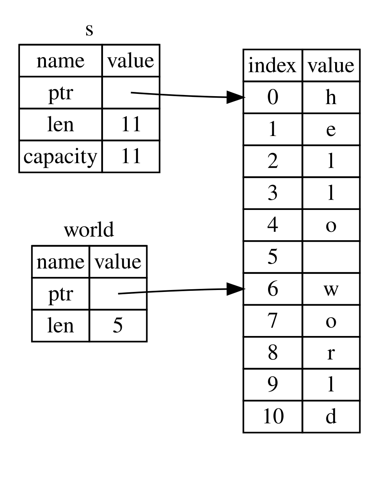
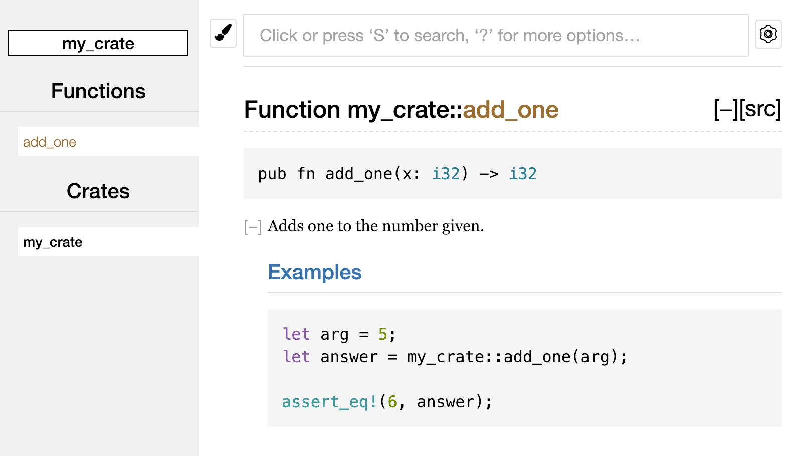
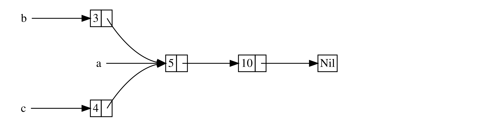

Язык программирования Rust
От Стива Клабника и Кэрол Николс, при поддержке других участников сообщества Rust
В этой версии учебника предполагается, что вы используете Rust 1.67.1 (выпущен 09.02.2023) или новее. См. раздел «Установка» главы 1 для установки или обновления Rust.
HTML-версия книги доступна онлайн по адресам https://doc.rust-lang.org/stable/book/(англ.) и https://doc.rust-lang.ru/book(рус.) и офлайн. При установке Rust с помощью rustup: просто запустите rustup docs --book, чтобы её открыть.
Также доступны несколько переводов от сообщества.
Этот материал доступен в виде печатной книги в мягкой обложке и в формате электронной книги от No Starch Press .
🚨 Предпочитаете более интерактивный процесс обучения? Попробуйте другую версию Rust Book, в которой есть: контрольные вопросы, цветовое выделение, наглядные визуализации и многое другое: https://rust-book.cs.brown.edu
Предисловие
Не всегда было ясно, но язык программирования Rust в основном посвящён расширению возможностей: независимо от того, какой код вы пишете сейчас, Rust позволяет вам достичь большего, чтобы программировать уверенно в более широком диапазоне областей, чем вы делали раньше.
Возьмём, к примеру, работу «системного уровня», которая касается низкоуровневых деталей управления памятью, представления данных и многопоточности. Традиционно эта область программирования считается загадочной, доступной лишь немногим избранным, посвятившим долгие годы изучению всех её печально известных подводных камней. И даже те, кто практикуют это, делают всё с осторожностью, чтобы их код не был уязвим для эксплойтов, сбоев или повреждений.
Rust разрушает эти барьеры, устраняя старые подводные камни и предоставляя дружелюбный, отполированный набор инструментов, который поможет вам на этом пути. Программисты, которым необходимо «погрузиться» в низкоуровневое управление, могут сделать это с помощью Rust, не беря на себя привычный риск аварий или дыр в безопасности и не изучая тонкости изменчивых наборов инструментов. Более того, язык предназначен для того, чтобы легко вести вас к надёжному коду, который эффективен с точки зрения скорости и использования памяти.
Программисты, которые уже работают с низкоуровневым кодом, могут использовать Rust для повышения своих амбиций. Например, внедрение параллелизма в Rust является операцией с относительно низким риском: компилятор поймает для вас классические ошибки. И вы можете заняться более агрессивной оптимизацией в своём коде с уверенностью, что не будете случайно добавлять в код сбои или уязвимости.
Но Rust не ограничивается низкоуровневым системным программированием. Он достаточно выразителен и эргономичен, чтобы приложения CLI (Command Line Interface – консольные программы), веб-серверы и многие другие виды кода были довольно приятными для написания — позже вы найдёте простые примеры того и другого в книге. Работа с Rust позволяет вырабатывать навыки, которые переносятся из одной предметной области в другую; вы можете изучить Rust, написав веб-приложение, а затем применить те же навыки для Raspberry Pi.
Эта книга полностью раскрывает потенциал Rust для расширения возможностей его пользователей. Это дружелюбный и доступный материал, призванный помочь вам повысить уровень не только ваших знаний о Rust, но и ваших возможностей и уверенности как программиста в целом. Так что погружайтесь, готовьтесь учиться и добро пожаловать в сообщество Rust!
— Nicholas Matsakis и Aaron Turon
Введение
Примечание. Это издание книги такое же, как и Язык программирования Rust, доступное в печатном и электронном формате от No Starch Press.
Добро пожаловать в The Rust Programming Language, вводную книгу о Rust. Язык программирования Rust помогает создавать быстрые, более надёжные приложения. Хорошая эргономика и низкоуровневый контроль часто являются противоречивыми требованиями для дизайна языков программирования; Rust бросает вызов этому конфликту. Благодаря сбалансированности мощных технических возможностей c большим удобством разработки, Rust предоставляет возможности управления низкоуровневыми элементами (например, использование памяти) без трудностей, традиционно связанных с таким контролем.
Кому подходит Rust
Rust идеально подходит для многих людей по целому ряду причин. Давайте рассмотрим несколько наиболее важных групп.
Команды разработчиков
Rust зарекомендовал себя как продуктивный инструмент для совместной работы больших команд разработчиков с разным уровнем знаний в области системного программирования. Низкоуровневый код подвержен различным трудноуловимым ошибкам, которые в большинстве других языков могут быть обнаружены только с помощью тщательного тестирования и проверки кода опытными разработчиками. В Rust компилятор играет роль привратника, отказываясь компилировать код с этими неуловимыми ошибками, включая ошибки параллелизма. Работая вместе с компилятором, команда может сфокусироваться на работе над логикой программы, а не над поиском ошибок.
Rust также привносит современные инструменты разработчика в мир системного программирования:
- Cargo, входящий в комплект менеджер зависимостей и инструмент сборки, делает добавление, компиляцию и управление зависимостями безболезненным и согласованным в рамках всей экосистемы Rust.
- Инструмент форматирования Rustfmt обеспечивает единый стиль кодирования для всех разработчиков.
- Rust Language Server обеспечивает интеграцию с интегрированной средой разработки (IDE) для автодополнения кода и встроенных сообщений об ошибках.
Благодаря применению этих и других инструментов в экосистеме Rust разработчики способны продуктивно работать при написании кода системного уровня.
Студенты
Rust полезен для студентов и тех, кто заинтересован в изучении системных концепций. Используя Rust, многие люди узнали о таких темах, как разработка операционных систем. Сообщество радушно и с удовольствием ответит на вопросы начинающих. Благодаря усилиям — таким, как эта книга — команды Rust хотят сделать концепции систем более доступными для большего числа людей, особенно для новичков в программировании.
Компании
Сотни больших и малых компаний используют Rust в промышленных условиях для решения различных задач, включая инструменты командной строки, веб-сервисы, инструменты DevOps, встраиваемые устройства, анализ и транскодирование аудио и видео, криптовалюты, биоинформатику, поисковые системы, приложения Интернета вещей, машинное обучение и даже основные части веб-браузера Firefox.
Разработчики Open Source
Rust предназначен для людей, которые хотят развивать язык программирования Rust, сообщество, инструменты для разработчиков и библиотеки. Мы будем рады, если вы внесёте свой вклад в развитие языка Rust.
Люди, ценящие скорость и стабильность
Rust предназначен для любителей скорости и стабильности в языке. Под скоростью мы подразумеваем как быстродействие программы на Rust, так и быстроту, с которой Rust позволяет писать программы. Проверки компилятора Rust обеспечивают стабильность за счёт функциональных дополнений и рефакторинга. Это выгодно отличается от хрупкого унаследованного кода в языках без таких проверок, который разработчики часто боятся изменять. Благодаря обеспечению абстракций с нулевой стоимостью, высокоуровневых возможностей, компилируемых в низкоуровневый код такой же быстрый, как и написанный вручную, Rust стремится сделать безопасный код ещё и быстрым.
Язык Rust надеется поддержать и многих других пользователей; перечисленные здесь - лишь самые значимые заинтересованные лица. В целом, главная цель Rust - избавиться от компромиссов, на которые программисты шли десятилетиями, обеспечив безопасность и производительность, скорость и эргономичность. Попробуйте Rust и убедитесь, подойдут ли вам его решения.
Для кого эта книга
В этой книге предполагается, что вы писали код на другом языке программирования, но не оговаривается, на каком именно. Мы постарались сделать материал доступным для широкого круга людей с разным уровнем подготовки в области программирования. Мы не будем тратить время на обсуждение сути понятия программирования или как его понимать. Если вы совсем новичок в программировании, рекомендуем прочитать книгу, посвящённую введению в программирование.
Как использовать эту книгу
В целом, книга предполагает, что вы будете читать последовательно от начала до конца. Более поздние главы опираются на концепции, изложенные в предыдущих главах, а предыдущие главы могут не углубляться в детали конкретной темы, так как в последующих главах они будут рассматриваться более подробно.
В этой книге вы найдёте два вида глав: главы о концепциях и главы с проектом. В главах о концепциях вы узнаете о каком-либо аспекте Rust. В главах проекта мы будем вместе создавать небольшие программы, применяя то, что вы уже узнали. Главы 2, 12 и 20 - это главы проекта; остальные - главы о концепциях.
Глава 1 объясняет, как установить Rust, как написать программу "Hello, world!" и как использовать Cargo, менеджер пакетов и инструмент сборки Rust. Глава 2 - это практическое введение в написание программы на Rust, в которой вам предлагается создать игру для угадывания чисел. Здесь мы рассмотрим концепции на высоком уровне, а в последующих главах будет предоставлена дополнительная информация. Если вы хотите сразу же приступить к работе, глава 2 - самое подходящее место для этого. В главе 3 рассматриваются возможности Rust, схожие с возможностями других языков программирования, а в главе 4 вы узнаете о системе владения Rust. Если вы особенно дотошный ученик и предпочитаете изучить каждую деталь, прежде чем переходить к следующей, возможно, вы захотите пропустить главу 2 и сразу перейти к главе 3, вернувшись к главе 2, когда захотите поработать над проектом, применяя изученные детали.
Глава 5 описывает структуры и методы, а глава 6 охватывает перечисления, выражения match и конструкции управления потоком if let. Вы будете использовать структуры и перечисления для создания пользовательских типов в Rust.
В главе 7 вы узнаете о системе модулей Rust, о правилах организации приватности вашего кода и его публичном интерфейсе прикладного программирования (API). В главе 8 обсуждаются некоторые распространённые структуры данных - коллекции, которые предоставляет стандартная библиотека, такие как векторы, строки и HashMaps. В главе 9 рассматриваются философия и методы обработки ошибок в Rust.
В главе 10 рассматриваются шаблонные типы данных, типажи и времена жизни, позволяющие написать код, который может использоваться разными типами. Глава 11 посвящена тестированию, которое даже с гарантиями безопасности в Rust необходимо для обеспечения правильной логики вашей программы. В главе 12 мы создадим собственную реализацию подмножества функциональности инструмента командной строки grep, предназначенного для поиска текста в файлах. Для этого мы будем использовать многие концепции, которые обсуждались в предыдущих главах.
В главе 13 рассматриваются замыкания и итераторы: особенности Rust, пришедшие из функциональных языков программирования. В главе 14 мы более подробно рассмотрим Cargo и поговорим о лучших методах распространения ваших библиотек среди других разработчиков. В главе 15 обсуждаются умные указатели, которые предоставляет стандартная библиотека, и типажи, обеспечивающие их функциональность.
В главе 16 мы рассмотрим различные модели параллельного программирования и поговорим о возможности Rust для безбоязненного многопоточно программирования. В главе 17 рассматривается сравнение идиом Rust с принципами объектно-ориентированного программирования, которые наверняка вам знакомы.
Глава 18 - это справочник по шаблонам и сопоставлению с образцами, которые являются мощными способами выражения идей в программах на Rust. Глава 19 содержит множество интересных дополнительных тем, включая небезопасный Rust, макросы и многое другое о времени жизни, типажах, типах, функциях и замыканиях.
В главе 20 мы завершим проект, в котором реализуем низкоуровневый многопоточный веб-сервер!
Наконец, некоторые приложения содержат полезную информацию о языке в более справочном формате. В приложении A рассматриваются ключевые слова Rust, в приложении B — операторы и символы Rust, в приложении C — производные типажи, предоставляемые стандартной библиотекой, в приложении D — некоторые полезные инструменты разработки, а в приложении E — издания Rust. В приложении F вы найдёте переводы книги, а в приложении G мы расскажем о том, как создаётся Rust и что такое nightly Rust.
Нет неправильного способа читать эту книгу: если вы хотите пропустить главу - сделайте это! Возможно, вам придётся вернуться к предыдущим главам, если возникнет недопонимание. Делайте все, как вам удобно.
Важной частью процесса обучения Rust является изучение того, как читать сообщения об ошибках, которые отображает компилятор: они приведут вас к работающему коду. Мы изучим много примеров, которые не компилируются и отображают ошибки в сообщениях компилятора в разных ситуациях. Знайте, что если вы введёте и запустите случайный пример, он может не скомпилироваться! Убедитесь, что вы прочитали окружающий текст, чтобы понять, не предназначен ли пример, который вы пытаетесь запустить, для демонстрации ошибки. Ferris также поможет вам различить код, который не предназначен для работы:
| Ferris | Пояснения |
|---|---|
 | Этот код не компилируется! |
 | Этот код вызывает панику! |
 | Этот код не приводит к желаемому поведению. |
В большинстве случаев мы приведём вас к правильной версии любого кода, который не компилируется.
Исходные коды
Файлы с исходным кодом, используемым в этой книге, можно найти на GitHub.
Начало работы
Начнём наше путешествие в Rust! Нужно много всего изучить, но каждое путешествие с чего-то начинается. В этой главе мы обсудим:
- установку Rust на Linux, macOS и Windows,
- написание программы, печатающей
Hello, world!, - использование
cargo, менеджера пакетов и системы сборки в одном лице для Rust.
Установка
Первым шагом является установка Rust. Мы загрузим Rust, используя инструмент командной строки rustup, предназначенный для управлениями версиями Rust и другими связанными с ним инструментами. Вам понадобится интернет-соединение для его загрузки.
Примечание: если вы по каким-то причинам предпочитаете не использовать rustup, пожалуйста, посетите страницу «Другие методы установки Rust» для получения дополнительных опций.
Следующие шаги устанавливают последнюю стабильную версию компилятора Rust. Благодаря гарантиям стабильности Rust все примеры в книге, которые компилируются, будут компилироваться и в новых версиях Rust. Вывод может немного отличаться в разных версиях, поскольку Rust часто улучшает сообщения об ошибках и предупреждения. Другими словами, любая новая, стабильная версия Rust, которую вы установите с помощью этих шагов, должна работать с содержимым этой книги так, как ожидается.
Условные обозначения командной строки
В этой главе и во всей книге мы будем демонстрировать некоторые команды, используемые в терминале. Строки, которые вы должны вводить в терминале, начинаются с
$. Вам не нужно вводить символ$; это подсказка командной строки, отображаемая для обозначения начала каждой команды. Строки, которые не начинаются с$, обычно показывают вывод предыдущей команды. Кроме того, в примерах, специфичных для PowerShell, будет использоваться>, а не$.
Установка rustup на Linux или macOS
Если вы используете Linux или macOS, пожалуйста, выполните следующую команду:
$ curl --proto '=https' --tlsv1.2 https://sh.rustup.rs -sSf | sh
Команда загружает сценарий и запускает установку инструмента rustup, который устанавливает последнюю стабильную версию Rust. Вам может быть предложено ввести пароль. Если установка прошла успешно, появится следующая строка:
Rust is installed now. Great!
Вам также понадобится компоновщик (linker) — программа, которую Rust использует для объединения своих скомпилированных выходных данных в один файл. Скорее всего, он у вас уже есть. При возникновении ошибок компоновки, вам следует установить компилятор C, который обычно будет включать в себя и компоновщик. Компилятор C также полезен, потому что некоторые распространённые пакеты Rust зависят от кода C и нуждаются в компиляторе C.
На macOS вы можете получить компилятор C, выполнив команду:
$ xcode-select --install
Пользователи Linux, как правило, должны устанавливать GCC или Clang в соответствии с документацией их дистрибутива. Например, при использовании Ubuntu можно установить пакет build-essential.
Установка rustup на Windows
На Windows перейдите по адресу https://www.rust-lang.org/tools/install и следуйте инструкциям по установке Rust. На определённом этапе установки вы получите сообщение, предупреждающее, что вам также понадобятся инструменты сборки MSVC для Visual Studio 2013 или более поздней версии.
Чтобы получить инструменты сборки, вам потребуется установить Visual Studio 2022. На вопрос о том, какие компоненты необходимо установить, выберите:
- “Desktop Development with C++”
- The Windows 10 or 11 SDK
- Английский языковой пакет вместе с любым другим языковым пакетом по вашему выбору.
В остальной части этой книги используются команды, которые работают как в cmd.exe, так и в PowerShell. При наличии специфических различий мы объясним, что необходимо сделать в таких случаях.
Устранение возможных ошибок
Чтобы проверить, правильно ли у вас установлен Rust, откройте оболочку и введите эту строку:
$ rustc --version
Вы должны увидеть номер версии, хэш фиксации и дату фиксации для последней стабильной версии, которая была выпущена, в следующем формате:
rustc x.y.z (abcabcabc yyyy-mm-dd)
Если вы видите эту информацию, вы успешно установили Rust! Если вы не видите эту информацию, убедитесь, что Rust находится в вашей системной переменной %PATH% следующим образом:
В Windows CMD:
> echo %PATH%
В PowerShell:
> echo $env:Path
В Linux и macOS:
$ echo $PATH
Если все было сделано правильно, но Rust все ещё не работает, есть несколько мест, где вам могут помочь. Узнайте, как связаться с другими Rustaceans (так мы себя называем) на странице сообщества.
Обновление и удаление
После установки Rust с помощью rustup обновление до новой версии не составит труда. В командной оболочке запустите следующий скрипт обновления:
$ rustup update
Чтобы удалить Rust и rustup, выполните следующую команду:
$ rustup self uninstall
Локальная документация
Установка Rust также включает локальную копию документации, чтобы вы могли читать её в автономном режиме. Выполните rustup doc, чтобы открыть локальную документацию в браузере.
Если стандартная библиотека предоставляет тип или функцию, а вы не знаете, что она делает или как её использовать, воспользуйтесь документацией интерфейса прикладного программирования (API), чтобы это узнать!
Привет, мир!
Теперь, когда вы установили Rust, пришло время написать свою первую программу на Rust. Традиционно при изучении нового языка принято писать небольшую программу, которая печатает на экране текст Привет, мир!, поэтому мы сделаем то же самое!
Примечание: Эта книга предполагает наличие базового навыка работы с командной строкой. Rust не предъявляет особых требований к тому, каким инструментарием вы пользуетесь для редактирования или хранения вашего кода, поэтому если вы предпочитаете использовать интегрированную среду разработки (IDE) вместо командной строки, смело используйте вашу любимую IDE. Многие IDE сейчас в той или иной степени поддерживают Rust; подробности можно узнать из документации к IDE. Команда Rust сосредоточилась на обеспечении отличной поддержки IDE с помощью
rust-analyzer. Более подробную информацию смотрите в Приложении D.
Создание папки проекта
Прежде всего начнём с создания директории, в которой будем сохранять наш код на языке Rust. На самом деле не важно, где сохранять наш код. Однако, для упражнений и проектов, обсуждаемых в данной книге, мы советуем создать директорию projects в вашем домашнем каталоге, там же и хранить в будущем код программ из книги.
Откройте терминал и введите следующие команды для того, чтобы создать директорию projects для хранения кода разных проектов, и, внутри неё, директорию hello_world для проекта “Привет, мир!”.
Для Linux, macOS и PowerShell на Windows, введите:
$ mkdir ~/projects
$ cd ~/projects
$ mkdir hello_world
$ cd hello_world
Для Windows в CMD, введите:
> mkdir "%USERPROFILE%\projects"
> cd /d "%USERPROFILE%\projects"
> mkdir hello_world
> cd hello_world
Написание и запуск первой Rust программы
Затем создайте новый исходный файл и назовите его main.rs. Файлы Rust всегда заканчиваются расширением .rs. Если вы используете более одного слова в имени файла, принято разделять их символом подчёркивания. Например, используйте hello_world.rs вместо helloworld.rs.
Теперь откроем файл main.rs для редактирования и введём следующие строки кода:
Название файла: main.rs
fn main() { println!("Привет, мир!"); }
Листинг 1-1: Программа, которая печатает Привет, мир!
Сохраните файл и вернитесь в окно терминала в каталог ~/projects/hello_world. В Linux или macOS введите следующие команды для компиляции и запуска файла:
$ rustc main.rs
$ ./main
Привет, мир!
В Windows, введите команду .\main.exe вместо ./main:
> rustc main.rs
> .\main.exe
Привет, мир!
Независимо от вашей операционной системы, строка Привет, мир! должна быть выведена на терминал. Если вы не видите такого вывода, обратитесь к разделу "Устранение неполадок", чтобы узнать, как получить помощь.
Если напечаталось Привет, мир!, то примите наши поздравления! Вы написали программу на Rust, что делает вас Rust программистом — добро пожаловать!
Анатомия программы на Rust
Давайте рассмотрим «Привет, мир!» программу в деталях. Вот первая часть головоломки:
fn main() { }
Эти строки определяют функцию с именем main. Функция main особенная: это всегда первый код, который запускается в каждой исполняемой программе Rust. Первая строка объявляет функцию с именем main, которая не имеет параметров и ничего не возвращает. Если бы были параметры, они бы заключались в круглые скобки ().
Тело функции заключено в {}. Rust требует фигурных скобок вокруг всех тел функций. Хороший стиль — поместить открывающую фигурную скобку на ту же строку, что и объявление функции, добавив между ними один пробел.
Примечание: Если хотите придерживаться стандартного стиля во всех проектах Rust, вы можете использовать инструмент автоматического форматирования под названием
rustfmtдля форматирования кода в определённом стиле (подробнее оrustfmtв Приложении D. Команда Rust включила этот инструмент в стандартный дистрибутив Rust, какrustc, поэтому он уже должен быть установлен на вашем компьютере!
Тело функции main содержит следующий код:
#![allow(unused)] fn main() { println!("Привет, мир!"); }
Эта строка делает всю работу в этой маленькой программе: печатает текст на экран. Можно заметить четыре важных детали.
Во-первых, стиль Rust предполагает отступ в четыре пробела, а не табуляцию.
Во-вторых, println! вызывается макрос Rust. Если бы вместо него была вызвана функция, она была бы набрана как println (без !). Более подробно мы обсудим макросы Rust в главе 19. Пока достаточно знать, что использование ! подразумевает вызов макроса вместо обычной функции, и что макросы не всегда подчиняются тем же правилам как функции.
В-третьих, вы видите строку "Привет, мир!". Мы передаём её в качестве аргумента макросу println!, и она выводится на экран.
В-четвёртых, мы завершаем строку точкой с запятой (;), которая указывает на окончание этого выражения и возможность начала следующего. Большинство строк кода Rust заканчиваются точкой с запятой.
Компиляция и запуск - это отдельные шаги
Вы только что запустили впервые созданную программу, поэтому давайте рассмотрим каждый шаг этого процесса.
Перед запуском программы на Rust вы должны скомпилировать её с помощью компилятора Rust, введя команду rustc и передав ей имя вашего исходного файла, например:
$ rustc main.rs
Если у вас есть опыт работы с C или C++, вы заметите, что это похоже на gcc или clang. После успешной компиляции Rust выводит двоичный исполняемый файл.
В Linux, macOS и PowerShell в Windows вы можете увидеть исполняемый файл, введя команду ls в оболочке:
$ ls
main main.rs
В Linux и macOS вы увидите два файла. При использовании PowerShell в Windows вы увидите такие же три файла, как и при использовании CMD. Используя CMD в Windows, введите следующее:
> dir /B %= the /B option says to only show the file names =%
main.exe
main.pdb
main.rs
Это показывает исходный код файла с расширением .rs, исполняемый файл (main.exe на Windows, но main на всех других платформах) и, при использовании Windows, файл, содержащий отладочную информацию с расширением .pdb. Отсюда вы запускаете файлы main или main.exe, например:
$ ./main # для Linux
> .\main.exe # для Windows
Если ваш main.rs — это ваша программа «Привет, мир!», эта строка выведет в терминал Привет, мир!.
Если вы лучше знакомы с динамическими языками, такими как Ruby, Python или JavaScript, возможно, вы не привыкли компилировать и запускать программу как отдельные шаги. Rust — это предварительно скомпилированный язык, то есть вы можете скомпилировать программу и передать исполняемый файл кому-то другому, и он сможет запустить его даже без установленного Rust. Если вы даёте кому-то файл .rb , .py или .js, у него должна быть установлена реализация Ruby, Python или JavaScript (соответственно). Но в этих языках вам нужна только одна команда для компиляции и запуска вашей программы. В дизайне языков программирования всё — компромисс.
Компиляция с помощью rustc подходит для простых программ, но по мере роста вашего проекта вы захотите управлять всеми параметрами и упростить передачу кода. Далее мы познакомим вас с инструментом Cargo, который поможет вам писать программы из реального мира на Rust.
Привет, Cargo!
Cargo - это система сборки и менеджер пакетов Rust. Большая часть разработчиков используют данный инструмент для управления проектами, потому что Cargo выполняет за вас множество задач, таких как сборка кода, загрузка библиотек, от которых зависит ваш код, и создание этих библиотек. (Мы называем библиотеки, которые нужны вашему коду, зависимостями.)
Самые простые программы на Rust, подобные той, которую мы написали, не имеют никаких зависимостей. Если бы мы сделали проект «Hello, world!» с Cargo, он бы использовал только ту часть Cargo, которая отвечает за компиляцию вашего кода. По мере написания более сложных программ на Rust вы будете добавлять зависимости, а если вы начнёте проект с использованием Cargo, добавлять зависимости станет намного проще.
Поскольку значительное число проектов Rust используют Cargo, оставшаяся часть книги подразумевает, что вы тоже используете Cargo. Cargo входит в комплект поставки Rust, если вы использовали официальные программы установки, рассмотренные в разделе "Установка". Если вы установили Rust другим способом, проверьте, установлен ли Cargo, введя в терминале следующее:
$ cargo --version
Если команда выдала номер версии, то значит Cargo установлен. Если вы видите ошибку, вроде command not found ("команда не найдена"), загляните в документацию для использованного вами способа установки, чтобы выполнить установку Cargo отдельно.
Создание проекта с помощью Cargo
Давайте создадим новый проект с помощью Cargo и посмотрим, как он отличается от нашего начального проекта "Hello, world!". Перейдите обратно в папку projects (или любую другую, где вы решили сохранять код). Затем, в любой операционной системе, запустите команду:
$ cargo new hello_cargo
$ cd hello_cargo
Первая команда создаёт новый каталог и проект с именем hello_cargo. Мы назвали наш проект hello_cargo, и Cargo создаёт свои файлы в каталоге с тем же именем.
Перейдём в каталог hello_cargo и посмотрим файлы. Увидим, что Cargo сгенерировал два файла и одну директорию: файл Cargo.toml и каталог src с файлом main.rs внутри.
Кроме того, cargo инициализировал новый репозиторий Git вместе с файлом .gitignore. Файлы Git не будут сгенерированы, если вы запустите cargo new в существующем репозитории Git; вы можете изменить это поведение, используя cargo new --vcs=git.
Примечание. Git — это распространённая система контроля версий. Вы можете изменить
cargo new, чтобы использовать другую систему контроля версий или не использовать систему контроля версий, используя флаг--vcs. Запуститеcargo new --help, чтобы увидеть доступные параметры.
Откройте файл Cargo.toml в любом текстовом редакторе. Он должен выглядеть как код в листинге 1-2.
Файл: Cargo.toml
[package]
name = "hello_cargo"
version = "0.1.0"
edition = "2021"
# See more keys and their definitions at https://doc.rust-lang.org/cargo/reference/manifest.html
[dependencies]
Листинг 1-2: Содержимое файла Cargo.toml, сгенерированное командой cargo new
Это файл в формате TOML (Tom’s Obvious, Minimal Language), который является форматом конфигураций Cargo.
Первая строка, [package], является заголовочной секцией, которая указывает что следующие инструкции настраивают пакет. По мере добавления больше информации в данный файл, будет добавляться больше секций и инструкций (строк).
Следующие три строки задают информацию о конфигурации, необходимую Cargo для компиляции вашей программы: имя, версию и редакцию Rust, который будет использоваться. Мы поговорим о ключе edition в Приложении E.
Последняя строка, [dependencies] является началом секции для списка любых зависимостей вашего проекта. В Rust, это внешние пакеты кода, на которые ссылаются ключевым словом crate. Нам не нужны никакие зависимости в данном проекте, но мы будем использовать их в первом проекте главы 2, так что нам пригодится данная секция зависимостей потом.
Откройте файл src/main.rs и загляните в него:
Файл: src/main.rs
fn main() { println!("Hello, world!"); }
Cargo сгенерировал для вас программу "Hello, world!", подобную той, которую мы написали в Листинге 1-1! Пока что различия между нашим предыдущим проектом и проектом, сгенерированным при помощи Cargo, заключаются в том, что Cargo поместил исходный код в каталог src, и у нас есть конфигурационный файл Cargo.toml в верхнем каталоге проекта.
Cargo ожидает, что ваши исходные файлы находятся внутри каталога src. Каталог верхнего уровня проекта предназначен только для файлов README, информации о лицензии, файлы конфигурации и чего то ещё не относящего к вашему коду. Использование Cargo помогает организовывать проект. Есть место для всего и все находится на своём месте.
Если вы начали проект без использования Cargo, как мы делали для "Hello, world!" проекта, то можно конвертировать его в проект с использованием Cargo. Переместите код в подкаталог src и создайте соответствующий файл Cargo.toml в папке.
Сборка и запуск Cargo проекта
Посмотрим, в чем разница при сборке и запуске программы "Hello, world!" с помощью Cargo. В каталоге hello_cargo соберите проект следующей командой:
$ cargo build
Compiling hello_cargo v0.1.0 (file:///projects/hello_cargo)
Finished dev [unoptimized + debuginfo] target(s) in 2.85 secs
Эта команда создаёт исполняемый файл в target/debug/hello_cargo (или target\debug\hello_cargo.exe в Windows), а не в вашем текущем каталоге. Поскольку стандартная сборка является отладочной, Cargo помещает двоичный файл в каталог с именем debug. Вы можете запустить исполняемый файл с помощью этой команды:
$ ./target/debug/hello_cargo # or .\target\debug\hello_cargo.exe on Windows
Hello, world!
Если все хорошо, то Hello, world! печатается в терминале. Запуск команды cargo build в первый раз также приводит к созданию нового файла Cargo.lock в папке верхнего уровня. Данный файл хранит точные версии зависимостей вашего проекта. Так как у нас нет зависимостей, то файл пустой. Вы никогда не должны менять этот файл вручную: Cargo сам управляет его содержимым для вас.
Только что мы собрали проект командой cargo build и запустили его из ./target/debug/hello_cargo. Но мы также можем при помощи команды cargo run сразу и скомпилировать код, и затем запустить полученный исполняемый файл всего лишь одной командой:
$ cargo run
Finished dev [unoptimized + debuginfo] target(s) in 0.0 secs
Running `target/debug/hello_cargo`
Hello, world!
Использование cargo run более удобно, чем необходимость помнить и запускать cargo build, а затем использовать весь путь к бинарному файлу, поэтому большинство разработчиков используют cargo run.
Обратите внимание, что на этот раз мы не видели вывода, указывающего на то, что Cargo компилирует hello_cargo. Cargo выяснил, что файлы не изменились, поэтому не стал пересобирать, а просто запустил бинарный файл. Если бы вы изменили свой исходный код, Cargo пересобрал бы проект перед его запуском, и вы бы увидели этот вывод:
$ cargo run
Compiling hello_cargo v0.1.0 (file:///projects/hello_cargo)
Finished dev [unoptimized + debuginfo] target(s) in 0.33 secs
Running `target/debug/hello_cargo`
Hello, world!
Cargo также предоставляет команду, называемую cargo check. Эта команда быстро проверяет ваш код, чтобы убедиться, что он компилируется, но не создаёт исполняемый файл:
$ cargo check
Checking hello_cargo v0.1.0 (file:///projects/hello_cargo)
Finished dev [unoptimized + debuginfo] target(s) in 0.32 secs
Почему вам не нужен исполняемый файл? Часто cargo check выполняется намного быстрее, чем cargo build, поскольку пропускает этап создания исполняемого файла. Если вы постоянно проверяете свою работу во время написания кода, использование cargo check ускорит процесс информирования вас о том, что ваш проект всё ещё компилируется! Таким образом, многие Rustacean периодически запускают cargo check, когда пишут свои программы, чтобы убедиться, что она компилируется. Затем они запускают cargo build, когда готовы использовать исполняемый файл.
Давайте подытожим, что мы уже узнали о Cargo:
- Мы можем создать проект с помощью
cargo new. - можно собирать проект, используя команду
cargo build, - можно одновременно собирать и запускать проект одной командой
cargo run, - можно собрать проект для проверки ошибок с помощью
cargo check, не тратя время на кодогенерацию исполняемого файла, - cargo сохраняет результаты сборки не в директорию с исходным кодом, а в отдельный каталог target/debug.
Дополнительным преимуществом использования Cargo является то, что его команды одинаковы для разных операционных систем. С этой точки зрения, мы больше не будем предоставлять отдельные инструкции для Linux, macOS или Windows.
Сборка финальной версии (Release)
Когда проект, наконец, готов к релизу, можно использовать команду cargo build --release для его компиляции с оптимизацией. Данная команда создаёт исполняемый файл в папке target/release в отличии от папки target/debug. Оптимизации делают так, что Rust код работает быстрее, но их включение увеличивает время компиляции. По этой причине есть два отдельных профиля: один для разработки, когда нужно осуществлять сборку быстро и часто, и другой, для сборки финальной программы, которую будете отдавать пользователям, которая готова к работе и будет выполняться максимально быстро. Если вы замеряете время выполнения вашего кода, убедитесь, что собрали проект с оптимизацией cargo build --release и тестируете исполняемый файл из папки target/release.
Cargo как Конвенция
В простых проектах Cargo не даёт больших преимуществ по сравнению с использованием rustc, но он проявит себя, когда ваши программы станут более сложными. Когда программы вырастают до нескольких файлов или нуждаются в зависимостях, гораздо проще позволить Cargo координировать сборку.
Не смотря на то, что проект hello_cargo простой, теперь он использует большую часть реального инструментария, который вы будете повседневно использовать в вашей карьере, связанной с Rust. Когда потребуется работать над проектами размещёнными в сети, вы сможете просто использовать следующую последовательность команд для получения кода с помощью Git, перехода в каталог проекта, сборку проекта:
$ git clone example.org/someproject
$ cd someproject
$ cargo build
Для получения дополнительной информации о Cargo ознакомьтесь с его документацией .
Итоги
Теперь вы готовы начать своё Rust путешествие! В данной главе вы изучили как:
- установить последнюю стабильную версию Rust, используя
rustup, - обновить Rust до последней версии,
- открыть локально установленную документацию,
- написать и запустить программу типа "Hello, world!", используя напрямую компилятор
rustc, - создать и запустить новый проект, используя соглашения и команды Cargo.
Это отличное время для создания более существенной программы, чтобы привыкнуть читать и писать код на языке Rust. Итак, в главе 2 мы построим программу для игры в угадай число. Если вы предпочитаете начать с изучения того, как работают общие концепции программирования в Rust, обратитесь к главе 3, а затем вернитесь к главе 2.
Программируем игру в загадки
Давайте окунёмся в Rust, вместе поработав над практическим проектом! В этой главе вы познакомитесь с несколькими общими концепциями Rust, показав, как использовать их в реальной программе. Вы узнаете о let , match, методах, ассоциированных функциях, внешних контейнерах и многом другом! В следующих главах мы рассмотрим эти идеи более подробно. В этой главе вы просто попрактикуетесь в основах.
Мы реализуем классическую для начинающих программистов задачу — игру в загадки. Вот как это работает: программа генерирует случайное целое число в диапазоне от 1 до 100. Затем она предлагает игроку его угадать. После ввода числа программа укажет, меньше или больше было загаданное число. Если догадка верна, игра напечатает поздравительное сообщение и завершится.
Настройка нового проекта
Для настройки нового проекта перейдите в каталог projects, который вы создали в главе 1, и создайте новый проект с использованием Cargo, как показано ниже:
$ cargo new guessing_game
$ cd guessing_game
Первая команда, cargo new, принимает в качестве первого аргумента имя проекта (guessing_game). Вторая команда изменяет каталог на новый каталог проекта.
Загляните в созданный файл Cargo.toml:
Файл: Cargo.toml
[package]
name = "guessing_game"
version = "0.1.0"
edition = "2024"
[dependencies]
Как вы уже видели в главе 1, cargo new создаёт программу «Hello, world!». Посмотрите файл src/main.rs:
Файл: src/main.rs
fn main() { println!("Hello, world!"); }
Теперь давайте скомпилируем программу «Hello, world!» и сразу на этом же этапе запустим её с помощью команды cargo run:
$ cargo run
Compiling guessing_game v0.1.0 (file:///projects/guessing_game)
Finished `dev` profile [unoptimized + debuginfo] target(s) in 0.08s
Running `target/debug/guessing_game`
Hello, world!
Команда run пригодится, когда необходимо ускоренно выполнить итерацию проекта. Именно так мы собираемся делать в этом проекте, быстро тестируя каждую итерацию, прежде чем перейти к следующей.
Снова откройте файл src/main.rs. Весь код вы будете писать в нем.
Обработка догадки
Первая часть программы запрашивает ввод данных пользователем, обрабатывает их и проверяет, что они в ожидаемой форме. Начнём с того, что позволим игроку ввести догадку. Вставьте код из листинга 2-1 в src/main.rs.
Файл: src/main.rs
use std::io;
fn main() {
println!("Guess the number!");
println!("Please input your guess.");
let mut guess = String::new();
io::stdin()
.read_line(&mut guess)
.expect("Failed to read line");
println!("You guessed: {guess}");
}
Листинг 2-1: код, который получает догадку от пользователя и выводит её на экран
Этот код содержит много информации, поэтому давайте рассмотрим его построчно. Чтобы получить пользовательский ввод и затем вывести результат, нам нужно включить в область видимости библиотеку ввода/вывода io. Библиотека io является частью стандартной библиотеки, известной как std:
use std::io;
fn main() {
println!("Guess the number!");
println!("Please input your guess.");
let mut guess = String::new();
io::stdin()
.read_line(&mut guess)
.expect("Failed to read line");
println!("You guessed: {guess}");
}
По умолчанию в Rust есть набор элементов, определённых в стандартной библиотеке, которые он добавляет в область видимости каждой программы. Этот набор называется прелюдией, и вы можете изучить его содержание в документации стандартной библиотеки.
Если тип, который требуется использовать, отсутствует в прелюдии, его нужно явно ввести в область видимости с помощью оператора use. Использование библиотеки std::io предоставляет ряд полезных функциональных возможностей, включая способность принимать пользовательский ввод.
Как уже отмечалось в главе 1, функция main является точкой входа в программу:
use std::io;
fn main() {
println!("Guess the number!");
println!("Please input your guess.");
let mut guess = String::new();
io::stdin()
.read_line(&mut guess)
.expect("Failed to read line");
println!("You guessed: {guess}");
}
Ключевое слово fn объявляет новую функцию, круглые скобки () показывают, что у функции нет входных параметров, фигурная скобка { - обозначение начала тела функции.
Также в главе 1 упоминалось, что println! — это макрос, который выводит строку на экран:
use std::io;
fn main() {
println!("Guess the number!");
println!("Please input your guess.");
let mut guess = String::new();
io::stdin()
.read_line(&mut guess)
.expect("Failed to read line");
println!("You guessed: {guess}");
}
Этот код показывает информацию о ходе игры и запрашивает пользовательский ввод.
Хранение значений с помощью переменных
Далее мы создаём переменную для хранения пользовательского ввода, как показано ниже:
use std::io;
fn main() {
println!("Guess the number!");
println!("Please input your guess.");
let mut guess = String::new();
io::stdin()
.read_line(&mut guess)
.expect("Failed to read line");
println!("You guessed: {guess}");
}
Вот теперь программа становится интереснее! В этой маленькой строке на самом деле происходит очень многое. Для создания переменной мы используем оператор let. Вот ещё один пример:
let apples = 5;
Эта строка создаёт новую переменную с именем apples и привязывает её к значению 5. В Rust переменные неизменяемы по умолчанию, то есть как только мы присвоим переменной значение, оно не изменится. Мы подробно обсудим эту концепцию в разделе "Переменные и изменчивость". в главе 3. Чтобы сделать переменную изменяемой, мы добавляем mut перед её именем:
let apples = 5; // неизменяемая
let mut bananas = 5; // изменяемая
Примечание: сочетание знаков
//начинает комментарий, который продолжается до конца строки. Rust игнорирует всё, что находится в комментариях. Мы обсудим комментарии более подробно в Главе 3.
Возвращаясь к программе игры "Угадайка" — теперь вы знаете, что let mut guess предоставит изменяемую переменную с именем guess. Знак равенства (=) сообщает Rust, что сейчас нужно связать что-то с этой переменной. Справа от знака равенства находится значение, связанное с guess, которое является результатом вызова функции String::new, возвращающей новый экземпляр String. String — это тип строки, предоставляемый стандартной библиотекой, который является расширяемым фрагментом текста в кодировке UTF-8.
Синтаксис :: в строке ::new указывает, что new является ассоциированной функцией типа String. Ассоциированная функция — это функция, реализованная для типа, в данном случае String. Функция new создаёт новую пустую строку. Функцию new можно встретить во многих типах, это типичное название для функции, которая создаёт новое значение какого-либо типа.
В конечном итоге строка let mut guess = String::new(); создала изменяемую переменную, которая связывается с новым пустым экземпляром String. Фух!
Получение пользовательского ввода
Напомним: мы подключили функциональность ввода/вывода из стандартной библиотеки с помощью use std::io; в первой строке программы. Теперь мы вызовем функцию stdin из модуля io, которая позволит нам обрабатывать пользовательский ввод:
use std::io;
fn main() {
println!("Guess the number!");
println!("Please input your guess.");
let mut guess = String::new();
io::stdin()
.read_line(&mut guess)
.expect("Failed to read line");
println!("You guessed: {guess}");
}
Если бы мы не импортировали библиотеку io с помощью use std::io в начале программы, мы все равно могли бы использовать эту функцию, записав её вызов как std::io::stdin. Функция stdin возвращает экземпляр std::io::Stdin, который является типом, представляющим дескриптор стандартного ввода для вашего терминала.
Далее строка .read_line(&mut guess) вызывает метод read_line на дескрипторе стандартного ввода для получения ввода от пользователя. Мы также передаём &mut guess в качестве аргумента read_line, сообщая ему, в какой строке хранить пользовательский ввод. Главная задача read_line — принять все, что пользователь вводит в стандартный ввод, и сложить это в строку (не переписывая её содержимое), поэтому мы передаём эту строку в качестве аргумента. Строковый аргумент должен быть изменяемым, чтобы метод мог изменить содержимое строки.
Символ & указывает, что этот аргумент является ссылкой, которая предоставляет возможность нескольким частям вашего кода получить доступ к одному фрагменту данных без необходимости копировать эти данные в память несколько раз. Ссылки — это сложная функциональная возможность, а одним из главных преимуществ Rust является безопасность и простота использования ссылок. Чтобы дописать эту программу, вам не понадобится знать много таких подробностей. Пока вам достаточно знать, что ссылки, как и переменные, по умолчанию неизменяемы. Соответственно, чтобы сделать её изменяемой, нужно написать &mut guess, а не &guess. (В главе 4 ссылки будут описаны более подробно).
Обработка потенциального сбоя с помощью типа Result
Мы всё ещё работаем над этой строкой кода. Сейчас мы обсуждаем третью строку, но обратите внимание, что она по-прежнему является частью одной логической строки. Следующая часть — метод:
use std::io;
fn main() {
println!("Guess the number!");
println!("Please input your guess.");
let mut guess = String::new();
io::stdin()
.read_line(&mut guess)
.expect("Failed to read line");
println!("You guessed: {guess}");
}
Мы могли бы написать этот код так:
io::stdin().read_line(&mut guess).expect("Failed to read line");
Однако одну длинную строку трудно читать, поэтому лучше разделить её. При вызове метода с помощью синтаксиса .method_name() часто целесообразно вводить новую строку и другие пробельные символы, чтобы разбить длинные строки. Теперь давайте обсудим, что делает эта строка.
Как упоминалось ранее, read_line помещает всё, что вводит пользователь, в строку, которую мы ему передаём, но также возвращает значение Result. Result — это перечисление, часто называемое enum, то есть тип, который может находиться в одном из нескольких возможных состояний. Мы называем каждое такое состояние вариантом.
В Главе 6 рассмотрим перечисления более подробно. Задачей типов Result является кодирование информации для обработки ошибок.
Вариантами Result являются Ok и Err. Вариант Ok указывает, что операция завершилась успешно, а внутри Ok находится успешно сгенерированное значение. Вариант Err означает, что операция не удалась, а Err содержит информацию о причинах неудачи.
Значения типа Result, как и значения любого типа, имеют определённые для них методы. У экземпляра Result есть метод expect, который можно вызвать. Если этот экземпляр Result является значением Err, expect вызовет сбой программы и отобразит сообщение, которое вы передали в качестве аргумента. Если метод read_line возвращает Err, то это, скорее всего, результат ошибки базовой операционной системы. Если экземпляр Result является значением Ok, expect возьмёт возвращаемое значение, которое удерживает Ok, и вернёт вам только это значение, чтобы вы могли его использовать далее. В данном случае это значение представляет собой количество байтов, введённых пользователем.
Если не вызвать expect, программа скомпилируется, но будет получено предупреждение:
$ cargo build
Compiling guessing_game v0.1.0 (file:///projects/guessing_game)
warning: unused `Result` that must be used
--> src/main.rs:10:5
|
10 | io::stdin().read_line(&mut guess);
| ^^^^^^^^^^^^^^^^^^^^^^^^^^^^^^^^^
|
= note: this `Result` may be an `Err` variant, which should be handled
= note: `#[warn(unused_must_use)]` (part of `#[warn(unused)]`) on by default
help: use `let _ = ...` to ignore the resulting value
|
10 | let _ = io::stdin().read_line(&mut guess);
| +++++++
warning: `guessing_game` (bin "guessing_game") generated 1 warning
Finished `dev` profile [unoptimized + debuginfo] target(s) in 0.59s
Rust предупреждает о неиспользованном значении Result, возвращаемого из read_line, показывая, что программа не учла возможность возникновения ошибки.
Правильный способ убрать предупреждение — это написать обработку ошибок, но в нашем случае мы просто хотим аварийно завершить программу при возникновении проблемы, поэтому используем expect. О способах восстановления после ошибок вы узнаете в главе 9.
Вывод значений с помощью заполнителей println!
Кроме закрывающей фигурной скобки, в коде на данный момент есть ещё только одно место для обсуждения:
use std::io;
fn main() {
println!("Guess the number!");
println!("Please input your guess.");
let mut guess = String::new();
io::stdin()
.read_line(&mut guess)
.expect("Failed to read line");
println!("You guessed: {guess}");
}
Этот код выводит строку, которая теперь содержит ввод пользователя. Набор фигурных скобок {} является заполнителем: думайте о {} как о маленьких клешнях краба, которые удерживают значение на месте. При печати значения переменной имя переменной может заключаться в фигурные скобки. При печати результата вычисления выражения поместите пустые фигурные скобки в строку формата, затем после строки формата укажите список выражений, разделённых запятыми, которые будут напечатаны в каждом заполнителе пустой фигурной скобки в том же порядке. Печать переменной и результата выражения одним вызовом println! будет выглядеть так:
#![allow(unused)] fn main() { let x = 5; let y = 10; println!("x = {x} and y + 2 = {}", y + 2); }
Этот код выведет x = 5 and y + 2 = 12.
Тестирование первой части
Давайте протестируем первую часть игры. Запустите её используя cargo run:
$ cargo run
Compiling guessing_game v0.1.0 (file:///projects/guessing_game)
Finished dev [unoptimized + debuginfo] target(s) in 6.44s
Running `target/debug/guessing_game`
Guess the number!
Please input your guess.
6
You guessed: 6
На данном этапе первая часть игры завершена: мы получаем ввод с клавиатуры и затем печатаем его.
Генерация секретного числа
Далее нам нужно сгенерировать секретное число, которое пользователь попытается угадать. Секретное число должно быть каждый раз разным, чтобы в игру можно было играть несколько раз. Мы будем использовать случайное число в диапазоне от 1 до 100, чтобы игра не была слишком сложной. Rust пока не включает функциональность случайных чисел в свою стандартную библиотеку. Однако команда Rust предоставляет [крейт rand] с подобной функциональностью.
Использование крейта для получения дополнительного функционала
Помните, что пакет (crate) - это коллекция файлов исходного кода Rust. Проект, создаваемый нами, представляет собой
бинарный пакет (binary crate), который является исполняемым файлом. Пакет rand - это библиотечный пакет (library crate), содержащий код, который предназначен для использования в других программах и поэтому не может исполняться сам по себе.
Координация работы внешних пакетов является тем местом, где Cargo на самом деле блистает. Чтобы начать писать код, использующий rand, необходимо изменить файл Cargo.toml, включив в него в качестве зависимости пакет rand. Итак, откройте этот файл и добавьте следующую строку внизу под заголовком секции [dependencies], созданным для вас Cargo. Обязательно укажите rand в точности так же, как здесь, с таким же номером версии, иначе примеры кода из этого урока могут не заработать.
Имя файла: Cargo.toml
[dependencies]
rand = "0.10.1"
В файле Cargo.toml всё, что следует за заголовком, является частью этой секции, которая продолжается до тех пор, пока не начнётся следующая. В [dependencies] вы сообщаете Cargo, от каких внешних крейтов зависит ваш проект и какие версии этих крейтов вам нужны. В этом случае мы указываем крейт rand со спецификатором семантической версии 0.8.5. Cargo понимает семантическое версионирование (иногда называемое SemVer), которое является стандартом для описания версий. Число 0.8.5 на самом деле является сокращением от ^0.8.5, что означает любую версию не ниже 0.8.5, но ниже 0.9.0.
Cargo рассчитывает, что эти версии имеют общедоступное API, совместимое с версией 0.8.5, и вы получите последние версии исправлений, которые по-прежнему будут компилироваться с кодом из этой главы. Не гарантируется, что версия 0.9.0 или выше будет иметь тот же API, что и в следующих примерах.
Теперь, не меняя ничего в коде, давайте соберём проект, как показано в листинге 2-2.
$ cargo build
Updating crates.io index
Downloaded rand v0.8.5
Downloaded libc v0.2.127
Downloaded getrandom v0.2.7
Downloaded cfg-if v1.0.0
Downloaded ppv-lite86 v0.2.16
Downloaded rand_chacha v0.3.1
Downloaded rand_core v0.6.3
Compiling libc v0.2.127
Compiling getrandom v0.2.7
Compiling cfg-if v1.0.0
Compiling ppv-lite86 v0.2.16
Compiling rand_core v0.6.3
Compiling rand_chacha v0.3.1
Compiling rand v0.8.5
Compiling guessing_game v0.1.0 (file:///projects/guessing_game)
Finished dev [unoptimized + debuginfo] target(s) in 2.53s
Листинг 2-2: результат выполнения cargo build после добавления крейта rand в качестве зависимости
Вы можете увидеть другие номера версий (но все они будут совместимы с кодом благодаря SemVer), другие строки (в зависимости от операционной системы), а также строки могут быть расположены в другом порядке.
Когда мы включаем внешнюю зависимость, Cargo берет последние версии всего, что нужно этой зависимости, из реестра (registry), который является копией данных с Crates.io. Crates.io — это место, где участники экосистемы Rust размещают свои проекты с открытым исходным кодом для использования другими.
После обновления реестра Cargo проверяет раздел [dependencies] и загружает все указанные в списке пакеты, которые ещё не были загружены. В нашем случае, хотя мы указали только rand в качестве зависимости, Cargo также захватил другие пакеты, от которых зависит работа rand. После загрузки пакетов Rust компилирует их, а затем компилирует проект с имеющимися зависимостями.
Если сразу же запустить cargo build снова, не внося никаких изменений, то кроме строки Finished вы не получите никакого вывода. Cargo знает, что он уже загрузил и скомпилировал зависимости, и вы не вносили никаких изменений в файл Cargo.toml. Cargo также знает, что вы ничего не изменили в своём коде, поэтому он не перекомпилирует и его. Если делать нечего, он просто завершает работу.
Если вы откроете файл src/main.rs, внесёте тривиальное изменение, а затем сохраните его и снова соберёте, вы увидите только две строки вывода:
$ cargo build
Compiling guessing_game v0.1.0 (file:///projects/guessing_game)
Finished dev [unoptimized + debuginfo] target(s) in 2.53 secs
Эти строки показывают, что Cargo обновляет сборку только с вашим крошечным изменением в файле src/main.rs. Ваши зависимости не изменились, поэтому Cargo знает, что может повторно использовать то, что уже скачано и скомпилировано для них.
Обеспечение воспроизводимых сборок с помощью файла Cargo.lock
В Cargo есть механизм, обеспечивающий возможность пересобрать всё тот же артефакт каждый раз, когда вы или кто-либо другой собирает ваш код. Пока вы не укажете обратное, Cargo будет использовать только те версии зависимостей, которые были заданы ранее. Например, допустим, что на следующей неделе выходит версия 0.8.6 пакета rand , и она содержит важное исправление ошибки, но также регрессию, которая может сломать ваш код. Чтобы справиться с этим, Rust создаёт файл Cargo.lock при первом запуске cargo build, поэтому теперь он есть в каталоге guessing_game.
Когда вы создаёте проект в первый раз, Cargo определяет все версии зависимостей, которые соответствуют критериям, а затем записывает их в файл Cargo.lock. Когда вы будете собирать свой проект в будущем, Cargo увидит, что файл Cargo.lock существует, и будет использовать указанные там версии, а не выполнять всю работу по выяснению версий заново. Это позволяет автоматически создавать воспроизводимую сборку. Другими словами, ваш проект останется на 0.8.5 до тех пор, пока вы явно не обновите его благодаря файлу Cargo.lock. Поскольку файл Cargo.lock важен для воспроизводимых сборок, он часто хранится в системе управления версиями вместе с остальным кодом проекта.
Обновление пакета для получения новой версии
Если вы захотите обновить пакет, Cargo предоставляет команду update, которая игнорирует файл Cargo.lock и определяет последние версии, соответствующие вашим спецификациям из файла Cargo.toml. После этого Cargo запишет эти версии в файл Cargo.lock. Иначе по умолчанию Cargo будет искать только версии больше 0.8.5, но при этом меньше 0.9.0. Если пакет rand имеет две новые версии — 0.8.6 и 0.9.0 — то при запуске cargo update вы увидите следующее:
$ cargo update
Updating crates.io index
Updating rand v0.8.5 -> v0.8.6
Cargo игнорирует релиз 0.9.0. В этот момент также появится изменение в файле Cargo.lock, указывающее на то, что версия rand, которая теперь используется, равна 0.8.6. Чтобы использовать rand версии 0.9.0 или любой другой версии из серии 0.9.x, необходимо обновить файл Cargo.toml следующим образом:
[dependencies]
rand = "0.9.0"
В следующий раз, при запуске cargo build, Cargo обновит реестр доступных пакетов и пересмотрит ваши требования к rand в соответствии с новой версией, которую вы указали.
Можно много рассказать про Cargo и его экосистему которые мы обсудим в главе 14, сейчас это все что вам нужно знать. Cargo позволяет очень легко повторно использовать библиотеки, поэтому Rust разработчики имеют возможность писать меньшие проекты, которые скомпонованы из многих пакетов.
Генерация случайного числа
Давайте начнём использовать rand, чтобы сгенерировать число для угадывания. Следующим шагом будет обновление src/main.rs, как показано в листинге 2-3.
Файл: src/main.rs
use std::io;
use rand::prelude::*;
fn main() {
println!("Guess the number!");
let secret_number = rand::rng().random_range(1..=100);
println!("The secret number is: {secret_number}");
println!("Please input your guess.");
let mut guess = String::new();
io::stdin()
.read_line(&mut guess)
.expect("Failed to read line");
println!("You guessed: {guess}");
}
Листинг 2-3: Добавление кода который генерирует случайное число
Сначала мы добавляем строку use rand::Rng. Типаж Rng определяет методы, реализующие генераторы случайных чисел, и этот типаж должен быть в области видимости, чтобы эти методы можно было использовать. В главе 10 мы рассмотрим типажи подробно.
Затем мы добавляем две строки посередине. В первой строке мы вызываем функцию rand::thread_rng, дающую нам генератор случайных чисел, который мы собираемся использовать: тот самый, который является локальным для текущего потока выполнения и запускается операционной системой. Затем мы вызываем его метод gen_range. Этот метод определяется Rng, который мы включили в область видимости с помощью оператора use rand::Rng. Метод gen_range принимает в качестве аргумента выражение диапазона и генерирует случайное число в этом диапазоне. Тип используемого выражения диапазона принимает форму start..=end и включает нижнюю и верхнюю границы, поэтому, чтобы запросить число от 1 до 100, нам нужно указать 1..=100.
Примечание: непросто сразу разобраться, какие типажи использовать, какие методы и функции вызывать из пакета, поэтому каждый пакет имеет документацию с инструкциями по его использованию. Ещё одной замечательной особенностью Cargo является выполнение команды
cargo doc --open, которая локально собирает документацию, предоставляемую всеми вашими зависимостями, и открывает её в браузере. К примеру, если интересна другая функциональность из пакетаrand, запуститеcargo doc --openи нажмитеrandв боковой панели слева.
Во второй новой строке мы увидим загаданное число. Во время разработки программы полезно иметь возможность её протестировать, но в финальной версии мы это удалим. Конечно, ведь это совсем не похоже на игру, если программа печатает ответ сразу после запуска!
Попробуйте запустить программу несколько раз:
$ cargo run
Compiling guessing_game v0.1.0 (file:///projects/guessing_game)
Finished dev [unoptimized + debuginfo] target(s) in 2.53s
Running `target/debug/guessing_game`
Guess the number!
The secret number is: 7
Please input your guess.
4
You guessed: 4
$ cargo run
Finished dev [unoptimized + debuginfo] target(s) in 0.02s
Running `target/debug/guessing_game`
Guess the number!
The secret number is: 83
Please input your guess.
5
You guessed: 5
Вы должны получить разные случайные числа, и все они должны быть числами в диапазоне от 1 до 100. Отличная работа!
Сравнение догадки с секретным числом
Теперь, когда у нас есть пользовательский ввод и случайное число, мы можем сравнить их. Этот шаг показан в листинге 2-4. Учтите, что этот код ещё не скомпилируется, подробнее мы объясним дальше.
Имя файла: src/main.rs
use std::cmp::Ordering;
use std::io;
use rand::prelude::*;
fn main() {
// --snip--
println!("Guess the number!");
let secret_number = rand::rng().random_range(1..=100);
println!("The secret number is: {secret_number}");
println!("Please input your guess.");
let mut guess = String::new();
io::stdin()
.read_line(&mut guess)
.expect("Failed to read line");
println!("You guessed: {guess}");
match guess.cmp(&secret_number) {
Ordering::Less => println!("Too small!"),
Ordering::Greater => println!("Too big!"),
Ordering::Equal => println!("You win!"),
}
}
Листинг 2-4: Обработка возможных возвращаемых значений при сравнении двух чисел
Сначала добавим ещё один оператор use, который вводит тип с именем std::cmp::Ordering в область видимости из стандартной библиотеки. Тип Ordering является ещё одним перечислением и имеет варианты Less, Greater и Equal. Это три возможных исхода при сравнении двух величин.
После чего ниже добавляем пять новых строк, использующих тип Ordering. Метод cmp сравнивает два значения и может вызываться для всего, что можно сравнить. Он принимает ссылку на все, что требуется сравнить: здесь сравнивается guess с secret_number. В результате возвращается вариант перечисления Ordering, которое мы ввели в область видимости с помощью оператора use. Для принятия решения о том, что делать дальше, мы используем выражение match, определяющее, какой вариант Ordering был возвращён из вызова cmp со значениями guess и secret_number.
Выражение match состоит из веток (arms). Ветка состоит из шаблона для сопоставления и кода, который будет запущен, если значение, переданное в match, соответствует шаблону этой ветки. Rust принимает значение, заданное match, и по очереди просматривает шаблон каждой ветки. Шаблоны и конструкция match — это мощные возможности Rust, позволяющие выразить множество ситуаций, с которыми может столкнуться ваш код, и гарантировать их обработку. Эти возможности будут подробно раскрыты в главе 6 и главе 18 соответственно.
Давайте рассмотрим пример с выражением match, которое мы здесь используем. Скажем, пользователь угадал 50, а случайно сгенерированное секретное число на этот раз — 38.
Когда код сравнивает 50 с 38, метод cmp вернёт Ordering::Greater, поскольку 50 больше, чем 38. Выражение match получит значение Ordering::Greater и начнёт проверять шаблон в каждой ветке. Он просмотрит шаблон первой ветки, Ordering::Less, и увидит, что значение Ordering::Greater не соответствует Ordering::Less, поэтому проигнорирует код этой ветки и перейдёт к следующей. Шаблон следующей ветки — Ordering::Greater, который соответствует Ordering::Greater! Код этой ветки будет выполнен и напечатает Too big! на экран. Выражение match заканчивается после первого успешного совпадения, поэтому в этом сценарии оно не будет рассматривать последнюю ветку.
Однако код в листинге 2-4 всё ещё не скомпилируется. Давайте попробуем:
$ cargo build
Compiling libc v0.2.186
Compiling rand_core v0.10.1
Compiling cfg-if v1.0.0
Compiling getrandom v0.4.3
Compiling chacha20 v0.10.1
Compiling rand v0.10.1
Compiling guessing_game v0.1.0 (file:///projects/guessing_game)
error[E0308]: mismatched types
--> src/main.rs:23:21
|
23 | match guess.cmp(&secret_number) {
| --- ^^^^^^^^^^^^^^ expected `&String`, found `&{integer}`
| |
| arguments to this method are incorrect
|
= note: expected reference `&String`
found reference `&{integer}`
note: method defined here
--> /rustc/88d9e12ae178fab0fb5cc050a94da85685d449ea/library/core/src/cmp.rs:1000:7
For more information about this error, try `rustc --explain E0308`.
error: could not compile `guessing_game` (bin "guessing_game") due to 1 previous error
Суть ошибки заключается в наличии несовпадающих типов. У Rust строгая статическая система типов. Однако в нем также есть механизм вывода типов. Когда мы написали let mut guess = String::new(), Rust смог сделать вывод, что guess должна быть String и не заставил указывать тип. С другой стороны, secret_number — это числовой тип. Несколько типов чисел в Rust могут иметь значение от 1 до 100: i32, 32-битное число; u32, беззнаковое 32-битное число; i64, 64-битное число, и так далее. Если не указано иное, Rust по умолчанию использует i32, который будет типом secret_number, если вы не добавите информацию о типе где-то ещё, чтобы заставить Rust вывести другой числовой тип. Причина ошибки заключается в том, что Rust не может сравнить строку и числовой тип.
В конечном итоге необходимо преобразовать String, считываемую программой в качестве входных данных, в реальный числовой тип, чтобы иметь возможность числового сравнения с загаданным числом. Для этого добавьте в тело функции main следующую строку:
Имя файла: src/main.rs
use std::cmp::Ordering;
use std::io;
use rand::prelude::*;
fn main() {
println!("Guess the number!");
let secret_number = rand::rng().random_range(1..=100);
println!("The secret number is: {secret_number}");
println!("Please input your guess.");
// --snip--
let mut guess = String::new();
io::stdin()
.read_line(&mut guess)
.expect("Failed to read line");
let guess: u32 = guess.trim().parse().expect("Please type a number!");
println!("You guessed: {guess}");
match guess.cmp(&secret_number) {
Ordering::Less => println!("Too small!"),
Ordering::Greater => println!("Too big!"),
Ordering::Equal => println!("You win!"),
}
}
Вот эта строка:
let guess: u32 = guess.trim().parse().expect("Please type a number!");
Мы создаём переменную с именем guess. Но подождите, разве в программе уже нет переменной с этим именем guess? Так и есть, но Rust позволяет нам затенять предыдущее значение guess новым. Затенение позволяет нам повторно использовать имя переменной guess, чтобы избежать создания двух уникальных переменных, таких как guess_str и guess, например. Мы рассмотрим это более подробно в главе 3, а пока знайте, что эта функция часто используется, когда необходимо преобразовать значение из одного типа в другой.
Мы связываем эту новую переменную с выражением guess.trim().parse(). Переменная guess в этом выражении относится к исходной переменной guess, которая содержала входные данные в виде строки. Метод trim на экземпляре String удалит любые пробельные символы в начале и конце строки для того, чтобы мы могли сопоставить строку с u32, который содержит только числовые данные. Пользователь должен нажать enter, чтобы выполнить read_line и ввести свою догадку, при этом в строку добавится символ новой строки. Например, если пользователь набирает 5 и нажимает enter, guess будет выглядеть так: 5\n. Символ \n означает "новая строка". (В Windows нажатие enter сопровождается возвратом каретки и новой строкой, \r\n). Метод trim убирает \n или \r\n, оставляя только 5.
Метод parse строк преобразует строку в другой тип. Здесь мы используем его для преобразования строки в число. Нам нужно сообщить Rust точный числовой тип, который мы хотим получить, используя let guess: u32. Двоеточие ( : ) после guess говорит Rust, что мы аннотируем тип переменной. В Rust есть несколько встроенных числовых типов; u32, показанный здесь, представляет собой 32-битное целое число без знака. Это хороший выбор по умолчанию для небольшого положительного числа. Вы узнаете о других типах чисел в главе 3.
Кроме того, аннотация u32 в этом примере программы и сравнение с secret_number означает, что Rust сделает вывод, что secret_number должен быть u32. Итак, теперь сравнение будет между двумя значениями одного типа!
Метод parse будет работать только с символами, которые логически могут быть преобразованы в числа, и поэтому легко может вызвать ошибки. Если, например, строка содержит A👍%, преобразовать её в число невозможно. Так как метод parse может потерпеть неудачу, он возвращает тип Result — так же как и метод read_line (обсуждалось ранее в разделе «Обработка потенциальной ошибки с помощью типа Result»). Мы будем точно так же обрабатывать данный Result, вновь используя метод expect. Если parse вернёт вариант Result Err, так как не смог создать число из строки, вызов expect аварийно завершит игру и отобразит переданное ему сообщение. Если parse сможет успешно преобразовать строку в число, он вернёт вариант Result Ok, а expect вернёт число, полученное из значения Ok.
Давайте запустим программу теперь:
$ cargo run
Compiling guessing_game v0.1.0 (file:///projects/guessing_game)
Finished dev [unoptimized + debuginfo] target(s) in 0.43s
Running `target/debug/guessing_game`
Guess the number!
The secret number is: 58
Please input your guess.
76
You guessed: 76
Too big!
Хорошо! Несмотря на то, что были добавлены пробелы в строке ввода, программа всё равно поняла, что пользователь имел в виду число 76. Запустите программу несколько раз, чтобы проверить разное поведение при различных типах ввода: задайте число правильно, задайте слишком большое число и задайте слишком маленькое число.
Сейчас у нас работает большая часть игры, но пользователь может сделать только одну догадку. Давайте изменим это, добавив цикл!
Возможность нескольких догадок с помощью циклов
Ключевое слово loop создаёт бесконечный цикл. Мы добавляем цикл, чтобы дать пользователям больше шансов угадать число:
Имя файла: src/main.rs
use std::cmp::Ordering;
use std::io;
use rand::prelude::*;
fn main() {
println!("Guess the number!");
let secret_number = rand::rng().random_range(1..=100);
// --snip--
println!("The secret number is: {secret_number}");
loop {
println!("Please input your guess.");
// --snip--
let mut guess = String::new();
io::stdin()
.read_line(&mut guess)
.expect("Failed to read line");
let guess: u32 = guess.trim().parse().expect("Please type a number!");
println!("You guessed: {guess}");
match guess.cmp(&secret_number) {
Ordering::Less => println!("Too small!"),
Ordering::Greater => println!("Too big!"),
Ordering::Equal => println!("You win!"),
}
}
}
Как видите, мы переместили всё, начиная с подсказки ввода догадки, в цикл. Не забудьте добавить ещё по четыре пробела на отступы строк внутри цикла и запустите программу снова. Теперь программа будет бесконечно запрашивать ещё одну догадку, что фактически создаёт новую проблему. Похоже, пользователь не сможет выйти из игры!
Пользователь может прервать выполнение программы с помощью сочетания клавиш ctrl+c. Но есть и другой способ спастись от этого ненасытного монстра, о котором говорилось при обсуждении parse в «Сравнение догадки с секретным числом»: если пользователь введёт нечисловой ответ, программа завершится аварийно. Мы можем воспользоваться этим, чтобы позволить пользователю выйти из игры, как показано здесь:
$ cargo run
Compiling guessing_game v0.1.0 (file:///projects/guessing_game)
Finished dev [unoptimized + debuginfo] target(s) in 1.50s
Running `target/debug/guessing_game`
Guess the number!
The secret number is: 59
Please input your guess.
45
You guessed: 45
Too small!
Please input your guess.
60
You guessed: 60
Too big!
Please input your guess.
59
You guessed: 59
You win!
Please input your guess.
quit
thread 'main' panicked at 'Please type a number!: ParseIntError { kind: InvalidDigit }', src/main.rs:28:47
note: run with `RUST_BACKTRACE=1` environment variable to display a backtrace
Ввод quit приведёт к выходу из игры, но, как вы заметите, так же будет и при любом другом нечисловом вводе. Однако это, мягко говоря, не оптимально. Мы хотим, чтобы игра автоматически остановилась, когда будет угадано правильное число.
Выход после правильной догадки
Давайте запрограммируем игру на выход при выигрыше пользователя, добавив оператор break:
Файл: src/main.rs
use std::cmp::Ordering;
use std::io;
use rand::prelude::*;
fn main() {
println!("Guess the number!");
let secret_number = rand::rng().random_range(1..=100);
println!("The secret number is: {secret_number}");
loop {
println!("Please input your guess.");
let mut guess = String::new();
io::stdin()
.read_line(&mut guess)
.expect("Failed to read line");
let guess: u32 = guess.trim().parse().expect("Please type a number!");
println!("You guessed: {guess}");
// --snip--
match guess.cmp(&secret_number) {
Ordering::Less => println!("Too small!"),
Ordering::Greater => println!("Too big!"),
Ordering::Equal => {
println!("You win!");
break;
}
}
}
}
Добавление строки break после You win! заставляет программу выйти из цикла, когда пользователь правильно угадает секретное число. Выход из цикла также означает выход из программы, так как цикл является последней частью main.
Обработка недопустимого ввода
Чтобы улучшить поведение игры, вместо аварийного завершения программы, когда пользователь вводит не число, давайте заставим игру игнорировать этот факт, позволяя пользователю продолжить угадывание. Для этого необходимо изменить строку, в которой guess преобразуется из String в u32, как показано в листинге 2-5.
Файл: src/main.rs
use std::cmp::Ordering;
use std::io;
use rand::prelude::*;
fn main() {
println!("Guess the number!");
let secret_number = rand::rng().random_range(1..=100);
println!("The secret number is: {secret_number}");
loop {
println!("Please input your guess.");
let mut guess = String::new();
// --snip--
io::stdin()
.read_line(&mut guess)
.expect("Failed to read line");
let guess: u32 = match guess.trim().parse() {
Ok(num) => num,
Err(_) => continue,
};
println!("You guessed: {guess}");
// --snip--
match guess.cmp(&secret_number) {
Ordering::Less => println!("Too small!"),
Ordering::Greater => println!("Too big!"),
Ordering::Equal => {
println!("You win!");
break;
}
}
}
}
Листинг 2-5. Игнорирование нечисловой догадки и запрос другой догадки вместо завершения программы
Мы заменяем вызов expect на выражение match, чтобы перейти от аварийного завершения при ошибке к обработке ошибки. Помните, что parse возвращает тип Result, а Result — это перечисление, которое имеет варианты Ok и Err. Здесь мы используем выражение match, как и в случае с результатом Ordering метода cmp.
Если parse успешно преобразует строку в число, он вернёт значение Ok, содержащее полученное число. Это значение Ok будет соответствовать шаблону первой ветки, а выражение match просто вернёт значение num, которое parse произвёл и поместил внутрь значения Ok. Это число окажется в нужной нам переменной guess, которую мы создали.
Если метод parse не способен превратить строку в число, он вернёт значение Err, которое содержит более подробную информацию об ошибке. Значение Err не совпадает с шаблоном Ok(num) в первой ветке match, но совпадает с шаблоном Err(_) второй ветки. Подчёркивание _ является всеохватывающим выражением. В этой ветке мы говорим, что хотим обработать совпадение всех значений Err, независимо от того, какая информация находится внутри. Поэтому программа выполнит код второй ветки, continue, который сообщает программе перейти к следующей итерации loop и запросить ещё одну догадку. В этом случае программа эффективно игнорирует все ошибки, с которыми parse может столкнуться!
Всё в программе теперь должно работать как положено. Давайте попробуем:
$ cargo run
Compiling guessing_game v0.1.0 (file:///projects/guessing_game)
Finished dev [unoptimized + debuginfo] target(s) in 4.45s
Running `target/debug/guessing_game`
Guess the number!
The secret number is: 61
Please input your guess.
10
You guessed: 10
Too small!
Please input your guess.
99
You guessed: 99
Too big!
Please input your guess.
foo
Please input your guess.
61
You guessed: 61
You win!
Потрясающе! С помощью одной маленькой последней правки мы закончим игру в угадывание. Напомним, что программа все ещё печатает секретное число. Это хорошо подходило для тестирования, но это портит игру. Давайте удалим println!, который выводит секретное число. В Листинге 2-6 показан окончательный вариант кода.
Файл: src/main.rs
use std::cmp::Ordering;
use std::io;
use rand::prelude::*;
fn main() {
println!("Guess the number!");
let secret_number = rand::rng().random_range(1..=100);
loop {
println!("Please input your guess.");
let mut guess = String::new();
io::stdin()
.read_line(&mut guess)
.expect("Failed to read line");
let guess: u32 = match guess.trim().parse() {
Ok(num) => num,
Err(_) => continue,
};
println!("You guessed: {guess}");
match guess.cmp(&secret_number) {
Ordering::Less => println!("Too small!"),
Ordering::Greater => println!("Too big!"),
Ordering::Equal => {
println!("You win!");
break;
}
}
}
}
Листинг 2-6: полный код игры
На данный момент вы успешно создали игру в загадки. Поздравляем!
Заключение
Этот проект — практический способ познакомить вас со многими новыми концепциями Rust: let, match, функции, использование внешних крейтов и многое другое. В следующих нескольких главах вы изучите эти концепции более подробно. Глава 3 охватывает понятия, которые есть в большинстве языков программирования, такие как переменные, типы данных и функции, и показывает, как использовать их в Rust. В главе 4 рассматривается владение — особенность, которая отличает Rust от других языков. В главе 5 обсуждаются структуры и синтаксис методов, а в главе 6 объясняется, как работают перечисления.
Общие концепции программирования
В этой главе рассматриваются концепции, присутствующие почти в каждом языке программирования, и то, как они работают в Rust. В основе большинства языков программирования есть много общего. Все концепции, представленные в этой главе, не являются уникальными для Rust, но мы обсудим их в контексте Rust и разъясним правила использования этих концепций.
В частности вы изучите переменные, основные типы, функции, комментарии и поток управления. Эти фундаментальные понятия будут присутствовать в каждой программе на Rust, и их изучение на ранней стадии даст вам прочную основу для начала работы.
Ключевые слова
В языке Rust как и в других языках есть набор ключевых слов, зарезервированных только для использования в языке. Помните, что нельзя использовать эти слова в качестве имён переменных или функций. Большинство этих ключевых слов имеют специальные назначения, и вы будете использовать их для выполнения различных задач в своих программах на Rust. Некоторые из них сейчас не имеют функционального назначения, но зарезервированы для функциональности, которая может быть добавлена в Rust в будущем. Список ключевых слов вы можете найти в Приложении А.
Переменные и изменяемость
Как упоминалось в разделе "Хранение значений с помощью переменных", по умолчанию переменные неизменяемы. Это один из многих стимулов Rust, позволяющий писать код с использованием преимущества безопасности и удобной конкурентности (concurrency), предоставляемых Rust. Тем не менее, существует возможность сделать переменные изменяемыми. Давайте рассмотрим, как и почему Rust побуждает предпочесть неизменяемость и почему иногда можно отказаться от этого.
Если переменная является неизменяемой, то после привязки значения к имени изменить его будет нельзя. Чтобы показать это, создайте новый проект под названием variables в каталоге projects с помощью команды cargo new variables.
Далее, в новом каталоге variables откройте src/main.rs и замените в нем код на ниже приведённый, который пока не будет компилироваться:
Имя файла: src/main.rs
fn main() {
let x = 5;
println!("The value of x is: {}", x);
x = 6;
println!("The value of x is: {}", x);
}
Сохраните и запустите программу, используя cargo run. Будет получено сообщение об ошибке относительно неизменяемости, как показано в этом выводе:
error[E0384]: cannot assign twice to immutable variable `x` --> src/main.rs:4:5 | 2 | let x = 5; | - first assignment to `x` 3 | println!("The value of x is: {}", x); 4 | x = 6; | ^^^^^ cannot assign twice to immutable variable
В этом примере показано, как компилятор помогает находить ошибки в ваших программах. Ошибки компилятора могут расстраивать, но в действительности они означают, что программа пока не делает правильно то, что вы ожидаете; это не значит, что вы плохой программист! Даже опытные Rustaceans иногда сталкиваются с ошибками компилятора.
Вы получили сообщение об ошибке cannot assign twice to immutable variable x``, потому что попытались присвоить новое значение неизменяемой переменной x.
Важно, чтобы при попытке изменить значение, объявленное неизменяемым, выдавались ошибки времени компиляции, так как подобная ситуация может привести к сбоям. Если одна часть нашего кода функционирует исходя из уверенности в неизменяемости значения, а другая часть изменяет это значение, то велика вероятность , что первая часть не выполнит своего предназначения. Причину такой ошибки бывает трудно отследить, особенно если вторая часть кода изменяет значение лишь изредка. Компилятор Rust предоставляет гарантию, что если объявить значение неизменяемым, то оно действительно не изменится, а значит, не нужно следить за этим самим. Таким образом, ваш код становится проще для понимания.
Однако изменяемость может быть очень полезной и может сделать код более удобным для написания. Хотя переменные по умолчанию неизменяемы, их можно сделать изменяемыми, добавив mut перед именем переменной, как это было сделано в Главе 2. Добавление mut также передаёт будущим читателям кода намерение, обозначая, что другие части кода будут изменять значение этой переменной.
Например, изменим src/main.rs на следующий код:
Имя файла: src/main.rs
fn main() { let mut x = 5; println!("The value of x is: {x}"); x = 6; println!("The value of x is: {x}"); }
Запустив программу, мы получим результат:
$ cargo run
Compiling variables v0.1.0 (file:///projects/variables)
Finished `dev` profile [unoptimized + debuginfo] target(s) in 0.30s
Running `target/debug/variables`
The value of x is: 5
The value of x is: 6
Нам разрешено изменить значение, связанное с x, с 5 на 6 при помощи mut. В конечном счёте, решение об использовании изменяемости остаётся за вами и зависит от вашего мнения о наилучшем варианте в данной конкретной ситуации.
Константы
Подобно неизменяемым переменным, константы — это значения, которые связаны с именем и не могут изменяться, но между константами и переменными есть несколько различий.
Во-первых, нельзя использовать mut с константами. Константы не просто неизменяемы по умолчанию — они неизменяемы всегда. Для объявления констант используется ключевое слово const вместо let, а также тип значения должен быть указан в аннотации. Мы рассмотрим типы и аннотации типов в следующем разделе «Типы данных»., так что не беспокойтесь о деталях прямо сейчас. Просто знайте, что вы всегда должны аннотировать тип.
Константы можно объявлять в любой области видимости, включая глобальную, благодаря этому они полезны для значений, которые нужны во многих частях кода.
Последнее отличие в том, что константы могут быть заданы только константным выражением, но не результатом вычисленного во время выполнения значения.
Вот пример объявления константы:
#![allow(unused)] fn main() { const THREE_HOURS_IN_SECONDS: u32 = 60 * 60 * 3; }
Имя константы - THREE_HOURS_IN_SECONDS, а её значение устанавливается как результат умножения 60 (количество секунд в минуте) на 60 (количество минут в часе) на 3 (количество часов, которые нужно посчитать в этой программе). Соглашение Rust для именования констант требует использования всех заглавных букв с подчёркиванием между словами. Компилятор может вычислять ограниченный набор операций во время компиляции, позволяющий записать это значение более понятным и простым для проверки способом, чем установка этой константы в значение 10 800. Дополнительную информацию о том, какие операции можно использовать при объявлении констант, см. в разделе Раздел справки Rust по вычислениям констант.
Константы существуют в течение всего времени работы программы в пределах области, в которой они были объявлены. Это свойство делает константы полезными для значений в домене вашего приложения, о которых могут знать несколько частей программы, например, максимальное количество очков, которое может заработать любой игрок в игре, или скорость света.
Обозначение жёстко закодированных значений, используемых в программе, как константы полезно для передачи смысла этого значения будущим сопровождающим кода. Это также позволяет иметь единственное место в коде, которое нужно будет изменить, если в будущем потребуется обновить значение.
Затенение (переменных)
Как было показано в уроке по игре в Угадайка в главе 2, можно объявить новую переменную с тем же именем, как и у существующей переменной. Rustaceans говорят, что первая переменная затеняется второй, то есть вторая переменная - это то, что увидит компилятор, когда вы будете использовать имя переменной. По сути, вторая переменная затеняет первую, принимая любое использование имени переменной на себя до тех пор, пока либо она сама не станет тенью, либо не закончится область видимости. Мы можем затенять переменную, используя то же имя переменной и повторяя использование ключевого слова let следующим образом:
Имя файла: src/main.rs
fn main() { let x = 5; let x = x + 1; { let x = x * 2; println!("The value of x in the inner scope is: {x}"); } println!("The value of x is: {x}"); }
Эта программа сначала привязывает x к значению 5. Затем она создаёт новую переменную x, повторяя let x =, беря исходное значение и добавляя 1, чтобы значение x стало равным 6. Затем во внутренней области видимости, созданной с помощью фигурных скобок, третий оператор let также затеняет x и создаёт новую переменную, умножая предыдущее значение на 2, чтобы дать x значение 12. Когда эта область заканчивается, внутреннее затенение заканчивается, и x возвращается к значению 6. Запустив эту программу, она выведет следующее:
$ cargo run
Compiling variables v0.1.0 (file:///projects/variables)
Finished `dev` profile [unoptimized + debuginfo] target(s) in 0.31s
Running `target/debug/variables`
The value of x in the inner scope is: 12
The value of x is: 6
Затенение отличается от объявления переменной с помощью mut, так как мы получим ошибку компиляции, если случайно попробуем переназначить значение без использования ключевого слова let. Используя let, можно выполнить несколько превращений над значением, при этом оставляя переменную неизменяемой, после того как все эти превращения завершены.
Другой разницей между mut и затенением является то, что мы создаём совершенно новую переменную, когда снова используем слово let (ещё одну). Мы можем даже изменить тип значения, но снова использовать прежнее имя. К примеру, наша программа спрашивает пользователя, сколько пробелов он хочет разместить между некоторым текстом, запрашивая символы пробела, но мы на самом деле хотим сохранить данный ввод как число:
fn main() { let spaces = " "; let spaces = spaces.len(); }
Первая переменная spaces — является строковым типом, а вторая переменная spaces — числовым типом. Таким образом, затенение избавляет нас от необходимости придумывать разные имена, такие как spaces_str и spaces_num. Вместо этого мы можем повторно использовать более простое имя spaces. Однако, если мы попытаемся использовать для этого mut, как показано далее, то получим ошибку времени компиляции:
fn main() {
let mut spaces = " ";
spaces = spaces.len();
}
Ошибка говорит, что не разрешается менять тип переменной:
$ cargo run
Compiling variables v0.1.0 (file:///projects/variables)
error[E0308]: mismatched types
--> src/main.rs:3:14
|
2 | let mut spaces = " ";
| ----- expected due to this value
3 | spaces = spaces.len();
| ^^^^^^^^^^^^ expected `&str`, found `usize`
For more information about this error, try `rustc --explain E0308`.
error: could not compile `variables` (bin "variables") due to 1 previous error
Теперь, когда мы изучили, как работают переменные, давайте рассмотрим различные типы данных, которые они могут иметь.
Типы Данных
Каждое значение в Rust относится к определённому типу данных, который указывает на вид данных, что позволяет Rust знать, как работать с этими данными. Мы рассмотрим два подмножества типов данных: скалярные и составные.
Не забывайте, что Rust является статически типизированным (statically typed) языком. Это означает, что он должен знать типы всех переменных во время компиляции. Обычно компилятор может предположить, какой тип используется (вывести его), основываясь на значении и на том, как мы с ним работаем. В случаях, когда может быть выведено несколько типов, необходимо добавлять аннотацию типа вручную. Например, когда мы конвертировали String в число с помощью вызова parse в разделе «Сравнение предположения с загаданным номером» главы 2, мы должны добавить такую аннотацию:
#![allow(unused)] fn main() { let guess: u32 = "42".parse().expect("Not a number!"); }
Если мы не добавим аннотацию типа : u32, показанную в предыдущем коде, Rust отобразит следующую ошибку, которая означает, что компилятору нужно от нас больше информации, чтобы узнать, какой тип мы хотим использовать:
$ cargo build
Compiling no_type_annotations v0.1.0 (file:///projects/no_type_annotations)
error[E0284]: type annotations needed
--> src/main.rs:2:9
|
2 | let guess = "42".parse().expect("Not a number!");
| ^^^^^ ----- type must be known at this point
|
= note: cannot satisfy `<_ as FromStr>::Err == _`
help: consider giving `guess` an explicit type
|
2 | let guess: /* Type */ = "42".parse().expect("Not a number!");
| ++++++++++++
For more information about this error, try `rustc --explain E0284`.
error: could not compile `no_type_annotations` (bin "no_type_annotations") due to 1 previous error
В будущем вы увидите различные аннотации для разных типов данных.
Скалярные типы данных
Скалярный тип представляет собой единичное значение. В Rust есть четыре основных скалярных типа: целочисленный, числа с плавающей точкой, логический и символы. Вы наверняка знакомы с этими типами по другим языкам программирования. Давайте разберёмся, как они работают в Rust.
Целочисленные типы
Целочисленный тип (integer) — это число без дробной части. В главе 2 мы использовали один целочисленный тип — тип u32. Такое объявление типа указывает, что значение, с которым оно связано, должно быть целым числом без знака (типы целых чисел со знаком начинаются с i вместо u), которое занимает 32 бита памяти. В Таблице 3-1 показаны встроенные целочисленные типы в Rust. Мы можем использовать любой из этих вариантов для объявления типа целочисленного значения.
Таблица 3-1: целочисленные типы в Rust
| Длина | Со знаком | Без знака |
|---|---|---|
| 8 бит | i8 | u8 |
| 16 бит | i16 | u16 |
| 32 бита | i32 | u32 |
| 64 бита | i64 | u64 |
| 128 бит | i128 | u128 |
| архитектурно-зависимая | isize | usize |
Каждый вариант может быть как со знаком, так и без знака и имеет явный размер. Такая характеристика типа как знаковый и беззнаковый определяет возможность числа быть отрицательным. Другими словами, должно ли число иметь знак (знаковое) или оно всегда будет только положительным и, следовательно, может быть представлено без знака (беззнаковое). Это похоже на написание чисел на бумаге: когда знак имеет значение, число отображается со знаком плюс или со знаком минус; однако, когда можно с уверенностью предположить, что число положительное, оно отображается без знака. Числа со знаком хранятся с использованием дополнительного кода.
Каждый вариант со знаком может хранить числа от -(2 n - 1 ) до 2 n - 1 - 1 включительно, где n — количество битов, которые использует этот вариант. Таким образом, i8 может хранить числа от -(2 7 ) до 2 7 - 1, что равно значениям от -128 до 127. Варианты без знака могут хранить числа от 0 до 2 n - 1, поэтому u8 может хранить числа от 0 до 2 8 - 1, что равно значениям от 0 до 255.
Кроме того, типы isize и usize зависят от архитектуры компьютера, на котором выполняется программа, и обозначаются в таблице как "arch": 64 бита, если используется 64-битная архитектура, и 32 бита, если используется 32-битная архитектура.
Вы можете записывать целочисленные литералы в любой из форм, показанных в таблице 3-2. Заметьте, что числовые литералы, имеющие несколько числовых типов, допускают использование суффикса типа, например 57u8, для обозначения типа. Числовые литералы также могут использовать _ в качестве визуального разделителя для облегчения чтения числа, например 1_000, который будет иметь такое же значение, как если бы было задано 1000.
Таблица 3-2: Целочисленные литералы в Rust
| Числовой литерал | Пример |
|---|---|
| Десятичный | 98_222 |
| Шестнадцатеричный | 0xff |
| восьмеричный | 0o77 |
| Двоичный | 0b1111_0000 |
Байт (только u8) | b'A' |
Как же узнать, какой тип целого числа использовать? Если вы не уверены, значения по умолчанию в Rust, как правило, подходят для начала: целочисленные типы по умолчанию i32. Основной случай, в котором вы должны использовать isize или usize, — это индексация какой-либо коллекции.
Целочисленное переполнение Допустим, имеется переменная типаu8, которая может хранить значения от 0 до 255. Если попытаться изменить переменную на значение вне этого диапазона, например, 256, произойдёт целочисленное переполнение, что может привести к одному из двух вариантов поведения. Если выполняется компиляция в режиме отладки, Rust включает проверку на целочисленное переполнение, приводящую вашу программу к панике во время выполнения, когда возникает такое поведение. Rust использует термин паника(panicking), когда программа завершается с ошибкой. Мы обсудим панику более подробно в разделе "Неустранимые ошибки сpanic!" в главе 9. . При компиляции в режиме release с флагом--release, Rust не включает проверки на целочисленное переполнение, которое вызывает панику. Вместо этого, в случае переполнения, Rust выполняет обёртывание второго дополнения. Проще говоря, значения, превышающие максимальное значение, которое может хранить тип, "оборачиваются" к минимальному из значений, которые может хранить тип. В случаеu8значение 256 становится 0, значение 257 становится 1, и так далее. Программа не запаникует, но переменная будет иметь значение, которое, вероятно, не будет соответствовать вашим ожиданиям. Полагаться на поведение обёртывания целочисленного переполнения считается ошибкой. Для явной обработки возможности переполнения существует семейство методов, предоставляемых стандартной библиотекой для примитивных числовых типов:
- Обёртывание во всех режимах с помощью методов
wrapping_*, таких какwrapping_add.- Возврат значения
Noneпри переполнении с помощью методовchecked_*.- Возврат значения и логический индикатор, указывающий, произошло ли переполнение при использовании методов
overflowing_*.- Насыщение минимальным или максимальным значением с помощью методов
saturating_*.
Числа с плавающей запятой
Также в Rust есть два примитивных типа для чисел с плавающей запятой, представляющих собой числа с десятичной точкой. Типы с плавающей точкой в Rust - это f32 и f64, размер которых составляет 32 бита и 64 бита соответственно. По умолчанию используется тип f64, поскольку на современных процессорах он работает примерно с той же скоростью, как и f32, но обладает большей точностью. Все типы с плавающей запятой являются знаковыми.
Вот пример, демонстрирующий числа с плавающей запятой в действии:
Файл: src/main.rs
fn main() { let x = 2.0; // f64 let y: f32 = 3.0; // f32 }
Числа с плавающей запятой представлены в соответствии со стандартом IEEE-754. Тип f32 является плавающей запятой одинарной точности, а f64 - двойной точности.
Числовые операции
Rust поддерживает основные математические операции, привычные для всех типов чисел: сложение, вычитание, умножение, деление и остаток. Целочисленное деление обрезает значение в направлении нуля до ближайшего целого числа. Следующий код показывает, как можно использовать каждую числовую операцию в инструкции let:
Файл: src/main.rs
fn main() { // addition let sum = 5 + 10; // subtraction let difference = 95.5 - 4.3; // multiplication let product = 4 * 30; // division let quotient = 56.7 / 32.2; let truncated = -5 / 3; // Results in -1 // remainder let remainder = 43 % 5; }
Каждое выражение в этих инструкциях использует математический оператор и вычисляется в одно значение, которое связывается с переменной. Приложении B содержит список всех операторов, которые предоставляет Rust.
Логический тип данных
Как и в большинстве других языков программирования, логический тип в Rust имеет два возможных значения: true и false. Значения логических типов имеют размер в один байт. Логический тип в Rust задаётся с помощью bool. Например:
Файл: src/main.rs
fn main() { let t = true; let f: bool = false; // with explicit type annotation }
Основной способ использования логических значений - это использование условий, таких как выражение if. Мы рассмотрим, как выражения if работают в Rust в разделе "Поток управления".
Символьный тип данных
Тип char в Rust является самым примитивным алфавитным типом языка. Вот несколько примеров объявления значений char:
Файл: src/main.rs
fn main() { let c = 'z'; let z: char = 'ℤ'; // with explicit type annotation let heart_eyed_cat = '😻'; }
Заметьте, мы указываем литералы char с одинарными кавычками, в отличие от строковых литералов, для которых используются двойные кавычки. Тип char в Rust имеет размер четыре байта и представляет собой скалярное значение Unicode, а значит, может представлять собой не только ASCII. Акцентированные буквы, китайские, японские и корейские символы, эмодзи и пробелы нулевой ширины - все это допустимые значения типа char в Rust. Скалярные значения Unicode находятся в диапазоне от U+0000 до U+D7FF и от U+E000 до U+10FFFF включительно. Однако "символ" не является понятием в Unicode, поэтому ваше человеческое представление о том, что такое "символ", может не совпадать с тем, что такое char в Rust. Мы подробно обсудим эту тему в главе 8 "Хранение текста в кодировке UTF-8 с помощью строк".
Составные типы данных
Составные типы могут группировать различные значения в один тип. В Rust есть два примитивных составных типа: кортежи и массивы.
Кортежи
Кортеж- это универсальный способ объединения нескольких значений с различными типами в один составной тип. Кортежи имеют фиксированную длину: после объявления они не могут увеличиваться или уменьшаться в размерах.
Мы создаём кортеж, записывая список значений, разделённых запятыми, внутри круглых скобок. Каждая позиция в кортеже имеет тип, причём типы различных значений в кортеже не обязательно должны быть одинаковыми. В этом примере мы добавили необязательные аннотации типов:
Файл: src/main.rs
fn main() { let tup: (i32, f64, u8) = (500, 6.4, 1); }
Переменная tup связана со всем кортежем, поскольку кортеж является одним составным элементом. Чтобы получить отдельные значения из кортежа, можно использовать сопоставление с образцом для деструктуризации значения кортежа, например, так:
Файл: src/main.rs
fn main() { let tup = (500, 6.4, 1); let (x, y, z) = tup; println!("The value of y is: {y}"); }
Эта программа сначала создаёт кортеж и связывает его с переменной tup. Затем с помощью шаблона let берётся tup и превращается в три отдельные переменные, x, y и z. Это называется деструктуризацией, поскольку разбивает единый кортеж на три части. Наконец, программа печатает значение y, которое равно 6.4.
Мы также можем получить доступ к элементу кортежа напрямую, используя точку (.), за которой следует индекс значения, требуемого для доступа. Например:
Файл: src/main.rs
fn main() { let x: (i32, f64, u8) = (500, 6.4, 1); let five_hundred = x.0; let six_point_four = x.1; let one = x.2; }
Эта программа создаёт кортеж x, а затем обращается к каждому элементу кортежа, используя соответствующие индексы. Как и в большинстве языков программирования, первый индекс в кортеже равен 0.
Кортеж, не имеющий значений, имеет специальное имя единичный тип (unit). Это значение и соответствующий ему тип записываются как () и представляет собой пустое значение или пустой возвращаемый тип. Выражения неявно возвращают значение единичного типа, если не возвращают никакого другого значения.
Массивы
Другим способом создания коллекции из нескольких значений является массив array. В отличие от кортежа, каждый элемент массива должен иметь один и тот же тип. В отличие от массивов в некоторых других языках, массивы в Rust имеют фиксированную длину.
Мы записываем значения в массиве в виде списка, разделённого запятыми, внутри квадратных скобок:
Файл: src/main.rs
fn main() { let a = [1, 2, 3, 4, 5]; }
Массивы удобно использовать, если данные необходимо разместить в стеке, а не в куче (мы подробнее обсудим стек и кучу в Главе 4) или если требуется, чтобы количество элементов всегда было фиксированным. Однако массив не так гибок, как вектор. Вектор - это аналогичный тип коллекции, предоставляемый стандартной библиотекой, который может увеличиваться или уменьшаться в размере. Если вы не уверены, что лучше использовать - массив или вектор, то, скорее всего, вам следует использовать вектор. Более подробно векторы рассматриваются в Главе 8.
Однако массивы более полезны, когда вы знаете, что количество элементов не нужно будет изменять. Например, если бы вы использовали названия месяцев в программе, вы, вероятно, использовали бы массив, а не вектор, потому что вы знаете, что он всегда будет содержать 12 элементов:
#![allow(unused)] fn main() { let months = ["January", "February", "March", "April", "May", "June", "July", "August", "September", "October", "November", "December"]; }
Тип массива записывается следующим образом: в квадратных скобках обозначается тип элементов массива, а затем, через точку с запятой, количество элементов. Например:
#![allow(unused)] fn main() { let a: [i32; 5] = [1, 2, 3, 4, 5]; }
Здесь i32 является типом каждого элемента массива. После точки с запятой указано число 5, показывающее, что массив содержит 5 элементов.
Вы также можете инициализировать массив, содержащий одно и то же значение для каждого элемента, указав это значение вместо типа. Следом за этим так же следует точка с запятой, а затем — длина массива в квадратных скобках, как показано здесь:
#![allow(unused)] fn main() { let a = [3; 5]; }
Массив в переменной a будет включать 5 элементов, значение которых будет равно 3. Данная запись аналогична коду let a = [3, 3, 3, 3, 3];, но является более краткой.
Доступ к элементам массива
Массив — это единый фрагмент памяти известного фиксированного размера, который может быть размещён в стеке. Вы можете получить доступ к элементам массива с помощью индексации, например:
Файл: src/main.rs
fn main() { let a = [1, 2, 3, 4, 5]; let first = a[0]; let second = a[1]; }
В этом примере переменная с именем first получит значение 1, потому что это значение находится по индексу [0] в массиве. Переменная с именем second получит значение 2 по индексу [1] в массиве.
Некорректный доступ к элементу массива
Давайте посмотрим, что произойдёт, если попытаться получить доступ к элементу массива, находящемуся за его пределами. Допустим, вы запускаете данный код, похожий на игру в угадывание из Главы 2, чтобы получить от пользователя индекс массива:
Файл: src/main.rs
use std::io;
fn main() {
let a = [1, 2, 3, 4, 5];
println!("Please enter an array index.");
let mut index = String::new();
io::stdin()
.read_line(&mut index)
.expect("Failed to read line");
let index: usize = index
.trim()
.parse()
.expect("Index entered was not a number");
let element = a[index];
println!("The value of the element at index {index} is: {element}");
}
Этот код успешно компилируется. Если запустить этот код с помощью cargo run и ввести 0, 1, 2, 3 или 4, программа напечатает соответствующее значение по данному индексу в массиве. Если вместо этого ввести число за пределами массива, например, 10, то программа выведет следующее:
thread 'main' panicked at 'index out of bounds: the len is 5 but the index is 10', src/main.rs:19:19
note: run with `RUST_BACKTRACE=1` environment variable to display a backtrace
Программа столкнулась с ошибкой во времени выполнения на этапе применения недопустимого значения в операции индексирования. Программа завершилась с сообщением об ошибке и не выполнила финальную инструкцию println!. При попытке доступа к элементу с помощью индексирования Rust проверяет, что указанный индекс меньше длины массива. Если индекс больше или равен длине, Rust паникует. Эта проверка должна происходить во время выполнения, особенно в данном случае, потому что компилятор не может знать, какое значение введёт пользователь при последующем выполнении кода.
Это пример принципов безопасности памяти Rust в действии. Во многих низкоуровневых языках такая проверка не выполняется, и когда вы указываете неправильный индекс, доступ к памяти может быть некорректным. Rust защищает вас от такого рода ошибок, немедленно закрываясь вместо того, чтобы разрешать доступ к памяти и продолжать работу. В главе 9 подробнее обсуждается обработка ошибок в Rust и то, как вы можете написать читаемый, безопасный код, который не вызывает панику и не разрешает некорректный доступ к памяти.
Функции
Функции широко распространены в коде Rust. Вы уже познакомились с одной из самых важных функций в языке: функцией main, которая является точкой входа большинства программ. Вы также видели ключевое слово fn, позволяющее объявлять новые функции.
Код Rust использует змеиный регистр (snake case) как основной стиль для имён функций и переменных, в котором все буквы строчные, а символ подчёркивания разделяет слова. Вот программа, содержащая пример определения функции:
Имя файла: src/main.rs
fn main() { println!("Hello, world!"); another_function(); } fn another_function() { println!("Another function."); }
Для определения функции в Rust необходимо указать fn, за которым следует имя функции и набор круглых скобок. Фигурные скобки указывают компилятору, где начинается и заканчивается тело функции.
Мы можем вызвать любую функцию, которую мы определили ранее, введя её имя и набор скобок следом. Поскольку в программе определена another_function, её можно вызвать из функции main. Обратите внимание, что another_function определена после функции main в исходном коде; мы могли бы определить её и раньше. Rust не важно, где вы определяете свои функции, главное, чтобы они были определены где-то в той области видимости, которую может видеть вызывающий их код.
Создадим новый бинарный проект с названием functions для дальнейшего изучения функций. Поместите пример another_function в файл src/main.rs и запустите его. Вы должны увидеть следующий вывод:
$ cargo run
Compiling functions v0.1.0 (file:///projects/functions)
Finished `dev` profile [unoptimized + debuginfo] target(s) in 0.28s
Running `target/debug/functions`
Hello, world!
Another function.
Строки выполняются в том порядке, в котором они расположены в функции main. Сначала печатается сообщение "Hello, world!", а затем вызывается another_function, которая также печатает сообщение.
Параметры функции
Мы можем определить функции, имеющие параметры, которые представляют собой специальные переменные, являющиеся частью сигнатуры функции. Когда у функции есть параметры, необходимо предоставить ей конкретные значения этих параметров. Технически конкретные значения называются аргументы, но в повседневном общении люди обычно используют слова параметр и аргумент как взаимозаменяемые либо для переменных в определении функции, либо для конкретных значений, передаваемых при вызове функции.
В этой версии another_function мы добавляем параметр:
Имя файла: src/main.rs
fn main() { another_function(5); } fn another_function(x: i32) { println!("The value of x is: {x}"); }
Попробуйте запустить эту программу. Должны получить следующий результат:
$ cargo run
Compiling functions v0.1.0 (file:///projects/functions)
Finished `dev` profile [unoptimized + debuginfo] target(s) in 1.21s
Running `target/debug/functions`
The value of x is: 5
Объявление another_function содержит один параметр с именем x. Тип x задан как i32. Когда мы передаём 5 в another_function, макрос println! помещает 5 на место пары фигурных скобок, содержащих x в строке формата.
В сигнатурах функций вы обязаны указывать тип каждого параметра. Это намеренное решение в дизайне Rust: требование аннотаций типов в определениях функций позволяет компилятору в дальнейшем избежать необходимости использовать их в других местах кода, чтобы определить, какой тип вы имеете в виду. Компилятор также может выдавать более полезные сообщения об ошибках, если он знает, какие типы ожидает функция.
При определении нескольких параметров, разделяйте объявления параметров запятыми, как показано ниже:
Имя файла: src/main.rs
fn main() { print_labeled_measurement(5, 'h'); } fn print_labeled_measurement(value: i32, unit_label: char) { println!("The measurement is: {value}{unit_label}"); }
Этот пример создаёт функцию под именем print_labeled_measurement с двумя параметрами. Первый параметр называется value с типом i32. Второй называется unit_label и имеет тип char. Затем функция печатает текст, содержащий value и unit_label.
Попробуем запустить этот код. Замените текущую программу проекта functions в файле src/main.rs на предыдущий пример и запустите его с помощью cargo run:
$ cargo run
Compiling functions v0.1.0 (file:///projects/functions)
Finished `dev` profile [unoptimized + debuginfo] target(s) in 0.31s
Running `target/debug/functions`
The measurement is: 5h
Поскольку мы вызвали функцию с 5 в качестве значения для value и 'h' в качестве значения для unit_label, вывод программы содержит эти значения.
Инструкции и выражения
Тела функций состоят из ряда инструкций, необязательно заканчивающихся выражением. До сих пор функции, которые мы рассматривали, не включали завершающее выражение, но вы видели выражение как часть инструкции. Поскольку Rust является языком, основанным на выражениях, это важное различие необходимо понимать. В других языках таких различий нет, поэтому давайте рассмотрим, что такое инструкции и выражения, и как их различия влияют на тела функций.
- Инструкции выполняют какое-либо действие и не возвращают значения.
- Выражения вычисляются до результирующего значения. Давайте рассмотрим несколько примеров.
На самом деле мы уже использовали инструкции и выражения. Создание переменной и присвоение ей значения с помощью ключевого слова let является оператором. В Листинге 3-1, let y = 6; — это инструкция.
Имя файла: src/main.rs
fn main() { let y = 6; }
Листинг 3-1: Объявление функции main, содержащей одну инструкцию
Определения функций также являются инструкцией. Весь предыдущий пример сам по себе является инструкцией.
Инструкции не возвращают значения. Следовательно вы не можете присвоить let инструкцию другой переменной, как это пытается сделать следующий код. Вы получите ошибку:
Имя файла: src/main.rs
fn main() {
let x = (let y = 6);
}
Если вы запустите эту программу, то ошибка будет выглядеть так:
$ cargo run
Compiling functions v0.1.0 (file:///projects/functions)
error: expected expression, found `let` statement
--> src/main.rs:2:14
|
2 | let x = (let y = 6);
| ^^^
|
= note: only supported directly in conditions of `if` and `while` expressions
warning: unnecessary parentheses around assigned value
--> src/main.rs:2:13
|
2 | let x = (let y = 6);
| ^ ^
|
= note: `#[warn(unused_parens)]` (part of `#[warn(unused)]`) on by default
help: remove these parentheses
|
2 - let x = (let y = 6);
2 + let x = let y = 6;
|
warning: `functions` (bin "functions") generated 1 warning
error: could not compile `functions` (bin "functions") due to 1 previous error; 1 warning emitted
Инструкция let y = 6 не возвращает значение, поэтому не с чем связать переменную x. Это отличается от поведения в других языках, таких как C и Ruby, где присваивание возвращает присвоенное значение. В таких языках можно писать код x = y = 6 и обе переменные x и y будут иметь значение 6. Но в Rust не так.
Выражения вычисляют значение и составляют большую часть остального кода, который вы напишете на Rust. Рассмотрим математическую операцию, к примеру 5 + 6, которая является выражением, вычисляющим значение 11. Выражения могут быть частью инструкций: в листинге 3-1 6 в инструкции let y = 6; является выражением, которое вычисляется в значение 6. Вызов функции — это выражение. Вызов макроса — это выражение. Новый блок области видимости, созданный с помощью фигурных скобок, представляет собой выражение, например:
Имя файла: src/main.rs
fn main() { let y = { let x = 3; x + 1 }; println!("The value of y is: {y}"); }
Это выражение:
{
let x = 3;
x + 1
}
это блок, который в данном случае вычисляется в значение 4. Это значение связывается с y как часть инструкции let. Обратите внимание, что строка x + 1 не имеет точки с запятой в конце, что отличается от большинства строк, которые вы видели до сих пор. Выражения не содержат завершающих точек с запятой. Если вы добавите точку с запятой в конец выражения, вы превратите его в инструкцию, и тогда она не будет возвращать значение. Помните об этом, когда будете изучать возвращаемые значения функций и выражения.
Функции с возвращаемыми значениями
Функции могут возвращать значения коду, который их вызывает. Мы не называем возвращаемые значения, но мы должны объявить их тип после стрелки ( -> ). В Rust возвращаемое значение функции является синонимом значения конечного выражения в блоке тела функции. Вы можете раньше выйти из функции и вернуть значение, используя ключевое слово return и указав значение, но большинство функций неявно возвращают последнее выражение. Вот пример такой функции:
Имя файла: src/main.rs
fn five() -> i32 { 5 } fn main() { let x = five(); println!("The value of x is: {x}"); }
В коде функции five нет вызовов функций, макросов или даже инструкций let — есть только одно число 5. Это является абсолютно корректной функцией в Rust. Заметьте, что возвращаемый тип у данной функции определён как -> i32. Попробуйте запустить этот код. Вывод будет таким:
$ cargo run
Compiling functions v0.1.0 (file:///projects/functions)
Finished `dev` profile [unoptimized + debuginfo] target(s) in 0.30s
Running `target/debug/functions`
The value of x is: 5
Значение 5 в five является возвращаемым функцией значением, поэтому возвращаемый тип - i32. Рассмотрим пример более детально. Здесь есть два важных момента: во-первых, строка let x = five(); показывает использование возвращаемого функцией значения для инициализации переменной. Так как функция five возвращает 5, то эта строка эквивалентна следующей:
#![allow(unused)] fn main() { let x = 5; }
Во-вторых, у функции five нет параметров и определён тип возвращаемого значения, но тело функции представляет собой одинокую 5 без точки с запятой, потому что это выражение, значение которого мы хотим вернуть.
Рассмотрим другой пример:
Имя файла: src/main.rs
fn main() { let x = plus_one(5); println!("The value of x is: {x}"); } fn plus_one(x: i32) -> i32 { x + 1 }
Запуск кода напечатает The value of x is: 6. Но если поставить точку с запятой в конце строки, содержащей x + 1, превратив её из выражения в инструкцию, мы получим ошибку:
Имя файла: src/main.rs
fn main() {
let x = plus_one(5);
println!("The value of x is: {x}");
}
fn plus_one(x: i32) -> i32 {
x + 1;
}
Компиляция данного кода вызывает следующую ошибку:
$ cargo run
Compiling functions v0.1.0 (file:///projects/functions)
error[E0308]: mismatched types
--> src/main.rs:7:24
|
7 | fn plus_one(x: i32) -> i32 {
| -------- ^^^ expected `i32`, found `()`
| |
| implicitly returns `()` as its body has no tail or `return` expression
8 | x + 1;
| - help: remove this semicolon to return this value
For more information about this error, try `rustc --explain E0308`.
error: could not compile `functions` (bin "functions") due to 1 previous error
Основное сообщение об ошибке, несовпадение типов, раскрывает ключевую проблему этого кода. Определение функции plus_one сообщает, что будет возвращено i32, но инструкции не вычисляются в значение, что и выражается единичным типом (). Следовательно, ничего не возвращается, что противоречит определению функции и приводит к ошибке. В этом выводе Rust выдаёт сообщение, которое, возможно, поможет исправить эту проблему: он предлагает удалить точку с запятой для устранения ошибки.
Комментарии
Все программисты стремятся сделать свой код простым для понимания, но иногда требуется дополнительное объяснение. В таких случаях программисты оставляют в исходном коде комментарии, которые компилятор игнорирует, но люди, читающие исходный код, вероятно, сочтут их полезными.
Пример простого комментария:
#![allow(unused)] fn main() { // Hello, world. }
В Rust принят идиоматический стиль комментариев, который начинает комментарий с двух косых черт, и комментарий продолжается до конца строки. Для комментариев, выходящих за пределы одной строки, необходимо включить // в каждую строку, как показано ниже:
#![allow(unused)] fn main() { // Итак, мы делаем что-то сложное, настолько длинное, что нам нужно // несколько строк комментариев, чтобы сделать это! Ух! Надеюсь, этот комментарий // объясняет, что происходит. }
Комментарии также можно размещать в конце строк, содержащих код:
Имя файла: src/main.rs
fn main() { let lucky_number = 7; // I'm feeling lucky today }
Но чаще всего они используются в таком формате: комментарий располагается на отдельной строке над кодом, который он аннотирует:
Имя файла: src/main.rs
fn main() { // I'm feeling lucky today let lucky_number = 7; }
В Rust есть ещё один вид комментариев - документационные комментарии, которые мы обсудим в разделе "Публикация пакета на Crates.io" главы 14.
Управляющие конструкции
Возможности запуска некоторого кода в зависимости от некоторого условия, и циклического выполнения некоторого кода, являются базовыми элементами в большинстве языков программирования. Наиболее распространёнными конструкциями, позволяющими управлять потоком выполнения кода Rust, являются выражения if и циклы.
Выражения if
Выражение if позволяет выполнять части кода в зависимости от условий. Вы задаёте условие, а затем указываете: "Если это условие выполняется, выполните этот блок кода. Если условие не выполняется, не выполняйте этот блок кода".
Для изучения выражения if создайте новый проект под названием branches в каталоге projects. В файл src/main.rs поместите следующий код:
Имя файла: src/main.rs
fn main() { let number = 3; if number < 5 { println!("condition was true"); } else { println!("condition was false"); } }
Условие начинается с ключевого слова if, за которым следует условное выражение. В данном случае условное выражение проверяет, имеет ли переменная number значение меньше 5. Сразу после условного выражения внутри фигурных скобок мы помещаем блок кода, который будет выполняться, если результат равен true. Блоки кода, связанные с условными выражениями, иногда называют ветками, как и ветки в выражениях match, которые мы обсуждали в разделе "Сравнение догадки с секретным числом" главы 2.
Это необязательно, но мы также можем использовать ключевое слово else, которое мы используем в данном примере, чтобы предоставить программе альтернативный блок выполнения кода, выполняющийся если результат вычисления будет ложным. Если не указать выражение else и условие будет ложным, программа просто пропустит блок if и перейдёт к следующему фрагменту кода.
Попробуйте запустить этот код. Появится следующий результат:
$ cargo run
Compiling branches v0.1.0 (file:///projects/branches)
Finished `dev` profile [unoptimized + debuginfo] target(s) in 0.31s
Running `target/debug/branches`
condition was true
Попробуйте изменить значение number на значение, которое делает условие false и посмотрите, что произойдёт:
fn main() {
let number = 7;
if number < 5 {
println!("condition was true");
} else {
println!("condition was false");
}
}
Запустите программу снова и посмотрите на вывод:
$ cargo run
Compiling branches v0.1.0 (file:///projects/branches)
Finished `dev` profile [unoptimized + debuginfo] target(s) in 0.31s
Running `target/debug/branches`
condition was false
Также стоит отметить, что условие в этом коде должно быть логического типа bool. Если условие не является bool, возникнет ошибка. Например, попробуйте запустить следующий код:
Имя файла: src/main.rs
fn main() {
let number = 3;
if number {
println!("number was three");
}
}
На этот раз условие if вычисляется в значение 3, и Rust бросает ошибку:
$ cargo run
Compiling branches v0.1.0 (file:///projects/branches)
error[E0308]: mismatched types
--> src/main.rs:4:8
|
4 | if number {
| ^^^^^^ expected `bool`, found integer
For more information about this error, try `rustc --explain E0308`.
error: could not compile `branches` (bin "branches") due to 1 previous error
Ошибка говорит, что Rust ожидал тип bool, но получил значение целочисленного типа. В отличии от других языков вроде Ruby и JavaScript, Rust не будет пытаться автоматически конвертировать нелогические типы в логические. Необходимо явно и всегда использовать if с логическим типом в качестве условия. Если нужно, чтобы блок кода if запускался только, когда число не равно 0, то, например, мы можем изменить выражение if на следующее:
Имя файла: src/main.rs
fn main() { let number = 3; if number != 0 { println!("number was something other than zero"); } }
Будет напечатана следующая строка number was something other than zero.
Обработка нескольких условий с помощью else if
Можно использовать несколько условий, комбинируя if и else в выражении else if. Например:
Имя файла: src/main.rs
fn main() { let number = 6; if number % 4 == 0 { println!("number is divisible by 4"); } else if number % 3 == 0 { println!("number is divisible by 3"); } else if number % 2 == 0 { println!("number is divisible by 2"); } else { println!("number is not divisible by 4, 3, or 2"); } }
У этой программы есть четыре возможных пути выполнения. После её запуска вы должны увидеть следующий результат:
$ cargo run
Compiling branches v0.1.0 (file:///projects/branches)
Finished `dev` profile [unoptimized + debuginfo] target(s) in 0.31s
Running `target/debug/branches`
number is divisible by 3
Во время выполнения этой программы по очереди проверяется каждое выражение if и выполняется первый блок, для которого условие true. Заметьте, что хотя 6 делится на 2, мы не видим ни вывода number is divisible by 2, ни текста number is not divisible by 4, 3, or 2 из блока else. Так происходит потому, что Rust выполняет блок только для первого истинного условия, а обнаружив его, даже не проверяет остальные.
Использование множества выражений else if приводит к загромождению кода, поэтому при наличии более чем одного выражения, возможно, стоит провести рефакторинг кода. В главе 6 описана мощная конструкция ветвления Rust для таких случаев, называемая match.
Использование if в инструкции let
Поскольку if является выражением, его можно использовать в правой части инструкции let для присвоения результата переменной, как в листинге 3-2.
Имя файла: src/main.rs
fn main() { let condition = true; let number = if condition { 5 } else { 6 }; println!("The value of number is: {number}"); }
Листинг 3-2: Присвоение результата выражения if переменной
Переменная number будет привязана к значению, которое является результатом выражения if. Запустим код и посмотрим, что происходит:
$ cargo run
Compiling branches v0.1.0 (file:///projects/branches)
Finished `dev` profile [unoptimized + debuginfo] target(s) in 0.30s
Running `target/debug/branches`
The value of number is: 5
Вспомните, что блоки кода вычисляются последним выражением в них, а числа сами по себе также являются выражениями. В данном случае, значение всего выражения if зависит от того, какой блок выполняется. При этом значения, которые могут быть результатами каждого из ветвей if, должны быть одного типа. В Листинге 3-2, результатами обеих ветвей if и else являются целочисленный тип i32. Если типы не совпадают, как в следующем примере, мы получим ошибку:
Имя файла: src/main.rs
fn main() {
let condition = true;
let number = if condition { 5 } else { "six" };
println!("The value of number is: {number}");
}
При попытке компиляции этого кода, мы получим ошибку. Ветви if и else представляют несовместимые типы значений, и Rust точно указывает, где искать проблему в программе:
$ cargo run
Compiling branches v0.1.0 (file:///projects/branches)
error[E0308]: `if` and `else` have incompatible types
--> src/main.rs:4:44
|
4 | let number = if condition { 5 } else { "six" };
| - ^^^^^ expected integer, found `&str`
| |
| expected because of this
For more information about this error, try `rustc --explain E0308`.
error: could not compile `branches` (bin "branches") due to 1 previous error
Выражение в блоке if вычисляется как целочисленное, а выражение в блоке else вычисляется как строка. Это не сработает, потому что переменные должны иметь один тип, а Rust должен знать во время компиляции, какого типа переменная number. Зная тип number, компилятор может убедиться, что тип действителен везде, где мы используем number. Rust не смог бы этого сделать, если бы тип number определялся только во время выполнения. Компилятор усложнился бы и давал бы меньше гарантий в отношении кода, если бы ему приходилось отслеживать несколько гипотетических типов для любой переменной.
Повторное выполнение кода с помощью циклов
Часто бывает полезно выполнить блок кода более одного раза. Для этой задачи Rust предоставляет несколько конструкций цикла, которые позволяют выполнить блок кода до конца, а затем сразу же вернуться в начало. Для экспериментов с циклами давайте создадим новый проект под названием loops.
В Rust есть три вида циклов: loop, while и for. Давайте попробуем каждый из них.
Повторение выполнения кода с помощью loop
Ключевое слово loop говорит Rust выполнять блок кода снова и снова до бесконечности или пока не будет явно приказано остановиться.
В качестве примера, измените код файла src/main.rs в каталоге проекта loops на код ниже:
Имя файла: src/main.rs
fn main() {
loop {
println!("again!");
}
}
Когда запустим эту программу, увидим, как again! печатается снова и снова, пока не остановить программу вручную. Большинство терминалов поддерживают комбинацию клавиш ctrl-c для прерывания программы, которая застряла в непрерывном цикле. Попробуйте:
$ cargo run
Compiling loops v0.1.0 (file:///projects/loops)
Finished dev [unoptimized + debuginfo] target(s) in 0.29s
Running `target/debug/loops`
again!
again!
again!
again!
^Cagain!
Символ ^C обозначает место, где было нажато ctrl-c . В зависимости от того, где находился код в цикле в момент получения сигнала прерывания, вы можете увидеть или не увидеть слово again!, напечатанное после ^C.
К счастью, Rust также предоставляет способ выйти из цикла с помощью кода. Ключевое слово break нужно поместить в цикл, чтобы указать программе, когда следует прекратить выполнение цикла. Напоминаем, мы делали так в игре "Угадайка" в разделе "Выход после правильной догадки" Главы 2, чтобы выйти из программы, когда пользователь выиграл игру, угадав правильное число.
Мы также использовали continue в игре "Угадайка", которое указывает программе в цикле пропустить весь оставшийся код в данной итерации цикла и перейти к следующей итерации.
Возвращение значений из циклов
Одно из применений loop - это повторение операции, которая может закончиться неудачей, например, проверка успешности выполнения потоком своего задания. Также может понадобиться передать из цикла результат этой операции в остальную часть кода. Для этого можно добавить возвращаемое значение после выражения break, которое используется для остановки цикла. Это значение будет возвращено из цикла, и его можно будет использовать, как показано здесь:
fn main() { let mut counter = 0; let result = loop { counter += 1; if counter == 10 { break counter * 2; } }; println!("The result is {result}"); }
Перед циклом мы объявляем переменную с именем counter и инициализируем её значением 0. Затем мы объявляем переменную с именем result для хранения значения, возвращаемого из цикла. На каждой итерации цикла мы добавляем 1 к переменной counter, а затем проверяем, равняется ли 10 переменная counter. Когда это происходит, мы используем ключевое слово break со значением counter * 2. После цикла мы ставим точку с запятой для завершения инструкции, присваивающей значение result. Наконец, мы выводим значение в result, равное в данном случае 20.
Метки циклов для устранения неоднозначности между несколькими циклами
Если у вас есть циклы внутри циклов, break и continue применяются к самому внутреннему циклу в этой цепочке. При желании вы можете создать метку цикла, которую вы затем сможете использовать с break или continue для указания, что эти ключевые слова применяются к помеченному циклу, а не к самому внутреннему циклу. Метки цикла должны начинаться с одинарной кавычки. Вот пример с двумя вложенными циклами:
fn main() { let mut count = 0; 'counting_up: loop { println!("count = {count}"); let mut remaining = 10; loop { println!("remaining = {remaining}"); if remaining == 9 { break; } if count == 2 { break 'counting_up; } remaining -= 1; } count += 1; } println!("End count = {count}"); }
Внешний цикл имеет метку 'counting_up, и он будет считать от 0 до 2. Внутренний цикл без метки ведёт обратный отсчёт от 10 до 9. Первый break, который не содержит метку, выйдет только из внутреннего цикла. Инструкция break 'counting_up; завершит внешний цикл. Этот код напечатает:
$ cargo run
Compiling loops v0.1.0 (file:///projects/loops)
Finished `dev` profile [unoptimized + debuginfo] target(s) in 0.58s
Running `target/debug/loops`
count = 0
remaining = 10
remaining = 9
count = 1
remaining = 10
remaining = 9
count = 2
remaining = 10
End count = 2
Циклы с условием while
В программе часто требуется проверить состояние условия в цикле. Пока условие истинно, цикл выполняется. Когда условие перестаёт быть истинным, программа вызывает break, останавливая цикл. Такое поведение можно реализовать с помощью комбинации loop, if, else и break. При желании попробуйте сделать это в программе. Это настолько распространённый паттерн, что в Rust реализована встроенная языковая конструкция для него, называемая цикл while. В листинге 3-3 мы используем while, чтобы выполнить три цикла программы, производя каждый раз обратный отсчёт, а затем, после завершения цикла, печатаем сообщение и выходим.
Имя файла: src/main.rs
fn main() { let mut number = 3; while number != 0 { println!("{number}!"); number -= 1; } println!("LIFTOFF!!!"); }
Листинг 3-3: Использование цикла while для выполнения кода, пока условие истинно
Эта конструкция устраняет множество вложений, которые потребовались бы при использовании loop, if, else и break, и она более понятна. Пока условие вычисляется в true, код выполняется; в противном случае происходит выход из цикла.
Цикл по элементам коллекции с помощью for
Для перебора элементов коллекции, например, массива, можно использовать конструкцию while. Например, цикл в листинге 3-4 печатает каждый элемент массива a.
Имя файла: src/main.rs
fn main() { let a = [10, 20, 30, 40, 50]; let mut index = 0; while index < 5 { println!("the value is: {}", a[index]); index += 1; } }
Листинг 3-4: Перебор каждого элемента коллекции с помощью цикла while
Этот код выполняет перебор элементов массива. Он начинается с индекса 0, а затем циклически выполняется, пока не достигнет последнего индекса в массиве (то есть, когда index < 5 уже не является истиной). Выполнение этого кода напечатает каждый элемент массива:
$ cargo run
Compiling loops v0.1.0 (file:///projects/loops)
Finished `dev` profile [unoptimized + debuginfo] target(s) in 0.32s
Running `target/debug/loops`
the value is: 10
the value is: 20
the value is: 30
the value is: 40
the value is: 50
Все пять значений массива появляются в терминале, как и ожидалось. Поскольку index в какой-то момент достигнет значения 5, цикл прекратит выполнение перед попыткой извлечь шестое значение из массива.
Однако такой подход чреват ошибками; мы можем вызвать панику в программе, если значение индекса или условие проверки неверны. Например, если изменить определение массива a на четыре элемента, но забыть обновить условие на while index < 4, код вызовет панику. Также это медленно, поскольку компилятор добавляет код времени выполнения для обеспечения проверки нахождения индекса в границах массива на каждой итерации цикла.
В качестве более краткой альтернативы можно использовать цикл for и выполнять некоторый код для каждого элемента коллекции. Цикл for может выглядеть как код в листинге 3-5.
Имя файла: src/main.rs
fn main() { let a = [10, 20, 30, 40, 50]; for element in a { println!("the value is: {element}"); } }
Листинг 3-5: Перебор каждого элемента коллекции с помощью цикла for
При выполнении этого кода мы увидим тот же результат, что и в листинге 3-4. Что важнее, теперь мы повысили безопасность кода и устранили вероятность ошибок, которые могут возникнуть в результате выхода за пределы массива или недостаточно далёкого перехода и пропуска некоторых элементов.
При использовании цикла for не нужно помнить о внесении изменений в другой код, в случае изменения количества значений в массиве, как это было бы с методом, использованным в листинге 3-4.
Безопасность и компактность циклов for делают их наиболее часто используемой конструкцией цикла в Rust. Даже в ситуациях необходимости выполнения некоторого кода определённое количество раз, как в примере обратного отсчёта, в котором использовался цикл while из Листинга 3-3, большинство Rustaceans использовали бы цикл for. Для этого можно использовать Range, предоставляемый стандартной библиотекой, который генерирует последовательность всех чисел, начиная с первого числа и заканчивая вторым числом, но не включая его (т.е. (1..4) эквивалентно [1, 2, 3] или в общем случае (start..end) эквивалентно [start, start+1, start+2, ... , end-2, end-1] - прим.переводчика).
Вот как будет выглядеть обратный отсчёт с использованием цикла for и другого метода, о котором мы ещё не говорили, rev, для разворота диапазона:
Имя файла: src/main.rs
fn main() { for number in (1..4).rev() { println!("{number}!"); } println!("LIFTOFF!!!"); }
Данный код выглядит лучше, не так ли?
Итоги
Вы справились! Это была объёмная глава: вы узнали о переменных, скалярных и составных типах данных, функциях, комментариях, выражениях if и циклах! Для практики работы с концепциями, обсуждаемыми в этой главе, попробуйте создать программы для выполнения следующих действий:
- Конвертация температур между значениями по Фаренгейту к Цельсию.
- Генерирование n-го числа Фибоначчи.
- Распечатайте текст рождественской песни "Двенадцать дней Рождества", воспользовавшись повторами в песне.
Когда вы будете готовы двигаться дальше, мы поговорим о концепции в Rust, которая не существует обычно в других языках программирования: владение.
Понимание Владения
Владение - это самая уникальная особенность Rust, которая имеет глубокие последствия для всего языка. Это позволяет Rust обеспечивать безопасность памяти без использования сборщика мусора, поэтому важно понимать, как работает владение. В этой главе мы поговорим о владении, а также о нескольких связанных с ним возможностях: заимствовании, срезах и о том, как Rust раскладывает данные в памяти.
Что такое владение?
Владение — это набор правил, определяющих, как программа на языке Rust управляет памятью. Все программы так или иначе должны управлять тем, как они используют память компьютера во время работы. Некоторые языки имеют сборщик мусора, регулярно отслеживающий неиспользуемую память во время работы программы; в других языках программист должен явно выделять и освобождать память. В Rust используется третий подход: память управляется через систему владения с набором правил, которые проверяются компилятором. При нарушении любого из правил программа не будет скомпилирована. Ни одна из особенностей системы владения не замедлит работу вашей программы.
Поскольку владение является новой концепцией для многих программистов, требуется некоторое время, чтобы привыкнуть к ней. Хорошая новость заключается в том, что чем больше у вас будет опыта с Rust и с правилами системы владения, тем легче вам будет естественным образом разрабатывать безопасный и эффективный код. Держитесь! Не сдавайтесь!
Понимание концепции владения даст вам основу для понимания всех остальных особенностей, делающих Rust уникальным. В этой главе вы изучите владение на примерах, которые сфокусированы на наиболее часто используемой структуре данных: строках.
Стек и куча
Многие языки программирования не требуют, чтобы вы слишком часто думали о стеке и куче. Но в языках системного программирования, одним из которых является Rust, то, какое значение находится в стеке или в куче, влияет на поведение языка и на принятие вами определённых решений. Владение будет описано через призму стека и кучи позже в этой главе, а пока — краткое пояснение.
И стек, и куча — это части памяти, доступные вашему коду для использования во время выполнения. Однако они структурированы по-разному. Стек хранит значения в порядке их получения, а удаляет — в обратном. Это называется «последним пришёл — первым ушёл». Подумайте о стопке тарелок: когда вы добавляете тарелки, вы кладёте их сверху стопки — когда вам нужна тарелка, вы берёте одну так же сверху. Добавление или удаление тарелок посередине или снизу не сработает! Добавление данных называется помещением в стек, а удаление — извлечением из стека. Все данные, хранящиеся в стеке, должны иметь известный фиксированный размер. Данные, размер которых во время компиляции неизвестен или может измениться, должны храниться в куче.
Куча устроена менее организованно: когда вы кладёте данные в кучу, вы запрашиваете определённый объём пространства. Операционная система находит в куче свободный участок памяти достаточного размера, помечает его как используемый и возвращает указатель, являющийся адресом этого участка памяти. Этот процесс называется выделением памяти в куче и иногда сокращается до выделения памяти (помещение значений в стек не считается выделением). Поскольку указатель на участок памяти в куче имеет определённый фиксированный размер, его можно расположить в стеке, однако когда вам понадобятся актуальные данные, вам придётся проследовать по указателю. Представьте, что вы сидите в ресторане. Когда вы входите, вы называете количество человек в вашей группе, и персонал находит свободный стол, которого хватит на всех, и ведёт вас туда. Если кто-то из вашей группы опоздает, он может спросить, куда вас посадили, чтобы найти вас.
Помещение в стек происходит более быстро, чем выделение памяти в куче, потому что операционная система не должна искать место для размещения информации — это место всегда на верхушке стека. Для сравнения, выделение памяти в куче требует больше работы, потому что операционная система сначала должна найти участок памяти достаточного размера, а затем произвести некоторые действия для подготовки к следующему выделению памяти.
Доступ к данным в куче медленнее, чем доступ к данным в стеке, потому что вам нужно следовать по адресу указателя, чтобы добраться туда. Современные процессоры работают быстрее, если они меньше прыгают по памяти. Продолжая аналогию, рассмотрим официанта в ресторане, принимающего заказы со многих столов. Наиболее эффективно будет получить все заказы за одним столом, прежде чем переходить к следующему столу. Получение заказа со стола А, затем со стола В, затем снова одного с А, а затем снова одного с В было бы гораздо более медленным делом. Точно так же процессор может выполнять свою работу лучше, если он работает с данными, которые находятся близко к другим данным (как в стеке), а не далеко (как это может быть в куче).
Когда ваш код вызывает функцию, значения, переданные в неё (потенциально включающие указатели на данные в куче), и локальные переменные помещаются в стек. Когда функция завершается, эти значения извлекаются из стека.
Отслеживание того, какие части кода используют какие данные, минимизация количества дублирующихся данных и очистка неиспользуемых данных в куче, чтобы не исчерпать пространство, — все эти проблемы решает владение. Как только вы поймёте, что такое владение, вам не нужно будет слишком часто думать о стеке и куче. Однако знание того, что основная цель владения — управление данными кучи, может помочь объяснить, почему оно работает именно так.
Правила владения
Во-первых, давайте взглянем на правила владения. Помните об этих правилах, пока мы работаем с примерами, которые их иллюстрируют:
- У каждого значения в Rust есть владелец,
- У значения может быть только один владелец в один момент времени,
- Когда владелец покидает область видимости, значение удаляется.
Область видимости переменной
Теперь, когда мы прошли базовый синтаксис Rust, мы не будем включать весь код fn main() { в примеры. Поэтому, если вы будете следовать этому курсу, убедитесь, что следующие примеры помещены в функцию main вручную. В результате наши примеры будут более лаконичными, что позволит нам сосредоточиться на реальных деталях, а не на шаблонном коде.
В качестве первого примера владения мы рассмотрим область видимости некоторых переменных. Область видимости — это диапазон внутри программы, для которого допустим элемент. Возьмём следующую переменную:
#![allow(unused)] fn main() { let s = "hello"; }
Переменная s относится к строковому литералу, где значение строки жёстко прописано в тексте нашей программы. Переменная действительна с момента её объявления до конца текущей области видимости. В листинге 4-1 показана программа с комментариями, указывающими, где допустима переменная s .
fn main() { { // s is not valid here, since it's not yet declared let s = "hello"; // s is valid from this point forward // do stuff with s } // this scope is now over, and s is no longer valid }
Листинг 4-1: переменная и область действия, в которой она допустима
Другими словами, здесь есть два важных момента:
- Когда переменная
sпоявляется в области видимости, она считается действительной, - Она остаётся действительной до момента выхода за границы этой области.
На этом этапе объяснения взаимосвязь между областями видимости и допустимостью переменных аналогична той, что существует в других языках программирования. Теперь мы будем опираться на это понимание, введя тип String.
Тип данных String
Для демонстрации правил владения нам требуется более сложный тип данных чем те, что мы обсуждали в части "Типы данных" Главы 3. Типы, рассмотренные ранее, имеют определённый размер, а значит могут быть размещены на стеке и извлечены из него, когда их область видимости закончится, и могут быть быстро и тривиально скопированы для создания новой, независимой копии, если другой части кода нужно использовать то же самое значение в другой области видимости. Но мы хотим посмотреть на данные, хранящиеся в куче, и выяснить, как Rust узнаёт, когда нужно очистить эти данные, поэтому тип String — отличный пример.
Мы сконцентрируемся на тех частях String, которые связаны с владением. Эти аспекты также применимы к другим сложным типам данных, независимо от того, предоставлены они стандартной библиотекой или созданы вами. Более подробно мы обсудим String в главе 8.
Мы уже видели строковые литералы, где строковое значение жёстко прописано в нашей программе. Строковые литералы удобны, но они подходят не для каждой ситуации, где мы можем хотеть использовать текст. Одна из причин заключается в том, что они неизменны. Кроме того, не каждое строковое значение может быть известно во время написания кода: что, если мы захотим принять и сохранить пользовательский ввод? Для таких ситуаций в Rust есть ещё один строковый тип — String. Этот тип управляет данными, выделенными в куче, и поэтому может хранить объём текста, который во время компиляции неизвестен. Также вы можете создать String из строкового литерала, используя функцию from, например:
#![allow(unused)] fn main() { let s = String::from("hello"); }
Оператор "Двойное двоеточие" :: позволяет использовать пространство имён данной конкретной функции from с типом String, а не какое-то иное имя, такое как string_from. Мы обсудим этот синтаксис более подробно в разделе «Синтаксис метода». раздел Главы 5, и в ходе обсуждения пространств имён с модулями в «Пути для обращения к элементу в дереве модулей» в главе 7.
Строка такого типа может быть изменяема:
fn main() { let mut s = String::from("hello"); s.push_str(", world!"); // push_str() appends a literal to a String println!("{s}"); // this will print `hello, world!` }
В чем же тут разница? Почему строку String можно изменить, а литералы — нельзя? Разница заключается в том, как эти два типа работают с памятью.
Память и способы её выделения
В случае строкового литерала мы знаем его содержимое во время компиляции, и оно жёстко прописано в итоговом исполняемом файле. Причина того, что строковые литералы более быстрые и эффективные, в их неизменяемости. К сожалению, нельзя поместить неопределённый кусок памяти в выполняемый файл для текста, размер которого неизвестен при компиляции и может меняться во время выполнения программы.
Чтобы поддерживать изменяемый, увеличивающийся текст типа String, необходимо выделять память в куче для всего содержимого, объем которого неизвестен во время компиляции. Это означает, что:
- Память должна запрашиваться у операционной системы во время выполнения программы,
- Необходим способ возврата этой памяти операционной системе, когда мы закончили в программе работу со
String.
Первая часть выполняется нами: когда мы вызываем String::from, его реализация запрашивает необходимую память. Это работает довольно похоже во всех языках программирования.
Однако вторая часть отличается. В языках со сборщиком мусора (GC), память, которая больше не используется, отслеживается и очищается с его помощью — нам не нужно об этом думать. В большинстве языков без сборщика мусора мы обязаны сами определять, когда память больше не используется, и вызывать код для явного её освобождения, точно так же, как мы делали это для её запроса. Правильное выполнение этого процесса исторически было сложной проблемой программирования. Если мы забудем освободить память, она будет потеряна. Если мы сделаем это слишком рано, у нас будет недопустимая переменная. Сделать это дважды — тоже будет ошибкой. Нам нужно соединить ровно один allocate ровно с одним free.
Rust выбирает другой путь: память автоматически возвращается, как только владеющая памятью переменная выходит из области видимости. Вот версия примера с областью видимости из листинга 4-1, в котором используется тип String вместо строкового литерала:
fn main() { { let s = String::from("hello"); // s is valid from this point forward // do stuff with s } // this scope is now over, and s is no // longer valid }
Существует естественный момент, когда мы можем вернуть память, необходимую нашему String, обратно распределителю — когда s выходит за пределы области видимости. Когда переменная выходит за пределы области видимости, Rust вызывает для нас специальную функцию. Эта функция называется drop, и именно здесь автор String может поместить код для возврата памяти. Rust автоматически вызывает drop после закрывающей фигурной скобки.
Примечание: в C++ этот паттерн освобождения ресурсов в конце времени жизни элемента иногда называется «Получение ресурса есть инициализация» (англ. Resource Acquisition Is Initialization (RAII)). Функция
dropв Rust покажется вам знакомой, если вы использовали шаблоны RAII.
Этот шаблон оказывает глубокое влияние на способ написания кода в Rust. Сейчас это может казаться простым, но в более сложных ситуациях поведение кода может быть неожиданным, например когда хочется иметь несколько переменных, использующих данные, выделенные в куче. Изучим несколько таких ситуаций.
Взаимодействие переменных и данных с помощью перемещения
Несколько переменных могут по-разному взаимодействовать с одними и теми же данными в Rust. Давайте рассмотрим пример использования целого числа в листинге 4-2.
fn main() { let x = 5; let y = x; }
Листинг 4-2. Присвоение целочисленного значения переменной x переменной y
Мы можем догадаться, что делает этот код: «привязать значение 5 к x; затем сделать копию значения в x и привязать его к y». Теперь у нас есть две переменные: x и y, и обе равны 5. Это то, что происходит на самом деле, потому что целые числа — это простые значения с известным фиксированным размером, и эти два значения 5 помещаются в стек.
Теперь рассмотрим версию с типом String:
fn main() { let s1 = String::from("hello"); let s2 = s1; }
Это выглядит очень похоже, поэтому мы можем предположить, что происходит то же самое: вторая строка сделает копию значения в s1 и привяжет его к s2. Но это не совсем так.
Взгляните на рисунок 4-1, чтобы увидеть, что происходит со String под капотом. String состоит из трёх частей, показанных слева: указатель на память, в которой хранится содержимое строки, длина и ёмкость. Эта группа данных хранится в стеке. Справа — память в куче, которая содержит содержимое.

Рисунок 4-1: представление в памяти String, содержащей значение "hello", привязанное к s1
Длина — это объём памяти в байтах, который в настоящее время использует содержимое String. Ёмкость — это общий объём памяти в байтах, который String получил от распределителя. Разница между длиной и ёмкостью имеет значение, но не в этом контексте, поэтому на данный момент можно игнорировать ёмкость.
Когда мы присваиваем s1 значению s2, данные String копируются, то есть мы копируем указатель, длину и ёмкость, которые находятся в стеке. Мы не копируем данные в куче, на которые указывает указатель. Другими словами, представление данных в памяти выглядит так, как показано на рис. 4-2.

Рисунок 4-2: представление в памяти переменной s2, имеющей копию указателя, длины и ёмкости s1
Представление не похоже на рисунок 4-3, как выглядела бы память, если бы вместо этого Rust также скопировал данные кучи. Если бы Rust сделал это, операция s2 = s1 могла бы быть очень дорогой с точки зрения производительности во время выполнения, если бы данные в куче были большими.
Рисунок 4-3: другой вариант того, что может сделать s2 = s1, если Rust также скопирует данные кучи
Ранее мы сказали, что когда переменная выходит за пределы области видимости, Rust автоматически вызывает функцию drop и очищает память в куче для данной переменной. Но на рис. 4.2 оба указателя данных указывают на одно и то же место. Это проблема: когда переменные s2 и s1 выходят из области видимости, они обе будут пытаться освободить одну и ту же память в куче. Это известно как ошибка двойного освобождения (double free) и является одной из ошибок безопасности памяти, упоминаемых ранее. Освобождение памяти дважды может привести к повреждению памяти, что потенциально может привести к уязвимостям безопасности.
Чтобы обеспечить безопасность памяти, после строки let s2 = s1; , Rust считает s1 более недействительным. Следовательно, Rust не нужно ничего освобождать, когда s1 выходит за пределы области видимости. Посмотрите, что происходит, когда вы пытаетесь использовать s1 после создания s2 ; это не сработает:
fn main() {
let s1 = String::from("hello");
let s2 = s1;
println!("{s1}, world!");
}
Вы получите похожую ошибку, потому что Rust не позволяет вам использовать недействительную ссылку:
$ cargo run
Compiling ownership v0.1.0 (file:///projects/ownership)
error[E0382]: borrow of moved value: `s1`
--> src/main.rs:5:16
|
2 | let s1 = String::from("hello");
| -- move occurs because `s1` has type `String`, which does not implement the `Copy` trait
3 | let s2 = s1;
| -- value moved here
4 |
5 | println!("{s1}, world!");
| ^^ value borrowed here after move
|
help: consider cloning the value if the performance cost is acceptable
|
3 | let s2 = s1.clone();
| ++++++++
For more information about this error, try `rustc --explain E0382`.
error: could not compile `ownership` (bin "ownership") due to 1 previous error
Если вы слышали термины поверхностное копирование и глубокое копирование при работе с другими языками, концепция копирования указателя, длины и ёмкости без копирования данных, вероятно, звучит как создание поверхностной копии. Но поскольку Rust также аннулирует первую переменную, вместо того, чтобы называть это поверхностным копированием, это называется перемещением. В этом примере мы бы сказали, что s1 был перемещён в s2. Итак, что на самом деле происходит, показано на рисунке 4-4.

Рисунок 4-4: представление в памяти после того, как s1 был признан недействительным
Это решает нашу проблему! Действительной остаётся только переменная s2. Когда она выходит из области видимости, то она одна будет освобождать память в куче.
Такой выбор дизайна языка даёт дополнительное преимущество: Rust никогда не будет автоматически создавать «глубокие» копии ваших данных. Следовательно любое такое автоматическое копирование можно считать недорогим с точки зрения производительности во время выполнения.
Взаимодействие переменных и данных с помощью клонирования
Если мы хотим глубоко скопировать данные кучи String, а не только данные стека, мы можем использовать общий метод, называемый clone. Мы обсудим синтаксис методов в главе 5, но поскольку методы являются общей чертой многих языков программирования, вы, вероятно, уже встречались с ними.
Вот пример работы метода clone:
fn main() { let s1 = String::from("hello"); let s2 = s1.clone(); println!("s1 = {s1}, s2 = {s2}"); }
Это отлично работает и очевидно приводит к поведению, представленному на рисунке 4-3, где данные кучи были скопированы.
Когда вы видите вызов clone, вы знаете о выполнении некоторого кода, который может быть дорогим. В то же время использование clone является визуальным индикатором того, что тут происходит что-то нестандартное.
Стековые данные: копирование
Это ещё одна особенность о которой мы ранее не говорили. Этот код, часть которого была показа ранее в листинге 4-2, использует целые числа. Он работает без ошибок:
fn main() { let x = 5; let y = x; println!("x = {x}, y = {y}"); }
Но этот код, кажется, противоречит тому, что мы только что узнали: у нас нет вызова clone, но x всё ещё действителен и не был перемещён в y.
Причина в том, что такие типы, как целые числа, размер которых известен во время компиляции, полностью хранятся в стеке, поэтому копии фактических значений создаются быстро. Это означает, что нет причин, по которым мы хотели бы предотвратить доступность x после того, как создадим переменную y. Другими словами, здесь нет разницы между глубоким и поверхностным копированием, поэтому вызов clone ничем не отличается от обычного поверхностного копирования, и мы можем его опустить.
В Rust есть специальная аннотация, называемая типажом Copy, которую мы можем размещать на типах, хранящихся в стеке, как и целые числа (подробнее о типах мы поговорим в главе 10). Если тип реализует типаж Copy, переменные, которые его используют, не перемещаются, а тривиально копируются, что делает их действительными после присвоения другой переменной.
Rust не позволит нам аннотировать тип с помощью Copy, если тип или любая из его частей реализует Drop. Если для типа нужно, чтобы произошло что-то особенное, когда значение выходит за пределы области видимости, и мы добавляем аннотацию Copy к этому типу, мы получим ошибку времени компиляции. Чтобы узнать, как добавить аннотацию Copy к вашему типу для реализации типажа, смотрите раздел «Производные типажи» в приложении С.
Но какие же типы реализуют трейт Copy? Можно проверить документацию любого типа для уверенности, но как правило любая группа простых скалярных значений может быть реализовывать Copy, и никакие типы, которые требуют выделения памяти в куче или являются некоторой формой ресурсов, не реализуют трейта Copy. Вот некоторые типы, которые реализуют Copy:
- Все целочисленные типы, такие как
u32, - Логический тип данных
bool, возможные значения которогоtrueиfalse, - Все типы с плавающей запятой, такие как
f64. - Символьный тип
char, - Кортежи, но только если они содержат типы, которые также реализуют
Copy. Например,(i32, i32)будет сCopy, но кортеж(i32, String)уже нет.
Владение и функции
Механика передачи значения функции аналогична тому, что происходит при присвоении значения переменной. Передача переменной в функцию приведёт к перемещению или копированию, как и присваивание. В листинге 4-3 есть пример с некоторыми аннотациями, показывающими, где переменные входят в область видимости и выходят из неё.
Файл: src/main.rs
fn main() { let s = String::from("hello"); // s comes into scope takes_ownership(s); // s's value moves into the function... // ... and so is no longer valid here let x = 5; // x comes into scope makes_copy(x); // Because i32 implements the Copy trait, // x does NOT move into the function, // so it's okay to use x afterward. } // Here, x goes out of scope, then s. However, because s's value was moved, // nothing special happens. fn takes_ownership(some_string: String) { // some_string comes into scope println!("{some_string}"); } // Here, some_string goes out of scope and `drop` is called. The backing // memory is freed. fn makes_copy(some_integer: i32) { // some_integer comes into scope println!("{some_integer}"); } // Here, some_integer goes out of scope. Nothing special happens.
Листинг 4-3. Функции с аннотированными владельцами и областью действия
Если попытаться использовать s после вызова takes_ownership, Rust выдаст ошибку времени компиляции. Такие статические проверки защищают от ошибок. Попробуйте добавить код в main, который использует переменную s и x, чтобы увидеть где их можно использовать и где правила владения предотвращают их использование.
Возвращение значений и область видимости
Возвращаемые значения также могут передавать право владения. В листинге 4-4 показан пример функции, возвращающей некоторое значение, с такими же аннотациями, как в листинге 4-3.
Файл: src/main.rs
fn main() { let s1 = gives_ownership(); // gives_ownership moves its return // value into s1 let s2 = String::from("hello"); // s2 comes into scope let s3 = takes_and_gives_back(s2); // s2 is moved into // takes_and_gives_back, which also // moves its return value into s3 } // Here, s3 goes out of scope and is dropped. s2 was moved, so nothing // happens. s1 goes out of scope and is dropped. fn gives_ownership() -> String { // gives_ownership will move its // return value into the function // that calls it let some_string = String::from("yours"); // some_string comes into scope some_string // some_string is returned and // moves out to the calling // function } // This function takes a String and returns a String. fn takes_and_gives_back(a_string: String) -> String { // a_string comes into // scope a_string // a_string is returned and moves out to the calling function }
Листинг 4-4: передача права владения на возвращаемые значения
Владение переменной каждый раз следует одному и тому же шаблону: присваивание значения другой переменной перемещает его. Когда переменная, содержащая данные в куче, выходит из области видимости, содержимое в куче будет очищено функцией drop, если только данные не были перемещены во владение другой переменной.
Хотя это работает, получение права владения, а затем возвращение владения каждой функцией немного утомительно. Что, если мы хотим, чтобы функция использовала значение, но не становилась владельцем? Очень раздражает, что всё, что мы передаём, также должно быть передано обратно, если мы хотим использовать это снова, в дополнение к любым данным, полученным из тела функции, которые мы также можем захотеть вернуть.
Rust позволяет нам возвращать несколько значений с помощью кортежа, как показано в листинге 4-5.
Файл: src/main.rs
fn main() { let s1 = String::from("hello"); let (s2, len) = calculate_length(s1); println!("The length of '{s2}' is {len}."); } fn calculate_length(s: String) -> (String, usize) { let length = s.len(); // len() returns the length of a String (s, length) }
Листинг 4-5: возврат права владения на параметры
Но это слишком высокопарно и многословно для концепции, которая должна быть общей. К счастью для нас, в Rust есть возможность использовать значение без передачи права владения, называемая ссылками.
Ссылки и заимствование
Проблема с кодом кортежа в листинге 4-5 заключается в том, что мы должны вернуть String из вызванной функции, чтобы использовать String после вызова calculate_length, потому что String была перемещена в calculate_length. Вместо этого мы можем предоставить ссылку на значение String. Ссылка похожа на указатель в том смысле, что это адрес, по которому мы можем проследовать, чтобы получить доступ к данным, хранящимся по этому адресу; эти данные принадлежат какой-то другой переменной. В отличие от указателя, ссылка гарантированно указывает на допустимое значение определённого типа в течение всего срока существования этой ссылки.
Вот как вы могли бы определить и использовать функцию calculate_length, имеющую ссылку на объект в качестве параметра, вместо того, чтобы брать на себя ответственность за значение:
Файл: src/main.rs
fn main() { let s1 = String::from("hello"); let len = calculate_length(&s1); println!("The length of '{s1}' is {len}."); } fn calculate_length(s: &String) -> usize { s.len() }
Во-первых, обратите внимание, что весь код кортежа в объявлении переменной и возвращаемое значение функции исчезли. Во-вторых, обратите внимание, что мы передаём &s1 в calculate_length и в его определении используем &String, а не String. Эти амперсанды представляют собой ссылки, и они позволяют вам ссылаться на некоторое значение, не принимая владение над ним. Рисунок 4-5 изображает эту концепцию.

Рисунок 4-5: диаграмма для &String s, указывающей на String s1
Примечание: противоположностью ссылки с использованием
&является разыменование, выполняемое с помощью оператора разыменования*. Мы увидим некоторые варианты использования оператора разыменования в главе 8 и обсудим детали разыменования в главе 15.
Давайте подробнее рассмотрим механизм вызова функции:
fn main() { let s1 = String::from("hello"); let len = calculate_length(&s1); println!("The length of '{s1}' is {len}."); } fn calculate_length(s: &String) -> usize { s.len() }
&s1 позволяет нам создать ссылку, которая ссылается на значение s1, но не владеет им. Поскольку она не владеет им, значение, на которое она указывает, не будет удалено, когда ссылка перестанет использоваться.
Сигнатура функции использует & для индикации того, что тип параметра s является ссылкой. Добавим объясняющие комментарии:
fn main() { let s1 = String::from("hello"); let len = calculate_length(&s1); println!("The length of '{s1}' is {len}."); } fn calculate_length(s: &String) -> usize { // s is a reference to a String s.len() } // Here, s goes out of scope. But because s does not have ownership of what // it refers to, the String is not dropped.
Область действия s такая же, как и область действия любого параметра функции, но значение, на которое указывает ссылка, не удаляется, когда s перестаёт использоваться, потому что s не является его владельцем. Когда функции имеют ссылки в качестве параметров вместо фактических значений, нам не нужно возвращать значения, чтобы вернуть право владения, потому что мы никогда не владели ими.
Мы называем процесс создания ссылки заимствованием. Как и в реальной жизни, если человек чем-то владеет, вы можете это у него позаимствовать. Когда вы закончите, вы должны вернуть это законному владельцу.
А что произойдёт, если попытаться изменить то, что было позаимствовано? Попробуйте код листинга 4-6 Спойлер: этот код не сработает!
Файл: src/main.rs
fn main() {
let s = String::from("hello");
change(&s);
}
fn change(some_string: &String) {
some_string.push_str(", world");
}
Листинг 4-6: попытка модификации заимствованной переменной
Вот ошибка:
$ cargo run
Compiling ownership v0.1.0 (file:///projects/ownership)
error[E0596]: cannot borrow `*some_string` as mutable, as it is behind a `&` reference
--> src/main.rs:8:5
|
8 | some_string.push_str(", world");
| ^^^^^^^^^^^ `some_string` is a `&` reference, so it cannot be borrowed as mutable
|
help: consider changing this to be a mutable reference
|
7 | fn change(some_string: &mut String) {
| +++
For more information about this error, try `rustc --explain E0596`.
error: could not compile `ownership` (bin "ownership") due to 1 previous error
Как переменные неизменяемы по умолчанию, так и ссылки. Нам не разрешено изменять то, на что у нас есть ссылка.
Изменяемые ссылки
Мы можем исправить код из листинга 4-6, чтобы позволить себе изменять заимствованное значение, с помощью нескольких небольших настроек, которые используют изменяемую ссылку:
Файл: src/main.rs
fn main() { let mut s = String::from("hello"); change(&mut s); } fn change(some_string: &mut String) { some_string.push_str(", world"); }
Сначала мы меняем s на mut. Затем мы создаём изменяемую ссылку с помощью &mut s, у которой вызываем change и обновляем сигнатуру функции, чтобы принять изменяемую ссылку с помощью some_string: &mut String. Это даёт понять, что change изменит значение, которое заимствует.
Изменяемые ссылки имеют одно большое ограничение: если у вас есть изменяемая ссылка на значение, у вас не может быть других ссылок на это же значение. Код, который пытается создать две изменяемые ссылки на s, завершится ошибкой:
Файл: src/main.rs
fn main() {
let mut s = String::from("hello");
let r1 = &mut s;
let r2 = &mut s;
println!("{r1}, {r2}");
}
Описание ошибки:
$ cargo run
Compiling ownership v0.1.0 (file:///projects/ownership)
error[E0499]: cannot borrow `s` as mutable more than once at a time
--> src/main.rs:5:14
|
4 | let r1 = &mut s;
| ------ first mutable borrow occurs here
5 | let r2 = &mut s;
| ^^^^^^ second mutable borrow occurs here
6 |
7 | println!("{r1}, {r2}");
| -- first borrow later used here
For more information about this error, try `rustc --explain E0499`.
error: could not compile `ownership` (bin "ownership") due to 1 previous error
Эта ошибка говорит о том, что код недействителен, потому что мы не можем заимствовать s как изменяемые более одного раза в один момент. Первое изменяемое заимствование находится в r1 и должно длиться до тех пор, пока оно не будет использовано в println!, но между созданием этой изменяемой ссылки и её использованием мы попытались создать другую изменяемую ссылку в r2, которая заимствует те же данные, что и r1.
Ограничение, предотвращающее одновременное использование нескольких изменяемых ссылок на одни и те же данные, допускает изменение, но очень контролируемым образом. Это то, с чем борются новые Rustaceans, потому что большинство языков позволяют изменять значение в любой момент. Преимущество этого ограничения заключается в том, что Rust может предотвратить гонку данных во время компиляции. Гонка данных похожа на состояние гонки и происходит, когда возникают следующие три сценария:
- Два или больше указателей используют одни и те же данные в одно и то же время,
- Минимум один указатель используется для записи данных,
- Отсутствуют механизмы для синхронизации доступа к данным.
Гонки данных вызывают неопределённое поведение, и их может быть сложно диагностировать и исправить, когда вы пытаетесь отследить их во время выполнения. Rust предотвращает такую проблему, отказываясь компилировать код с гонками данных!
Как всегда, мы можем использовать фигурные скобки для создания новой области видимости, позволяющей использовать несколько изменяемых ссылок, но не одновременно:
fn main() { let mut s = String::from("hello"); { let r1 = &mut s; } // r1 goes out of scope here, so we can make a new reference with no problems. let r2 = &mut s; }
Rust применяет аналогичное правило для комбинирования изменяемых и неизменяемых ссылок. Этот код приводит к ошибке:
fn main() {
let mut s = String::from("hello");
let r1 = &s; // no problem
let r2 = &s; // no problem
let r3 = &mut s; // BIG PROBLEM
println!("{r1}, {r2}, and {r3}");
}
Ошибка:
$ cargo run
Compiling ownership v0.1.0 (file:///projects/ownership)
error[E0502]: cannot borrow `s` as mutable because it is also borrowed as immutable
--> src/main.rs:6:14
|
4 | let r1 = &s; // no problem
| -- immutable borrow occurs here
5 | let r2 = &s; // no problem
6 | let r3 = &mut s; // BIG PROBLEM
| ^^^^^^ mutable borrow occurs here
7 |
8 | println!("{r1}, {r2}, and {r3}");
| -- immutable borrow later used here
For more information about this error, try `rustc --explain E0502`.
error: could not compile `ownership` (bin "ownership") due to 1 previous error
Вау! У нас также не может быть изменяемой ссылки, пока у нас есть неизменяемая ссылка на то же значение.
Пользователи неизменяемой ссылки не ожидают, что значение внезапно изменится из-под них! Однако разрешены множественные неизменяемые ссылки, потому что никто, кто просто читает данные, не может повлиять на чтение данных кем-либо ещё.
Обратите внимание, что область действия ссылки начинается с того места, где она была введена, и продолжается до последнего использования этой ссылки. Например, этот код будет компилироваться, потому что последнее использование неизменяемых ссылок println!, происходит до того, как вводится изменяемая ссылка:
fn main() { let mut s = String::from("hello"); let r1 = &s; // no problem let r2 = &s; // no problem println!("{r1} and {r2}"); // Variables r1 and r2 will not be used after this point. let r3 = &mut s; // no problem println!("{r3}"); }
Области неизменяемых ссылок r1 и r2 заканчиваются после println! где они использовались в последний раз, то есть до создания изменяемой ссылки r3. Эти области не перекрываются, поэтому этот код разрешён: компилятор может сказать, что ссылка больше не используется в точке перед концом области.
Несмотря на то, что ошибки заимствования могут иногда вызывать разочарование, помните, что компилятор Rust заранее указывает на потенциальную ошибку (во время компиляции, а не во время выполнения) и точно показывает, в чем проблема. Тогда вам не придётся выяснять, почему ваши данные оказались не такими, как вы ожидали.
Висячие ссылки
В языках с указателями весьма легко ошибочно создать недействительную (висячую) (dangling) ссылку. Ссылку указывающую на участок памяти, который мог быть передан кому-то другому, путём освобождения некоторой памяти при сохранении указателя на эту память. Rust компилятор гарантирует, что ссылки никогда не станут недействительными: если у вас есть ссылка на какие-то данные, компилятор обеспечит что эти данные не выйдут из области видимости прежде, чем из области видимости исчезнет ссылка.
Давайте попробуем создать висячую ссылку, чтобы увидеть, как Rust предотвращает их появление с помощью ошибки во время компиляции:
Файл: src/main.rs
fn main() {
let reference_to_nothing = dangle();
}
fn dangle() -> &String {
let s = String::from("hello");
&s
}
Здесь ошибка:
$ cargo run
Compiling ownership v0.1.0 (file:///projects/ownership)
error[E0106]: missing lifetime specifier
--> src/main.rs:5:16
|
5 | fn dangle() -> &String {
| ^ expected named lifetime parameter
|
= help: this function's return type contains a borrowed value, but there is no value for it to be borrowed from
help: consider using the `'static` lifetime, but this is uncommon unless you're returning a borrowed value from a `const` or a `static`
|
5 | fn dangle() -> &'static String {
| +++++++
help: instead, you are more likely to want to return an owned value
|
5 - fn dangle() -> &String {
5 + fn dangle() -> String {
|
For more information about this error, try `rustc --explain E0106`.
error: could not compile `ownership` (bin "ownership") due to 1 previous error
Это сообщение об ошибке относится к особенности языка, которую мы ещё не рассмотрели: времени жизни. Мы подробно обсудим времена жизни в главе 10. Но если вы не обращаете внимания на части, касающиеся времени жизни, сообщение будет содержать ключ к тому, почему этот код является проблемой:
this function's return type contains a borrowed value, but there is no value
for it to be borrowed from
Давайте подробнее рассмотрим, что именно происходит на каждом этапе нашего кода dangle:
Файл: src/main.rs
fn main() {
let reference_to_nothing = dangle();
}
fn dangle() -> &String { // dangle returns a reference to a String
let s = String::from("hello"); // s is a new String
&s // we return a reference to the String, s
} // Here, s goes out of scope and is dropped, so its memory goes away.
// Danger!
Поскольку s создаётся внутри dangle, когда код dangle будет завершён, s будет освобождена. Но мы попытались вернуть ссылку на неё. Это означает, что эта ссылка будет указывать на недопустимую String. Это нехорошо! Rust не позволит нам сделать это.
Решением будет вернуть непосредственно String:
fn main() { let string = no_dangle(); } fn no_dangle() -> String { let s = String::from("hello"); s }
Это работает без проблем. Владение перемещено, и ничего не освобождено.
Правила работы с ссылками
Давайте повторим все, что мы обсудили про ссылки:
- В любой момент времени у вас может быть одна (но не обе) изменяемая ссылка или любое количество неизменяемых ссылок.
- Все ссылки должны быть действительными.
В следующей главе мы рассмотрим другой тип ссылок — срезы.
Тип срезы
Срезы позволяют ссылаться на непрерывную последовательность элементов в коллекции, а не на всю коллекцию. Срез является своего рода ссылкой, поэтому он не имеет права владения.
Вот небольшая проблема программирования: напишите функцию, которая принимает строку слов, разделённых пробелами, и возвращает первое слово, которое она находит в этой строке. Если функция не находит пробела в строке, вся строка должна состоять из одного слова, поэтому должна быть возвращена вся строка.
Давайте рассмотрим, как бы мы написали сигнатуру этой функции без использования срезов, чтобы понять проблему, которую решат срезы:
fn first_word(s: &String) -> ?
Функция first_word имеет &String в качестве параметра. Мы не хотим владения, так что всё в порядке. Но что мы должны вернуть? На самом деле у нас нет способа говорить о части строки. Однако мы могли бы вернуть индекс конца слова, обозначенного пробелом. Давайте попробуем, как показано в Листинге 4-7.
Файл: src/main.rs
fn first_word(s: &String) -> usize { let bytes = s.as_bytes(); for (i, &item) in bytes.iter().enumerate() { if item == b' ' { return i; } } s.len() } fn main() {}
Листинг 4-7. Функция first_word, возвращающая значение индекса байта в параметр String
Поскольку нам нужно просмотреть String поэлементно и проверить, является ли значение пробелом, мы преобразуем нашу String в массив байтов с помощью метода as_bytes.
fn first_word(s: &String) -> usize {
let bytes = s.as_bytes();
for (i, &item) in bytes.iter().enumerate() {
if item == b' ' {
return i;
}
}
s.len()
}
fn main() {}
Далее, мы создаём итератор по массиву байт используя метод iter:
fn first_word(s: &String) -> usize {
let bytes = s.as_bytes();
for (i, &item) in bytes.iter().enumerate() {
if item == b' ' {
return i;
}
}
s.len()
}
fn main() {}
Мы обсудим итераторы более подробно в Главе 13. На данный момент знайте, что iter — это метод, который возвращает каждый элемент в коллекции, а enumerate оборачивает результат iter и вместо этого возвращает каждый элемент как часть кортежа. Первый элемент кортежа, возвращаемый из enumerate, является индексом, а второй элемент — ссылкой на элемент. Это немного удобнее, чем вычислять индекс самостоятельно.
Поскольку метод enumerate возвращает кортеж, мы можем использовать шаблоны для деструктурирования этого кортежа. Мы подробнее обсудим шаблоны в Главе 6.. В цикле for мы указываем шаблон, имеющий i для индекса в кортеже и &item для одного байта в кортеже. Поскольку мы получаем ссылку на элемент из .iter().enumerate(), мы используем & в шаблоне.
Внутри цикла for мы ищем байт, представляющий пробел, используя синтаксис байтового литерала. Если мы находим пробел, мы возвращаем позицию. В противном случае мы возвращаем длину строки с помощью s.len().
fn first_word(s: &String) -> usize {
let bytes = s.as_bytes();
for (i, &item) in bytes.iter().enumerate() {
if item == b' ' {
return i;
}
}
s.len()
}
fn main() {}
Теперь у нас есть способ узнать индекс байта указывающего на конец первого слова в строке, но есть проблема. Мы возвращаем сам usize, но это число имеет значение только в контексте &String. Другими словами, поскольку это значение отдельное от String, то нет гарантии, что оно все ещё будет действительным в будущем. Рассмотрим программу из листинга 4-8, которая использует функцию first_word листинга 4-7.
Файл: src/main.rs
fn first_word(s: &String) -> usize { let bytes = s.as_bytes(); for (i, &item) in bytes.iter().enumerate() { if item == b' ' { return i; } } s.len() } fn main() { let mut s = String::from("hello world"); let word = first_word(&s); // word will get the value 5 s.clear(); // this empties the String, making it equal to "" // word still has the value 5 here, but s no longer has any content that we // could meaningfully use with the value 5, so word is now totally invalid! }
Листинг 4-8. Сохранение результата вызова функции first_word и последующего изменения содержимого String
Данная программа компилируется без ошибок и будет успешно работать, даже после того как мы воспользуемся переменной word после вызова s.clear(). Так как значение word совсем не связано с состоянием переменной s, то word сохраняет своё значение 5 без изменений. Мы бы могли воспользоваться значением 5 чтобы получить первое слово из переменной s, но это приведёт к ошибке, потому что содержимое s изменилось после того как мы сохранили 5 в переменной word (стало пустой строкой в вызове s.clear()).
Необходимость беспокоиться о том, что индекс в переменной word не синхронизируется с данными в переменной s является утомительной и подверженной ошибкам! Управление этими индексами становится ещё более хрупким, если мы напишем функцию second_word. Её сигнатура могла бы выглядеть так:
fn second_word(s: &String) -> (usize, usize) {
Теперь мы отслеживаем начальный и конечный индекс, и у нас есть ещё больше значений, которые были рассчитаны на основе данных в определённом состоянии, но вообще не привязаны к этому состоянию. У нас есть три несвязанные переменные, которые необходимо синхронизировать.
К счастью в Rust есть решение данной проблемы: строковые срезы.
Строковые срезы
Строковый срез - это ссылка на часть строки String и он выглядит следующим образом:
fn main() { let s = String::from("hello world"); let hello = &s[0..5]; let world = &s[6..11]; }
Вместо ссылки на всю String hello является ссылкой на часть String, указанную в дополнительном куске кода [0..5]. Мы создаём срезы, используя диапазон в квадратных скобках, указав [starting_index..ending_index], где starting_index — это первая позиция, аending_index конечный_индекс — это на единицу больше, чем последняя позиция в срезе. Внутри структура данных среза хранит начальную позицию и длину среза, что соответствует ending_index минус starting_index. Итак, в случае let world = &s[6..11];, world будет срезом, содержащим указатель на байт с индексом 6 s со значением длины 5.
Рисунок 4-6 отображает это на диаграмме.

Рисунок 4-6: Строковый срез ссылается на часть String
С синтаксисом Rust .., если вы хотите начать с индекса 0, вы можете отбросить значение перед двумя точками. Другими словами, они равны:
#![allow(unused)] fn main() { let s = String::from("hello"); let slice = &s[0..2]; let slice = &s[..2]; }
Таким же образом, если ваш срез включает последний байт String, вы можете отбросить конечный номер. Это означает, что они равны:
#![allow(unused)] fn main() { let s = String::from("hello"); let len = s.len(); let slice = &s[3..len]; let slice = &s[3..]; }
Вы также можете отбросить оба значения, чтобы получить часть всей строки. Итак, они равны:
#![allow(unused)] fn main() { let s = String::from("hello"); let len = s.len(); let slice = &s[0..len]; let slice = &s[..]; }
Примечание. Индексы диапазона срезов строк должны располагаться на допустимых границах символов UTF-8. Если вы попытаетесь создать фрагмент строки нарушая границы символа в котором больше одного байта, ваша программа завершится с ошибкой. В целях введения срезов строк мы предполагаем, что в этом разделе используется только ASCII; более подробное обсуждение обработки UTF-8 находится в разделе «Сохранение закодированного текста UTF-8 со строками». раздел главы 8.
Давайте используем полученную информацию и перепишем метод first_word так, чтобы он возвращал срез. Для обозначения типа "срез строки" существует запись &str:
Файл: src/main.rs
fn first_word(s: &String) -> &str { let bytes = s.as_bytes(); for (i, &item) in bytes.iter().enumerate() { if item == b' ' { return &s[0..i]; } } &s[..] } fn main() {}
Мы получаем индекс конца слова так же, как в листинге 4.7, ища первое вхождение пробела. Когда мы находим пробел, мы возвращаем фрагмент строки, используя начало строки и индекс пробела в качестве начального и конечного индексов.
Теперь, когда мы вызываем first_word, мы возвращаем одно значение, привязанное к базовым данным. Значение состоит из ссылки на начальную точку среза и количества элементов в срезе.
Аналогичным образом можно переписать и второй метод second_word:
fn second_word(s: &String) -> &str {
Теперь у нас есть простой API, который гораздо сложнее испортить, потому что компилятор гарантирует, что ссылки в String останутся действительными. Помните ошибку в программе в листинге 4-8, когда мы получили индекс до конца первого слова, но затем очистили строку, так что наш индекс стал недействительным? Этот код был логически неправильным, но не показывал немедленных ошибок. Проблемы проявятся позже, если мы попытаемся использовать индекс первого слова с пустой строкой. Срезы делают эту ошибку невозможной и сообщают нам о проблеме с нашим кодом гораздо раньше. Так, использование версии метода first_word со срезом вернёт ошибку компиляции:
Файл: src/main.rs
fn first_word(s: &String) -> &str {
let bytes = s.as_bytes();
for (i, &item) in bytes.iter().enumerate() {
if item == b' ' {
return &s[0..i];
}
}
&s[..]
}
fn main() {
let mut s = String::from("hello world");
let word = first_word(&s);
s.clear(); // error!
println!("the first word is: {word}");
}
Ошибка компиляции:
$ cargo run
Compiling ownership v0.1.0 (file:///projects/ownership)
error[E0502]: cannot borrow `s` as mutable because it is also borrowed as immutable
--> src/main.rs:18:5
|
16 | let word = first_word(&s);
| -- immutable borrow occurs here
17 |
18 | s.clear(); // error!
| ^^^^^^^^^ mutable borrow occurs here
19 |
20 | println!("the first word is: {word}");
| ---- immutable borrow later used here
For more information about this error, try `rustc --explain E0502`.
error: could not compile `ownership` (bin "ownership") due to 1 previous error
Напомним из правил заимствования, что если у нас есть неизменяемая ссылка на что-то, мы не можем также взять изменяемую ссылку. Поскольку для clear необходимо обрезать String, необходимо получить изменяемую ссылку. println! после вызова clear использует ссылку в word, поэтому неизменяемая ссылка в этот момент всё ещё должна быть активной. Rust запрещает одновременное существование изменяемой ссылки в формате clear и неизменяемой ссылки в word, и компиляция завершается ошибкой. Rust не только упростил использование нашего API, но и устранил целый класс ошибок во время компиляции!
Строковые литералы - это срезы
Напомним, что мы говорили о строковых литералах, хранящихся внутри бинарного файла. Теперь, когда мы знаем чем являются срезы, мы правильно понимаем что такое строковые литералы:
#![allow(unused)] fn main() { let s = "Hello, world!"; }
Тип s здесь &str: это срез, указывающий на эту конкретную точку двоичного файла. Вот почему строковые литералы неизменяемы; &str — неизменяемая ссылка.
Строковые срезы как параметры
Знание того, что вы можете брать срезы литералов и String значений, приводит нас к ещё одному улучшению first_word, и это его сигнатура:
fn first_word(s: &String) -> &str {
Более опытный пользователь Rustacean вместо этого написал бы сигнатуру, показанную в листинге 4.9, потому что это позволяет нам использовать одну и ту же функцию как для значений &String, так и для значений &str.
fn first_word(s: &str) -> &str {
let bytes = s.as_bytes();
for (i, &item) in bytes.iter().enumerate() {
if item == b' ' {
return &s[0..i];
}
}
&s[..]
}
fn main() {
let my_string = String::from("hello world");
// `first_word` works on slices of `String`s, whether partial or whole.
let word = first_word(&my_string[0..6]);
let word = first_word(&my_string[..]);
// `first_word` also works on references to `String`s, which are equivalent
// to whole slices of `String`s.
let word = first_word(&my_string);
let my_string_literal = "hello world";
// `first_word` works on slices of string literals, whether partial or
// whole.
let word = first_word(&my_string_literal[0..6]);
let word = first_word(&my_string_literal[..]);
// Because string literals *are* string slices already,
// this works too, without the slice syntax!
let word = first_word(my_string_literal);
}
Листинг 4-9: Улучшение функции first_word используя тип строкового среза для параметра s
Если у нас есть фрагмент строки, мы можем передать его напрямую. Если у нас есть String, мы можем передать часть String или ссылку на String. Эта гибкость использует преимущества приведения deref, функции, которую мы рассмотрим в разделе «Неявное приведение Deref с функциями и методами». раздел главы 15.
Определение функции для получения фрагмента строки вместо ссылки на String делает наш API более общим и полезным без потери какой-либо функциональности:
Файл: src/main.rs
fn first_word(s: &str) -> &str { let bytes = s.as_bytes(); for (i, &item) in bytes.iter().enumerate() { if item == b' ' { return &s[0..i]; } } &s[..] } fn main() { let my_string = String::from("hello world"); // `first_word` works on slices of `String`s, whether partial or whole. let word = first_word(&my_string[0..6]); let word = first_word(&my_string[..]); // `first_word` also works on references to `String`s, which are equivalent // to whole slices of `String`s. let word = first_word(&my_string); let my_string_literal = "hello world"; // `first_word` works on slices of string literals, whether partial or // whole. let word = first_word(&my_string_literal[0..6]); let word = first_word(&my_string_literal[..]); // Because string literals *are* string slices already, // this works too, without the slice syntax! let word = first_word(my_string_literal); }
Другие срезы
Срезы строк, как вы можете себе представить, специфичны для строк. Но есть и более общий тип среза. Рассмотрим этот массив:
#![allow(unused)] fn main() { let a = [1, 2, 3, 4, 5]; }
Точно так же, как мы можем захотеть сослаться на часть строки, мы можем захотеть сослаться на часть массива. Мы бы сделали так:
#![allow(unused)] fn main() { let a = [1, 2, 3, 4, 5]; let slice = &a[1..3]; assert_eq!(slice, &[2, 3]); }
Этот срез имеет тип &[i32]. Он работает так же, как и срезы строк, сохраняя ссылку на первый элемент и его длину. Вы будете использовать этот вид фрагмента для всех видов других коллекций. Мы подробно обсудим эти коллекции, когда будем говорить о векторах в главе 8.
Итоги
Концепции владения, заимствования и срезов обеспечивают безопасность памяти в программах на Rust во время компиляции. Язык Rust даёт вам контроль над использованием памяти так же, как и другие языки системного программирования, но то, что владелец данных автоматически очищает эти данные, когда владелец выходит за рамки, означает, что вам не нужно писать и отлаживать дополнительный код, чтобы получить этот контроль.
Владение влияет на множество других частей и концепций языка Rust. Мы будем говорить об этих концепциях на протяжении оставшихся частей книги. Давайте перейдём к Главе 5 и рассмотрим группировку частей данных в структуры struct.
Использование структур для структурирования связанных данных
Структура (struct) — это пользовательский тип данных, позволяющий назвать и упаковать вместе несколько связанных значений, составляющих значимую логическую группу. Если вы знакомы с объектно-ориентированными языками, структура похожа на атрибуты данных объекта. В этой главе мы сравним и сопоставим кортежи со структурами, чтобы опираться на то, что вы уже знаете, и продемонстрируем, когда структуры являются лучшим способом группировки данных.
Мы продемонстрируем, как определять структуры и создавать их экземпляры. Мы обсудим, как определить ассоциированные функции, особенно ассоциированные функции, называемые методами, для указания поведения, ассоциированного с типом структуры. Структуры и перечисления (обсуждаемые в главе 6) являются строительными блоками для создания новых типов в предметной области вашей программы. Они дают возможность в полной мере воспользоваться преимуществами проверки типов во время компиляции Rust.
Определение и инициализация структур
Структуры похожи на кортежи, рассмотренные в разделе "Кортежи", так как оба хранят несколько связанных значений. Как и кортежи, части структур могут быть разных типов. В отличие от кортежей, в структуре необходимо именовать каждую часть данных для понимания смысла значений. Добавление этих имён обеспечивает большую гибкость структур по сравнению с кортежами: не нужно полагаться на порядок данных для указания значений экземпляра или доступа к ним.
Для определения структуры указывается ключевое слово struct и её название. Название должно описывать значение частей данных, сгруппированных вместе. Далее, в фигурных скобках для каждой новой части данных поочерёдно определяются имя части данных и её тип. Каждая пара имя: тип называется полем. Листинг 5-1 описывает структуру для хранения информации об учётной записи пользователя:
Имя файла: src/main.rs
struct User { active: bool, username: String, email: String, sign_in_count: u64, } fn main() {}
Листинг 5-1: Определение структуры User
После определения структуры можно создавать её экземпляр, назначая определённое значение каждому полю с соответствующим типом данных. Чтобы создать экземпляр, мы указываем имя структуры, затем добавляем фигурные скобки и включаем в них пары ключ: значение (key: value), где ключами являются имена полей, а значениями являются данные, которые мы хотим сохранить в полях. Нет необходимости чётко следовать порядку объявления полей в описании структуры (но всё-таки желательно для удобства чтения). Другими словами, объявление структуры - это как шаблон нашего типа, в то время как экземпляр структуры использует этот шаблон, заполняя его определёнными данными, для создания значений нашего типа. Например, можно объявить пользователя как в листинге 5-2:
Файл: src/main.rs
struct User { active: bool, username: String, email: String, sign_in_count: u64, } fn main() { let user1 = User { active: true, username: String::from("someusername123"), email: String::from("someone@example.com"), sign_in_count: 1, }; }
Листинг 5-2: Создание экземпляра структуры User
Чтобы получить конкретное значение из структуры, мы используем запись через точку. Например, чтобы получить доступ к адресу электронной почты этого пользователя, мы используем user1.email. Если экземпляр является изменяемым, мы можем поменять значение, используя точечную нотацию и присвоение к конкретному полю. В Листинге 5-3 показано, как изменить значение в поле email изменяемого экземпляра User.
Файл: src/main.rs
struct User { active: bool, username: String, email: String, sign_in_count: u64, } fn main() { let mut user1 = User { active: true, username: String::from("someusername123"), email: String::from("someone@example.com"), sign_in_count: 1, }; user1.email = String::from("anotheremail@example.com"); }
Листинг 5-3: Изменение значения в поле email экземпляра User
Стоит отметить, что весь экземпляр структуры должен быть изменяемым; Rust не позволяет помечать изменяемыми отдельные поля. Как и для любого другого выражения, мы можем использовать выражение создания структуры в качестве последнего выражения тела функции для неявного возврата нового экземпляра.
На листинге 5-4 функция build_user возвращает экземпляр User с указанным адресом и именем. Поле active получает значение true, а поле sign_in_count получает значение 1.
Файл: src/main.rs
struct User { active: bool, username: String, email: String, sign_in_count: u64, } fn build_user(email: String, username: String) -> User { User { active: true, username: username, email: email, sign_in_count: 1, } } fn main() { let user1 = build_user( String::from("someone@example.com"), String::from("someusername123"), ); }
Листинг 5-4: Функция build_user, которая принимает email и имя пользователя и возвращает экземпляр User
Имеет смысл называть параметры функции теми же именами, что и поля структуры, но необходимость повторять email и username для названий полей и переменных несколько утомительна. Если структура имеет много полей, повторение каждого имени станет ещё более раздражающим. К счастью, есть удобное сокращение!
Использование сокращённой инициализации поля
Так как имена входных параметров функции и полей структуры являются полностью идентичными в листинге 5-4, возможно использовать синтаксис сокращённой инициализации поля, чтобы переписать build_user так, чтобы он работал точно также, но не содержал повторений для username и email, как в листинге 5-5.
Файл: src/main.rs
struct User { active: bool, username: String, email: String, sign_in_count: u64, } fn build_user(email: String, username: String) -> User { User { active: true, username, email, sign_in_count: 1, } } fn main() { let user1 = build_user( String::from("someone@example.com"), String::from("someusername123"), ); }
Листинг 5-5: функция build_user использует сокращённую инициализацию полей, потому что её входные параметры username и email имеют имена аналогичные именам полей структуры
Здесь происходит создание нового экземпляра структуры User, которая имеет поле с именем email. Мы хотим установить поле структуры email значением входного параметра email функции build_user. Так как поле email и входной параметр функции email имеют одинаковое название, можно писать просто email вместо кода email: email.
Создание экземпляра структуры из экземпляра другой структуры с помощью синтаксиса обновления структуры
Часто бывает полезно создать новый экземпляр структуры, который включает большинство значений из другого экземпляра, но некоторые из них изменяет. Это можно сделать с помощью синтаксиса обновления структуры.
Сначала в листинге 5-6 показано, как обычно создаётся новый экземпляр User в user2 без синтаксиса обновления. Мы задаём новое значение для email, но в остальном используем те же значения из user1, которые были заданы в листинге 5-2.
Файл: src/main.rs
struct User { active: bool, username: String, email: String, sign_in_count: u64, } fn main() { // --snip-- let user1 = User { email: String::from("someone@example.com"), username: String::from("someusername123"), active: true, sign_in_count: 1, }; let user2 = User { active: user1.active, username: user1.username, email: String::from("another@example.com"), sign_in_count: user1.sign_in_count, }; }
Листинг 5-6: Создание нового экземпляра User с использованием некоторых значений из экземпляра user1
Используя синтаксис обновления структуры, можно получить тот же эффект, используя меньше кода как показано в листинге 5-7. Синтаксис .. указывает, что оставшиеся поля устанавливаются неявно и должны иметь значения из указанного экземпляра.
Файл: src/main.rs
struct User { active: bool, username: String, email: String, sign_in_count: u64, } fn main() { // --snip-- let user1 = User { email: String::from("someone@example.com"), username: String::from("someusername123"), active: true, sign_in_count: 1, }; let user2 = User { email: String::from("another@example.com"), ..user1 }; }
Листинг 5-7: Использование синтаксиса обновления структуры для установки нового значения email для экземпляра User, но использование остальных значений из экземпляра user1
Код в листинге 5-7 также создаёт экземпляр в user2, который имеет другое значение для email, но с тем же значением для полей username, active и sign_in_count из user1. Оператор ..user1 должен стоять последним для указания на получение значений всех оставшихся полей из соответствующих полей в user1, но можно указать значения для любого количества полей в любом порядке, независимо от порядка полей в определении структуры.
Стоит отметить, что синтаксис обновления структуры использует = как присваивание. Это связано с перемещением данных, как мы видели в разделе «Взаимодействие переменных и данных с помощью перемещения». В этом примере мы больше не можем использовать user1 после создания user2, потому что String в поле username из user1 было перемещено в user2. Если бы мы задали user2 новые значения String для email и username, и таким образом, использовали только значения active и sign_in_count из user1, то user1 всё ещё был бы действительным после создания user2. Оба типа active и sign_in_count реализуют типаж Copy, поэтому они ведут себя так, как мы обсуждали в разделе «Стековые данные: копирование».
Кортежные структуры: структуры без именованных полей для создания разных типов
Rust также поддерживает структуры, похожие на кортежи, которые называются кортежные структуры. Кортежные структуры обладают дополнительным смыслом, который даёт имя структуры, но при этом не имеют имён, связанных с их полями. Скорее, они просто хранят типы полей. Кортежные структуры полезны, когда вы хотите дать имя всему кортежу и сделать кортеж отличным от других кортежей, и когда именование каждого поля, как в обычной структуре, было бы многословным или избыточным.
Чтобы определить кортежную структуру, начните с ключевого слова struct и имени структуры, за которым следуют типы в кортеже. Например, здесь мы определяем и используем две кортежные структуры с именами Color и Point:
Файл: src/main.rs
struct Color(i32, i32, i32); struct Point(i32, i32, i32); fn main() { let black = Color(0, 0, 0); let origin = Point(0, 0, 0); }
Обратите внимание, что значения black и origin — это разные типы, потому что они являются экземплярами разных кортежных структур. Каждая определяемая вами структура имеет собственный тип, даже если поля внутри структуры могут иметь одинаковые типы. Например, функция, принимающая параметр типа Color, не может принимать Point в качестве аргумента, даже если оба типа состоят из трёх значений i32. В остальном экземпляры кортежных структур похожи на кортежи в том смысле, что вы можете деструктурировать их на отдельные части и использовать ., за которой следует индекс для доступа к отдельному значению.
Единично-подобные структуры: структуры без полей
Также можно определять структуры, не имеющие полей! Они называются единично-подобными структурами, поскольку ведут себя аналогично (), единичному типу, о котором мы говорили в разделе "Кортежи". Единично-подобные структуры могут быть полезны, когда требуется реализовать типаж для некоторого типа, но у вас нет данных, которые нужно хранить в самом типе. Мы обсудим типажи в главе 10. Вот пример объявления и создание экземпляра единичной структуры с именем AlwaysEqual:
Файл: src/main.rs
struct AlwaysEqual; fn main() { let subject = AlwaysEqual; }
Чтобы определить AlwaysEqual, мы используем ключевое слово struct, желаемое имя, а затем точку с запятой. Нет необходимости в фигурных или круглых скобках! Затем мы можем получить экземпляр AlwaysEqual в переменной subject аналогичным образом: используя имя, которое мы определили, без фигурных и круглых скобок. Представим, что в дальнейшем мы реализуем поведение для этого типа таким образом, что каждый экземпляр AlwaysEqual всегда будет равен каждому экземпляру любого другого типа, возможно, с целью получения ожидаемого результата для тестирования. Для реализации такого поведения нам не нужны никакие данные! В главе 10 вы увидите, как определять черты и реализовывать их для любого типа, включая единично-подобные структуры.
Владение данными структуры
В определении структуры
Userв листинге 5-1 мы использовали владеющий типStringвместо типа строковый срез&str. Это осознанный выбор, поскольку мы хотим, чтобы каждый экземпляр этой структуры владел всеми своими данными и чтобы эти данные были действительны до тех пор, пока действительна вся структура.Структуры также могут хранить ссылки на данные, принадлежащие кому-то другому, но для этого необходимо использовать возможность Rust время жизни, которую мы обсудим в главе 10. Время жизни гарантирует, что данные, на которые ссылается структура, будут действительны до тех пор, пока существует структура. Допустим, если попытаться сохранить ссылку в структуре без указания времени жизни, как в следующем примере; это не сработает:
Файл: src/main.rs
struct User { active: bool, username: &str, email: &str, sign_in_count: u64, } fn main() { let user1 = User { active: true, username: "someusername123", email: "someone@example.com", sign_in_count: 1, }; }Компилятор будет жаловаться на необходимость определения времени жизни ссылок:
$ cargo run Compiling structs v0.1.0 (file:///projects/structs) error[E0106]: missing lifetime specifier --> src/main.rs:3:15 | 3 | username: &str, | ^ expected named lifetime parameter | help: consider introducing a named lifetime parameter | 1 ~ struct User<'a> { 2 | active: bool, 3 ~ username: &'a str, | error[E0106]: missing lifetime specifier --> src/main.rs:4:12 | 4 | email: &str, | ^ expected named lifetime parameter | help: consider introducing a named lifetime parameter | 1 ~ struct User<'a> { 2 | active: bool, 3 | username: &str, 4 ~ email: &'a str, | For more information about this error, try `rustc --explain E0106`. error: could not compile `structs` due to 2 previous errorsВ главе 10 мы обсудим, как исправить эти ошибки, чтобы иметь возможность хранить ссылки в структурах, а пока мы исправим подобные ошибки, используя владеющие типы вроде
Stringвместо ссылок&str.
Пример использования структур
Чтобы понять, когда нам может понадобиться использование структур, давайте напишем программу, которая вычисляет площадь прямоугольника. Мы начнём с использования одиночных переменных, а затем будем улучшать программу до использования структур.
Давайте создадим новый проект программы при помощи Cargo и назовём его rectangles. Наша программа будет получать на вход длину и ширину прямоугольника в пикселях и затем рассчитывать площадь прямоугольника. Листинг 5-8 показывает один из коротких вариантов кода, который позволит нам сделать именно то, что надо, в файле проекта src/main.rs.
Файл: src/main.rs
fn main() { let width1 = 30; let height1 = 50; println!( "The area of the rectangle is {} square pixels.", area(width1, height1) ); } fn area(width: u32, height: u32) -> u32 { width * height }
Листинг 5-8: вычисление площади прямоугольника, заданного отдельными переменными ширины и высоты
Теперь запустим программу, используя cargo run:
$ cargo run
Compiling rectangles v0.1.0 (file:///projects/rectangles)
Finished `dev` profile [unoptimized + debuginfo] target(s) in 0.42s
Running `target/debug/rectangles`
The area of the rectangle is 1500 square pixels.
Этот код успешно вычисляет площадь прямоугольника, вызывая функцию area с каждым измерением, но мы можем улучшить его ясность и читабельность.
Проблема данного метода очевидна из сигнатуры area:
fn main() {
let width1 = 30;
let height1 = 50;
println!(
"The area of the rectangle is {} square pixels.",
area(width1, height1)
);
}
fn area(width: u32, height: u32) -> u32 {
width * height
}
Функция area должна вычислять площадь одного прямоугольника, но функция, которую мы написали, имеет два параметра, и нигде в нашей программе не ясно, что эти параметры взаимосвязаны. Было бы более читабельным и управляемым сгруппировать ширину и высоту вместе. В разделе «Кортежи» главы 3 мы уже обсуждали один из способов сделать это — использовать кортежи.
Рефакторинг при помощи кортежей
Листинг 5-9 — это другая версия программы, использующая кортежи.
Файл: src/main.rs
fn main() { let rect1 = (30, 50); println!( "The area of the rectangle is {} square pixels.", area(rect1) ); } fn area(dimensions: (u32, u32)) -> u32 { dimensions.0 * dimensions.1 }
Листинг 5-9: определение ширины и высоты прямоугольника с помощью кортежа
С одной стороны, эта программа лучше. Кортежи позволяют добавить немного структуры, и теперь мы передаём только один аргумент. Но с другой стороны, эта версия менее понятна: кортежи не называют свои элементы, поэтому нам приходится индексировать части кортежа, что делает наше вычисление менее очевидным.
Если мы перепутаем местами ширину с высотой при расчёте площади, то это не имеет значения. Но если мы хотим нарисовать прямоугольник на экране, то это уже будет важно! Мы должны помнить, что ширина width находится в кортеже с индексом 0, а высота height — с индексом 1. Если кто-то другой поработал бы с кодом, ему бы пришлось разобраться в этом и также помнить про порядок. Легко забыть и перепутать эти значения — и это вызовет ошибки, потому что данный код не передаёт наши намерения.
Рефакторинг при помощи структур: добавим больше смысла
Мы используем структуры, чтобы добавить смысл данным при помощи назначения им осмысленных имён . Мы можем переделать используемый кортеж в структуру с единым именем для сущности и частными названиями её частей, как показано в листинге 5-10.
Файл: src/main.rs
struct Rectangle { width: u32, height: u32, } fn main() { let rect1 = Rectangle { width: 30, height: 50, }; println!( "The area of the rectangle is {} square pixels.", area(&rect1) ); } fn area(rectangle: &Rectangle) -> u32 { rectangle.width * rectangle.height }
Листинг 5-10: определение структуры Rectangle
Здесь мы определили структуру и дали ей имя Rectangle. Внутри фигурных скобок определили поля как width и height, оба — типа u32. Затем в main создали конкретный экземпляр Rectangle с шириной в 30 и высотой в 50 единиц.
Наша функция area теперь определена с одним параметром, названным rectangle, чей тип является неизменяемым заимствованием структуры Rectangle. Как упоминалось в главе 4, необходимо заимствовать структуру, а не передавать её во владение. Таким образом функция main сохраняет rect1 в собственности и может использовать её дальше. По этой причине мы и используем & в сигнатуре и в месте вызова функции.
Функция area получает доступ к полям width и height экземпляра Rectangle (обратите внимание, что доступ к полям заимствованного экземпляра структуры не приводит к перемещению значений полей, поэтому вы часто видите заимствования структур). Наша сигнатура функции для area теперь говорит именно то, что мы имеем в виду: вычислить площадь Rectangle, используя его поля width и height. Это означает, что ширина и высота связаны друг с другом, и даёт описательные имена значениям, а не использует значения индекса кортежа 0 и 1. Это торжество ясности.
Добавление полезной функциональности при помощи выводимых типажей
Было бы полезно иметь возможность печатать экземпляр Rectangle во время отладки программы и видеть значения всех полей. Листинг 5-11 использует макрос println!, который мы уже использовали в предыдущих главах. Тем не менее, это не работает.
Файл: src/main.rs
struct Rectangle {
width: u32,
height: u32,
}
fn main() {
let rect1 = Rectangle {
width: 30,
height: 50,
};
println!("rect1 is {rect1}");
}
Листинг 5-11: Попытка вывести значения экземпляра Rectangle
При компиляции этого кода мы получаем ошибку с сообщением:
error[E0277]: `Rectangle` doesn't implement `std::fmt::Display`
Макрос println! умеет выполнять множество видов форматирования, и по умолчанию фигурные скобки в println! означают использование форматирование, известное как типаж Display. Его вывод предназначен для непосредственного использования конечным пользователем. Примитивные типы, изученные ранее, по умолчанию реализуют типаж Display, потому что есть только один способ отобразить число 1 или любой другой примитивный тип. Но для структур форматирование println! менее очевидно, потому что есть гораздо больше способов отображения: Вы хотите запятые или нет? Вы хотите печатать фигурные скобки? Должны ли отображаться все поля? Из-за этой неоднозначности Rust не пытается угадать, что нам нужно, а структуры не имеют встроенной реализации Display для использования в println! с заполнителем {}.
Продолжив чтение текста ошибки, мы найдём полезное замечание:
help: the trait `std::fmt::Display` is not implemented for `Rectangle`
--> src/main.rs:1:1
Давайте попробуем! Вызов макроса println! теперь будет выглядеть так println!("rect1 is {:?}", rect1);. Ввод спецификатора :? внутри фигурных скобок говорит макросу println!, что мы хотим использовать другой формат вывода, известный как Debug. Типаж Debug позволяет печатать структуру способом, удобным для разработчиков, чтобы видеть значение во время отладки кода.
Скомпилируем код с этими изменениями. Упс! Мы всё ещё получаем ошибку:
error[E0277]: `Rectangle` doesn't implement `Debug`
Снова компилятор даёт нам полезное замечание:
| required by this formatting parameter
|
Rust реализует функциональность для печати отладочной информации, но не включает (не выводит) её по умолчанию. Мы должны явно включить эту функциональность для нашей структуры. Чтобы это сделать, добавляем внешний атрибут #[derive(Debug)] сразу перед определением структуры, как показано в листинге 5-12.
Файл: src/main.rs
#[derive(Debug)] struct Rectangle { width: u32, height: u32, } fn main() { let rect1 = Rectangle { width: 30, height: 50, }; println!("rect1 is {rect1:?}"); }
Листинг 5-12: добавление атрибута для вывода типажа Debug и печати экземпляра Rectangle с отладочным форматированием
Теперь при запуске программы мы не получим ошибок и увидим следующий вывод:
$ cargo run
Compiling rectangles v0.1.0 (file:///projects/rectangles)
Finished `dev` profile [unoptimized + debuginfo] target(s) in 0.48s
Running `target/debug/rectangles`
rect1 is Rectangle { width: 30, height: 50 }
Отлично! Это не самый красивый вывод, но он показывает значения всех полей экземпляра, которые определённо помогут при отладке. Когда у нас более крупные структуры, то полезно иметь более простой для чтения вывод; в таких случаях можно использовать код {:#?} вместо {:?} в строке макроса println!. В этом примере использование стиля {:#?} приведёт к такому выводу:
$ cargo run
Compiling rectangles v0.1.0 (file:///projects/rectangles)
Finished `dev` profile [unoptimized + debuginfo] target(s) in 0.48s
Running `target/debug/rectangles`
rect1 is Rectangle {
width: 30,
height: 50,
}
Другой способ распечатать значение в формате Debug — использовать макрос dbg!, который становится владельцем выражения (в отличие от println!, принимающего ссылку), печатает номер файла и строки, где происходит вызов макроса dbg!, вместе с результирующим значением этого выражения и возвращает владение на значение.
Примечание: при вызове макроса
dbg!выполняется печать в стандартный поток ошибок (stderr), в отличие отprintln!, который использует стандартный поток вывода в консоль (stdout). Подробнее оstderrиstdoutмы поговорим в разделе «Запись сообщений об ошибках в стандартный вывод ошибок вместо стандартного вывода» главы 12.
Вот пример, когда нас интересует значение, которое присваивается полю width, а также значение всей структуры в rect1:
#[derive(Debug)] struct Rectangle { width: u32, height: u32, } fn main() { let scale = 2; let rect1 = Rectangle { width: dbg!(30 * scale), height: 50, }; dbg!(&rect1); }
Можем написать макрос dbg! вокруг выражения 30 * scale, потому что dbg! возвращает владение значения выражения. Поле width получит то же значение, как если бы у нас не было вызова dbg!. Мы не хотим, чтобы макрос dbg! становился владельцем rect1, поэтому используем ссылку на rect1 в следующем вызове. Вот как выглядит вывод этого примера:
$ cargo run
Compiling rectangles v0.1.0 (file:///projects/rectangles)
Finished `dev` profile [unoptimized + debuginfo] target(s) in 0.61s
Running `target/debug/rectangles`
[src/main.rs:10:16] 30 * scale = 60
[src/main.rs:14:5] &rect1 = Rectangle {
width: 60,
height: 50,
}
Мы можем увидеть, что первый отладочный вывод поступил из строки 10 src/main.rs, там, где мы отлаживаем выражение 30 * scale, и его результирующее значение равно 60 (Debug форматирование, реализованное для целых чисел, заключается в печати только их значения). Вызов dbg! в строке 14 src/main.rs выводит значение &rect1, которое является структурой Rectangle. В этом выводе используется красивое форматирование Debug типа Rectangle. Макрос dbg! может быть очень полезен, когда вы пытаетесь понять, что делает ваш код!
В дополнение к Debug, Rust предоставил нам ряд типажей, которые мы можем использовать с атрибутом derive для добавления полезного поведения к нашим пользовательским типам. Эти типажи и их поведение перечислены в приложении C. Мы расскажем, как реализовать эти трейты с пользовательским поведением, а также как создать свои собственные трейты в главе 10. Кроме того, есть много других атрибутов помимо derive; для получения дополнительной информации смотрите раздел “Атрибуты” справочника Rust.
Функция area является довольно специфичной: она считает только площадь прямоугольников. Было бы полезно привязать данное поведение как можно ближе к структуре Rectangle, потому что наш специфичный код не будет работать с любым другим типом. Давайте рассмотрим, как можно улучшить наш код превращая функцию area в метод area, определённый для типа Rectangle.
Синтаксис метода
Методы похожи на функции: мы объявляем их с помощью ключевого слова fn и имени, они могут иметь параметры и возвращаемое значение, и они содержат код, запускающийся в случае вызова метода. В отличие от функций, методы определяются в контексте структуры (или объекта перечисления или типажа, которые мы рассмотрим в главе 6) и главе 17 соответственно), а их первым параметром всегда является self, представляющий собой экземпляр структуры, с которой вызывается этот метод.
Определение методов
Давайте изменим функцию area так, чтобы она имела экземпляр Rectangle в качестве входного параметра и сделаем её методом area, определённым для структуры Rectangle, как показано в листинге 5-13:
Файл: src/main.rs
#[derive(Debug)] struct Rectangle { width: u32, height: u32, } impl Rectangle { fn area(&self) -> u32 { self.width * self.height } } fn main() { let rect1 = Rectangle { width: 30, height: 50, }; println!( "The area of the rectangle is {} square pixels.", rect1.area() ); }
Листинг 5-13: Определение метода area для структуры Rectangle
Чтобы определить функцию в контексте Rectangle, мы создаём блок impl (implementation - реализация) для Rectangle. Всё в impl будет связано с типом Rectangle. Затем мы перемещаем функцию area внутрь фигурных скобок impl и меняем первый (и в данном случае единственный) параметр на self в сигнатуре и в теле. В main, где мы вызвали функцию area и передали rect1 в качестве аргумента, теперь мы можем использовать синтаксис метода для вызова метода area нашего экземпляра Rectangle. Синтаксис метода идёт после экземпляра: мы добавляем точку, за которой следует имя метода, круглые скобки и любые аргументы.
В сигнатуре area мы используем &self вместо rectangle: &Rectangle. &self на самом деле является сокращением от self: &Self. Внутри блока impl тип Self является псевдонимом типа, для которого реализован блок impl. Методы обязаны иметь параметр с именем self типа Self, поэтому Rust позволяет вам сокращать его, используя только имя self на месте первого параметра. Обратите внимание, что нам по-прежнему нужно использовать & перед сокращением self, чтобы указать на то, что этот метод заимствует экземпляр Self, точно так же, как мы делали это в rectangle: &Rectangle. Как и любой другой параметр, методы могут брать во владение self, заимствовать неизменяемый self, как мы поступили в данном случае, или заимствовать изменяемый self.
Мы выбрали &self здесь по той же причине, по которой использовали &Rectangle в версии кода с функцией: мы не хотим брать структуру во владение, мы просто хотим прочитать данные в структуре, а не писать в неё. Если бы мы хотели изменить экземпляр, на котором мы вызывали метод силами самого метода, то мы бы использовали &mut self в качестве первого параметра. Наличие метода, который берёт экземпляр во владение, используя только self в качестве первого параметра, является редким; эта техника обычно используется, когда метод превращает self во что-то ещё, и вы хотите запретить вызывающей стороне использовать исходный экземпляр после превращения.
Основная причина использования методов вместо функций, помимо синтаксиса метода, где нет необходимости повторять тип self в сигнатуре каждого метода, заключается в организации кода. Мы поместили все, что мы можем сделать с экземпляром типа, в один impl вместо того, чтобы заставлять будущих пользователей нашего кода искать доступный функционал Rectangle в разных местах предоставляемой нами библиотеки.
Обратите внимание, что мы можем дать методу то же имя, что и одному из полей структуры. Например, для Rectangle мы можем определить метод, также названный width:
Файл: src/main.rs
#[derive(Debug)] struct Rectangle { width: u32, height: u32, } impl Rectangle { fn width(&self) -> bool { self.width > 0 } } fn main() { let rect1 = Rectangle { width: 30, height: 50, }; if rect1.width() { println!("The rectangle has a nonzero width; it is {}", rect1.width); } }
Здесь мы определили, чтобы метод width возвращал значение true, если значение в поле width экземпляра больше 0, и значение false, если значение равно 0, но мы можем использовать поле в методе с тем же именем для любых целей. В main, когда мы ставим после rect1.width круглые скобки, Rust знает, что мы имеем в виду метод width. Когда мы не используем круглые скобки, Rust понимает, что мы имеем в виду поле width.
Часто, но не всегда, когда мы создаём методы с тем же именем, что и у поля, мы хотим, чтобы он только возвращал значение одноимённого поля и больше ничего не делал. Подобные методы называются геттерами, и Rust не реализует их автоматически для полей структуры, как это делают некоторые другие языки. Геттеры полезны, поскольку вы можете сделать поле приватным, а метод публичным и, таким образом, включить доступ только для чтения к этому полю как часть общедоступного API типа. Мы обсудим, что такое публичность и приватность, и как обозначить поле или метод в качестве публичного или приватного в главе 7.
Где используется оператор
->?В языках C и C++, используются два различных оператора для вызова методов: используется
., если вызывается метод непосредственно у экземпляра структуры и используется->, если вызывается метод для указателя на объект. Другими словами, еслиobjectявляется указателем, то вызовы методаobject->something()и(*object).something()являются аналогичными.Rust не имеет эквивалента оператора
->, наоборот, в Rust есть функциональность называемая автоматическое обращение по ссылке и разыменование (automatic referencing and dereferencing). Вызов методов является одним из немногих мест в Rust, в котором есть такое поведение.Вот как это работает: когда вы вызываете метод
object.something(), Rust автоматически добавляет&,&mutили*, таким образом, чтобыobjectсоответствовал сигнатуре метода. Другими словами, это то же самое:#![allow(unused)] fn main() { #[derive(Debug,Copy,Clone)] struct Point { x: f64, y: f64, } impl Point { fn distance(&self, other: &Point) -> f64 { let x_squared = f64::powi(other.x - self.x, 2); let y_squared = f64::powi(other.y - self.y, 2); f64::sqrt(x_squared + y_squared) } } let p1 = Point { x: 0.0, y: 0.0 }; let p2 = Point { x: 5.0, y: 6.5 }; p1.distance(&p2); (&p1).distance(&p2); }Первый пример выглядит намного понятнее. Автоматический вывод ссылки работает потому, что методы имеют понятного получателя - тип
self. Учитывая получателя и имя метода, Rust может точно определить, что в данном случае делает код: читает ли метод (&self), делает ли изменение (&mut self) или поглощает (self). Тот факт, что Rust делает заимствование неявным для принимающего метода, в значительной степени способствует тому, чтобы сделать владение эргономичным на практике.
Методы с несколькими параметрами
Давайте попрактикуемся в использовании методов, реализовав второй метод в структуре Rectangle. На этот раз мы хотим, чтобы экземпляр Rectangle брал другой экземпляр Rectangle и возвращал true, если второй Rectangle может полностью поместиться внутри self (первый Rectangle); в противном случае он должен вернуть false. То есть, как только мы определим метод can_hold, мы хотим иметь возможность написать программу, показанную в Листинге 5-14.
Файл: src/main.rs
fn main() {
let rect1 = Rectangle {
width: 30,
height: 50,
};
let rect2 = Rectangle {
width: 10,
height: 40,
};
let rect3 = Rectangle {
width: 60,
height: 45,
};
println!("Can rect1 hold rect2? {}", rect1.can_hold(&rect2));
println!("Can rect1 hold rect3? {}", rect1.can_hold(&rect3));
}
Листинг 5-14: Использование ещё не написанного метода can_hold
Ожидаемый результат будет выглядеть следующим образом, т.к. оба размера в экземпляре rect2 меньше, чем размеры в экземпляре rect1, а rect3 шире, чем rect1:
Can rect1 hold rect2? true
Can rect1 hold rect3? false
Мы знаем, что хотим определить метод, поэтому он будет находится в impl Rectangle блоке. Имя метода будет can_hold, и оно будет принимать неизменяемое заимствование на другой Rectangle в качестве параметра. Мы можем сказать, какой это будет тип параметра, посмотрев на код вызывающего метода: метод rect1.can_hold(&rect2) передаёт в него &rect2 , который является неизменяемым заимствованием экземпляра rect2 типа Rectangle. В этом есть смысл, потому что нам нужно только читать rect2 (а не писать, что означало бы, что нужно изменяемое заимствование), и мы хотим, чтобы main сохранил право собственности на экземпляр rect2, чтобы мы могли использовать его снова после вызов метода can_hold. Возвращаемое значение can_hold имеет булевый тип, а реализация проверяет, являются ли ширина и высота self больше, чем ширина и высота другого Rectangle соответственно. Давайте добавим новый метод can_hold в impl блок из листинга 5-13, как показано в листинге 5-15.
Файл: src/main.rs
#[derive(Debug)] struct Rectangle { width: u32, height: u32, } impl Rectangle { fn area(&self) -> u32 { self.width * self.height } fn can_hold(&self, other: &Rectangle) -> bool { self.width > other.width && self.height > other.height } } fn main() { let rect1 = Rectangle { width: 30, height: 50, }; let rect2 = Rectangle { width: 10, height: 40, }; let rect3 = Rectangle { width: 60, height: 45, }; println!("Can rect1 hold rect2? {}", rect1.can_hold(&rect2)); println!("Can rect1 hold rect3? {}", rect1.can_hold(&rect3)); }
Листинг 5-15: Реализация метода can_hold для Rectangle, принимающего другой экземпляр Rectangle в качестве параметра
Когда мы запустим код с функцией main листинга 5-14, мы получим желаемый вывод. Методы могут принимать несколько параметров, которые мы добавляем в сигнатуру после первого параметра self, и эти параметры работают так же, как параметры в функциях.
Ассоциированные функции
Все функции, определённые в блоке impl, называются ассоциированными функциями, потому что они ассоциированы с типом, указанным после ключевого слова impl. Мы можем определить ассоциированные функции, которые не имеют self в качестве первого параметра (и, следовательно, не являются методами), потому что им не нужен экземпляр типа для работы. Мы уже использовали одну подобную функцию: функцию String::from, определённую для типа String.
Ассоциированные функции, не являющиеся методами, часто используются для конструкторов, возвращающих новый экземпляр структуры. Их часто называют new, но new не является специальным именем и не встроена в язык. Например, мы можем предоставить ассоциированную функцию с именем square, которая будет иметь один параметр размера и использовать его как ширину и высоту, что упростит создание квадратного Rectangle, вместо того, чтобы указывать одно и то же значение дважды:
Файл: src/main.rs
#[derive(Debug)] struct Rectangle { width: u32, height: u32, } impl Rectangle { fn square(size: u32) -> Self { Self { width: size, height: size, } } } fn main() { let sq = Rectangle::square(3); }
Ключевые слова Self в возвращаемом типе и в теле функции являются псевдонимами для типа, указанного после ключевого слова impl, которым в данном случае является Rectangle.
Чтобы вызвать эту связанную функцию, используется синтаксис :: с именем структуры; например let sq = Rectangle::square(3);. Эта функция находится в пространстве имён структуры. Синтаксис :: используется как для связанных функций, так и для пространств имён, созданных модулями. Мы обсудим модули в главе 7.
Несколько блоков impl
Каждая структура может иметь несколько impl. Например, Листинг 5-15 эквивалентен коду, показанному в листинге 5-16, в котором каждый метод находится в своём собственном блоке impl.
#[derive(Debug)] struct Rectangle { width: u32, height: u32, } impl Rectangle { fn area(&self) -> u32 { self.width * self.height } } impl Rectangle { fn can_hold(&self, other: &Rectangle) -> bool { self.width > other.width && self.height > other.height } } fn main() { let rect1 = Rectangle { width: 30, height: 50, }; let rect2 = Rectangle { width: 10, height: 40, }; let rect3 = Rectangle { width: 60, height: 45, }; println!("Can rect1 hold rect2? {}", rect1.can_hold(&rect2)); println!("Can rect1 hold rect3? {}", rect1.can_hold(&rect3)); }
Листинг 5-16: Переписанный Листинга 5-15 с использованием нескольких impl
Здесь нет причин разделять методы на несколько impl, но это допустимый синтаксис. Мы увидим случай, когда несколько impl могут оказаться полезными, в Главе 10, рассматривающей обобщённые типы и свойства.
Итоги
Структуры позволяют создавать собственные типы, которые имеют смысл в вашей предметной области. Используя структуры, вы храните ассоциированные друг с другом фрагменты данных и даёте название частям данных, чтобы ваш код был более понятным. Методы позволяют определить поведение, которое имеют экземпляры ваших структур, а ассоциированные функции позволяют привязать функциональность к вашей структуре, не обращаясь к её экземпляру.
Но структуры — не единственный способ создавать собственные типы: давайте обратимся к перечислениям в Rust, чтобы добавить ещё один инструмент в свой арсенал.
Перечисления и сопоставление с образцом
В этой главе мы рассмотрим перечисления (enumerations), также называемые enums. Перечисления позволяют определить тип путём перечисления его возможных вариантов . Сначала мы определим и используем перечисление, чтобы показать, как оно может объединить значения и данные. Далее мы рассмотрим особенно полезное перечисление под названием Option, которое выражает, что значение может быть либо чем-то, либо ничем. Затем мы рассмотрим, как сопоставление с образцом в выражении match позволяет легко запускать разный код для разных значений перечисления. Наконец, мы узнаем, насколько конструкция if let удобна и лаконична для обработки перечислений в вашем коде.
Определение перечисления
Там, где структуры дают вам возможность группировать связанные поля и данные, например Rectangle с его width и height, перечисления дают вам способ сказать, что значение является одним из возможных наборов значений. Например, мы можем захотеть сказать, что Rectangle — это одна из множества возможных фигур, в которую также входят Circle и Triangle. Для этого Rust позволяет нам закодировать эти возможности в виде перечисления.
Давайте рассмотрим ситуацию, которую мы могли бы захотеть отразить в коде, и поймём, почему перечисления полезны и более уместны, чем структуры в этом случае. Допустим, нам нужно работать с IP-адресами. В настоящее время для обозначения IP-адресов используются два основных стандарта: четвёртая и шестая версии. Поскольку это единственно возможные варианты IP-адресов, с которыми может столкнуться наша программа, мы можем перечислить все возможные варианты, откуда перечисление и получило своё название.
Любой IP-адрес может быть либо четвёртой, либо шестой версии, но не обеими одновременно. Эта особенность IP-адресов делает структуру данных enum подходящей, поскольку значение enum может представлять собой только один из его возможных вариантов. Адреса как четвёртой, так и шестой версии по своей сути все равно являются IP-адресами, поэтому их следует рассматривать как один и тот же тип, когда в коде обрабатываются задачи, относящиеся к любому типу IP-адресов.
Можно выразить эту концепцию в коде, определив перечисление IpAddrKind и составив список возможных видов IP-адресов, V4 и V6. Вот варианты перечислений:
enum IpAddrKind { V4, V6, } fn main() { let four = IpAddrKind::V4; let six = IpAddrKind::V6; route(IpAddrKind::V4); route(IpAddrKind::V6); } fn route(ip_kind: IpAddrKind) {}
IpAddrKind теперь является пользовательским типом данных, который мы можем использовать в другом месте нашего кода.
Значения перечислений
Экземпляры каждого варианта перечисления IpAddrKind можно создать следующим образом:
enum IpAddrKind { V4, V6, } fn main() { let four = IpAddrKind::V4; let six = IpAddrKind::V6; route(IpAddrKind::V4); route(IpAddrKind::V6); } fn route(ip_kind: IpAddrKind) {}
Обратите внимание, что варианты перечисления находятся в пространстве имён вместе с его идентификатором, а для их обособления мы используем двойное двоеточие. Это удобно тем, что теперь оба значения IpAddrKind::V4 и IpAddrKind::V6 относятся к одному типу: IpAddrKind. Затем мы можем, например, определить функцию, которая принимает любой из вариантов IpAddrKind:
enum IpAddrKind { V4, V6, } fn main() { let four = IpAddrKind::V4; let six = IpAddrKind::V6; route(IpAddrKind::V4); route(IpAddrKind::V6); } fn route(ip_kind: IpAddrKind) {}
Можно вызвать эту функцию с любым из вариантов:
enum IpAddrKind { V4, V6, } fn main() { let four = IpAddrKind::V4; let six = IpAddrKind::V6; route(IpAddrKind::V4); route(IpAddrKind::V6); } fn route(ip_kind: IpAddrKind) {}
Использование перечислений позволяет получить ещё больше преимуществ. Если подумать о нашем типе для IP-адреса, то выяснится, что на данный момент у нас нет возможности хранить собственно сам IP-адрес; мы будем знать только его тип. Учитывая, что недавно в главе 5 вы узнали о структурах, у вас может возникнуть соблазн решить эту проблему с помощью структур, как показано в листинге 6-1.
fn main() { enum IpAddrKind { V4, V6, } struct IpAddr { kind: IpAddrKind, address: String, } let home = IpAddr { kind: IpAddrKind::V4, address: String::from("127.0.0.1"), }; let loopback = IpAddr { kind: IpAddrKind::V6, address: String::from("::1"), }; }
Листинг 6-1. Сохранение данных и IpAddrKind IP-адреса с использованием struct
Здесь мы определили структуру IpAddr, у которой есть два поля: kind типа IpAddrKind (перечисление, которое мы определили ранее) и address типа String. У нас есть два экземпляра этой структуры. Первый - home, который является IpAddrKind::V4 в качестве значения kind с соответствующим адресом 127.0.0.1. Второй экземпляр - loopback. Он в качестве значения kind имеет другой вариант IpAddrKind, V6, и с ним ассоциирован адрес ::1. Мы использовали структуру для объединения значений kind и address вместе, таким образом тип формата адреса теперь ассоциирован со значением.
Однако представление этой же концепции с помощью перечисления более лаконично: вместо того, чтобы помещать перечисление в структуру, мы можем поместить данные непосредственно в любой из вариантов перечисления. Это новое определение перечисления IpAddr гласит, что оба варианта V4 и V6 будут иметь соответствующие значения String:
fn main() { enum IpAddr { V4(String), V6(String), } let home = IpAddr::V4(String::from("127.0.0.1")); let loopback = IpAddr::V6(String::from("::1")); }
Мы прикрепляем данные к каждому варианту перечисления напрямую, поэтому нет необходимости в дополнительной структуре. Здесь также легче увидеть ещё одну деталь того, как работают перечисления: имя каждого варианта перечисления, который мы определяем, также становится функцией, которая создаёт экземпляр перечисления. То есть IpAddr::V4() - это вызов функции, который принимает String и возвращает экземпляр типа IpAddr. Мы автоматически получаем эту функцию-конструктор, определяемую в результате определения перечисления.
Ещё одно преимущество использования перечисления вместо структуры заключается в том, что каждый вариант перечисления может иметь разное количество ассоциированных данных представленных в разных типах. Версия 4 для IP адресов всегда будет содержать четыре цифровых компонента, которые будут иметь значения между 0 и 255. При необходимости сохранить адреса типа V4 как четыре значения типа u8, а также описать адреса типа V6 как единственное значение типа String, мы не смогли бы с помощью структуры. Перечисления решают эту задачу легко:
fn main() { enum IpAddr { V4(u8, u8, u8, u8), V6(String), } let home = IpAddr::V4(127, 0, 0, 1); let loopback = IpAddr::V6(String::from("::1")); }
Мы показали несколько различных способов определения структур данных для хранения IP-адресов четвёртой и шестой версий. Однако, как оказалось, желание хранить IP-адреса и указывать их тип настолько распространено, что в стандартной библиотеке есть определение, которое мы можем использовать! Давайте посмотрим, как стандартная библиотека определяет IpAddr: в ней есть точно такое же перечисление с вариантами, которое мы определили и использовали, но она помещает данные об адресе внутрь этих вариантов в виде двух различных структур, которые имеют различные определения для каждого из вариантов:
#![allow(unused)] fn main() { struct Ipv4Addr { // --snip-- } struct Ipv6Addr { // --snip-- } enum IpAddr { V4(Ipv4Addr), V6(Ipv6Addr), } }
Этот код иллюстрирует что мы можем добавлять любой тип данных в значение перечисления: строку, число, структуру и пр. Вы даже можете включить в перечисление другие перечисления! Стандартные типы данных не очень сложны, хотя, потенциально, могут быть очень сложными (вложенность данных может быть очень глубокой).
Обратите внимание, что хотя определение перечисления IpAddr есть в стандартной библиотеке, мы смогли объявлять и использовать свою собственную реализацию с аналогичным названием без каких-либо конфликтов, потому что мы не добавили определение стандартной библиотеки в область видимости кода. Подробнее об этом поговорим в Главе 7.
Рассмотрим другой пример перечисления в листинге 6-2: в этом примере каждый элемент перечисления имеет свой особый тип данных внутри:
enum Message { Quit, Move { x: i32, y: i32 }, Write(String), ChangeColor(i32, i32, i32), } fn main() {}
Листинг 6-2. Перечисление Message, в каждом из вариантов которого хранятся разные количества и типы значений.
Это перечисление имеет 4 элемента:
Quit- пустой элемент без ассоциированных данных,Moveимеет именованные поля, как и структура.Write- элемент с единственной строкой типаString,ChangeColor- кортеж из трёх значений типаi32.
Определение перечисления с вариантами, такими как в листинге 6-2, похоже на определение значений различных типов внутри структур, за исключением того, что перечисление не использует ключевое слово struct и все варианты сгруппированы внутри типа Message. Следующие структуры могут содержать те же данные, что и предыдущие варианты перечислений:
struct QuitMessage; // unit struct struct MoveMessage { x: i32, y: i32, } struct WriteMessage(String); // tuple struct struct ChangeColorMessage(i32, i32, i32); // tuple struct fn main() {}
Но когда мы использовали различные структуры, каждая из которых имеет свои собственные типы, мы не могли легко определять функции, которые принимают любые типы сообщений, как это можно сделать с помощью перечисления типа Message, объявленного в листинге 6-2, который является единым типом.
Есть ещё одно сходство между перечислениями и структурами: так же, как мы можем определять методы для структур с помощью impl блока, мы можем определять и методы для перечисления. Вот пример метода с именем call, который мы могли бы определить в нашем перечислении Message:
fn main() { enum Message { Quit, Move { x: i32, y: i32 }, Write(String), ChangeColor(i32, i32, i32), } impl Message { fn call(&self) { // method body would be defined here } } let m = Message::Write(String::from("hello")); m.call(); }
В теле метода будет использоваться self для получения значение того объекта, у которого мы вызвали этот метод. В этом примере мы создали переменную m, содержащую значение Message::Write(String::from("hello")), и именно это значение будет представлять self в теле метода call при выполнении m.call().
Теперь посмотрим на другое наиболее часто используемое перечисление из стандартной библиотеки, которое является очень распространённым и полезным: Option.
Перечисление Option и его преимущества перед Null-значениями
В этом разделе рассматривается пример использования Option, ещё одного перечисления, определённого в стандартной библиотеке. Тип Option кодирует очень распространённый сценарий, в котором значение может быть чем-то, а может быть ничем.
Например, если вы запросите первый элемент из непустого списка, вы получите значение. Если вы запросите первый элемент пустого списка, вы ничего не получите. Выражение этой концепции в терминах системы типов означает, что компилятор может проверить, обработали ли вы все случаи, которые должны были обработать; эта функциональность может предотвратить ошибки, которые чрезвычайно распространены в других языках программирования.
Дизайн языка программирования часто рассматривается с точки зрения того, какие функции вы включаете в него, но те функции, которые вы исключаете, также важны. Например в Rust нет такого функционала как null значения, однако он есть во многих других языках. Null значение - это значение, которое означает, что значения нет. В языках с null значением переменные всегда могут находиться в одном из двух состояний: нет значения (null) или есть значение (not-null).
В своей презентации 2009 года «Null ссылки: ошибка в миллиард долларов» Тони Хоар (Tony Hoare), изобретатель null, сказал следующее:
Я называю это своей ошибкой на миллиард долларов. В то время я разрабатывал первую комплексную систему типов для ссылок на объектно-ориентированном языке. Моя цель состояла в том, чтобы гарантировать, что любое использование ссылок должно быть абсолютно безопасным, с автоматической проверкой компилятором. Но я не мог устоять перед соблазном вставить пустую ссылку просто потому, что это было так легко реализовать. Это привело к бесчисленным ошибкам, уязвимостям и системным сбоям, которые, вероятно, причинили боль и ущерб на миллиард долларов за последние сорок лет.
Проблема с null значениями заключается в том, что если вы попытаетесь использовать null значение в качестве not-null значения, вы получите ошибку определённого рода. Поскольку свойство null или not-null распространено повсеместно, сделать такую ошибку очень просто.
Тем не менее, концепция, которую null пытается выразить, является полезной: null - это значение, которое в настоящее время по какой-то причине недействительно или отсутствует.
Проблема на самом деле не в концепции, а в конкретной реализации. Таким образом, в Rust нет значений null, но есть перечисление, которое может закодировать концепцию присутствия или отсутствия значения. Это перечисление Option<T> , и оно определено стандартной библиотекой следующим образом:
#![allow(unused)] fn main() { enum Option<T> { None, Some(T), } }
Перечисление Option<T> настолько полезно, что оно даже включено в прелюдию; вам не нужно явно вводить его в область видимости. Его варианты также включены в прелюдию: вы можете использовать Some и None напрямую, без префикса Option::. При всём при этом, Option<T> является обычным перечислением, а Some(T) и None представляют собой его варианты.
<T> - это особенность Rust, о которой мы ещё не говорили. Это параметр обобщённого типа, и мы рассмотрим его более подробно в главе 10. На данный момент всё, что вам нужно знать, это то, что <T> означает, что вариант Some Option может содержать один фрагмент данных любого типа, и что каждый конкретный тип, который используется вместо T делает общий Option<T> другим типом. Вот несколько примеров использования Option для хранения числовых и строковых типов:
fn main() { let some_number = Some(5); let some_char = Some('e'); let absent_number: Option<i32> = None; }
Тип some_number - Option<i32>. Тип some_char - Option<char>, это другой тип. Rust может вывести эти типы, потому что мы указали значение внутри варианта Some. Для absent_number Rust требует, чтобы мы аннотировали общий тип для Option: компилятор не может вывести тип, который будет в Some, глядя только на значение None. Здесь мы сообщаем Rust, что absent_number должен иметь тип Option<i32>.
Когда есть значение Some, мы знаем, что значение присутствует и содержится внутри Some. Когда есть значение None, это означает то же самое, что и null в некотором смысле: у нас нет действительного значения. Так почему наличие Option<T> лучше, чем null?
Вкратце, поскольку Option<T> и T (где T может быть любым типом) относятся к разным типам, компилятор не позволит нам использовать значение Option<T> даже если бы оно было определённо допустимым значением. Например, этот код не будет компилироваться, потому что он пытается добавить i8 к значению типа Option<i8>:
fn main() {
let x: i8 = 5;
let y: Option<i8> = Some(5);
let sum = x + y;
}
Если мы запустим этот код, то получим такое сообщение об ошибке:
$ cargo run
Compiling enums v0.1.0 (file:///projects/enums)
error[E0277]: cannot add `Option<i8>` to `i8`
--> src/main.rs:5:17
|
5 | let sum = x + y;
| ^ no implementation for `i8 + Option<i8>`
|
= help: the trait `Add<Option<i8>>` is not implemented for `i8`
help: the following other types implement trait `Add<Rhs>`
--> /rustc/88d9e12ae178fab0fb5cc050a94da85685d449ea/library/core/src/ops/arith.rs:98:8
|
= note: `i8` implements `Add`
::: /rustc/88d9e12ae178fab0fb5cc050a94da85685d449ea/library/core/src/ops/arith.rs:113:0
|
= note: in this macro invocation
--> /rustc/88d9e12ae178fab0fb5cc050a94da85685d449ea/library/core/src/internal_macros.rs:22:8
|
= note: `&i8` implements `Add<i8>`
::: /rustc/88d9e12ae178fab0fb5cc050a94da85685d449ea/library/core/src/internal_macros.rs:33:8
|
= note: `i8` implements `Add<&i8>`
::: /rustc/88d9e12ae178fab0fb5cc050a94da85685d449ea/library/core/src/internal_macros.rs:44:8
|
= note: `&i8` implements `Add`
= note: this error originates in the macro `add_impl` (in Nightly builds, run with -Z macro-backtrace for more info)
For more information about this error, try `rustc --explain E0277`.
error: could not compile `enums` (bin "enums") due to 1 previous error
Сильно! Фактически, это сообщение об ошибке означает, что Rust не понимает, как сложить i8 и Option<i8>, потому что это разные типы. Когда у нас есть значение типа наподобие i8, компилятор гарантирует, что у нас всегда есть допустимое значение типа. Мы можем уверенно продолжать работу, не проверяя его на null перед использованием. Однако, когда у нас есть значение типа Option<T> (где T - это любое значение любого типа T, упакованное в Option, например значение типа i8 или String), мы должны беспокоиться о том, что значение типа T возможно не имеет значения (является вариантом None), и компилятор позаботится о том, чтобы мы обработали такой случай, прежде чем мы бы попытались использовать None значение.
Другими словами, вы должны преобразовать Option<T> в T прежде чем вы сможете выполнять операции с этим T. Как правило, это помогает выявить одну из наиболее распространённых проблем с null: предполагая, что что-то не равно null, когда оно на самом деле равно null.
Устранение риска ошибочного предположения касательно не-null значения помогает вам быть более уверенным в своём коде. Чтобы иметь значение, которое может быть null, вы должны явно описать тип этого значения с помощью Option<T>. Затем, когда вы используете это значение, вы обязаны явно обрабатывать случай, когда значение равно null. Везде, где значение имеет тип, отличный от Option<T>, вы можете смело рассчитывать на то, что значение не равно null. Это продуманное проектное решение в Rust, ограничивающее распространение null и увеличивающее безопасность кода на Rust.
Итак, как же получить значение T из варианта Some, если у вас на руках есть только объект Option<T>, и как можно его, вообще, использовать? Перечисление Option<T> имеет большое количество методов, полезных в различных ситуациях; вы можете ознакомиться с ними в его документации. Знакомство с методами перечисления Option<T> будет чрезвычайно полезным в вашем путешествии с Rust.
В общем случае, чтобы использовать значение Option<T>, нужен код, который будет обрабатывать все варианты перечисления Option<T>. Вам понадобится некоторый код, который будет работать только тогда, когда у вас есть значение Some(T), и этому коду разрешено использовать внутри T. Также вам понадобится другой код, который будет работать, если у вас есть значение None, и у этого кода не будет доступного значения T. Выражение match — это конструкция управления потоком выполнения программы, которая делает именно это при работе с перечислениями: она запускает разный код в зависимости от того, какой вариант перечисления имеется, и этот код может использовать данные, находящиеся внутри совпавшего варианта.
Управляющая конструкция match
В Rust есть чрезвычайно мощный механизм управления потоком, именуемый match, который позволяет сравнивать значение с различными шаблонами и затем выполнять код в зависимости от того, какой из шаблонов совпал. Шаблоны могут состоять из литеральных значений, имён переменных, подстановочных знаков и многого другого; в главе 18 рассматриваются все различные виды шаблонов и то, что они делают. Сила match заключается в выразительности шаблонов и в том, что компилятор проверяет, что все возможные случаи обработаны.
Думайте о выражении match как о машине для сортировки монет: монеты скользят по дорожке с различными по размеру отверстиями, и каждая монета падает через первое попавшееся отверстие, в которое она поместилась. Таким же образом значения проходят через каждый шаблон в match, и при первом же "подходящем" шаблоне значение попадает в соответствующий блок кода, который будет использоваться во время выполнения.
Говоря о монетах, давайте используем их в качестве примера, используя match! Для этого мы напишем функцию, которая будет получать на вход неизвестную монету Соединённых Штатов и, подобно счётной машине, определять, какая это монета, и возвращать её стоимость в центах, как показано в листинге 6-3.
enum Coin { Penny, Nickel, Dime, Quarter, } fn value_in_cents(coin: Coin) -> u8 { match coin { Coin::Penny => 1, Coin::Nickel => 5, Coin::Dime => 10, Coin::Quarter => 25, } } fn main() {}
Листинг 6-3: Перечисление и выражение match, использующее в качестве шаблонов его варианты
Давайте разберём match в функции value_in_cents. Сначала пишется ключевое слово match, затем следует выражение, которое в данном случае является значением coin. Это выглядит очень похоже на условное выражение, используемое в if, но есть большая разница: с if выражение должно возвращать булево значение, а здесь это может быть любой тип. Тип coin в этом примере — перечисление типа Coin, объявленное в строке 1.
Далее идут ветки match. Ветки состоят из двух частей: шаблон и некоторый код. Здесь первая ветка имеет шаблон, который является значением Coin::Penny, затем идёт оператор =>, который разделяет шаблон и код для выполнения. Код в этом случае - это просто значение 1. Каждая ветка отделяется от последующей при помощи запятой.
Когда выполняется выражение match, оно сравнивает полученное значение с образцом каждого ответвления по порядку. Если образец совпадает со значением, то выполняется код, связанный с этим образцом. Если этот образец не соответствует значению, то выполнение продолжается со следующей ветки, так же, как в автомате по сортировке монет. У нас может быть столько ответвлений, сколько нужно: в листинге 6-3 наш match состоит из четырёх ответвлений.
Код, связанный с каждым ответвлением, является выражением, а полученное значение выражения в соответствующем ответвлении — это значение, которое возвращается для всего выражения match.
Обычно фигурные скобки не используются, если код совпадающей ветви невелик, как в листинге 6-3, где каждая ветвь просто возвращает значение. Если вы хотите выполнить несколько строк кода в одной ветви, вы должны использовать фигурные скобки, а запятая после этой ветви необязательна. Например, следующий код печатает "Lucky penny!" каждый раз, когда метод вызывается с Coin::Penny, но при этом он возвращает последнее значение блока - 1:
enum Coin { Penny, Nickel, Dime, Quarter, } fn value_in_cents(coin: Coin) -> u8 { match coin { Coin::Penny => { println!("Lucky penny!"); 1 } Coin::Nickel => 5, Coin::Dime => 10, Coin::Quarter => 25, } } fn main() {}
Образцы, привязывающие значения
Есть ещё одно полезное качество у веток в выражении match: они могут привязываться к частям тех значений, которые совпали с шаблоном. Благодаря этому можно извлекать значения из вариантов перечисления.
В качестве примера, давайте изменим один из вариантов перечисления так, чтобы он хранил в себе данные. С 1999 по 2008 год Соединённые Штаты чеканили 25 центов с различным дизайном на одной стороне для каждого из 50 штатов. Ни одна другая монета не получила дизайна штата, только четверть доллара имела эту дополнительную особенность. Мы можем добавить эту информацию в наш enum путём изменения варианта Quarter и включить в него значение UsState, как сделано в листинге 6-4.
#[derive(Debug)] // so we can inspect the state in a minute enum UsState { Alabama, Alaska, // --snip-- } enum Coin { Penny, Nickel, Dime, Quarter(UsState), } fn main() {}
Листинг 6-4: Перечисление Coin, в котором вариант Quarter также сохраняет значение UsState
Представьте, что ваш друг пытается собрать четвертаки всех 50 штатов. Сортируя монеты по типу, мы также будем сообщать название штата, к которому относится каждый четвертак, чтобы, если у нашего друга нет такой монеты, он мог добавить её в свою коллекцию.
В выражении match для этого кода мы добавляем переменную с именем state в шаблон, который соответствует значениям варианта Coin::Quarter. Когда Coin::Quarter совпадёт с шаблоном, переменная state будет привязана к значению штата этого четвертака. Затем мы сможем использовать state в коде этой ветки, вот так:
#[derive(Debug)] enum UsState { Alabama, Alaska, // --snip-- } enum Coin { Penny, Nickel, Dime, Quarter(UsState), } fn value_in_cents(coin: Coin) -> u8 { match coin { Coin::Penny => 1, Coin::Nickel => 5, Coin::Dime => 10, Coin::Quarter(state) => { println!("State quarter from {state:?}!"); 25 } } } fn main() { value_in_cents(Coin::Quarter(UsState::Alaska)); }
Если мы сделаем вызов функции value_in_cents(Coin::Quarter(UsState::Alaska)), то coin будет иметь значение Coin::Quarter(UsState::Alaska). Когда мы будем сравнивать это значение с каждой из веток, ни одна из них не будет совпадать, пока мы не достигнем варианта Coin::Quarter(state). В этот момент state привяжется к значению UsState::Alaska. Затем мы сможем использовать эту привязку в выражении println!, получив таким образом внутреннее значение варианта Quarter перечисления Coin.
Сопоставление шаблона для Option<T>
В предыдущем разделе мы хотели получить внутреннее значение T для случая Some при использовании Option<T>; мы можем обработать тип Option<T> используя match, как уже делали с перечислением Coin! Вместо сравнения монет мы будем сравнивать варианты Option<T>, независимо от этого изменения механизм работы выражения match останется прежним.
Допустим, мы хотим написать функцию, которая принимает Option<i32> и если есть значение внутри, то добавляет 1 к существующему значению. Если значения нет, то функция должна возвращать значение None и не пытаться выполнить какие-либо операции.
Такую функцию довольно легко написать благодаря выражению match, код будет выглядеть как в листинге 6-5.
fn main() { fn plus_one(x: Option<i32>) -> Option<i32> { match x { None => None, Some(i) => Some(i + 1), } } let five = Some(5); let six = plus_one(five); let none = plus_one(None); }
Листинг 6-5: Функция, использующая выражение match для Option<i32>
Давайте более подробно рассмотрим первое выполнение plus_one. Когда мы вызываем plus_one(five), переменная x в теле plus_one будет иметь значение Some(5). Затем мы сравниваем это значение с каждой ветвью сопоставления:
fn main() {
fn plus_one(x: Option<i32>) -> Option<i32> {
match x {
None => None,
Some(i) => Some(i + 1),
}
}
let five = Some(5);
let six = plus_one(five);
let none = plus_one(None);
}
Значение Some(5) не соответствует образцу None, поэтому мы продолжаем со следующим ответвлением:
fn main() {
fn plus_one(x: Option<i32>) -> Option<i32> {
match x {
None => None,
Some(i) => Some(i + 1),
}
}
let five = Some(5);
let six = plus_one(five);
let none = plus_one(None);
}
Совпадает ли Some(5) с образцом Some(i)? Да, это так! У нас такой же вариант. Тогда переменная i привязывается к значению, содержащемуся внутри Some, поэтому i получает значение 5. Затем выполняется код ассоциированный для данного ответвления, поэтому мы добавляем 1 к значению i и создаём новое значение Some со значением 6 внутри.
Теперь давайте рассмотрим второй вызов plus_one в листинге 6-5, где x является None. Мы входим в выражение match и сравниваем значение с первым ответвлением:
fn main() {
fn plus_one(x: Option<i32>) -> Option<i32> {
match x {
None => None,
Some(i) => Some(i + 1),
}
}
let five = Some(5);
let six = plus_one(five);
let none = plus_one(None);
}
Оно совпадает! Для данной ветки шаблон (None) не подразумевает наличие какого-то значения к которому можно было бы что-то добавить, поэтому программа останавливается и возвращает значение которое находится справа от => - т.е. None. Так как шаблон первой ветки совпал, то никакие другие шаблоны веток не сравниваются.
Комбинирование match и перечислений полезно во многих ситуациях. Вы часто будете видеть подобную комбинацию в коде на Rust: сделать сопоставление значений перечисления используя match, привязать переменную к данным внутри значения, выполнить код на основе привязанных данных. Сначала это может показаться немного сложным, но как только вы привыкнете, то захотите чтобы такая возможность была бы во всех языках. Это неизменно любимый пользователями приём.
Match объемлет все варианты значения
Есть ещё один аспект match, который мы должны обсудить: шаблоны должны покрывать все возможные варианты. Рассмотрим эту версию нашей функции plus_one, которая содержит ошибку и не компилируется:
fn main() {
fn plus_one(x: Option<i32>) -> Option<i32> {
match x {
Some(i) => Some(i + 1),
}
}
let five = Some(5);
let six = plus_one(five);
let none = plus_one(None);
}
Мы не обработали вариант None, поэтому этот код вызовет дефект в программе. К счастью, Rust знает и умеет ловить такой случай. Если мы попытаемся скомпилировать такой код, мы получим ошибку компиляции:
$ cargo run
Compiling enums v0.1.0 (file:///projects/enums)
error[E0004]: non-exhaustive patterns: `None` not covered
--> src/main.rs:3:15
|
3 | match x {
| ^ pattern `None` not covered
|
note: `Option<i32>` defined here
--> /rustc/88d9e12ae178fab0fb5cc050a94da85685d449ea/library/core/src/option.rs:598:0
::: /rustc/88d9e12ae178fab0fb5cc050a94da85685d449ea/library/core/src/option.rs:602:4
|
= note: not covered
= note: the matched value is of type `Option<i32>`
help: ensure that all possible cases are being handled by adding a match arm with a wildcard pattern or an explicit pattern as shown
|
4 ~ Some(i) => Some(i + 1),
5 ~ None => todo!(),
|
For more information about this error, try `rustc --explain E0004`.
error: could not compile `enums` (bin "enums") due to 1 previous error
Rust знает, что мы не описали все возможные случаи, и даже знает, какой именно из шаблонов мы упустили! Сопоставления в Rust являются исчерпывающими: мы должны покрыть все возможные варианты, чтобы код был корректным. Особенно в случае Option<T>, когда Rust не даёт нам забыть обработать явным образом значение None, тем самым он защищает нас от предположения, что у нас есть значение, в то время как у нас может быть и null, что делает невозможным совершить ошибку на миллиард долларов, о которой говорилось ранее.
Универсальные шаблоны и заполнитель _
Используя перечисления, мы также можем выполнять специальные действия для нескольких определённых значений, а для всех остальных значений выполнять одно действие по умолчанию. Представьте, что мы реализуем игру, в которой при выпадении 3 игрок не двигается, а получает новую модную шляпу. Если выпадает 7, игрок теряет шляпу. При всех остальных значениях ваш игрок перемещается на столько-то мест на игровом поле. Вот match, реализующий эту логику, в котором результат броска костей жёстко закодирован, а не является случайным значением, а вся остальная логика представлена функциями без тел, поскольку их реализация не входит в рамки данного примера:
fn main() { let dice_roll = 9; match dice_roll { 3 => add_fancy_hat(), 7 => remove_fancy_hat(), other => move_player(other), } fn add_fancy_hat() {} fn remove_fancy_hat() {} fn move_player(num_spaces: u8) {} }
Для первых двух веток шаблонами являются литеральные значения 3 и 7. Для последней ветки, которая охватывает все остальные возможные значения, шаблоном является переменная, которую мы решили назвать other. Код, выполняемый для ветки other, использует эту переменную, передавая её в функцию move_player.
Этот код компилируется, даже если мы не перечислили все возможные значения u8, потому что последний паттерн будет соответствовать всем значениям, не указанным в конкретном списке. Этот универсальный шаблон удовлетворяет требованию, что соответствие должно быть исчерпывающим. Обратите внимание, что мы должны поместить ветку с универсальным шаблоном последней, потому что шаблоны оцениваются по порядку. Rust предупредит нас, если мы добавим ветки после универсального шаблона, потому что эти последующие ветки никогда не будут выполняться!
В Rust также есть шаблон, который можно использовать, когда мы не хотим использовать значение в универсальном шаблоне: _, который является специальным шаблоном, который соответствует любому значению и не привязывается к этому значению. Это говорит Rust, что мы не собираемся использовать это значение, поэтому Rust не будет предупреждать нас о неиспользуемой переменной.
Давайте изменим правила игры так: если выпадает что-то, кроме 3 или 7, нужно бросить ещё раз. Нам не нужно использовать значение в этом случае, поэтому мы можем изменить наш код, чтобы использовать _ вместо переменной с именем other:
fn main() { let dice_roll = 9; match dice_roll { 3 => add_fancy_hat(), 7 => remove_fancy_hat(), _ => reroll(), } fn add_fancy_hat() {} fn remove_fancy_hat() {} fn reroll() {} }
Этот пример также удовлетворяет требованию исчерпывающей полноты, поскольку мы явно игнорируем все остальные значения в последней ветке; мы ничего не забыли.
Если мы изменим правила игры ещё раз, чтобы в ваш ход не происходило ничего другого, если вы бросаете не 3 или 7, мы можем выразить это, используя единичное значение (пустой тип кортежа, о котором мы упоминали в разделе "Кортежи") в качестве кода, который идёт вместе с веткой _:
fn main() { let dice_roll = 9; match dice_roll { 3 => add_fancy_hat(), 7 => remove_fancy_hat(), _ => (), } fn add_fancy_hat() {} fn remove_fancy_hat() {} }
Здесь мы явно говорим Rust, что не собираемся использовать никакое другое значение, которое не соответствует шаблонам в предыдущих ветках, и не хотим запускать никакой код в этом случае.
Подробнее о шаблонах и совпадениях мы поговорим в Главе 18. Пока же мы перейдём к синтаксису if let, который может быть полезен в ситуациях, когда выражение match слишком многословно.
Компактное управление потоком выполнения с if let
Синтаксис if let позволяет скомбинировать if и let в менее многословную конструкцию, и затем обработать значения соответствующе только одному шаблону, одновременно игнорируя все остальные. Рассмотрим программу в листинге 6-6, которая обрабатывает сопоставление значения Option<u8> в переменной config_max, но хочет выполнить код только в том случае, если значение является вариантом Some.
fn main() { let config_max = Some(3u8); match config_max { Some(max) => println!("The maximum is configured to be {max}"), _ => (), } }
Листинг 6-6. Выражение match, которое выполнит код только при значении равном Some
Если значение равно Some, мы распечатываем значение в варианте Some, привязывая значение к переменной max в шаблоне. Мы не хотим ничего делать со значением None. Чтобы удовлетворить выражение match, мы должны добавить _ => () после обработки первой и единственной ветки, и добавление шаблонного кода раздражает.
Вместо этого, мы могли бы написать это более коротким способом, используя if let. Следующий код ведёт себя так же, как выражение match в листинге 6-6:
fn main() { let config_max = Some(3u8); if let Some(max) = config_max { println!("The maximum is configured to be {max}"); } }
Синтаксис if let принимает шаблон и выражение, разделённые знаком равенства. Он работает так же, как match, когда в него на вход передадут выражение и подходящим шаблоном для этого выражения окажется первая ветка. В данном случае шаблоном является Some(max), где max привязывается к значению внутри Some. Затем мы можем использовать max в теле блока if let так же, как мы использовали max в соответствующей ветке match. Код в блоке if let не запускается, если значение не соответствует шаблону.
Используя if let мы меньше печатаем, меньше делаем отступов и меньше получаем шаблонного кода. Тем не менее, мы теряем полную проверку всех вариантов, предоставляемую выражением match. Выбор между match и if let зависит от того, что вы делаете в вашем конкретном случае и является ли получение краткости при потере полноты проверки подходящим компромиссом.
Другими словами, вы можете думать о конструкции if let как о синтаксическом сахаре для match, который выполнит код если входное значение будет соответствовать единственному шаблону, и проигнорирует все остальные значения.
Можно добавлять else к if let. Блок кода, который находится внутри else аналогичен по смыслу блоку кода ветки связанной с шаблоном _ выражения match (которое эквивалентно сборной конструкции if let и else). Вспомним объявление перечисления Coin в листинге 6-4, где вариант Quarter также содержит внутри значение штата типа UsState. Если бы мы хотели посчитать все монеты не являющиеся четвертями, а для четвертей печатать название штата, то мы могли бы сделать это с помощью выражения match таким образом:
#[derive(Debug)] enum UsState { Alabama, Alaska, // --snip-- } enum Coin { Penny, Nickel, Dime, Quarter(UsState), } fn main() { let coin = Coin::Penny; let mut count = 0; match coin { Coin::Quarter(state) => println!("State quarter from {state:?}!"), _ => count += 1, } }
Или мы могли бы использовать выражение if let и else так:
#[derive(Debug)] enum UsState { Alabama, Alaska, // --snip-- } enum Coin { Penny, Nickel, Dime, Quarter(UsState), } fn main() { let coin = Coin::Penny; let mut count = 0; if let Coin::Quarter(state) = coin { println!("State quarter from {state:?}!"); } else { count += 1; } }
Если у вас есть ситуация в которой ваша программа имеет логику которая слишком многословна для того чтобы её выражать используя match, помните, о том, что также в вашем наборе инструментов Rust есть if let.
Итоги
Мы рассмотрели как использовать перечисления для создания пользовательских типов, которые могут быть одним из наборов перечисляемых значений. Мы показали, как тип Option<T> из стандартной библиотеки помогает использовать систему типов для предотвращения ошибок. А когда значения перечисления имеют данные внутри них, можно использовать match или if let, чтобы извлечь и пользоваться значением, в зависимости от того, сколько случаев нужно обработать.
Теперь ваши программы на Rust могут выражать концепции вашей предметной области, используя структуры и перечисления. Создание и использование пользовательских типов в API обеспечивает типобезопасность: компилятор позаботится о том, чтобы функции получали значения только того типа, который они ожидают.
Чтобы предоставить вашим пользователям хорошо организованный API, который прост в использовании и предоставляет только то, что нужно вашим пользователям, надо поговорить о модулях в Rust.
Управление растущими проектами с помощью пакетов, крейтов и модулей
По мере роста кодовой базы ваших программ, организация проекта будет иметь большое значение, ведь отслеживание всей программы в голове будет становиться всё более сложным. Группируя связанные функции и разделяя код по основным функциональностям (фичам, feature), вы делаете более прозрачным понимание о том, где искать код реализующий определённую функцию и где стоит вносить изменения для того чтобы изменить её поведение.
Программы, которые мы писали до сих пор, были в одном файле одного модуля. По мере роста проекта, мы можем организовывать код иначе, разделив его на несколько модулей и несколько файлов. Пакет может содержать несколько бинарных крейтов и опционально один крейт библиотеки. Пакет может включать в себя много бинарных крейтов и опционально один библиотечный крейт. По мере роста пакета вы можете извлекать части программы в отдельные крейты, которые затем станут внешними зависимостями для основного кода нашей программы. Эта глава охватывает все эти техники. В свою очередь для очень крупных проектов, состоящих из набора взаимосвязанных пакетов развивающихся вместе, Cargo предоставляет рабочие пространства, workspaces, их мы рассмотрим за пределами данной главы, в разделе "Рабочие пространства Cargo" Главы 14.
Мы также обсудим инкапсуляцию деталей, которая позволяет использовать код снова на более высоком уровне: единожды реализовав какую-то операцию, другой код может вызывать этот код через публичный интерфейс, не зная как работает реализация. То, как вы пишете код, определяет какие части общедоступны для использования другим кодом и какие части являются закрытыми деталями реализации для которых вы оставляете право на изменения только за собой. Это ещё один способ ограничить количество деталей, которые вы должны держать в голове.
Связанное понятие - это область видимости: вложенный контекст в котором написан код имеющий набор имён, которые определены «в текущей области видимости». При чтении, письме и компиляции кода, программистам и компиляторам необходимо знать, относится ли конкретное имя в определённом месте к переменной, к функции, к структуре, к перечислению, к модулю, к константе или другому элементу и что означает этот элемент. Можно создавать области видимости и изменять какие имена входят или выходят за их рамки. Нельзя иметь два элемента с тем же именем в одной области; есть доступные инструменты для разрешения конфликтов имён.
Rust имеет ряд функций, которые позволяют управлять организацией кода, в том числе управлять тем какие детали открыты, какие детали являются частными, какие имена есть в каждой области вашей программы. Эти функции иногда вместе именуемые модульной системой включают в себя:
- Пакеты: Функционал Cargo позволяющий собирать, тестировать и делиться крейтами
- Крейты: Дерево модулей, которое создаёт библиотечный или исполняемый файл
- Модули и use: Позволяют вместе контролировать организацию, область видимости и скрытие путей
- Пути: способ именования элемента, такого как структура, функция или модуль
В этой главе мы рассмотрим все эти функции, обсудим как они взаимодействуют и объясним, как использовать их для управления областью видимости. К концу у вас должно появиться солидное понимание модульной системы и умение работать с областями видимости на уровне профессионала!
Пакеты и крейты
Первые части модульной системы, которые мы рассмотрим — это пакеты и крейты.
Крейт — это наименьший объем кода, который компилятор Rust рассматривает за раз. Даже если вы запустите rustc вместо cargo и передадите один файл с исходным кодом (как мы уже делали в разделе «Написание и запуск программы на Rust» Главы 1), компилятор считает этот файл крейтом. Крейты могут содержать модули, и модули могут быть определены в других файлах, которые компилируются вместе с крейтом, как мы увидим в следующих разделах.
Крейт может быть одним из двух видов: бинарный крейт или библиотечный крейт. Бинарные крейты — это программы, которые вы можете скомпилировать в исполняемые файлы, которые вы можете запускать, например программу командной строки или сервер. У каждого бинарного крейта должна быть функция с именем main, которая определяет, что происходит при запуске исполняемого файла. Все крейты, которые мы создали до сих пор, были бинарными крейтами.
Библиотечные крейты не имеют функции main и не компилируются в исполняемый файл. Вместо этого они определяют функциональность, предназначенную для совместного использования другими проектами. Например, крейт rand, который мы использовали в Главе 2 обеспечивает функциональность, которая генерирует случайные числа. В большинстве случаев, когда Rustaceans говорят «крейт», они имеют в виду библиотечный крейт, и они используют «крейт» взаимозаменяемо с общей концепцией программирования «библиотека».
Корневой модуль крейта — это исходный файл, из которого компилятор Rust начинает собирать корневой модуль вашего крейта (мы подробно объясним модули в разделе «Определение модулей для контроля видимости и закрытости»).
Пакет — это набор из одного или нескольких крейтов, предоставляющий набор функциональности. Пакет содержит файл Cargo.toml, в котором описывается, как собирать эти крейты. На самом деле Cargo — это пакет, содержащий бинарный крейт для инструмента командной строки, который вы использовали для создания своего кода. Пакет Cargo также содержит библиотечный крейт, от которого зависит бинарный крейт. Другие проекты тоже могут зависеть от библиотечного крейта Cargo, чтобы использовать ту же логику, что и инструмент командной строки Cargo.
Пакет может содержать сколько угодно бинарных крейтов, но не более одного библиотечного крейта. Пакет должен содержать хотя бы один крейт, библиотечный или бинарный.
Давайте пройдёмся по тому, что происходит, когда мы создаём пакет. Сначала введём команду cargo new:
$ cargo new my-project
Created binary (application) `my-project` package
$ ls my-project
Cargo.toml
src
$ ls my-project/src
main.rs
После того, как мы запустили cargo new, мы используем ls, чтобы увидеть, что создал Cargo. В каталоге проекта есть файл Cargo.toml, дающий нам пакет. Также есть каталог src, содержащий main.rs. Откройте Cargo.toml в текстовом редакторе и обратите внимание, что в нём нет упоминаний о src/main.rs. Cargo следует соглашению о том, что src/main.rs — это корневой модуль бинарного крейта с тем же именем, что и у пакета. Точно так же Cargo знает, что если каталог пакета содержит src/lib.rs, пакет содержит библиотечный крейт с тем же именем, что и пакет, а src/lib.rs является корневым модулем этого крейта. Cargo передаёт файлы корневого модуля крейта в rustc для сборки библиотечного или бинарного крейта.
Здесь у нас есть пакет, который содержит только src/main.rs, что означает, что он содержит только бинарный крейт с именем my-project. Если пакет содержит src/main.rs и src/lib.rs, он имеет два крейта: бинарный и библиотечный, оба с тем же именем, что и пакет. Пакет может иметь несколько бинарных крейтов, помещая их файлы в каталог src/bin: каждый файл будет отдельным бинарным крейтом.
Определение модулей для контроля видимости и закрытости
В этом разделе мы поговорим о модулях и других частях системы модулей, а именно: путях (paths), которые позволяют именовать элементы; ключевом слове use, которое приносит путь в область видимости; ключевом слове pub, которое делает элементы общедоступными. Мы также обсудим ключевое слово as, внешние пакеты и оператор glob. А пока давайте сосредоточимся на модулях!
Во-первых, мы начнём со списка правил, чтобы вам было легче ориентироваться при организации кода в будущем. Затем мы подробно объясним каждое из правил.
Шпаргалка по модулям
Здесь мы даём краткий обзор того, как модули, пути, ключевое слово use и ключевое слово pub работают в компиляторе и как большинство разработчиков организуют свой код. В этой главе мы рассмотрим примеры каждого из этих правил, и это удобный момент чтобы напомнить о том, как работают модули.
- Начнём с корня крейта: при компиляции компилятор сначала ищет корневой модуль крейта (обычно это src/lib.rs для библиотечного крейта или src/main.rs для бинарного крейта) для компиляции кода.
- Объявление модулей: В файле корневого модуля крейта вы можете объявить новые модули; скажем, вы объявляете модуль “garden” с помощью
mod garden;. Компилятор будет искать код модуля в следующих местах:- в этом же файле, между фигурных скобок, которые заменяют точку с запятой после
mod garden - в файле src/garden.rs
- в файле src/garden/mod.rs
- в этом же файле, между фигурных скобок, которые заменяют точку с запятой после
- Объявление подмодулей: В любом файле, кроме корневого модуля крейта, вы можете объявить подмодули. К примеру, вы можете объявить
mod vegetables;в src/garden.rs. Компилятор будет искать код подмодуля в каталоге с именем родительского модуля в следующих местах:- в этом же файле, сразу после
mod vegetables, между фигурных скобок, которые заменяют точку с запятой - в файле src/garden/vegetables.rs
- в файле src/garden/vegetables/mod.rs
- в этом же файле, сразу после
- Пути к коду в модулях: После того, как модуль станет частью вашего крейта и если допускают правила приватности, вы можете ссылаться на код в этом модуле из любого места вашего крейта, используя путь к коду. Например, тип
Asparagus, в подмодуле vegetables модуля garden, будет найден по путиcrate::garden::vegetables::Asparagus. - Скрытие или общедоступность: Код в модуле по умолчанию скрыт от родительского модуля. Чтобы сделать модуль общедоступным, объявите его как
pub modвместоmod. Чтобы сделать элементы общедоступного модуля тоже общедоступными, используйтеpubперед их объявлением. - Ключевое слово
use: Внутри области видимости использование ключевого словаuseсоздаёт псевдонимы для элементов, чтобы уменьшить повторение длинных путей. В любой области видимости, в которой может обращаться кcrate::garden::vegetables::Asparagus, вы можете создать псевдонимuse crate::garden::vegetables::Asparagus;и после этого вам нужно просто писатьAsparagus, чтобы использовать этот тип в этой области видимости.
Мы создали бинарный крейт backyard, который иллюстрирует эти правила. Директория крейта, также названная как backyard, содержит следующие файлы и директории:
backyard
├── Cargo.lock
├── Cargo.toml
└── src
├── garden
│ └── vegetables.rs
├── garden.rs
└── main.rs
Файл корневого модуля крейта в нашем случае src/main.rs, и его содержимое:
Файл: src/main.rs
use crate::garden::vegetables::Asparagus;
pub mod garden;
fn main() {
let plant = Asparagus {};
println!("I'm growing {plant:?}!");
}
Строка pub mod garden; говорит компилятору о подключении кода, найденном в src/garden.rs:
Файл: src/garden.rs
pub mod vegetables;
А здесь pub mod vegetables; указывает на подключаемый код в src/garden/vegetables.rs. Этот код:
#[derive(Debug)]
pub struct Asparagus {}
Теперь давайте рассмотрим детали этих правил и продемонстрируем их в действии!
Группировка связанного кода в модулях
Модули позволяют упорядочивать код внутри крейта для удобочитаемости и лёгкого повторного использования. Модули также позволяют нам управлять приватностью элементов, поскольку код внутри модуля по умолчанию является закрытым. Частные элементы — это внутренние детали реализации, недоступные для внешнего использования. Мы можем сделать модули и элементы внутри них общедоступными, что позволит внешнему коду использовать их и зависеть от них.
В качестве примера, давайте напишем библиотечный крейт предоставляющий функциональность ресторана. Мы определим сигнатуры функций, но оставим их тела пустыми, чтобы сосредоточиться на организации кода, вместо реализации кода для ресторана.
В ресторанной индустрии некоторые части ресторана называются фронтом дома, а другие задней частью дома. Фронт дома это там где находятся клиенты; здесь размещаются места клиентов, официанты принимают заказы и оплаты, а бармены делают напитки. Задняя часть дома это где шеф-повара и повара работают на кухне, работают посудомоечные машины, а менеджеры занимаются административной деятельностью.
Чтобы структурировать крейт аналогично тому, как работает настоящий ресторан, можно организовать размещение функций во вложенных модулях. Создадим новую библиотеку (библиотечный крейт) с именем restaurant выполнив команду cargo new restaurant --lib; затем вставим код из листинга 7-1 в src/lib.rs для определения некоторых модулей и сигнатур функций. Это секция фронта дома:
Файл: src/lib.rs
mod front_of_house {
mod hosting {
fn add_to_waitlist() {}
fn seat_at_table() {}
}
mod serving {
fn take_order() {}
fn serve_order() {}
fn take_payment() {}
}
}
Листинг 7-1: Модуль front_of_house , содержащий другие модули, которые в свою очередь содержат функции
Мы определяем модуль, начиная с ключевого слова mod, затем определяем название модуля (в данном случае front_of_house) и размещаем фигурные скобки вокруг тела модуля. Внутри модулей, можно иметь другие модули, как в случае с модулями hosting и serving. Модули также могут содержать определения для других элементов, таких как структуры, перечисления, константы, типажи или — как в листинге 7-1 — функции.
Используя модули, мы можем сгруппировать связанные определения вместе и сказать почему они являются связанными. Программистам будет легче найти необходимую функциональность в сгруппированном коде, вместо того чтобы искать её в одном общем списке. Программисты, добавляющие новые функции в этот код, будут знать, где разместить код для поддержания порядка в программе.
Как мы упоминали ранее, файлы src/main.rs и src/lib.rs называются корневыми модулями крейта. Причина такого именования в том, что содержимое любого из этих двух файлов образует модуль с именем crate в корне структуры модулей крейта, известной как дерево модулей.
В листинге 7-2 показано дерево модулей для структуры модулей, приведённой в коде листинга 7-1.
crate
└── front_of_house
├── hosting
│ ├── add_to_waitlist
│ └── seat_at_table
└── serving
├── take_order
├── serve_order
└── take_payment
Листинг 7-2: Древо модулей для программы из Листинга 7-1
Это дерево показывает, как некоторые из модулей вкладываются друг в друга; например, hosting находится внутри front_of_house. Дерево также показывает, что некоторые модули являются братьями (siblings) друг для друга, то есть они определены в одном модуле; hosting и serving это братья которые определены внутри front_of_house. Если модуль A содержится внутри модуля B, мы говорим, что модуль A является потомком (child) модуля B, а модуль B является родителем (parent) модуля A. Обратите внимание, что родителем всего дерева модулей является неявный модуль с именем crate.
Дерево модулей может напомнить вам дерево каталогов файловой системы на компьютере; это очень удачное сравнение! По аналогии с каталогами в файловой системе, мы используется модули для организации кода. И так же, как нам надо искать файлы в каталогах на компьютере, нам требуется способ поиска нужных модулей.
Пути для ссылки на элемент в дереве модулей
Чтобы показать Rust, где найти элемент в дереве модулей, мы используем путь так же, как мы используем путь при навигации по файловой системе. Чтобы вызвать функцию, нам нужно знать её путь.
Пути бывают двух видов:
- абсолютный путь - это полный путь, начинающийся от корневого модуля крейта; для кода из внешнего крейта абсолютный путь начинается с имени крейта, а для кода из текущего крейта он начинается с литерала
crate. - относительный путь начинается с текущего модуля и использует ключевые слова
self,superили идентификатор в текущем модуле.
Как абсолютные, так и относительные, пути состоят из одного или нескольких идентификаторов, разделённых двойными двоеточиями (::).
Вернёмся к листингу 7-1, скажем, мы хотим вызвать функцию add_to_waitlist. Это то же самое, что спросить: какой путь у функции add_to_waitlist? В листинге 7-3 мы немного упростили код листинга 7-1, удалив некоторые модули и функции.
Мы покажем два способа вызова функции add_to_waitlist из новой функции eat_at_restaurant, определённой в корневом модуле крейта. Эти пути правильные, но остаётся ещё одна проблема, которая не позволит этому примеру скомпилироваться как есть. Мы скоро объясним почему.
Функция eat_at_restaurant является частью общедоступного API нашего библиотечного крейта, поэтому мы помечаем её ключевым словом pub. В разделе "Раскрываем приватные пути с помощью ключевого слова pub" мы рассмотрим более подробно pub.
Файл: src/lib.rs
mod front_of_house {
mod hosting {
fn add_to_waitlist() {}
}
}
pub fn eat_at_restaurant() {
// Absolute path
crate::front_of_house::hosting::add_to_waitlist();
// Relative path
front_of_house::hosting::add_to_waitlist();
}
Листинг 7-3. Вызов функции add_to_waitlist с использованием абсолютного и относительного пути
При первом вызове функции add_to_waitlist из eat_at_restaurant мы используем абсолютный путь. Функция add_to_waitlist определена в том же крейте, что и eat_at_restaurant, и это означает, что мы можем использовать ключевое слово crate в начале абсолютного пути. Затем мы добавляем каждый из последующих дочерних модулей, пока не составим путь до add_to_waitlist. Вы можете представить себе файловую систему с такой же структурой: мы указываем путь /front_of_house/hosting/add_to_waitlist для запуска программы add_to_waitlist; использование имени crate в качестве корневого модуля крейта аналогично использованию / для указания корня файловой системы в вашей оболочке.
Второй раз, когда мы вызываем add_to_waitlist из eat_at_restaurant, мы используем относительный путь. Путь начинается с имени модуля front_of_house, определённого на том же уровне дерева модулей, что и eat_at_restaurant. Для эквивалентной файловой системы использовался бы путь front_of_house/hosting/add_to_waitlist. Начало пути с имени модуля означает, что путь является относительным.
Выбор, использовать относительный или абсолютный путь, является решением, которое вы примете на основании вашего проекта. Решение должно зависеть от того, с какой вероятностью вы переместите объявление элемента отдельно от или вместе с кодом использующим этот элемент. Например, в случае перемещения модуля front_of_house и его функции eat_at_restaurant в другой модуль с именем customer_experience, будет необходимо обновить абсолютный путь до add_to_waitlist, но относительный путь всё равно будет действителен. Однако, если мы переместим отдельно функцию eat_at_restaurant в модуль с именем dining, то абсолютный путь вызова add_to_waitlist останется прежним, а относительный путь нужно будет обновить. Мы предпочитаем указывать абсолютные пути, потому что это позволяет проще перемещать определения кода и вызовы элементов независимо друг от друга.
Давайте попробуем скомпилировать код из листинга 7-3 и выяснить, почему он ещё не компилируется. Ошибка, которую мы получаем, показана в листинге 7-4.
$ cargo build
Compiling restaurant v0.1.0 (file:///projects/restaurant)
error[E0603]: module `hosting` is private
--> src/lib.rs:9:28
|
9 | crate::front_of_house::hosting::add_to_waitlist();
| ^^^^^^^ --------------- function `add_to_waitlist` is not publicly re-exported
| |
| private module
|
note: the module `hosting` is defined here
--> src/lib.rs:2:5
|
2 | mod hosting {
| ^^^^^^^^^^^
error[E0603]: module `hosting` is private
--> src/lib.rs:12:21
|
12 | front_of_house::hosting::add_to_waitlist();
| ^^^^^^^ --------------- function `add_to_waitlist` is not publicly re-exported
| |
| private module
|
note: the module `hosting` is defined here
--> src/lib.rs:2:5
|
2 | mod hosting {
| ^^^^^^^^^^^
For more information about this error, try `rustc --explain E0603`.
error: could not compile `restaurant` (lib) due to 2 previous errors
Листинг 7-4. Ошибки компиляции при сборке кода из листинга 7-3
Сообщения об ошибках говорят о том, что модуль hosting является приватным. Другими словами, у нас есть правильные пути к модулю hosting и функции add_to_waitlist, но Rust не позволяет нам использовать их, потому что у него нет доступа к приватным разделам. В Rust все элементы (функции, методы, структуры, перечисления, модули и константы) по умолчанию являются приватными для родительских модулей. Если вы хотите сделать элемент, например функцию или структуру, приватным, вы помещаете его в модуль.
Элементы в родительском модуле не могут использовать приватные элементы внутри дочерних модулей, но элементы в дочерних модулях могут использовать элементы у своих модулях-предках. Это связано с тем, что дочерние модули оборачивают и скрывают детали своей реализации, но дочерние модули могут видеть контекст, в котором они определены. Продолжая нашу метафору, подумайте о правилах приватности как о задней части ресторана: то, что там происходит, скрыто от клиентов ресторана, но офис-менеджеры могут видеть и делать всё в ресторане, которым они управляют.
В Rust решили, что система модулей должна функционировать таким образом, чтобы по умолчанию скрывать детали реализации. Таким образом, вы знаете, какие части внутреннего кода вы можете изменять не нарушая работы внешнего кода. Тем не менее, Rust даёт нам возможность открывать внутренние части кода дочерних модулей для внешних модулей-предков, используя ключевое слово pub, чтобы сделать элемент общедоступным.
Раскрываем приватные пути с помощью ключевого слова pub
Давайте вернёмся к ошибке в листинге 7-4, которая говорит, что модуль hosting является приватным. Мы хотим, чтобы функция eat_at_restaurant из родительского модуля имела доступ к функции add_to_waitlist в дочернем модуле, поэтому мы помечаем модуль hosting ключевым словом pub, как показано в листинге 7-5.
Файл: src/lib.rs
// ANCHOR: here
mod front_of_house {
pub mod hosting {
fn add_to_waitlist() {}
}
}
// -- snip --
// ANCHOR_END: here
pub fn eat_at_restaurant() {
// Absolute path
crate::front_of_house::hosting::add_to_waitlist();
// Relative path
front_of_house::hosting::add_to_waitlist();
}
Листинг 7-5. Объявление модуля hosting как pub для его использования из eat_at_restaurant
К сожалению, код в листинге 7-5 всё ещё приводит к ошибке, как показано в листинге 7-6.
$ cargo build
Compiling restaurant v0.1.0 (file:///projects/restaurant)
error[E0603]: function `add_to_waitlist` is private
--> src/lib.rs:10:37
|
10 | crate::front_of_house::hosting::add_to_waitlist();
| ^^^^^^^^^^^^^^^ private function
|
note: the function `add_to_waitlist` is defined here
--> src/lib.rs:3:9
|
3 | fn add_to_waitlist() {}
| ^^^^^^^^^^^^^^^^^^^^
error[E0603]: function `add_to_waitlist` is private
--> src/lib.rs:13:30
|
13 | front_of_house::hosting::add_to_waitlist();
| ^^^^^^^^^^^^^^^ private function
|
note: the function `add_to_waitlist` is defined here
--> src/lib.rs:3:9
|
3 | fn add_to_waitlist() {}
| ^^^^^^^^^^^^^^^^^^^^
For more information about this error, try `rustc --explain E0603`.
error: could not compile `restaurant` (lib) due to 2 previous errors
Листинг 7-6: Ошибки компиляции при сборке кода в листинге 7-5
Что произошло? Добавление ключевого слова pub перед mod hosting сделало модуль общедоступным. После этого изменения, если мы можем получить доступ к модулю front_of_house, то мы можем получить доступ к модулю hosting. Но содержимое модуля hosting всё ещё является приватным: превращение модуля в общедоступный модуль не делает его содержимое общедоступным. Ключевое слово pub позволяет внешнему коду в модулях-предках обращаться только к модулю, без доступа ко внутреннему коду. Поскольку модули являются контейнерами, мы мало что можем сделать, просто сделав модуль общедоступным; нам нужно пойти дальше и сделать один или несколько элементов в модуле общедоступными.
Ошибки в листинге 7-6 говорят, что функция add_to_waitlist является приватной. Правила приватности применяются к структурам, перечислениям, функциям и методам, также как и к модулям.
Давайте также сделаем функцию add_to_waitlist общедоступной, добавив ключевое слово pub перед её определением, как показано в листинге 7-7.
Файл: src/lib.rs
// ANCHOR: here
mod front_of_house {
pub mod hosting {
pub fn add_to_waitlist() {}
}
}
// -- snip --
// ANCHOR_END: here
pub fn eat_at_restaurant() {
// Absolute path
crate::front_of_house::hosting::add_to_waitlist();
// Relative path
front_of_house::hosting::add_to_waitlist();
}
Листинг 7-7. Добавление ключевого слова pub к mod hosting и к fn add_to_waitlist позволяет нам вызывать функцию из eat_at_restaurant
Теперь код компилируется! Чтобы понять, почему добавление ключевого слова pub позволяет нам использовать эти пути для add_to_waitlist в соответствии с правилами приватности, давайте рассмотрим абсолютный и относительный пути.
В случае абсолютного пути мы начинаем с crate, корня дерева модулей нашего крейта. Модуль front_of_house определён в корневом модуле крейта. Хотя front_of_house не является общедоступным, но поскольку функция eat_at_restaurant определена в том же модуле, что и front_of_house (то есть, eat_at_restaurant и front_of_house являются потомками одного родителя), мы можем ссылаться на front_of_house из eat_at_restaurant. Далее идёт модуль hosting, помеченный как pub. Мы можем получить доступ к родительскому модулю модуля hosting, поэтому мы можем получить доступ и к hosting. Наконец, функция add_to_waitlist помечена как pub, и так как мы можем получить доступ к её родительскому модулю, то вызов этой функции разрешён!
В случае относительного пути логика такая же как для абсолютного пути, за исключением первого шага: вместо того, чтобы начинать с корневого модуля крейта, путь начинается с front_of_house. Модуль front_of_house определён в том же модуле, что и eat_at_restaurant, поэтому относительный путь, начинающийся с модуля, в котором определена eat_at_restaurant тоже работает. Тогда, по причине того, что hosting и add_to_waitlist помечены как pub, остальная часть пути работает и вызов этой функции разрешён!
Если вы планируете предоставить общий доступ к своему библиотечному крейту, чтобы другие проекты могли использовать ваш код, ваш общедоступный API — это ваш контракт с пользователями вашего крейта, определяющий, как они могут взаимодействовать с вашим кодом. Есть много соображений по поводу управления изменениями в вашем общедоступном API, чтобы сделать необременительным для людей зависимость от вашего крейта. Эти соображения выходят за рамки этой книги; если вам интересна эта тема, см. The Rust API Guidelines.
Лучшие практики для пакетов с бинарным и библиотечным крейтами
Мы упоминали, что пакет может содержать как корневой модуль бинарного крейта src/main.rs, так и корневой модуль библиотечного крейта src/lib.rs, и оба крейта будут по умолчанию иметь имя пакета. Как правило, пакеты с таким шаблоном, содержащим как библиотечный, так и бинарный крейт, будут иметь достаточно кода в бинарном крейте, чтобы запустить исполняемый файл, который вызывает код из библиотечного крейта. Это позволяет другим проектам извлечь выгоду из большей части функциональности, предоставляемой пакетом, поскольку код библиотечного крейта можно использовать совместно.
Дерево модулей должно быть определено в src/lib.rs. Затем любые общедоступные элементы можно использовать в бинарном крейте, начав пути с имени пакета. Бинарный крейт становится пользователем библиотечного крейта точно так же, как полностью внешний крейт использует библиотечный крейт: он может использовать только общедоступный API. Это поможет вам разработать хороший API; вы не только автор, но и пользователь!
В Главе 12 мы эту практику организации кода с помощью консольной программы, которая будет содержать как бинарный, так и библиотечный крейты.
Начинаем относительный путь с помощью super
Также можно построить относительные пути, которые начинаются в родительском модуле, используя ключевое слово super в начале пути. Это похоже на синтаксис начала пути файловой системы ... Использование super позволяет нам сослаться на элемент, который, как мы знаем, находится в родительском модуле, что может упростить переупорядочение дерева модулей, чем когда модуль тесно связан с родителем, но родитель может когда-нибудь быть перемещён в другое место в дереве модулей.
Рассмотрим код в листинге 7-8, где моделируется ситуация, в которой повар исправляет неправильный заказ и лично приносит его клиенту. Функция fix_incorrect_order вызывает функцию deliver_order, определённую в родительском модуле, указывая путь к deliver_order, начинающийся с super:
Файл: src/lib.rs
fn deliver_order() {}
mod back_of_house {
fn fix_incorrect_order() {
cook_order();
super::deliver_order();
}
fn cook_order() {}
}
Листинг 7-8: Вызов функции с использованием относительного пути, начинающегося с super
Функция fix_incorrect_order находится в модуле back_of_house, поэтому мы можем использовать super для перехода к родительскому модулю модуля back_of_house, который в этом случае является crate, корневым модулем. В этом модуле мы ищем deliver_order и находим его. Успех! Мы думаем, что модуль back_of_house и функция deliver_order, скорее всего, останутся в тех же родственных отношениях друг с другом, и должны будут перемещены вместе, если мы решим реорганизовать дерево модулей крейта. Поэтому мы использовали super, чтобы в будущем у нас было меньше мест для обновления кода, если этот код будет перемещён в другой модуль.
Делаем общедоступными структуры и перечисления
Мы также можем использовать pub для обозначения структур и перечислений как общедоступных, но есть несколько дополнительных деталей использования pub со структурами и перечислениями. Если мы используем pub перед определением структуры, мы делаем структуру общедоступной, но поля структуры по-прежнему остаются приватными. Мы можем сделать каждое поле общедоступным или нет в каждом конкретном случае. В листинге 7-9 мы определили общедоступную структуру back_of_house::Breakfast с общедоступным полем toast и с приватным полем seasonal_fruit. Это моделирует случай в ресторане, когда клиент может выбрать тип хлеба, который подаётся с едой, а шеф-повар решает какие фрукты сопровождают еду, исходя из того, что сезонно и что есть в наличии. Доступные фрукты быстро меняются, поэтому клиенты не могут выбирать фрукты или даже увидеть, какие фрукты они получат.
Файл: src/lib.rs
mod back_of_house {
pub struct Breakfast {
pub toast: String,
seasonal_fruit: String,
}
impl Breakfast {
pub fn summer(toast: &str) -> Breakfast {
Breakfast {
toast: String::from(toast),
seasonal_fruit: String::from("peaches"),
}
}
}
}
pub fn eat_at_restaurant() {
// Order a breakfast in the summer with Rye toast.
let mut meal = back_of_house::Breakfast::summer("Rye");
// Change our mind about what bread we'd like.
meal.toast = String::from("Wheat");
println!("I'd like {} toast please", meal.toast);
// The next line won't compile if we uncomment it; we're not allowed
// to see or modify the seasonal fruit that comes with the meal.
// meal.seasonal_fruit = String::from("blueberries");
}
Листинг 7-9: Структура с общедоступными и приватными полями
Поскольку поле toast в структуре back_of_house::Breakfast является открытым, то в функции eat_at_restaurant можно писать и читать поле toast, используя точечную нотацию. Обратите внимание, что мы не можем использовать поле seasonal_fruit в eat_at_restaurant, потому что seasonal_fruit является приватным. Попробуйте убрать комментирование с последней строки для значения поля seasonal_fruit, чтобы увидеть какую ошибку вы получите!
Также обратите внимание, что поскольку back_of_house::Breakfast имеет приватное поле, то структура должна предоставить публичную ассоциированную функцию, которая создаёт экземпляр Breakfast (мы назвали её summer). Если Breakfast не имел бы такой функции, мы бы не могли создать экземпляр Breakfast внутри eat_at_restaurant, потому что мы не смогли бы установить значение приватного поля seasonal_fruit в функции eat_at_restaurant.
В отличии от структуры, если мы сделаем общедоступным перечисление, то все его варианты будут общедоступными. Нужно только указать pub перед ключевым словом enum, как показано в листинге 7-10.
Файл: src/lib.rs
mod back_of_house {
pub enum Appetizer {
Soup,
Salad,
}
}
pub fn eat_at_restaurant() {
let order1 = back_of_house::Appetizer::Soup;
let order2 = back_of_house::Appetizer::Salad;
}
Листинг 7-10. Определяя перечисление общедоступным мы делаем все его варианты общедоступными
Поскольку мы сделали общедоступным перечисление Appetizer, то можно использовать варианты Soup и Salad в функции eat_at_restaurant.
Перечисления не очень полезны, если их варианты не являются общедоступными: было бы досадно каждый раз аннотировать все варианты перечисления как pub. По этой причине по умолчанию варианты перечислений являются общедоступными. Структуры часто полезны, если их поля не являются общедоступными, поэтому поля структуры следуют общему правилу, согласно которому, всё по умолчанию является приватным, если не указано pub.
Есть ещё одна ситуация с pub, которую мы не освещали, и это последняя особенность модульной системы: ключевое слово use. Мы сначала опишем use само по себе, а затем покажем как сочетать pub и use вместе.
Подключение путей в область видимости с помощью ключевого слова use
Необходимость записывать пути к функциям вызова может показаться неудобной и повторяющейся. В листинге 7-7 независимо от того, выбирали ли мы абсолютный или относительный путь к функции add_to_waitlist , каждый раз, когда мы хотели вызвать add_to_waitlist , нам приходилось также указывать front_of_house и hosting . К счастью, есть способ упростить этот процесс: мы можем один раз создать псевдоним на путь при помощи ключевого слова use, а затем использовать более короткое имя везде в области видимости.
В листинге 7-11 мы подключили модуль crate::front_of_house::hosting в область действия функции eat_at_restaurant, поэтому нам достаточно только указать hosting::add_to_waitlist для вызова функции add_to_waitlist внутри eat_at_restaurant.
Файл: src/lib.rs
mod front_of_house {
pub mod hosting {
pub fn add_to_waitlist() {}
}
}
use crate::front_of_house::hosting;
pub fn eat_at_restaurant() {
hosting::add_to_waitlist();
}
Листинг 7-11. Добавление модуля в область видимости при помощи use
Добавление use и пути в область видимости аналогично созданию символической ссылки в файловой системе. С добавлением use crate::front_of_house::hosting в корневой модуль крейта, hosting становится допустимым именем в этой области, как если бы модуль hosting был определён в корневом модуле крейта. Пути, подключённые в область видимости с помощью use, также проверяются на доступность, как и любые другие пути.
Обратите внимание, что use создаёт псевдоним только для той конкретной области, в которой это объявление use и находится. В листинге 7-12 функция eat_at_restaurant перемещается в новый дочерний модуль с именем customer, область действия которого отличается от области действия инструкции use, поэтому тело функции не будет компилироваться:
Файл: src/lib.rs
mod front_of_house {
pub mod hosting {
pub fn add_to_waitlist() {}
}
}
use crate::front_of_house::hosting;
mod customer {
pub fn eat_at_restaurant() {
hosting::add_to_waitlist();
}
}
Листинг 7-12. Инструкция use применяется только в её собственной области видимости
Ошибка компилятора показывает, что данный псевдоним не может использоваться в модуле customer:
$ cargo build
Compiling restaurant v0.1.0 (file:///projects/restaurant)
error[E0433]: cannot find module or crate `hosting` in this scope
--> src/lib.rs:11:9
|
11 | hosting::add_to_waitlist();
| ^^^^^^^ use of unresolved module or unlinked crate `hosting`
|
= help: if you wanted to use a crate named `hosting`, use `cargo add hosting` to add it to your `Cargo.toml`
help: consider importing this module through its public re-export
|
10 + use crate::hosting;
|
warning: unused import: `crate::front_of_house::hosting`
--> src/lib.rs:7:5
|
7 | use crate::front_of_house::hosting;
| ^^^^^^^^^^^^^^^^^^^^^^^^^^^^^^
|
= note: `#[warn(unused_imports)]` (part of `#[warn(unused)]`) on by default
For more information about this error, try `rustc --explain E0433`.
warning: `restaurant` (lib) generated 1 warning
error: could not compile `restaurant` (lib) due to 1 previous error; 1 warning emitted
Обратите внимание, что есть также предупреждение о том, что use не используется в своей области! Чтобы решить эту проблему, можно переместить use в модуль customer, или же можно сослаться на псевдоним в родительском модуле с помощью super::hosting в дочернем модуле customer.
Создание идиоматических путей с use
В листинге 7-11 вы могли бы задаться вопросом, почему мы указали use crate::front_of_house::hosting, а затем вызвали hosting::add_to_waitlist внутри eat_at_restaurant вместо указания в use полного пути прямо до функции add_to_waitlist для получения того же результата, что в листинге 7-13.
Файл: src/lib.rs
mod front_of_house {
pub mod hosting {
pub fn add_to_waitlist() {}
}
}
use crate::front_of_house::hosting::add_to_waitlist;
pub fn eat_at_restaurant() {
add_to_waitlist();
}
Листинг 7-13: Добавление функции add_to_waitlist в область видимости с use неидиоматическим способом
Хотя листинги 7-11 и 7-13 выполняют одну и ту же задачу, листинг 7-11 является идиоматическим способом подключения функции в область видимости с помощью use. Подключение родительского модуля функции в область видимости при помощи use означает, что мы должны указывать родительский модуль при вызове функции. Указание родительского модуля при вызове функции даёт понять, что функция не определена локально, но в то же время сводя к минимуму повторение полного пути. В коде листинга 7-13 не ясно, где именно определена add_to_waitlist.
С другой стороны, при подключении структур, перечислений и других элементов используя use, идиоматически правильным будет указывать полный путь. Листинг 7-14 показывает идиоматический способ подключения структуры стандартной библиотеки HashMap в область видимости бинарного крейта.
Файл: src/main.rs
use std::collections::HashMap; fn main() { let mut map = HashMap::new(); map.insert(1, 2); }
Листинг 7-14. Включение HashMap в область видимости идиоматическим способом
За этой идиомой нет веской причины: это просто соглашение, которое появилось само собой. Люди привыкли читать и писать код на Rust таким образом.
Исключением из этой идиомы является случай, когда мы подключаем два элемента с одинаковыми именами в область видимости используя инструкцию use — Rust просто не позволяет этого сделать. Листинг 7-15 показывает, как подключить в область действия два типа с одинаковыми именами Result, но из разных родительских модулей и как на них ссылаться.
Файл: src/lib.rs
use std::fmt;
use std::io;
fn function1() -> fmt::Result {
// --snip--
Ok(())
}
fn function2() -> io::Result<()> {
// --snip--
Ok(())
}
Листинг 7-15. Для включения двух типов с одинаковыми именами в одну область видимости необходимо использовать их родительские модули.
Как видите, использование имени родительских модулей позволяет различать два типа Result. Если бы вместо этого мы указали use std::fmt::Result и use std::io::Result, мы бы имели два типа Result в одной области видимости, и Rust не смог бы понять какой из двух Result мы имели в виду, когда нашёл бы их употребление в коде.
Предоставление новых имён с помощью ключевого слова as
Есть другое решение проблемы добавления двух типов с одинаковыми именами в одну и ту же область видимости используя use: после пути можно указать as и новое локальное имя (псевдоним) для типа. Листинг 7-16 показывает как по-другому написать код из листинга 7-15, путём переименования одного из двух типов Result используя as.
Файл: src/lib.rs
use std::fmt::Result;
use std::io::Result as IoResult;
fn function1() -> Result {
// --snip--
Ok(())
}
fn function2() -> IoResult<()> {
// --snip--
Ok(())
}
Листинг 7-16: Переименование типа, когда он включён в область видимости с помощью ключевого слова as
Во второй инструкции use мы выбрали новое имя IoResult для типа std::io::Result, которое теперь не будет конфликтовать с типом Result из std::fmt, который также подключён в область видимости. Листинги 7-15 и 7-16 считаются идиоматичными, поэтому выбор за вами!
Реэкспорт имён с pub use
Когда мы подключаем имя в область видимости, используя ключевое слово use, то имя, доступное в новой области видимости, является приватным. Чтобы позволить коду, который вызывает наш код, ссылаться на это имя, как если бы оно было определено в области видимости данного кода, можно объединить pub и use. Этот метод называется реэкспортом (re-exporting), потому что мы подключаем элемент в область видимости, но также делаем этот элемент доступным для подключения в других областях видимости.
Листинг 7-17 показывает код из листинга 7-11, где use в корневом модуле заменено на pub use.
Файл: src/lib.rs
mod front_of_house {
pub mod hosting {
pub fn add_to_waitlist() {}
}
}
pub use crate::front_of_house::hosting;
pub fn eat_at_restaurant() {
hosting::add_to_waitlist();
}
Листинг 7-17. Предоставление имени для использования любым кодом из новой области при помощи pub use
До этого изменения внешний код должен был вызывать функцию add_to_waitlist , используя путь restaurant::front_of_house::hosting::add_to_waitlist() . Теперь, когда это объявление pub use повторно экспортировало модуль hosting из корневого модуля, внешний код теперь может использовать вместо него путь restaurant::hosting::add_to_waitlist() .
Реэкспорт полезен, когда внутренняя структура вашего кода отличается от того, как программисты, вызывающие ваш код, думают о предметной области. Например, по аналогии с рестораном люди, управляющие им, думают о «передней части дома» и «задней части дома». Но клиенты, посещающие ресторан, вероятно, не будут думать о частях ресторана в таких терминах. Используя pub use , мы можем написать наш код с одной структурой, но сделать общедоступной другую структуру. Благодаря этому наша библиотека хорошо организована для программистов, работающих над библиотекой, и для программистов, вызывающих библиотеку. Мы рассмотрим ещё один пример pub use и его влияние на документацию вашего крейта в разделе «Экспорт удобного общедоступного API с pub use» Главы 14.
Использование внешних пакетов
В Главе 2 мы запрограммировали игру угадывания числа, где использовался внешний пакет с именем rand для генерации случайного числа. Чтобы использовать rand в нашем проекте, мы добавили эту строку в Cargo.toml:
Файл: Cargo.toml
rand = "0.10.1"
Добавление rand в качестве зависимости в Cargo.toml указывает Cargo загрузить пакет rand и все его зависимости из crates.io и сделать rand доступным для нашего проекта.
Затем, чтобы подключить определения rand в область видимости нашего пакета, мы добавили строку use начинающуюся с названия пакета rand и списка элементов, которые мы хотим подключить в область видимости. Напомним, что в разделе "Генерация случайного числа" Главы 2, мы подключили трейт Rng в область видимости и вызвали функцию rand::thread_rng:
use std::io;
use rand::prelude::*;
fn main() {
println!("Guess the number!");
let secret_number = rand::rng().random_range(1..=100);
println!("The secret number is: {secret_number}");
println!("Please input your guess.");
let mut guess = String::new();
io::stdin()
.read_line(&mut guess)
.expect("Failed to read line");
println!("You guessed: {guess}");
}
Члены сообщества Rust сделали много пакетов доступными на ресурсе crates.io, и добавление любого из них в ваш пакет включает в себя одни и те же шаги: добавить внешние пакеты в файл Cargo.toml вашего пакета, использовать use для подключения элементов внешних пакетов в область видимости.
Обратите внимание, что стандартная библиотека std также является крейтом, внешним по отношению к нашему пакету. Поскольку стандартная библиотека поставляется с языком Rust, нам не нужно изменять Cargo.toml для подключения std. Но нам нужно ссылаться на неё при помощи use, чтобы добавить элементы оттуда в область видимости нашего пакета. Например, с HashMap мы использовали бы эту строку:
#![allow(unused)] fn main() { use std::collections::HashMap; }
Это абсолютный путь, начинающийся с std, имени крейта стандартной библиотеки.
Использование вложенных путей для уменьшения длинных списков use
Если мы используем несколько элементов, определённых в одном крейте или в том же модуле, то перечисление каждого элемента в отдельной строке может занимать много вертикального пространства в файле. Например, эти две инструкции use используются в программе угадывания числа (листинг 2-4) для подключения элементов из std в область видимости:
Файл: src/main.rs
// --snip--
use std::cmp::Ordering;
use std::io;
// --snip--
use rand::prelude::*;
fn main() {
println!("Guess the number!");
let secret_number = rand::rng().random_range(1..=100);
println!("The secret number is: {secret_number}");
println!("Please input your guess.");
let mut guess = String::new();
io::stdin()
.read_line(&mut guess)
.expect("Failed to read line");
println!("You guessed: {guess}");
match guess.cmp(&secret_number) {
Ordering::Less => println!("Too small!"),
Ordering::Greater => println!("Too big!"),
Ordering::Equal => println!("You win!"),
}
}
Вместо этого, мы можем использовать вложенные пути, чтобы добавить эти элементы в область видимости одной строкой. Мы делаем это, как показано в листинге 7-18, указывая общую часть пути, за которой следуют два двоеточия, а затем фигурные скобки вокруг списка тех частей продолжения пути, которые отличаются.
Файл: src/main.rs
use rand::prelude::*;
// --snip--
use std::{cmp::Ordering, io};
// --snip--
fn main() {
println!("Guess the number!");
let secret_number = rand::rng().random_range(1..=100);
println!("The secret number is: {secret_number}");
println!("Please input your guess.");
let mut guess = String::new();
io::stdin()
.read_line(&mut guess)
.expect("Failed to read line");
let guess: u32 = guess.trim().parse().expect("Please type a number!");
println!("You guessed: {guess}");
match guess.cmp(&secret_number) {
Ordering::Less => println!("Too small!"),
Ordering::Greater => println!("Too big!"),
Ordering::Equal => println!("You win!"),
}
}
Листинг 7-18. Указание вложенного пути для добавления нескольких элементов с одинаковым префиксом в область видимости
В больших программах, подключение множества элементов из одного пакета или модуля с использованием вложенных путей может значительно сократить количество необходимых отдельных инструкций use!
Можно использовать вложенный путь на любом уровне, что полезно при объединении двух инструкций use, которые имеют общую часть пути. Например, в листинге 7-19 показаны две инструкции use: одна подключает std::io, а другая подключает std::io::Write в область видимости.
Файл: src/lib.rs
use std::io;
use std::io::Write;
Листинг 7-19: Две инструкции use, в которых один путь является частью другого
Общей частью этих двух путей является std::io, и это полный первый путь. Чтобы объединить эти два пути в одной инструкции use, мы можем использовать ключевое слово self во вложенном пути, как показано в листинге 7-20.
Файл: src/lib.rs
use std::io::{self, Write};
Листинг 7-20: Объединение путей из Листинга 7-19 в одну инструкцию use
Эта строка подключает std::io и std::io::Write в область видимости.
Оператор * (glob)
Если мы хотим включить в область видимости все общедоступные элементы, определённые в пути, мы можем указать этот путь, за которым следует оператор *:
#![allow(unused)] fn main() { use std::collections::*; }
Эта инструкция use подключает все открытые элементы из модуля std::collections в текущую область видимости. Будьте осторожны при использовании оператора *! Он может усложнить понимание, какие имена находятся в области видимости и где были определены имена, используемые в вашей программе.
Оператор * часто используется при тестировании для подключения всего что есть в модуле tests; мы поговорим об этом в разделе "Как писать тесты" Главы 11. Оператор * также иногда используется как часть шаблона автоматического импорта (prelude): смотрите документацию по стандартной библиотеке для получения дополнительной информации об этом шаблоне.
Разделение модулей на разные файлы
До сих пор все примеры в этой главе определяли несколько модулей в одном файле. Когда модули становятся большими, вы можете захотеть переместить их определения в отдельные файлы, чтобы упростить навигацию по коду.
Например, давайте начнём с кода из листинга 7-17, в котором было несколько модулей ресторана. Мы будем извлекать модули в файлы вместо того, чтобы определять все модули в корневом модуле крейта. В нашем случае корневой модуль крейта - src/lib.rs, но это разделение также работает и с бинарными крейтами, у которых корневой модуль крейта — src/main.rs.
Сначала мы извлечём модуль front_of_house в свой собственный файл. Удалите код внутри фигурных скобок для модуля front_of_house, оставив только объявление mod front_of_house;, так что теперь src/lib.rs содержит код, показанный в листинге 7-21. Обратите внимание, что этот вариант не скомпилируется, пока мы не создадим файл src/front_of_house.rs из листинге 7-22.
Файл: src/lib.rs
mod front_of_house;
pub use crate::front_of_house::hosting;
pub fn eat_at_restaurant() {
hosting::add_to_waitlist();
}
Листинг 7-21. Объявление модуля front_of_house, чьё содержимое будет в src/front_of_house.rs
Затем поместим код, который был в фигурных скобках, в новый файл с именем src/front_of_house.rs, как показано в листинге 7-22. Компилятор знает, что нужно искать в этом файле, потому что он наткнулся в корневом модуле крейта на объявление модуля с именем front_of_house.
Файл: src/front_of_house.rs
pub mod hosting {
pub fn add_to_waitlist() {}
}
Листинг 7-22. Определение содержимого модуля front_of_house в файле src/front_of_house.rs
Обратите внимание, что вам нужно только один раз загрузить файл с помощью объявления mod в вашем дереве модулей. Как только компилятор узнает, что файл является частью проекта (и узнает, где в дереве модулей находится код из-за того, куда вы поместили инструкцию mod), другие файлы в вашем проекте должны ссылаться на код загруженного файла, используя путь к месту, где он был объявлен, как описано в разделе «Пути для ссылки на элемент в дереве модулей». Другими словами, mod — это не операция «включения», которую вы могли видеть в других языках программирования.
Далее мы извлечём модуль hosting в его собственный файл. Процесс немного отличается, потому что hosting является дочерним модулем для front_of_house, а не корневого модуля. Мы поместим файл для hosting в новый каталог, который будет назван по имени его предка в дереве модулей, в данном случае это src/front_of_house/.
Чтобы начать перенос hosting, мы меняем src/front_of_house.rs так, чтобы он содержал только объявление модуля hosting:
Файл: src/front_of_house.rs
pub mod hosting;
Затем мы создаём каталог src/front_of_house и файл hosting.rs, в котором будут определения, сделанные в модуле hosting:
Файл: src/front_of_house/hosting.rs
pub fn add_to_waitlist() {}
Если вместо этого мы поместим hosting.rs в каталог src, компилятор будет думать, что код в hosting.rs это модуль hosting, объявленный в корне крейта, а не объявленный как дочерний модуль front_of_house. Правила компилятора для проверки какие файлы содержат код каких модулей предполагают, что каталоги и файлы точно соответствуют дереву модулей.
Альтернативные пути к файлам
До сих пор мы рассматривали наиболее идиоматические пути к файлам, используемые компилятором Rust, но Rust также поддерживает и старый стиль пути к файлу. Для модуля с именем
front_of_house, объявленного в корневом модуле крейта, компилятор будет искать код модуля в:
- src/front_of_house.rs (что мы рассматривали)
- src/front_of_house/mod.rs (старый стиль, всё ещё поддерживаемый путь)
Для модуля с именем
hosting, который является подмодулемfront_of_house, компилятор будет искать код модуля в:
- src/front_of_house/hosting.rs (что мы рассматривали)
- src/front_of_house/hosting/mod.rs (старый стиль, всё ещё поддерживаемый путь)
Если вы используете оба стиля для одного и того же модуля, вы получите ошибку компилятора. Использование сочетания обоих стилей для разных модулей в одном проекте разрешено, но это может сбивать с толку людей, перемещающихся по вашему проекту.
Основным недостатком стиля, в котором используются файлы с именами mod.rs, является то, что в вашем проекте может оказаться много файлов с именами mod.rs, что может привести к путанице, если вы одновременно откроете их в редакторе.
Мы перенесли код каждого модуля в отдельный файл, а дерево модулей осталось прежним. Вызовы функций в eat_at_restaurant будут работать без каких-либо изменений, несмотря на то, что определения находятся в разных файлах. Этот метод позволяет перемещать модули в новые файлы по мере увеличения их размеров.
Обратите внимание, что инструкция pub use crate::front_of_house::hosting в src/lib.rs также не изменилась, и use не влияет на то, какие файлы компилируются как часть крейта. Ключевое слово mod объявляет модули, и Rust ищет в файле с тем же именем, что и у модуля, код, который входит в этот модуль.
Итог
Rust позволяет разбить пакет на несколько крейтов и крейт - на модули, так что вы можете ссылаться на элементы, определённые в одном модуле, из другого модуля. Это можно делать при помощи указания абсолютных или относительных путей. Эти пути можно добавить в область видимости инструкцией use, поэтому вы можете пользоваться более короткими путями для многократного использования элементов в этой области видимости. Код модуля по умолчанию является приватным, но можно сделать определения общедоступными, добавив ключевое слово pub.
В следующей главе мы рассмотрим некоторые коллекции структур данных из стандартной библиотеки, которые вы можете использовать в своём аккуратно организованном коде.
Общие коллекции
Стандартная библиотека содержит несколько полезных структур данных, которые называются коллекциями. Большая часть других типов данных представляют собой хранение конкретного значения, но особенностью коллекций является хранение множества однотипных значений. В отличии от массива или кортежа данные коллекций хранятся в куче, а это значит, что размер коллекции может быть неизвестен в момент компиляции программы. Он может изменяться (увеличиваться, уменьшаться) во время работы программы. Каждый вид коллекций имеет свои возможности и отличается по производительности, так что выбор конкретной коллекции зависит от ситуации и является умением разработчика, вырабатываемым со временем. В этой главе будет рассмотрено несколько коллекций:
- Вектор (vector) - позволяет нам сохранять различное количество последовательно хранящихся значений,
- Строка (string) - это последовательность символов. Мы же упоминали тип
Stringранее, но в данной главе мы поговорим о нем подробнее. - Хеш-таблица (hash map) - коллекция которая позволяет хранить перечень ассоциаций значения с ключом (перечень пар ключ:значение). Является конкретной реализацией более общей структуры данных называемой map.
Для того, чтобы узнать о других видах коллекций предоставляемых стандартной библиотекой смотрите документацию.
Мы обсудим как создавать и обновлять векторы, строки и хеш-таблицы, а также объясним что делает каждую из них особенной.
Хранение списков значений в векторах
Первым типом коллекции, который мы разберём, будет Vec<T>, также известный как вектор (vector). Векторы позволяют хранить более одного значения в единой структуре данных, хранящей элементы в памяти один за другим. Векторы могут хранить данные только одного типа. Их удобно использовать, когда нужно хранить список элементов, например, список текстовых строк из файла, или список цен товаров в корзине покупок.
Создание нового вектора
Чтобы создать новый пустой вектор, мы вызываем функцию Vec::new, как показано в листинге 8-1.
fn main() { let v: Vec<i32> = Vec::new(); }
Листинг 8-1: Создание нового пустого вектора для хранения значений типа i32
Обратите внимание, что здесь мы добавили аннотацию типа. Поскольку мы не вставляем никаких значений в этот вектор, Rust не знает, какие элементы мы собираемся хранить. Это важный момент. Векторы реализованы с использованием обобщённых типов; мы рассмотрим, как использовать обобщённые типы с вашими собственными типами в Главе 10. А пока знайте, что тип Vec<T>, предоставляемый стандартной библиотекой, может хранить любой тип. Когда мы создаём новый вектор для хранения конкретного типа, мы можем указать этот тип в угловых скобках. В листинге 8-1 мы сообщили Rust, что Vec<T> в v будет хранить элементы типа i32.
Чаще всего вы будете создавать Vec<T> с начальными значениями и Rust может определить тип сохраняемых вами значений, но иногда вам всё же придётся указывать аннотацию типа. Для удобства Rust предоставляет макрос vec!, который создаст новый вектор, содержащий заданные вами значения. В листинге 8-2 создаётся новый Vec<i32>, который будет хранить значения 1, 2 и 3. Числовым типом является i32, потому что это тип по умолчанию для целочисленных значений, о чём упоминалось в разделе “Типы данных” Главы 3.
fn main() { let v = vec![1, 2, 3]; }
Листинг 8-2: Создание нового вектора, содержащего значения
Поскольку мы указали начальные значения типа i32, Rust может сделать вывод, что тип переменной v это Vec<i32> и аннотация типа здесь не нужна. Далее мы посмотрим как изменять вектор.
Изменение вектора
Чтобы создать вектор и затем добавить к нему элементы, можно использовать метод push показанный в листинге 8-3.
fn main() { let mut v = Vec::new(); v.push(5); v.push(6); v.push(7); v.push(8); }
Листинг 8-3: Использование метода push для добавления значений в вектор
Как и с любой переменной, если мы хотим изменить её значение, нам нужно сделать её изменяемой с помощью ключевого слова mut, что обсуждалось в Главе 3. Все числа которые мы помещаем в вектор имеют тип i32 по этому Rust с лёгкостью выводит тип вектора, по этой причине нам не нужна здесь аннотация типа вектора Vec<i32>.
Чтение данных вектора
Есть два способа сослаться на значение, хранящееся в векторе: с помощью индекса или метода get . В следующих примерах для большей ясности мы указали типы значений, возвращаемых этими функциями.
В листинге 8-4 показаны оба метода доступа к значению в векторе: либо с помощью синтаксиса индексации и с помощью метода get.
fn main() { let v = vec![1, 2, 3, 4, 5]; let third: &i32 = &v[2]; println!("The third element is {third}"); let third: Option<&i32> = v.get(2); match third { Some(third) => println!("The third element is {third}"), None => println!("There is no third element."), } }
Листинг 8-4. Использование синтаксиса индексации и метода get для доступа к элементу в векторе
Обратите внимание здесь на пару деталей. Мы используем значение индекса 2 для получения третьего элемента: векторы индексируются начиная с нуля. Указывая & и [] мы получаем ссылку на элемент по указанному индексу. Когда мы используем метод get содержащего индекс, переданный в качестве аргумента, мы получаем тип Option<&T>, который мы можем проверить с помощью match.
Причина, по которой Rust предоставляет два способа ссылки на элемент, заключается в том, что вы можете выбрать, как программа будет себя вести, когда вы попытаетесь использовать значение индекса за пределами диапазона существующих элементов. В качестве примера давайте посмотрим, что происходит, когда у нас есть вектор из пяти элементов, а затем мы пытаемся получить доступ к элементу с индексом 100 с помощью каждого метода, как показано в листинге 8-5.
fn main() { let v = vec![1, 2, 3, 4, 5]; let does_not_exist = &v[100]; let does_not_exist = v.get(100); }
Листинг 8-5. Попытка доступа к элементу с индексом 100 в векторе, содержащем пять элементов
Когда мы запускаем этот код, первая строка с &v[100] вызовет панику программы, потому что происходит попытка получить ссылку на несуществующий элемент. Такой подход лучше всего использовать, когда вы хотите, чтобы ваша программа аварийно завершила работу при попытке доступа к элементу за пределами вектора.
Когда методу get передаётся индекс, который находится за пределами вектора, он без паники возвращает None. Вы могли бы использовать такой подход, если доступ к элементу за пределами диапазона вектора происходит время от времени при нормальных обстоятельствах. Тогда ваш код будет иметь логику для обработки наличия Some(&element) или None, как обсуждалось в Главе 6. Например, индекс может исходить от человека, вводящего число. Если пользователь случайно введёт слишком большое число, то программа получит значение None и у вас будет возможность сообщить пользователю, сколько элементов находится в текущем векторе, и дать ему возможность ввести допустимое значение. Такое поведение было бы более дружелюбным для пользователя, чем внезапный сбой программы из-за опечатки!
Когда у программы есть действительная ссылка, borrow checker (средство проверки заимствований), обеспечивает соблюдение правил владения и заимствования (описанные в Главе 4), чтобы гарантировать, что эта ссылка и любые другие ссылки на содержимое вектора остаются действительными. Вспомните правило, которое гласит, что у вас не может быть изменяемых и неизменяемых ссылок в одной и той же области. Это правило применяется в листинге 8-6, где мы храним неизменяемую ссылку на первый элемент вектора и затем пытаемся добавить элемент в конец вектора. Данная программа не будет работать, если мы также попробуем сослаться на данный элемент позже в функции:
fn main() {
let mut v = vec![1, 2, 3, 4, 5];
let first = &v[0];
v.push(6);
println!("The first element is: {first}");
}
Листинг 8-6. Попытка добавить некоторый элемент в вектор, в то время когда есть ссылка на элемент вектора
Компиляция этого кода приведёт к ошибке:
$ cargo run
Compiling collections v0.1.0 (file:///projects/collections)
error[E0502]: cannot borrow `v` as mutable because it is also borrowed as immutable
--> src/main.rs:6:5
|
4 | let first = &v[0];
| - immutable borrow occurs here
5 |
6 | v.push(6);
| ^^^^^^^^^ mutable borrow occurs here
7 |
8 | println!("The first element is: {first}");
| ----- immutable borrow later used here
For more information about this error, try `rustc --explain E0502`.
error: could not compile `collections` (bin "collections") due to 1 previous error
Код в листинге 8-6 может выглядеть так, как будто он должен работать. Почему ссылка на первый элемент должна заботиться об изменениях в конце вектора? Эта ошибка возникает из-за особенности того, как работают векторы: поскольку векторы размещают значения в памяти друг за другом, добавление нового элемента в конец вектора может потребовать выделения новой памяти и копирования старых элементов в новое пространство, если нет достаточного места, чтобы разместить все элементы друг за другом там, где в данный момент хранится вектор. В этом случае ссылка на первый элемент будет указывать на освобождённую память. Правила заимствования предотвращают попадание программ в такую ситуацию.
Примечание: Дополнительные сведения о реализации типа
Vec<T>смотрите в разделе "The Rustonomicon".
Перебор значений в векторе
Для доступа к каждому элементу вектора по очереди, мы итерируем все элементы, вместо использования индексов для доступа к одному за раз. В листинге 8-7 показано, как использовать цикл for для получения неизменяемых ссылок на каждый элемент в векторе значений типа i32 и их вывода.
fn main() { let v = vec![100, 32, 57]; for i in &v { println!("{i}"); } }
Листинг 8-7. Печать каждого элемента векторе, при помощи итерирования по элементам вектора с помощью цикла for
Мы также можем итерировать изменяемые ссылки на каждый элемент изменяемого вектора, чтобы вносить изменения во все элементы. Цикл for в листинге 8-8 добавит 50 к каждому элементу.
fn main() { let mut v = vec![100, 32, 57]; for i in &mut v { *i += 50; } }
Листинг 8-8. Итерирование и изменение элементов вектора по изменяемым ссылкам
Чтобы изменить значение на которое ссылается изменяемая ссылка, мы должны использовать оператор разыменования ссылки * для получения значения по ссылке в переменной i прежде чем использовать оператор +=. Мы поговорим подробнее об операторе разыменования в разделе “Следование по указателю к значению с помощью оператора разыменования” Главы 15.
Перебор вектора, будь то неизменяемый или изменяемый, безопасен из-за правил проверки заимствования. Если бы мы попытались вставить или удалить элементы в телах цикла for в листингах 8-7 и 8-8, мы бы получили ошибку компилятора, подобную той, которую мы получили с кодом в листинге 8-6. Ссылка на вектор, содержащийся в цикле for, предотвращает одновременную модификацию всего вектора.
Использование перечислений для хранения множества разных типов
Векторы могут хранить значения только одинакового типа. Это может быть неудобно; определённо могут быть случаи когда надо хранить список элементов разных типов. К счастью, варианты перечисления определены для одного и того же типа перечисления, поэтому, когда нам нужен один тип для представления элементов разных типов, мы можем определить и использовать перечисление!
Например, мы хотим получить значения из строки в электронной таблице где некоторые столбцы строки содержат целые числа, некоторые числа с плавающей точкой, а другие - строковые значения. Можно определить перечисление, варианты которого будут содержать разные типы значений и тогда все варианты перечисления будут считаться одним и тем же типом: типом самого перечисления. Затем мы можем создать вектор для хранения этого перечисления и, в конечном счёте, для хранения различных типов. Мы покажем это в листинге 8-9.
fn main() { enum SpreadsheetCell { Int(i32), Float(f64), Text(String), } let row = vec![ SpreadsheetCell::Int(3), SpreadsheetCell::Text(String::from("blue")), SpreadsheetCell::Float(10.12), ]; }
Листинг 8-9: Определение enum для хранения значений разных типов в одном векторе
Rust должен знать, какие типы будут в векторе во время компиляции, чтобы точно знать сколько памяти в куче потребуется для хранения каждого элемента. Мы также должны чётко указать, какие типы разрешены в этом векторе. Если бы Rust позволял вектору содержать любой тип, то был бы шанс что один или несколько типов вызовут ошибки при выполнении операций над элементами вектора. Использование перечисления вместе с выражением match означает, что во время компиляции Rust гарантирует, что все возможные случаи будут обработаны, как обсуждалось в главе 6.
Если вы не знаете исчерпывающий набор типов, которые программа получит во время выполнения для хранения в векторе, то техника использования перечисления не сработает. Вместо этого вы можете использовать типаж-объект, который мы рассмотрим в главе 17.
Теперь, когда мы обсудили некоторые из наиболее распространённых способов использования векторов, обязательно ознакомьтесь с документацией по API вектора, чтобы узнать о множестве полезных методов, определённых в Vec<T> стандартной библиотеки. Например, в дополнение к методу push, существует метод pop, который удаляет и возвращает последний элемент.
Удаление элементов из вектора
Подобно структурам struct, вектор высвобождает свою память когда выходит из области видимости, что показано в листинге 8-10.
fn main() { { let v = vec![1, 2, 3, 4]; // do stuff with v } // <- v goes out of scope and is freed here }
Листинг 8-10. Показано как удаляется вектор и его элементы
Когда вектор удаляется, всё его содержимое также удаляется: удаление вектора означает и удаление значений, которые он содержит. Средство проверки заимствования гарантирует, что любые ссылки на содержимое вектора используются только тогда, когда сам вектор действителен.
Давайте перейдём к следующему типу коллекции: String!
Хранение закодированного текста UTF-8 в строках
Мы говорили о строках в главе 4, но сейчас мы рассмотрим их более подробно. Новички в Rust обычно застревают на строках из-за комбинации трёх причин: склонность Rust компилятора к выявлению возможных ошибок, более сложная структура данных чем считают многие программисты и UTF-8. Эти факторы объединяются таким образом, что тема может показаться сложной, если вы пришли из других языков программирования.
Полезно обсуждать строки в контексте коллекций, потому что строки реализованы в виде набора байтов, плюс некоторые методы для обеспечения полезной функциональности, когда эти байты интерпретируются как текст. В этом разделе мы поговорим об операциях над String таких как создание, обновление и чтение, которые есть у каждого типа коллекций. Мы также обсудим какими особенностями String отличается от других коллекций, а именно каким образом индексирование в String осложняется различием между тем как люди и компьютеры интерпретируют данные заключённые в String.
Что же такое строка?
Сначала мы определим, что мы подразумеваем под термином строка (string). В Rust есть только один строковый тип в ядре языка - срез строки str, обычно используемый в заимствованном виде как &str. В Главе 4 мы говорили о срезах строк, string slices, которые являются ссылками на некоторые строковые данные в кодировке UTF-8. Например, строковые литералы хранятся в двоичном файле программы и поэтому являются срезами строк.
Тип String предоставляемый стандартной библиотекой Rust, не встроен в ядро языка и является расширяемым, изменяемым, владеющим, строковым типом в UTF-8 кодировке. Когда Rustaceans говорят о "строках" то, они обычно имеют в виду типы String или строковые срезы &str, а не просто один из них. Хотя этот раздел в основном посвящён String, оба типа интенсивно используются в стандартной библиотеке Rust, оба, и String и строковые срезы, кодируются в UTF-8.
Создание новых строк
Многие из тех же операций, которые доступны Vec<T> , доступны также в String, потому что String фактически реализован как обёртка вокруг вектора байтов с некоторыми дополнительными гарантиями, ограничениями и возможностями. Примером функции, которая одинаково работает с Vec<T> и String, является функция new, создающая новый экземпляр типа, и показана в Листинге 8-11.
fn main() { let mut s = String::new(); }
Листинг 8-11. Создание новой пустой String строки
Эта строка создаёт новую пустую строковую переменную с именем s, в которую мы можем затем загрузить данные. Часто у нас есть некоторые начальные данные, которые мы хотим назначить строке. Для этого мы используем метод to_string доступный для любого типа, который реализует типаж Display, как у строковых литералов. Листинг 8-12 показывает два примера.
fn main() { let data = "initial contents"; let s = data.to_string(); // The method also works on a literal directly: let s = "initial contents".to_string(); }
Листинг 8-12: Использование метода to_string для создания экземпляра типа String из строкового литерала
Эти выражения создают строку с initial contents.
Мы также можем использовать функцию String::from для создания String из строкового литерала. Код листинга 8-13 является эквивалентным коду из листинга 8-12, который использует функцию to_string:
fn main() { let s = String::from("initial contents"); }
Листинг 8-13: Использование функции String::from для создания экземпляра типа String из строкового литерала
Поскольку строки используются для очень многих вещей, можно использовать множество API для строк, предоставляющих множество возможностей. Некоторые из них могут показаться избыточными, но все они занимаются своим делом! В данном случае String::from и to_string делают одно и тоже, поэтому выбор зависит от стиля который вам больше импонирует.
Запомните, что строки хранятся в кодировке UTF-8, поэтому можно использовать любые правильно кодированные данные в них, как показано в листинге 8-14:
fn main() { let hello = String::from("السلام عليكم"); let hello = String::from("Dobrý den"); let hello = String::from("Hello"); let hello = String::from("שלום"); let hello = String::from("नमस्ते"); let hello = String::from("こんにちは"); let hello = String::from("안녕하세요"); let hello = String::from("你好"); let hello = String::from("Olá"); let hello = String::from("Здравствуйте"); let hello = String::from("Hola"); }
Листинг 8-14: Хранение приветствий в строках на разных языках
Все это допустимые String значения.
Обновление строковых данных
Строка String может увеличиваться в размере, а её содержимое может меняться, по аналогии как содержимое Vec<T> при вставке в него большего количества данных. Кроме того, можно использовать оператор + или макрос format! для объединения значений String.
Присоединение к строке с помощью push_str и push
Мы можем нарастить String используя метод push_str который добавит в исходное значение новый строковый срез, как показано в листинге 8-15.
fn main() { let mut s = String::from("foo"); s.push_str("bar"); }
Листинг 8-15. Добавление среза строки к String с помощью метода push_str
После этих двух строк кода s будет содержать foobar. Метод push_str принимает строковый срез, потому что мы не всегда хотим владеть входным параметром. Например, код в листинге 8-16 показывает вариант, когда будет не желательно поведение, при котором мы не сможем использовать s2 после его добавления к содержимому значения переменной s1.
fn main() { let mut s1 = String::from("foo"); let s2 = "bar"; s1.push_str(s2); println!("s2 is {s2}"); }
Листинг 8-16: Использование среза строки после добавления её содержимого к другой String
Если метод push_str стал бы владельцем переменнойs2, мы не смогли бы напечатать его значение в последней строке. Однако этот код работает так, как мы ожидали!
Метод push принимает один символ в качестве параметра и добавляет его к String. В листинге 8-17 показан код, добавляющий букву “l” к String используя метод push.
fn main() { let mut s = String::from("lo"); s.push('l'); }
Листинг 8-17: Добавление одного символа в String значение используя push
В результате s будет содержать lol.
Объединение строк с помощью оператора + или макроса format!
Часто хочется объединять две существующие строки. Один из возможных способов — это использование оператора + из листинга 8-18:
fn main() { let s1 = String::from("Hello, "); let s2 = String::from("world!"); let s3 = s1 + &s2; // note s1 has been moved here and can no longer be used }
Листинг 8-18: Использование оператора + для объединения двух значений String в новое String значение
Строка s3 будет содержать Hello, world!. Причина того, что s1 после добавления больше недействительна и причина, по которой мы использовали ссылку на s2 имеют отношение к сигнатуре вызываемого метода при использовании оператора +. Оператор + использует метод add, чья сигнатура выглядит примерно так:
fn add(self, s: &str) -> String {
В стандартной библиотеке вы увидите метод add определённым с использованием обобщённых и связанных типов. Здесь мы видим сигнатуру с конкретными типами, заменяющими обобщённый, что происходит когда вызывается данный метод со значениями String. Мы обсудим обобщённые типы в Главе 10. Эта сигнатура даёт нам ключ для понимания особенностей оператора +.
Во-первых, перед s2 мы видим &, что означает что мы складываем ссылку на вторую строку с первой строкой. Это происходит из-за параметра s в функции add: мы можем добавить только &str к String; мы не можем сложить два значения String. Но подождите — тип &s2 это &String, а не &str, как определён второй параметр в add. Так почему код в листинге 8-18 компилируется?
Причина, по которой мы можем использовать &s2 в вызове add заключается в том, что компилятор может принудительно привести (coerce) аргумент типа &String к типу &str. Когда мы вызываем метод add в Rust используется принудительное приведение (deref coercion), которое превращает &s2 в &s2[..]. Мы подробно обсудим принудительное приведение в Главе 15. Так как add не забирает во владение параметр s, s2 по прежнему будет действительной строкой String после применения операции.
Во-вторых, как можно видеть в сигнатуре, add забирает во владение self, потому что self не имеет &. Это означает, что s1 в листинге 8-18 будет перемещён в вызов add и больше не будет действителен после этого вызова. Не смотря на то, что код let s3 = s1 + &s2; выглядит как будто он скопирует обе строки и создаёт новую, эта инструкция фактически забирает во владение переменную s1, присоединяет к ней копию содержимого s2, а затем возвращает владение результатом. Другими словами, это выглядит как будто код создаёт множество копий, но это не так; данная реализация более эффективна, чем копирование.
Если нужно объединить несколько строк, поведение оператора + становится громоздким:
fn main() { let s1 = String::from("tic"); let s2 = String::from("tac"); let s3 = String::from("toe"); let s = s1 + "-" + &s2 + "-" + &s3; }
Здесь переменная s будет содержать tic-tac-toe. С множеством символов + и " становится трудно понять, что происходит. Для более сложного комбинирования строк можно использовать макрос format!:
fn main() { let s1 = String::from("tic"); let s2 = String::from("tac"); let s3 = String::from("toe"); let s = format!("{s1}-{s2}-{s3}"); }
Этот код также устанавливает переменную s в значение tic-tac-toe. Макрос format! работает тем же способом что макрос println!, но вместо вывода на экран возвращает тип String с содержимым. Версия кода с использованием format! значительно легче читается, а также код, сгенерированный макросом format!, использует ссылки, а значит не забирает во владение ни один из его параметров.
Индексирование в строках
Доступ к отдельным символам в строке, при помощи ссылки на них по индексу, является допустимой и распространённой операцией во многих других языках программирования. Тем не менее, если вы попытаетесь получить доступ к частям String, используя синтаксис индексации в Rust, то вы получите ошибку. Рассмотрим неверный код в листинге 8-19.
fn main() {
let s1 = String::from("hi");
let h = s1[0];
}
Листинг 8-19: Попытка использовать синтаксис индекса со строкой
Этот код приведёт к следующей ошибке:
$ cargo run
Compiling collections v0.1.0 (file:///projects/collections)
error[E0277]: the type `str` cannot be indexed by `{integer}`
--> src/main.rs:3:16
|
3 | let h = s1[0];
| ^ string indices are ranges of `usize`
|
= help: the trait `SliceIndex<str>` is not implemented for `{integer}`
= note: you can use `.chars().nth()` or `.bytes().nth()`
for more information, see chapter 8 in The Book: <https://doc.rust-lang.org/book/ch08-02-strings.html#indexing-into-strings>
help: `usize` implements trait `SliceIndex<T>`
--> /rustc/88d9e12ae178fab0fb5cc050a94da85685d449ea/library/core/src/slice/index.rs:179:0
|
= note: `SliceIndex<[T]>`
--> /rustc/88d9e12ae178fab0fb5cc050a94da85685d449ea/library/core/src/bstr/traits.rs:197:0
|
= note: `SliceIndex<ByteStr>`
= note: required for `String` to implement `Index<{integer}>`
For more information about this error, try `rustc --explain E0277`.
error: could not compile `collections` (bin "collections") due to 1 previous error
Ошибка и примечание говорит, что в Rust строки не поддерживают индексацию. Но почему так? Чтобы ответить на этот вопрос, нужно обсудить то, как Rust хранит строки в памяти.
Внутреннее представление
Тип String является оболочкой над типом Vec<u8>. Давайте посмотрим на несколько закодированных корректным образом в UTF-8 строк из примера листинга 8-14. Начнём с этой:
fn main() { let hello = String::from("السلام عليكم"); let hello = String::from("Dobrý den"); let hello = String::from("Hello"); let hello = String::from("שלום"); let hello = String::from("नमस्ते"); let hello = String::from("こんにちは"); let hello = String::from("안녕하세요"); let hello = String::from("你好"); let hello = String::from("Olá"); let hello = String::from("Здравствуйте"); let hello = String::from("Hola"); }
В этом случае len будет 4, что означает вектор, хранит строку "Hola" длиной 4 байта. Каждая из этих букв занимает 1 байт при кодировании в UTF-8. Но как насчёт следующей строки? (Обратите внимание, что эта строка начинается с заглавной кириллической "З", а не цифры 3.)
fn main() { let hello = String::from("السلام عليكم"); let hello = String::from("Dobrý den"); let hello = String::from("Hello"); let hello = String::from("שלום"); let hello = String::from("नमस्ते"); let hello = String::from("こんにちは"); let hello = String::from("안녕하세요"); let hello = String::from("你好"); let hello = String::from("Olá"); let hello = String::from("Здравствуйте"); let hello = String::from("Hola"); }
Отвечая на вопрос, какова длина строки, вы можете ответить 12. Однако ответ Rust - 24, что равно числу байт, необходимых для кодирования «Здравствуйте» в UTF-8, так происходит, потому что каждое скалярное значение Unicode символа в этой строке занимает 2 байта памяти. Следовательно, индекс по байтам строки не всегда бы соответствовал действительному скалярному Unicode значению. Для демонстрации рассмотрим этот недопустимый код Rust:
let hello = "Здравствуйте";
let answer = &hello[0];
Каким должно быть значение переменной answer? Должно ли оно быть значением первой буквы З? При кодировке в UTF-8, первый байт значения З равен 208, а второй - 151, поэтому значение в answer на самом деле должно быть 208, но само по себе 208 не является действительным символом. Возвращение 208, скорее всего не то, что хотел бы получить пользователь: ведь он ожидает первую букву этой строки; тем не менее, это единственный байт данных, который в Rust доступен по индексу 0. Пользователи обычно не хотят получить значение байта, даже если строка содержит только латинские буквы: если &"hello"[0] было бы допустимым кодом, который вернул значение байта, то он вернул бы 104, а не h.
Таким образом, чтобы предотвратить возврат непредвиденного значения, вызывающего ошибки которые не могут быть сразу обнаружены, Rust просто не компилирует такой код и предотвращает недопонимание на ранних этапах процесса разработки.
Байты, скалярные значения и кластеры графем! Боже мой!
Ещё один момент, касающийся UTF-8, заключается в том, что на самом деле существует три способа рассмотрения строк с точки зрения Rust: как байты, как скалярные значения и как кластеры графем (самая близкая вещь к тому, что мы назвали бы буквами).
Если посмотреть на слово языка хинди «नमस्ते», написанное в транскрипции Devanagari, то оно хранится как вектор значений u8 который выглядит следующим образом:
[224, 164, 168, 224, 164, 174, 224, 164, 184, 224, 165, 141, 224, 164, 164,
224, 165, 135]
Эти 18 байт являются именно тем, как компьютеры в конечном итоге сохранят в памяти эту строку. Если мы посмотрим на 18 байт как на скалярные Unicode значения, которые являются Rust типом char, то байты будут выглядеть так:
['न', 'म', 'स', '्', 'त', 'े']
Здесь есть шесть значений типа char, но четвёртый и шестой являются не буквами: они диакритики, специальные обозначения которые не имеют смысла сами по себе. Наконец, если мы посмотрим на байты как на кластеры графем, то получим то, что человек назвал бы словом на хинди состоящем из четырёх букв:
["न", "म", "स्", "ते"]
Rust предоставляет различные способы интерпретации необработанных строковых данных, которые компьютеры хранят так, чтобы каждой программе можно было выбрать необходимую интерпретацию, независимо от того, на каком человеческом языке представлены эти данные.
Последняя причина, по которой Rust не позволяет нам индексировать String для получения символов является то, что программисты ожидают, что операции индексирования всегда имеют постоянное время (O(1)) выполнения. Но невозможно гарантировать такую производительность для String, потому что Rust понадобилось бы пройтись по содержимому от начала до индекса, чтобы определить, сколько было действительных символов.
Срезы строк
Индексирование строк часто является плохой идеей, потому что не ясно каким должен быть возвращаемый тип такой операции: байтовым значением, символом, кластером графем или срезом строки. Поэтому Rust просит вас быть более конкретным, если действительно требуется использовать индексы для создания срезов строк.
Вместо индексации с помощью числового индекса [], вы можете использовать оператор диапазона [] при создании среза строки в котором содержится указание на то, срез каких байтов надо делать:
#![allow(unused)] fn main() { let hello = "Здравствуйте"; let s = &hello[0..4]; }
Здесь переменная s будет типа &str который содержит первые 4 байта строки. Ранее мы упоминали, что каждый из этих символов был по 2 байта, что означает, что s будет содержать "Зд".
Что бы произошло, если бы мы использовали &hello[0..1]? Ответ: Rust бы запаниковал во время выполнения точно так же, как если бы обращались к недействительному индексу в векторе:
$ cargo run
Compiling collections v0.1.0 (file:///projects/collections)
Finished `dev` profile [unoptimized + debuginfo] target(s) in 0.43s
Running `target/debug/collections`
thread 'main' (6017738) panicked at src/main.rs:4:19:
end byte index 1 is not a char boundary; it is inside 'З' (bytes 0..2 of string)
note: run with `RUST_BACKTRACE=1` environment variable to display a backtrace
Вы должны использовать диапазоны для создания срезов строк с осторожностью, потому что это может привести к сбою вашей программы.
Методы для перебора строк
Лучший способ работать с фрагментами строк — чётко указать, нужны ли вам символы или байты. Для отдельных скалярных значений в Юникоде используйте метод chars. Вызов chars у "Зд" выделяет и возвращает два значения типа char, и вы можете выполнить итерацию по результату для доступа к каждому элементу:
#![allow(unused)] fn main() { for c in "Зд".chars() { println!("{c}"); } }
Код напечатает следующее:
З
д
Метод bytes возвращает каждый байт, который может быть подходящим в другой предметной области:
#![allow(unused)] fn main() { for b in "Зд".bytes() { println!("{b}"); } }
Этот код выведет четыре байта, составляющих эту строку:
208
151
208
180
Но делая так, обязательно помните, что валидные скалярные Unicode значения могут состоять более чем из одного байта.
Извлечение кластеров графем из строк, как в случае с языком хинди, является сложным, поэтому эта функциональность не предусмотрена стандартной библиотекой. На crates.io есть доступные библиотеки, если Вам нужен данный функционал.
Строки не так просты
Подводя итог, становится ясно, что строки сложны. Различные языки программирования реализуют различные варианты того, как представить эту сложность для программиста. В Rust решили сделать правильную обработку данных String поведением по умолчанию для всех программ Rust, что означает, что программисты должны заранее продумать обработку UTF-8 данных. Этот компромисс раскрывает большую сложность строк, чем в других языках программирования, но это предотвращает от необходимости обрабатывать ошибки, связанные с не-ASCII символами которые могут появиться в ходе разработки позже.
Хорошая новость состоит в том что стандартная библиотека предлагает множество функциональных возможностей, построенных на основе типов String и &str, чтобы помочь правильно обрабатывать эти сложные ситуации. Обязательно ознакомьтесь с документацией для полезных методов, таких как contains для поиска в строке и replace для замены частей строки другой строкой.
Давайте переключимся на что-то немного менее сложное: HashMap!
Хранение ключей со связанными значениями в HashMap
Последняя коллекция, которую мы рассмотрим, будет hash map (хеш-карта). Тип HashMap<K, V> хранит ключи типа K на значения типа V. Данная структура организует и хранит данные с помощью функции хеширования. Во множестве языков программирования реализована данная структура, но часто с разными наименованиями: такими как hash, map, object, hash table, dictionary или ассоциативный массив.
Хеш-карты полезны, когда нужно искать данные не используя индекс, как это например делается в векторах, а с помощью ключа, который может быть любого типа. Например, в игре вы можете отслеживать счёт каждой команды в хеш-карте, в которой каждый ключ - это название команды, а значение - счёт команды. Имея имя команды, вы можете получить её счёт из хеш-карты.
В этом разделе мы рассмотрим базовый API хеш-карт. Остальной набор полезных функций скрывается в объявлении типа HashMap<K, V>. Как и прежде, советуем обратиться к документации по стандартной библиотеке для получения дополнительной информации.
Создание новой хеш-карты
Создать пустую хеш-карту можно с помощью new, а добавить в неё элементы - с помощью insert. В листинге 8-20 мы отслеживаем счёт двух команд, синей Blue и жёлтой Yellow. Синяя команда набрала 10 очков, а жёлтая команда - 50.
fn main() { use std::collections::HashMap; let mut scores = HashMap::new(); scores.insert(String::from("Blue"), 10); scores.insert(String::from("Yellow"), 50); }
Листинг 8-20: Создание новой хеш-карты и вставка в неё пары ключей и значений
Обратите внимание, что нужно сначала указать строку use std::collections::HashMap; для её подключения из коллекций стандартной библиотеки. Из трёх коллекций данная является наименее используемой, поэтому она не подключается в область видимости функцией автоматического импорта (prelude). Хеш-карты также имеют меньшую поддержку со стороны стандартной библиотеки; например, нет встроенного макроса для их конструирования.
Подобно векторам, хеш-карты хранят свои данные в куче. Здесь тип HashMap имеет в качестве типа ключей String, а в качестве типа значений тип i32. Как и векторы, HashMap однородны: все ключи должны иметь одинаковый тип и все значения должны иметь тоже одинаковый тип.
Доступ к данным в HashMap
Мы можем получить значение из HashMap по ключу, с помощью метода get, как показано в листинге 8-21.
fn main() { use std::collections::HashMap; let mut scores = HashMap::new(); scores.insert(String::from("Blue"), 10); scores.insert(String::from("Yellow"), 50); let team_name = String::from("Blue"); let score = scores.get(&team_name).copied().unwrap_or(0); }
Листинг 8-21: Доступ к очкам команды "Blue", которые хранятся в хеш-карте
Здесь score будет иметь количество очков, связанное с командой "Blue", результат будет 10. Метод get возвращает Option<&V>; если для какого-то ключа нет значения в HashMap, get вернёт None. Из-за такого подхода программе следует обрабатывать Option, вызывая copied для получения Option<i32> вместо Option<&i32>, затем unwrap_or для установки score в ноль, если scores не содержит данных по этому ключу.
Мы можем перебирать каждую пару ключ/значение в HashMap таким же образом, как мы делали с векторами, используя цикл for:
fn main() { use std::collections::HashMap; let mut scores = HashMap::new(); scores.insert(String::from("Blue"), 10); scores.insert(String::from("Yellow"), 50); for (key, value) in &scores { println!("{key}: {value}"); } }
Этот код будет печатать каждую пару в произвольном порядке:
Yellow: 50
Blue: 10
Хеш-карты и владение
Для типов, которые реализуют типаж Copy, например i32, значения копируются в HashMap. Для значений со владением, таких как String, значения будут перемещены в хеш-карту и она станет владельцем этих значений, как показано в листинге 8-22.
fn main() { use std::collections::HashMap; let field_name = String::from("Favorite color"); let field_value = String::from("Blue"); let mut map = HashMap::new(); map.insert(field_name, field_value); // field_name and field_value are invalid at this point, try using them and // see what compiler error you get! }
Листинг 8-22: Показывает, что ключи и значения находятся во владении HashMap, как только они были вставлены
Мы не можем использовать переменные field_name и field_value после того, как их значения были перемещены в HashMap вызовом метода insert.
Если мы вставим в HashMap ссылки на значения, то они не будут перемещены в HashMap. Значения, на которые указывают ссылки, должны быть действительными хотя бы до тех пор, пока хеш-карта действительна. Мы поговорим подробнее об этих вопросах в разделе "Валидация ссылок при помощи времён жизни" главы 10.
Обновление данных в HashMap
Хотя количество ключей и значений может увеличиваться в HashMap, каждый ключ может иметь только одно значение, связанное с ним в один момент времени (обратное утверждение неверно: команды "Blue" и "Yellow" могут хранить в хеш-карте scores одинаковое количество очков, например 10).
Когда вы хотите изменить данные в хеш-карте, необходимо решить, как обрабатывать случай, когда ключ уже имеет назначенное значение. Можно заменить старое значение новым, полностью игнорируя старое. Можно сохранить старое значение и игнорировать новое, или добавлять новое значение, если только ключ ещё не имел значения. Или можно было бы объединить старое значение и новое значение. Давайте посмотрим, как сделать каждый из вариантов!
Перезапись старых значений
Если мы вставим ключ и значение в HashMap, а затем вставим тот же ключ с новым значением, то старое значение связанное с этим ключом, будет заменено на новое. Даже несмотря на то, что код в листинге 8-23 вызывает insert дважды, хеш-карта будет содержать только одну пару ключ/значение, потому что мы вставляем значения для одного и того же ключа - ключа команды "Blue".
fn main() { use std::collections::HashMap; let mut scores = HashMap::new(); scores.insert(String::from("Blue"), 10); scores.insert(String::from("Blue"), 25); println!("{scores:?}"); }
Листинг 8-23: Замена значения, хранимого в конкретном ключе
Код напечатает {"Blue": 25}. Начальное значение 10 было перезаписано.
Вставка значения только в том случае, когда ключ не имеет значения
Обычно проверяют, существует ли конкретный ключ в хеш-карте со значением, а затем предпринимаются следующие действия: если ключ существует в хеш-карте, существующее значение должно оставаться таким, какое оно есть. Если ключ не существует, то вставляют его и значение для него.
Хеш-карты имеют для этого специальный API, называемый entry , который принимает ключ для проверки в качестве входного параметра. Возвращаемое значение метода entry - это перечисление Entry, с двумя вариантами: первый представляет значение, которое может существовать, а второй говорит о том, что значение отсутствует. Допустим, мы хотим проверить, имеется ли ключ и связанное с ним значение для команды "Yellow". Если хеш-карта не имеет значения для такого ключа, то мы хотим вставить значение 50. То же самое мы хотим проделать и для команды "Blue". Используем API entry в коде листинга 8-24.
fn main() { use std::collections::HashMap; let mut scores = HashMap::new(); scores.insert(String::from("Blue"), 10); scores.entry(String::from("Yellow")).or_insert(50); scores.entry(String::from("Blue")).or_insert(50); println!("{scores:?}"); }
Листинг 8-24: Использование метода entry для вставки значения только в том случае, когда ключ не имеет значения
Метод or_insert определён в Entry так, чтобы возвращать изменяемую ссылку на соответствующее значение ключа внутри варианта перечисления Entry, когда этот ключ существует, а если его нет, то вставлять параметр в качестве нового значения этого ключа и возвращать изменяемую ссылку на новое значение. Эта техника намного чище, чем самостоятельное написание логики и, кроме того, она более безопасна и согласуется с правилами заимствования.
При выполнении кода листинга 8-24 будет напечатано {"Yellow": 50, "Blue": 10}. Первый вызов метода entry вставит ключ для команды "Yellow" со значением 50, потому что для жёлтой команды ещё не имеется значения в HashMap. Второй вызов entry не изменит хеш-карту, потому что для ключа команды "Blue" уже имеется значение 10.
Создание нового значения на основе старого значения
Другим распространённым вариантом использования хеш-карт является поиск значения по ключу, а затем обновление этого значения на основе старого значения. Например, в листинге 8-25 показан код, который подсчитывает, сколько раз определённое слово встречается в некотором тексте. Мы используем HashMap со словами в качестве ключей и увеличиваем соответствующее слову значение, чтобы отслеживать, сколько раз мы встретили это слово. Если мы впервые встретили слово, то сначала вставляем значение 0.
fn main() { use std::collections::HashMap; let text = "hello world wonderful world"; let mut map = HashMap::new(); for word in text.split_whitespace() { let count = map.entry(word).or_insert(0); *count += 1; } println!("{map:?}"); }
Листинг 8-25: Подсчёт количества вхождений слов с использованием хеш-карты, которая хранит слова и счётчики
Этот код напечатает {"world": 2, "hello": 1, "wonderful": 1}. Если вы увидите, что пары ключ/значение печатаются в другом порядке, то вспомните, что мы писали в секции "Доступ к данным в HashMap", что итерация по хеш-карте происходит в произвольном порядке.
Метод split_whitespace возвращает итератор по срезам строки, разделённых пробелам, для строки text. Метод or_insert возвращает изменяемую ссылку (&mut V) на значение ключа. Мы сохраняем изменяемую ссылку в переменной count, для этого, чтобы присвоить переменной значение, необходимо произвести разыменование с помощью звёздочки (*). Изменяемая ссылка удаляется сразу же после выхода из области видимости цикла for, поэтому все эти изменения безопасны и согласуются с правилами заимствования.
Функция хеширования
По умолчанию HashMap использует функцию хеширования SipHash, которая может противостоять атакам класса отказ в обслуживании, Denial of Service (DoS) с использованием хеш-таблиц siphash. Это не самый быстрый из возможных алгоритмов хеширования, в данном случае производительность идёт на компромисс с обеспечением лучшей безопасности. Если после профилирования вашего кода окажется, что хеш-функция, используемая по умолчанию, очень медленная, вы можете заменить её используя другой hasher. Hasher - это тип, реализующий трейт BuildHasher. Подробнее о типажах мы поговорим в Главе 10. Вам совсем не обязательно реализовывать свою собственную функцию хеширования; crates.io имеет достаточное количество библиотек, предоставляющих разные реализации hasher с множеством общих алгоритмов хеширования.
Итоги
Векторы, строки и хеш-карты предоставят большое количество функционала для программ, когда необходимо сохранять, получать доступ и модифицировать данные. Теперь вы готовы решить следующие учебные задания:
- Есть список целых чисел. Создайте функцию, используйте вектор и верните из списка: среднее значение; медиану (значение элемента из середины списка после его сортировки); моду списка (mode of list, то значение которое встречается в списке наибольшее количество раз; HashMap будет полезна в данном случае).
- Преобразуйте строку в кодировку "поросячьей латыни" (Pig Latin). Первая согласная каждого слова перемещается в конец и к ней добавляется окончание "ay", так "first" станет "irst-fay". Слову, начинающемуся на гласную, в конец добавляется "hay" ("apple" становится "apple-hay"). Помните о деталях работы с кодировкой UTF-8!
- Используя хеш-карту и векторы, создайте текстовый интерфейс позволяющий пользователю добавлять имена сотрудников к названию отдела компании. Например, "Add Sally to Engineering" или "Add Amir to Sales". Затем позвольте пользователю получить список всех людей из отдела или всех людей в компании, отсортированных по отделам в алфавитном порядке.
Документация API стандартной библиотеки описывает методы у векторов, строк и HashMap. Рекомендуем воспользоваться ей при решении упражнений.
Потихоньку мы переходим к более сложным программам, в которых операции могут потерпеть неудачу. Наступило идеальное время для обсуждения обработки ошибок.
Обработка ошибок
Возникновение ошибок в ходе выполнения программ — это суровая реальность в жизни программного обеспечения, поэтому Rust имеет ряд функций для обработки ситуаций, в которых что-то идёт не так. Во многих случаях Rust требует, чтобы вы признали возможность ошибки и предприняли некоторые действия, прежде чем ваш код будет скомпилирован. Это требование делает вашу программу более надёжной, гарантируя, что вы обнаружите ошибки и обработаете их надлежащим образом, прежде чем развернёте свой код в производственной среде!
В Rust ошибки группируются на две основные категории: исправимые (recoverable) и неисправимые (unrecoverable). В случае исправимой ошибки, такой как файл не найден, мы, скорее всего, просто хотим сообщить о проблеме пользователю и повторить операцию. Неисправимые ошибки всегда являются симптомами дефектов в коде, например, попытка доступа к ячейке за пределами границ массива, и поэтому мы хотим немедленно остановить программу.
Большинство языков не различают эти два вида ошибок и обрабатывают оба вида одинаково, используя такие механизмы, как исключения. В Rust нет исключений. Вместо этого он имеет тип Result<T, E> для обрабатываемых (исправимых) ошибок и макрос panic!, который останавливает выполнение, когда программа встречает необрабатываемую (неисправимую) ошибку. Сначала эта глава расскажет про вызов panic!, а потом расскажет о возврате значений Result<T, E>. Кроме того, мы рассмотрим, что нужно учитывать при принятии решения о том, следует ли попытаться исправить ошибку или остановить выполнение.
Неустранимые ошибки с макросом panic!
Иногда в коде происходят плохие вещи, и вы ничего не можете с этим поделать. В этих случаях у Rust есть макрос panic! На практике существует два способа вызвать панику: путём выполнения действия, которое вызывает панику в нашем коде (например, обращение к массиву за пределами его размера) или путём явного вызова макроса panic!. В обоих случаях мы вызываем панику в нашей программе. По умолчанию паника выводит сообщение об ошибке, раскручивает и очищает стек вызовов, и завершают работу. С помощью переменной окружения вы также можете заставить Rust отображать стек вызовов при возникновении паники, чтобы было легче отследить источник паники.
Раскручивать стек или прерывать выполнение программы в ответ на панику?
По умолчанию, когда происходит паника, программа начинает процесс раскрутки стека, означающий в Rust проход обратно по стеку вызовов и очистку данных для каждой обнаруженной функции. Тем не менее, этот обратный проход по стеку и очистка генерируют много работы. Rust как альтернативу предоставляет вам возможность немедленного прерывания (aborting), которое завершает работу программы без очистки.
Память, которую использовала программа, должна быть очищена операционной системой. Если в вашем проекте нужно насколько это возможно сделать маленьким исполняемый файл, вы можете переключиться с варианта раскрутки стека на вариант прерывания при панике, добавьте
panic = 'abort'в раздел [profile] вашегоCargo.tomlфайла. Например, если вы хотите прервать панику в режиме релиза, добавьте это:[profile.release] panic = 'abort'
Давайте попробуем вызвать panic! в простой программе:
Файл: src/main.rs
fn main() { panic!("crash and burn"); }
При запуске программы, вы увидите что-то вроде этого:
$ cargo run
Compiling panic v0.1.0 (file:///projects/panic)
Finished `dev` profile [unoptimized + debuginfo] target(s) in 0.25s
Running `target/debug/panic`
thread 'main' (6018279) panicked at src/main.rs:2:5:
crash and burn
note: run with `RUST_BACKTRACE=1` environment variable to display a backtrace
Выполнение макроса panic! вызывает сообщение об ошибке, содержащееся в двух последних строках. Первая строка показывает сообщение паники и место в исходном коде, где возникла паника: src/main.rs:2:5 указывает, что это вторая строка, пятый символ внутри нашего файла src/main.rs
В этом случае указанная строка является частью нашего кода, и если мы перейдём к этой строке, мы увидим вызов макроса panic!. В других случаях вызов panic! мог бы произойти в стороннем коде, который вызывает наш код, тогда имя файла и номер строки для сообщения об ошибке будет из чужого кода, где макрос panic! выполнен, а не из строк нашего кода, которые в конечном итоге привели к выполнению panic!. Мы можем использовать обратную трассировку вызовов функций которые вызвали panic! чтобы выяснить, какая часть нашего кода вызывает проблему. Мы обсудим обратную трассировку более подробно далее.
Использование обратной трассировки panic!
Давайте посмотрим на другой пример, где, вызов panic! происходит в сторонней библиотеке из-за ошибки в нашем коде (а не как в примере ранее, из-за вызова макроса нашим кодом напрямую). В листинге 9-1 приведён код, который пытается получить доступ по индексу в векторе за пределами допустимого диапазона значений индекса.
Файл: src/main.rs
fn main() { let v = vec![1, 2, 3]; v[99]; }
Листинг 9-1: Попытка доступа к элементу за пределами вектора, которая вызовет panic!
Здесь мы пытаемся получить доступ к 100-му элементу вектора (который находится по индексу 99, потому что индексирование начинается с нуля), но вектор имеет только 3 элемента. В этой ситуации, Rust будет вызывать панику. Использование [] должно возвращать элемент, но вы передаёте неверный индекс: не существует элемента, который Rust мог бы вернуть.
В языке C, например, попытка прочесть за пределами конца структуры данных (в нашем случае векторе) приведёт к неопределённому поведению, undefined behavior, UB. Вы всё равно получите значение, которое находится в том месте памяти компьютера, которое соответствовало бы этому элементу в векторе, несмотря на то, что память по тому адресу совсем не принадлежит вектору (всё просто: C рассчитал бы место хранения элемента с индексом 99 и считал бы то, что там хранится, упс). Это называется чтением за пределом буфера, buffer overread, и может привести к уязвимостям безопасности. Если злоумышленник может манипулировать индексом таким образом, то у него появляется возможность читать данные, которые он не должен иметь возможности читать.
Чтобы защитить вашу программу от такого рода уязвимостей при попытке прочитать элемент с индексом, которого не существует, Rust остановит выполнение и откажется продолжить работу программы. Давайте попробуем так сделать и посмотрим на поведение Rust:
$ cargo run
Compiling panic v0.1.0 (file:///projects/panic)
Finished `dev` profile [unoptimized + debuginfo] target(s) in 0.27s
Running `target/debug/panic`
thread 'main' (6017887) panicked at src/main.rs:4:6:
index out of bounds: the len is 3 but the index is 99
note: run with `RUST_BACKTRACE=1` environment variable to display a backtrace
Следующая строка говорит, что мы можем установить переменную среды RUST_BACKTRACE, чтобы получить обратную трассировку того, что именно стало причиной ошибки. Обратная трассировка создаёт список всех функций, которые были вызваны до какой-то определённой точки выполнения программы. Обратная трассировка в Rust работает так же, как и в других языках. По этому предлагаем вам читать данные обратной трассировки как и везде - читать сверху вниз, пока не увидите информацию о файлах написанных вами. Это место, где возникла проблема. Другие строки, которые выше над строками с упоминанием наших файлов, - это код, который вызывается нашим кодом; строки ниже являются кодом, который вызывает наш код. Эти строки могут включать основной код Rust, код стандартной библиотеки или используемые крейты. Давайте попробуем получить обратную трассировку с помощью установки переменной среды RUST_BACKTRACE в любое значение, кроме 0. Листинг 9-2 показывает вывод, подобный тому, что вы увидите.
$ RUST_BACKTRACE=1 cargo run
thread 'main' panicked at 'index out of bounds: the len is 3 but the index is 99', src/main.rs:4:5
stack backtrace:
0: rust_begin_unwind
at /rustc/e092d0b6b43f2de967af0887873151bb1c0b18d3/library/std/src/panicking.rs:584:5
1: core::panicking::panic_fmt
at /rustc/e092d0b6b43f2de967af0887873151bb1c0b18d3/library/core/src/panicking.rs:142:14
2: core::panicking::panic_bounds_check
at /rustc/e092d0b6b43f2de967af0887873151bb1c0b18d3/library/core/src/panicking.rs:84:5
3: <usize as core::slice::index::SliceIndex<[T]>>::index
at /rustc/e092d0b6b43f2de967af0887873151bb1c0b18d3/library/core/src/slice/index.rs:242:10
4: core::slice::index::<impl core::ops::index::Index<I> for [T]>::index
at /rustc/e092d0b6b43f2de967af0887873151bb1c0b18d3/library/core/src/slice/index.rs:18:9
5: <alloc::vec::Vec<T,A> as core::ops::index::Index<I>>::index
at /rustc/e092d0b6b43f2de967af0887873151bb1c0b18d3/library/alloc/src/vec/mod.rs:2591:9
6: panic::main
at ./src/main.rs:4:5
7: core::ops::function::FnOnce::call_once
at /rustc/e092d0b6b43f2de967af0887873151bb1c0b18d3/library/core/src/ops/function.rs:248:5
note: Some details are omitted, run with `RUST_BACKTRACE=full` for a verbose backtrace.
Листинг 9-2: Обратная трассировка, сгенерированная вызовом panic!, когда установлена переменная окружения RUST_BACKTRACE
Тут много вывода! Вывод, который вы увидите, может отличаться от представленного, в зависимости от вашей операционной системы и версии Rust. Для того, чтобы получить обратную трассировку с этой информацией, должны быть включены символы отладки, debug symbols. Символы отладки включены по умолчанию при использовании cargo build или cargo run без флага --release, как у нас в примере.
В выводе обратной трассировки листинга 9-2, строка #6 указывает на строку в нашем проекте, которая вызывала проблему: строка 4 из файла src/main.rs. Если мы не хотим, чтобы наша программа запаниковала, мы должны начать исследование с места, на которое указывает первая строка с упоминанием нашего файла. В листинге 9-1, где мы для демонстрации обратной трассировки сознательно написали код, который паникует, способ исправления паники состоит в том, чтобы не запрашивать элемент за пределами диапазона значений индексов вектора. Когда ваш код запаникует в будущем, вам нужно будет выяснить, какое выполняющееся кодом действие, с какими значениями вызывает панику и что этот код должен делать вместо этого.
Мы вернёмся к обсуждению макроса panic!, и того когда нам следует и не следует использовать panic! для обработки ошибок в разделе "panic! или НЕ panic!" этой главы. Далее мы рассмотрим, как восстановить выполнение программы после исправляемых ошибок, использующих тип Result.
Исправимые ошибки с Result
Многие ошибки являются не настолько критичными, чтобы останавливать выполнение программы. Иногда, когда в функции происходит сбой, необходима просто правильная интерпретация и обработка ошибки. К примеру, при попытке открыть файл может произойти ошибка из-за отсутствия файла. Вы, возможно, захотите исправить ситуацию и создать новый файл вместо остановки программы.
Вспомните раздел ["Обработка потенциального сбоя с помощью Result"] главы 2: мы использовали там перечисление Result, имеющее два варианта, Ok и Err для обработки сбоев. Само перечисление определено следующим образом:
#![allow(unused)] fn main() { enum Result<T, E> { Ok(T), Err(E), } }
Типы T и E являются параметрами обобщённого типа: мы обсудим обобщённые типы более подробно в Главе 10. Все что вам нужно знать прямо сейчас - это то, что T представляет тип значения, которое будет возвращено в случае успеха внутри варианта Ok, а E представляет тип ошибки, которая будет возвращена при сбое внутри варианта Err. Так как тип Result имеет эти обобщённые параметры (generic type parameters), мы можем использовать тип Result и функции, которые определены для него, в разных ситуациях, когда тип успешного значение и значения ошибки, которые мы хотим вернуть, отличаются.
Давайте вызовем функцию, которая возвращает значение Result, потому что может потерпеть неудачу. В листинге 9-3 мы пытаемся открыть файл.
Файл: src/main.rs
use std::fs::File; fn main() { let greeting_file_result = File::open("hello.txt"); }
Листинг 9-3: Открытие файла
File::open возвращает значения типа Result<T, E>. Универсальный тип T в реализации File::open соответствует типу успешно полученного значения, std::fs::File, а именно дескриптору файла. Тип E, используемый для значения в случае возникновения ошибки, - std::io::Error. Такой возвращаемый тип означает, что вызов File::open может быть успешным и вернуть дескриптор файла, из которого мы можем читать или в который можем писать. Также вызов функции может завершиться неудачей: например, файл может не существовать, или у нас может не быть разрешения на доступ к файлу. Функция File::open должна иметь способ сообщить нам об успехе или неудаче и в то же время дать нам либо дескриптор файла, либо информацию об ошибке. Эту возможность как раз и предоставляет перечисление Result.
В случае успеха File::open значением переменной greeting_file_result будет экземпляр Ok, содержащий дескриптор файла. В случае неудачи значение в переменной greeting_file_result будет экземпляром Err, содержащим дополнительную информацию о том, какая именно ошибка произошла.
Необходимо дописать в код листинга 9-3 выполнение разных действий в зависимости от значения, которое вернёт вызов File::open. Листинг 9-4 показывает один из способов обработки Result - пользуясь базовым инструментом языка, таким как выражение match, рассмотренным в Главе 6.
Файл: src/main.rs
use std::fs::File; fn main() { let greeting_file_result = File::open("hello.txt"); let greeting_file = match greeting_file_result { Ok(file) => file, Err(error) => panic!("Problem opening the file: {error:?}"), }; }
Листинг 9-4: Использование выражения match для обработки возвращаемых вариантов типа Result
Обратите внимание, что также как перечисление Option, перечисление Result и его варианты, входят в область видимости благодаря авто-импорту (prelude), поэтому не нужно указывать Result:: перед использованием вариантов Ok и Err в ветках выражения match.
Если результатом будет Ok, этот код вернёт значение file из варианта Ok, а мы затем присвоим это значение файлового дескриптора переменной greeting_file. После match мы можем использовать дескриптор файла для чтения или записи.
Другая ветвь match обрабатывает случай, где мы получаем значение Err после вызова File::open. В этом примере мы решили вызвать макрос panic!. Если в нашей текущей директории нет файла с именем hello.txt и мы выполним этот код, то мы увидим следующее сообщение от макроса panic!:
$ cargo run
Compiling error-handling v0.1.0 (file:///projects/error-handling)
Finished `dev` profile [unoptimized + debuginfo] target(s) in 0.73s
Running `target/debug/error-handling`
thread 'main' (6018048) panicked at src/main.rs:8:23:
Problem opening the file: Os { code: 2, kind: NotFound, message: "No such file or directory" }
note: run with `RUST_BACKTRACE=1` environment variable to display a backtrace
Как обычно, данное сообщение точно говорит, что пошло не так.
Обработка различных ошибок с помощью match
Код в листинге 9-4 будет вызывать panic! независимо от того, почему вызов File::open не удался. Однако мы хотим предпринять различные действия для разных причин сбоя. Если открытие File::open не удалось из-за отсутствия файла, мы хотим создать файл и вернуть его дескриптор. Если вызов File::open не удался по любой другой причине - например, потому что у нас не было прав на открытие файла, то все равно мы хотим вызвать panic! как у нас сделано в листинге 9-4. Для этого мы добавляем выражение внутреннего match, показанное в листинге 9-5.
Файл: src/main.rs
use std::fs::File;
use std::io::ErrorKind;
fn main() {
let greeting_file_result = File::open("hello.txt");
let greeting_file = match greeting_file_result {
Ok(file) => file,
Err(error) => match error.kind() {
ErrorKind::NotFound => match File::create("hello.txt") {
Ok(fc) => fc,
Err(e) => panic!("Problem creating the file: {e:?}"),
},
_ => {
panic!("Problem opening the file: {error:?}");
}
},
};
}
Листинг 9-5: Обработка различных ошибок разными способами
Типом значения возвращаемого функцией File::open внутри Err варианта является io::Error, структура из стандартной библиотеки. Данная структура имеет метод kind, который можно вызвать для получения значения io::ErrorKind. Перечисление io::ErrorKind из стандартной библиотеки имеет варианты, представляющие различные типы ошибок, которые могут появиться при выполнении операций в io. Вариант, который мы хотим использовать, это ErrorKind::NotFound, который даёт информацию, о том, что файл который мы пытаемся открыть ещё не существует. Итак, во второй строке мы вызываем сопоставление шаблона с переменной greeting_file_result и попадаем в ветку с обработкой ошибки, но также у нас есть внутренняя проверка для сопоставления error.kind() ошибки.
Условие, которое мы хотим проверить во внутреннем match, заключается в том, является ли значение, возвращаемое error.kind(), вариантом NotFound перечисления ErrorKind. Если это так, мы пытаемся создать файл с помощью функции File::create. Однако, поскольку вызов File::create тоже может завершиться ошибкой, нам нужна обработка ещё одной ошибки, теперь уже во внутреннем выражении match. Заметьте: если файл не может быть создан, выводится другое, специализированное сообщение об ошибке. Вторая же ветка внешнего match (который обрабатывает вызов error.kind()), остаётся той же самой - в итоге программа паникует при любой ошибке, кроме ошибки отсутствия файла.
Альтернативы использованию
matchсResult<T, E>Как много
match! Выражениеmatchявляется очень полезным, но в то же время довольно примитивным. В главе 13 вы узнаете о замыканиях (closures), которые используются во многих методах типаResult<T, E>. Эти методы помогают быть более лаконичным, чем использованиеmatchпри работе со значениямиResult<T, E>в вашем коде.Например, вот другой способ написать ту же логику, что показана в Листинге 9-5, но с использованием замыканий и метода
unwrap_or_else:use std::fs::File; use std::io::ErrorKind; fn main() { let greeting_file = File::open("hello.txt").unwrap_or_else(|error| { if error.kind() == ErrorKind::NotFound { File::create("hello.txt").unwrap_or_else(|error| { panic!("Problem creating the file: {:?}", error); }) } else { panic!("Problem opening the file: {:?}", error); } }); }Несмотря на то, что данный код имеет такое же поведение как в листинге 9-5, он не содержит ни одного выражения
matchи проще для чтения. Рекомендуем вам вернуться к примеру этого раздела после того как вы прочитаете Главу 13 и изучите методunwrap_or_elseпо документации стандартной библиотеки. Многие из методов о которых вы узнаете в документации и Главе 13 могут очистить код от больших, вложенных выраженийmatchпри обработке ошибок.
Лаконичные способы обработки ошибок - unwrap и expect
Использование match работает достаточно хорошо, но может быть довольно многословным и не всегда хорошо передаёт смысл. Тип Result<T, E> имеет множество вспомогательных методов для выполнения различных, более специфических задач. Метод unwrap - это метод быстрого доступа к значениям, реализованный так же, как и выражение match, которое мы написали в Листинге 9-4. Если значение Result является вариантом Ok, unwrap возвращает значение внутри Ok. Если Result - вариант Err, то unwrap вызовет для нас макрос panic!. Вот пример unwrap в действии:
Файл: src/main.rs
use std::fs::File; fn main() { let greeting_file = File::open("hello.txt").unwrap(); }
Если мы запустим этот код при отсутствии файла hello.txt, то увидим сообщение об ошибке из вызова panic! метода unwrap:
thread 'main' panicked at 'called `Result::unwrap()` on an `Err` value: Os {
code: 2, kind: NotFound, message: "No such file or directory" }',
src/main.rs:4:49
Другой метод, похожий на unwrap, это expect, позволяющий указать сообщение об ошибке для макроса panic!. Использование expect вместо unwrap с предоставлением хорошего сообщения об ошибке выражает ваше намерение и делает более простым отслеживание источника паники. Синтаксис метода expect выглядит так:
Файл: src/main.rs
use std::fs::File; fn main() { let greeting_file = File::open("hello.txt") .expect("hello.txt should be included in this project"); }
expect используется так же как и unwrap: либо возвращается дескриптор файла либо вызывается макрос panic!.
Наше сообщение об ошибке в expect будет передано в panic! и заменит стандартное используемое сообщение.
Вот как это выглядит:
thread 'main' panicked at 'hello.txt should be included in this project: Os {
code: 2, kind: NotFound, message: "No such file or directory" }',
src/main.rs:5:10
В рабочем коде, большинство выбирает expect в угоду unwrap и добавляет описание, почему операция должна закончиться успешно. Но даже если предположение оказалось неверным, информации для отладки будет больше.
Проброс ошибок
Когда вы пишете функцию, реализация которой вызывает что-то, что может завершиться ошибкой, вместо обработки ошибки в этой функции, вы можете вернуть ошибку в вызывающий код, чтобы он мог решить, что с ней делать. Такой приём известен как распространение ошибки (propagating the error). Благодаря нему мы даём больше контроля вызывающему коду, где может быть больше информации или логики, которая диктует, как ошибка должна обрабатываться, чем было бы в месте появления этой ошибки.
Например, код программы 9-6 читает имя пользователя из файла. Если файл не существует или не может быть прочтён, то функция возвращает ошибку в код, который вызвал данную функцию.
Файл: src/main.rs
#![allow(unused)] fn main() { use std::fs::File; use std::io::{self, Read}; fn read_username_from_file() -> Result<String, io::Error> { let username_file_result = File::open("hello.txt"); let mut username_file = match username_file_result { Ok(file) => file, Err(e) => return Err(e), }; let mut username = String::new(); match username_file.read_to_string(&mut username) { Ok(_) => Ok(username), Err(e) => Err(e), } } }
Листинг 9-6: Функция, которая возвращает ошибки в вызывающий код, используя оператор match
Эта функция может быть написана гораздо более коротким способом, но мы начнём с того, что многое сделаем вручную, чтобы изучить обработку ошибок; а в конце покажем более короткий способ. Давайте сначала рассмотрим тип возвращаемого значения: Result<String, io::Error>. Здесь есть возвращаемое значение функции типа Result<T, E> где шаблонный параметр T был заполнен конкретным типом String и шаблонный параметр E был заполнен конкретным типом io::Error.
Если эта функция выполнится без проблем, то код, вызывающий эту функцию, получит значение Ok, содержащее String - имя пользователя, которое эта функция прочитала из файла. Если функция столкнётся с какими-либо проблемами, вызывающий код получит значение Err, содержащее экземпляр io::Error, который включает дополнительную информацию о том, какие проблемы возникли. Мы выбрали io::Error в качестве возвращаемого типа этой функции, потому что это тип значения ошибки, возвращаемого из обеих операций, которые мы вызываем в теле этой функции и которые могут завершиться неудачей: функция File::open и метод read_to_string.
Тело функции начинается с вызова File::open. Затем мы обрабатываем значение Result с помощью match, аналогично match из листинга 9-4. Если File::open завершается успешно, то дескриптор файла в переменной образца file становится значением в изменяемой переменной username_file и функция продолжит свою работу. В случае Err, вместо вызова panic!, мы используем ключевое слово return для досрочного возврата из функции и передаём значение ошибки из File::open, которое теперь находится в переменной образца e, обратно в вызывающий код как значение ошибки этой функции.
Таким образом, если у нас есть файловый дескриптор в username_file, функция создаёт новую String в переменной username и вызывает метод read_to_string для файлового дескриптора в username_file, чтобы прочитать содержимое файла в username. Метод read_to_string также возвращает Result, потому что он может потерпеть неудачу, даже если File::open завершился успешно. Поэтому нам нужен ещё один match для обработки этого Result: если read_to_string завершится успешно, то наша функция сработала, и мы возвращаем имя пользователя из файла, которое теперь находится в username, обёрнутое в Ok. Если read_to_string потерпит неудачу, мы возвращаем значение ошибки таким же образом, как мы возвращали значение ошибки в match, который обрабатывал возвращаемое значение File::open. Однако нам не нужно явно указывать return, потому что это последнее выражение в функции.
Затем код, вызывающий этот, будет обрабатывать получение либо значения Ok, содержащего имя пользователя, либо значения Err, содержащего io::Error. Вызывающий код должен решить, что делать с этими значениями. Если вызывающий код получает значение Err, он может вызвать panic! и завершить работу программы, использовать имя пользователя по умолчанию или найти имя пользователя, например, не в файле. У нас недостаточно информации о том, что на самом деле пытается сделать вызывающий код, поэтому мы распространяем всю информацию об успехах или ошибках вверх, чтобы она могла обрабатываться соответствующим образом.
Эта схема передачи ошибок настолько распространена в Rust, что Rust предоставляет оператор вопросительного знака ?, чтобы облегчить эту задачу.
Сокращение для проброса ошибок: оператор ?
В листинге 9-7 показана реализация read_username_from_file, которая имеет ту же функциональность, что и в листинге 9-6, но в этой реализации используется оператор ?.
Файл: src/main.rs
#![allow(unused)] fn main() { use std::fs::File; use std::io::{self, Read}; fn read_username_from_file() -> Result<String, io::Error> { let mut username_file = File::open("hello.txt")?; let mut username = String::new(); username_file.read_to_string(&mut username)?; Ok(username) } }
Листинг 9-7: Функция, возвращающая ошибки в вызывающий код с помощью оператора ?
Выражение ?, расположенное после Result, работает почти так же, как и те выражения match, которые мы использовали для обработки значений Result в листинге 9-6. Если в качестве значения Result будет Ok, то значение внутри Ok будет возвращено из этого выражения, и программа продолжит работу. Если же значение представляет собой Err, то Err будет возвращено из всей функции, как если бы мы использовали ключевое слово return, так что значение ошибки будет передано в вызывающий код.
Существует разница между тем, что делает выражение match из листинга 9-6 и тем, что делает оператор ?: значения ошибок, для которых вызван оператор ?, проходят через функцию from, определённую в трейте From стандартной библиотеки, которая используется для преобразования значений из одного типа в другой. Когда оператор ? вызывает функцию from, полученный тип ошибки преобразуется в тип ошибки, определённый в возвращаемом типе текущей функции. Это полезно, когда функция возвращает только один тип ошибки, для описания всех возможных вариантов сбоев, даже если её отдельные компоненты могут выходить из строя по разным причинам.
Например, мы могли бы изменить функцию read_username_from_file в листинге 9-7, чтобы возвращать пользовательский тип ошибки с именем OurError, который мы определим. Если мы также определим impl From<io::Error> for OurError для создания экземпляра OurError из io::Error, то оператор ?, вызываемый в теле read_username_from_file, вызовет from и преобразует типы ошибок без необходимости добавления дополнительного кода в функцию.
В случае листинга 9-7 оператор ? в конце вызова File::open вернёт значение внутри Ok в переменную username_file. Если произойдёт ошибка, оператор ? выполнит ранний возврат значения Err вызывающему коду. То же самое относится к оператору ? в конце вызова read_to_string.
Оператор ? позволяет избавиться от большого количества шаблонного кода и упростить реализацию этой функции. Мы могли бы даже ещё больше сократить этот код, если бы использовали цепочку вызовов методов сразу после ?, как показано в листинге 9-8.
Файл: src/main.rs
#![allow(unused)] fn main() { use std::fs::File; use std::io::{self, Read}; fn read_username_from_file() -> Result<String, io::Error> { let mut username = String::new(); File::open("hello.txt")?.read_to_string(&mut username)?; Ok(username) } }
Листинг 9-8: Цепочка вызовов методов после оператора ?
Мы перенесли создание новой String в username в начало функции; эта часть не изменилась. Вместо создания переменной username_file мы соединили вызов read_to_string непосредственно с результатом File::open("hello.txt")?. У нас по-прежнему есть ? в конце вызова read_to_string, и мы по-прежнему возвращаем значение Ok, содержащее username, когда и File::open и read_to_string завершаются успешно, а не возвращают ошибки. Функциональность снова такая же, как в Листинге 9-6 и Листинге 9-7; это просто другой, более эргономичный способ её написания.
Продолжая рассматривать разные способы записи данной функции, листинг 9-9 демонстрирует способ сделать её ещё короче с помощью fs::read_to_string.
Файл: src/main.rs
#![allow(unused)] fn main() { use std::fs; use std::io; fn read_username_from_file() -> Result<String, io::Error> { fs::read_to_string("hello.txt") } }
Листинг 9-9: Использование fs::read_to_string вместо открытия и последующего чтения файла
Чтение файла в строку довольно распространённая операция, так что стандартная библиотека предоставляет удобную функцию fs::read_to_string, которая открывает файл, создаёт новую String, читает содержимое файла, размещает его в String и возвращает её. Конечно, использование функции fs::read_to_string не даёт возможности объяснить обработку всех ошибок, поэтому мы сначала изучили длинный способ.
Где можно использовать оператор ?
Оператор ? может использоваться только в функциях, тип возвращаемого значения которых совместим со значением, для которого используется ?. Это потому, что оператор ? определён для выполнения раннего возврата значения из функции таким же образом, как и выражение match, которое мы определили в листинге 9-6. В листинге 9-6 match использовало значение Result, а ответвление с ранним возвратом вернуло значение Err(e). Тип возвращаемого значения функции должен быть Result, чтобы он был совместим с этим return.
В листинге 9-10 давайте посмотрим на ошибку, которую мы получим, если воспользуемся оператором ? в функции main с типом возвращаемого значения, несовместимым с типом значения, для которого мы используем ?:
Файл: src/main.rs
use std::fs::File;
fn main() {
let greeting_file = File::open("hello.txt")?;
}
Листинг 9-10: Попытка использовать ? в main функции, которая возвращает () , не будет компилироваться
Этот код открывает файл, что может привести к сбою. ? оператор следует за значением Result , возвращаемым File::open , но эта main функция имеет возвращаемый тип () , а не Result . Когда мы компилируем этот код, мы получаем следующее сообщение об ошибке:
$ cargo run
Compiling error-handling v0.1.0 (file:///projects/error-handling)
error[E0277]: the `?` operator can only be used in a function that returns `Result` or `Option` (or another type that implements `FromResidual`)
--> src/main.rs:4:48
|
3 | fn main() {
| --------- this function should return `Result` or `Option` to accept `?`
4 | let greeting_file = File::open("hello.txt")?;
| ^ cannot use the `?` operator in a function that returns `()`
|
help: consider adding return type
|
3 ~ fn main() -> Result<(), Box<dyn std::error::Error>> {
4 | let greeting_file = File::open("hello.txt")?;
5 + Ok(())
|
For more information about this error, try `rustc --explain E0277`.
error: could not compile `error-handling` (bin "error-handling") due to 1 previous error
Эта ошибка указывает на то, что оператор ? разрешено использовать только в функции, которая возвращает Result, Option или другой тип, реализующий FromResidual.
Для исправления ошибки есть два варианта. Первый - изменить возвращаемый тип вашей функции так, чтобы он был совместим со значением, для которого вы используете оператор ?, если у вас нет ограничений, препятствующих этому. Другой способ - использовать match или один из методов Result<T, E> для обработки Result<T, E> любым подходящим способом.
В сообщении об ошибке также упоминалось, что ? можно использовать и со значениями Option<T>. Как и при использовании ? для Result, вы можете использовать ? только для Option в функции, которая возвращает Option. Поведение оператора ? при вызове Option<T> похоже на его поведение при вызове Result<T, E>: если значение равно None, то None будет возвращено раньше из функции в этот момент. Если значение Some, значение внутри Some является результирующим значением выражения, и функция продолжает исполняться. В листинге 9-11 приведён пример функции, которая находит последний символ первой строки заданного текста:
fn last_char_of_first_line(text: &str) -> Option<char> { text.lines().next()?.chars().last() } fn main() { assert_eq!( last_char_of_first_line("Hello, world\nHow are you today?"), Some('d') ); assert_eq!(last_char_of_first_line(""), None); assert_eq!(last_char_of_first_line("\nhi"), None); }
Листинг 9-11: Использование оператора ? для значения Option<T>
Эта функция возвращает Option<char>, потому что возможно, что там есть символ, но также возможно, что его нет. Этот код принимает аргумент среза text строки и вызывает для него метод lines, который возвращает итератор для строк в строке. Поскольку эта функция хочет проверить первую строку, она вызывает next у итератора, чтобы получить первое значение от итератора. Если text является пустой строкой, этот вызов next вернёт None, и в этом случае мы используем ? чтобы остановить и вернуть None из last_char_of_first_line. Если text не является пустой строкой, next вернёт значение Some, содержащее фрагмент строки первой строки в text.
Символ ? извлекает фрагмент строки, и мы можем вызвать chars для этого фрагмента строки. чтобы получить итератор символов. Нас интересует последний символ в первой строке, поэтому мы вызываем last, чтобы вернуть последний элемент в итераторе. Вернётся Option, потому что возможно, что первая строка пустая - например, если text начинается с пустой строки, но имеет символы в других строках, как в "\nhi". Однако, если в первой строке есть последний символ, он будет возвращён в варианте Some. Оператор ? в середине даёт нам лаконичный способ выразить эту логику, позволяя реализовать функцию в одной строке. Если бы мы не могли использовать оператор ? в Option, нам пришлось бы реализовать эту логику, используя больше вызовов методов или выражение match.
Обратите внимание, что вы можете использовать оператор ? Result в функции, которая возвращает Result , и вы можете использовать оператор ? для Option в функции, которая возвращает Option , но вы не можете смешивать и сопоставлять. Оператор ? не будет автоматически преобразовывать Result в Option или наоборот; в этих случаях вы можете использовать такие методы, как метод ok для Result или метод ok_or для Option, чтобы выполнить преобразование явно.
До сих пор все функции main, которые мы использовали, возвращали (). Функция main - особенная, потому что это точка входа и выхода исполняемых программ, и существуют ограничения на тип возвращаемого значения, чтобы программы вели себя так, как ожидается.
К счастью, main также может возвращать Result<(), E> . В листинге 9-12 используется код из листинга 9-10, но мы изменили возвращаемый тип main на Result<(), Box<dyn Error>> и добавили возвращаемое значение Ok(()) в конец. Теперь этот код будет скомпилирован:
use std::error::Error;
use std::fs::File;
fn main() -> Result<(), Box<dyn Error>> {
let greeting_file = File::open("hello.txt")?;
Ok(())
}
Листинг 9-12: Замена main на return Result<(), E> позволяет использовать оператор ? оператор над значениями Result
Тип Box<dyn Error> является трейт-объектом, о котором мы поговорим в разделе "Использование трейт-объектов, допускающих значения разных типов" в главе 17. Пока что вы можете считать, что Box<dyn Error> означает "любой вид ошибки". Использование ? для значения Result в функции main с типом ошибки Box<dyn Error> разрешено, так как позволяет вернуть любое значение Err раньше времени. Даже если тело этой функции main будет возвращать только ошибки типа std::io::Error, указав Box<dyn Error>, эта сигнатура останется корректной, даже если в тело main будет добавлен код, возвращающий другие ошибки.
Когда main функция возвращает Result<(), E>, исполняемый файл завершится со значением 0, если main вернёт Ok(()), и выйдет с ненулевым значением, если main вернёт значение Err. Исполняемые файлы, написанные на C, при выходе возвращают целые числа: успешно завершённые программы возвращают целое число 0, а программы с ошибкой возвращают целое число, отличное от 0. Rust также возвращает целые числа из исполняемых файлов, чтобы быть совместимым с этим соглашением.
Функция main может возвращать любые типы, реализующие трейт std::process::Termination, в которых имеется функция report, возвращающая ExitCode. Обратитесь к документации стандартной библиотеки за дополнительной информацией о порядке реализации трейта Termination для ваших собственных типов.
Теперь, когда мы обсудили детали вызова panic! или возврата Result, давайте вернёмся к тому, как решить, какой из случаев подходит для какой ситуации.
panic! или не panic!
Итак, как принимается решение о том, когда следует вызывать panic!, а когда вернуть Result? При панике код не имеет возможности восстановить своё выполнение. Можно было бы вызывать panic! для любой ошибочной ситуации, независимо от того, имеется ли способ восстановления или нет, но с другой стороны, вы принимаете решение от имени вызывающего вас кода, что ситуация необратима. Когда вы возвращаете значение Result, вы делегируете принятие решения вызывающему коду. Вызывающий код может попытаться выполнить восстановление способом, который подходит в данной ситуации, или же он может решить, что из ошибки в Err нельзя восстановиться и вызовет panic!, превратив вашу исправимую ошибку в неисправимую. Поэтому возвращение Result является хорошим выбором по умолчанию для функции, которая может дать сбой.
В таких ситуация как примеры, прототипы и тесты, более уместно писать код, который паникует вместо возвращения Result. Давайте рассмотрим почему, а затем мы обсудим ситуации, в которых компилятор не может доказать, что ошибка невозможна, но вы, как человек, можете это сделать. Глава будет заканчиваться некоторыми общими руководящими принципами о том, как решить, стоит ли паниковать в коде библиотеки.
Примеры, прототипирование и тесты
Когда вы пишете пример, иллюстрирующий некоторую концепцию, наличие хорошего кода обработки ошибок может сделать пример менее понятным. Понятно, что в примерах вызов метода unwrap, который может привести к панике, является лишь обозначением способа обработки ошибок в приложении, который может отличаться в зависимости от того, что делает остальная часть кода.
Точно так же методы unwrap и expect являются очень удобными при создании прототипа, прежде чем вы будете готовы решить, как обрабатывать ошибки. Они оставляют чёткие маркеры в коде до момента, когда вы будете готовы сделать программу более надёжной.
Если в тесте происходит сбой при вызове метода, то вы бы хотели, чтобы весь тест не прошёл, даже если этот метод не является тестируемой функциональностью. Поскольку вызов panic! это способ, которым тест помечается как провалившийся, использование unwrap или expect - именно то, что нужно.
Случаи, в которых у вас больше информации, чем у компилятора
Также было бы целесообразно вызывать unwrap или expect когда у вас есть какая-то другая логика, которая гарантирует, что Result будет иметь значение Ok, но вашу логику не понимает компилятор. У вас по-прежнему будет значение Result которое нужно обработать: любая операция, которую вы вызываете, все ещё имеет возможность неудачи в целом, хотя это логически невозможно в вашей конкретной ситуации. Если, проверяя код вручную, вы можете убедиться, что никогда не будет вариант с Err, то вполне допустимо вызывать unwrap, а ещё лучше задокументировать причину, по которой, по вашему мнению, у вас никогда не будет варианта Err в тексте expect. Вот пример:
fn main() { use std::net::IpAddr; let home: IpAddr = "127.0.0.1" .parse() .expect("Hardcoded IP address should be valid"); }
Мы создаём экземпляр IpAddr, анализируя жёстко закодированную строку. Можно увидеть, что 127.0.0.1 является действительным IP-адресом, поэтому здесь допустимо использование expect. Однако наличие жёстко закодированной допустимой строки не меняет тип возвращаемого значения метода parse: мы все ещё получаем значение Result и компилятор все также заставляет нас обращаться с Resultтак, будто возможен вариант Err, потому что компилятор недостаточно умён, чтобы увидеть, что эта строка всегда действительный IP-адрес. Если строка IP-адреса пришла от пользователя, то она не является жёстко запрограммированной в программе и, следовательно, может привести к ошибке, мы определённо хотели бы обработать Result более надёжным способом. Упоминание предположения о том, что этот IP-адрес жёстко закодирован, побудит нас изменить expect для лучшей обработки ошибок, если в будущем нам потребуется вместо этого получить IP-адрес из какого-либо другого источника.
Руководство по обработке ошибок
Желательно, чтобы код паниковал, если он может оказаться в некорректном состоянии. В этом контексте некорректное состояние это когда некоторое допущение, гарантия, контракт или инвариант были нарушены. Например, когда недопустимые, противоречивые или пропущенные значения передаются в ваш код - плюс один или несколько пунктов из следующего перечисленного в списке:
- Некорректное состояние — это что-то неожиданное, отличается от того, что может происходить время от времени, например, когда пользователь вводит данные в неправильном формате.
- Ваш код после этой точки должен полагаться на то, что он не находится в некорректном состоянии, вместо проверок наличия проблемы на каждом этапе.
- Нет хорошего способа закодировать данную информацию в типах, которые вы используете. Мы рассмотрим пример того, что мы имеем в виду в разделе “Кодирование состояний и поведения на основе типов” главы 17.
Если кто-то вызывает ваш код и передаёт значения, которые не имеют смысла, лучше всего вернуть ошибку, если вы это можете, чтобы пользователь библиотеки мог решить, что он хочет делать в этом случае. Однако в тех случаях, когда продолжение выполнения программы может быть небезопасным или вредным, лучшим выбором будет вызов panic! и оповещение пользователя, использующего вашу библиотеку, об ошибке в его коде, чтобы он мог исправить её во время разработки. Аналогично panic! подходит, если вы вызываете внешний, неподконтрольный вам код, и он возвращает недопустимое состояние, которое вы не можете исправить.
Однако, когда ожидается сбой, лучше вернуть Result, чем выполнить вызов panic!. В качестве примера можно привести синтаксический анализатор, которому передали неправильно сформированные данные, или HTTP-запрос, возвращающий статус указывающий на то, что вы достигли ограничения на частоту запросов. В этих случаях возврат Result означает, что ошибка является ожидаемой и вызывающий код должен решить, как её обрабатывать.
Когда ваш код выполняет операцию, которая может подвергнуть пользователя риску, если она вызывается с использованием недопустимых значений, ваш код должен сначала проверить допустимость значений и паниковать, если значения недопустимы. Так рекомендуется делать в основном из соображений безопасности: попытка оперировать некорректными данными может привести к уязвимостям. Это основная причина, по которой стандартная библиотека будет вызывать panic!, если попытаться получить доступ к памяти вне границ массива: доступ к памяти, не относящейся к текущей структуре данных, является известной проблемой безопасности. Функции часто имеют контракты: их поведение гарантируется, только если входные данные отвечают определённым требованиям. Паника при нарушении контракта имеет смысл, потому что это всегда указывает на дефект со стороны вызывающего кода, и это не ошибка, которую вы хотели бы, чтобы вызывающий код явно обрабатывал. На самом деле, нет разумного способа для восстановления вызывающего кода; программисты, вызывающие ваш код, должны исправить свой. Контракты для функции, особенно когда нарушение вызывает панику, следует описать в документации по API функции.
Тем не менее, наличие множества проверок ошибок во всех ваших функциях было бы многословным и раздражительным. К счастью, можно использовать систему типов Rust (следовательно и проверку типов компилятором), чтобы она сделала множество проверок вместо вас. Если ваша функция имеет определённый тип в качестве параметра, вы можете продолжить работу с логикой кода зная, что компилятор уже обеспечил правильное значение. Например, если используется обычный тип, а не тип Option, то ваша программа ожидает наличие чего-то вместо ничего. Ваш код не должен будет обрабатывать оба варианта Some и None: он будет иметь только один вариант для определённого значения. Код, пытающийся ничего не передавать в функцию, не будет даже компилироваться, поэтому ваша функция не должна проверять такой случай во время выполнения. Другой пример - это использование целого типа без знака, такого как u32, который гарантирует, что параметр никогда не будет отрицательным.
Создание пользовательских типов для проверки
Давайте разовьём идею использования системы типов Rust чтобы убедиться, что у нас есть корректное значение, и рассмотрим создание пользовательского типа для валидации. Вспомним игру угадывания числа из Главы 2, в которой наш код просил пользователя угадать число между 1 и 100. Мы никогда не проверяли, что предположение пользователя лежит между этими числами, перед сравнением предположения с загаданным нами числом; мы только проверяли, что оно положительно. В этом случае последствия были не очень страшными: наши сообщения «Слишком много» или «Слишком мало», выводимые в консоль, все равно были правильными. Но было бы лучше подталкивать пользователя к правильным догадкам и иметь различное поведение для случаев, когда пользователь предлагает число за пределами диапазона, и когда пользователь вводит, например, буквы вместо цифр.
Один из способов добиться этого - пытаться разобрать введённое значение как i32, а не как u32, чтобы разрешить потенциально отрицательные числа, а затем добавить проверку для нахождение числа в диапазоне, например, так:
use std::cmp::Ordering;
use std::io;
use rand::prelude::*;
fn main() {
println!("Guess the number!");
let secret_number = rand::rng().random_range(1..=100);
loop {
// --snip--
println!("Please input your guess.");
let mut guess = String::new();
io::stdin()
.read_line(&mut guess)
.expect("Failed to read line");
let guess: i32 = match guess.trim().parse() {
Ok(num) => num,
Err(_) => continue,
};
if guess < 1 || guess > 100 {
println!("The secret number will be between 1 and 100.");
continue;
}
match guess.cmp(&secret_number) {
// --snip--
Ordering::Less => println!("Too small!"),
Ordering::Greater => println!("Too big!"),
Ordering::Equal => {
println!("You win!");
break;
}
}
}
}
Выражение if проверяет, находится ли наше значение вне диапазона, сообщает пользователю о проблеме и вызывает continue, чтобы начать следующую итерацию цикла и попросить ввести другое число. После выражения if мы можем продолжить сравнение значения guess с загаданным числом, зная, что guess лежит в диапазоне от 1 до 100.
Однако это не идеальное решение: если бы было чрезвычайно важно, чтобы программа работала только со значениями от 1 до 100, существовало бы много функций, требующих этого, то такая проверка в каждой функции была бы утомительной (и могла бы отрицательно повлиять на производительность).
Вместо этого можно создать новый тип и поместить проверки в функцию создания экземпляра этого типа, не повторяя их везде. Таким образом, функции могут использовать новый тип в своих сигнатурах и быть уверены в значениях, которые им передают. Листинг 9-13 показывает один из способов, как определить тип Guess, чтобы экземпляр Guess создавался только при условии, что функция new получает значение от 1 до 100.
#![allow(unused)] fn main() { }
Листинг 9-13. Тип Guess, который будет создавать экземпляры только для значений от 1 до 100
Сначала мы определяем структуру с именем Guess, которая имеет поле с именем value типа i32, в котором будет храниться число.
Затем мы реализуем ассоциированную функцию new, создающую экземпляры значений типа Guess. Функция new имеет один параметр value типа i32, и возвращает Guess. Код в теле функции new проверяет, что значение value находится между 1 и 100. Если value не проходит эту проверку, мы вызываем panic!, которая оповестит программиста, написавшего вызывающий код, что в его коде есть ошибка, которую необходимо исправить, поскольку попытка создания Guess со значением value вне заданного диапазона нарушает контракт, на который полагается Guess::new. Условия, в которых Guess::new паникует, должны быть описаны в документации к API; мы рассмотрим соглашения о документации, указывающие на возможность появления panic! в документации API, которую вы создадите в Главе 14. Если value проходит проверку, мы создаём новый экземпляр Guess, у которого значение поля value равно значению параметра value, и возвращаем Guess.
Затем мы реализуем метод с названием value, который заимствует self, не имеет других параметров, и возвращает значение типа i32. Этот метод иногда называют извлекатель (getter), потому что его цель состоит в том, чтобы извлечь данные из полей структуры и вернуть их. Этот публичный метод является необходимым, поскольку поле value структуры Guess является приватным. Важно, чтобы поле value было приватным, чтобы код, использующий структуру Guess, не мог устанавливать value напрямую: код снаружи модуля должен использовать функцию Guess::new для создания экземпляра Guess, таким образом гарантируя, что у Guess нет возможности получить value, не проверенное условиями в функции Guess::new.
Функция, которая принимает или возвращает только числа от 1 до 100, может объявить в своей сигнатуре, что она принимает или возвращает Guess, вместо i32, таким образом не будет необходимости делать дополнительные проверки в теле такой функции.
Итоги
Функции обработки ошибок в Rust призваны помочь написанию более надёжного кода. Макрос panic! сигнализирует, что ваша программа находится в состоянии, которое она не может обработать, и позволяет сказать процессу чтобы он прекратил своё выполнение, вместо попытки продолжить выполнение с некорректными или неверными значениями. Перечисление Result использует систему типов Rust, чтобы сообщить, что операции могут завершиться неудачей, и ваш код мог восстановиться. Можно использовать Result, чтобы сообщить вызывающему коду, что он должен обрабатывать потенциальный успех или потенциальную неудачу. Использование panic! и Result правильным образом сделает ваш код более надёжным перед лицом неизбежных проблем.
Теперь, когда вы увидели полезные способы использования обобщённых типов Option и Result в стандартной библиотеке, мы поговорим о том, как работают обобщённые типы и как вы можете использовать их в своём коде.
Обобщённые типы, типажи и время жизни
Каждый язык программирования имеет в своём арсенале эффективные средства борьбы с дублированием кода. В Rust одним из таких инструментов являются обобщённые типы данных - generics. Это абстрактные подставные типы на место которых возможно поставить какой-либо конкретный тип или другое свойство. Когда мы пишем код, мы можем выразить поведение обобщённых типов или их связь с другими обобщёнными типами, не зная какой тип будет использован на их месте при компиляции и запуске кода.
Функции могут принимать параметры некоторого "обобщённого" типа вместо привычных "конкретных" типов, вроде i32 или String. Аналогично, функция принимает параметры с неизвестными заранее значениями, чтобы выполнять одинаковые действия над несколькими конкретными значениями. На самом деле мы уже использовали обобщённые типы данных в Главе 6 (Option<T>), в Главе 8 (Vec<T> и HashMap<K, V>) и в Главе 9 (Result<T, E>). В этой главе вы узнаете, как определить собственные типы данных, функции и методы, используя возможности обобщённых типов.
Прежде всего, мы рассмотрим как для уменьшения дублирования извлечь из кода некоторую общую функциональность. Далее, мы будем использовать тот же механизм для создания обобщённой функции из двух функций, которые отличаются только типом их параметров. Мы также объясним, как использовать обобщённые типы данных при определении структур и перечислений.
После этого мы изучим как использовать типажи (traits) для определения поведения в обобщённом виде. Можно комбинировать типажи с обобщёнными типами, чтобы обобщённый тип мог принимать только такие типы, которые имеют определённое поведение, а не все подряд.
В конце мы обсудим времена жизни (lifetimes), вариации обобщённых типов, которые дают компилятору информацию о том, как сроки жизни ссылок относятся друг к другу. Времена жизни позволяют нам указать дополнительную информацию об "одолженных" (borrowed) значениях, которая позволит компилятору удостовериться в корректности используемых ссылок в тех ситуациях, когда компилятор не может сделать это автоматически.
Удаление дублирования кода с помощью выделения общей функциональности
В обобщениях мы можем заменить конкретный тип на "заполнитель" (placeholder), обозначающую несколько типов, что позволяет удалить дублирующийся код. Прежде чем углубляться в синтаксис обобщённых типов, давайте сначала посмотрим, как удалить дублирование, не задействуя универсальные типы, путём извлечения функции, которая заменяет определённые значения заполнителем, представляющим несколько значений. Затем мы применим ту же технику для извлечения универсальной функции! Изучив, как распознать дублированный код, который можно извлечь в функцию, вы начнёте распознавать дублированный код, который может использовать обобщённые типы.
Начнём с короткой программы в листинге 10-1, которая находит наибольшее число в списке.
Файл: src/main.rs
fn main() { let number_list = vec![34, 50, 25, 100, 65]; let mut largest = &number_list[0]; for number in &number_list { if number > largest { largest = number; } } println!("The largest number is {largest}"); assert_eq!(*largest, 100); }
Листинг 10-1: Поиск наибольшего числа в списке чисел
Сохраним список целых чисел в переменной number_list и поместим первое значение из списка в переменную largest. Далее, переберём все элементы списка, и, если текущий элемент больше числа сохранённого в переменной largest, заменим значение в этой переменной. Если текущий элемент меньше или равен "наибольшему", найденному ранее, значение переменной оставим прежним и перейдём к следующему элементу списка. После перебора всех элементов списка переменная largest должна содержать наибольшее значение, которое в нашем случае будет равно 100.
Теперь перед нами стоит задача найти наибольшее число в двух разных списках. Для этого мы можем дублировать код из листинга 10-1 и использовать ту же логику в двух разных местах программы, как показано в листинге 10-2.
Файл: src/main.rs
fn main() { let number_list = vec![34, 50, 25, 100, 65]; let mut largest = &number_list[0]; for number in &number_list { if number > largest { largest = number; } } println!("The largest number is {largest}"); let number_list = vec![102, 34, 6000, 89, 54, 2, 43, 8]; let mut largest = &number_list[0]; for number in &number_list { if number > largest { largest = number; } } println!("The largest number is {largest}"); }
Листинг 10-2: Код для поиска наибольшего числа в двух списках чисел
Несмотря на то, что код программы работает, дублирование кода утомительно и подвержено ошибкам. При внесении изменений мы должны не забыть обновить каждое место, где код дублируется.
Для устранения дублирования мы можем создать дополнительную абстракцию с помощью функции которая сможет работать с любым списком целых чисел переданным ей в качестве входного параметра и находить для этого списка наибольшее число. Данное решение делает код более ясным и позволяет абстрактным образом реализовать алгоритм поиска наибольшего числа в списке.
В листинге 10-3 мы извлекаем код, который находит наибольшее число, в функцию с именем largest. Затем мы вызываем функцию, чтобы найти наибольшее число в двух списках из листинга 10-2. Мы также можем использовать эту функцию для любого другого списка значений i32 , который может встретиться позже.
Файл: src/main.rs
fn largest(list: &[i32]) -> &i32 { let mut largest = &list[0]; for item in list { if item > largest { largest = item; } } largest } fn main() { let number_list = vec![34, 50, 25, 100, 65]; let result = largest(&number_list); println!("The largest number is {result}"); assert_eq!(*result, 100); let number_list = vec![102, 34, 6000, 89, 54, 2, 43, 8]; let result = largest(&number_list); println!("The largest number is {result}"); assert_eq!(*result, 6000); }
Листинг 10-3: Абстрактный код для поиска наибольшего числа в двух списках
Функция largest имеет параметр с именем list, который представляет любой срез значений типа i32, которые мы можем передать в неё. В результате вызова функции, код выполнится с конкретными, переданными в неё значениями.
Итак, вот шаги выполненные для изменения кода из листинга 10-2 в листинг 10-3:
- Определить дублирующийся код.
- Извлечь дублирующийся код и поместить его в тело функции, определив входные и выходные значения этого кода в сигнатуре функции.
- Обновить и заменить два участка дублирующегося кода вызовом одной функции.
Далее, чтобы уменьшить дублирование кода, мы воспользуемся теми же шагами для обобщённых типов. Обобщённые типы позволяют работать над абстрактными типами таким же образом, как тело функции может работать над абстрактным списком list вместо конкретных значений.
Например, у нас есть две функции: одна ищет наибольший элемент внутри среза значений типа i32, а другая внутри среза значений типа char. Как уменьшить такое дублирование? Давайте выяснять!
Обобщённые типы данных
Мы используем обобщённые типы данных для объявления функций или структур, которые затем можно использовать с различными конкретными типами данных. Давайте сначала посмотрим, как объявлять функции, структуры, перечисления и методы, используя обобщённые типы данных. Затем мы обсудим, как обобщённые типы данных влияют на производительность кода.
В объявлении функций
Когда мы объявляем функцию с обобщёнными типами, мы размещаем обобщённые типы в сигнатуре функции, где мы обычно указываем типы данных аргументов и возвращаемого значения. Используя обобщённые типы, мы делаем код более гибким и предоставляем большую функциональность при вызове нашей функции, предотвращая дублирование кода.
Рассмотрим пример с функцией largest. Листинг 10-4 показывает две функции, каждая из которых находит самое большое значение в срезе своего типа. Позже мы объединим их в одну функцию, использующую обобщённые типы данных.
Файл: src/main.rs
fn largest_i32(list: &[i32]) -> &i32 { let mut largest = &list[0]; for item in list { if item > largest { largest = item; } } largest } fn largest_char(list: &[char]) -> &char { let mut largest = &list[0]; for item in list { if item > largest { largest = item; } } largest } fn main() { let number_list = vec![34, 50, 25, 100, 65]; let result = largest_i32(&number_list); println!("The largest number is {result}"); assert_eq!(*result, 100); let char_list = vec!['y', 'm', 'a', 'q']; let result = largest_char(&char_list); println!("The largest char is {result}"); assert_eq!(*result, 'y'); }
Листинг 10-4: две функции, отличающиеся только именем и типом обрабатываемых данных
Функция largest_i32 уже встречалась нам: мы извлекли её в листинге 10-3, когда боролись с дублированием кода — она находит наибольшее значение типа i32 в срезе. Функция largest_char находит самое большое значение типа char в срезе. Тело у этих функций одинаковое, поэтому давайте избавимся от дублируемого кода, используя параметр обобщённого типа в одной функции.
Для параметризации типов данных в новой объявляемой функции нам нужно дать имя обобщённому типу — так же, как мы это делаем для аргументов функций. Можно использовать любой идентификатор для имени параметра типа, но мы будем использовать T, потому что по соглашению имена параметров в Rust должны быть короткими (обычно длиной в один символ), а именование типов в Rust делается в нотации UpperCamelCase. Сокращение слова «type» до одной буквы T является стандартным выбором большинства программистов, использующих язык Rust.
Когда мы используем параметр в теле функции, мы должны объявить имя параметра в сигнатуре, чтобы компилятор знал, что означает это имя. Аналогично когда мы используем имя типа параметра в сигнатуре функции, мы должны объявить это имя раньше, чем мы его используем. Чтобы определить обобщённую функцию largest, поместим объявление имён параметров в треугольные скобки <> между именем функции и списком параметров, как здесь:
fn largest<T>(list: &[T]) -> &T {
Объявление читается так: функция largest является обобщённой по типу T. Эта функция имеет один параметр с именем list, который является срезом значений с типом данных T. Функция largest возвращает значение этого же типа T.
Листинг 10-5 показывает определение функции largest с использованием обобщённых типов данных в её сигнатуре. Листинг также показывает, как мы можем вызвать функцию со срезом данных типа i32 или char. Данный код пока не будет компилироваться, но мы исправим это к концу раздела.
Файл: src/main.rs
fn largest<T>(list: &[T]) -> &T {
let mut largest = &list[0];
for item in list {
if item > largest {
largest = item;
}
}
largest
}
fn main() {
let number_list = vec![34, 50, 25, 100, 65];
let result = largest(&number_list);
println!("The largest number is {result}");
let char_list = vec!['y', 'm', 'a', 'q'];
let result = largest(&char_list);
println!("The largest char is {result}");
}
Листинг 10-5: функция largest, использующая параметры обобщённого типа; пока ещё не компилируется
Если мы скомпилируем программу сейчас, мы получим следующую ошибку:
$ cargo run
Compiling chapter10 v0.1.0 (file:///projects/chapter10)
error[E0369]: binary operation `>` cannot be applied to type `&T`
--> src/main.rs:5:17
|
5 | if item > largest {
| ---- ^ ------- &T
| |
| &T
|
help: consider restricting type parameter `T` with trait `PartialOrd`
|
1 | fn largest<T: std::cmp::PartialOrd>(list: &[T]) -> &T {
| ++++++++++++++++++++++
For more information about this error, try `rustc --explain E0369`.
error: could not compile `chapter10` (bin "chapter10") due to 1 previous error
В подсказке упоминается std::cmp::PartialOrd, который является типажом. Мы поговорим про типажи в следующем разделе. Сейчас ошибка в функции largest указывает, что функция не будет работать для всех возможных типов T. Так как мы хотим сравнивать значения типа T в теле функции, мы можем использовать только те типы, данные которых можно упорядочить: можем упорядочить — значит, можем и сравнить. Чтобы можно было задействовать сравнения, стандартная библиотека имеет типаж std::cmp::PartialOrd, который вы можете реализовать для типов (смотрите дополнение С для большей информации про данный типаж). Следуя совету в сообщении компилятора, ограничим тип T теми вариантами, которые поддерживают типаж PartialOrd, и тогда пример успешно скомпилируется, так как стандартная библиотека реализует PartialOrd как для типа i32, так и для типа char.
В определении структур
Мы также можем определить структуры, использующие обобщённые типы в одном или нескольких своих полях, с помощью синтаксиса <>. Листинг 10-6 показывает, как определить структуру Point<T>, чтобы хранить поля координат x и y любого типа данных.
Файл: src/main.rs
struct Point<T> { x: T, y: T, } fn main() { let integer = Point { x: 5, y: 10 }; let float = Point { x: 1.0, y: 4.0 }; }
Листинг 10-6: структура Point, содержащая поля x и y типа T
Синтаксис использования обобщённых типов в определении структуры очень похож на синтаксис в определении функции. Сначала мы объявляем имена типов параметров внутри треугольных скобок сразу после названия структуры. Затем мы можем использовать обобщённые типы в определении структуры в тех местах, где ранее мы указывали бы конкретные типы.
Так как мы используем только один обобщённый тип данных для определения структуры Point<T>, это определение означает, что структура Point<T> является обобщённой с типом T, и оба поля x и y имеют одинаковый тип, каким бы он не являлся. Если мы создадим экземпляр структуры Point<T> со значениями разных типов, как показано в листинге 10-7, наш код не скомпилируется.
Файл: src/main.rs
struct Point<T> {
x: T,
y: T,
}
fn main() {
let wont_work = Point { x: 5, y: 4.0 };
}
Листинг 10-7: поля x и y должны быть одного типа, так как они имеют один и тот же обобщённый тип T
В этом примере, когда мы присваиваем целочисленное значение 5 переменной x , мы сообщаем компилятору, что обобщённый тип T будет целым числом для этого экземпляра Point<T>. Затем, когда мы указываем значение 4.0 (имеющее тип, отличный от целого числа) для y, который по нашему определению должен иметь тот же тип, что и x, мы получим ошибку несоответствия типов:
$ cargo run
Compiling chapter10 v0.1.0 (file:///projects/chapter10)
error[E0308]: mismatched types
--> src/main.rs:7:38
|
7 | let wont_work = Point { x: 5, y: 4.0 };
| ^^^ expected integer, found floating-point number
For more information about this error, try `rustc --explain E0308`.
error: could not compile `chapter10` (bin "chapter10") due to 1 previous error
Чтобы определить структуру Point, где оба значения x и y являются обобщёнными, но различными типами, можно использовать несколько параметров обобщённого типа. Например, в листинге 10-8 мы изменим определение Point таким образом, чтобы оно использовало обобщённые типы T и U, где x имеет тип T а y имеет тип U.
Файл: src/main.rs
struct Point<T, U> { x: T, y: U, } fn main() { let both_integer = Point { x: 5, y: 10 }; let both_float = Point { x: 1.0, y: 4.0 }; let integer_and_float = Point { x: 5, y: 4.0 }; }
Листинг 10-8: структура Point<T, U> обобщена для двух типов, так что x и y могут быть значениями разных типов
Теперь разрешены все показанные экземпляры типа Point! В объявлении можно использовать сколь угодно много параметров обобщённого типа, но если делать это в большом количестве, код будет тяжело читать. Если в вашем коде требуется много обобщённых типов, возможно, стоит разбить его на более мелкие части.
В определениях перечислений
Как и структуры, перечисления также могут хранить обобщённые типы в своих вариантах. Давайте ещё раз посмотрим на перечисление Option<T>, предоставленное стандартной библиотекой, которое мы использовали в главе 6:
#![allow(unused)] fn main() { enum Option<T> { Some(T), None, } }
Это определение теперь должно быть вам более понятно. Как видите, перечисление Option<T> является обобщённым по типу T и имеет два варианта: вариант Some, который содержит одно значение типа T, и вариант None, который не содержит никакого значения. Используя перечисление Option<T>, можно выразить абстрактную концепцию необязательного значения — и так как Option<T> является обобщённым, можно использовать эту абстракцию независимо от того, каким будет тип необязательного значения.
Перечисления также могут использовать несколько обобщённых типов. Определение перечисления Result, которое мы упоминали в главе 9, является примером такого использования:
#![allow(unused)] fn main() { enum Result<T, E> { Ok(T), Err(E), } }
Перечисление Result имеет два обобщённых типа: T и E — и два варианта: Ok, который содержит тип T, и Err, содержащий тип E. С таким определением удобно использовать перечисление Result везде, где операции могут быть выполнены успешно (возвращая значение типа T) или неуспешно (возвращая ошибку типа E). Это то, что мы делали при открытии файла в листинге 9-3, где T заполнялось типом std::fs::File, если файл был открыт успешно, либо E заполнялось типом std::io::Error, если при открытии файла возникали какие-либо проблемы.
Если вы встречаете в коде ситуации, когда несколько определений структур или перечислений отличаются только типами содержащихся в них значений, вы можете устранить дублирование, используя обобщённые типы.
В определении методов
Мы можем реализовать методы для структур и перечислений (как мы делали в главе 5) и в определениях этих методов также использовать обобщённые типы. В листинге 10-9 показана структура Point<T>, которую мы определили в листинге 10-6, с добавленным для неё методом x.
Файл: src/main.rs
struct Point<T> { x: T, y: T, } impl<T> Point<T> { fn x(&self) -> &T { &self.x } } fn main() { let p = Point { x: 5, y: 10 }; println!("p.x = {}", p.x()); }
Листинг 10-9: Реализация метода с именем x у структуры Point<T>, которая будет возвращать ссылку на поле x типа T
Здесь мы определили метод с именем x у структуры Point<T>, который возвращает ссылку на данные в поле x.
Обратите внимание, что мы должны объявить T сразу после impl . В этом случае мы можем использовать T для указания на то, что реализуем метод для типа Point<T>. Объявив T универсальным типом сразу после impl , Rust может определить, что тип в угловых скобках в Point является универсальным, а не конкретным типом. Мы могли бы выбрать другое имя для этого обобщённого параметра, отличное от имени, использованного в определении структуры, но обычно используют одно и то же имя. Методы, написанные внутри раздела impl , который использует обобщённый тип, будут определены для любого экземпляра типа, независимо от того, какой конкретный тип в конечном итоге будет подставлен вместо этого обобщённого.
Мы можем также указать ограничения, какие обобщённые типы разрешено использовать при определении методов. Например, мы могли бы реализовать методы только для экземпляров типа Point<f32>, а не для экземпляров Point<T>, в которых используется произвольный обобщённый тип. В листинге 10-10 мы используем конкретный тип f32, что означает, что мы не определяем никакие типы после impl.
Файл: src/main.rs
struct Point<T> { x: T, y: T, } impl<T> Point<T> { fn x(&self) -> &T { &self.x } } impl Point<f32> { fn distance_from_origin(&self) -> f32 { (self.x.powi(2) + self.y.powi(2)).sqrt() } } fn main() { let p = Point { x: 5, y: 10 }; println!("p.x = {}", p.x()); }
Листинг 10-10: блок impl, который применяется только к структуре, имеющей конкретный тип для параметра обобщённого типа T
Этот код означает, что тип Point<f32> будет иметь метод с именем distance_from_origin, а другие экземпляры Point<T>, где T имеет тип, отличный от f32, не будут иметь этого метода. Метод вычисляет, насколько далеко наша точка находится от точки с координатами (0.0, 0.0), и использует математические операции, доступные только для типов с плавающей точкой.
Параметры обобщённого типа, которые мы используем в определении структуры, не всегда совпадают с аналогами, использующимися в сигнатурах методов этой структуры. Чтобы пример был более очевидным, в листинге 10-11 используются обобщённые типы X1 и Y1 для определения структуры Point и типы X2 Y2 для сигнатуры метода mixup. Метод создаёт новый экземпляр структуры Point, где значение x берётся из self Point (имеющей тип X1), а значение y - из переданной структуры Point (где эта переменная имеет тип Y2).
Файл: src/main.rs
struct Point<X1, Y1> { x: X1, y: Y1, } impl<X1, Y1> Point<X1, Y1> { fn mixup<X2, Y2>(self, other: Point<X2, Y2>) -> Point<X1, Y2> { Point { x: self.x, y: other.y, } } } fn main() { let p1 = Point { x: 5, y: 10.4 }; let p2 = Point { x: "Hello", y: 'c' }; let p3 = p1.mixup(p2); println!("p3.x = {}, p3.y = {}", p3.x, p3.y); }
Листинг 10-11: метод, использующий обобщённые типы, отличающиеся от типов, используемых в определении структуры
В функции main мы определили тип Point, который имеет тип i32 для x (со значением 5 ) и тип f64 для y (со значением 10.4). Переменная p2 является структурой Point, которая имеет строковый срез для x (со значением «Hello») и char для y (со значением c). Вызов mixup на p1 с аргументом p2 создаст для нас экземпляр структуры p3, который будет иметь тип i32 для x (потому что x взят из p1). Переменная p3 будет иметь тип char для y (потому что y взят из p2). Вызов макроса println! выведет p3.x = 5, p3.y = c.
Цель этого примера — продемонстрировать ситуацию, в которой некоторые обобщённые параметры объявлены с помощью impl, а некоторые объявлены в определении метода. Здесь обобщённые параметры X1 и Y1 объявляются после impl, потому что они относятся к определению структуры. Обобщённые параметры X2 и Y2 объявляются после fn mixup, так как они относятся только к методу.
Производительность кода, использующего обобщённые типы
Вы могли бы задаться вопросом, возникают ли какие-нибудь дополнительные издержки при использовании параметров обобщённого типа. Хорошая новость в том, что при использовании обобщённых типов ваша программа работает ничуть ни медленнее, чем если бы она работала с использованием конкретных типов.
В Rust это достигается во время компиляции при помощи мономорфизации кода, использующего обобщённые типы. Мономорфизация — это процесс превращения обобщённого кода в конкретный код путём подстановки конкретных типов, использующихся при компиляции. В этом процессе компилятор выполняет шаги, противоположные тем, которые мы использовали для создания обобщённой функции в листинге 10-5: он просматривает все места, где вызывается обобщённый код, и генерирует код для конкретных типов, использовавшихся для вызова в обобщённом.
Давайте посмотрим, как это работает при использовании перечисления Option<T> из стандартной библиотеки:
#![allow(unused)] fn main() { let integer = Some(5); let float = Some(5.0); }
Когда Rust компилирует этот код, он выполняет мономорфизацию. Во время этого процесса компилятор считывает значения, которые были использованы в экземплярах Option<T>, и определяет два вида Option<T>: один для типа i32, а другой — для f64. Таким образом, он разворачивает обобщённое определение Option<T> в два определения, специализированные для i32 и f64, тем самым заменяя обобщённое определение конкретными.
Мономорфизированная версия кода выглядит примерно так (компилятор использует имена, отличные от тех, которые мы используем здесь для иллюстрации):
Файл: src/main.rs
enum Option_i32 { Some(i32), None, } enum Option_f64 { Some(f64), None, } fn main() { let integer = Option_i32::Some(5); let float = Option_f64::Some(5.0); }
Обобщённое Option<T> заменяется конкретными определениями, созданными компилятором. Поскольку Rust компилирует обобщённый код в код, определяющий тип в каждом экземпляре, мы не платим за использование обобщённых типов во время выполнения. Когда код запускается, он работает точно так же, как если бы мы продублировали каждое определение вручную. Процесс мономорфизации делает обобщённые типы Rust чрезвычайно эффективными во время выполнения.
Типажи: определение общего поведения
Типаж сообщает компилятору Rust о функциональности, которой обладает определённый тип и которой он может поделиться с другими типами. Можно использовать типажи, чтобы определять общее поведение абстрактным способом. Мы можем использовать ограничение типажа (trait bounds) чтобы указать, что общим типом может быть любой тип, который имеет определённое поведение.
Примечание: Типажи похожи на функциональность часто называемую интерфейсами в других языках программирования, хотя и с некоторыми отличиями.
Определение типажа
Поведение типа определяется теми методами, которые мы можем вызвать у данного типа. Различные типы разделяют одинаковое поведение, если мы можем вызвать одни и те же методы у этих типов. Определение типажей - это способ сгруппировать сигнатуры методов вместе для того, чтобы описать общее поведение, необходимое для достижения определённой цели.
Например, пусть есть несколько структур, которые имеют различный тип и различный размер текста: структура NewsArticle, которая содержит новость, напечатанную в каком-то месте мира; структура Tweet, которая содержит 280 символьную строку твита и мета-данные, обозначающие является ли твит новым или ответом на другой твит.
Мы хотим создать крейт библиотеки медиа-агрегатора aggregator, которая может отображать сводку данных сохранённых в экземплярах структур NewsArticle или Tweet. Чтобы этого достичь, нам необходимо иметь возможность для каждой структуры получить короткую сводку на основе имеющихся данных, и для этого мы запросим сводку вызвав метод summarize. Листинг 10-12 показывает определение типажа Summary, который выражает это поведение.
Файл: src/lib.rs
pub trait Summary {
fn summarize(&self) -> String;
}
Листинг 10-12: Определение типажа Summary, который содержит поведение предоставленное методом summarize
Здесь мы объявляем типаж с использованием ключевого слова trait, а затем его название, которым в нашем случае является Summary. Также мы объявляем крейт как pub что позволяет крейтам, зависящим от нашего крейта, тоже использовать наш крейт, что мы увидим в последующих примерах. Внутри фигурных скобок объявляются сигнатуры методов, которые описывают поведения типов, реализующих данный типаж, в данном случае поведение определяется только одной сигнатурой метода fn summarize(&self) -> String.
После сигнатуры метода, вместо предоставления реализации в фигурных в скобках, мы используем точку с запятой. Каждый тип, реализующий данный типаж, должен предоставить своё собственное поведение для данного метода. Компилятор обеспечит, что любой тип содержащий типаж Summary, будет также иметь и метод summarize объявленный с точно такой же сигнатурой.
Типаж может иметь несколько методов в описании его тела: сигнатуры методов перечисляются по одной на каждой строке и должны закачиваться символом ;.
Реализация типажа у типа
Теперь, после того как мы определили желаемое поведение используя типаж Summary, можно реализовать его у типов в нашем медиа-агрегаторе. Листинг 10-13 показывает реализацию типажа Summary у структуры NewsArticle, которая использует для создания сводки в методе summarize заголовок, автора и место публикации статьи. Для структуры Tweet мы определяем реализацию summarize используя имя пользователя и следующий за ним полный текст твита, полагая что содержание твита уже ограничено 280 символами.
Файл: src/lib.rs
pub trait Summary {
fn summarize(&self) -> String;
}
pub struct NewsArticle {
pub headline: String,
pub location: String,
pub author: String,
pub content: String,
}
impl Summary for NewsArticle {
fn summarize(&self) -> String {
format!("{}, by {} ({})", self.headline, self.author, self.location)
}
}
pub struct SocialPost {
pub username: String,
pub content: String,
pub reply: bool,
pub repost: bool,
}
impl Summary for SocialPost {
fn summarize(&self) -> String {
format!("{}: {}", self.username, self.content)
}
}
Листинг 10-13: Реализация типажа Summary для структур NewsArticle и Tweet
Реализация типажа у типа аналогична реализации обычных методов. Разница в том что после impl мы ставим имя типажа, который мы хотим реализовать, затем используем ключевое слово for, а затем указываем имя типа, для которого мы хотим сделать реализацию типажа. Внутри блока impl мы помещаем сигнатуру метода объявленную в типаже. Вместо добавления точки с запятой в конце, после каждой сигнатуры используются фигурные скобки и тело метода заполняется конкретным поведением, которое мы хотим получить у методов типажа для конкретного типа.
Теперь когда библиотека реализовала типаж Summary для NewsArticle и Tweet, программисты использующие крейт могут вызывать методы типажа у экземпляров типов NewsArticle и Tweet точно так же как если бы это были обычные методы. Единственное отличие состоит в том, что программист должен ввести типаж в область видимости точно так же как и типы. Здесь пример того как бинарный крейт может использовать наш aggregator:
use aggregator::{SocialPost, Summary};
fn main() {
let post = SocialPost {
username: String::from("horse_ebooks"),
content: String::from(
"of course, as you probably already know, people",
),
reply: false,
repost: false,
};
println!("1 new post: {}", post.summarize());
}
Данный код напечатает: 1 new tweet: horse_ebooks: of course, as you probably already know, people.
Другие крейты, которые зависят от aggregator, тоже могу включить типаж Summary в область видимости для реализации Summary в их собственных типах. Одно ограничение, на которое следует обратить внимание, заключается в том, что мы можем реализовать типаж для типа только в том случае, если хотя бы один из типажей типа является локальным для нашего крейта. Например, мы можем реализовать стандартный библиотечный типаж Display на собственном типе Tweet как часть функциональности нашего крейта aggregator потому что тип Tweet является локальным для крейта aggregator. Также мы можем реализовать Summary для Vec<T> в нашем крейте aggregator, потому что типаж Summary является локальным для нашего крейта aggregator.
Но мы не можем реализовать внешние типажи для внешних типов. Например, мы не можем реализовать типаж Display для Vec<T> внутри нашего крейта aggregator, потому что Display и Vec<T> оба определены в стандартной библиотеке а не локально в нашем крейте aggregator. Это ограничение является частью свойства называемого согласованность (coherence), а ещё точнее сиротское правило (orphan rule), которое называется так потому что не представлен родительский тип. Это правило гарантирует, что код других людей не может сломать ваш код и наоборот. Без этого правила два крейта могли бы реализовать один типаж для одинакового типа и Rust не сможет понять, какой реализацией нужно пользоваться.
Реализация поведения по умолчанию
Иногда полезно иметь поведение по умолчанию для некоторых или всех методов в типаже вместо того, чтобы требовать реализации всех методов в каждом типе, реализующим данный типаж. Затем, когда мы реализуем типаж для определённого типа, можно сохранить или переопределить поведение каждого метода по умолчанию уже внутри типов.
В примере 10-14 показано, как указать строку по умолчанию для метода summarize из типажа Summary вместо определения только сигнатуры метода, как мы сделали в примере 10-12.
Файл: src/lib.rs
pub trait Summary {
fn summarize(&self) -> String {
String::from("(Read more...)")
}
}
pub struct NewsArticle {
pub headline: String,
pub location: String,
pub author: String,
pub content: String,
}
impl Summary for NewsArticle {}
pub struct SocialPost {
pub username: String,
pub content: String,
pub reply: bool,
pub repost: bool,
}
impl Summary for SocialPost {
fn summarize(&self) -> String {
format!("{}: {}", self.username, self.content)
}
}
Листинг 10-14: Определение типажа Summary с реализацией метода summarize по умолчанию
Для использования реализации по умолчанию при создании сводки у экземпляров NewsArticle вместо определения пользовательской реализации, мы указываем пустой блок impl с impl Summary for NewsArticle {}.
Хотя мы больше не определяем метод summarize непосредственно в NewsArticle, мы предоставили реализацию по умолчанию и указали, что NewsArticle реализует типаж Summary. В результате мы всё ещё можем вызвать метод summarize у экземпляра NewsArticle, например так:
use aggregator::{self, NewsArticle, Summary};
fn main() {
let article = NewsArticle {
headline: String::from("Penguins win the Stanley Cup Championship!"),
location: String::from("Pittsburgh, PA, USA"),
author: String::from("Iceburgh"),
content: String::from(
"The Pittsburgh Penguins once again are the best \
hockey team in the NHL.",
),
};
println!("New article available! {}", article.summarize());
}
Этот код печатает New article available! (Read more...) .
Создание реализации по умолчанию не требует от нас изменений чего-либо в реализации Summary для Tweet в листинге 10-13. Причина заключается в том, что синтаксис для переопределения реализации по умолчанию является таким же, как синтаксис для реализации метода типажа, который не имеет реализации по умолчанию.
Реализации по умолчанию могут вызывать другие методы в том же типаже, даже если эти другие методы не имеют реализации по умолчанию. Таким образом, типаж может предоставить много полезной функциональности и только требует от разработчиков указывать небольшую его часть. Например, мы могли бы определить типаж Summary имеющий метод summarize_author, реализация которого требуется, а затем определить метод summarize который имеет реализацию по умолчанию, которая внутри вызывает метод summarize_author:
pub trait Summary {
fn summarize_author(&self) -> String;
fn summarize(&self) -> String {
format!("(Read more from {}...)", self.summarize_author())
}
}
pub struct SocialPost {
pub username: String,
pub content: String,
pub reply: bool,
pub repost: bool,
}
impl Summary for SocialPost {
fn summarize_author(&self) -> String {
format!("@{}", self.username)
}
}
Чтобы использовать такую версию типажа Summary, нужно только определить метод summarize_author, при реализации типажа для типа:
pub trait Summary {
fn summarize_author(&self) -> String;
fn summarize(&self) -> String {
format!("(Read more from {}...)", self.summarize_author())
}
}
pub struct SocialPost {
pub username: String,
pub content: String,
pub reply: bool,
pub repost: bool,
}
impl Summary for SocialPost {
fn summarize_author(&self) -> String {
format!("@{}", self.username)
}
}
После того, как мы определим summarize_author, можно вызвать summarize для экземпляров структуры Tweet и реализация по умолчанию метода summarize будет вызывать определение summarize_author которое мы уже предоставили. Так как мы реализовали метод summarize_author типажа Summary, то типаж даёт нам поведение метода summarize без необходимости писать код.
use aggregator::{self, SocialPost, Summary};
fn main() {
let post = SocialPost {
username: String::from("horse_ebooks"),
content: String::from(
"of course, as you probably already know, people",
),
reply: false,
repost: false,
};
println!("1 new post: {}", post.summarize());
}
Этот код печатает 1 new tweet: (Read more from @horse_ebooks...) .
Обратите внимание, что невозможно вызвать реализацию по умолчанию из переопределённой реализации того же метода.
Типажи как параметры
Теперь, когда вы знаете, как определять и реализовывать типажи, можно изучить, как использовать типажи, чтобы определить функции, которые принимают много различных типов. Мы будем использовать типаж Summary, реализованный для типов NewsArticle и Tweet в листинге 10-13, чтобы определить функцию notify, которая вызывает метод summarize для его параметра item, который имеет некоторый тип, реализующий типаж Summary. Для этого мы используем синтаксис impl Trait примерно так:
pub trait Summary {
fn summarize(&self) -> String;
}
pub struct NewsArticle {
pub headline: String,
pub location: String,
pub author: String,
pub content: String,
}
impl Summary for NewsArticle {
fn summarize(&self) -> String {
format!("{}, by {} ({})", self.headline, self.author, self.location)
}
}
pub struct SocialPost {
pub username: String,
pub content: String,
pub reply: bool,
pub repost: bool,
}
impl Summary for SocialPost {
fn summarize(&self) -> String {
format!("{}: {}", self.username, self.content)
}
}
pub fn notify(item: &impl Summary) {
println!("Breaking news! {}", item.summarize());
}
Вместо конкретного типа у параметра item указывается ключевое слово impl и имя типажа. Этот параметр принимает любой тип, который реализует указанный типаж. В теле notify мы можем вызывать любые методы у экземпляра item , которые приходят с типажом Summary, такие как метод summarize. Мы можем вызвать notify и передать в него любой экземпляр NewsArticle или Tweet. Код, который вызывает данную функцию с любым другим типом, таким как String или i32, не будет компилироваться, потому что эти типы не реализуют типаж Summary.
Синтаксис ограничения типажа
Синтаксис impl Trait работает для простых случаев, но на самом деле является синтаксическим сахаром для более длинной формы, которая называется ограничением типажа (trait bound); это выглядит так:
pub fn notify<T: Summary>(item: &T) {
println!("Breaking news! {}", item.summarize());
}
Эта более длинная форма эквивалентна примеру в предыдущем разделе, но она более многословна. Мы помещаем объявление параметра обобщённого типа с ограничением типажа после двоеточия внутри угловых скобок.
Синтаксис impl Trait удобен и делает код более сжатым в простых случаях, в то время как более полный синтаксис с ограничением типажа в других случаях может выразить большую сложность. Например, у нас может быть два параметра, которые реализуют типаж Summary. Использование синтаксиса impl Trait выглядит так:
pub fn notify(item1: &impl Summary, item2: &impl Summary) {
Использовать impl Trait удобнее если мы хотим разрешить функции иметь разные типы для item1 и item2 (но оба типа должны реализовывать Summary). Если же мы хотим заставить оба параметра иметь один и тот же тип, то мы должны использовать ограничение типажа так:
pub fn notify<T: Summary>(item1: &T, item2: &T) {
Обобщённый тип T указан для типов параметров item1 и item2 и ограничивает функцию так, что конкретные значения типов переданные аргументами для item1 и item2 должны быть одинаковыми.
Задание нескольких границ типажей с помощью синтаксиса +
Также можно указать более одного ограничения типажа. Допустим, мы хотели бы чтобы notify использовал как форматирование вывода так и summarize для параметра item:
тогда мы указываем что в notify параметр item должен реализовывать оба типажа Display и Summary. Мы можем сделать это используя синтаксис +:
pub fn notify(item: &(impl Summary + Display)) {
Синтаксис + также допустим с ограничениями типажа для обобщённых типов:
pub fn notify<T: Summary + Display>(item: &T) {
При наличии двух ограничений типажа, тело метода notify может вызывать summarize и использовать {} для форматирования item при его печати.
Более ясные границы типажа с помощью where
Использование слишком большого количества ограничений типажа имеет свои недостатки. Каждый обобщённый тип имеет свои границы типажа, поэтому функции с несколькими параметрами обобщённого типа могут содержать много информации об ограничениях между названием функции и списком её параметров затрудняющих чтение сигнатуры. По этой причине в Rust есть альтернативный синтаксис для определения ограничений типажа внутри предложения where после сигнатуры функции. Поэтому вместо того, чтобы писать так:
fn some_function<T: Display + Clone, U: Clone + Debug>(t: &T, u: &U) -> i32 {
можно использовать where таким образом:
fn some_function<T, U>(t: &T, u: &U) -> i32
where
T: Display + Clone,
U: Clone + Debug,
{
unimplemented!()
}
Сигнатура этой функции менее загромождена: название функции, список параметров, и возвращаемый тип находятся рядом, а сигнатура не содержит в себе множество ограничений типажа.
Возврат значений типа реализующего определённый типаж
Также можно использовать синтаксис impl Trait в возвращаемой позиции, чтобы вернуть значение некоторого типа реализующего типаж, как показано здесь:
pub trait Summary {
fn summarize(&self) -> String;
}
pub struct NewsArticle {
pub headline: String,
pub location: String,
pub author: String,
pub content: String,
}
impl Summary for NewsArticle {
fn summarize(&self) -> String {
format!("{}, by {} ({})", self.headline, self.author, self.location)
}
}
pub struct SocialPost {
pub username: String,
pub content: String,
pub reply: bool,
pub repost: bool,
}
impl Summary for SocialPost {
fn summarize(&self) -> String {
format!("{}: {}", self.username, self.content)
}
}
fn returns_summarizable() -> impl Summary {
SocialPost {
username: String::from("horse_ebooks"),
content: String::from(
"of course, as you probably already know, people",
),
reply: false,
repost: false,
}
}
Используя impl Summary для возвращаемого типа, мы указываем, что функция returns_summarizable возвращает некоторый тип, который реализует типаж Summary без обозначения конкретного типа. В этом случае returns_summarizable возвращает Tweet, но код, вызывающий эту функцию, этого не знает.
Возможность возвращать тип, который определяется только реализуемым им признаком, особенно полезна в контексте замыканий и итераторов, которые мы рассмотрим в Главе 13. Замыкания и итераторы создают типы, которые знает только компилятор или типы, которые очень долго указывать. Синтаксис impl Trait позволяет кратко указать, что функция возвращает некоторый тип, который реализует типаж Iterator без необходимости писать очень длинный тип.
Однако, impl Trait возможно использовать, если возвращаете только один тип. Например, данный код, который возвращает значения или типа NewsArticle или типа Tweet, но в качестве возвращаемого типа объявляет impl Summary , не будет работать:
pub trait Summary {
fn summarize(&self) -> String;
}
pub struct NewsArticle {
pub headline: String,
pub location: String,
pub author: String,
pub content: String,
}
impl Summary for NewsArticle {
fn summarize(&self) -> String {
format!("{}, by {} ({})", self.headline, self.author, self.location)
}
}
pub struct SocialPost {
pub username: String,
pub content: String,
pub reply: bool,
pub repost: bool,
}
impl Summary for SocialPost {
fn summarize(&self) -> String {
format!("{}: {}", self.username, self.content)
}
}
fn returns_summarizable(switch: bool) -> impl Summary {
if switch {
NewsArticle {
headline: String::from(
"Penguins win the Stanley Cup Championship!",
),
location: String::from("Pittsburgh, PA, USA"),
author: String::from("Iceburgh"),
content: String::from(
"The Pittsburgh Penguins once again are the best \
hockey team in the NHL.",
),
}
} else {
SocialPost {
username: String::from("horse_ebooks"),
content: String::from(
"of course, as you probably already know, people",
),
reply: false,
repost: false,
}
}
}
Возврат либо NewsArticle либо Tweet не допускается из-за ограничений того, как реализован синтаксис impl Trait в компиляторе. Мы рассмотрим, как написать функцию с таким поведением в разделе "Использование объектов типажей, которые разрешены для значений или разных типов" Главы 17.
Использование ограничений типажа для условной реализации методов
Используя ограничение типажа с блоком impl, который использует параметры обобщённого типа, можно реализовать методы условно, для тех типов, которые реализуют указанный типаж. Например, тип Pair<T> в листинге 10-15 всегда реализует функцию new для возврата нового экземпляра Pair<T> (вспомните раздел “Определение методов” Главы 5 где Self является псевдонимом типа для типа блока impl, который в данном случае является Pair<T>). Но в следующем блоке impl тип Pair<T> реализует метод cmp_display только если его внутренний тип T реализует типаж PartialOrd (позволяющий сравнивать) и типаж Display (позволяющий выводить на печать).
Файл: src/lib.rs
use std::fmt::Display;
struct Pair<T> {
x: T,
y: T,
}
impl<T> Pair<T> {
fn new(x: T, y: T) -> Self {
Self { x, y }
}
}
impl<T: Display + PartialOrd> Pair<T> {
fn cmp_display(&self) {
if self.x >= self.y {
println!("The largest member is x = {}", self.x);
} else {
println!("The largest member is y = {}", self.y);
}
}
}
Листинг 10-15: Условная реализация методов у обобщённых типов в зависимости от ограничений типажа
Мы также можем условно реализовать типаж для любого типа, который реализует другой типаж. Реализации типажа для любого типа, который удовлетворяет ограничениям типажа, называются общими реализациями и широко используются в стандартной библиотеке Rust. Например, стандартная библиотека реализует типаж ToString для любого типа, который реализует типаж Display. Блок impl в стандартной библиотеке выглядит примерно так:
impl<T: Display> ToString for T {
// --snip--
}
Поскольку стандартная библиотека имеет эту общую реализацию, то можно вызвать метод to_string определённый типажом ToString для любого типа, который реализует типаж Display. Например, мы можем превратить целые числа в их соответствующие String значения, потому что целые числа реализуют типаж Display:
#![allow(unused)] fn main() { let s = 3.to_string(); }
Общие реализации приведены в документации к типажу в разделе "Implementors".
Типажи и ограничения типажей позволяют писать код, который использует параметры обобщённого типа для уменьшения дублирования кода, а также указывая компилятору, что мы хотим обобщённый тип, чтобы иметь определённое поведение. Затем компилятор может использовать информацию про ограничения типажа, чтобы проверить, что все конкретные типы, используемые с нашим кодом, обеспечивают правильное поведение. В динамически типизированных языках мы получили бы ошибку во время выполнения, если бы вызвали метод для типа, который не реализует тип определяемый методом. Но Rust перемещает эти ошибки на время компиляции, поэтому мы вынуждены исправить проблемы, прежде чем наш код начнёт работать. Кроме того, мы не должны писать код, который проверяет своё поведение во время выполнения, потому что это уже проверено во время компиляции. Это повышает производительность без необходимости отказываться от гибкости обобщённых типов.
Валидация ссылок при помощи времён жизни
Сроки (времена) жизни - ещё один вид обобщений, с которыми мы уже встречались. Если раньше мы использовали обобщения, чтобы убедиться, что тип обладает нужным нам поведением, теперь мы будем использовать сроки жизни для того, чтобы быть уверенными, что ссылки действительны как минимум столько времени в процессе исполнения программы, сколько нам требуется.
В разделе "Ссылки и заимствование" главы 4, мы кое о чём умолчали: у каждой ссылки в Rust есть своё время жизни — область кода, на протяжении которого данная ссылка действительна (valid). В большинстве случаев сроки жизни выводятся неявно — так же, как у типов (нам требуется явно объявлять типы лишь в тех случаях, когда при автоматическом выведении типа возможны варианты). Точно так же мы должны явно объявлять сроки жизни тех ссылок, для которых времена жизни могут быть определены компилятором по-разному. Rust требует от нас объявлять взаимосвязи посредством обобщённых параметров сроков жизни, чтобы убедиться в том, что во время исполнения все действующие ссылки будут корректными.
Аннотирование времени жизни — это концепция, отсутствующая в большинстве других языков программирования, так что она может показаться незнакомой. Хотя в этой главе мы не будем рассматривать времена жизни во всех деталях, тем не менее, мы обсудим основные ситуации, в которых вы можете столкнуться с синтаксисом времени жизни, что позволит вам получше ознакомиться с этой концепцией.
Времена жизни предотвращают появление "повисших" ссылок
Основное предназначение сроков жизни — предотвращать появление так называемых "повисших ссылок" (dangling references), из-за которых программа обращается не к тем данным, к которым она собиралась обратиться. Рассмотрим программу из листинга 10-16, имеющую внешнюю и внутреннюю области видимости.
fn main() {
let r;
{
let x = 5;
r = &x;
}
println!("r: {r}");
}
Листинг 10-16: Попытка использования ссылки, значение которой вышло из области видимости
Примечание: примеры в листингах 10-16, 10-17 и 10-23 объявляют переменные без указания их начального значения, поэтому имя переменной существует во внешней области видимости. На первый взгляд может показаться, что это противоречит отсутствию в Rust нулевых (null) значений. Однако, если мы попытаемся использовать переменную, прежде чем присвоить ей значение, мы получим ошибку компиляции, которая показывает, что Rust действительно не разрешает нулевые (null) значения.
Внешняя область видимости объявляет переменную с именем r без начального значения, а внутренняя область объявляет переменную с именем x с начальным значением 5. Во внутренней области мы пытаемся установить значение r как ссылку на x. Затем внутренняя область видимости заканчивается и мы пытаемся напечатать значение из r. Этот код не будет скомпилирован, потому что значение на которое ссылается r исчезает из области видимости, прежде чем мы попробуем использовать его. Вот сообщение об ошибке:
$ cargo run
Compiling chapter10 v0.1.0 (file:///projects/chapter10)
error[E0597]: `x` does not live long enough
--> src/main.rs:6:13
|
5 | let x = 5;
| - binding `x` declared here
6 | r = &x;
| ^^ borrowed value does not live long enough
7 | }
| - `x` dropped here while still borrowed
8 |
9 | println!("r: {r}");
| - borrow later used here
For more information about this error, try `rustc --explain E0597`.
error: could not compile `chapter10` (bin "chapter10") due to 1 previous error
Переменная x «не живёт достаточно долго». Причина в том, что x выйдет из области видимости, когда эта внутренняя область закончится в строке 7. Но r все ещё является действительной во внешней области видимости; поскольку её охват больше, мы говорим, что она «живёт дольше». Если бы Rust позволил такому коду работать, то переменная r смогла бы ссылаться на память, которая уже была освобождена (в тот момент, когда x вышла из внутренней области видимости), и всё что мы попытались бы сделать с r работало бы неправильно. Как же Rust определяет, что этот код некорректен? Он использует для этого анализатор заимствований (borrow checker).
Анализатор заимствований
Компилятор Rust имеет в своём составе анализатор заимствований, который сравнивает области видимости для определения, являются ли все заимствования действительными. В листинге 10-17 показан тот же код, что и в листинге 10-16, но с аннотациями, показывающими времена жизни переменных.
fn main() {
let r; // ---------+-- 'a
// |
{ // |
let x = 5; // -+-- 'b |
r = &x; // | |
} // -+ |
// |
println!("r: {r}"); // |
} // ---------+
Пример 10-17: Аннотация времён жизни переменных r и x, с помощью идентификаторов времени жизни 'a и 'b, соответственно
Здесь мы описали время жизни для r с помощью 'a и время жизни x с помощью 'b . Как видите, время жизни 'b внутреннего блока гораздо меньше, чем время жизни 'a внешнего блока. Во время компиляции Rust сравнивает продолжительность двух времён жизни и видит, что r имеет время жизни 'a, но ссылается на память со временем жизни 'b. Программа отклоняется, потому что 'b короче, чем 'a: объект ссылки не живёт так же долго, как сама ссылка.
Листинг 10-18 исправляет код, чтобы в нём не было повисшей ссылки, и компилируется без ошибок.
fn main() { let x = 5; // ----------+-- 'b // | let r = &x; // --+-- 'a | // | | println!("r: {r}"); // | | // --+ | } // ----------+
Листинг 10-18: Ссылка корректна, так как данные имеют более продолжительное время жизни, чем ссылка на эти данные
Здесь переменная x имеет время жизни 'b, которое больше, чем время жизни 'a. Это означает, что переменная r может ссылаться на переменную x потому что Rust знает, что ссылка в переменной r будет всегда действительной до тех пор, пока переменная x является валидной.
После того, как мы на примерах рассмотрели времена жизни ссылок и обсудили как Rust их анализирует, давайте поговорим об обобщённых временах жизни входных параметров и возвращаемых значений функций.
Обобщённые времена жизни в функциях
Напишем функцию, которая возвращает более длинный из двух срезов строки. Эта функция принимает два среза строки и возвращает один срез строки. После того как мы реализовали функцию longest, код в листинге 10-19 должен вывести The longest string is abcd.
Файл: src/main.rs
fn main() {
let string1 = String::from("abcd");
let string2 = "xyz";
let result = longest(string1.as_str(), string2);
println!("The longest string is {result}");
}
Листинг 10-19: Функция main вызывает функцию longest для поиска наибольшего из двух срезов строки
Обратите внимание, что мы хотим чтобы функция принимала строковые срезы, которые являются ссылками, а не строки, потому что мы не хотим, чтобы функция longest забирала во владение свои параметры. Обратитесь к разделу "Строковые срезы как параметры" Главы 4 для более подробного обсуждения того, почему параметры используемые в листинге 10-19 выбраны именно таким образом.
Если мы попробуем реализовать функцию longest так, как это показано в листинге 10-20, программа не скомпилируется:
Файл: src/main.rs
fn main() {
let string1 = String::from("abcd");
let string2 = "xyz";
let result = longest(string1.as_str(), string2);
println!("The longest string is {result}");
}
fn longest(x: &str, y: &str) -> &str {
if x.len() > y.len() { x } else { y }
}
Листинг 10-20: Реализация функции longest, которая возвращает наибольший срез строки, но пока не компилируется
Вместо этого мы получим следующую ошибку, говорящую о временах жизни:
$ cargo run
Compiling chapter10 v0.1.0 (file:///projects/chapter10)
error[E0106]: missing lifetime specifier
--> src/main.rs:9:33
|
9 | fn longest(x: &str, y: &str) -> &str {
| ---- ---- ^ expected named lifetime parameter
|
= help: this function's return type contains a borrowed value, but the signature does not say whether it is borrowed from `x` or `y`
help: consider introducing a named lifetime parameter
|
9 | fn longest<'a>(x: &'a str, y: &'a str) -> &'a str {
| ++++ ++ ++ ++
For more information about this error, try `rustc --explain E0106`.
error: could not compile `chapter10` (bin "chapter10") due to 1 previous error
Текст ошибки показывает, что возвращаемому типу нужен обобщённый параметр времени жизни, потому что Rust не может определить, относится ли возвращаемая ссылка к x или к y. На самом деле, мы тоже не знаем, потому что блок if в теле функции возвращает ссылку на x, а блок else возвращает ссылку на y!
Когда мы определяем эту функцию, мы не знаем конкретных значений, которые будут в неё передаваться. Поэтому мы не знаем какая из ветвей оператора if или else будет выполнена. Мы также не знаем конкретных времён жизни ссылок, которые будут переданы в функцию, поэтому мы не можем посмотреть на их области видимости, как мы делали в примерах 10-17 и 10-18, чтобы определить, будет ли возвращаемая нами ссылка корректной во всех случаях. Анализатор заимствований также не может этого определить, потому что он не знает как времена жизни переменных x и y соотносятся с временем жизни возвращаемого значения. Чтобы исправить эту ошибку, мы добавим обобщённый параметр времени жизни, который определит отношения между ссылками таким образом, чтобы анализатор заимствований мог провести свой анализ.
Синтаксис аннотации времени жизни
Аннотации времени жизни не меняют срок, как долго живёт та или иная ссылка. Они скорее описывают, как соотносятся между собой времена жизни нескольких ссылок, не влияя на само время жизни. Точно так же, как функции могут принимать любой тип, когда в сигнатуре указан параметр обобщённого типа, функции могут принимать ссылки с любым временем жизни, указанным с помощью параметра обобщённого времени жизни.
Аннотации времени жизни имеют немного необычный синтаксис: имена параметров времени жизни должны начинаться с апострофа ('), пишутся маленькими буквами, и обычно очень короткие, как и имена обобщённых типов. Большинство людей использует имя 'a в качестве первой аннотации времени жизни. Аннотации параметров времени жизни следуют после символа & и отделяются пробелом от названия ссылочного типа.
Приведём несколько примеров: у нас есть ссылка на i32 без указания времени жизни, ссылка на i32, с временем жизни имеющим имя 'a и изменяемая ссылка на i32, которая также имеет время жизни 'a.
&i32 // a reference
&'a i32 // a reference with an explicit lifetime
&'a mut i32 // a mutable reference with an explicit lifetime
Одна аннотация времени жизни сама по себе не имеет большого значения, поскольку аннотации предназначены для того, чтобы проинформировать Rust о том, как времена жизни нескольких ссылок соотносятся между собой. Давайте рассмотрим, как аннотации времени жизни связаны друг с другом в контексте функции longest.
Аннотации времени жизни в сигнатурах функций
Чтобы использовать аннотации времени жизни в сигнатурах функций, нам нужно объявить параметры обобщённого времени жизни внутри угловых скобок между именем функции и списком параметров, как мы это делали с параметрами обобщённого типа .
Мы хотим, чтобы сигнатура отражала следующее ограничение: возвращаемая ссылка будет действительна до тех пор, пока валидны оба параметра. Это связь между временами жизни параметров и возвращаемого значения. Мы назовём это время жизни 'a, а затем добавим его к каждой ссылке, как показано в листинге 10-21.
Файл: src/main.rs
fn main() { let string1 = String::from("abcd"); let string2 = "xyz"; let result = longest(string1.as_str(), string2); println!("The longest string is {result}"); } fn longest<'a>(x: &'a str, y: &'a str) -> &'a str { if x.len() > y.len() { x } else { y } }
Листинг 10-21: В определении функции longest указано, что все ссылки должны иметь одинаковое время жизни, обозначенное как 'a
Этот код должен компилироваться и давать желаемый результат, когда мы вызовем его в функции main листинга 10-19.
Сигнатура функции теперь сообщает Rust, что для некоторого времени жизни 'a функция принимает два параметра, оба из которых являются срезами строк, которые живут не меньше, чем время жизни 'a. Сигнатура функции также сообщает Rust, что срез строки, возвращаемый функцией, будет жить как минимум столько, сколько длится время жизни 'a. На практике это означает, что время жизни ссылки, возвращаемой функцией longest, равно меньшему времени жизни передаваемых в неё ссылок. Мы хотим, чтобы Rust использовал именно такие отношения при анализе этого кода.
Помните, когда мы указываем параметры времени жизни в этой сигнатуре функции, мы не меняем время жизни каких-либо переданных или возвращённых значений. Скорее, мы указываем, что анализатор заимствований должен отклонять любые значения, которые не соответствуют этим ограничениям. Обратите внимание, что самой функции longest не нужно точно знать, как долго будут жить x и y, достаточно того, что некоторая область может быть заменена на 'a, которая будет удовлетворять этой сигнатуре.
При аннотировании времён жизни функций, аннотации помещаются в сигнатуру функции, а не в тело функции. Аннотации времени жизни становятся частью контракта функции, как и типы в сигнатуре. Наличие сигнатур функций, содержащих контракт времени жизни, означает, что анализ который выполняет компилятор Rust, может быть проще. Если есть проблема с тем, как функция аннотируется или как она вызывается, ошибки компилятора могут указать на часть нашего кода и ограничения более точно. Если бы вместо этого компилятор Rust сделал больше предположений о том, какие отношения времён жизни мы хотели получить, компилятор смог бы указать только на использование нашего кода за много шагов от источника проблемы.
Когда мы передаём конкретные ссылки в функцию longest, конкретным временем жизни, которое будет заменено на 'a, является часть области видимости x, которая пересекается с областью видимости y. Другими словами, обобщённое время жизни 'a получит конкретное время жизни, равное меньшему из времён жизни x и y. Так как мы аннотировали возвращаемую ссылку тем же параметром времени жизни 'a, то возвращённая ссылка также будет действительна на протяжении меньшего из времён жизни x и y.
Давайте посмотрим, как аннотации времени жизни ограничивают функцию longest путём передачи в неё ссылок, которые имеют разные конкретные времена жизни. Листинг 10-22 является очевидным примером.
Файл: src/main.rs
fn main() { let string1 = String::from("long string is long"); { let string2 = String::from("xyz"); let result = longest(string1.as_str(), string2.as_str()); println!("The longest string is {result}"); } } fn longest<'a>(x: &'a str, y: &'a str) -> &'a str { if x.len() > y.len() { x } else { y } }
Листинг 10-22: Использование функции longest со ссылками на значения типа String, имеющими разное время жизни
В этом примере переменная string1 действительна до конца внешней области, string2 действует до конца внутренней области видимости и result ссылается на что-то, что является действительным до конца внутренней области видимости. Запустите этот код, и вы увидите что анализатор заимствований разрешает такой код; он скомпилирует и напечатает The longest string is long string is long.
Теперь, давайте попробуем пример, который показывает, что время жизни ссылки result должно быть меньшим временем жизни одного из двух аргументов. Мы переместим объявление переменной result за пределы внутренней области видимости, но оставим присвоение значения переменной result в области видимости string2. Затем мы переместим println!, который использует result за пределы внутренней области видимости, после того как внутренняя область видимости закончилась. Код в листинге 10-23 не скомпилируется.
Файл: src/main.rs
fn main() {
let string1 = String::from("long string is long");
let result;
{
let string2 = String::from("xyz");
result = longest(string1.as_str(), string2.as_str());
}
println!("The longest string is {result}");
}
fn longest<'a>(x: &'a str, y: &'a str) -> &'a str {
if x.len() > y.len() { x } else { y }
}
Листинг 10-23: Попытка использования result, после того как string2 вышла из области видимости
При попытке скомпилировать этот код, мы получим такую ошибку:
$ cargo run
Compiling chapter10 v0.1.0 (file:///projects/chapter10)
error[E0597]: `string2` does not live long enough
--> src/main.rs:6:44
|
5 | let string2 = String::from("xyz");
| ------- binding `string2` declared here
6 | result = longest(string1.as_str(), string2.as_str());
| ^^^^^^^ borrowed value does not live long enough
7 | }
| - `string2` dropped here while still borrowed
8 | println!("The longest string is {result}");
| ------ borrow later used here
For more information about this error, try `rustc --explain E0597`.
error: could not compile `chapter10` (bin "chapter10") due to 1 previous error
Эта ошибка говорит о том, что если мы хотим использовать result в инструкции println!, переменная string2 должна бы быть действительной до конца внешней области видимости. Rust знает об этом, потому что мы аннотировали параметры функции и её возвращаемое значение одинаковым временем жизни 'a.
Будучи людьми, мы можем посмотреть на этот код и увидеть, что string1 длиннее, чем string2 и, следовательно, result будет содержать ссылку на string1. Поскольку string1 ещё не вышла из области видимости, ссылка на string1 будет все ещё действительной в инструкции println!. Однако компилятор не видит, что ссылка в этом случае валидна. Мы сказали Rust, что время жизни ссылки, возвращаемой из функции longest, равняется меньшему из времён жизни переданных в неё ссылок. Таким образом, анализатор заимствований запрещает код в листинге 10-23, как возможно имеющий недействительную ссылку.
Попробуйте провести больше экспериментов с различными значениями и временами жизни ссылок, передаваемых в функцию longest, а также с тем, как используется возвращаемое значение Перед компиляцией делайте предположения о том, пройдёт ли ваш код анализ заимствований, а затем проверяйте, насколько вы были правы.
Мышление в терминах времён жизни
В зависимости от того, что делает ваша функция, следует использовать разные способы указания параметров времени жизни. Например, если мы изменим реализацию функции longest таким образом, чтобы она всегда возвращала свой первый аргумент вместо самого длинного среза строки, то время жизни для параметра y можно совсем не указывать. Этот код скомпилируется:
Файл: src/main.rs
fn main() { let string1 = String::from("abcd"); let string2 = "efghijklmnopqrstuvwxyz"; let result = longest(string1.as_str(), string2); println!("The longest string is {result}"); } fn longest<'a>(x: &'a str, y: &str) -> &'a str { x }
Мы указали параметр времени жизни 'a для параметра x и возвращаемого значения, но не для параметра y, поскольку время жизни параметра y никак не соотносится с временем жизни параметра x или возвращаемого значения.
При возврате ссылки из функции, параметр времени жизни для возвращаемого типа должен соответствовать параметру времени жизни одного из аргументов. Если возвращаемая ссылка не ссылается на один из параметров, она должна ссылаться на значение, созданное внутри функции. Однако, это приведёт к недействительной ссылке, поскольку значение, на которое она ссылается, выйдет из области видимости в конце функции. Посмотрите на попытку реализации функции longest, которая не скомпилируется:
Файл: src/main.rs
fn main() {
let string1 = String::from("abcd");
let string2 = "xyz";
let result = longest(string1.as_str(), string2);
println!("The longest string is {result}");
}
fn longest<'a>(x: &str, y: &str) -> &'a str {
let result = String::from("really long string");
result.as_str()
}
Здесь, несмотря на то, что мы указали параметр времени жизни 'a для возвращаемого типа, реализация не будет скомпилирована, потому что время жизни возвращаемого значения никак не связано с временем жизни параметров. Получаем сообщение об ошибке:
$ cargo run
Compiling chapter10 v0.1.0 (file:///projects/chapter10)
error[E0515]: cannot return value referencing local variable `result`
--> src/main.rs:11:5
|
11 | result.as_str()
| ------^^^^^^^^^
| |
| returns a value referencing data owned by the current function
| `result` is borrowed here
For more information about this error, try `rustc --explain E0515`.
error: could not compile `chapter10` (bin "chapter10") due to 1 previous error
Проблема заключается в том, что result выходит за область видимости и очищается в конце функции longest. Мы также пытаемся вернуть ссылку на result из функции. Мы не можем указать параметры времени жизни, которые могли бы изменить недействительную ссылку, а Rust не позволит нам создать недействительную ссылку. В этом случае лучшим решением будет вернуть владеющий тип данных, а не ссылку: в этом случае вызывающая функция будет нести ответственность за очистку полученного ею значения.
В конечном итоге, синтаксис времён жизни реализует связывание времён жизни различных аргументов и возвращаемых значений функций. Описывая времена жизни, мы даём Rust достаточно информации, чтобы разрешить безопасные операции с памятью и запретить операции, которые могли бы создать недействительные ссылки или иным способом нарушить безопасность памяти.
Определение времён жизни при объявлении структур
До сих пор мы объявляли структуры, которые всегда содержали владеющие типы данных. Структуры могут содержать и ссылки, но при этом необходимо добавить аннотацию времени жизни для каждой ссылки в определении структуры. Листинг 10-24 описывает структуру ImportantExcerpt, содержащую срез строки:
Файл: src/main.rs
struct ImportantExcerpt<'a> { part: &'a str, } fn main() { let novel = String::from("Call me Ishmael. Some years ago..."); let first_sentence = novel.split('.').next().unwrap(); let i = ImportantExcerpt { part: first_sentence, }; }
Листинг 10-25. Структура, содержащая ссылку, требует аннотации времени жизни
У структуры имеется одно поле part, хранящее срез строки, который сам по себе является ссылкой. Как и в случае с обобщёнными типами данных, мы объявляем имя обобщённого параметра времени жизни внутри угловых скобок после имени структуры, чтобы иметь возможность использовать его внутри определения структуры. Данная аннотация означает, что экземпляр ImportantExcerpt не может пережить ссылку, которую он содержит в своём поле part.
Функция main здесь создаёт экземпляр структуры ImportantExcerpt, который содержит ссылку на первое предложение типа String принадлежащее переменной novel. Данные в novel существуют до создания экземпляра ImportantExcerpt. Кроме того, novel не выходит из области видимости до тех пор, пока ImportantExcerpt не выйдет за область видимости, поэтому ссылка в внутри экземпляра ImportantExcerpt является действительной.
Правила неявного выведения времени жизни
Вы изучили, что у каждой ссылки есть время жизни и что нужно указывать параметры времени жизни для функций или структур, которые используют ссылки. Однако в Главе 4 у нас была функция в листинге 4-9, которая затем снова показана в листинге 10-25, в которой код скомпилировался без аннотаций времени жизни.
Файл: src/lib.rs
fn first_word(s: &str) -> &str { let bytes = s.as_bytes(); for (i, &item) in bytes.iter().enumerate() { if item == b' ' { return &s[0..i]; } } &s[..] } fn main() { let my_string = String::from("hello world"); // first_word works on slices of `String`s let word = first_word(&my_string[..]); let my_string_literal = "hello world"; // first_word works on slices of string literals let word = first_word(&my_string_literal[..]); // Because string literals *are* string slices already, // this works too, without the slice syntax! let word = first_word(my_string_literal); }
Листинг 10-25: Функция, которую мы определили в листинге 4-9 компилируется без аннотаций времени жизни, несмотря на то, что входной и возвращаемый тип параметров являются ссылками
Причина, по которой этот код компилируется — историческая. В ранних (до-1.0) версиях Rust этот код не скомпилировался бы, поскольку каждой ссылке нужно было явно назначать время жизни. В те времена, сигнатура функции была бы написана примерно так:
fn first_word<'a>(s: &'a str) -> &'a str {
После написания большого количества кода на Rust разработчики языка обнаружили, что в определённых ситуациях программисты описывают одни и те же аннотации времён жизни снова и снова. Эти ситуации были предсказуемы и следовали нескольким детерминированным шаблонным моделям. Команда Rust решила запрограммировать эти шаблоны в код компилятора Rust, чтобы анализатор заимствований мог вывести времена жизни в таких ситуациях без необходимости явного указания аннотаций программистами.
Мы упоминаем этот фрагмент истории Rust, потому что возможно, что в будущем появится больше шаблонов для автоматического выведения времён жизни, которые будут добавлены в компилятор. Таким образом, в будущем может понадобится ещё меньшее количество аннотаций.
Шаблоны, запрограммированные в анализаторе ссылок языка Rust, называются правилами неявного выведения времени жизни. Это не правила, которым должны следовать программисты; а набор частных случаев, которые рассмотрит компилятор, и, если ваш код попадает в эти случаи, вам не нужно будет указывать время жизни явно.
Правила выведения не предоставляют полного заключения. Если Rust детерминировано применяет правила, но некоторая неясность относительно времён жизни ссылок все ещё остаётся, компилятор не будет догадываться, какими должны быть времена жизни оставшихся ссылок. В этом случае, вместо угадывания компилятор выдаст ошибку, которую вы можете устранить, добавив аннотации времени жизни.
Времена жизни параметров функции или метода называются временем жизни ввода, а времена жизни возвращаемых значений называются временем жизни вывода.
Компилятор использует три правила, чтобы выяснить времена жизни ссылок при отсутствии явных аннотаций. Первое правило относится ко времени жизни ввода, второе и третье правила применяются ко временам жизни вывода. Если компилятор доходит до конца проверки трёх правил и всё ещё есть ссылки, для которых он не может выяснить время жизни, компилятор остановится с ошибкой. Эти правила применяются к объявлениям fn, а также к блокам impl.
Первое правило заключается в том, что каждый параметр являющийся ссылкой, получает свой собственный параметр времени жизни. Другими словами, функция с одним параметром получит один параметр времени жизни: fn foo<'a>(x: &'a i32); функция с двумя аргументами получит два отдельных параметра времени жизни: fn foo<'a, 'b>(x: &'a i32, y: &'b i32), и так далее.
Второе правило говорит, что если есть ровно один входной параметр времени жизни, то его время жизни назначается всем выходным параметрам: fn foo<'a>(x: &'a i32) -> &'a i32.
Третье правило о том, что если есть множество входных параметров времени жизни, но один из них является ссылкой &self или &mut self, так как эта функция является методом, то время жизни self назначается временем жизни всем выходным параметрам. Это третье правило делает методы намного приятнее для чтения и записи, потому что требуется меньше символов.
Представим, что мы компилятор и применим эти правила, чтобы вывести времена жизни ссылок в сигнатуре функции first_word листинга 10-25. Сигнатура этой функции начинается без объявления времён жизни ссылок:
fn first_word(s: &str) -> &str {
Теперь мы (в качестве компилятора) применим первое правило, утверждающее, что каждый параметр функции получает своё собственное время жизни. Как обычно, назовём его 'a и теперь сигнатура выглядит так:
fn first_word<'a>(s: &'a str) -> &str {
Далее применяем второе правило, поскольку в функции указан только один входной параметр времени жизни. Второе правило гласит, что время жизни единственного входного параметра назначается выходным параметрам, поэтому сигнатура теперь преобразуется таким образом:
fn first_word<'a>(s: &'a str) -> &'a str {
Теперь все ссылки в этой функции имеют параметры времени жизни и компилятор может продолжить свой анализ без необходимости просить у программиста указать аннотации времён жизни в сигнатуре этой функции.
Давайте рассмотрим ещё один пример: на этот раз функцию longest, в которой не было параметров времени жизни, когда мы начали с ней работать в листинге 10-20:
fn longest(x: &str, y: &str) -> &str {
Применим первое правило: каждому параметру назначается собственное время жизни. На этот раз у функции есть два параметра, поэтому есть два времени жизни:
fn longest<'a, 'b>(x: &'a str, y: &'b str) -> &str {
Можно заметить, что второе правило здесь не применимо, так как в сигнатуре указано больше одного входного параметра времени жизни. Третье правило также не применимо, так как longest — функция, а не метод, следовательно, в ней нет параметра self. Итак, мы прошли все три правила, но так и не смогли вычислить время жизни выходного параметра. Поэтому мы и получили ошибку при попытке скомпилировать код листинга 10-20: компилятор работал по правилам неявного выведения времён жизни, но не мог выяснить все времена жизни ссылок в сигнатуре.
Так как третье правило применяется только к методам, далее мы рассмотрим времена жизни в этом контексте, чтобы понять, почему нам часто не требуется аннотировать времена жизни в сигнатурах методов.
Аннотация времён жизни в определении методов
Когда мы реализуем методы для структур с временами жизни, мы используем тот же синтаксис, который применялся для аннотаций обобщённых типов данных на листинге 10-11. Место, где мы объявляем и используем времена жизни, зависит от того, с чем они связаны — с полями структуры, либо с аргументами методов и возвращаемыми значениями.
Имена параметров времени жизни для полей структур всегда описываются после ключевого слова impl и затем используются после имени структуры, поскольку эти времена жизни являются частью типа структуры.
В сигнатурах методов внутри блока impl ссылки могут быть привязаны ко времени жизни ссылок в полях структуры, либо могут быть независимыми. Вдобавок, правила неявного выведения времён жизни часто делают так, что аннотации переменных времён жизни являются необязательными в сигнатурах методов. Рассмотрим несколько примеров, использующих структуру с названием ImportantExcerpt, которую мы определили в листинге 10-24.
Сначала, воспользуемся методом level, чей единственный параметр является ссылкой на self, а возвращаемое значение i32, не является ссылкой ни на что:
struct ImportantExcerpt<'a> { part: &'a str, } impl<'a> ImportantExcerpt<'a> { fn level(&self) -> i32 { 3 } } impl<'a> ImportantExcerpt<'a> { fn announce_and_return_part(&self, announcement: &str) -> &str { println!("Attention please: {announcement}"); self.part } } fn main() { let novel = String::from("Call me Ishmael. Some years ago..."); let first_sentence = novel.split('.').next().unwrap(); let i = ImportantExcerpt { part: first_sentence, }; }
Объявление параметра времени жизни после impl и его использование после имени типа является обязательным, но нам не нужно аннотировать время жизни ссылки на self, благодаря первому правилу неявного выведения времён жизни.
Вот пример, где применяется третье правило неявного выведения времён жизни:
struct ImportantExcerpt<'a> { part: &'a str, } impl<'a> ImportantExcerpt<'a> { fn level(&self) -> i32 { 3 } } impl<'a> ImportantExcerpt<'a> { fn announce_and_return_part(&self, announcement: &str) -> &str { println!("Attention please: {announcement}"); self.part } } fn main() { let novel = String::from("Call me Ishmael. Some years ago..."); let first_sentence = novel.split('.').next().unwrap(); let i = ImportantExcerpt { part: first_sentence, }; }
В этом методе имеется два входных параметра, поэтому Rust применит первое правило и назначит обоим параметрам &self и announcement собственные времена жизни. Далее, поскольку один из параметров является &self, то возвращаемое значение получает время жизни переменой &self и все времена жизни теперь выведены.
Статическое время жизни
Одно особенное время жизни, которое мы должны обсудить, называется 'static. Оно означает, что данная ссылка может жить всю продолжительность работы программы. Все строковые литералы по умолчанию имеют время жизни 'static, но мы можем указать его явным образом:
#![allow(unused)] fn main() { let s: &'static str = "I have a static lifetime."; }
Содержание этой строки сохраняется внутри бинарного файл программы и всегда доступно для использования. Следовательно, время жизни всех строковых литералов равно 'static.
Сообщения компилятора об ошибках в качестве решения проблемы могут предлагать вам использовать время жизни 'static. Но прежде чем указывать 'static как время жизни для ссылки, подумайте, на самом ли деле данная ссылка будет доступна во всё время работы программы. В большинстве случаев, сообщения об ошибках, предлагающие использовать время жизни 'static появляются при попытках создания недействительных ссылок или несовпадения имеющихся времён жизни. В таких случаях, решение заключается в исправлении таких проблем, а не в указании статического времени жизни 'static.
Обобщённые типы параметров, ограничения типажей и времена жизни вместе
Давайте кратко рассмотрим синтаксис задания параметров обобщённых типов, ограничений типажа и времён жизни совместно в одной функции:
fn main() { let string1 = String::from("abcd"); let string2 = "xyz"; let result = longest_with_an_announcement( string1.as_str(), string2, "Today is someone's birthday!", ); println!("The longest string is {result}"); } use std::fmt::Display; fn longest_with_an_announcement<'a, T>( x: &'a str, y: &'a str, ann: T, ) -> &'a str where T: Display, { println!("Announcement! {ann}"); if x.len() > y.len() { x } else { y } }
Это функция longest из листинга 10-21, которая возвращает наибольший из двух срезов строки. Но теперь у неё есть дополнительный параметр с именем ann обобщённого типа T, который может быть представлен любым типом, реализующим типаж Display, как указано в предложении where. Этот дополнительный параметр будет напечатан с использованием {} , поэтому ограничение типажа Display необходимо. Поскольку время жизни является обобщённым типом, то объявления параметра времени жизни 'a и параметра обобщённого типа T помещаются в один список внутри угловых скобок после имени функции.
Итоги
В этой главе мы рассмотрели много всего! Теперь вы знакомы с параметрами обобщённого типа, типажами и ограничениями типажа, обобщёнными параметрами времени жизни, вы готовы писать код без повторений, который будет работать во множестве различных ситуаций. Параметры обобщённого типа позволяют использовать код для различных типов данных. Типажи и ограничения типажа помогают убедиться, что, хотя типы и обобщённые, они будут вести себя, как этого требует ваш код. Вы изучили, как использовать аннотации времени жизни чтобы убедиться, что этот универсальный код не будет генерировать никаких повисших ссылок. И весь этот анализ происходит в момент компиляции и не влияет на производительность программы во время работы!
Верите или нет, но в рамках этой темы всё есть ещё чему поучиться: в Главе 17 обсуждаются типажи-объекты, которые являются ещё одним способом использования типажей. Существуют также более сложные сценарии с аннотациями времени жизни, которые вам понадобятся только в очень сложных случаях; для этого вам следует прочитать Rust Reference. Далее вы узнаете, как писать тесты на Rust, чтобы убедиться, что ваш код работает так, как задумано.
Написание автоматизированных тестов
В своём эссе 1972 года “The Humble Programmer,” Edsger W. Dijkstra сказал, что «Тестирование программы может быть очень эффективным способом показать наличие ошибок, но это безнадёжно неадекватно для показа их отсутствия». Это не значит, что мы не должны пытаться тестировать столько, сколько мы можем!
Корректностью программы считается то, в какой степени наш код выполняет именно то, что мы задумывали. Rust разработан с учётом большой озабоченности корректностью программ, но корректность сложна и нелегко доказуема. Система типизации Rust берет на себя огромную часть этого бремени, но она не может уловить абсолютно все проблемы. Поэтому в Rust предусмотрена возможность написания автотестов.
Допустим, мы пишем функцию add_two, которая прибавляет 2 к любому переданному ей числу. Сигнатура этой функции принимает целое число в качестве параметра и возвращает целое число в качестве результата. Когда мы реализуем и компилируем эту функцию, Rust выполняет всю проверку типов и проверку заимствований, которую вы уже изучили, чтобы убедиться, что, например, мы не передаём значение String или недопустимую ссылку в эту функцию. Но Rust не способен проверить, что эта функция сделает именно то, что мы задумали, то есть вернёт параметр плюс 2, а не, скажем, параметр плюс 10 или параметр минус 50! Вот тут-то и приходят на помощь тесты.
Мы можем написать тесты, которые утверждают, например, что когда мы передаём 3 в функцию add_two, возвращаемое значение будет 5. Мы можем запускать эти тесты всякий раз, когда мы вносим изменения в наш код, чтобы убедиться, что любое существующее правильное поведение не изменилось.
Тестирование - сложный навык: мы не сможем охватить все детали написания хороших тестов в одной главе, но мы обсудим основные подходы к тестированию в Rust. Мы поговорим об аннотациях и макросах, доступных вам для написания тестов, о поведении по умолчанию и параметрах, предусмотренных для запуска тестов, а также о том, как организовать тесты в модульные тесты и интеграционные тесты.
Как писать тесты
Тесты - это функции Rust, которые проверяют, что не тестовый код работает ожидаемым образом. Содержимое тестовых функций обычно выполняет следующие три действия:
- Установка любых необходимых данных или состояния.
- Запуск кода, который вы хотите проверить.
- Утверждение, что результаты являются теми, которые вы ожидаете.
Давайте рассмотрим функции предоставляемые в Rust специально для написания тестов, которые выполнят все эти действия, включая атрибут test, несколько макросов и атрибут should_panic.
Структура тестирующей функции
В простейшем случае в Rust тест - это функция, аннотированная атрибутом test. Атрибуты представляют собой метаданные о фрагментах кода Rust; один из примеров атрибут derive, который мы использовали со структурами в главе 5. Чтобы превратить функцию в тестирующую функцию добавьте #[test] в строку перед fn. Когда вы запускаете тесты командой cargo test, Rust создаёт бинарный модуль выполняющий функции аннотированные атрибутом test и сообщающий о том, успешно или нет прошла каждая тестирующая функция.
Когда мы создаём новый проект библиотеки с помощью Cargo, то в нём автоматически генерируется тестовый модуль с тест-функцией для нас. Этот модуль даст вам шаблон для написания ваших тестов, так что вам не нужно искать точную структуру и синтаксис тестовых функций каждый раз, когда вы начинаете новый проект. Вы можете добавить столько дополнительных тестовых функций и столько тестовых модулей, сколько захотите!
Мы исследуем некоторые аспекты работы тестов, экспериментируя с шаблонным тестом сгенерированным для нас, без реального тестирования любого кода. Затем мы напишем некоторые реальные тесты, которые вызывают некоторый написанный код и убедимся в его правильном поведении. Мы рассмотрим некоторые аспекты работы тестов, поэкспериментируем с шаблонным тестом, прежде чем приступать к фактическому тестированию любого кода. Затем мы напишем несколько реальных тестов, которые вызывают некоторый написанный нами код и проверяют, что его поведение правильное.
Давайте создадим новый библиотечный проект под названием adder, который складывает два числа:
$ cargo new adder --lib
Created library `adder` project
$ cd adder
Содержимое файла src/lib.rs вашей библиотеки adder должно выглядеть как в листинге 11-1.
Файл: src/lib.rs
pub fn add(left: u64, right: u64) -> u64 {
left + right
}
#[cfg(test)]
mod tests {
use super::*;
#[test]
fn it_works() {
let result = add(2, 2);
assert_eq!(result, 4);
}
}
Листинг 11-1: Тестовый модуль и функция, сгенерированные автоматически с помощью cargo new
Сейчас давайте проигнорируем первые две строчки кода и сосредоточимся на функции. Обратите внимание на синтаксис аннотации #[test]: этот атрибут указывает, что это тестовая функция, поэтому запускающий тестирование знает, что эту функцию следует рассматривать как тестовую. У нас также могут быть не тестируемые функции в модуле tests, которые помогут настроить общие сценарии или выполнить общие операции, поэтому нам всегда нужно указывать, какие функции являются тестами.
В теле функции теста используется макрос assert_eq!, чтобы утверждать, что result, который содержит результат сложения 2 и 2, равен 4. Это утверждение служит примером формата для типичного теста. Давайте запустим его, чтобы убедиться, что этот тест пройден.
Команда cargo test выполнит все тесты в выбранном проекте и сообщит о результатах как в листинге 11-2:
$ cargo test
Compiling adder v0.1.0 (file:///projects/adder)
Finished `test` profile [unoptimized + debuginfo] target(s) in 0.57s
Running unittests src/lib.rs (target/debug/deps/adder-01ad14159ff659ab)
running 1 test
test tests::it_works ... ok
test result: ok. 1 passed; 0 failed; 0 ignored; 0 measured; 0 filtered out; finished in 0.00s
Doc-tests adder
running 0 tests
test result: ok. 0 passed; 0 failed; 0 ignored; 0 measured; 0 filtered out; finished in 0.00s
Листинг 11-2: Вывод информации о работе автоматически сгенерированных тестов
Cargo скомпилировал и выполнил тест. Мы видим строку running 1 test. Следующая строка показывает имя сгенерированной тестовой функции, называемой it_works, и результат запуска этого теста равный ok. Текст test result: ok. означает, что все тесты пройдены успешно и часть вывода 1 passed; 0 failed сообщает общее количество тестов, которые прошли или были ошибочными.
Можно пометить тест как игнорируемый, чтобы он не выполнялся в конкретном случае; мы рассмотрим это в разделе “Игнорирование некоторых тестов, если их специально не запрашивать” позже в этой главе. Поскольку в данный момент мы этого не сделали, в сводке показано, что 0 ignored. Мы также можем передать аргумент команде cargo test для запуска только тех тестов, имя которых соответствует строке; это называется фильтрацией, и мы рассмотрим это в разделе “Запуск подмножества тестов по имени”. Мы также не фильтровали выполняемые тесты, поэтому в конце сводки показано, что 0 filtered out.
Статистика 0 measured предназначена для тестов производительности. На момент написания этой статьи такие тесты доступны только в ночной сборке Rust. Посмотрите документацию о тестах производительности, чтобы узнать больше.
Следующая часть вывода тестов начинается с Doc-tests adder - это информация о тестах в документации. У нас пока нет тестов документации, но Rust может компилировать любые примеры кода, которые находятся в API документации. Такая возможность помогает поддерживать документацию и код в синхронизированном состоянии. Мы поговорим о написании тестов документации в секции "Комментарии документации как тесты" Главы 14. Пока просто проигнорируем часть Doc-tests вывода.
Давайте начнём настраивать тест в соответствии с нашими собственными потребностями. Сначала поменяем название нашего теста it_works на exploration, вот так:
Файл: src/lib.rs
pub fn add(left: u64, right: u64) -> u64 {
left + right
}
#[cfg(test)]
mod tests {
use super::*;
#[test]
fn exploration() {
let result = add(2, 2);
assert_eq!(result, 4);
}
}
Снова выполним команду cargo test. Вывод показывает наименование нашей тест-функции - exploration вместо it_works:
$ cargo test
Compiling adder v0.1.0 (file:///projects/adder)
Finished `test` profile [unoptimized + debuginfo] target(s) in 0.59s
Running unittests src/lib.rs (target/debug/deps/adder-92948b65e88960b4)
running 1 test
test tests::exploration ... ok
test result: ok. 1 passed; 0 failed; 0 ignored; 0 measured; 0 filtered out; finished in 0.00s
Doc-tests adder
running 0 tests
test result: ok. 0 passed; 0 failed; 0 ignored; 0 measured; 0 filtered out; finished in 0.00s
Добавим ещё один тест, но в этот раз специально сделаем так, чтобы этот новый тест не отработал! Тест терпит неудачу, когда что-то паникует в тестируемой функции. Каждый тест запускается в новом потоке и когда главный поток видит, что тестовый поток упал, то помечает тест как завершившийся аварийно. Мы говорили о простейшем способе вызвать панику в главе 9, используя для этого известный макрос panic!. Введём код тест-функции another, как в файле src/lib.rs из листинга 11-3.
Файл: src/lib.rs
pub fn add(left: u64, right: u64) -> u64 {
left + right
}
#[cfg(test)]
mod tests {
use super::*;
#[test]
fn exploration() {
let result = add(2, 2);
assert_eq!(result, 4);
}
#[test]
fn another() {
panic!("Make this test fail");
}
}
Листинг 11-3: Добавление второго теста, который завершится ошибкой, потому что мы вызываем panic! макрос
Запустим команду cargo test. Вывод результатов показан в листинге 11-4, который сообщает, что тест exploration пройден, а another нет:
$ cargo test
Compiling adder v0.1.0 (file:///projects/adder)
Finished `test` profile [unoptimized + debuginfo] target(s) in 0.72s
Running unittests src/lib.rs (target/debug/deps/adder-92948b65e88960b4)
running 2 tests
test tests::another ... FAILED
test tests::exploration ... ok
failures:
---- tests::another stdout ----
thread 'tests::another' (6019162) panicked at src/lib.rs:17:9:
Make this test fail
note: run with `RUST_BACKTRACE=1` environment variable to display a backtrace
failures:
tests::another
test result: FAILED. 1 passed; 1 failed; 0 ignored; 0 measured; 0 filtered out; finished in 0.00s
error: test failed, to rerun pass `--lib`
Листинг 11-4. Результаты теста, когда один тест пройден, а другой нет
Вместо ok, строка test tests::another сообщает FAILED. Две новые секции появились между отдельными результатами и сводкой: в первом отображается подробная причина каждого сбоя теста. В данном случае тест another не сработал, потому что panicked at 'Make this test fail', произошло в строке 10 файла src/lib.rs. В следующем разделе перечисляют имена всех не пройденных тестов, что удобно, когда есть много тестов и много подробных результатов неудачных тестов. Мы можем использовать имя не пройденного теста для его дальнейшей отладки; мы больше поговорим о способах запуска тестов в разделе "Контролирование хода выполнения тестов".
Итоговая строка отображается в конце: общий результат нашего тестирования FAILED. У нас один тест пройден и один тест завершён аварийно.
Теперь, когда вы увидели, как выглядят результаты теста при разных сценариях, давайте рассмотрим другие макросы полезные в тестах, кроме panic!.
Проверка результатов с помощью макроса assert!
Макрос assert! доступен из стандартной библиотеки и является удобным, когда вы хотите проверить что некоторое условие в тесте вычисляется в значение true. Мы передаём в макрос assert! аргумент, который вычисляется в логическое значение. Если оно true, то ничего не происходит и тест считается пройденным. Если же значение вычисляется в false, то макрос assert! вызывает макрос panic!, чтобы вызвать сбой теста. Использование макроса assert! помогает проверить, что код функционирует как ожидалось.
В главе 5, листинге 5-15, мы использовали структуру Rectangle и метод can_hold, который повторён в листинге 11-5. Давайте поместим этот код в файл src/lib.rs и напишем несколько тестов для него используя макрос assert!.
Файл: src/lib.rs
#[derive(Debug)]
struct Rectangle {
width: u32,
height: u32,
}
impl Rectangle {
fn can_hold(&self, other: &Rectangle) -> bool {
self.width > other.width && self.height > other.height
}
}
Листинг 11-5: Использование структуры Rectangle и её метода can_hold из главы 5
Метод can_hold возвращает логическое значение, что означает, что он является идеальным вариантом использования в макросе assert!. В листинге 11-6 мы пишем тест, который выполняет метод can_hold путём создания экземпляра Rectangle шириной 8 и высотой 7 и убеждаемся, что он может содержать другой экземпляр Rectangle имеющий ширину 5 и высоту 1.
Файл: src/lib.rs
#[derive(Debug)]
struct Rectangle {
width: u32,
height: u32,
}
impl Rectangle {
fn can_hold(&self, other: &Rectangle) -> bool {
self.width > other.width && self.height > other.height
}
}
#[cfg(test)]
mod tests {
use super::*;
#[test]
fn larger_can_hold_smaller() {
let larger = Rectangle {
width: 8,
height: 7,
};
let smaller = Rectangle {
width: 5,
height: 1,
};
assert!(larger.can_hold(&smaller));
}
}
Листинг 11-6: Тест для метода can_hold, который проверяет что больший прямоугольник действительно может содержать меньший
Также, в модуле tests обратите внимание на новую добавленную строку use super::*;. Модуль tests является обычным и подчиняется тем же правилам видимости, которые мы обсуждали в главе 7 "Пути для ссылки на элементы внутри дерева модуля". Так как этот модуль tests является внутренним, нужно подключить тестируемый код из внешнего модуля в область видимости внутреннего модуля с тестами. Для этого используется глобальное подключение, так что все что определено во внешнем модуле становится доступным внутри tests модуля.
Мы назвали наш тест larger_can_hold_smaller и создали два нужных экземпляра Rectangle. Затем вызвали макрос assert! и передали результат вызова larger.can_hold(&smaller) в него. Это выражение должно возвращать true, поэтому наш тест должен пройти. Давайте выясним!
$ cargo test
Compiling rectangle v0.1.0 (file:///projects/rectangle)
Finished `test` profile [unoptimized + debuginfo] target(s) in 0.66s
Running unittests src/lib.rs (target/debug/deps/rectangle-6584c4561e48942e)
running 1 test
test tests::larger_can_hold_smaller ... ok
test result: ok. 1 passed; 0 failed; 0 ignored; 0 measured; 0 filtered out; finished in 0.00s
Doc-tests rectangle
running 0 tests
test result: ok. 0 passed; 0 failed; 0 ignored; 0 measured; 0 filtered out; finished in 0.00s
Тест проходит. Теперь добавим другой тест, в этот раз мы попытаемся убедиться, что меньший прямоугольник не может содержать больший прямоугольник:
Файл: src/lib.rs
#[derive(Debug)]
struct Rectangle {
width: u32,
height: u32,
}
impl Rectangle {
fn can_hold(&self, other: &Rectangle) -> bool {
self.width > other.width && self.height > other.height
}
}
#[cfg(test)]
mod tests {
use super::*;
#[test]
fn larger_can_hold_smaller() {
// --snip--
let larger = Rectangle {
width: 8,
height: 7,
};
let smaller = Rectangle {
width: 5,
height: 1,
};
assert!(larger.can_hold(&smaller));
}
#[test]
fn smaller_cannot_hold_larger() {
let larger = Rectangle {
width: 8,
height: 7,
};
let smaller = Rectangle {
width: 5,
height: 1,
};
assert!(!smaller.can_hold(&larger));
}
}
Поскольку правильный результат функции can_hold в этом случае false, то мы должны инвертировать этот результат, прежде чем передадим его в assert! макро. Как результат, наш тест пройдёт, если can_hold вернёт false:
$ cargo test
Compiling rectangle v0.1.0 (file:///projects/rectangle)
Finished `test` profile [unoptimized + debuginfo] target(s) in 0.66s
Running unittests src/lib.rs (target/debug/deps/rectangle-6584c4561e48942e)
running 2 tests
test tests::larger_can_hold_smaller ... ok
test tests::smaller_cannot_hold_larger ... ok
test result: ok. 2 passed; 0 failed; 0 ignored; 0 measured; 0 filtered out; finished in 0.00s
Doc-tests rectangle
running 0 tests
test result: ok. 0 passed; 0 failed; 0 ignored; 0 measured; 0 filtered out; finished in 0.00s
Два теста работают. Теперь проверим, как отреагируют тесты, если мы добавим ошибку в код. Давайте изменим реализацию метода can_hold заменив одно из логических выражений знак сравнения с "больше чем" на противоположный "меньше чем" при сравнении ширины:
#[derive(Debug)]
struct Rectangle {
width: u32,
height: u32,
}
// --snip--
impl Rectangle {
fn can_hold(&self, other: &Rectangle) -> bool {
self.width < other.width && self.height > other.height
}
}
#[cfg(test)]
mod tests {
use super::*;
#[test]
fn larger_can_hold_smaller() {
let larger = Rectangle {
width: 8,
height: 7,
};
let smaller = Rectangle {
width: 5,
height: 1,
};
assert!(larger.can_hold(&smaller));
}
#[test]
fn smaller_cannot_hold_larger() {
let larger = Rectangle {
width: 8,
height: 7,
};
let smaller = Rectangle {
width: 5,
height: 1,
};
assert!(!smaller.can_hold(&larger));
}
}
Запуск тестов теперь производит следующее:
$ cargo test
Compiling rectangle v0.1.0 (file:///projects/rectangle)
Finished `test` profile [unoptimized + debuginfo] target(s) in 0.66s
Running unittests src/lib.rs (target/debug/deps/rectangle-6584c4561e48942e)
running 2 tests
test tests::larger_can_hold_smaller ... FAILED
test tests::smaller_cannot_hold_larger ... ok
failures:
---- tests::larger_can_hold_smaller stdout ----
thread 'tests::larger_can_hold_smaller' (6020788) panicked at src/lib.rs:28:9:
assertion failed: larger.can_hold(&smaller)
note: run with `RUST_BACKTRACE=1` environment variable to display a backtrace
failures:
tests::larger_can_hold_smaller
test result: FAILED. 1 passed; 1 failed; 0 ignored; 0 measured; 0 filtered out; finished in 0.00s
error: test failed, to rerun pass `--lib`
Наши тесты нашли ошибку! Так как в тесте larger.width равно 8 и smaller.width равно 5 сравнение ширины в методе can_hold возвращает результат false, поскольку число 8 не меньше чем 5.
Проверка на равенство с помощью макросов assert_eq! и assert_ne!
Общим способом проверки функциональности является использование сравнения результата тестируемого кода и ожидаемого значения, чтобы убедиться в их равенстве. Для этого можно использовать макрос assert!, передавая ему выражение с использованием оператора ==. Важно также знать, что кроме этого стандартная библиотека предлагает пару макросов assert_eq! и assert_ne!, чтобы сделать тестирование более удобным. Эти макросы сравнивают два аргумента на равенство или неравенство соответственно. Макросы также печатают два значения входных параметров, если тест завершился ошибкой, что позволяет легче увидеть почему тест ошибочен. Противоположно этому, макрос assert! может только отобразить, что он вычислил значение false для выражения ==, но не значения, которые привели к результату false.
В листинге 11-7, мы напишем функцию add_two, которая прибавляет к входному параметру 2 и возвращает значение. Затем, протестируем эту функцию с помощью макроса assert_eq!:
Файл: src/lib.rs
pub fn add_two(a: u64) -> u64 {
a + 2
}
#[cfg(test)]
mod tests {
use super::*;
#[test]
fn it_adds_two() {
let result = add_two(2);
assert_eq!(result, 4);
}
}
Листинг 11-7: Тестирование функции add_two с помощью макроса assert_eq!
Проверим, что тесты проходят!
$ cargo test
Compiling adder v0.1.0 (file:///projects/adder)
Finished `test` profile [unoptimized + debuginfo] target(s) in 0.58s
Running unittests src/lib.rs (target/debug/deps/adder-92948b65e88960b4)
running 1 test
test tests::it_adds_two ... ok
test result: ok. 1 passed; 0 failed; 0 ignored; 0 measured; 0 filtered out; finished in 0.00s
Doc-tests adder
running 0 tests
test result: ok. 0 passed; 0 failed; 0 ignored; 0 measured; 0 filtered out; finished in 0.00s
Первый аргумент, который мы передаём в макрос assert_eq! число 4 чей результат вызова равен add_two(2) . Строка для этого теста - test tests::it_adds_two ... ok , а текст ok означает, что наш тест пройден!
Давайте введём ошибку в код, чтобы увидеть, как она выглядит, когда тест, который использует assert_eq! завершается ошибкой. Измените реализацию функции add_two, чтобы добавлять 3:
pub fn add_two(a: u64) -> u64 {
a + 3
}
#[cfg(test)]
mod tests {
use super::*;
#[test]
fn it_adds_two() {
let result = add_two(2);
assert_eq!(result, 4);
}
}
Попробуем выполнить данный тест ещё раз:
$ cargo test
Compiling adder v0.1.0 (file:///projects/adder)
Finished `test` profile [unoptimized + debuginfo] target(s) in 0.61s
Running unittests src/lib.rs (target/debug/deps/adder-92948b65e88960b4)
running 1 test
test tests::it_adds_two ... FAILED
failures:
---- tests::it_adds_two stdout ----
thread 'tests::it_adds_two' (6020955) panicked at src/lib.rs:12:9:
assertion `left == right` failed
left: 5
right: 4
note: run with `RUST_BACKTRACE=1` environment variable to display a backtrace
failures:
tests::it_adds_two
test result: FAILED. 0 passed; 1 failed; 0 ignored; 0 measured; 0 filtered out; finished in 0.00s
error: test failed, to rerun pass `--lib`
Наш тест нашёл ошибку! Тест it_adds_two не выполнился, отображается сообщение assertion failed: (left == right)`` и показывает, что left было 4, а right было 5. Это сообщение полезно и помогает начать отладку: это означает left аргумент assert_eq! имел значение 4, но right аргумент для вызова add_two(2) был со значением 5.
Обратите внимание, что в некоторых языках (таких как Java) в библиотеках кода для тестирования принято именовать входные параметры проверочных функций как "ожидаемое" (expected) и "фактическое" (actual). В Rust приняты следующие обозначения left и right соответственно, а порядок в котором определяются ожидаемое значение и производимое тестируемым кодом значение не имеют значения. Мы могли бы написать выражение в тесте как assert_eq!(add_two(2), 4), что приведёт к отображаемому сообщению об ошибке assertion failed: (left == right)``, слева left было бы 5, а справа right было бы 4.
Макрос assert_ne! сработает успешно, если входные параметры не равны друг другу и завершится с ошибкой, если значения равны. Этот макрос наиболее полезен в тех случаях, когда мы не знаем заранее, каким значение будет, но знаем точно, каким оно не может быть. К примеру, если тестируется функция, которая гарантировано изменяет входные данные определённым образом, но способ изменения входного параметра зависит от дня недели, в который запускаются тесты, что лучший способ проверить правильность работы такой функции - это сравнить и убедиться, что выходное значение функции не должно быть равным входному значению.
В своей работе макросы assert_eq! и assert_ne! неявным образом используют операторы == и != соответственно. Когда проверка не срабатывает, макросы печатают значения аргументов с помощью отладочного форматирования и это означает, что значения сравниваемых аргументов должны реализовать типажи PartialEq и Debug. Все примитивные и большая часть типов стандартной библиотеки Rust реализуют эти типажи. Для структур и перечислений, которые вы реализуете сами будет необходимо реализовать типаж PartialEq для сравнения значений на равенство или неравенство. Для печати отладочной информации в виде сообщений в строку вывода консоли необходимо реализовать типаж Debug. Так как оба типажа являются выводимыми типажами, как упоминалось в листинге 5-12 главы 5, то эти типажи можно реализовать добавив аннотацию #[derive(PartialEq, Debug)] к определению структуры или перечисления. Смотрите больше деталей в Appendix C "Выводимые типажи" про эти и другие выводимые типажи.
Создание сообщений об ошибках
Также можно добавить пользовательское сообщение как дополнительный аргумент макросов для печати в сообщении об ошибке теста assert!, assert_eq!, и assert_ne!. Любые аргументы, указанные после обязательных аргументов, далее передаются в макрос format! (он обсуждается в разделе "Конкатенация с помощью оператора + или макроса format!"), так что вы можете передать форматированную строку, которая содержит {} для заполнителей и значения, заменяющие эти заполнители. Пользовательские сообщения полезны для пояснения того, что означает утверждение (assertion); когда тест завершается неудачей, у вас будет лучшее представление о том, в чем проблема с кодом.
Например, есть функция, которая приветствует человека по имени и мы хотим протестировать эту функцию. Мы хотим чтобы передаваемое ей имя выводилось в консоль:
Файл: src/lib.rs
pub fn greeting(name: &str) -> String {
format!("Hello {name}!")
}
#[cfg(test)]
mod tests {
use super::*;
#[test]
fn greeting_contains_name() {
let result = greeting("Carol");
assert!(result.contains("Carol"));
}
}
Требования к этой программе ещё не были согласованы и мы вполне уверены, что текст Hello в начале приветствия ещё изменится. Мы решили, что не хотим обновлять тест при изменении требований, поэтому вместо проверки на точное равенство со значением возвращённым из greeting, мы просто будем проверять, что вывод содержит текст из входного параметра.
Давайте внесём ошибку в этот код, изменив greeting так, чтобы оно не включало name и увидим, как выглядит сбой этого теста:
pub fn greeting(name: &str) -> String {
String::from("Hello!")
}
#[cfg(test)]
mod tests {
use super::*;
#[test]
fn greeting_contains_name() {
let result = greeting("Carol");
assert!(result.contains("Carol"));
}
}
Запуск этого теста выводит следующее:
$ cargo test
Compiling greeter v0.1.0 (file:///projects/greeter)
Finished `test` profile [unoptimized + debuginfo] target(s) in 0.91s
Running unittests src/lib.rs (target/debug/deps/greeter-170b942eb5bf5e3a)
running 1 test
test tests::greeting_contains_name ... FAILED
failures:
---- tests::greeting_contains_name stdout ----
thread 'tests::greeting_contains_name' (6021143) panicked at src/lib.rs:12:9:
assertion failed: result.contains("Carol")
note: run with `RUST_BACKTRACE=1` environment variable to display a backtrace
failures:
tests::greeting_contains_name
test result: FAILED. 0 passed; 1 failed; 0 ignored; 0 measured; 0 filtered out; finished in 0.00s
error: test failed, to rerun pass `--lib`
Сообщение содержит лишь информацию о том что сравнение не было успешным и в какой строке это произошло. В данном случае, более полезный текст сообщения был бы, если бы также выводилось значение из функции greeting. Изменим тестирующую функцию так, чтобы выводились пользовательское сообщение форматированное строкой с заменителем и фактическими данными из кода greeting:
pub fn greeting(name: &str) -> String {
String::from("Hello!")
}
#[cfg(test)]
mod tests {
use super::*;
#[test]
fn greeting_contains_name() {
let result = greeting("Carol");
assert!(
result.contains("Carol"),
"Greeting did not contain name, value was `{result}`"
);
}
}
После того, как выполним тест ещё раз мы получим подробное сообщение об ошибке:
$ cargo test
Compiling greeter v0.1.0 (file:///projects/greeter)
Finished `test` profile [unoptimized + debuginfo] target(s) in 0.93s
Running unittests src/lib.rs (target/debug/deps/greeter-170b942eb5bf5e3a)
running 1 test
test tests::greeting_contains_name ... FAILED
failures:
---- tests::greeting_contains_name stdout ----
thread 'tests::greeting_contains_name' (6021333) panicked at src/lib.rs:12:9:
Greeting did not contain name, value was `Hello!`
note: run with `RUST_BACKTRACE=1` environment variable to display a backtrace
failures:
tests::greeting_contains_name
test result: FAILED. 0 passed; 1 failed; 0 ignored; 0 measured; 0 filtered out; finished in 0.00s
error: test failed, to rerun pass `--lib`
Мы можем увидеть значение, которое мы на самом деле получили в тестовом выводе, что поможет нам отлаживать произошедшее, а не то, что мы ожидали.
Проверка с помощью макроса should_panic
В дополнение к проверке того, что наш код возвращает правильные, ожидаемые значения, важным также является проверить, что наш код обрабатывает ошибки, которые мы ожидаем. Например, рассмотрим тип Guess который мы создали в главе 9, листинга 9-10. Другой код, который использует Guess зависит от гарантии того, что Guess экземпляры будут содержать значения только от 1 до 100. Мы можем написать тест, который гарантирует, что попытка создать экземпляр Guess со значением вне этого диапазона вызывает панику.
Реализуем это с помощью другого атрибута тест-функции #[should_panic]. Этот атрибут сообщает системе тестирования, что тест проходит, когда метод генерирует ошибку. Если ошибка не генерируется - тест считается не пройденным.
Листинг 11-8 показывает тест, который проверяет, что условия ошибки Guess::new произойдут, когда мы их ожидаем их.
Файл: src/lib.rs
pub struct Guess {
value: i32,
}
impl Guess {
pub fn new(value: i32) -> Guess {
if value < 1 || value > 100 {
panic!("Guess value must be between 1 and 100, got {value}.");
}
Guess { value }
}
}
#[cfg(test)]
mod tests {
use super::*;
#[test]
#[should_panic]
fn greater_than_100() {
Guess::new(200);
}
}
Листинг 11-8: Проверка того, что условие вызовет макрос panic!
Атрибут #[should_panic] следует после #[test] и до объявления тестовой функции. Посмотрим на вывод результата, когда тест проходит:
$ cargo test
Compiling guessing_game v0.1.0 (file:///projects/guessing_game)
Finished `test` profile [unoptimized + debuginfo] target(s) in 0.58s
Running unittests src/lib.rs (target/debug/deps/guessing_game-57d70c3acb738f4d)
running 1 test
test tests::greater_than_100 - should panic ... ok
test result: ok. 1 passed; 0 failed; 0 ignored; 0 measured; 0 filtered out; finished in 0.00s
Doc-tests guessing_game
running 0 tests
test result: ok. 0 passed; 0 failed; 0 ignored; 0 measured; 0 filtered out; finished in 0.00s
Выглядит хорошо! Теперь давайте внесём ошибку в наш код, убрав условие о том, что функция new будет паниковать если значение больше 100:
pub struct Guess {
value: i32,
}
// --snip--
impl Guess {
pub fn new(value: i32) -> Guess {
if value < 1 {
panic!("Guess value must be between 1 and 100, got {value}.");
}
Guess { value }
}
}
#[cfg(test)]
mod tests {
use super::*;
#[test]
#[should_panic]
fn greater_than_100() {
Guess::new(200);
}
}
Когда мы запустим тест в листинге 11-8, он потерпит неудачу:
$ cargo test
Compiling guessing_game v0.1.0 (file:///projects/guessing_game)
Finished `test` profile [unoptimized + debuginfo] target(s) in 0.62s
Running unittests src/lib.rs (target/debug/deps/guessing_game-57d70c3acb738f4d)
running 1 test
test tests::greater_than_100 - should panic ... FAILED
failures:
---- tests::greater_than_100 stdout ----
note: test did not panic as expected at src/lib.rs:21:8
failures:
tests::greater_than_100
test result: FAILED. 0 passed; 1 failed; 0 ignored; 0 measured; 0 filtered out; finished in 0.00s
error: test failed, to rerun pass `--lib`
Мы получаем не очень полезное сообщение в этом случае, но когда мы смотрим на тестирующую функцию, мы видим, что она #[should_panic]. Аварийное выполнение, которое мы получили означает, что код в тестирующей функции не вызвал паники.
Тесты, которые используют should_panic могут быть неточными, потому что они только указывают, что код вызвал панику. Тест с атрибутом should_panic пройдёт, даже если тест паникует по причине, отличной от той, которую мы ожидали. Чтобы сделать тесты с should_panic более точными, мы можем добавить необязательный параметр expected для атрибута should_panic. Такая детализация теста позволит удостовериться, что сообщение об ошибке содержит предоставленный текст. Например, рассмотрим модифицированный код для Guess в листинге 11-9, где new функция паникует с различными сообщениями в зависимости от того, является ли значение слишком маленьким или слишком большим.
Файл: src/lib.rs
pub struct Guess {
value: i32,
}
// --snip--
impl Guess {
pub fn new(value: i32) -> Guess {
if value < 1 {
panic!(
"Guess value must be greater than or equal to 1, got {value}."
);
} else if value > 100 {
panic!(
"Guess value must be less than or equal to 100, got {value}."
);
}
Guess { value }
}
}
#[cfg(test)]
mod tests {
use super::*;
#[test]
#[should_panic(expected = "less than or equal to 100")]
fn greater_than_100() {
Guess::new(200);
}
}
Листинг 11-9: Проверка panic! на наличие в его сообщении указанной подстроки
Этот тест пройдёт, потому что значение, которое мы поместили для should_panic в параметр атрибута expected является подстрокой сообщения, с которым функция Guess::new вызывает панику. Мы могли бы указать полное, ожидаемое сообщение для паники, в этом случае это будет Guess value must be less than or equal to 100, got 200. То что вы выберите для указания как ожидаемого параметра у should_panic зависит от того, какая часть сообщения о панике уникальна или динамична, насколько вы хотите, чтобы ваш тест был точным. В этом случае достаточно подстроки из сообщения паники, чтобы гарантировать выполнение кода в тестовой функции else if value > 100 .
Чтобы увидеть, что происходит, когда тест should_panic неуспешно завершается с сообщением expected, давайте снова внесём ошибку в наш код, поменяв местами if value < 1 и else if value > 100 блоки:
pub struct Guess {
value: i32,
}
impl Guess {
pub fn new(value: i32) -> Guess {
if value < 1 {
panic!(
"Guess value must be less than or equal to 100, got {value}."
);
} else if value > 100 {
panic!(
"Guess value must be greater than or equal to 1, got {value}."
);
}
Guess { value }
}
}
#[cfg(test)]
mod tests {
use super::*;
#[test]
#[should_panic(expected = "less than or equal to 100")]
fn greater_than_100() {
Guess::new(200);
}
}
На этот раз, когда мы выполним should_panic тест, он потерпит неудачу:
$ cargo test
Compiling guessing_game v0.1.0 (file:///projects/guessing_game)
Finished `test` profile [unoptimized + debuginfo] target(s) in 0.66s
Running unittests src/lib.rs (target/debug/deps/guessing_game-57d70c3acb738f4d)
running 1 test
test tests::greater_than_100 - should panic ... FAILED
failures:
---- tests::greater_than_100 stdout ----
thread 'tests::greater_than_100' (6021675) panicked at src/lib.rs:12:13:
Guess value must be greater than or equal to 1, got 200.
note: run with `RUST_BACKTRACE=1` environment variable to display a backtrace
note: panic did not contain expected string
panic message: "Guess value must be greater than or equal to 1, got 200."
expected substring: "less than or equal to 100"
failures:
tests::greater_than_100
test result: FAILED. 0 passed; 1 failed; 0 ignored; 0 measured; 0 filtered out; finished in 0.00s
error: test failed, to rerun pass `--lib`
Сообщение об ошибке указывает, что этот тест действительно вызвал панику, как мы и ожидали, но сообщение о панике не включено ожидаемую строку 'Guess value must be less than or equal to 100'. Сообщение о панике, которое мы получили в этом случае, было Guess value must be greater than or equal to 1, got 200. Теперь мы можем начать выяснение, где ошибка!
Использование Result<T, E> в тестах
Пока что мы написали тесты, которые паникуют, когда терпят неудачу. Мы также можем написать тесты которые используют Result<T, E>! Вот тест из листинга 11-1, переписанный с использованием Result<T, E> и возвращающий Err вместо паники:
pub fn add(left: u64, right: u64) -> u64 {
left + right
}
// ANCHOR: here
#[cfg(test)]
mod tests {
use super::*;
#[test]
fn it_works() -> Result<(), String> {
let result = add(2, 2);
if result == 4 {
Ok(())
} else {
Err(String::from("two plus two does not equal four"))
}
}
}
// ANCHOR_END: here
Функция it_works теперь имеет возвращаемый тип Result<(), String>. В теле функции, вместо вызова макроса assert_eq!, мы возвращаем Ok(()) когда тест успешно выполнен и Err со String внутри, когда тест не проходит.
Написание тестов так, чтобы они возвращали Result<T, E> позволяет использовать оператор "вопросительный знак" в теле тестов, который может быть удобным способом писать тесты, которые должны выполниться не успешно, если какая-либо операция внутри них возвращает вариант ошибки Err.
Вы не можете использовать аннотацию #[should_panic] в тестах, использующих Result<T, E>. Чтобы утверждать, что операция возвращает вариант Err, не используйте оператор вопросительного знака для значения Result<T, E>. Вместо этого используйте assert!(value.is_err()).
Теперь, когда вы знаете несколько способов написания тестов, давайте взглянем на то, что происходит при запуске тестов и исследуем разные опции используемые с командой cargo test.
Контролирование хода выполнения тестов
Подобно тому, как cargo run выполняет компиляцию вашего кода, а затем запускает полученный двоичный файл, cargo test компилирует ваш код в режиме тестирования и запускает полученный бинарник с тестами. Двоичный файл, создаваемый cargo test, по умолчанию запускает все тесты параллельно и перехватывает вывод, генерируемый во время выполнения тестов, предотвращая их вывод на экран для облегчения чтения вывода, относящегося к результатам тестирования. Однако вы можете указать параметры командной строки, чтобы изменить это поведение по умолчанию.
Часть параметров командной строки передаётся в cargo test, а часть - в итоговый двоичный файл с тестами. Чтобы разделить эти два типа аргументов, нужно сначала указать аргументы, которые идут в cargo test, затем использовать разделитель --, а потом те, которые попадут в двоичный файл теста. Выполнение cargo test --help выводит опции, которые вы можете использовать с cargo test, а выполнение cargo test -- --help выводит опции, которые вы можете использовать за разделителем.
Выполнение тестов параллельно или последовательно
Когда вы запускаете несколько тестов, по умолчанию они выполняются параллельно с использованием потоков, что означает, что они завершатся быстрее, и вы быстрее получите результаты. Поскольку тесты выполняются параллельно, вы должны убедиться, что ваши тесты не зависят друг от друга или от какого-либо общего состояния, включая общее окружение, например, текущий рабочий каталог или переменные окружения.
Например, допустим, каждый из ваших тестов запускает код, который создаёт файл на диске с именем test-output.txt и записывает некоторые данные в этот файл. Затем каждый тест считывает данные из этого файла и утверждает, что файл содержит определённое значение, которое в каждом тесте разное. Поскольку все тесты выполняются одновременно, один из тестов может перезаписать файл в промежутке между записью и чтением файла другим тестом. Тогда второй тест потерпит неудачу, но не потому, что код неверен, а потому, что эти тесты мешали друг другу при параллельном выполнении. Одно из решений - убедиться, что каждый тест пишет в свой отдельный файл; другое решение - запускать тесты по одному.
Если вы не хотите запускать тесты параллельно или хотите более детальный контроль над количеством используемых потоков, можно установить флаг --test-threads и то количество потоков, которое вы хотите использовать для теста. Взгляните на следующий пример:
$ cargo test -- --test-threads=1
Мы устанавливаем количество тестовых потоков равным 1 , указывая программе не использовать параллелизм. Выполнение тестов с использованием одного потока займёт больше времени, чем их параллельное выполнение, но тесты не будут мешать друг другу, если они совместно используют состояние.
Демонстрация результатов работы функции
По умолчанию, если тест пройден, система управления запуска тестов блокирует вывод на печать, т.е. если вы вызовете макрос println! внутри кода теста и тест будет пройден, вы не увидите вывода на консоль результатов вызова println!. Если же тест не был пройден, все информационные сообщения, а также описание ошибки будут выведены на консоль.
Например, в коде (11-10) функция выводит значение параметра с поясняющим текстовым сообщением, а также возвращает целочисленное константное значение 10. Далее следует тест, который имеет правильный входной параметр и тест, который имеет ошибочный входной параметр:
Файл: src/lib.rs
fn prints_and_returns_10(a: i32) -> i32 {
println!("I got the value {a}");
10
}
#[cfg(test)]
mod tests {
use super::*;
#[test]
fn this_test_will_pass() {
let value = prints_and_returns_10(4);
assert_eq!(value, 10);
}
#[test]
fn this_test_will_fail() {
let value = prints_and_returns_10(8);
assert_eq!(value, 5);
}
}
Листинг 11-10: Тест функции, которая использует макрос println!
Результат вывода на консоль команды cargo test:
$ cargo test
Compiling silly-function v0.1.0 (file:///projects/silly-function)
Finished `test` profile [unoptimized + debuginfo] target(s) in 0.58s
Running unittests src/lib.rs (target/debug/deps/silly_function-160869f38cff9166)
running 2 tests
test tests::this_test_will_fail ... FAILED
test tests::this_test_will_pass ... ok
failures:
---- tests::this_test_will_fail stdout ----
I got the value 8
thread 'tests::this_test_will_fail' (6019863) panicked at src/lib.rs:19:9:
assertion `left == right` failed
left: 10
right: 5
note: run with `RUST_BACKTRACE=1` environment variable to display a backtrace
failures:
tests::this_test_will_fail
test result: FAILED. 1 passed; 1 failed; 0 ignored; 0 measured; 0 filtered out; finished in 0.00s
error: test failed, to rerun pass `--lib`
Обратите внимание, что нигде в этом выводе мы не видим сообщения I got the value 4 , которое печатается при выполнении пройденного теста. Этот вывод был записан. Результат неудачного теста, I got the value 8 , появляется в разделе итоговых результатов теста, который также показывает причину неудачного теста.
Если мы хотим видеть напечатанные результаты прохождения тестов, мы можем сказать Rust, чтобы он также показывал результаты успешных тестов с помощью --show-output.
$ cargo test -- --show-output
Когда мы снова запускаем тесты из Листинга 11-10 с флагом --show-output , мы видим следующий результат:
$ cargo test -- --show-output
Compiling silly-function v0.1.0 (file:///projects/silly-function)
Finished `test` profile [unoptimized + debuginfo] target(s) in 0.60s
Running unittests src/lib.rs (target/debug/deps/silly_function-160869f38cff9166)
running 2 tests
test tests::this_test_will_fail ... FAILED
test tests::this_test_will_pass ... ok
successes:
---- tests::this_test_will_pass stdout ----
I got the value 4
successes:
tests::this_test_will_pass
failures:
---- tests::this_test_will_fail stdout ----
I got the value 8
thread 'tests::this_test_will_fail' (6022313) panicked at src/lib.rs:19:9:
assertion `left == right` failed
left: 10
right: 5
note: run with `RUST_BACKTRACE=1` environment variable to display a backtrace
failures:
tests::this_test_will_fail
test result: FAILED. 1 passed; 1 failed; 0 ignored; 0 measured; 0 filtered out; finished in 0.00s
error: test failed, to rerun pass `--lib`
Запуск подмножества тестов по имени
Бывают случаи, когда в запуске всех тестов нет необходимости и нужно запустить только несколько тестов. Если вы работаете над функцией и хотите запустить тесты, которые исследуют её работу - это было бы удобно. Вы можете это сделать, используя команду cargo test, передав в качестве аргумента имена тестов.
Для демонстрации, как запустить группу тестов, мы создадим группу тестов для функции add_two function, как показано в Листинге 11-11, и постараемся выбрать какие из них запускать.
Файл: src/lib.rs
pub fn add_two(a: u64) -> u64 {
a + 2
}
#[cfg(test)]
mod tests {
use super::*;
#[test]
fn add_two_and_two() {
let result = add_two(2);
assert_eq!(result, 4);
}
#[test]
fn add_three_and_two() {
let result = add_two(3);
assert_eq!(result, 5);
}
#[test]
fn one_hundred() {
let result = add_two(100);
assert_eq!(result, 102);
}
}
Листинг 11-11: Три теста с различными именами
Если вы выполните команду cargo test без уточняющих аргументов, все тесты выполнятся параллельно:
$ cargo test
Compiling adder v0.1.0 (file:///projects/adder)
Finished `test` profile [unoptimized + debuginfo] target(s) in 0.62s
Running unittests src/lib.rs (target/debug/deps/adder-92948b65e88960b4)
running 3 tests
test tests::add_three_and_two ... ok
test tests::add_two_and_two ... ok
test tests::one_hundred ... ok
test result: ok. 3 passed; 0 failed; 0 ignored; 0 measured; 0 filtered out; finished in 0.00s
Doc-tests adder
running 0 tests
test result: ok. 0 passed; 0 failed; 0 ignored; 0 measured; 0 filtered out; finished in 0.00s
Запуск одного теста
Мы можем запустить один тест с помощью указания его имени в команде cargo test:
$ cargo test one_hundred
Compiling adder v0.1.0 (file:///projects/adder)
Finished `test` profile [unoptimized + debuginfo] target(s) in 0.69s
Running unittests src/lib.rs (target/debug/deps/adder-92948b65e88960b4)
running 1 test
test tests::one_hundred ... ok
test result: ok. 1 passed; 0 failed; 0 ignored; 0 measured; 2 filtered out; finished in 0.00s
Был запущен только тест с названием one_hundred; два других теста не соответствовали этому названию. Результаты теста с помощью вывода 2 filtered out дают нам понять, что у нас было больше тестов, но они не были запущены.
Таким образом мы не можем указать имена нескольких тестов; будет использоваться только первое значение, указанное для cargo test . Но есть способ запустить несколько тестов.
Использование фильтров для запуска нескольких тестов
Мы можем указать часть имени теста, и будет запущен любой тест, имя которого соответствует этому значению. Например, поскольку имена двух наших тестов содержат add, мы можем запустить эти два, запустив cargo test add:
$ cargo test add
Compiling adder v0.1.0 (file:///projects/adder)
Finished `test` profile [unoptimized + debuginfo] target(s) in 0.61s
Running unittests src/lib.rs (target/debug/deps/adder-92948b65e88960b4)
running 2 tests
test tests::add_three_and_two ... ok
test tests::add_two_and_two ... ok
test result: ok. 2 passed; 0 failed; 0 ignored; 0 measured; 1 filtered out; finished in 0.00s
Эта команда запускала все тесты с add в имени и отфильтровывала тест с именем one_hundred . Также обратите внимание, что модуль, в котором появляется тест, становится частью имени теста, поэтому мы можем запускать все тесты в модуле, фильтруя имя модуля.
Игнорирование тестов
Бывает, что некоторые тесты требуют продолжительного времени для своего исполнения, и вы хотите исключить их из исполнения при запуске cargo test. Вместо перечисления в командной строке всех тестов, которые вы хотите запускать, вы можете аннотировать тесты, требующие много времени для прогона, атрибутом ignore, чтобы исключить их, как показано здесь:
Файл: src/lib.rs
pub fn add(left: u64, right: u64) -> u64 {
left + right
}
// ANCHOR: here
#[cfg(test)]
mod tests {
use super::*;
#[test]
fn it_works() {
let result = add(2, 2);
assert_eq!(result, 4);
}
#[test]
#[ignore]
fn expensive_test() {
// code that takes an hour to run
}
}
// ANCHOR_END: here
После #[test] мы добавляем строку #[ignore] в тест, который хотим исключить. Теперь, когда мы запускаем наши тесты, it_works запускается, а expensive_test игнорируется:
$ cargo test
Compiling adder v0.1.0 (file:///projects/adder)
Finished `test` profile [unoptimized + debuginfo] target(s) in 0.60s
Running unittests src/lib.rs (target/debug/deps/adder-92948b65e88960b4)
running 2 tests
test tests::expensive_test ... ignored
test tests::it_works ... ok
test result: ok. 1 passed; 0 failed; 1 ignored; 0 measured; 0 filtered out; finished in 0.00s
Doc-tests adder
running 0 tests
test result: ok. 0 passed; 0 failed; 0 ignored; 0 measured; 0 filtered out; finished in 0.00s
Функция expensive_test помечена как ignored. Если вы хотите выполнить только проигнорированные тесты, вы можете воспользоваться командой cargo test -- --ignored:
$ cargo test -- --ignored
Compiling adder v0.1.0 (file:///projects/adder)
Finished `test` profile [unoptimized + debuginfo] target(s) in 0.61s
Running unittests src/lib.rs (target/debug/deps/adder-92948b65e88960b4)
running 1 test
test tests::expensive_test ... ok
test result: ok. 1 passed; 0 failed; 0 ignored; 0 measured; 1 filtered out; finished in 0.00s
Doc-tests adder
running 0 tests
test result: ok. 0 passed; 0 failed; 0 ignored; 0 measured; 0 filtered out; finished in 0.00s
Управляя тем, какие тесты запускать, вы можете быть уверены, что результаты вашего cargo test будут быстрыми. Когда вы дойдёте до момента, где имеет смысл проверить результаты тестов ignored, и у вас есть время дождаться их результатов, вы можете запустить их с помощью cargo test -- --ignored. Если вы хотите запустить все тесты независимо от того, игнорируются они или нет, выполните cargo test -- --include-ignored.
Организация тестов
Как упоминалось в начале главы, тестирование является сложной дисциплиной и разные люди используют разную терминологию и организацию. Сообщество Rust думает о тестах с точки зрения двух основных категорий: модульные тесты и интеграционные тесты. Модульные тесты это небольшие и более сфокусированные на тестировании одного модуля в отдельности или могут тестироваться приватные интерфейсы. Интеграционные тесты являются полностью внешними по отношению к вашей библиотеке и используют код библиотеки так же, как любой другой внешний код, используя только общедоступные интерфейсы и потенциально выполняя тестирование нескольких модулей в одном тесте.
Написание обоих видов тестов важно для обеспечения того, чтобы кусочки вашей библиотеки по отдельности и вместе делали то, что вы ожидаете.
Модульные тесты
Целью модульных тестов является тестирование каждого блока кода, изолированное от остального функционала, чтобы можно было быстро понять, что работает некорректно или не так как ожидается. Мы разместим модульные тесты в папке src, в каждый тестируемый файл. Но в Rust принято создавать тестирующий модуль tests и код теста сохранять в файлы с таким же именем, как компоненты которые предстоит тестировать. Также необходимо добавить аннотацию cfg(test) к этому модулю.
Модуль тестов и аннотация #[cfg(test)]
Аннотация #[cfg(test)] у модуля с тестами указывает Rust компилировать и запускать только код тестов, когда выполняется команда cargo test, а не когда запускается cargo build. Это экономит время компиляции, если вы только хотите собрать библиотеку и сэкономить место для результирующих скомпилированных артефактов, потому что тесты не будут включены. Вы увидите что, по причине того, что интеграционные тесты помещаются в другой каталог им не нужна аннотация #[cfg(test)]. Тем не менее, так как модульные тесты идут в тех же файлах что и основной код, вы будете использовать #[cfg(test)] чтобы указать, что они не должны быть включены в скомпилированный результат.
Напомним, что когда мы генерировали новый проект adder в первом разделе этой главы, то Cargo сгенерировал для нас код ниже:
Файл: src/lib.rs
pub fn add(left: u64, right: u64) -> u64 {
left + right
}
#[cfg(test)]
mod tests {
use super::*;
#[test]
fn it_works() {
let result = add(2, 2);
assert_eq!(result, 4);
}
}
Этот код является автоматически сгенерированным тестовым модулем. Атрибут cfg предназначен для конфигурации и говорит Rust, что следующий элемент должен быть включён только учитывая определённую опцию конфигурации. В этом случае опцией конфигурации является test, который предоставлен в Rust для компиляции и запуска текущих тестов. Используя атрибут cfg, Cargo компилирует только тестовый код при активном запуске тестов командой cargo test. Это включает в себя любые вспомогательные функции, которые могут быть в этом модуле в дополнение к функциям помеченным #[test].
Тестирование приватных функций (private)
Сообщество программистов не имеет однозначного мнения по поводу тестировать или нет приватные функции. В некоторых языках весьма сложно или даже невозможно тестировать такие функции. Независимо от того, какой технологии тестирования вы придерживаетесь, в Rust приватные функции можно тестировать. Рассмотрим листинг 11-12 с приватной функцией internal_adder.
Файл: src/lib.rs
pub fn add_two(a: u64) -> u64 {
internal_adder(a, 2)
}
fn internal_adder(left: u64, right: u64) -> u64 {
left + right
}
#[cfg(test)]
mod tests {
use super::*;
#[test]
fn internal() {
let result = internal_adder(2, 2);
assert_eq!(result, 4);
}
}
Листинг 11-12: Тестирование приватных функций
Обратите внимание, что функция internal_adder не помечена как pub. Тесты — это просто Rust код, а модуль tests — это ещё один модуль. Как мы обсуждали в разделе “Пути для ссылки на элемент в дереве модулей“, элементы в дочерних модулях могут использовать элементы из своих родительских модулей. В этом тесте мы помещаем все элементы родительского модуля test в область видимости с помощью use super::* и затем тест может вызывать internal_adder. Если вы считаете, что приватные функции не нужно тестировать, то Rust не заставит вас это сделать.
Интеграционные тесты
В Rust интеграционные тесты являются полностью внешними по отношению к вашей библиотеке. Они используют вашу библиотеку так же, как любой другой код, что означает, что они могут вызывать только функции, которые являются частью публичного API библиотеки. Их целью является проверка, много ли частей вашей библиотеки работают вместе правильно. У модулей кода правильно работающих самостоятельно, могут возникнуть проблемы при интеграции, поэтому тестовое покрытие интегрированного кода также важно. Для создания интеграционных тестов сначала нужен каталог tests .
Каталог tests
Мы создаём папку tests в корневой папке вашего проекта, рядом с папкой src. Cargo знает, что искать файлы с интеграционными тестами нужно в этой директории. После этого мы можем создать столько тестовых файлов, сколько захотим, и Cargo скомпилирует каждый из файлов в отдельный крейт.
Давайте создадим интеграционный тест. Рядом с кодом из листинга 11-12, который всё ещё в файле src/lib.rs, создайте каталог tests, создайте новый файл с именем tests/integration_test.rs. Структура директорий должна выглядеть так:
adder
├── Cargo.lock
├── Cargo.toml
├── src
│ └── lib.rs
└── tests
└── integration_test.rs
Введите код из листинга 11-13 в файл tests/integration_test.rs file:
Файл: tests/integration_test.rs
use adder::add_two;
#[test]
fn it_adds_two() {
let result = add_two(2);
assert_eq!(result, 4);
}
Листинг 11-13: Интеграционная тест функция из крейта adder
Каждый файл в каталоге tests представляет собой отдельный крейт, поэтому нам нужно подключить нашу библиотеку в область видимости каждого тестового крейта. По этой причине мы добавляем use adder в верхней части кода, что не нужно нам делать в модульных тестах.
Нам не нужно комментировать код в tests/integration_test.rs с помощью #[cfg(test)]. Cargo специальным образом обрабатывает каталог tests и компилирует файлы в этом каталоге только тогда, когда мы запускаем команду cargo test. Запустите cargo test сейчас:
$ cargo test
Compiling adder v0.1.0 (file:///projects/adder)
Finished `test` profile [unoptimized + debuginfo] target(s) in 1.31s
Running unittests src/lib.rs (target/debug/deps/adder-1082c4b063a8fbe6)
running 1 test
test tests::internal ... ok
test result: ok. 1 passed; 0 failed; 0 ignored; 0 measured; 0 filtered out; finished in 0.00s
Running tests/integration_test.rs (target/debug/deps/integration_test-1082c4b063a8fbe6)
running 1 test
test it_adds_two ... ok
test result: ok. 1 passed; 0 failed; 0 ignored; 0 measured; 0 filtered out; finished in 0.00s
Doc-tests adder
running 0 tests
test result: ok. 0 passed; 0 failed; 0 ignored; 0 measured; 0 filtered out; finished in 0.00s
Выходные данные представлены тремя разделами: модульные тесты, интеграционные тесты и тесты документации. Обратите внимание, что если какой-нибудь тест в одной из секций не пройдёт, последующие секции выполняться не будут. Например, если модульный тест провалился, не будет выведено результатов интеграционных и документационных тестов, потому что эти тесты будут выполняться только в том случае, если все модульные тесты завершатся успешно.
Первый раздел для модульных тестов такой же, как мы видели: одна строка для каждого модульного теста (один с именем internal, который мы добавили в листинге 11-12), а затем сводная строка для модульных тестов.
Раздел интеграционных тестов начинается со строки Running tests/integration_test.rs. Далее идёт строка для каждой тестовой функции в этом интеграционном тесте и итоговая строка для результатов интеграционного теста непосредственно перед началом раздела Doc-tests adder.
Каждый файл интеграционного теста имеет свой собственный раздел, поэтому, если мы добавим больше файлов в каталог tests, то здесь будет больше разделов интеграционного теста.
Мы всё ещё можем запустить определённую функцию в интеграционных тестах, указав имя тест функции в качестве аргумента в cargo test. Чтобы запустить все тесты в конкретном файле интеграционных тестов, используйте аргумент --test сопровождаемый именем файла у команды cargo test:
$ cargo test --test integration_test
Compiling adder v0.1.0 (file:///projects/adder)
Finished `test` profile [unoptimized + debuginfo] target(s) in 0.64s
Running tests/integration_test.rs (target/debug/deps/integration_test-82e7799c1bc62298)
running 1 test
test it_adds_two ... ok
test result: ok. 1 passed; 0 failed; 0 ignored; 0 measured; 0 filtered out; finished in 0.00s
Эта команда запускает только тесты в файле tests/integration_test.rs.
Подмодули в интеграционных тестах
По мере добавления большего количества интеграционных тестов, можно создать более одного файла в каталоге tests, чтобы легче организовывать их; например, вы можете сгруппировать функции тестирования по функциональности, которую они проверяют. Как упоминалось ранее, каждый файл в каталоге tests скомпилирован как отдельный крейт, что полезно для создания отдельных областей видимости, чтобы более точно имитировать то, как конечные пользователи будут использовать ваш крейт. Однако это означает, что файлы в каталоге tests ведут себя не так, как файлы в src, как вы узнали в Главе 7 относительно того как разделить код на модули и файлы.
Различное поведение файлов в каталоге tests наиболее заметно, когда у вас есть набор вспомогательных функций, которые будут полезны в нескольких интеграционных тестовых файлах. Представим, что вы пытаетесь выполнить действия, описанные в разделе «Разделение модулей в разные файлы» главы 7, чтобы извлечь их в общий модуль. Например, вы создали файл tests/common.rs и поместили в него функцию setup, содержащую некоторый код, который вы будете вызывать из разных тестовых функций в нескольких тестовых файлах
Файл: tests/common.rs
pub fn setup() {
// setup code specific to your library's tests would go here
}
Когда мы снова запустим тесты, мы увидим новый раздел в результатах тестов для файла common.rs, хотя этот файл не содержит никаких тестовых функций, более того, мы даже не вызывали функцию setup откуда либо:
$ cargo test
Compiling adder v0.1.0 (file:///projects/adder)
Finished `test` profile [unoptimized + debuginfo] target(s) in 0.89s
Running unittests src/lib.rs (target/debug/deps/adder-92948b65e88960b4)
running 1 test
test tests::internal ... ok
test result: ok. 1 passed; 0 failed; 0 ignored; 0 measured; 0 filtered out; finished in 0.00s
Running tests/common.rs (target/debug/deps/common-92948b65e88960b4)
running 0 tests
test result: ok. 0 passed; 0 failed; 0 ignored; 0 measured; 0 filtered out; finished in 0.00s
Running tests/integration_test.rs (target/debug/deps/integration_test-92948b65e88960b4)
running 1 test
test it_adds_two ... ok
test result: ok. 1 passed; 0 failed; 0 ignored; 0 measured; 0 filtered out; finished in 0.00s
Doc-tests adder
running 0 tests
test result: ok. 0 passed; 0 failed; 0 ignored; 0 measured; 0 filtered out; finished in 0.00s
Упоминание файла common и появление в результатах выполнения тестов сообщения типа running 0 tests - это не то, чего мы хотели. Мы только хотели выделить некоторый общий код, который будет использоваться другими файлами интеграционных тестов.
Чтобы модуль common больше не появлялся в результатах выполнения тестов, вместо файла tests/common.rs мы создадим файл tests/common/mod.rs. Директория проекта теперь выглядит следующим образом:
├── Cargo.lock
├── Cargo.toml
├── src
│ └── lib.rs
└── tests
├── common
│ └── mod.rs
└── integration_test.rs
Здесь используется более раннее соглашение об именовании файлов, которое Rust также понимает. Мы говорили об этом в разделе “Альтернативные пути к файлам” главы 7. Именование файла таким образом говорит, что Rust не должен рассматривать модуль common как файл интеграционных тестов. Когда мы перемещаем код функции setup в файл tests/common/mod.rs и удаляем файл tests/common.rs, дополнительный раздел больше не будет отображаться в результатах тестов. Файлы в подкаталогах каталога tests не компилируются как отдельные крейты или не появляются в результатах выполнения тестов.
После того, как мы создали файл tests/common/mod.rs, мы можем использовать его в любых файлах интеграционных тестов как обычный модуль. Вот пример вызова функции setup из теста it_adds_two в файле tests/integration_test.rs:
Файл: tests/integration_test.rs
use adder::add_two;
mod common;
#[test]
fn it_adds_two() {
common::setup();
let result = add_two(2);
assert_eq!(result, 4);
}
Обратите внимание, что объявление mod common; совпадает с объявлением модуля, которое продемонстрировано в листинге 7-21. Затем в тестовой функции мы можем вызвать функцию common::setup().
Интеграционные тесты для бинарных крейтов
Если наш проект является бинарным крейтом, который содержит только src/main.rs и не содержит src/lib.rs, мы не сможем создать интеграционные тесты в папке tests и подключить функции определённые в файле src/main.rs в область видимости с помощью инструкции use. Только библиотечные крейты могут предоставлять функции, которые можно использовать в других крейтах; бинарные крейты предназначены только для самостоятельного запуска.
Это одна из причин, почему проекты на Rust, которые генерируют исполняемые модули, обычно имеют простой файл src/main.rs, который в свою очередь вызывает логику, которая находится в файле src/lib.rs. Используя такую структуру, интеграционные тесты могут проверить библиотечный крейт, используя оператор use для подключения важного функционала. Если этот важный функционал работает, то и небольшое количество кода в файле src/main.rs также будет работать, а значит этот небольшой объём кода не нуждается в проверке.
Итоги
Средства тестирования языка Rust предоставляют способ задать ожидаемое поведение кода, чтобы убедиться, что он всё ещё соответствует вашим ожиданиям даже после внесения изменений. Модульные тесты проверяют различные части библиотеки по отдельности и могут тестировать приватные детали реализации. Интеграционные тесты проверяют, что части библиотеки работают корректно сообща. Эти тесты используют для тестирования кода открытый API библиотеки, таким же образом, как его будет использовать внешний код. Хотя система типов Rust и правила владения помогают предотвратить некоторые виды ошибок, тесты по-прежнему важны для уменьшения количества логических ошибок, связанных с поведением вашего кода.
Давайте объединим знания, полученные в этой и предыдущей главах, чтобы поработать над проектом!
Проект с вводом/выводом (I/O): создание консольного приложения
В этой главе вы примените многие знания, полученные ранее, а также познакомитесь с ещё неизученными API стандартной библиотеки. Мы создадим консольное приложение, которое будет взаимодействовать с файлом и с консольным вводом / выводом, чтобы попрактиковаться в некоторых концепциях Rust, с которыми вы уже знакомы.
Скорость, безопасность, компиляция в один исполняемый файл и кроссплатформенность делают Rust идеальным языком для создания консольных инструментов, так что в нашем проекте мы создадим свою собственную версию классической утилиты поиска grep, что расшифровывается, как "глобальное средство поиска и печати" (globally search a regular expression and print). В простейшем случае grep используется для поиска в выбранном файле указанного текста. Для этого утилита grep получает имя файла и текст в качестве аргументов. Далее она читает файл, находит и выводит строки, содержащие искомый текст.
Попутно мы покажем, как сделать так, чтобы наше консольное приложение использовало возможности терминала, которые используются многими другими консольными инструментами. Мы будем читать значение переменной окружения, чтобы позволить пользователю настроить поведение нашего инструмента. Мы также будем печатать сообщения об ошибках в стандартный консольный поток ошибок ( stderr ) вместо стандартного вывода ( stdout ), чтобы, к примеру, пользователь мог перенаправить успешный вывод в файл, в то время, как сообщения об ошибках останутся на экране.
Один из участников Rust-сообщества, Andrew Gallant, уже реализовал полнофункциональный, очень быстрый аналог программы grep и назвал его ripgrep. По сравнению с ним, наша версия будет довольно простой, но эта глава даст вам знания, которые нужны для понимания реальных проектов, таких как ripgrep.
Наш проект grep будет использовать ранее изученные концепции:
- Организация кода (используя то, что вы узнали о модулях в главе 7)
- Использование векторов и строк (коллекции, глава 8)
- Обработка ошибок (Глава 9)
- Использование типажей и времени жизни там, где это необходимо (глава 10)
- Написание тестов ( Глава 11)
Мы также кратко представим замыкания, итераторы и объекты типажи, которые будут объяснены подробно в главах 13 и 17.
Принятие аргументов командной строки
Создадим новый проект консольного приложения как обычно с помощью команды cargo new. Мы назовём проект minigrep, чтобы различать наше приложение от grep, которое возможно уже есть в вашей системе.
$ cargo new minigrep
Created binary (application) `minigrep` project
$ cd minigrep
Первая задача - заставить minigrep принимать два аргумента командной строки: путь к файлу и строку для поиска. То есть мы хотим иметь возможность запускать нашу программу через cargo run, с использованием двойного дефиса, чтобы указать, что следующие аргументы предназначены для нашей программы, а не для cargo, строки для поиска и пути к файлу в котором нужно искать, как описано ниже:
$ cargo run -- searchstring example-filename.txt
В данный момент программа сгенерированная cargo new не может обрабатывать аргументы, которые мы ей передаём. Некоторые существующие библиотеки на crates.io могут помочь с написанием программы, которая принимает аргументы командной строки, но так как вы просто изучаете эту концепцию, давайте реализуем эту возможность сами.
Чтение значений аргументов
Чтобы minigrep мог воспринимать значения аргументов командной строки, которые мы ему передаём, нам понадобится функция std::env::args, входящая в стандартную библиотеку Rust. Эта функция возвращает итератор аргументов командной строки, переданных в minigrep. Мы подробно рассмотрим итераторы в главе 13. Пока вам достаточно знать две вещи об итераторах: итераторы генерируют серию значений, и мы можем вызвать метод collect у итератора, чтобы создать из него коллекцию, например вектор, который будет содержать все элементы, произведённые итератором.
Код представленный в Листинге 12-1 позволяет вашей программе minigrep читать любые переданные ей аргументы командной строки, а затем собирать значения в вектор.
Файл: src/main.rs
use std::env; fn main() { let args: Vec<String> = env::args().collect(); dbg!(args); }
Листинг 12-1: Собираем аргументы командной строки в вектор и выводим их на печать
Сначала мы вводим модуль std::env в область видимости с помощью инструкции use, чтобы мы могли использовать его функцию args. Обратите внимание, что функция std::env::args вложена в два уровня модулей. Как мы обсуждали в главе 7, в случаях, когда нужная функция оказывается вложенной в более чем один модуль, рекомендуется выносить в область видимости родительский модуль, а не функцию. Таким образом, мы можем легко использовать другие функции из std::env. Это менее двусмысленно, чем добавление use std::env::args и последующий вызов функции только с args, потому что args может быть легко принят за функцию, определённую в текущем модуле.
Функция
argsи недействительный Юникод символ (Unicode)Обратите внимание, что
std::env::argsвызовет панику, если какой-либо аргумент содержит недопустимый символ Юникода. Если вашей программе необходимо принимать аргументы, содержащие недопустимые символы Unicode, используйте вместо этогоstd::env::args_os. Эта функция возвращает итератор, который выдаёт значенияOsStringвместо значенийString. Мы решили использоватьstd::env::argsздесь для простоты, потому что значенияOsStringотличаются для каждой платформы и с ними сложнее работать, чем со значениямиString.
В первой строке кода функции main мы вызываем env::args и сразу используем метод collect, чтобы превратить итератор в вектор содержащий все полученные значения. Мы можем использовать функцию collect для создания многих видов коллекций, поэтому мы явно аннотируем тип args чтобы указать, что мы хотим вектор строк. Хотя нам очень редко нужно аннотировать типы в Rust, collect - это одна из функций, с которой вам часто нужна аннотация типа, потому что Rust не может сам вывести какую коллекцию вы хотите.
И в заключение мы печатаем вектор с помощью отладочного макроса. Попробуем запустить код сначала без аргументов, а затем с двумя аргументами:
$ cargo run
Compiling minigrep v0.1.0 (file:///projects/minigrep)
Finished `dev` profile [unoptimized + debuginfo] target(s) in 0.61s
Running `target/debug/minigrep`
[src/main.rs:5:5] args = [
"target/debug/minigrep",
]
$ cargo run -- needle haystack
Compiling minigrep v0.1.0 (file:///projects/minigrep)
Finished `dev` profile [unoptimized + debuginfo] target(s) in 1.57s
Running `target/debug/minigrep needle haystack`
[src/main.rs:5:5] args = [
"target/debug/minigrep",
"needle",
"haystack",
]
Обратите внимание, что первое значение в векторе "target/debug/minigrep" является названием нашего двоичного файла. Это соответствует поведению списка аргументов в Си, позволяя программам использовать название с которым они были вызваны при выполнении. Часто бывает удобно иметь доступ к имени программы, если вы хотите распечатать его в сообщениях или изменить поведение программы в зависимости от того, какой псевдоним командной строки был использован для вызова программы. Но для целей этой главы, мы проигнорируем его и сохраним только два аргумента, которые нам нужны.
Сохранения значений аргументов в переменные
На текущий момент программа может получить доступ к значениям, указанным в качестве аргументов командной строки. Теперь нам требуется сохранять значения этих двух аргументов в переменных, чтобы мы могли использовать их в остальных частях программы. Мы сделаем это в листинге 12-2.
Файл: src/main.rs
use std::env;
fn main() {
let args: Vec<String> = env::args().collect();
let query = &args[1];
let file_path = &args[2];
println!("Searching for {query}");
println!("In file {file_path}");
}
Листинг 12-2: Создание переменных для хранения значений аргументов искомой подстроки и пути к файлу
Как видно из распечатки вектора, имя программы занимает первое значение в векторе по адресу args[0], значит, аргументы начинаются с индекса 1. Первый аргумент minigrep - это строка, которую мы ищем, поэтому мы помещаем ссылку на первый аргумент в переменную query. Вторым аргументом является путь к файлу, поэтому мы помещаем ссылку на второй аргумент в переменную file_path.
Для проверки корректности работы нашей программы, значения переменных выводятся в консоль. Далее, запустим нашу программу со следующими аргументами: test и sample.txt:
$ cargo run -- test sample.txt
Compiling minigrep v0.1.0 (file:///projects/minigrep)
Finished `dev` profile [unoptimized + debuginfo] target(s) in 0.0s
Running `target/debug/minigrep test sample.txt`
Searching for test
In file sample.txt
Отлично, программа работает! Нам нужно чтобы значения аргументов были сохранены в правильных переменных. Позже мы добавим обработку ошибок с некоторыми потенциальными ошибочными ситуациями, например, когда пользователь не предоставляет аргументы; сейчас мы проигнорируем эту ситуацию и поработаем над добавлением возможности чтения файла.
Чтение файла
Теперь добавим возможность чтения файла, указанного как аргумент командной строки file_path. Во-первых, нам нужен пример файла для тестирования: мы будем использовать файл с небольшим объёмом текста в несколько строк с несколькими повторяющимися словами. В листинге 12-3 представлено стихотворение Эмили Дикинсон, которое будет хорошо работать! Создайте файл с именем poem.txt в корне вашего проекта и введите стихотворение "I’m nobody! Who are you?"
Файл: poem.txt
I'm nobody! Who are you?
Are you nobody, too?
Then there's a pair of us - don't tell!
They'd banish us, you know.
How dreary to be somebody!
How public, like a frog
To tell your name the livelong day
To an admiring bog!
Листинг 12-3: Стихотворение Эмили Дикинсон - хороший пример для проверки
Текст на месте, отредактируйте src/main.rs и добавьте код для чтения файла, как показано в листинге 12-4.
Файл: src/main.rs
use std::env;
use std::fs;
fn main() {
// --snip--
let args: Vec<String> = env::args().collect();
let query = &args[1];
let file_path = &args[2];
println!("Searching for {query}");
println!("In file {file_path}");
let contents = fs::read_to_string(file_path)
.expect("Should have been able to read the file");
println!("With text:\n{contents}");
}
Листинг 12-4: Чтение содержимого файла указанного во втором аргументе
Во-первых, мы добавляем ещё одну инструкцию use чтобы подключить соответствующую часть стандартной библиотеки: нам нужен std::fs для обработки файлов.
В main мы добавили новую инструкцию: функция fs::read_to_string принимает file_path, открывает этот файл и возвращает содержимое файла как std::io::Result<String>.
После этого, мы снова добавили временную инструкцию println! для печати значения contents после чтения файла, таким образом мы можем проверить, что программа отрабатывает до этого места.
Давайте запустим этот код с любой строкой в качестве первого аргумента командной строки (потому что мы ещё не реализовали поисковую часть) и файл poem.txt как второй аргумент:
$ cargo run -- the poem.txt
Compiling minigrep v0.1.0 (file:///projects/minigrep)
Finished `dev` profile [unoptimized + debuginfo] target(s) in 0.0s
Running `target/debug/minigrep the poem.txt`
Searching for the
In file poem.txt
With text:
I'm nobody! Who are you?
Are you nobody, too?
Then there's a pair of us - don't tell!
They'd banish us, you know.
How dreary to be somebody!
How public, like a frog
To tell your name the livelong day
To an admiring bog!
Отлично! Этот код прочитал и затем напечатал содержимое файла. Но у программы есть несколько недостатков. Прежде всего, функция main решает слишком много задач: как правило функция понятнее и проще в обслуживании если она воплощает только одну идею. Другая проблема заключается в том, что мы не обрабатываем ошибки так хорошо, как могли бы. Пока наша программа небольшая, то эти недостатки не являются большой проблемой, но по мере роста программы эти недостатки будет всё труднее исправлять. Хорошей практикой является начинать рефакторинг на ранней стадии разработки программы, потому что гораздо проще рефакторить меньшие объёмы кода. Мы сделаем это далее.
Рефакторинг для улучшения модульности и обработки ошибок
Для улучшения программы мы исправим 4 имеющихся проблемы, связанных со структурой программы и тем как обрабатываются потенциальные ошибки. Во-первых, функция main на данный момент решает две задачи: анализирует переменные командной строки и читает файлы. По мере роста программы количество отдельных задач, которые обрабатывает функция main, будет увеличиваться. Поскольку эта функция получает больше обязанностей, то становится все труднее понимать её, труднее тестировать и труднее изменять, не сломав одну из её частей. Лучше всего разделить функциональность, чтобы каждая функция отвечала за одну задачу.
Эта проблема также связана со второй проблемой: хотя переменные query и file_path являются переменными конфигурации нашей программы, переменные типа contents используются для выполнения логики программы. Чем длиннее становится main, тем больше переменных нам нужно будет добавить в область видимости; чем больше у нас переменных в области видимости, тем сложнее будет отслеживать назначение каждой переменной. Лучше всего сгруппировать переменные конфигурации в одну структуру, чтобы сделать их назначение понятным.
Третья проблема заключается в том, что мы используем expect для вывода информации об ошибке при проблеме с чтением файла, но сообщение об ошибке просто выведет текстShould have been able to read the file. Чтение файла может не сработать по разным причинам, например: файл не найден или у нас может не быть разрешения на его чтение. Сейчас же, независимо от ситуации, мы напечатаем одно и то же сообщение об ошибке, что не даст пользователю никакой информации!
В-четвёртых, мы используем expect неоднократно для обработки различных ошибок и если пользователь запускает нашу программу без указания достаточного количества аргументов он получит ошибку index out of bounds из Rust, что не совсем понятно описывает проблему. Было бы лучше, если бы весь код обработки ошибок находился в одном месте, чтобы тем, кто будет поддерживать наш код в дальнейшем, нужно было бы вносить изменения только здесь, если потребуется изменить логику обработки ошибок. Наличие всего кода обработки ошибок в одном месте гарантирует, что мы напечатаем сообщения, которые будут иметь смысл для наших конечных пользователей.
Давайте решим эти четыре проблемы путём рефакторинга нашего проекта.
Разделение ответственности для бинарных проектов
Организационная проблема распределения ответственности за выполнение нескольких задач функции main является общей для многих бинарных проектов. В результате Rust сообщество разработало процесс для использования в качестве руководства по разделению ответственности бинарной программы, когда код в main начинает увеличиваться. Процесс имеет следующие шаги:
- Разделите код программы на два файла main.rs и lib.rs. Перенесите всю логику работы программы в файл lib.rs.
- Пока ваша логика синтаксического анализа командной строки мала, она может оставаться в файле main.rs.
- Когда логика синтаксического анализа командной строки становится сложной, извлеките её из main.rs и переместите в lib.rs.
Функциональные обязанности, которые остаются в функции main после этого процесса должно быть ограничено следующим:
- Вызов логики разбора командной строки со значениями аргументов
- Настройка любой другой конфигурации
- Вызов функции
runв lib.rs - Обработка ошибки, если
runвозвращает ошибку
Этот шаблон о разделении ответственности: main.rs занимается запуском программы, а lib.rs обрабатывает всю логику задачи. Поскольку нельзя проверить функцию main напрямую, то такая структура позволяет проверить всю логику программы путём перемещения её в функции внутри lib.rs. Единственный код, который остаётся в main.rs будет достаточно маленьким, чтобы проверить его корректность прочитав код. Давайте переработаем нашу программу, следуя этому процессу.
Извлечение парсера аргументов
Мы извлечём функциональность для разбора аргументов в функцию, которую вызовет main для подготовки к перемещению логики разбора командной строки в файл src/lib.rs. Листинг 12-5 показывает новый запуск main, который вызывает новую функцию parse_config, которую мы определим сначала в src/main.rs.
Файл: src/main.rs
use std::env;
use std::fs;
fn main() {
let args: Vec<String> = env::args().collect();
let (query, file_path) = parse_config(&args);
// --snip--
println!("Searching for {query}");
println!("In file {file_path}");
let contents = fs::read_to_string(file_path)
.expect("Should have been able to read the file");
println!("With text:\n{contents}");
}
fn parse_config(args: &[String]) -> (&str, &str) {
let query = &args[1];
let file_path = &args[2];
(query, file_path)
}
Листинг 12-5: Выделение функции parse_config из main
Мы все ещё собираем аргументы командной строки в вектор, но вместо присваивания значение аргумента с индексом 1 переменной query и значение аргумента с индексом 2 переменной с именем file_path в функции main, мы передаём весь вектор в функцию parse_config. Функция parse_config затем содержит логику, которая определяет, какой аргумент идёт в какую переменную и передаёт значения обратно в main. Мы все ещё создаём переменные query и file_path в main, но main больше не несёт ответственности за определение соответствия аргумента командной строки и соответствующей переменной.
Эта доработка может показаться излишней для нашей маленькой программы, но мы проводим рефакторинг небольшими, постепенными шагами. После внесения этого изменения снова запустите программу и убедитесь, что анализ аргументов все ещё работает. Также хорошо часто проверять прогресс, чтобы помочь определить причину проблем, когда они возникают.
Группировка конфигурационных переменных
Мы можем сделать ещё один маленький шаг для улучшения функции parse_config. На данный момент мы возвращаем кортеж, но затем мы немедленно разделяем его снова на отдельные части. Это признак того, что, возможно, пока у нас нет правильной абстракции.
Ещё один индикатор, который показывает, что есть место для улучшения, это часть config из parse_config, что подразумевает, что два значения, которые мы возвращаем, связаны друг с другом и оба являются частью одного конфигурационного значения. В настоящее время мы не отражаем этого смысла в структуре данных, кроме группировки двух значений в кортеж; мы могли бы поместить оба значения в одну структуру и дать каждому из полей структуры понятное имя. Это облегчит будущую поддержку этого кода, чтобы понять, как различные значения относятся друг к другу и какое их назначение.
В листинге 12-6 показаны улучшения функции parse_config .
Файл: src/main.rs
use std::env;
use std::fs;
fn main() {
let args: Vec<String> = env::args().collect();
let config = parse_config(&args);
println!("Searching for {}", config.query);
println!("In file {}", config.file_path);
let contents = fs::read_to_string(config.file_path)
.expect("Should have been able to read the file");
// --snip--
println!("With text:\n{contents}");
}
struct Config {
query: String,
file_path: String,
}
fn parse_config(args: &[String]) -> Config {
let query = args[1].clone();
let file_path = args[2].clone();
Config { query, file_path }
}
Листинг 12-6: Рефакторинг функции parse_config, чтобы возвращать экземпляр структуры Config
Мы добавили структуру с именем Config объявленную с полями назваными как query и file_path. Сигнатура parse_config теперь указывает, что она возвращает значение Config. В теле parse_config, где мы возвращали срезы строк, которые ссылаются на значения String в args, теперь мы определяем Config как содержащие собственные String значения. Переменная args в main является владельцем значений аргумента и позволяют функции parse_config только одалживать их, что означает, что мы бы нарушили правила заимствования Rust, если бы Config попытался бы взять во владение значения в args .
Мы можем управлять данными String разным количеством способов, но самый простой, хотя и отчасти неэффективный это вызвать метод clone у значений. Он сделает полную копию данных для экземпляра Config для владения, что занимает больше времени и памяти, чем сохранение ссылки на строку данных. Однако клонирование данных также делает наш код очень простым, потому что нам не нужно управлять временем жизни ссылок; в этом обстоятельстве, отказ от небольшой производительности, чтобы получить простоту, стоит небольших компромисса.
Компромиссы при использовании метода Существует тенденция в среде программистов Rust избегать использованияcloneclone, т.к. это понижает эффективность работы кода. В Главе 13, вы изучите более эффективные методы, которые могут подойти в подобной ситуации. Но сейчас можно копировать несколько строк, чтобы продолжить работу, потому что вы сделаете эти копии только один раз, а ваше имя файла и строка запроса будут очень маленькими. Лучше иметь работающую программу, которая немного неэффективна, чем пытаться заранее оптимизировать код при первом написании. По мере приобретения опыта работы с Rust вам будет проще начать с наиболее эффективного решения, но сейчас вполне приемлемо вызватьclone.
Мы обновили код в main поэтому он помещает экземпляр Config возвращённый из parse_config в переменную с именем config, и мы обновили код, в котором ранее использовались отдельные переменные query и file_path, так что теперь он использует вместо этого поля в структуре Config.
Теперь наш код более чётко передаёт то, что query и file_path связаны и что цель из использования состоит в том, чтобы настроить, как программа будет работать. Любой код, который использует эти значения знает, что может найти их в именованных полях экземпляра config по их назначению.
Создание конструктора для структуры Config
Пока что мы извлекли логику, отвечающую за синтаксический анализ аргументов командной строки из main и поместили его в функцию parse_config. Это помогло нам увидеть, что значения query и file_path были связаны и что их отношения должны быть отражены в нашем коде. Затем мы добавили структуру Config в качестве названия связанных общей целью query и file_path и чтобы иметь возможность вернуть именованные значения как имена полей структуры из функции parse_config.
Итак, теперь целью функции parse_config является создание экземпляра Config, мы можем изменить parse_config из простой функции на функцию названную new, которая связана со структурой Config. Выполняя это изменение мы сделаем код более идиоматичным. Можно создавать экземпляры типов в стандартной библиотеке, такие как String с помощью вызова String::new. Точно так же изменив название parse_config на название функции new, связанную с Config, мы будем уметь создавать экземпляры Config, вызывая Config::new. Листинг 12-7 показывает изменения, которые мы должны сделать.
Файл: src/main.rs
use std::env;
use std::fs;
fn main() {
let args: Vec<String> = env::args().collect();
let config = Config::new(&args);
println!("Searching for {}", config.query);
println!("In file {}", config.file_path);
let contents = fs::read_to_string(config.file_path)
.expect("Should have been able to read the file");
println!("With text:\n{contents}");
// --snip--
}
// --snip--
struct Config {
query: String,
file_path: String,
}
impl Config {
fn new(args: &[String]) -> Config {
let query = args[1].clone();
let file_path = args[2].clone();
Config { query, file_path }
}
}
Листинг 12-7: Переименование parse_config в Config::new
Мы обновили main где вызывали parse_config, чтобы вместо этого вызывалась Config::new. Мы изменили имя parse_config на new и перенесли его внутрь блока impl, который связывает функцию new с Config. Попробуйте снова скомпилировать код, чтобы убедиться, что он работает.
Исправление ошибок обработки
Теперь мы поработаем над исправлением обработки ошибок. Напомним, что попытки получить доступ к значениям в векторе args с индексом 1 или индексом 2 приведут к панике, если вектор содержит менее трёх элементов. Попробуйте запустить программу без каких-либо аргументов; это будет выглядеть так:
$ cargo run
Compiling minigrep v0.1.0 (file:///projects/minigrep)
Finished `dev` profile [unoptimized + debuginfo] target(s) in 0.0s
Running `target/debug/minigrep`
thread 'main' (6023615) panicked at src/main.rs:27:21:
index out of bounds: the len is 1 but the index is 1
note: run with `RUST_BACKTRACE=1` environment variable to display a backtrace
Строка index out of bounds: the len is 1 but the index is 1 является сообщением об ошибке предназначенной для программистов. Она не поможет нашим конечным пользователям понять, что случилось и что они должны сделать вместо этого. Давайте исправим это сейчас.
Улучшение сообщения об ошибке
В листинге 12-8 мы добавляем проверку в функцию new, которая будет проверять, что срез достаточно длинный, перед попыткой доступа по индексам 1 и 2. Если срез не достаточно длинный, программа паникует и отображает улучшенное сообщение об ошибке.
Файл: src/main.rs
use std::env;
use std::fs;
fn main() {
let args: Vec<String> = env::args().collect();
let config = Config::new(&args);
println!("Searching for {}", config.query);
println!("In file {}", config.file_path);
let contents = fs::read_to_string(config.file_path)
.expect("Should have been able to read the file");
println!("With text:\n{contents}");
}
struct Config {
query: String,
file_path: String,
}
impl Config {
// --snip--
fn new(args: &[String]) -> Config {
if args.len() < 3 {
panic!("not enough arguments");
}
// --snip--
let query = args[1].clone();
let file_path = args[2].clone();
Config { query, file_path }
}
}
Листинг 12-8: Добавление проверки количества аргументов
Этот код похож на функцию Guess::new написанную в листинге 9-13, где мы вызывали panic!, когда value аргумента вышло за пределы допустимых значений. Здесь вместо проверки на диапазон значений, мы проверяем, что длина args не менее 3 и остальная часть функции может работать при условии, что это условие было выполнено. Если в args меньше трёх элементов, это условие будет истинным и мы вызываем макрос panic! для немедленного завершения программы.
Имея нескольких лишних строк кода в new, давайте запустим программу снова без аргументов, чтобы увидеть, как выглядит ошибка:
$ cargo run
Compiling minigrep v0.1.0 (file:///projects/minigrep)
Finished `dev` profile [unoptimized + debuginfo] target(s) in 0.0s
Running `target/debug/minigrep`
thread 'main' (6023776) panicked at src/main.rs:26:13:
not enough arguments
note: run with `RUST_BACKTRACE=1` environment variable to display a backtrace
Этот вывод лучше: у нас теперь есть разумное сообщение об ошибке. Тем не менее, мы также имеем постороннюю информацию, которую мы не хотим предоставлять нашим пользователям. Возможно, использованная техника, которую мы использовали в листинге 9-13, не является лучшей для использования: вызов panic! больше подходит для программирования проблемы, чем решения проблемы, как обсуждалось в главе 9. Вместо этого мы можем использовать другую технику, о которой вы узнали в главе 9 [возвращая Result], которая указывает либо на успех, либо на ошибку.
Возвращение Result вместо вызова panic!
Мы можем вернуть значение Result, которое будет содержать экземпляр Config в успешном случае и опишет проблему в случае ошибки. Мы так же изменим функцию new на build потому что многие программисты ожидают что new никогда не завершится неудачей. Когда Config::build взаимодействует с main, мы можем использовать тип Result как сигнал возникновения проблемы. Затем мы можем изменить main, чтобы преобразовать вариант Err в более практичную ошибку для наших пользователей без окружающего текста вроде thread 'main' и RUST_BACKTRACE, что происходит при вызове panic!.
Листинг 12-9 показывает изменения, которые нужно внести в возвращаемое значения функции Config::build, и в тело функции, необходимые для возврата типа Result. Заметьте, что этот код не скомпилируется, пока мы не обновим main, что мы и сделаем в следующем листинге.
Файл: src/main.rs
use std::env;
use std::fs;
fn main() {
let args: Vec<String> = env::args().collect();
let config = Config::new(&args);
println!("Searching for {}", config.query);
println!("In file {}", config.file_path);
let contents = fs::read_to_string(config.file_path)
.expect("Should have been able to read the file");
println!("With text:\n{contents}");
}
struct Config {
query: String,
file_path: String,
}
impl Config {
fn build(args: &[String]) -> Result<Config, &'static str> {
if args.len() < 3 {
return Err("not enough arguments");
}
let query = args[1].clone();
let file_path = args[2].clone();
Ok(Config { query, file_path })
}
}
Листинг 12-9. Возвращение типа Result из Config::build
Наша функция build теперь возвращает Result с экземпляром Config в случае успеха и &'static str в случае ошибки. Значения ошибок всегда будут строковыми литералами, которые имеют время жизни 'static.
Мы внесли два изменения в тело функции build: вместо вызова panic!, когда пользователь не передаёт достаточно аргументов, мы теперь возвращаем Err значение и мы завернули возвращаемое значение Config в Ok . Эти изменения заставят функцию соответствовать своей новой сигнатуре типа.
Возвращение значения Err из Config::build позволяет функции main обработать значение Result возвращённое из функции build и выйти из процесса более чисто в случае ошибки.
Вызов Config::build и обработка ошибок
Чтобы обработать ошибку и вывести более дружественное сообщение об ошибке, нам нужно обновить код main для обработки Result, возвращаемого из Config::build как показано в листинге 12-10. Мы также возьмём на себя ответственность за выход из программы командной строки с ненулевым кодом ошибки panic! и реализуем это вручную. Не нулевой статус выхода - это соглашение, которое сигнализирует процессу, который вызывает нашу программу, что программа завершилась с ошибкой.
Файл: src/main.rs
use std::env;
use std::fs;
use std::process;
fn main() {
let args: Vec<String> = env::args().collect();
let config = Config::build(&args).unwrap_or_else(|err| {
println!("Problem parsing arguments: {err}");
process::exit(1);
});
// --snip--
println!("Searching for {}", config.query);
println!("In file {}", config.file_path);
let contents = fs::read_to_string(config.file_path)
.expect("Should have been able to read the file");
println!("With text:\n{contents}");
}
struct Config {
query: String,
file_path: String,
}
impl Config {
fn build(args: &[String]) -> Result<Config, &'static str> {
if args.len() < 3 {
return Err("not enough arguments");
}
let query = args[1].clone();
let file_path = args[2].clone();
Ok(Config { query, file_path })
}
}
Листинг 12-10. Выход с кодом ошибки если создание новой Config терпит неудачу
В этом листинге мы использовали метод, который мы ещё не рассматривали детально: unwrap_or_else, который в стандартной библиотеке определён как Result<T, E>. Использование unwrap_or_else позволяет нам определить некоторые пользовательские ошибки обработки, не содержащие panic!. Если Result является значением Ok, поведение этого метода аналогично unwrap: возвращает внутреннее значение из обёртки Ok. Однако, если значение является значением Err, то этот метод вызывает код замыкания, которое является анонимной функцией, определённой заранее и передаваемую в качестве аргумента в unwrap_or_else. Мы рассмотрим замыкания более подробно в главе 13. В данный момент, вам просто нужно знать, что unwrap_or_else передаст внутреннее значение Err, которое в этом случае является статической строкой not enough arguments, которое мы добавили в листинге 12-9, в наше замыкание как аргумент err указанное между вертикальными линиями. Код в замыкании может затем использовать значение err при выполнении.
Мы добавили новую строку use, чтобы подключить process из стандартной библиотеки в область видимости. Код в замыкании, который будет запущен в случае ошибки содержит только две строчки: мы печатаем значение err и затем вызываем process::exit. Функция process::exit немедленно остановит программу и вернёт номер, который был передан в качестве кода состояния выхода. Это похоже на обработку с помощью макроса panic!, которую мы использовали в листинге 12-8, но мы больше не получаем весь дополнительный вывод. Давай попробуем:
$ cargo run
Compiling minigrep v0.1.0 (file:///projects/minigrep)
Finished `dev` profile [unoptimized + debuginfo] target(s) in 0.48s
Running `target/debug/minigrep`
Problem parsing arguments: not enough arguments
Замечательно! Этот вывод намного дружелюбнее для наших пользователей.
Извлечение логики из main
Теперь, когда мы закончили рефакторинг разбора конфигурации, давайте обратимся к логике программы. Как мы указали в разделе «Разделение ответственности в бинарных проектах», мы извлечём функцию с именем run, которая будет содержать всю логику, присутствующую в настоящее время в функции main и которая не связана с настройкой конфигурации или обработкой ошибок. Когда мы закончим, то main будет краткой, легко проверяемой и мы сможем написать тесты для всей остальной логики.
Код 12-11 демонстрирует извлечённую логику в функцию run. Мы делаем маленькое, инкрементальное приближение к извлечению функции. Код всё ещё сосредоточен в файле src/main.rs:
Файл: src/main.rs
use std::env;
use std::fs;
use std::process;
fn main() {
// --snip--
let args: Vec<String> = env::args().collect();
let config = Config::build(&args).unwrap_or_else(|err| {
println!("Problem parsing arguments: {err}");
process::exit(1);
});
println!("Searching for {}", config.query);
println!("In file {}", config.file_path);
run(config);
}
fn run(config: Config) {
let contents = fs::read_to_string(config.file_path)
.expect("Should have been able to read the file");
println!("With text:\n{contents}");
}
// --snip--
struct Config {
query: String,
file_path: String,
}
impl Config {
fn build(args: &[String]) -> Result<Config, &'static str> {
if args.len() < 3 {
return Err("not enough arguments");
}
let query = args[1].clone();
let file_path = args[2].clone();
Ok(Config { query, file_path })
}
}
Листинг 12-11. Извлечение функции run, содержащей остальную логику программы
Функция run теперь содержит всю оставшуюся логику из main, начиная от чтения файла. Функция run принимает экземпляр Config как аргумент.
Возврат ошибок из функции run
Оставшаяся логика программы выделена в функцию run, где мы можем улучшить обработку ошибок как мы уже делали с Config::build в листинге 12-9. Вместо того, чтобы позволить программе паниковать с помощью вызова expect, функция run вернёт Result<T, E>, если что-то пойдёт не так. Это позволит далее консолидировать логику обработки ошибок в main удобным способом. Листинг 12-12 показывает изменения, которые мы должны внести в сигнатуру и тело run.
Файл: src/main.rs
use std::env;
use std::fs;
use std::process;
use std::error::Error;
// --snip--
fn main() {
let args: Vec<String> = env::args().collect();
let config = Config::build(&args).unwrap_or_else(|err| {
println!("Problem parsing arguments: {err}");
process::exit(1);
});
println!("Searching for {}", config.query);
println!("In file {}", config.file_path);
run(config);
}
fn run(config: Config) -> Result<(), Box<dyn Error>> {
let contents = fs::read_to_string(config.file_path)?;
println!("With text:\n{contents}");
Ok(())
}
struct Config {
query: String,
file_path: String,
}
impl Config {
fn build(args: &[String]) -> Result<Config, &'static str> {
if args.len() < 3 {
return Err("not enough arguments");
}
let query = args[1].clone();
let file_path = args[2].clone();
Ok(Config { query, file_path })
}
}
Листинг 12-12. Изменение функции run для возврата Result
Здесь мы сделали три значительных изменения. Во-первых, мы изменили тип возвращаемого значения функции run на Result<(), Box<dyn Error>> . Эта функция ранее возвращала тип () и мы сохраняли его как значение, возвращаемое в случае Ok.
Для типа ошибки мы использовали объект типаж Box<dyn Error> (и вверху мы подключили тип std::error::Error в область видимости с помощью инструкции use). Мы рассмотрим типажи объектов в главе 17. Сейчас просто знайте, что Box<dyn Error> означает, что функция будет возвращать тип реализующий типаж Error, но не нужно указывать, какой именно будет тип возвращаемого значения. Это даёт возможность возвращать значения ошибок, которые могут быть разных типов в разных случаях. Ключевое слово dyn сокращение для слова «динамический».
Во-вторых, мы убрали вызов expect в пользу использования оператора ?, как мы обсудили в главе 9. Скорее, чем вызывать panic! в случае ошибки, оператор ? вернёт значение ошибки из текущей функции для вызывающего, чтобы он её обработал.
В-третьих, функция run теперь возвращает значение Ok в случае успеха. В сигнатуре функции run успешный тип объявлен как (), который означает, что нам нужно обернуть значение единичного типа в значение Ok. Данный синтаксис Ok(()) поначалу может показаться немного странным, но использование () выглядит как идиоматический способ указать, что мы вызываем run для его побочных эффектов; он не возвращает значение, которое нам нужно.
Когда вы запустите этот код, он скомпилируется, но отобразит предупреждение:
$ cargo run -- the poem.txt
Compiling minigrep v0.1.0 (file:///projects/minigrep)
warning: unused `Result` that must be used
--> src/main.rs:19:5
|
19 | run(config);
| ^^^^^^^^^^^
|
= note: this `Result` may be an `Err` variant, which should be handled
= note: `#[warn(unused_must_use)]` (part of `#[warn(unused)]`) on by default
help: use `let _ = ...` to ignore the resulting value
|
19 | let _ = run(config);
| +++++++
warning: `minigrep` (bin "minigrep") generated 1 warning
Finished `dev` profile [unoptimized + debuginfo] target(s) in 0.71s
Running `target/debug/minigrep the poem.txt`
Searching for the
In file poem.txt
With text:
I'm nobody! Who are you?
Are you nobody, too?
Then there's a pair of us - don't tell!
They'd banish us, you know.
How dreary to be somebody!
How public, like a frog
To tell your name the livelong day
To an admiring bog!
Rust говорит, что наш код проигнорировал Result значение и значение Result может указывать на то, что произошла ошибка. Но мы не проверяем, была ли ошибка и компилятор напоминает нам, что мы, вероятно, хотели здесь выполнить некоторый код обработки ошибок! Давайте исправим эту проблему сейчас.
Обработка ошибок, возвращённых из run в main
Мы будем проверять и обрабатывать ошибки используя методику, аналогичную той, которую мы использовали для Config::build в листинге 12-10, но с небольшой разницей:
Файл: src/main.rs
use std::env;
use std::error::Error;
use std::fs;
use std::process;
fn main() {
// --snip--
let args: Vec<String> = env::args().collect();
let config = Config::build(&args).unwrap_or_else(|err| {
println!("Problem parsing arguments: {err}");
process::exit(1);
});
println!("Searching for {}", config.query);
println!("In file {}", config.file_path);
if let Err(e) = run(config) {
println!("Application error: {e}");
process::exit(1);
}
}
fn run(config: Config) -> Result<(), Box<dyn Error>> {
let contents = fs::read_to_string(config.file_path)?;
println!("With text:\n{contents}");
Ok(())
}
struct Config {
query: String,
file_path: String,
}
impl Config {
fn build(args: &[String]) -> Result<Config, &'static str> {
if args.len() < 3 {
return Err("not enough arguments");
}
let query = args[1].clone();
let file_path = args[2].clone();
Ok(Config { query, file_path })
}
}
Мы используем if let вместо unwrap_or_else чтобы проверить, возвращает ли run значение Err и вызывается process::exit(1), если это так. Функция run не возвращает значение, которое мы хотим развернуть методом unwrap, таким же образом как Config::build возвращает экземпляр Config. Так как run возвращает () в случае успеха и мы заботимся только об обнаружении ошибки, то нам не нужно вызывать unwrap_or_else, чтобы вернуть развёрнутое значение, потому что оно будет только ().
Тело функций if let и unwrap_or_else одинаковы в обоих случаях: мы печатаем ошибку и выходим.
Разделение кода на библиотечный крейт
Наш проект minigrep пока выглядит хорошо! Теперь мы разделим файл src/main.rs и поместим некоторый код в файл src/lib.rs. Таким образом мы сможем его тестировать и чтобы в файле src/main.rs было меньшее количество функциональных обязанностей.
Давайте перенесём весь код не относящийся к функции main из файла src/main.rs в новый файл src/lib.rs:
- Определение функции
run - Соответствующие инструкции
use - Определение структуры
Config - Определение функции
Config::build
Содержимое src/lib.rs должно иметь сигнатуры, показанные в листинге 12-13 (мы опустили тела функций для краткости). Обратите внимание, что код не будет компилироваться пока мы не изменим src/main.rs в листинге 12-14.
Файл: src/lib.rs
pub fn search<'a>(query: &str, contents: &'a str) -> Vec<&'a str> {
unimplemented!();
}
Листинг 12-13. Перемещение Config и run в src/lib.rs
Мы добавили спецификатор доступа pub к структуре Config, а также её полям, к методу build и функции run. Теперь у нас есть библиотечный крейт, который содержит публичный API, который мы можем протестировать!
Теперь нам нужно подключить код, который мы переместили в src/lib.rs, в область видимости бинарного крейта внутри src/main.rs, как показано в листинге 12-14.
Файл: src/main.rs
use std::env;
use std::error::Error;
use std::fs;
use std::process;
// --snip--
use minigrep::search;
fn main() {
// --snip--
let args: Vec<String> = env::args().collect();
let config = Config::build(&args).unwrap_or_else(|err| {
println!("Problem parsing arguments: {err}");
process::exit(1);
});
if let Err(e) = run(config) {
println!("Application error: {e}");
process::exit(1);
}
}
// --snip--
struct Config {
query: String,
file_path: String,
}
impl Config {
fn build(args: &[String]) -> Result<Config, &'static str> {
if args.len() < 3 {
return Err("not enough arguments");
}
let query = args[1].clone();
let file_path = args[2].clone();
Ok(Config { query, file_path })
}
}
fn run(config: Config) -> Result<(), Box<dyn Error>> {
let contents = fs::read_to_string(config.file_path)?;
for line in search(&config.query, &contents) {
println!("{line}");
}
Ok(())
}
Листинг 12-14. Использование крейта библиотеки minigrep внутри src/main.rs
Мы добавляем use minigrep::Config для подключения типа Config из крейта библиотеки в область видимости бинарного крейта и добавляем к имени функции run префикс нашего крейта. Теперь все функции должны быть подключены и должны работать. Запустите программу с cargo run и убедитесь, что все работает правильно.
Уф! Было много работы, но мы настроены на будущий успех. Теперь проще обрабатывать ошибки и мы сделали код более модульным. С этого момента почти вся наша работа будет выполняться внутри src/lib.rs.
Давайте воспользуемся этой новой модульностью, сделав что-то, что было бы трудно со старым кодом, но легко с новым кодом: мы напишем несколько тестов!
Развитие функциональности библиотеки разработкой на основе тестов
Теперь, когда мы извлекли логику в src/lib.rs и оставили разбор аргументов командной строки и обработку ошибок в src/main.rs, стало гораздо проще писать тесты для основной функциональности нашего кода. Мы можем вызывать функции напрямую с различными аргументами и проверить возвращаемые значения без необходимости вызова нашего двоичного файла из командной строки.
В этом разделе в программу minigrep мы добавим логику поиска с использованием процесса разработки через тестирование (TDD), который следует этим шагам:
- Напишите тест, который завершается неудачей, и запустите его, чтобы убедиться, что он не сработал именно по той причине, которую вы ожидаете.
- Пишите или изменяйте ровно столько кода, чтобы успешно выполнился новый тест.
- Выполните рефакторинг кода, который вы только что добавили или изменили, и убедитесь, что тесты продолжают проходить.
- Повторите с шага 1!
Хотя это всего лишь один из многих способов написания программного обеспечения, TDD может помочь в разработке кода. Написание теста перед написанием кода, обеспечивающего прохождение теста, помогает поддерживать высокое покрытие тестами на протяжении всего процесса разработки.
Мы протестируем реализацию функциональности, которая делает поиск строки запроса в содержимом файла и создание списка строк, соответствующих запросу. Мы добавим эту функциональность в функцию под названием search.
Написание теста с ошибкой
Поскольку они нам больше не нужны, давайте удалим инструкции с println!, которые мы использовали для проверки поведения программы в src/lib.rs и src/main.rs. Затем в src/lib.rs мы добавим модуль tests с тестовой функцией, как делали это в главе 11. Тестовая функция определяет поведение, которое мы хотим проверить в функции search: она должна принимать запрос и текст для поиска, а возвращать только те строки из текста, которые содержат запрос. В листинге 12-15 показан этот тест, который пока не компилируется.
Файл: src/lib.rs
pub fn search<'a>(query: &str, contents: &'a str) -> Vec<&'a str> {
unimplemented!();
}
// --snip--
#[cfg(test)]
mod tests {
use super::*;
#[test]
fn one_result() {
let query = "duct";
let contents = "\
Rust:
safe, fast, productive.
Pick three.";
assert_eq!(vec!["safe, fast, productive."], search(query, contents));
}
}
Листинг 12-15: Создание безуспешного теста для функции search, которую мы хотим создать
Этот тест ищет строку "duct". Текст, в котором мы ищем, состоит из трёх строк, только одна из которых содержит "duct" (обратите внимание, что обратная косая черта после открывающей двойной кавычки говорит Rust не помещать символ новой строки в начало содержимого этого строкового литерала). Мы проверяем, что значение, возвращаемое функцией search, содержит только ожидаемую нами строку.
Мы не можем запустить этот тест и увидеть сбой, потому что тест даже не компилируется: функции search ещё не существует! В соответствии с принципами TDD мы добавим ровно столько кода, чтобы тест компилировался и запускался, добавив определение функции search, которая всегда возвращает пустой вектор, как показано в листинге 12-16. Потом тест должен скомпилироваться и потерпеть неудачу при запуске, потому что пустой вектор не равен вектору, содержащему строку "safe, fast, productive."
Файл: src/lib.rs
pub fn search<'a>(query: &str, contents: &'a str) -> Vec<&'a str> {
vec![]
}
#[cfg(test)]
mod tests {
use super::*;
#[test]
fn one_result() {
let query = "duct";
let contents = "\
Rust:
safe, fast, productive.
Pick three.";
assert_eq!(vec!["safe, fast, productive."], search(query, contents));
}
}
Листинг 12-16. Определение функции search, достаточное, чтобы тест скомпилировался
Заметьте, что в сигнатуре search нужно явно указать время жизни 'a для аргумента contents и возвращаемого значения. Напомним из Главы 10, что параметры времени жизни указывают с временем жизни какого аргумента связано время жизни возвращаемого значения. В данном случае мы говорим, что возвращаемый вектор должен содержать срезы строк, ссылающиеся на содержимое аргумента contents (а не аргумента query).
Другими словами, мы говорим Rust, что данные, возвращаемые функцией search, будут жить до тех пор, пока живут данные, переданные в функцию search через аргумент contents. Это важно! Чтобы ссылки были действительными, данные, на которые ссылаются с помощью срезов тоже должны быть действительными; если компилятор предполагает, что мы делаем строковые срезы переменной query, а не переменной contents, он неправильно выполнит проверку безопасности.
Если мы забудем аннотации времени жизни и попробуем скомпилировать эту функцию, то получим следующую ошибку:
$ cargo build
Compiling minigrep v0.1.0 (file:///projects/minigrep)
error[E0106]: missing lifetime specifier
--> src/lib.rs:1:51
|
1 | pub fn search(query: &str, contents: &str) -> Vec<&str> {
| ---- ---- ^ expected named lifetime parameter
|
= help: this function's return type contains a borrowed value, but the signature does not say whether it is borrowed from `query` or `contents`
help: consider introducing a named lifetime parameter
|
1 | pub fn search<'a>(query: &'a str, contents: &'a str) -> Vec<&'a str> {
| ++++ ++ ++ ++
For more information about this error, try `rustc --explain E0106`.
error: could not compile `minigrep` (lib) due to 1 previous error
Rust не может понять, какой из двух аргументов нам нужен, поэтому нужно сказать ему об этом. Так как contents является тем аргументом, который содержит весь наш текст, и мы хотим вернуть части этого текста, которые совпали при поиске, мы понимаем, что contents является аргументом, который должен быть связан с возвращаемым значением временем жизни.
Другие языки программирования не требуют от вас связывания в сигнатуре аргументов с возвращаемыми значениями, но после определённой практики вам станет проще. Можете сравнить этот пример с разделом «Проверка ссылок с временами жизни» главы 10.
Запустим тест:
$ cargo test
Compiling minigrep v0.1.0 (file:///projects/minigrep)
Finished `test` profile [unoptimized + debuginfo] target(s) in 0.97s
Running unittests src/lib.rs (target/debug/deps/minigrep-9cd200e5fac0fc94)
running 1 test
test tests::one_result ... FAILED
failures:
---- tests::one_result stdout ----
thread 'tests::one_result' (6024336) panicked at src/lib.rs:17:9:
assertion `left == right` failed
left: ["safe, fast, productive."]
right: []
note: run with `RUST_BACKTRACE=1` environment variable to display a backtrace
failures:
tests::one_result
test result: FAILED. 0 passed; 1 failed; 0 ignored; 0 measured; 0 filtered out; finished in 0.00s
error: test failed, to rerun pass `--lib`
Отлично. Наш тест не сработал, как мы и ожидали. Давайте сделаем так, чтобы он срабатывал!
Написание кода для прохождения теста
Сейчас наш тест не проходит, потому что мы всегда возвращаем пустой вектор. Чтобы исправить это и реализовать search, наша программа должна выполнить следующие шаги:
- Итерироваться по каждой строке содержимого.
- Проверить, содержит ли данная строка искомую.
- Если это так, добавить её в список значений, которые мы возвращаем.
- Если это не так, ничего не делать.
- Вернуть список результатов.
Давайте проработаем каждый шаг, начиная с перебора строк.
Перебор строк с помощью метода lines
В Rust есть полезный метод для построчной итерации строк, удобно названный lines, как показано в листинге 12-17. Обратите внимание, код пока не компилируется.
Файл: src/lib.rs
pub fn search<'a>(query: &str, contents: &'a str) -> Vec<&'a str> {
for line in contents.lines() {
// do something with line
}
}
#[cfg(test)]
mod tests {
use super::*;
#[test]
fn one_result() {
let query = "duct";
let contents = "\
Rust:
safe, fast, productive.
Pick three.";
assert_eq!(vec!["safe, fast, productive."], search(query, contents));
}
}
Листинг 12-17: Итерация по каждой строке из contents
Метод lines возвращает итератор. Мы подробно поговорим об итераторах в Главе 13, но вспомните, что вы видели этот способ использования итератора в Листинге 3-5, где мы использовали цикл for с итератором, чтобы выполнить некоторый код для каждого элемента в коллекции.
Поиск в каждой строке текста запроса
Далее мы проверяем, содержит ли текущая строка нашу искомую строку. К счастью, у строк есть полезный метод contains, который именно это и делает! Добавьте вызов метода contains в функции search, как показано в листинге 12-18. Обратите внимание, что это все ещё не компилируется.
Файл: src/lib.rs
pub fn search<'a>(query: &str, contents: &'a str) -> Vec<&'a str> {
for line in contents.lines() {
if line.contains(query) {
// do something with line
}
}
}
#[cfg(test)]
mod tests {
use super::*;
#[test]
fn one_result() {
let query = "duct";
let contents = "\
Rust:
safe, fast, productive.
Pick three.";
assert_eq!(vec!["safe, fast, productive."], search(query, contents));
}
}
Листинг 12-18. Добавление проверки, содержится ли query в строке
На данный момент мы наращиваем функциональность. Чтобы заставить это компилироваться, нам нужно вернуть значение из тела функции, как мы указали в сигнатуре функции.
Сохранение совпавшей строки
Чтобы завершить эту функцию, нам нужен способ сохранить совпадающие строки, которые мы хотим вернуть. Для этого мы можем создать изменяемый вектор перед циклом for и вызывать метод push для сохранения line в векторе. После цикла for мы возвращаем вектор, как показано в листинге 12-19.
Файл: src/lib.rs
pub fn search<'a>(query: &str, contents: &'a str) -> Vec<&'a str> {
let mut results = Vec::new();
for line in contents.lines() {
if line.contains(query) {
results.push(line);
}
}
results
}
#[cfg(test)]
mod tests {
use super::*;
#[test]
fn one_result() {
let query = "duct";
let contents = "\
Rust:
safe, fast, productive.
Pick three.";
assert_eq!(vec!["safe, fast, productive."], search(query, contents));
}
}
Листинг 12-19: Сохраняем совпавшие строки, чтобы впоследствии их можно было вернуть
Теперь функция search должна возвратить только строки, содержащие query, и тест должен пройти. Запустим его:
$ cargo test
Compiling minigrep v0.1.0 (file:///projects/minigrep)
Finished `test` profile [unoptimized + debuginfo] target(s) in 1.22s
Running unittests src/lib.rs (target/debug/deps/minigrep-9cd200e5fac0fc94)
running 1 test
test tests::one_result ... ok
test result: ok. 1 passed; 0 failed; 0 ignored; 0 measured; 0 filtered out; finished in 0.00s
Running unittests src/main.rs (target/debug/deps/minigrep-9cd200e5fac0fc94)
running 0 tests
test result: ok. 0 passed; 0 failed; 0 ignored; 0 measured; 0 filtered out; finished in 0.00s
Doc-tests minigrep
running 0 tests
test result: ok. 0 passed; 0 failed; 0 ignored; 0 measured; 0 filtered out; finished in 0.00s
Наш тест пройден, значит он работает!
На этом этапе мы могли бы рассмотреть возможности изменения реализации функции поиска, сохраняя прохождение тестов и поддерживая имеющуюся функциональность. Код в функции поиска не так уж плох, но он не использует некоторые полезные функции итераторов. Вернёмся к этому примеру в главе 13, где будем исследовать итераторы подробно, и посмотрим как его улучшить.
Использование функции search в функции run
Теперь, когда функция search работает и протестирована, нужно вызвать search из нашей функции run. Нам нужно передать значение config.query и contents, которые run читает из файла, в функцию search. Тогда run напечатает каждую строку, возвращаемую из search:
Файл: src/lib.rs
use std::error::Error;
use std::fs;
pub struct Config {
pub query: String,
pub file_path: String,
}
impl Config {
pub fn build(args: &[String]) -> Result<Config, &'static str> {
if args.len() < 3 {
return Err("not enough arguments");
}
let query = args[1].clone();
let file_path = args[2].clone();
Ok(Config { query, file_path })
}
}
pub fn run(config: Config) -> Result<(), Box<dyn Error>> {
let contents = fs::read_to_string(config.file_path)?;
for line in search(&config.query, &contents) {
println!("{line}");
}
Ok(())
}
pub fn search<'a>(query: &str, contents: &'a str) -> Vec<&'a str> {
let mut results = Vec::new();
for line in contents.lines() {
if line.contains(query) {
results.push(line);
}
}
results
}
#[cfg(test)]
mod tests {
use super::*;
#[test]
fn one_result() {
let query = "duct";
let contents = "\
Rust:
safe, fast, productive.
Pick three.";
assert_eq!(vec!["safe, fast, productive."], search(query, contents));
}
}
Мы по-прежнему используем цикл for для возврата каждой строки из функции search и её печати.
Теперь вся программа должна работать! Давайте попробуем сначала запустить её со словом «frog», которое должно вернуть только одну строчку из стихотворения Эмили Дикинсон:
$ cargo run -- frog poem.txt
Compiling minigrep v0.1.0 (file:///projects/minigrep)
Finished `dev` profile [unoptimized + debuginfo] target(s) in 0.38s
Running `target/debug/minigrep frog poem.txt`
How public, like a frog
Здорово! Теперь давайте попробуем слово, которое будет соответствовать нескольким строкам, например «body»:
$ cargo run -- body poem.txt
Compiling minigrep v0.1.0 (file:///projects/minigrep)
Finished `dev` profile [unoptimized + debuginfo] target(s) in 0.0s
Running `target/debug/minigrep body poem.txt`
I'm nobody! Who are you?
Are you nobody, too?
How dreary to be somebody!
И наконец, давайте удостоверимся, что мы не получаем никаких строк, когда ищем слово, отсутствующее в стихотворении, например «monomorphization»:
$ cargo run -- monomorphization poem.txt
Compiling minigrep v0.1.0 (file:///projects/minigrep)
Finished `dev` profile [unoptimized + debuginfo] target(s) in 0.0s
Running `target/debug/minigrep monomorphization poem.txt`
Отлично! Мы создали собственную мини-версию классического инструмента и научились тому, как структурировать приложения. Мы также немного узнали о файловом вводе и выводе, временах жизни, тестировании и разборе аргументов командной строки.
Чтобы завершить этот проект, мы кратко продемонстрируем пару вещей: как работать с переменными окружения и как печатать в стандартный поток ошибок, обе из которых полезны при написании консольных программ.
Работа с переменными окружения
Мы улучшим minigrep, добавив дополнительную функцию: опцию для поиска без учёта регистра, которую пользователь может включить с помощью переменной среды окружения. Мы могли бы сделать эту функцию параметром командной строки и потребовать, чтобы пользователи вводили бы её каждый раз при её применении, но вместо этого мы будем использовать переменную среды окружения, что позволит нашим пользователям устанавливать переменную среды один раз и все поиски будут не чувствительны к регистру в этом терминальном сеансе.
Написание ошибочного теста для функции search с учётом регистра
Мы, во-первых, добавим новую функцию search_case_insensitive, которую мы будем вызывать, когда переменная окружения содержит значение. Мы продолжим следовать процессу TDD, поэтому первый шаг - это снова написать не проходящий тест. Мы добавим новый тест для новой функции search_case_insensitive и переименуем наш старый тест из one_result в case_sensitive, чтобы прояснить различия между двумя тестами, как показано в листинге 12-20.
Файл: src/lib.rs
pub fn search<'a>(query: &str, contents: &'a str) -> Vec<&'a str> {
let mut results = Vec::new();
for line in contents.lines() {
if line.contains(query) {
results.push(line);
}
}
results
}
#[cfg(test)]
mod tests {
use super::*;
#[test]
fn case_sensitive() {
let query = "duct";
let contents = "\
Rust:
safe, fast, productive.
Pick three.
Duct tape.";
assert_eq!(vec!["safe, fast, productive."], search(query, contents));
}
#[test]
fn case_insensitive() {
let query = "rUsT";
let contents = "\
Rust:
safe, fast, productive.
Pick three.
Trust me.";
assert_eq!(
vec!["Rust:", "Trust me."],
search_case_insensitive(query, contents)
);
}
}
Листинг 12-20. Добавление нового не проходящего теста для функции поиска нечувствительной к регистру, которую мы собираемся добавить
Обратите внимание, что мы также отредактировали содержимое переменной contents из старого теста. Мы добавили новую строку с текстом "Duct tape.", используя заглавную D, которая не должна соответствовать запросу "duct" при поиске с учётом регистра. Такое изменение старого теста помогает избежать случайного нарушения функциональности поиска чувствительного к регистру, который мы уже реализовали. Этот тест должен пройти сейчас и должен продолжать выполняться успешно, пока мы работаем над поиском без учёта регистра.
Новый тест для поиска нечувствительного к регистру использует "rUsT" качестве строки запроса. В функции search_case_insensitive, которую мы собираемся реализовать, запрос "rUsT" должен соответствовать строке содержащей "Rust:" с большой буквы R и соответствовать строке "Trust me.", хотя обе имеют разные регистры из запроса. Это наш не проходящий тест, он не компилируется, потому что мы ещё не определили функцию search_case_insensitive. Не стесняйтесь добавлять скелет реализация, которая всегда возвращает пустой вектор, аналогично тому, как мы это делали для функции search в листинге 12-16, чтобы увидеть компиляцию теста и его сбой.
Реализация функции search_case_insensitive
Функция search_case_insensitive, показанная в листинге 12-21, будет почти такая же, как функция search. Разница лишь в том, что текст будет в нижнем регистре для query и для каждой line, так что для любого регистра входных аргументов это будет тот же случай, когда мы проверяем, содержит ли строка запрос.
Файл: src/lib.rs
pub fn search<'a>(query: &str, contents: &'a str) -> Vec<&'a str> {
let mut results = Vec::new();
for line in contents.lines() {
if line.contains(query) {
results.push(line);
}
}
results
}
pub fn search_case_insensitive<'a>(
query: &str,
contents: &'a str,
) -> Vec<&'a str> {
let query = query.to_lowercase();
let mut results = Vec::new();
for line in contents.lines() {
if line.to_lowercase().contains(&query) {
results.push(line);
}
}
results
}
#[cfg(test)]
mod tests {
use super::*;
#[test]
fn case_sensitive() {
let query = "duct";
let contents = "\
Rust:
safe, fast, productive.
Pick three.
Duct tape.";
assert_eq!(vec!["safe, fast, productive."], search(query, contents));
}
#[test]
fn case_insensitive() {
let query = "rUsT";
let contents = "\
Rust:
safe, fast, productive.
Pick three.
Trust me.";
assert_eq!(
vec!["Rust:", "Trust me."],
search_case_insensitive(query, contents)
);
}
}
Листинг 12-21. Определение функции search_case_insensitive с уменьшением регистра строки запроса и строки содержимого перед их сравнением
Сначала преобразуем в нижний регистр строку query и сохраняем её в затенённой переменной с тем же именем. Вызов to_lowercase для строки запроса необходим, так что независимо от того, будет ли пользовательский запрос "rust" , "RUST", "Rust" или "rUsT", мы будем преобразовывать запрос к "rust" и делать значение нечувствительным к регистру. Хотя to_lowercase будет обрабатывать Unicode, он не будет точным на 100%. Если бы мы писали реальное приложение, мы бы хотели проделать здесь немного больше работы, но этот раздел посвящён переменным среды, а не Unicode, поэтому мы оставим это здесь.
Обратите внимание, что query теперь имеет тип String, а не срез строки, потому что вызов to_lowercase создаёт новые данные, а не ссылается на существующие. К примеру, запрос: "rUsT" это срез строки не содержащий строчных букв u или t, которые мы можем использовать, поэтому мы должны выделить новую String, содержащую «rust». Когда мы передаём запрос query в качестве аргумента метода contains, нам нужно добавить амперсанд, поскольку сигнатура contains, определена для приёмы среза строки.
Затем мы добавляем вызов to_lowercase для каждой строки line для преобразования к нижнему регистру всех символов. Теперь, когда мы преобразовали line и query в нижний регистр, мы найдём совпадения независимо от того, в каком регистре находится переменная с запросом.
Давайте посмотрим, проходит ли эта реализация тесты:
$ cargo test
Compiling minigrep v0.1.0 (file:///projects/minigrep)
Finished `test` profile [unoptimized + debuginfo] target(s) in 1.33s
Running unittests src/lib.rs (target/debug/deps/minigrep-9cd200e5fac0fc94)
running 2 tests
test tests::case_insensitive ... ok
test tests::case_sensitive ... ok
test result: ok. 2 passed; 0 failed; 0 ignored; 0 measured; 0 filtered out; finished in 0.00s
Running unittests src/main.rs (target/debug/deps/minigrep-9cd200e5fac0fc94)
running 0 tests
test result: ok. 0 passed; 0 failed; 0 ignored; 0 measured; 0 filtered out; finished in 0.00s
Doc-tests minigrep
running 0 tests
test result: ok. 0 passed; 0 failed; 0 ignored; 0 measured; 0 filtered out; finished in 0.00s
Отлично! Тесты прошли. Теперь давайте вызовем новую функцию search_case_insensitive из функции run. Во-первых, мы добавим параметр конфигурации в структуру Config для переключения между поиском с учётом регистра и без учёта регистра. Добавление этого поля приведёт к ошибкам компилятора, потому что мы ещё нигде не инициализируем это поле:
Файл: src/lib.rs
pub fn search<'a>(query: &str, contents: &'a str) -> Vec<&'a str> {
let mut results = Vec::new();
for line in contents.lines() {
if line.contains(query) {
results.push(line);
}
}
results
}
pub fn search_case_insensitive<'a>(
query: &str,
contents: &'a str,
) -> Vec<&'a str> {
let query = query.to_lowercase();
let mut results = Vec::new();
for line in contents.lines() {
if line.to_lowercase().contains(&query) {
results.push(line);
}
}
results
}
#[cfg(test)]
mod tests {
use super::*;
#[test]
fn case_sensitive() {
let query = "duct";
let contents = "\
Rust:
safe, fast, productive.
Pick three.
Duct tape.";
assert_eq!(vec!["safe, fast, productive."], search(query, contents));
}
#[test]
fn case_insensitive() {
let query = "rUsT";
let contents = "\
Rust:
safe, fast, productive.
Pick three.
Trust me.";
assert_eq!(
vec!["Rust:", "Trust me."],
search_case_insensitive(query, contents)
);
}
}
Мы добавили поле ignore_case, которое содержит логическое значение. Далее нам нужна функция run, чтобы проверить значение поля ignore_case и использовать его, чтобы решить, вызывать ли функцию search или функцию search_case_insensitive, как показано в листинге 12-22. Этот код все ещё не компилируется.
Файл: src/lib.rs
pub fn search<'a>(query: &str, contents: &'a str) -> Vec<&'a str> {
let mut results = Vec::new();
for line in contents.lines() {
if line.contains(query) {
results.push(line);
}
}
results
}
pub fn search_case_insensitive<'a>(
query: &str,
contents: &'a str,
) -> Vec<&'a str> {
let query = query.to_lowercase();
let mut results = Vec::new();
for line in contents.lines() {
if line.to_lowercase().contains(&query) {
results.push(line);
}
}
results
}
#[cfg(test)]
mod tests {
use super::*;
#[test]
fn case_sensitive() {
let query = "duct";
let contents = "\
Rust:
safe, fast, productive.
Pick three.
Duct tape.";
assert_eq!(vec!["safe, fast, productive."], search(query, contents));
}
#[test]
fn case_insensitive() {
let query = "rUsT";
let contents = "\
Rust:
safe, fast, productive.
Pick three.
Trust me.";
assert_eq!(
vec!["Rust:", "Trust me."],
search_case_insensitive(query, contents)
);
}
}
Листинг 12-22. Вызов либо search, либо search_case_insensitive на основе значения в config.ignore_case
Наконец, нам нужно проверить переменную среды. Функции для работы с переменными среды находятся в модуле env стандартной библиотеки, поэтому мы хотим подключить этот модуль в область видимости в верхней части src/lib.rs. Затем мы будем использовать функцию var из модуля env для проверки установлено ли любое значение в переменной среды с именем IGNORE_CASE, как показано в листинге 12-23.
Файл: src/lib.rs
pub fn search<'a>(query: &str, contents: &'a str) -> Vec<&'a str> {
let mut results = Vec::new();
for line in contents.lines() {
if line.contains(query) {
results.push(line);
}
}
results
}
pub fn search_case_insensitive<'a>(
query: &str,
contents: &'a str,
) -> Vec<&'a str> {
let query = query.to_lowercase();
let mut results = Vec::new();
for line in contents.lines() {
if line.to_lowercase().contains(&query) {
results.push(line);
}
}
results
}
#[cfg(test)]
mod tests {
use super::*;
#[test]
fn case_sensitive() {
let query = "duct";
let contents = "\
Rust:
safe, fast, productive.
Pick three.
Duct tape.";
assert_eq!(vec!["safe, fast, productive."], search(query, contents));
}
#[test]
fn case_insensitive() {
let query = "rUsT";
let contents = "\
Rust:
safe, fast, productive.
Pick three.
Trust me.";
assert_eq!(
vec!["Rust:", "Trust me."],
search_case_insensitive(query, contents)
);
}
}
Листинг 12-23. Проверка переменной среды с именем IGNORE_CASE
Здесь мы создаём новую переменную ignore_case. Чтобы установить её значение, мы вызываем функцию env::var и передаём ей имя переменной окружения IGNORE_CASE. Функция env::var возвращает Result, который будет успешным вариантом Ok содержащий значение переменной среды, если переменная среды установлена. Он вернёт вариант Err, если переменная окружения не установлена.
Мы используем метод is_ok у Result, чтобы проверить установлена ли переменная окружения, что будет означать, что программа должна выполнить поиск без учёта регистра. Если переменная среды IGNORE_CASE не содержит любого значения, то is_ok вернёт значение false и программа выполнит поиск c учётом регистра. Мы не заботимся о значении переменной среды, нас интересует только установлена она или нет, поэтому мы проверяем is_ok, а не используем unwrap, expect или любой другой метод, который мы видели у Result.
Мы передаём значение переменной ignore_case экземпляру Config, чтобы функция run могла прочитать это значение и решить, следует ли вызывать search или search_case_insensitive, как мы реализовали в листинге 12-22.
Давайте попробуем! Во-первых, мы запустим нашу программу без установленной переменной среды и с помощью значения запроса to, который должен соответствовать любой строке, содержащей слово «to» в нижнем регистре:
$ cargo run -- to poem.txt
Compiling minigrep v0.1.0 (file:///projects/minigrep)
Finished `dev` profile [unoptimized + debuginfo] target(s) in 0.0s
Running `target/debug/minigrep to poem.txt`
Are you nobody, too?
How dreary to be somebody!
Похоже, все ещё работает! Теперь давайте запустим программу с IGNORE_CASE, установленным в 1, но с тем же значением запроса to.
$ IGNORE_CASE=1 cargo run -- to poem.txt
Если вы используете PowerShell, вам нужно установить переменную среды и запустить программу двумя командами, а не одной:
PS> $Env:IGNORE_CASE=1; cargo run -- to poem.txt
Это заставит переменную окружения IGNORE_CASE сохраниться до конца сеанса работы консоли. Переменную можно отключить с помощью команды Remove-Item:
PS> Remove-Item Env:IGNORE_CASE
Мы должны получить строки, содержащие «to», которые могут иметь заглавные буквы:
Are you nobody, too?
How dreary to be somebody!
To tell your name the livelong day
To an admiring bog!
Отлично, мы также получили строки, содержащие «To»! Наша программа minigrep теперь может выполнять поиск без учёта регистра, управляемая переменной среды. Теперь вы знаете, как управлять параметрами, заданными с помощью аргументов командной строки или переменных среды.
Некоторые программы допускают использование аргументов и переменных среды для одной и той же конфигурации. В таких случаях программы решают, что из них имеет больший приоритет. Для другого самостоятельного упражнения попробуйте управлять чувствительностью к регистру с помощью аргумента командной строки или переменной окружения. Решите, аргумент командной строки или переменная среды будет иметь приоритет, если программа выполняется со значениями "учитывать регистр" в одном случае, и "игнорировать регистр" в другом.
Модуль std::env содержит много других полезных функций для работы с переменными среды: ознакомьтесь с его документацией, чтобы узнать доступные.
Запись сообщений ошибок в поток ошибок вместо стандартного потока вывода
В данный момент мы записываем весь наш вывод в терминал, используя функцию println!. В большинстве терминалов предоставлено два вида вывода: стандартный поток вывода ( stdout ) для общей информации и стандартный поток ошибок ( stderr ) для сообщений об ошибках. Это различие позволяет пользователям выбирать, направлять ли успешный вывод программы в файл, но при этом выводить сообщения об ошибках на экран.
Функция println! может печатать только в стандартный вывод, поэтому мы должны использовать что-то ещё для печати в стандартный поток ошибок.
Проверка, куда записываются ошибки
Во-первых, давайте посмотрим, как содержимое, напечатанное из minigrep в настоящее время записывается в стандартный вывод, включая любые сообщения об ошибках, которые мы хотим вместо этого записать в стандартный поток ошибок. Мы сделаем это, перенаправив стандартный поток вывода в файл и намеренно вызовем ошибку. Мы не будем перенаправлять стандартный поток ошибок, поэтому любой контент, отправленный в поток стандартных ошибок будет продолжать отображаться на экране.
Ожидается, что программы командной строки будут отправлять сообщения об ошибках в стандартный поток ошибок, поэтому мы все равно можем видеть сообщения об ошибках на экране, даже если мы перенаправляем стандартный поток вывода в файл. Наша программа в настоящее время не ведёт себя правильно: мы увидим, что она сохраняет вывод сообщения об ошибке в файл!
Чтобы продемонстрировать это поведение, мы запустим программу с помощью > и именем файла output.txt в который мы хотим перенаправить стандартный поток вывода. Мы не будем передавать никаких аргументов, что должно вызвать ошибку:
$ cargo run > output.txt
Синтаксис > указывает оболочке записывать содержимое стандартного вывода в output.txt вместо экрана. Мы не увидели сообщение об ошибке, которое мы ожидали увидеть на экране, так что это означает, что оно должно быть в файле. Вот что содержит output.txt:
Problem parsing arguments: not enough arguments
Да, наше сообщение об ошибке выводится в стандартный вывод. Гораздо более полезнее, чтобы подобные сообщения об ошибках печатались в стандартной поток ошибок, поэтому в файл попадают только данные из успешного запуска. Мы поменяем это.
Печать ошибок в поток ошибок
Мы будем использовать код в листинге 12-24, чтобы изменить способ вывода сообщений об ошибках. Из-за рефакторинга, который мы делали ранее в этой главе, весь код, который печатает сообщения об ошибках, находится в одной функции: main. Стандартная библиотека предоставляет макрос eprintln!который печатает в стандартный поток ошибок, поэтому давайте изменим два места, где мы вызывали println! для печати ошибок, чтобы использовать eprintln! вместо этого.
Файл: src/main.rs
use std::env;
use std::error::Error;
use std::fs;
use std::process;
use minigrep::{search, search_case_insensitive};
fn main() {
let args: Vec<String> = env::args().collect();
let config = Config::build(&args).unwrap_or_else(|err| {
eprintln!("Problem parsing arguments: {err}");
process::exit(1);
});
if let Err(e) = run(config) {
eprintln!("Application error: {e}");
process::exit(1);
}
}
pub struct Config {
pub query: String,
pub file_path: String,
pub ignore_case: bool,
}
impl Config {
fn build(args: &[String]) -> Result<Config, &'static str> {
if args.len() < 3 {
return Err("not enough arguments");
}
let query = args[1].clone();
let file_path = args[2].clone();
let ignore_case = env::var("IGNORE_CASE").is_ok();
Ok(Config {
query,
file_path,
ignore_case,
})
}
}
fn run(config: Config) -> Result<(), Box<dyn Error>> {
let contents = fs::read_to_string(config.file_path)?;
let results = if config.ignore_case {
search_case_insensitive(&config.query, &contents)
} else {
search(&config.query, &contents)
};
for line in results {
println!("{line}");
}
Ok(())
}
Запись сообщений об ошибках в Standard Error вместо Standard Output используя eprintln!
Давайте снова запустим программу таким же образом, без каких-либо аргументов и перенаправим стандартный вывод с помощью >:
$ cargo run > output.txt
Problem parsing arguments: not enough arguments
Теперь мы видим ошибку на экране и output.txt не содержит ничего, что мы ожидаем от программы командной строки.
Давайте снова запустим программу с аргументами, которые не вызывают ошибку, но все же перенаправляют стандартный вывод в файл, например так:
$ cargo run -- to poem.txt > output.txt
Мы не увидим никакого вывода в терминал, а output.txt будет содержать наши результаты:
Файл: output.txt
Are you nobody, too?
How dreary to be somebody!
Это демонстрирует, что в зависимости от ситуации мы теперь используем стандартный поток вывода для успешного текста и стандартный поток ошибок для вывода ошибок.
Итоги
В этой главе были повторены некоторые основные концепции, которые вы изучили до сих пор и было рассказано, как выполнять обычные операции ввода-вывода в Rust. Используя аргументы командной строки, файлы, переменные среды и макросeprintln! для печати ошибок и вы теперь готовы писать приложения командной строки. В сочетании с концепциями из предыдущих главах, ваш код будет хорошо организован, будет эффективно хранить данные в соответствующих структурах, хорошо обрабатывать ошибки и хорошо тестироваться.
Далее мы рассмотрим некоторые возможности Rust, на которые повлияли функциональные языки: замыкания и итераторы.
Функциональные возможности языка: итераторы и замыкания
Дизайн языка Rust черпал вдохновение из многих других языков и техник, среди которых значительное влияние оказало функциональное программирование. Программирование в функциональном стиле подразумевает использование функций в роли объектов, передавая их в качестве аргументов, возвращая их из других функций, присваивая их переменным для последующего выполнения и так далее.
В этой главе мы не будем рассуждать о том, что из себя представляет функциональное программирование, а обсудим возможности Rust, присущие многим языкам, которые принято называть функциональными.
Более подробно мы поговорим про:
- Замыкания - конструкции, подобные функциям, которые можно помещать в переменные
- Итераторы — способ обработки последовательности элементов,
- То, как, используя замыкания и итераторы, улучшить работу с операциями ввода-вывода в проекте из главы 12
- Производительность замыканий и итераторов (спойлер: они быстрее, чем вы думаете!)
Мы уже рассмотрели другие возможности Rust, такие как сопоставление с образцом и перечисления, которые также появились под влиянием функционального стиля. Поскольку освоение замыканий и итераторов — важная часть написания идиоматичного, быстрого кода на Rust, мы посвятим им всю эту главу.
Замыкания: анонимные функции, которые запечатлевают ("захватывают") своё окружение
Замыкания в Rust - это анонимные функции, которые можно сохранять в переменных или передавать в качестве аргументов другим функциям. Вы можете создать замыкание в одном месте, а затем вызвать его в каком-нибудь другом, чтобы выполнить обработку в ином контексте. В отличие от функций, замыкания могут использовать значения из области видимости в которой они были определены. Мы продемонстрируем, как эти функции замыканий открывают возможности для повторного использования кода и изменения его поведения.
Захват переменных окружения с помощью замыкания
Сначала мы рассмотрим, как с помощью замыканий можно использовать объекты из области, в которой они вместе были определены, для их последующего использования. Вот сценарий: Время от времени наша компания по производству футболок в качестве акции дарит эксклюзивные футболки, выпущенные ограниченным тиражом, каким-нибудь пользователям из нашего списка рассылки. Люди из списка рассылки при желании могут выбрать любимый цвет в своём профиле. Если человек, выбранный для получения бесплатной футболки, указал свой любимый цвет, он получает футболку этого цвета. Если человек не указал свой любимый цвет, он получит рубашку того цвета, которых у компании на данный момент больше всего.
Существует множество способов реализовать это. В данном примере мы будем использовать перечисление ShirtColor, которое может быть двух вариантов Red и Blue (для простоты ограничим количество доступных цветов этими двумя). Запасы компании мы представим структурой Inventory, которая состоит из поля shirts, содержащего Vec<ShirtColor>, в котором перечислены рубашки тех цветов, которые есть в наличии. Метод giveaway, определённый в Inventory, принимает необязательный параметр - цвет, предпочитаемый пользователем, выбранным для получения бесплатной рубашки, и возвращает тот цвет рубашки, который он получит фактически. Эта схема показана в листинге 13-1:
Имя файла: src/main.rs
#[derive(Debug, PartialEq, Copy, Clone)]
enum ShirtColor {
Red,
Blue,
}
struct Inventory {
shirts: Vec<ShirtColor>,
}
impl Inventory {
fn giveaway(&self, user_preference: Option<ShirtColor>) -> ShirtColor {
user_preference.unwrap_or_else(|| self.most_stocked())
}
fn most_stocked(&self) -> ShirtColor {
let mut num_red = 0;
let mut num_blue = 0;
for color in &self.shirts {
match color {
ShirtColor::Red => num_red += 1,
ShirtColor::Blue => num_blue += 1,
}
}
if num_red > num_blue {
ShirtColor::Red
} else {
ShirtColor::Blue
}
}
}
fn main() {
let store = Inventory {
shirts: vec![ShirtColor::Blue, ShirtColor::Red, ShirtColor::Blue],
};
let user_pref1 = Some(ShirtColor::Red);
let giveaway1 = store.giveaway(user_pref1);
println!(
"The user with preference {:?} gets {:?}",
user_pref1, giveaway1
);
let user_pref2 = None;
let giveaway2 = store.giveaway(user_pref2);
println!(
"The user with preference {:?} gets {:?}",
user_pref2, giveaway2
);
}
Листинг 13-1: Ситуация с раздачей рубашек компанией
В магазине store, определённом в main, осталось две синие и одна красная рубашки для этой ограниченной акции. Мы вызываем метод giveaway для пользователя предпочитающего красную рубашку и для пользователя без каких-либо предпочтений.
Опять же, этот код мог быть реализован множеством способов, но в данном случае, чтобы сосредоточиться на замыканиях, мы придерживались изученных ранее концепций, за исключением тела метода giveaway, в котором используется замыкание. В методе giveaway мы получаем пользовательское предпочтение цвета как параметр типа Option<ShirtColor> и вызываем метод unwrap_or_else на user_preference. Метод unwrap_or_else перечисления Option<T> определён стандартной библиотекой. Он принимает один аргумент: замыкание без аргументов, которое возвращает значение T (преобразуется в тип значения, которое окажется в варианте Some перечисления Option<T>, в нашем случае ShirtColor). Если Option<T> окажется вариантом Some, unwrap_or_else вернёт значение из Some. А если Option<T> будет является вариантом None, unwrap_or_else вызовет замыкание и вернёт значение, возвращённое замыканием.
В качестве аргумента unwrap_or_else мы передаём замыкание || self.most_stocked(). Это замыкание, которое не принимает никаких параметров (если бы у замыкания были параметры, они были бы перечислены между двумя вертикальными полосами). В теле замыкания вызывается self.most_stocked(). Здесь мы определили замыкание, а реализация unwrap_or_else такова, что выполнится оно позднее, когда потребуется получить результат.
Выполнение этого кода выводит:
$ cargo run
Compiling shirt-company v0.1.0 (file:///projects/shirt-company)
Finished `dev` profile [unoptimized + debuginfo] target(s) in 0.27s
Running `target/debug/shirt-company`
The user with preference Some(Red) gets Red
The user with preference None gets Blue
Интересным аспектом здесь является то, что мы передали замыкание, которое вызывает self.most_stocked() текущего экземпляра Inventory. Стандартной библиотеке не нужно знать ничего о типах Inventory или ShirtColor, которые мы определили, или о логике, которую мы хотим использовать в этом сценарии. Замыкание фиксирует неизменяемую ссылку на self Inventory и передаёт её с указанным нами кодом в метод unwrap_or_else. А вот функции не могут фиксировать своё окружение таким образом.
Выведение и аннотация типов замыкания
Есть и другие различия между функциями и замыканиями. Замыкания обычно не требуют аннотирования типов входных параметров или возвращаемого значения, как это делается в функциях fn. Аннотации типов требуются для функций, потому что типы являются частью явного интерфейса, предоставляемого пользователям. Жёсткое определение таких интерфейсов важно для того, чтобы все были согласованы в том, какие типы значений использует и возвращает функция. А вот замыкания, напротив, не употребляются в роли подобных публичных интерфейсов: они хранятся в переменных, используются не имея имени и незримо для пользователей нашей библиотеки.
Замыкания, как правило, небольшие и уместны в каком-то узкоспециализированном контексте, а не в произвольных случаях. В этих ограниченных контекстах компилятор может вывести типы параметров и возвращаемого типа, подобно тому, как он может вывести типы большинства переменных (есть редкие случаи, когда компилятору также нужны аннотации типов замыканий).
Как и в случае с переменными, мы можем добавить аннотации типов, если хотим повысить ясность и чёткость описания ценой увеличения многословности, большей чем это необходимо. Аннотирование типов для замыкания будет выглядеть как определение, показанное в листинге 13-2. В этом примере мы определяем замыкание и храним его в переменной, а не определяем замыкание в том месте, куда мы передаём его в качестве аргумента, как это было в листинге 13-1.
Имя файла: src/main.rs
use std::thread; use std::time::Duration; fn generate_workout(intensity: u32, random_number: u32) { let expensive_closure = |num: u32| -> u32 { println!("calculating slowly..."); thread::sleep(Duration::from_secs(2)); num }; if intensity < 25 { println!("Today, do {} pushups!", expensive_closure(intensity)); println!("Next, do {} situps!", expensive_closure(intensity)); } else { if random_number == 3 { println!("Take a break today! Remember to stay hydrated!"); } else { println!( "Today, run for {} minutes!", expensive_closure(intensity) ); } } } fn main() { let simulated_user_specified_value = 10; let simulated_random_number = 7; generate_workout(simulated_user_specified_value, simulated_random_number); }
Листинг 13-2: Добавление необязательных аннотаций типов параметров и возвращаемых значений в замыкании
С добавлением аннотаций типов синтаксис замыканий выглядит более похожим на синтаксис функций. Здесь мы, для сравнения, определяем функцию, которая добавляет 1 к своему параметру, и замыкание, которое имеет такое же поведение. Мы добавили несколько пробелов, чтобы выровнять соответствующие части. Это показывает, что синтаксис замыкания похож на синтаксис функции, за исключением использования труб (вертикальная черта) и количества необязательного синтаксиса:
fn add_one_v1 (x: u32) -> u32 { x + 1 }
let add_one_v2 = |x: u32| -> u32 { x + 1 };
let add_one_v3 = |x| { x + 1 };
let add_one_v4 = |x| x + 1 ;
В первой строке показано определение функции, а во второй - полностью аннотированное определение замыкания. В третьей строке мы удаляем аннотации типов из определения замыкания. В четвёртой строке мы убираем скобки, которые являются необязательными, поскольку тело замыкания содержит только одну операцию. Это всё правильные определения, которые будут иметь одинаковое поведение при вызове. Строки add_one_v3 и add_one_v4 требуют, чтобы замыкания были вычислены до компиляции, поскольку типы будут выведены из их использования. Это похоже на let v = Vec::new();, когда в Vec необходимо вставить либо аннотации типов, либо значения некоторого типа, чтобы Rust смог вывести тип.
Для определений замыкания компилятор выводит конкретные типы для каждого из параметров и возвращаемого значения. Например, в листинге 13-3 показано определение короткого замыкания, которое просто возвращает значение, полученное в качестве параметра. Это замыкание не очень полезно, кроме как для целей данного примера. Обратите внимание, что мы не добавили в определение никаких аннотаций типов. Поскольку аннотаций типов нет, мы можем вызвать замыкание для любого типа, что мы и сделали в первый раз с String. Если затем мы попытаемся вызвать example_closure для целого числа, мы получим ошибку.
Имя файла: src/main.rs
fn main() {
let example_closure = |x| x;
let s = example_closure(String::from("hello"));
let n = example_closure(5);
}
Листинг 13-3: Попытка вызова замыкания, типы которого выводятся из двух разных типов
Компилятор вернёт нам вот такую ошибку:
$ cargo run
Compiling closure-example v0.1.0 (file:///projects/closure-example)
error[E0308]: mismatched types
--> src/main.rs:5:29
|
5 | let n = example_closure(5);
| --------------- ^ expected `String`, found integer
| |
| arguments to this function are incorrect
|
note: expected because the closure was earlier called with an argument of type `String`
--> src/main.rs:4:29
|
4 | let s = example_closure(String::from("hello"));
| --------------- ^^^^^^^^^^^^^^^^^^^^^ expected because this argument is of type `String`
| |
| in this closure call
note: closure parameter defined here
--> src/main.rs:2:28
|
2 | let example_closure = |x| x;
| ^
help: try using a conversion method
|
5 | let n = example_closure(5.to_string());
| ++++++++++++
For more information about this error, try `rustc --explain E0308`.
error: could not compile `closure-example` (bin "closure-example") due to 1 previous error
При первом вызове example_closure со значением String компилятор определяет тип x и возвращаемый тип замыкания как String. Эти типы затем фиксируются в замыкании в example_closure, и мы получаем ошибку типа при следующей попытке использовать другой тип с тем же замыканием.
Захват ссылок или передача владения
Замыкания могут захватывать значения из своего окружения тремя способами, которые соответствуют тем же трём способам, которыми функция может принимать параметры: заимствование неизменяемых, заимствование изменяемых и получение владения. Замыкание самостоятельно определяет, какой из этих способов использовать, исходя из того, что тело функции делает с полученными значениями.
В листинге 13-4 мы определяем замыкание, которое захватывает неизменяемую ссылку на вектор с именем list, поскольку неизменяемой ссылки достаточно для печати значения:
Имя файла: src/main.rs
fn main() { let list = vec![1, 2, 3]; println!("Before defining closure: {list:?}"); let only_borrows = || println!("From closure: {list:?}"); println!("Before calling closure: {list:?}"); only_borrows(); println!("After calling closure: {list:?}"); }
Листинг 13-4: Определение и вызов замыкания, которое захватывает неизменяемую ссылку
Этот пример также иллюстрирует, то что переменная может быть привязана к определению замыкания, и в дальнейшем мы можем вызвать замыкание, используя имя переменной и круглые скобки, как если бы имя переменной было именем функции.
Поскольку мы можем иметь несколько неизменяемых ссылок на list одновременно, list остаётся доступным из кода до определения замыкания, после определения замыкания, а также до вызова замыкания и после. Этот код компилируется, выполняется и печатает:
$ cargo run
Compiling closure-example v0.1.0 (file:///projects/closure-example)
Finished `dev` profile [unoptimized + debuginfo] target(s) in 0.43s
Running `target/debug/closure-example`
Before defining closure: [1, 2, 3]
Before calling closure: [1, 2, 3]
From closure: [1, 2, 3]
After calling closure: [1, 2, 3]
В следующем листинге 13-5 мы изменили тело замыкания так, чтобы оно добавляло элемент в вектор list. Теперь замыкание захватывает изменяемую ссылку:
Имя файла: src/main.rs
fn main() { let mut list = vec![1, 2, 3]; println!("Before defining closure: {list:?}"); let mut borrows_mutably = || list.push(7); borrows_mutably(); println!("After calling closure: {list:?}"); }
Листинг 13-5. Определение и вызов замыкания, захватывающего изменяемую ссылку
Этот код компилируется, запускается и печатает:
$ cargo run
Compiling closure-example v0.1.0 (file:///projects/closure-example)
Finished `dev` profile [unoptimized + debuginfo] target(s) in 0.43s
Running `target/debug/closure-example`
Before defining closure: [1, 2, 3]
After calling closure: [1, 2, 3, 7]
Обратите внимание, что между определением и вызовом замыкания borrows_mutably больше нет println!: когда определяется borrows_mutably, оно захватывает изменяемую ссылку на list. После вызова замыкания мы больше не используем его, поэтому изменяемое заимствование заканчивается. Между определением замыкания и вызовом замыкания неизменяемое заимствование для печати недоступно, потому что при наличии изменяемого заимствования никакие другие заимствования недопустимы. Попробуйте добавить туда println! и посмотрите, какое сообщение об ошибке вы получите!
Если вы хотите заставить замыкание принять владение значениями, которые оно использует в окружении, даже если в теле замыкания нет кода, требующего владения, вы можете использовать ключевое слово move перед списком параметров.
Эта техника в основном полезна при передаче замыкания новому потоку, чтобы переместить данные так, чтобы они принадлежали новому потоку. Мы подробно обсудим потоки и то, зачем их использовать, в главе 16, когда будем говорить о параллелизме, а пока давайте вкратце рассмотрим порождение нового потока с помощью замыкания, в котором используется ключевое слово move. В листинге 13-6 показан код из листинга 13-4, модифицированный для печати вектора в новом потоке, а не в основном потоке:
Файл: src/main.rs
use std::thread; fn main() { let list = vec![1, 2, 3]; println!("Before defining closure: {list:?}"); thread::spawn(move || println!("From thread: {list:?}")) .join() .unwrap(); }
Листинг 13-6: Использование move для принуждения замыкания потока принять на себя владение list
Мы порождаем новый поток, передавая ему в качестве аргумента замыкание для выполнения. Тело замыкания распечатывает список. В листинге 13-4 замыкание захватило list только с помощью неизменяемой ссылки, потому что это минимально необходимый доступ к list для его печати. В этом примере, несмотря на то, что тело замыкания по-прежнему требует только неизменяемой ссылки, нам нужно указать, что list должен быть перемещён в замыкание, поместив ключевое слово move в начало определения замыкания. Новый поток может завершиться раньше, чем завершится основной поток, или основной поток может завершиться первым. Если основной поток сохранил владение list, но завершился раньше нового потока и удалил list, то неизменяемая ссылка в потоке будет недействительной. Поэтому компилятор требует, чтобы list был перемещён в замыкание, переданное новому потоку, чтобы ссылка была действительной. Попробуйте убрать ключевое слово move или использовать list в основном потоке после определения замыкания и посмотрите, какие ошибки компилятора вы получите!
Перемещение захваченных значений из замыканий и трейты Fn
После того, как замыкание захватило ссылку или владение значением из среды, в которой оно определено (тем самым влияя на то, что перемещается в замыкание), код в теле замыкания определяет, что происходит со ссылками или значениями, в момент последующего выполнения замыкания (тем самым влияя на то, что перемещается из замыкания). Тело замыкания может делать любое из следующих действий: перемещать захваченное значение из замыкания, изменять захваченное значение, не перемещать и не изменять значение или вообще ничего не захватывать из среды.
То, как замыкание получает и обрабатывает значения из своего окружения, указывает на то, какие трейты реализует замыкание, а с помощью трейтов функции и структуры могут определять, какие типы замыканий они могут использовать. Замыканиям автоматически присваивается реализация одного, двух или всех трёх из нижеперечисленных трейтов Fn, аддитивным образом, в зависимости от того, как тело замыкания обрабатывает значения:
FnOnceприменяется к замыканиям, которые могут быть вызваны один раз. Все замыкания реализуют по крайней мере этот трейт, потому что все замыкания могут быть вызваны. Замыкание, которое перемещает захваченные значения из своего тела, реализует толькоFnOnceи ни один из других признаковFn, потому что оно может быть вызвано только один раз.FnMutприменяется к замыканиям, которые не перемещают захваченные значения из своего тела, но могут изменять захваченные значения. Такие замыкания могут вызываться более одного раза.Fnприменяется к замыканиям, которые не перемещают захваченные значения из своего тела и не модифицируют захваченные значения, а также к замыканиям, которые ничего не захватывают из своего окружения. Такие замыкания могут выполняться более одного раза и не меняют ничего в своём окружении, что важно в таких случаях, как одновременный вызов замыкания несколько раз.
Давайте рассмотрим определение метода unwrap_or_else у Option<T>, который мы использовали в листинге 13-1:
impl<T> Option<T> {
pub fn unwrap_or_else<F>(self, f: F) -> T
where
F: FnOnce() -> T
{
match self {
Some(x) => x,
None => f(),
}
}
}
Напомним, что T - это универсальный тип, отображающий тип значения в Some варианте Option. Этот тип T также является возвращаемым типом функции unwrap_or_else: например, код, вызывающий unwrap_or_else у Option<String>, получит String.
Далее, обратите внимание, что функция unwrap_or_else имеет дополнительный параметр универсального типа F. Здесь F - это тип входного параметра f, который является замыканием, заданным нами при вызове unwrap_or_else.
Ограничением трейта, заданным для обобщённого типа F, является FnOnce() -> T, что означает, что F должен вызываться один раз, не принимать никаких аргументов и возвращать T. Использование FnOnce в ограничении трейта говорит о том, что unwrap_or_else должен вызывать f не более одного раза. В теле unwrap_or_else мы видим, что если Option будет равен Some, то f не будет вызван. Если же значение Option будет равным None, то f будет вызван один раз. Поскольку все замыкания реализуют FnOnce, unwrap_or_else принимает самые разные виды замыканий и является настолько гибким, насколько это возможно.
Примечание: Функции также могут реализовывать все три трейта
Fn. Если то, что мы хотим сделать, не требует захвата значения из среды, мы можем передавать имя какой-либо функции, а не замыкания, когда нам нужно что-то, реализующее один из трейтовFn. Например, для значенияOption<Vec<T>>мы можем вызватьunwrap_or_else(Vec::new), чтобы получить новый пустой вектор, если значение окажетсяNone.
Теперь рассмотрим метод стандартной библиотеки sort_by_key, определённый у срезов, чтобы увидеть, чем он отличается от unwrap_or_else и почему sort_by_key использует FnMut вместо FnOnce для ограничения трейта. Замыкание принимает единственный аргумент в виде ссылки на текущий элемент в рассматриваемом срезе и возвращает значение типа K, к которому применима сортировка. Эта функция полезна, когда вы хотите отсортировать срез по определённому атрибуту каждого элемента. В листинге 13-7 у нас есть список экземпляров Rectangle, и мы используем sort_by_key, чтобы упорядочить их по атрибуту width от меньшего к большему:
Файл: src/main.rs
#[derive(Debug)] struct Rectangle { width: u32, height: u32, } fn main() { let mut list = [ Rectangle { width: 10, height: 1 }, Rectangle { width: 3, height: 5 }, Rectangle { width: 7, height: 12 }, ]; list.sort_by_key(|r| r.width); println!("{list:#?}"); }
Листинг 13-7: Использование sort_by_key для сортировки прямоугольников по ширине
Этот код печатает:
$ cargo run
Compiling rectangles v0.1.0 (file:///projects/rectangles)
Finished `dev` profile [unoptimized + debuginfo] target(s) in 0.41s
Running `target/debug/rectangles`
[
Rectangle {
width: 3,
height: 5,
},
Rectangle {
width: 7,
height: 12,
},
Rectangle {
width: 10,
height: 1,
},
]
Причина, по которой sort_by_key определена как принимающая замыкание FnMut, заключается в том, что она вызывает замыкание несколько раз: по одному разу для каждого элемента в срезе. Замыкание |r| r.width не захватывает, не изменяет и не перемещает ничего из своего окружения, поэтому оно удовлетворяет требованиям связанности признаков.
И наоборот, в листинге 13-8 показан пример замыкания, которое реализует только признак FnOnce, потому что оно перемещает значение из среды. Компилятор не позволит нам использовать это замыкание с sort_by_key:
Файл: src/main.rs
#[derive(Debug)]
struct Rectangle {
width: u32,
height: u32,
}
fn main() {
let mut list = [
Rectangle { width: 10, height: 1 },
Rectangle { width: 3, height: 5 },
Rectangle { width: 7, height: 12 },
];
let mut sort_operations = vec![];
let value = String::from("closure called");
list.sort_by_key(|r| {
sort_operations.push(value);
r.width
});
println!("{list:#?}");
}
Листинг 13-8: Попытка использовать замыкание FnOnce с sort_by_key
Это надуманный, замысловатый способ (который не работает) подсчёта количества вызовов sort_by_key при сортировке list. Этот код пытается выполнить подсчёт, перемещая value - String из окружения замыкания - в вектор sort_operations. Замыкание захватывает value, затем перемещает value из замыкания, передавая владение на value вектору sort_operations. Это замыкание можно вызвать один раз; попытка вызвать его второй раз не сработает, потому что value уже не будет находиться в той среде, из которой его можно будет снова поместить в sort_operations! Поэтому это замыкание реализует только FnOnce. Когда мы попытаемся скомпилировать этот код, мы получим ошибку сообщающую о том что value не может быть перемещено из замыкания, потому что замыкание должно реализовывать FnMut:
$ cargo run
Compiling rectangles v0.1.0 (file:///projects/rectangles)
error[E0507]: cannot move out of `value`, a captured variable in an `FnMut` closure
--> src/main.rs:18:30
|
15 | let value = String::from("closure called");
| ----- ------------------------------ move occurs because `value` has type `String`, which does not implement the `Copy` trait
| |
| captured outer variable
16 |
17 | list.sort_by_key(|r| {
| --- captured by this `FnMut` closure
18 | sort_operations.push(value);
| ^^^^^ `value` is moved here
|
help: `Fn` and `FnMut` closures require captured values to be able to be consumed multiple times, but `FnOnce` closures may consume them only once
--> /rustc/88d9e12ae178fab0fb5cc050a94da85685d449ea/library/alloc/src/slice.rs:249:11
help: consider cloning the value if the performance cost is acceptable
|
18 | sort_operations.push(value.clone());
| ++++++++
For more information about this error, try `rustc --explain E0507`.
error: could not compile `rectangles` (bin "rectangles") due to 1 previous error
Ошибка указывает на строку в теле замыкания, которая перемещает value из окружения. Чтобы исправить это, нужно изменить тело замыкания так, чтобы оно не перемещало значения из окружения. Для подсчёта количества вызовов sort_by_key более простым способом является хранение счётчика в окружении и увеличение его значения в теле замыкания. Замыкание в листинге 13-9 работает с sort_by_key, поскольку оно фиксирует только изменяемую ссылку на счётчик num_sort_operations и поэтому может быть вызвано более одного раза:
Файл: src/main.rs
#[derive(Debug)] struct Rectangle { width: u32, height: u32, } fn main() { let mut list = [ Rectangle { width: 10, height: 1 }, Rectangle { width: 3, height: 5 }, Rectangle { width: 7, height: 12 }, ]; let mut num_sort_operations = 0; list.sort_by_key(|r| { num_sort_operations += 1; r.width }); println!("{list:#?}, sorted in {num_sort_operations} operations"); }
Листинг 13-9: Использование замыкания FnMut с sort_by_key разрешено
Трейты Fn важны при определении или использовании функций или типов, использующих замыкания. В следующем разделе мы обсудим итераторы. Многие методы итераторов принимают аргументы в виде замыканий, поэтому не забывайте об этих деталях, пока мы продвигаемся дальше!
Обработка последовательности элементов с помощью итераторов
Использование паттерна Итератор помогает при необходимости поочерёдного выполнения какой-либо операции над элементами последовательности. Итератор отвечает за логику перебора элементов и определение момента завершения последовательности. Используя итераторы, вам не нужно самостоятельно реализовывать всю эту логику.
В Rust итераторы ленивые (lazy), то есть они не делают ничего, пока вы не вызовете специальные методы, потребляющие итератор, чтобы задействовать его. Например, код в листинге 13-10 создаёт итератор элементов вектора v1, вызывая метод iter, определённый у Vec<T>. Сам по себе этот код не делает ничего полезного.
fn main() { let v1 = vec![1, 2, 3]; let v1_iter = v1.iter(); }
Листинг 13-10: Создание итератора
Итератор хранится в переменной v1_iter. Создав итератор, мы можем использовать его различными способами. В листинге 3-5 главы 3 мы совершали обход элементов массива используя цикл for для выполнения какого-то кода над каждым из его элементов. Под капотом это неявно создавало, а затем потребляло итератор, но до сих пор мы не касались того, как именно это работает.
В примере из листинга 13-11 мы отделили создание итератора от его использования в цикле for. В цикле for, использующем итератор в v1_iter, каждый элемент итератора участвует только в одной итерации цикла, в ходе которой выводится на экран его значение.
fn main() { let v1 = vec![1, 2, 3]; let v1_iter = v1.iter(); for val in v1_iter { println!("Got: {val}"); } }
Листинг 13-11: Использование итератора в цикле for
В языках, стандартные библиотеки которых не предоставляют итераторы, вы, скорее всего, напишите эту же функциональность так: создадите переменную со значением 0 затем, в цикле, использовав её для получения элемента вектора по индексу, будете увеличивать её значение, и так, пока оно не достигнет числа равного количеству элементов в векторе.
Итераторы выполняют всю эту логику за вас, сокращая количество повторяющегося кода, который потенциально может быть написан неправильно. Итераторы дают вам гибкость, позволяя использовать одинаковые принципы работы с различными видами последовательностей, а не только со структурами данных, которые можно индексировать, например, векторами. Давайте рассмотрим, как итераторы это делают.
Типаж Iterator и метод next
Все итераторы реализуют типаж Iterator, который определён в стандартной библиотеке. Его определение выглядит так:
#![allow(unused)] fn main() { pub trait Iterator { type Item; fn next(&mut self) -> Option<Self::Item>; // methods with default implementations elided } }
Обратите внимание данное объявление использует новый синтаксис: type Item и Self::Item, которые определяют ассоциированный тип (associated type) с этим типажом. Мы подробнее поговорим о ассоциированных типах в главе 19. Сейчас вам нужно знать, что этот код требует от реализаций типажа Iterator определить требуемый им тип Item и данный тип Item используется в методе next. Другими словами, тип Item будет являться типом элемента, который возвращает итератор.
Типаж Iterator требует, чтобы разработчики определяли только один метод: метод next, который возвращает один элемент итератора за раз обёрнутый в вариант Some и когда итерация завершена, возвращает None.
Мы можем вызывать метод next у итераторов напрямую; в листинге 13-12 показано, какие значения возвращаются при повторных вызовах next у итератора, созданного из вектора.
Файл: src/lib.rs
#[cfg(test)]
mod tests {
#[test]
fn iterator_demonstration() {
let v1 = vec![1, 2, 3];
let mut v1_iter = v1.iter();
assert_eq!(v1_iter.next(), Some(&1));
assert_eq!(v1_iter.next(), Some(&2));
assert_eq!(v1_iter.next(), Some(&3));
assert_eq!(v1_iter.next(), None);
}
}
Листинг 13-12: Вызов метода next итератора
Обратите внимание, что нам нужно сделать переменную v1_iter изменяемой: вызов метода next итератора изменяет внутреннее состояние итератора, которое итератор использует для отслеживания того, где он находится в последовательности. Другими словами, этот код потребляет (consume) или использует итератор. Каждый вызов next потребляет элемент из итератора. Нам не нужно было делать изменяемой v1_iter при использовании цикла for, потому что цикл забрал во владение v1_iter и сделал её изменяемой неявно для нас.
Заметьте также, что значения, которые мы получаем при вызовах next являются неизменяемыми ссылками на значения в векторе. Метод iter создаёт итератор по неизменяемым ссылкам. Если мы хотим создать итератор, который становится владельцем v1 и возвращает принадлежащие ему значения, мы можем вызвать into_iter вместо iter. Точно так же, если мы хотим перебирать изменяемые ссылки, мы можем вызвать iter_mut вместо iter.
Методы, которые потребляют итератор
У типажа Iterator есть несколько методов, реализация которых по умолчанию предоставляется стандартной библиотекой; вы можете узнать об этих методах, просмотрев документацию API стандартной библиотеки для Iterator. Некоторые из этих методов вызывают next в своём определении, поэтому вам необходимо реализовать метод next при реализации типажа Iterator.
Методы, вызывающие next, называются потребляющими адаптерами, поскольку их вызов потребляет итератор. Примером может служить метод sum, который забирает во владение итератор и перебирает элементы, многократно вызывая next, тем самым потребляя итератор. В процессе итерации он добавляет каждый элемент к текущей сумме и возвращает итоговое значение по завершении итерации. В листинге 13-13 приведён тест, иллюстрирующий использование метода sum:
Файл: src/lib.rs
#[cfg(test)]
mod tests {
#[test]
fn iterator_sum() {
let v1 = vec![1, 2, 3];
let v1_iter = v1.iter();
let total: i32 = v1_iter.sum();
assert_eq!(total, 6);
}
}
Листинг 13-13: Вызов метода sum для получения суммы всех элементов в итераторе
Мы не можем использовать v1_iter после вызова метода sum, потому что sum забирает во владение итератор у которого вызван метод.
Методы, которые создают другие итераторы
Адаптеры итераторов - это методы, определённые для трейта Iterator, которые не потребляют итератор. Вместо этого они создают различные итераторы, изменяя некоторые аспекты исходного итератора.
В листинге 13-14 показан пример вызова метода адаптера итератора map, который принимает замыкание и вызывает его для каждого элемента по мере итерации элементов. Метод map возвращает новый итератор, который создаёт изменённые элементы. Замыкание здесь создаёт новый итератор, в котором каждый элемент из вектора будет увеличен на 1:
Файл: src/main.rs
fn main() { let v1: Vec<i32> = vec![1, 2, 3]; v1.iter().map(|x| x + 1); }
Листинг 13-14: Вызов адаптера итератора map для создания нового итератора
Однако этот код выдаёт предупреждение:
$ cargo run
Compiling iterators v0.1.0 (file:///projects/iterators)
warning: unused `Map` that must be used
--> src/main.rs:4:5
|
4 | v1.iter().map(|x| x + 1);
| ^^^^^^^^^^^^^^^^^^^^^^^^
|
= note: iterators are lazy and do nothing unless consumed
= note: `#[warn(unused_must_use)]` (part of `#[warn(unused)]`) on by default
help: use `let _ = ...` to ignore the resulting value
|
4 | let _ = v1.iter().map(|x| x + 1);
| +++++++
warning: `iterators` (bin "iterators") generated 1 warning
Finished `dev` profile [unoptimized + debuginfo] target(s) in 0.47s
Running `target/debug/iterators`
Код в листинге 13-14 ничего не делает; указанное нами замыкание никогда не вызывается. Предупреждение напоминает нам, почему: адаптеры итераторов ленивы, и здесь нам нужно потребить итератор.
Чтобы устранить это предупреждение и потребить итератор, мы воспользуемся методом collect, который мы использовали в главе 12 с env::args в листинге 12-1. Этот метод потребляет итератор и собирает полученные значения в коллекцию указанного типа.
В листинге 13-15 мы собираем в вектор результаты перебора итератора, который возвращается в результате вызова map. Этот вектор в итоге будет содержать каждый элемент исходного вектора, увеличенный на 1.
Файл: src/main.rs
fn main() { let v1: Vec<i32> = vec![1, 2, 3]; let v2: Vec<_> = v1.iter().map(|x| x + 1).collect(); assert_eq!(v2, vec![2, 3, 4]); }
Листинг 13-15: Вызов метода map для создания нового итератора, а затем вызов метода collect для потребления нового итератора и создания вектора
Поскольку map принимает замыкание, мы можем указать любую операцию, которую хотим выполнить над каждым элементом. Это отличный пример того, как замыкания позволяют задавать желаемое поведение, используя при этом особенности итерации, которые обеспечивает трейт Iterator.
Вы можете выстроить цепочку из нескольких вызовов адаптеров итератора для выполнения сложных действий в удобочитаемом виде. Но поскольку все итераторы являются "ленивыми", для получения результатов вызовов адаптеров итератора необходимо вызвать один из методов потребляющего адаптера.
Использование замыканий, которые захватывают переменные окружения
Многие адаптеры итераторов принимают замыкания в качестве аргументов, и обычно замыкания, которые мы будем указывать в качестве аргументов адаптерам итераторов, это замыкания, которые фиксируют (захватывают) своё окружение.
В этом примере мы будем использовать метод filter, который принимает замыкание. Замыкание получает элемент из итератора и возвращает bool. Если замыкание возвращает true, значение будет включено в итерацию, создаваемую filter. Если замыкание возвращает false, значение не будет включено.
В листинге 13-16 мы используем filter с замыканием, которое захватывает переменную shoe_size из своего окружения для итерации по коллекции экземпляров структуры Shoe. Он будет возвращать обувь только указанного размера.
Файл: src/lib.rs
#[derive(PartialEq, Debug)]
struct Shoe {
size: u32,
style: String,
}
fn shoes_in_size(shoes: Vec<Shoe>, shoe_size: u32) -> Vec<Shoe> {
shoes.into_iter().filter(|s| s.size == shoe_size).collect()
}
#[cfg(test)]
mod tests {
use super::*;
#[test]
fn filters_by_size() {
let shoes = vec![
Shoe {
size: 10,
style: String::from("sneaker"),
},
Shoe {
size: 13,
style: String::from("sandal"),
},
Shoe {
size: 10,
style: String::from("boot"),
},
];
let in_my_size = shoes_in_size(shoes, 10);
assert_eq!(
in_my_size,
vec![
Shoe {
size: 10,
style: String::from("sneaker")
},
Shoe {
size: 10,
style: String::from("boot")
},
]
);
}
}
Листинг 13-16. Использование метода filter с замыканием, фиксирующим shoe_size
Функция shoes_in_size принимает в качестве параметров вектор с экземплярами обуви и размер обуви, а возвращает вектор, содержащий только обувь указанного размера.
В теле shoes_in_my_size мы вызываем into_iter чтобы создать итератор, который становится владельцем вектора. Затем мы вызываем filter, чтобы превратить этот итератор в другой, который содержит только элементы, для которых замыкание возвращает true.
Замыкание захватывает параметр shoe_size из окружения и сравнивает его с размером каждой пары обуви, оставляя только обувь указанного размера. Наконец, вызов collect собирает значения, возвращаемые адаптированным итератором, в вектор, возвращаемый функцией.
Тест показывает, что когда мы вызываем shoes_in_my_size, мы возвращаем только туфли, размер которых совпадает с указанным нами значением.
Улучшение нашего проекта с вводом/выводом
Вооружившись полученными знаниями об итераторах, мы можем улучшить реализацию работы с вводом/выводом в проекте главы 12, применяя итераторы для того, чтобы сделать некоторые места в коде более понятными и лаконичными. Давайте рассмотрим, как итераторы могут улучшить нашу реализацию функции Config::build и функции search.
Удаляем clone, используем итератор
В листинге 12-6 мы добавили код, который принимает срез значений String и создаёт экземпляр структуры Config путём индексации среза и клонирования значений, позволяя структуре Config владеть этими значениями. В листинге 13-17 мы воспроизвели реализацию функции Config::build, как это было в листинге 12-23:
Файл: src/lib.rs
pub fn search<'a>(query: &str, contents: &'a str) -> Vec<&'a str> {
let mut results = Vec::new();
for line in contents.lines() {
if line.contains(query) {
results.push(line);
}
}
results
}
pub fn search_case_insensitive<'a>(
query: &str,
contents: &'a str,
) -> Vec<&'a str> {
let query = query.to_lowercase();
let mut results = Vec::new();
for line in contents.lines() {
if line.to_lowercase().contains(&query) {
results.push(line);
}
}
results
}
#[cfg(test)]
mod tests {
use super::*;
#[test]
fn case_sensitive() {
let query = "duct";
let contents = "\
Rust:
safe, fast, productive.
Pick three.
Duct tape.";
assert_eq!(vec!["safe, fast, productive."], search(query, contents));
}
#[test]
fn case_insensitive() {
let query = "rUsT";
let contents = "\
Rust:
safe, fast, productive.
Pick three.
Trust me.";
assert_eq!(
vec!["Rust:", "Trust me."],
search_case_insensitive(query, contents)
);
}
}
Листинг 13-17: Репродукция функции Config::build из листинга 12-23
Ранее мы говорили, что не стоит беспокоиться о неэффективных вызовах clone, потому что мы удалим их в будущем. Ну что же, время пришло!
Нам понадобился здесь clone, потому что в параметре args у нас срез с элементами String, но функция build не владеет args. Чтобы экземпляр Config владел значениями, нам пришлось клонировать их из args в переменные query и file_path.
Благодаря нашим новым знаниям об итераторах мы можем изменить функцию build, чтобы вместо заимствования среза она принимала в качестве аргумента итератор. Мы будем использовать функциональность итератора вместо кода, который проверяет длину среза и обращается по индексу к определённым значениям. Это позволит лучше понять, что делает функция Config::build, поскольку итератор будет обращаться к значениям.
Как только Config::build получит в своё распоряжение итератор и перестанет использовать операции индексирования с заимствованием, мы сможем переместить значения String из итератора в Config вместо того, чтобы вызывать clone и создавать новое выделение памяти.
Использование возвращённого итератора напрямую
Откройте файл src/main.rs проекта ввода-вывода, который должен выглядеть следующим образом:
Файл: src/main.rs
use std::env;
use std::error::Error;
use std::fs;
use std::process;
use minigrep::{search, search_case_insensitive};
fn main() {
let args: Vec<String> = env::args().collect();
let config = Config::build(&args).unwrap_or_else(|err| {
eprintln!("Problem parsing arguments: {err}");
process::exit(1);
});
// --snip--
if let Err(e) = run(config) {
eprintln!("Application error: {e}");
process::exit(1);
}
}
pub struct Config {
pub query: String,
pub file_path: String,
pub ignore_case: bool,
}
impl Config {
fn build(args: &[String]) -> Result<Config, &'static str> {
if args.len() < 3 {
return Err("not enough arguments");
}
let query = args[1].clone();
let file_path = args[2].clone();
let ignore_case = env::var("IGNORE_CASE").is_ok();
Ok(Config {
query,
file_path,
ignore_case,
})
}
}
fn run(config: Config) -> Result<(), Box<dyn Error>> {
let contents = fs::read_to_string(config.file_path)?;
let results = if config.ignore_case {
search_case_insensitive(&config.query, &contents)
} else {
search(&config.query, &contents)
};
for line in results {
println!("{line}");
}
Ok(())
}
Сначала мы изменим начало функции main, которая была в листинге 12-24, на код в листинге 13-18, который теперь использует итератор. Это не будет компилироваться, пока мы не обновим Config::build.
Файл: src/main.rs
use std::env;
use std::error::Error;
use std::fs;
use std::process;
use minigrep::{search, search_case_insensitive};
fn main() {
let config = Config::build(env::args()).unwrap_or_else(|err| {
eprintln!("Problem parsing arguments: {err}");
process::exit(1);
});
// --snip--
if let Err(e) = run(config) {
eprintln!("Application error: {e}");
process::exit(1);
}
}
pub struct Config {
pub query: String,
pub file_path: String,
pub ignore_case: bool,
}
impl Config {
fn build(args: &[String]) -> Result<Config, &'static str> {
if args.len() < 3 {
return Err("not enough arguments");
}
let query = args[1].clone();
let file_path = args[2].clone();
let ignore_case = env::var("IGNORE_CASE").is_ok();
Ok(Config {
query,
file_path,
ignore_case,
})
}
}
fn run(config: Config) -> Result<(), Box<dyn Error>> {
let contents = fs::read_to_string(config.file_path)?;
let results = if config.ignore_case {
search_case_insensitive(&config.query, &contents)
} else {
search(&config.query, &contents)
};
for line in results {
println!("{line}");
}
Ok(())
}
Листинг 13-18: Передача возвращаемого значения из env::args в Config::build
Функция env::args возвращает итератор! Вместо того чтобы собирать значения итератора в вектор и затем передавать срез в Config::build, теперь мы передаём владение итератором, возвращённым из env::args в Config::build напрямую.
Далее нам нужно обновить определение Config::build. В файле src/lib.rs вашего проекта ввода-вывода изменим сигнатуру Config::build так, чтобы она выглядела как в листинге 13-19. Это все ещё не скомпилируется, потому что нам нужно обновить тело функции.
Файл: src/lib.rs
pub fn search<'a>(query: &str, contents: &'a str) -> Vec<&'a str> {
let mut results = Vec::new();
for line in contents.lines() {
if line.contains(query) {
results.push(line);
}
}
results
}
pub fn search_case_insensitive<'a>(
query: &str,
contents: &'a str,
) -> Vec<&'a str> {
let query = query.to_lowercase();
let mut results = Vec::new();
for line in contents.lines() {
if line.to_lowercase().contains(&query) {
results.push(line);
}
}
results
}
#[cfg(test)]
mod tests {
use super::*;
#[test]
fn case_sensitive() {
let query = "duct";
let contents = "\
Rust:
safe, fast, productive.
Pick three.
Duct tape.";
assert_eq!(vec!["safe, fast, productive."], search(query, contents));
}
#[test]
fn case_insensitive() {
let query = "rUsT";
let contents = "\
Rust:
safe, fast, productive.
Pick three.
Trust me.";
assert_eq!(
vec!["Rust:", "Trust me."],
search_case_insensitive(query, contents)
);
}
}
Листинг 13-19: Обновление сигнатуры Config::build для определения итератора как ожидаемого параметра
Документация стандартной библиотеки для функции env::args показывает, что тип возвращаемого ею итератора - std::env::Args, и этот тип реализует признак Iterator и возвращает значения String.
Мы обновили сигнатуру функции Config::build, чтобы параметр args имел универсальный тип ограниченный трейтом impl Iterator<Item = String> вместо &[String]. Такое использование синтаксиса impl Trait, который мы обсуждали в разделе " Трейты как параметры" главы 10, означает, что args может быть любым типом, реализующим тип Iterator и возвращающим элементы String.
Поскольку мы владеем args и будем изменять args в процессе итерации над ним, мы можем добавить ключевое слово mut в спецификацию параметра args, чтобы сделать его изменяемым.
Использование методов типажа Iterator вместо индексов
Далее мы подправим содержимое Config::build. Поскольку args реализует признак Iterator, мы знаем, что можем вызвать у него метод next! В листинге 13-20 код из листинга 12-23 обновлён для использования метода next:
Файл: src/lib.rs
pub fn search<'a>(query: &str, contents: &'a str) -> Vec<&'a str> {
let mut results = Vec::new();
for line in contents.lines() {
if line.contains(query) {
results.push(line);
}
}
results
}
pub fn search_case_insensitive<'a>(
query: &str,
contents: &'a str,
) -> Vec<&'a str> {
let query = query.to_lowercase();
let mut results = Vec::new();
for line in contents.lines() {
if line.to_lowercase().contains(&query) {
results.push(line);
}
}
results
}
#[cfg(test)]
mod tests {
use super::*;
#[test]
fn case_sensitive() {
let query = "duct";
let contents = "\
Rust:
safe, fast, productive.
Pick three.
Duct tape.";
assert_eq!(vec!["safe, fast, productive."], search(query, contents));
}
#[test]
fn case_insensitive() {
let query = "rUsT";
let contents = "\
Rust:
safe, fast, productive.
Pick three.
Trust me.";
assert_eq!(
vec!["Rust:", "Trust me."],
search_case_insensitive(query, contents)
);
}
}
Листинг 13-20: Изменяем тело Config::build так, чтобы использовать методы итератора
Помните, что первое значение в возвращаемых данных env::args - это имя программы. Мы хотим проигнорировать его и перейти к следующему значению, поэтому сперва мы вызываем next и ничего не делаем с возвращаемым значением. Затем мы вызываем next, чтобы получить значение, которое мы хотим поместить в поле query в Config. Если next возвращает Some, мы используем match для извлечения значения. Если возвращается None, это означает, что было задано недостаточно аргументов, и мы досрочно возвращаем значение Err. То же самое мы делаем для значения file_path.
Делаем код понятнее с помощью адаптеров итераторов
Мы также можем воспользоваться преимуществами итераторов в функции search в нашем проекте с операциями ввода-вывода, которая воспроизведена здесь в листинге 13-21 так же, как и в листинге 12-19:
Файл: src/lib.rs
pub fn search<'a>(query: &str, contents: &'a str) -> Vec<&'a str> {
let mut results = Vec::new();
for line in contents.lines() {
if line.contains(query) {
results.push(line);
}
}
results
}
#[cfg(test)]
mod tests {
use super::*;
#[test]
fn one_result() {
let query = "duct";
let contents = "\
Rust:
safe, fast, productive.
Pick three.";
assert_eq!(vec!["safe, fast, productive."], search(query, contents));
}
}
Листинг 13-21: Реализация функции search из листинга 12-19
Мы можем написать этот код в более сжатом виде, используя методы адаптера итератора. Это также позволит нам избежать наличия изменяемого временного вектора results. Функциональный стиль программирования предпочитает минимизировать количество изменяемого состояния, чтобы сделать код более понятным. Удаление изменяемого состояния может позволить в будущем сделать поиск параллельным, поскольку нам не придётся управлять одновременным доступом к вектору results. В листинге 13-22 показано это изменение:
Файл: src/lib.rs
pub fn search<'a>(query: &str, contents: &'a str) -> Vec<&'a str> {
contents
.lines()
.filter(|line| line.contains(query))
.collect()
}
pub fn search_case_insensitive<'a>(
query: &str,
contents: &'a str,
) -> Vec<&'a str> {
let query = query.to_lowercase();
let mut results = Vec::new();
for line in contents.lines() {
if line.to_lowercase().contains(&query) {
results.push(line);
}
}
results
}
#[cfg(test)]
mod tests {
use super::*;
#[test]
fn case_sensitive() {
let query = "duct";
let contents = "\
Rust:
safe, fast, productive.
Pick three.
Duct tape.";
assert_eq!(vec!["safe, fast, productive."], search(query, contents));
}
#[test]
fn case_insensitive() {
let query = "rUsT";
let contents = "\
Rust:
safe, fast, productive.
Pick three.
Trust me.";
assert_eq!(
vec!["Rust:", "Trust me."],
search_case_insensitive(query, contents)
);
}
}
Листинг 13-22: Использование методов адаптера итератора в реализации функции search
Напомним, что назначение функции search - вернуть все строки в contents, которые содержат query. Подобно примеру filter в листинге 13-16, этот код использует адаптер filter, чтобы сохранить только те строки, для которых line.contains(query) возвращает true. Затем мы собираем совпадающие строки в другой вектор с помощью collect. Так гораздо проще! Не стесняйтесь сделать такое же изменение для использования методов итератора в функции search_case_insensitive.
Выбор между циклами или итераторами
Следующий логичный вопрос - какой стиль вы должны выбрать в своём коде и почему: оригинальную реализацию в листинге 13-21 или версию с использованием итераторов в листинге 13-22. Большинство программистов на языке Rust предпочитают использовать стиль итераторов. Сначала разобраться с ним немного сложно, но как только вы почувствуете, что такое различные адаптеры итераторов и что они делают, понять итераторы станет проще. Вместо того чтобы возиться с различными элементами цикла и создавать новые векторы, код фокусируется на высокоуровневой цели цикла. Это абстрагирует часть обычного кода, поэтому легче увидеть концепции, уникальные для этого кода, такие как условие фильтрации, которое должен пройти каждый элемент в итераторе.
Но действительно ли эти две реализации эквивалентны? Интуитивно можно предположить, что более низкоуровневый цикл будет быстрее. Давайте поговорим о производительности.
Сравнение производительности циклов и итераторов
Чтобы определить, что лучше использовать циклы или итераторы, нужно знать, какая реализация быстрее: версия функции search с явным циклом for или версия с итераторами.
Мы выполнили тест производительности, разместив всё содержимое книги (“The Adventures of Sherlock Holmes” by Sir Arthur Conan Doyle) в строку типа String и поискали слово the в её содержимом. Вот результаты теста функции search с использованием цикла for и с использованием итераторов:
test bench_search_for ... bench: 19,620,300 ns/iter (+/- 915,700)
test bench_search_iter ... bench: 19,234,900 ns/iter (+/- 657,200)
Версия с использованием итераторов была немного быстрее! Мы не будем приводить здесь непосредственно код теста, поскольку идея не в том, чтобы доказать, что решения в точности эквивалентны, а в том, чтобы получить общее представление о том, как эти две реализации близки по производительности.
Для более исчерпывающего теста, вам нужно проверить различные тексты разных размеров в качестве содержимого для contents, разные слова и слова различной длины в качестве query и всевозможные другие варианты. Дело в том, что итераторы, будучи высокоуровневой абстракцией, компилируются примерно в тот же код, как если бы вы написали его низкоуровневый вариант самостоятельно. Итераторы - это одна из абстракций с нулевой стоимостью ( zero-cost abstractions ) в Rust, под которой мы подразумеваем, что использование абстракции не накладывает дополнительных расходов во время выполнения. Аналогично тому, как Бьёрн Страуструп, дизайнер и разработчик C++, определяет нулевые накладные расходы ( zero-overhead ) в книге “Foundations of C++” (2012):
В целом, реализация C++ подчиняется принципу отсутствия накладных расходов: за то, чем вы не пользуетесь, платить не нужно. И далее: тот код, что вы используете, нельзя сделать ещё лучше.
В качестве другого примера приведём код, взятый из аудио декодера. Алгоритм декодирования использует математическую операцию линейного предсказания для оценки будущих значений на основе линейной функции предыдущих выборок. Код использует комбинирование вызовов итератора для выполнения математических вычислений для трёх переменных в области видимости: срез данных buffer, массив из 12 коэффициентов coefficients и число для сдвига данных в переменной qlp_shift. Переменные определены в примере, но не имеют начальных значений. Хотя этот код не имеет большого значения вне контекста, он является кратким, реальным примером того, как Rust переводит идеи высокого уровня в код низкого уровня.
let buffer: &mut [i32];
let coefficients: [i64; 12];
let qlp_shift: i16;
for i in 12..buffer.len() {
let prediction = coefficients.iter()
.zip(&buffer[i - 12..i])
.map(|(&c, &s)| c * s as i64)
.sum::<i64>() >> qlp_shift;
let delta = buffer[i];
buffer[i] = prediction as i32 + delta;
}
Чтобы вычислить значение переменной prediction, этот код перебирает каждое из 12 значений в переменной coefficients и использует метод zip для объединения значений коэффициентов с предыдущими 12 значениями в переменной buffer. Затем, для каждой пары мы перемножаем значения, суммируем все результаты и у суммы сдвигаем биты вправо в переменную qlp_shift.
Для вычислений в таких приложениях, как аудио декодеры, часто требуется производительность. Здесь мы создаём итератор, используя два адаптера, впоследствии потребляющих значение. В какой ассемблерный код будет компилироваться этот код на Rust? На момент написания этой главы он компилируется в то же самое, что вы написали бы руками. Не существует цикла, соответствующего итерации по значениям в «коэффициентах»coefficients: Rust знает, что существует двенадцать итераций, поэтому он «разворачивает» цикл. Разворачивание - это оптимизация, которая устраняет издержки кода управления циклом и вместо этого генерирует повторяющийся код для каждой итерации цикла.
Все коэффициенты сохраняются в регистрах, что означает очень быстрый доступ к значениям. Нет никаких проверок границ доступа к массиву во время выполнения. Все эти оптимизации, которые может применить Rust, делают полученный код чрезвычайно эффективным. Теперь, когда вы это знаете, используйте итераторы и замыкания без страха! Они представляют код в более высокоуровневом виде, но без потери производительности во время выполнения.
Итоги
Замыкания (closures) и итераторы (iterators) это возможности Rust, вдохновлённые идеями функциональных языков. Они позволяют Rust ясно выражать идеи высокого уровня с производительностью низкоуровневого кода. Реализации замыканий и итераторов таковы, что нет влияния на производительность выполнения кода. Это одна из целей Rust, направленных на обеспечение абстракций с нулевой стоимостью (zero-cost abstractions).
Теперь, когда мы улучшили представление кода в нашем проекте, рассмотрим некоторые возможности, которые нам предоставляет cargo для публикации нашего кода в репозитории.
Больше о Cargo и Crates.io
До сих пор мы использовали только самые основные возможности Cargo для сборки, запуска и тестирования нашего кода, но он может гораздо больше. В этой главе мы обсудим некоторые другие, более продвинутые возможности, чтобы показать вам, как делать следующее:
- Настройка сборки с помощью релизных профилей
- Публикация библиотеки на crates.io
- Управление крупными проектами с помощью рабочих пространств
- Установка бинарных файлов с crates.io
- Расширение возможностей Cargo с помощью возможности добавления собственных команд
Cargo может делать значительно больше того, что мы рассмотрим в этой главе, полное описание всех его функций см. в документации.
Настройка сборок с профилями релизов
В Rust профили выпуска — это предопределённые и настраиваемые профили с различными конфигурациями, которые позволяют программисту лучше контролировать различные параметры компиляции кода. Каждый профиль настраивается независимо от других.
Cargo имеет два основных профиля: профиль dev, используемый Cargo при запуске cargo build, и профиль release, используемый Cargo при запуске cargo build --release. Профиль dev определён со значениями по умолчанию для разработки, а профиль release имеет значения по умолчанию для сборок в релиз.
Эти имена профилей могут быть знакомы по результатам ваших сборок:
$ cargo build
Finished dev [unoptimized + debuginfo] target(s) in 0.0s
$ cargo build --release
Finished release [optimized] target(s) in 0.0s
dev и release — это разные профили, используемые компилятором.
Cargo содержит настройки по умолчанию для каждого профиля, которые применяются, если вы явно не указали секции [profile.*] в файле проекта Cargo.toml. Добавляя секции [profile.*] для любого профиля, который вы хотите настроить, вы переопределяете любое подмножество параметров по умолчанию. Например, вот значения по умолчанию для параметра opt-level для профилей dev и release:
Файл: Cargo.toml
[profile.dev]
opt-level = 0
[profile.release]
opt-level = 3
Параметр opt-level управляет количеством оптимизаций, которые Rust будет применять к вашему коду, в диапазоне от 0 до 3. Использование большего количества оптимизаций увеличивает время компиляции, поэтому если вы находитесь в процессе разработки и часто компилируете свой код, целесообразно использовать меньшее количество оптимизаций, чтобы компиляция происходила быстрее, даже если в результате код будет работать медленнее. Поэтому opt-level по умолчанию для dev установлен в 0. Когда вы готовы опубликовать свой код, то лучше потратить больше времени на компиляцию. Вы скомпилируете программу в режиме релиза только один раз, но выполняться она будет многократно, так что использование режима релиза позволяет увеличить скорость выполнения кода за счёт времени компиляции. Вот почему по умолчанию opt-level для профиля release равен 3.
Вы можете переопределить настройки по умолчанию, добавив другое значение для них в Cargo.toml. Например, если мы хотим использовать уровень оптимизации 1 в профиле разработки, мы можем добавить эти две строки в файл Cargo.toml нашего проекта:
Файл: Cargo.toml
[profile.dev]
opt-level = 1
Этот код переопределяет настройку по умолчанию 0. Теперь, когда мы запустим cargo build, Cargo будет использовать значения по умолчанию для профиля dev плюс нашу настройку для opt-level. Поскольку мы установили для opt-level значение 1, Cargo будет применять больше оптимизаций, чем было задано по умолчанию, но не так много, как при сборке релиза.
Полный список параметров конфигурации и значений по умолчанию для каждого профиля вы можете найти в документации Cargo.
Публикация библиотеки в Crates.io
Мы использовали пакеты из crates.io в качестве зависимостей нашего проекта, но вы также можете поделиться своим кодом с другими людьми, опубликовав свои собственные пакеты. Реестр библиотек по адресу crates.io распространяет исходный код ваших пакетов, поэтому он в основном размещает код с открытым исходным кодом.
В Rust и Cargo есть функции, которые облегчают поиск и использование опубликованного пакета. Далее мы поговорим о некоторых из этих функций, а затем объясним, как опубликовать пакет.
Создание полезных комментариев к документации
Аккуратное документирование ваших пакетов поможет другим пользователям знать, как и когда их использовать, поэтому стоит потратить время на написание документации. В главе 3 мы обсуждали, как комментировать код Rust, используя две косые черты, //. В Rust также есть особый вид комментариев к документации, который обычно называется комментарием к документации, который генерирует документацию HTML. HTML-код отображает содержимое комментариев к документации для публичных элементов API, предназначенных для программистов, заинтересованных в знании того, как использовать вашу библиотеку, в отличие от того, как она реализована.
Комментарии к документации используют три слеша, /// вместо двух и поддерживают нотацию Markdown для форматирования текста. Размещайте комментарии к документации непосредственно перед элементом, который они документируют. В листинге 14-1 показаны комментарии к документации для функции add_one в библиотеке с именем my_crate:
Файл: src/lib.rs
/// Adds one to the number given.
///
/// # Examples
///
/// ```
/// let arg = 5;
/// let answer = my_crate::add_one(arg);
///
/// assert_eq!(6, answer);
/// ```
pub fn add_one(x: i32) -> i32 {
x + 1
}
Листинг 14-1: Комментарий к документации для функции
Здесь мы даём описание того, что делает функция add_one, начинаем раздел с заголовка Examples, а затем предоставляем код, который демонстрирует, как использовать функцию add_one. Мы можем сгенерировать документацию HTML из этого комментария к документации, запустив cargo doc. Эта команда запускает инструмент rustdoc, поставляемый с Rust, и помещает сгенерированную HTML-документацию в каталог target/doc.
Для удобства, запустив cargo doc --open, мы создадим HTML для документации вашей текущей библиотеки (а также документацию для всех зависимостей вашей библиотеки) и откроем результат в веб-браузере. Перейдите к функции add_one и вы увидите, как отображается текст в комментариях к документации, что показано на рисунке 14-1:

Рисунок 14-1: HTML документация для функции add_one
Часто используемые разделы
Мы использовали Markdown заголовок # Examples в листинге 14-1 для создания раздела в HTML с заголовком "Examples". Вот некоторые другие разделы, которые авторы библиотек обычно используют в своей документации:
- Panics: Сценарии, в которых документированная функция может вызывать панику. Вызывающие функцию, которые не хотят, чтобы их программы паниковали, должны убедиться, что они не вызывают функцию в этих ситуациях.
- Ошибки: Если функция возвращает
Result, описание типов ошибок, которые могут произойти и какие условия могут привести к тому, что эти ошибки могут быть возвращены, может быть полезным для вызывающих, так что они могут написать код для обработки различных типов ошибок разными способами. - Безопасность: Если функция является
unsafeдля вызова (мы обсуждаем безопасность в главе 19), должен быть раздел, объясняющий, почему функция небезопасна и охватывающий инварианты, которые функция ожидает от вызывающих сторон.
В подавляющем большинстве случаев комментарии к документации не нуждаются во всех этих разделах, но это хорошая подсказка, напоминающая вам о тех аспектах вашего кода, о которых пользователям будет интересно узнать.
Комментарии к документации как тесты
Добавление примеров кода в комментарии к документации может помочь продемонстрировать, как использовать вашу библиотеку, и это даёт дополнительный бонус: запуск cargo test запустит примеры кода в вашей документации как тесты! Нет ничего лучше, чем документация с примерами. Но нет ничего хуже, чем примеры, которые не работают, потому что код изменился с момента написания документации. Если мы запустим cargo test с документацией для функции add_one из листинга 14-1, мы увидим раздел результатов теста, подобный этому:
Doc-tests my_crate
running 1 test
test src/lib.rs - add_one (line 5) ... ok
test result: ok. 1 passed; 0 failed; 0 ignored; 0 measured; 0 filtered out; finished in 0.27s
Теперь, если мы изменим либо функцию, либо пример, так что assert_eq! в примере паникует, и снова запустим cargo test, мы увидим, что тесты документации обнаруживают, что пример и код не синхронизированы друг с другом!
Комментирование содержащихся элементов
Стиль комментариев к документам //! добавляет документацию к элементу, содержащему комментарии, а не к элементам, следующим за комментариями. Обычно мы используем эти комментарии внутри корневого файла крейта (по соглашению src/lib.rs ) или внутри модуля для документирования крейта или модуля в целом.
Например, чтобы добавить документацию, описывающую назначение my_crate , содержащего функцию add_one , мы добавляем комментарии к документации, начинающиеся с //! в начало файла src/lib.rs , как показано в листинге 14-2:
Файл: src/lib.rs
//! # My Crate
//!
//! `my_crate` is a collection of utilities to make performing certain
//! calculations more convenient.
/// Adds one to the number given.
// --snip--
///
/// # Examples
///
/// ```
/// let arg = 5;
/// let answer = my_crate::add_one(arg);
///
/// assert_eq!(6, answer);
/// ```
pub fn add_one(x: i32) -> i32 {
x + 1
}
Листинг 14-2: Документация для крейта my_crate в целом
Обратите внимание, что после последней строки, начинающейся с //!, нет никакого кода. Поскольку мы начали комментарии с //! вместо ///, мы документируем элемент, который содержит этот комментарий, а не элемент, который следует за этим комментарием. В данном случае таким элементом является файл src/lib.rs, который является корнем crate. Эти комментарии описывают весь крейт.
Когда мы запускаем cargo doc --open, эти комментарии будут отображаться на первой странице документации для my_crate над списком публичных элементов в библиотеке, как показано на рисунке 14-2:

Рисунок 14-2: Предоставленная документация для my_crate, включая комментарий, описывающие крейт в целом
Комментарии к документации внутри элементов полезны для описания крейтов и модулей особенно. Используйте их, чтобы объяснить общую цель контейнера, чтобы помочь вашим пользователям понять организацию крейта.
Экспорт удобного общедоступного API с pub use
Структура вашего публичного API является основным фактором при публикации крейта. Люди, которые используют вашу библиотеку, менее знакомы со структурой, чем вы и могут столкнуться с трудностями при поиске частей, которые они хотят использовать, если ваша библиотека имеет большую иерархию модулей.
В главе 7 мы рассмотрели, как сделать элементы общедоступными с помощью ключевого слова pub и ввести элементы в область видимости с помощью ключевого слова use. Однако структура, которая имеет смысл для вас при разработке крейта, может быть не очень удобной для пользователей. Вы можете организовать структуру в виде иерархии с несколькими уровнями, но тогда люди, желающие использовать тип, который вы определили в глубине иерархии, могут столкнуться с проблемой его поиска. Их также может раздражать необходимость вводить use my_crate::some_module::another_module::UsefulType; вместо use my_crate::UsefulType;.
Хорошей новостью является то, что если структура не удобна для использования другими из другой библиотеки, вам не нужно перестраивать внутреннюю организацию: вместо этого вы можете реэкспортировать элементы, чтобы сделать публичную структуру, отличную от вашей внутренней структуры, используя pub use. Реэкспорт берет открытый элемент в одном месте и делает его публичным в другом месте, как если бы он был определён в другом месте.
Например, скажем, мы создали библиотеку с именем art для моделирования художественных концепций. Внутри этой библиотеки есть два модуля: модуль kinds содержащий два перечисления с именами PrimaryColor и SecondaryColor и модуль utils, содержащий функцию с именем mix, как показано в листинге 14-3:
Файл: src/lib.rs
//! # Art
//!
//! A library for modeling artistic concepts.
pub mod kinds {
/// The primary colors according to the RYB color model.
pub enum PrimaryColor {
Red,
Yellow,
Blue,
}
/// The secondary colors according to the RYB color model.
pub enum SecondaryColor {
Orange,
Green,
Purple,
}
}
pub mod utils {
use crate::kinds::*;
/// Combines two primary colors in equal amounts to create
/// a secondary color.
pub fn mix(c1: PrimaryColor, c2: PrimaryColor) -> SecondaryColor {
// --snip--
unimplemented!();
}
}
Листинг 14-3: Библиотека art с элементами, организованными в модули kinds и utils
На рисунке 14-3 показано, как будет выглядеть титульная страница документации для этого крейта, сгенерированный cargo doc:

Рисунок 14-3: Первая страница документации для art, в которой перечислены модули kinds и utils
Обратите внимание, что типы PrimaryColor и SecondaryColor не указаны на главной странице, равно как и функция mix. Мы должны нажать kinds и utils, чтобы увидеть их.
В другой библиотеке, которая зависит от этой библиотеки, потребуются операторы use, которые подключают элементы из art в область видимости, определяя структуру модуля, которая определена в данный момент. В листинге 14-4 показан пример крейта, в котором используются элементы PrimaryColor и mix из крейта art:
Файл: src/main.rs
use art::kinds::PrimaryColor;
use art::utils::mix;
fn main() {
let red = PrimaryColor::Red;
let yellow = PrimaryColor::Yellow;
mix(red, yellow);
}
Листинг 14-4: Крейт использующий элементы из крейта art с экспортированной внутренней структурой
Автору кода в листинге 14-4, который использует крейт art, пришлось выяснить, что PrimaryColor находится в модуле kinds, а mix - в модуле utils. Структура модуля art крейта больше подходит для разработчиков, работающих над art крейтом, чем для тех, кто его использует. Внутренняя структура не содержит никакой полезной информации для того, кто пытается понять, как использовать крейт art, а скорее вызывает путаницу, поскольку разработчики, использующие его, должны понять, где искать, и должны указывать имена модулей в выражениях use.
Чтобы удалить внутреннюю организацию из общедоступного API, мы можем изменить код крейта art в листинге 14-3, чтобы добавить операторы pub use для повторного реэкспорта элементов на верхнем уровне, как показано в листинге 14-5:
Файл: src/lib.rs
//! # Art
//!
//! A library for modeling artistic concepts.
pub use self::kinds::PrimaryColor;
pub use self::kinds::SecondaryColor;
pub use self::utils::mix;
pub mod kinds {
// --snip--
/// The primary colors according to the RYB color model.
pub enum PrimaryColor {
Red,
Yellow,
Blue,
}
/// The secondary colors according to the RYB color model.
pub enum SecondaryColor {
Orange,
Green,
Purple,
}
}
pub mod utils {
// --snip--
use crate::kinds::*;
/// Combines two primary colors in equal amounts to create
/// a secondary color.
pub fn mix(c1: PrimaryColor, c2: PrimaryColor) -> SecondaryColor {
SecondaryColor::Orange
}
}
Листинг 14-5: Добавление операторов pub use для реэкспорта элементов
Документация API, которую cargo doc генерирует для этой библиотеки, теперь будет перечислять и связывать реэкспорты на главной странице, как показано на рисунке 14-4, упрощая поиск типов PrimaryColor, SecondaryColor и функции mix.

Рисунок 14-4: Первая страница документации для art, которая перечисляет реэкспорт
Пользователи крейта art могут по-прежнему видеть и использовать внутреннюю структуру из листинга 14-3, как показано в листинге 14-4, или они могут использовать более удобную структуру в листинге 14-5, как показано в листинге 14-6:
Файл: src/main.rs
use art::PrimaryColor;
use art::mix;
fn main() {
// --snip--
let red = PrimaryColor::Red;
let yellow = PrimaryColor::Yellow;
mix(red, yellow);
}
Листинг 14-6: Программа, использующая реэкспортированные элементы из крейта art
В случаях, когда имеется много вложенных модулей, реэкспорт типов на верхнем уровне с помощью pub use может существенно повысить удобство работы для людей, использующих крейт. Ещё одно распространённое использование pub use - это реэкспорт определений зависимого модуля в текущем крейте, чтобы сделать определения этого крейта частью публичного API вашего крейта.
Создание полезной публичной структуры API - это больше искусство чем наука, и вы можете повторять, чтобы найти API, который лучше всего подойдёт вашим пользователям. Использование pub use даёт вам гибкость в том, как вы структурируете свою библиотеку внутри и отделяете эту внутреннюю структуру от того, что вы предоставляете пользователям. Посмотрите на код некоторых установленных крейтов, чтобы увидеть отличается ли их внутренняя структура от их публичного API.
Настройка учётной записи Crates.io
Прежде чем вы сможете опубликовать любые библиотеки, вам необходимо создать учётную запись на crates.io и получить API токен. Для этого зайдите на домашнюю страницу crates.io и войдите в систему через учётную запись GitHub. (В настоящее время требуется наличие учётной записи GitHub, но сайт может поддерживать другие способы создания учётной записи в будущем.) Сразу после входа в систему перейдите в настройки своей учётной записи по адресу https://crates.io/me/ и получите свой ключ API. Затем выполните команду cargo login с вашим ключом API, например:
$ cargo login abcdefghijklmnopqrstuvwxyz012345
Эта команда сообщит Cargo о вашем API token и сохранит его локально в ~/.cargo/credentials. Обратите внимание, что этот токен является секретным: не делитесь им ни с кем другим. Если вы по какой-либо причине поделитесь им с кем-либо, вы должны отозвать его и сгенерировать новый токен на crates.io.
Добавление метаданных в новую библиотеку
Допустим, у вас есть крейт, который вы хотите опубликовать. Перед публикацией вам нужно добавить некоторые метаданные в раздел [package] файла Cargo.toml крейта.
Вашему крейту понадобится уникальное имя. Пока вы работаете над крейтом локально, вы можете назвать его как угодно. Однако названия крейтов на crates.io фиксируются в момент первой публикации. Как только крейту присвоено название, никто другой не сможет опубликовать крейт с таким же именем. Перед тем как опубликовать крейт, поищите название, которое вы хотите использовать. Если такое имя уже используется, вам придётся подобрать другое и отредактировать поле name в файле Cargo.toml в разделе [package], чтобы использовать новое имя в качестве публикуемого, например, так:
Файл: Cargo.toml
[package]
name = "guessing_game"
Даже если вы выбрали уникальное имя, когда вы запустите cargo publish чтобы опубликовать крейт, вы получите предупреждение, а затем ошибку:
$ cargo publish
Updating crates.io index
warning: manifest has no description, license, license-file, documentation, homepage or repository.
See https://doc.rust-lang.org/cargo/reference/manifest.html#package-metadata for more info.
--snip--
error: failed to publish to registry at https://crates.io
Caused by:
the remote server responded with an error: missing or empty metadata fields: description, license. Please see https://doc.rust-lang.org/cargo/reference/manifest.html for how to upload metadata
Это ошибка, потому что вам не хватает важной информации: необходимы описание и лицензия, чтобы люди знали, что делает ваш крейт и на каких условиях они могут его использовать. В поле Cargo.toml добавьте описание, состоящее из одного-двух предложений, поскольку оно будет появляться вместе с вашим крейтом в результатах поиска. Для поля license нужно указать значение идентификатора лицензии. В Linux Foundation's Software Package Data Exchange (SPDX) перечислены идентификаторы, которые можно использовать для этого значения. Например, чтобы указать, что вы лицензировали свой crate, используя лицензию MIT, добавьте идентификатор MIT:
Файл: Cargo.toml
[package]
name = "guessing_game"
license = "MIT"
Если вы хотите использовать лицензию, которая отсутствует в SPDX, вам нужно поместить текст этой лицензии в файл, включите файл в свой проект, а затем используйте license-file, чтобы указать имя этого файла вместо использования ключа license.
Руководство по выбору лицензии для вашего проекта выходит за рамки этой книги. Многие люди в сообществе Rust лицензируют свои проекты так же, как и Rust, используя двойную лицензию MIT OR Apache 2.0. Эта практика демонстрирует, что вы также можете указать несколько идентификаторов лицензий, разделённых OR, чтобы иметь несколько лицензий для вашего проекта.
С добавлением уникального имени, версии, вашего описания и лицензии, файл Cargo.toml для проекта, который готов к публикации может выглядеть следующим образом:
Файл: Cargo.toml
[package]
name = "guessing_game"
version = "0.1.0"
edition = "2021"
description = "A fun game where you guess what number the computer has chosen."
license = "MIT OR Apache-2.0"
[dependencies]
Документация Cargo описывает другие метаданные, которые вы можете указать, чтобы другие могли легче находить и использовать ваш крейт.
Публикация на Crates.io
Теперь, когда вы создали учётную запись, сохранили свой токен API, выбрали имя для своего крейта и указали необходимые метаданные, вы готовы к публикации! Публикация библиотеки загружает определённую версию в crates.io для использования другими.
Будьте осторожны, потому что публикация является перманентной операцией. Версия никогда не сможет быть перезаписана, а код не подлежит удалению. Одна из основных целей crates.io - служить постоянным архивом кода, чтобы сборки всех проектов, зависящих от crates из crates.io продолжали работать. Предоставление возможности удаления версий сделало бы выполнение этой цели невозможным. При этом количество версий крейтов, которые вы можете опубликовать, не ограничено.
Запустите команду cargo publish ещё раз. Сейчас эта команда должна выполниться успешно:
$ cargo publish
Updating crates.io index
Packaging guessing_game v0.1.0 (file:///projects/guessing_game)
Verifying guessing_game v0.1.0 (file:///projects/guessing_game)
Compiling guessing_game v0.1.0
(file:///projects/guessing_game/target/package/guessing_game-0.1.0)
Finished dev [unoptimized + debuginfo] target(s) in 0.19s
Uploading guessing_game v0.1.0 (file:///projects/guessing_game)
Поздравляем! Теперь вы поделились своим кодом с сообществом Rust и любой может легко добавить вашу библиотеку в качестве зависимости их проекта.
Публикация новой версии существующей библиотеки
Когда вы внесли изменения в свой крейт и готовы выпустить новую версию, измените значение version, указанное в вашем файле Cargo.toml и повторите публикацию. Воспользуйтесь Semantic Versioning rules, чтобы решить, какой номер следующей версии подходит для ваших изменений. Затем запустите cargo publish, чтобы загрузить новую версию.
Устранение устаревших версий с Crates.io с помощью cargo yank
Хотя вы не можете удалить предыдущие версии крейта, вы можете помешать любым будущим проектам добавлять его в качестве новой зависимости. Это полезно, когда версия крейта сломана по той или иной причине. В таких ситуациях Cargo поддерживает выламывание (yanking) версии крейта.
Вычёркивание версии не позволяет новым проектам зависеть от этой версии, но при этом позволяет всем существующим проектам, зависящим от неё, продолжать работу. По сути, исключение означает, что все проекты с Cargo.lock не сломаются, а любые файлы Cargo.lock, которые будут генерироваться в будущем, не смогут использовать исключённую версию.
Чтобы вычеркнуть версию крейта, в директории крейта, который вы опубликовали ранее, выполните команду cargo yank и укажите, какую версию вы хотите вычеркнуть. Например, если мы опубликовали крейт под названием guessing_game версии 1.0.1 и хотим вычеркнуть её, в каталоге проекта для guessing_game мы выполним:
$ cargo yank --vers 1.0.1
Updating crates.io index
Yank guessing_game@1.0.1
Добавив в команду --undo, вы также можете отменить выламывание и разрешить проектам начать зависеть от версии снова:
$ cargo yank --vers 1.0.1 --undo
Updating crates.io index
Unyank guessing_game@1.0.1
Вычёркивание не удаляет код. Оно не может, например, удалить случайно загруженные пароли. Если это произойдёт, вы должны немедленно сбросить эти пароли.
Рабочие пространства Cargo
В главе 12 мы создали пакет, который включал в себя бинарный и библиотечный крейты. По мере развития вашего проекта может возникнуть ситуация, когда библиотечный крейт будет становиться все больше, и вы захотите разделить ваш пакет на несколько библиотечных крейтов. Cargo предоставляет функциональность под названием workspaces, которая помогает управлять несколькими взаимосвязанными пакетами, которые разрабатываются в тандеме.
Создание рабочего пространства
Workspace - это набор пакетов, которые используют один и тот же Cargo.lock и директорию для хранения результатов компиляции. Давайте создадим проект с использованием workspace - мы будем использовать тривиальный код, чтобы сосредоточиться на структуре рабочего пространства. Существует несколько способов структурировать рабочую область, но мы покажем только один из них. У нас будет рабочая область, содержащая двоичный файл и две библиотеки. Двоичный файл, который обеспечивает основную функциональность, будет зависеть от двух библиотек. Одна библиотека предоставит функцию add_one, а вторая - add_two. Эти три крейта будут частью одного workspace. Начнём с создания каталога для рабочего окружения:
$ mkdir add
$ cd add
Далее в каталоге add мы создадим файл Cargo.toml, который будет определять конфигурацию всего рабочего окружения. В этом файле не будет секции [package]. Вместо этого он будет начинаться с секции [workspace], которая позволит нам добавить модули в рабочее пространство, указав путь к пакету с нашим бинарным крейтом; в данном случае этот путь - adder:
Файл: Cargo.toml
{{#include ../listings/ch14-more-about-cargo/no-listing-01-workspace-with-adder-crate/add/Cargo.toml}}
Затем мы создадим исполняемый крейт adder, запустив команду cargo new в каталоге add:
$ cargo new adder
Created binary (application) `adder` package
На этом этапе мы можем создать рабочее пространство, запустив команду cargo build. Файлы в каталоге add должны выглядеть следующим образом:
├── Cargo.lock
├── Cargo.toml
├── adder
│ ├── Cargo.toml
│ └── src
│ └── main.rs
└── target
Рабочая область содержит на верхнем уровне один каталог target, в который будут помещены скомпилированные артефакты; пакет adder не имеет собственного каталога target. Даже если мы запустим cargo build из каталога adder, скомпилированные артефакты все равно окажутся в add/target, а не в add/adder/target. Cargo так определил директорию target в рабочем пространстве, потому что крейты в рабочем пространстве должны зависеть друг от друга. Если бы каждый крейт имел свой собственный каталог target, каждому крейту пришлось бы перекомпилировать каждый из других крейтов в рабочем пространстве, чтобы поместить артефакты в свой собственный каталог target. Благодаря совместному использованию единого каталога target крейты могут избежать ненужной перекомпиляции.
Добавление второго крейта в рабочее пространство
Далее давайте создадим ещё одного участника пакета в рабочей области и назовём его add_one. Внесите изменения в Cargo.toml верхнего уровня так, чтобы указать путь add_one в списке members:
Файл: Cargo.toml
[workspace]
resolver = "3"
members = ["adder", "add_one"]
Затем сгенерируйте новый крейт библиотеки с именем add_one:
$ cargo new add_one --lib
Created library `add_one` package
Ваш каталог add должен теперь иметь следующие каталоги и файлы:
├── Cargo.lock
├── Cargo.toml
├── add_one
│ ├── Cargo.toml
│ └── src
│ └── lib.rs
├── adder
│ ├── Cargo.toml
│ └── src
│ └── main.rs
└── target
В файле add_one/src/lib.rs добавим функцию add_one:
Файл: add_one/src/lib.rs
pub fn add_one(x: i32) -> i32 {
x + 1
}
Теперь мы можем сделать так, чтобы пакет adder с нашим исполняемым файлом зависел от пакета add_one, содержащего нашу библиотеку. Сначала нам нужно добавить зависимость пути от add_one в adder/Cargo.toml.
Файл: adder/Cargo.toml
[dependencies]
add_one = { path = "../add_one" }
Cargo не исходит из того, что крейты в рабочем пространстве могут зависеть друг от друга, поэтому нам необходимо явно указать отношения зависимости.
Далее, давайте используем функцию add_one (из крейта add_one) в крейте adder. Откройте файл adder/src/main.rs и добавьте строку use в верхней части, чтобы ввести в область видимости новый библиотечный крейт add_one. Затем измените функцию main для вызова функции add_one, как показано в листинге 14-7.
Файл: adder/src/main.rs
fn main() {
let num = 10;
println!("Hello, world! {num} plus one is {}!", add_one::add_one(num));
}
Листинг 14-7: Использование функционала библиотечного крейта add-one в крейте adder
Давайте соберём рабочее пространство, запустив команду cargo build в каталоге верхнего уровня add!
$ cargo build
Compiling add_one v0.1.0 (file:///projects/add/add_one)
Compiling adder v0.1.0 (file:///projects/add/adder)
Finished dev [unoptimized + debuginfo] target(s) in 0.68s
Чтобы запустить бинарный крейт из каталога add, нам нужно указать какой пакет из рабочей области мы хотим использовать с помощью аргумента -p и названия пакета в команде cargo run:
$ cargo run -p adder
Finished dev [unoptimized + debuginfo] target(s) in 0.0s
Running `target/debug/adder`
Hello, world! 10 plus one is 11!
Запуск кода из adder/src/main.rs, который зависит от add_one.
Зависимость от внешних крейтов в рабочем пространстве
Обратите внимание, что рабочая область имеет один единственный файл Cargo.lock на верхнем уровне, а не содержит Cargo.lock в каталоге каждого крейта. Это гарантирует, что все крейты используют одну и ту же версию всех зависимостей. Если мы добавим пакет rand в файлы adder/Cargo.toml и add_one/Cargo.toml, Cargo сведёт их оба к одной версии rand и запишет её в один Cargo.lock. Если заставить все крейты в рабочей области использовать одни и те же зависимости, то это будет означать, что крейты всегда будут совместимы друг с другом. Давайте добавим крейт rand в раздел [dependencies] в файле add_one/Cargo.toml, чтобы мы могли использовать крейт rand в крейте add_one:
Файл: add_one/Cargo.toml
[dependencies]
rand = "0.10.1"
Теперь мы можем добавить use rand; в файл add_one/src/lib.rs и сделать сборку рабочего пространства, запустив cargo build в каталоге add, что загрузит и скомпилирует rand крейт:
$ cargo build
Updating crates.io index
Downloaded rand v0.8.5
--snip--
Compiling rand v0.8.5
Compiling add_one v0.1.0 (file:///projects/add/add_one)
warning: unused import: `rand`
--> add_one/src/lib.rs:1:5
|
1 | use rand;
| ^^^^
|
= note: `#[warn(unused_imports)]` on by default
warning: `add_one` (lib) generated 1 warning
Compiling adder v0.1.0 (file:///projects/add/adder)
Finished dev [unoptimized + debuginfo] target(s) in 10.18s
Файл Cargo.lock верхнего уровня теперь содержит информацию о зависимости add_one к крейту rand. Тем не менее, не смотря на то что rand использован где-то в рабочем пространстве, мы не можем использовать его в других крейтах рабочего пространства, пока не добавим крейт rand в отдельные Cargo.toml файлы. Например, если мы добавим use rand; в файл adder/src/main.rs крейта adder, то получим ошибку:
$ cargo build
--snip--
Compiling adder v0.1.0 (file:///projects/add/adder)
error[E0432]: unresolved import `rand`
--> adder/src/main.rs:2:5
|
2 | use rand;
| ^^^^ no external crate `rand`
Чтобы исправить это, отредактируйте файл Cargo.toml для пакета adder и укажите, что rand также является его зависимостью. При сборке пакета adder rand будет добавлен в список зависимостей для adder в Cargo.lock, но никаких дополнительных копий rand загружено не будет. Cargo позаботился о том, чтобы все крейты во всех пакетах рабочей области, использующих пакет rand, использовали одну и ту же версию, экономя нам место и гарантируя, что все крейты в рабочей области будут совместимы друг с другом.
Добавление теста в рабочее пространство
В качестве ещё одного улучшения давайте добавим тест функции add_one::add_one в add_one:
Файл: add_one/src/lib.rs
pub fn add_one(x: i32) -> i32 {
x + 1
}
#[cfg(test)]
mod tests {
use super::*;
#[test]
fn it_works() {
assert_eq!(3, add_one(2));
}
}
Теперь запустите cargo test в каталоге верхнего уровня add. Запуск cargo test в рабочем пространстве, структурированном подобно этому, запустит тесты для всех крейтов в рабочем пространстве:
$ cargo test
Compiling add_one v0.1.0 (file:///projects/add/add_one)
Compiling adder v0.1.0 (file:///projects/add/adder)
Finished test [unoptimized + debuginfo] target(s) in 0.27s
Running unittests src/lib.rs (target/debug/deps/add_one-f0253159197f7841)
running 1 test
test tests::it_works ... ok
test result: ok. 1 passed; 0 failed; 0 ignored; 0 measured; 0 filtered out; finished in 0.00s
Running unittests src/main.rs (target/debug/deps/adder-49979ff40686fa8e)
running 0 tests
test result: ok. 0 passed; 0 failed; 0 ignored; 0 measured; 0 filtered out; finished in 0.00s
Doc-tests add_one
running 0 tests
test result: ok. 0 passed; 0 failed; 0 ignored; 0 measured; 0 filtered out; finished in 0.00s
Первая секция вывода показывает, что тест it_works в крейте add_one прошёл. Следующая секция показывает, что в крейте adder не было обнаружено ни одного теста, а последняя секция показывает, что в крейте add_one не было найдено ни одного теста документации.
Мы также можем запустить тесты для одного конкретного крейта в рабочем пространстве из каталог верхнего уровня с помощью флага -p и указанием имени крейта для которого мы хотим запустить тесты:
$ cargo test -p add_one
Finished test [unoptimized + debuginfo] target(s) in 0.00s
Running unittests src/lib.rs (target/debug/deps/add_one-b3235fea9a156f74)
running 1 test
test tests::it_works ... ok
test result: ok. 1 passed; 0 failed; 0 ignored; 0 measured; 0 filtered out; finished in 0.00s
Doc-tests add_one
running 0 tests
test result: ok. 0 passed; 0 failed; 0 ignored; 0 measured; 0 filtered out; finished in 0.00s
Эти выходные данные показывают, что выполнение cargo test запускает только тесты для крейта add-one и не запускает тесты крейта adder.
Если вы соберётесь опубликовать крейты из рабочего пространства на crates.io, каждый крейт будет необходимо будет опубликовать отдельно. Подобно cargo test, мы можем опубликовать конкретный крейт из нашей рабочей области, используя флаг -p и указав имя крейта, который мы хотим опубликовать.
Для дополнительной практики добавьте крейт add_two в данное рабочее пространство аналогичным способом, как делали с крейт add_one !
По мере роста проекта рассмотрите возможность использования рабочих областей: легче понять небольшие, отдельные компоненты, чем один большой кусок кода. Кроме того, хранение крейтов в рабочем пространстве может облегчить координацию между крейтами, если они часто изменяются параллельно.
Установка двоичных файлов с помощью cargo install
Команда cargo install позволяет локально устанавливать и использовать исполняемые крейты. Она не предназначена для замены системных пакетов; она используется как удобный способ Rust разработчикам устанавливать инструменты, которыми другие разработчики поделились на сайте crates.io. Заметьте, можно устанавливать только пакеты, имеющие исполняемые целевые крейты. Исполняемой целью (binary target) является запускаемая программа, созданная и имеющая в составе крейта файл src/main.rs или другой файл, указанный как исполняемый, в отличии от библиотечных крейтов, которые не могут запускаться сами по себе, но подходят для включения в другие программы. Обычно крейт содержит информацию в файле README, является ли он библиотекой, исполняемым файлом или обоими вместе.
Все исполняемые файлы установленные командой cargo install сохранены в корневой установочной папке bin. Если вы установили Rust с помощью rustup.rs и у вас его нет в пользовательских конфигурациях, то этим каталогом будет $HOME/.cargo/bin. Он гарантирует, что каталог находится в вашем окружении $PATH, чтобы вы имели возможность запускать программы, которые вы установили командой cargo install.
Так, например, в главе 12 мы упоминали, что для поиска файлов существует реализация утилиты grep на Rust под названием ripgrep. Чтобы установить ripgrep, мы можем выполнить следующее:
$ cargo install ripgrep
Updating crates.io index
Downloaded ripgrep v13.0.0
Downloaded 1 crate (243.3 KB) in 0.88s
Installing ripgrep v13.0.0
--snip--
Compiling ripgrep v13.0.0
Finished release [optimized + debuginfo] target(s) in 3m 10s
Installing ~/.cargo/bin/rg
Installed package `ripgrep v13.0.0` (executable `rg`)
Последняя строка вывода показывает местоположение и название установленного исполняемого файла, который в случае ripgrep называется rg. Если вашей установочной директорией является $PATH, как уже упоминалось ранее, вы можете запустить rg --help и начать использовать более быстрый и грубый инструмент для поиска файлов!
Расширение Cargo пользовательскими командами
Cargo спроектирован так, что вы можете расширять его новыми субкомандами без необходимости изменения самого Cargo. Если исполняемый файл доступен через переменную окружения $PATH и назван по шаблону cargo-something, то его можно запускать как субкоманду Cargo cargo something. Пользовательские команды подобные этой также перечисляются в списке доступных через cargo --list. Возможность использовать cargo install для установки расширений и затем запускать их так же, как встроенные в Cargo инструменты, это очень удобное следствие продуманного дизайна Cargo!
Итоги
Совместное использование кода с Cargo и crates.io является частью того, что делает экосистему Rust полезной для множества различных задач. Стандартная библиотека Rust небольшая и стабильная, но крейты легко распространять, использовать и улучшать независимо от самого языка. Не стесняйтесь делиться кодом, который был вам полезен, через crates.io; скорее всего, он будет полезен и кому-то ещё!
Умные указатели
Указатель — это общая концепция для переменной, которая содержит адрес участка памяти. Этот адрес «относится к», или «указывает на» некоторые другие данные. Наиболее общая разновидность указателя в Rust — это ссылка, о которой вы узнали из главы 4. Ссылки обозначаются символом & и заимствуют значение, на которое указывают. Они не имеют каких-либо специальных возможностей, кроме как ссылаться на данные, и не имеют никаких накладных расходов.
Умные указатели, с другой стороны, являются структурами данных, которые не только действуют как указатель, но также имеют дополнительные метаданные и возможности. Концепция умных указателей не уникальна для Rust: умные указатели возникли в C++ и существуют в других языках. В Rust есть разные умные указатели, определённые в стандартной библиотеке, которые обеспечивают функциональность, выходящую за рамки ссылок. Одним из примеров, который мы рассмотрим в этой главе, является тип умного указателя reference counting (подсчёт ссылок). Этот указатель позволяет иметь несколько владельцев с помощью отслеживания количества владельцев и, когда владельцев не остаётся, очищает данные.
Rust с его концепцией владения и заимствования имеет дополнительное различие между ссылками и умными указателями: в то время, как ссылки только заимствуют данные, умные указатели часто владеют данными, на которые указывают.
Ранее мы уже сталкивались с умными указателями в этой книге, хотя и не называли их так, например String и Vec<T> в главе 8. Оба этих типа считаются умными указателями, потому что они владеют некоторой областью памяти и позволяют ею манипулировать. У них также есть метаданные и дополнительные возможности или гарантии. String, например, хранит свой размер в виде метаданных и гарантирует, что содержимое строки всегда будет в кодировке UTF-8.
Умные указатели обычно реализуются с помощью структур. Характерной чертой, которая отличает умный указатель от обычной структуры, является то, что для умных указателей реализованы типажи Deref и Drop. Типаж Deref позволяет экземпляру умного указателя вести себя как ссылка, так что вы можете написать код, работающий с ним как со ссылкой, так и как с умным указателем. Типаж Drop позволяет написать код, который будет запускаться когда экземпляр умного указателя выйдет из области видимости. В этой главе мы обсудим оба типажа и продемонстрируем, почему они важны для умных указателей.
Учитывая, что паттерн умного указателя является общим паттерном проектирования, часто используемым в Rust, эта глава не описывает все существующие умные указатели. Множество библиотек имеют свои умные указатели, и вы также можете написать свои. Мы охватим наиболее распространённые умные указатели из стандартной библиотеки:
Box<T>для распределения значений в куче (памяти)Rc<T>тип счётчика ссылок, который допускает множественное владение- Типы
Ref<T>иRefMut<T>, доступ к которым осуществляется через типRefCell<T>, который обеспечивает правила заимствования во время выполнения вместо времени компиляции
Дополнительно мы рассмотрим паттерн внутренней изменчивости (interior mutability), где неизменяемый тип предоставляет API для изменения своего внутреннего значения. Мы также обсудим ссылочные зацикленности (reference cycles): как они могут приводить к утечке памяти и как это предотвратить.
Приступим!
Использование Box<T> для ссылки на данные в куче
Наиболее простой умный указатель - это box, чей тип записывается как Box<T>. Такие переменные позволяют хранить данные в куче, а не в стеке. То, что остаётся в стеке, является указателем на данные в куче. Обратитесь к Главе 4, чтобы рассмотреть разницу между стеком и кучей.
У Box нет проблем с производительностью, кроме хранения данных в куче вместо стека. Но он также и не имеет множества дополнительных возможностей. Вы будете использовать его чаще всего в следующих ситуациях:
- Когда у вас есть тип, размер которого невозможно определить во время компиляции, а вы хотите использовать значение этого типа в контексте, требующем точного размера.
- Когда у вас есть большой объем данных и вы хотите передать владение, но при этом быть уверенным, что данные не будут скопированы
- Когда вы хотите получить значение во владение и вас интересует только то, что оно относится к типу, реализующему определённый трейт, а не то, является ли оно значением какого-то конкретного типа
Мы продемонстрируем первую ситуацию в разделе "Реализация рекурсивных типов с помощью Box". Во втором случае, передача владения на большой объем данных может занять много времени, потому что данные копируются через стек. Для повышения производительности в этой ситуации, мы можем хранить большое количество данных в куче с помощью Box. Затем только небольшое количество данных указателя копируется в стеке, в то время как данные, на которые он ссылается, остаются в одном месте кучи. Третий случай известен как типаж объект (trait object) и глава 17 посвящает целый раздел "Использование типаж объектов, которые допускают значения разных типов" только этой теме. Итак, то, что вы узнаете здесь, вы примените снова в Главе 17!
Использование Box<T> для хранения данных в куче
Прежде чем мы обсудим этот вариант использования Box<T>, мы рассмотрим синтаксис и то, как взаимодействовать со значениями, хранящимися в Box<T>.
В листинге 15-1 показано, как использовать поле для хранения значения i32 в куче:
Файл: src/main.rs
fn main() { let b = Box::new(5); println!("b = {b}"); }
Листинг 15-1: Сохранение значения i32 в куче с использованием box
Мы объявляем переменную b со значением Box, указывающим на число 5, размещённое в куче. Эта программа выведет b = 5; в этом случае мы получаем доступ к данным в box так же, как если бы эти данные находились в стеке. Как и любое другое значение, когда box выйдет из области видимости, как b в конце main, он будет удалён. Деаллокация происходит как для box ( хранящегося в стеке), так и для данных, на которые он указывает (хранящихся в куче).
Размещать одиночные значения в куче не слишком целесообразно, поэтому вряд ли вы будете часто использовать box'ы таким образом. В большинстве ситуаций более уместно размещать такие значения, как i32, в стеке, где они и сохраняются по умолчанию. Давайте рассмотрим ситуацию, когда box позволяет нам определить типы, которые мы не могли бы иметь, если бы у нас не было box.
Включение рекурсивных типов с помощью Boxes
Значение рекурсивного типа может иметь другое значение такого же типа как свой компонент. Рекурсивные типы представляют собой проблему, поскольку во время компиляции Rust должен знать, сколько места занимает тип. Однако вложенность значений рекурсивных типов теоретически может продолжаться бесконечно, поэтому Rust не может определить, сколько места потребуется. Поскольку box имеет известный размер, мы можем включить рекурсивные типы, добавив box в определение рекурсивного типа.
В качестве примера рекурсивного типа рассмотрим cons list. Это тип данных, часто встречающийся в функциональных языках программирования. Тип cons list, который мы определим, достаточно прост, за исключением наличия рекурсии; поэтому концепции, заложенные в примере, с которым мы будем работать, пригодятся вам в любой более сложной ситуации, связанной с рекурсивными типами.
Больше информации о cons списке
cons list - это структура данных из языка программирования Lisp и его диалектов, представляющая собой набор вложенных пар и являющаяся Lisp-версией связного списка. Его название происходит от функции cons (сокращение от "construct function") в Lisp, которая формирует пару из двух своих аргументов. Вызывая cons для пары, которая состоит из некоторого значения и другой пары, мы можем конструировать списки cons, состоящие из рекурсивных пар.
Вот, пример cons list в виде псевдокода, содержащий список 1, 2, 3, где каждая пара заключена в круглые скобки:
(1, (2, (3, Nil)))
Каждый элемент в cons списке содержит два элемента: значение текущего элемента и следующий элемент. Последний элемент в списке содержит только значение называемое Nil без следующего элемента. Cons список создаётся путём рекурсивного вызова функции cons. Каноничное имя для обозначения базового случая рекурсии - Nil. Обратите внимание, что это не то же самое, что понятие “null” или “nil” из главы 6, которая является недействительным или отсутствующим значением.
Cons list не является часто используемой структурой данных в Rust. В большинстве случаев, когда вам нужен список элементов при использовании Rust, лучше использовать Vec<T>. Другие, более сложные рекурсивные типы данных полезны в определённых ситуациях, но благодаря тому, что в этой главе мы начнём с cons list, мы сможем выяснить, как box позволяет нам определить рекурсивный тип данных без особого напряжения.
Листинг 15-2 содержит объявление перечисления cons списка. Обратите внимание, что этот код не будет компилироваться, потому что тип List не имеет известного размера, что мы и продемонстрируем.
Файл: src/main.rs
enum List {
Cons(i32, List),
Nil,
}
fn main() {}
Листинг 15-2: Первая попытка определить перечисление в качестве структуры данных cons list, состоящей из i32 значений.
Примечание: В данном примере мы реализуем cons list, который содержит только значения
i32. Мы могли бы реализовать его с помощью generics, о которых мы говорили в главе 10, чтобы определить тип cons list, который мог бы хранить значения любого типа.
Использование типа List для хранения списка 1, 2, 3 будет выглядеть как код в листинге 15-3:
Файл: src/main.rs
enum List {
Cons(i32, List),
Nil,
}
// --snip--
use crate::List::{Cons, Nil};
fn main() {
let list = Cons(1, Cons(2, Cons(3, Nil)));
}
Листинг 15-3: Использование перечисления List для хранения списка 1, 2, 3
Первое значение Cons содержит 1 и другой List. Это значение List является следующим значением Cons, которое содержит 2 и другой List. Это значение List является ещё один значением Cons, которое содержит 3 и значение List, которое наконец является Nil, не рекурсивным вариантом, сигнализирующим об окончании списка.
Если мы попытаемся скомпилировать код в листинге 15-3, мы получим ошибку, показанную в листинге 15-4:
$ cargo run
Compiling cons-list v0.1.0 (file:///projects/cons-list)
error[E0072]: recursive type `List` has infinite size
--> src/main.rs:1:1
|
1 | enum List {
| ^^^^^^^^^
2 | Cons(i32, List),
| ---- recursive without indirection
|
help: insert some indirection (e.g., a `Box`, `Rc`, or `&`) to break the cycle
|
2 | Cons(i32, Box<List>),
| ++++ +
For more information about this error, try `rustc --explain E0072`.
error: could not compile `cons-list` (bin "cons-list") due to 1 previous error
Листинг 15-4: Ошибка, которую мы получаем при попытке определить рекурсивное перечисление
Ошибка говорит о том, что этот тип "имеет бесконечный размер". Причина в том, что мы определили List в форме, которая является рекурсивной: она непосредственно хранит другое значение своего собственного типа. В результате Rust не может определить, сколько места ему нужно для хранения значения List. Давайте разберёмся, почему мы получаем эту ошибку. Сначала мы рассмотрим, как Rust решает, сколько места ему нужно для хранения значения нерекурсивного типа.
Вычисление размера нерекурсивного типа
Вспомните перечисление Message определённое в листинге 6-2, когда обсуждали объявление enum в главе 6:
enum Message { Quit, Move { x: i32, y: i32 }, Write(String), ChangeColor(i32, i32, i32), } fn main() {}
Чтобы определить, сколько памяти выделять под значение Message, Rust проходит каждый из вариантов, чтобы увидеть, какой вариант требует наибольшее количество памяти. Rust видит, что для Message::Quit не требуется места, Message::Move хватает места для хранения двух значений i32 и т.д. Так как будет использоваться только один вариант, то наибольшее пространство, которое потребуется для значения Message, это пространство, которое потребуется для хранения самого большого из вариантов перечисления.
Сравните это с тем, что происходит, когда Rust пытается определить, сколько места необходимо рекурсивному типу, такому как перечисление List в листинге 15-2. Компилятор смотрит на вариант Cons, который содержит значение типа i32 и значение типа List. Следовательно, Cons нужно пространство, равное размеру i32 плюс размер List. Чтобы выяснить, сколько памяти необходимо типу List, компилятор смотрит на варианты, начиная с Cons. Вариант Cons содержит значение типа i32 и значение типа List, и этот процесс продолжается бесконечно, как показано на рисунке 15-1.

Рисунок 15-1: Бесконечный List, состоящий из нескончаемого числа вариантов Cons
Использование Box<T> для получения рекурсивного типа с известным размером
Поскольку Rust не может определить, сколько места нужно выделить для типов с рекурсивным определением, компилятор выдаёт ошибку с этим полезным предложением:
help: insert some indirection (e.g., a `Box`, `Rc`, or `&`) to make `List` representable
|
2 | Cons(i32, Box<List>),
| ++++ +
В данном предложении "перенаправление" означает, что вместо того, чтобы непосредственно хранить само значение, мы должны изменить структуру данных, так чтобы хранить его косвенно - хранить указатель на это значение.
Поскольку Box<T> является указателем, Rust всегда знает, сколько места нужно Box<T>: размер указателя не меняется в зависимости от объёма данных, на которые он указывает. Это означает, что мы можем поместить Box<T> внутрь экземпляра Cons вместо значения List напрямую. Box<T> будет указывать на значение очередного List, который будет находиться в куче, а не внутри экземпляра Cons. Концептуально у нас все ещё есть список, созданный из списков, содержащих другие списки, но эта реализация теперь больше похожа на размещение элементов рядом друг с другом, а не внутри друг друга.
Мы можем изменить определение перечисления List в листинге 15-2 и использование List в листинге 15-3 на код из листинга 15-5, который будет компилироваться:
Файл: src/main.rs
enum List { Cons(i32, Box<List>), Nil, } use crate::List::{Cons, Nil}; fn main() { let list = Cons(1, Box::new(Cons(2, Box::new(Cons(3, Box::new(Nil)))))); }
Листинг 15-5: Определение List, которое использует Box<T> для того, чтобы иметь вычисляемый размер
Cons требуется объём i32 плюс место для хранения данных указателя box. Nil не хранит никаких значений, поэтому ему нужно меньше места, чем Cons. Теперь мы знаем, что любое значение List займёт размер i32 плюс размер данных указателя box. Используя box, мы разорвали бесконечную рекурсивную цепочку, поэтому компилятор может определить размер, необходимый для хранения значения List. На рисунке 15-2 показано, как теперь выглядит Cons.

Рисунок 15-2: List, который не является бесконечно большим, потому что Cons хранит Box.
Box-ы обеспечивают только перенаправление и выделение в куче; у них нет никаких других специальных возможностей, подобных тем, которые мы увидим у других типов умных указателей. У них также нет накладных расходов на производительность, которые несут эти специальные возможности, поэтому они могут быть полезны в таких случаях, как cons list, где перенаправление - единственная функция, которая нам нужна. В главе 17 мы также рассмотрим другие случаи использования box.
Тип Box<T> является умным указателем, поскольку он реализует трейт Deref, который позволяет обрабатывать значения Box<T> как ссылки. Когда значение Box<T> выходит из области видимости, данные кучи, на которые указывает box, также очищаются благодаря реализации типажа Drop. Эти два трейта будут ещё более значимыми для функциональности, предоставляемой другими типами умных указателей, которые мы обсудим в оставшейся части этой главы. Давайте рассмотрим эти два типажа более подробно.
Обращение с умными указателями как с обычными ссылками с помощью Deref типажа
Используя трейт Deref, вы можете изменить поведение оператора разыменования * (не путать с операторами умножения или глобального подключения). Реализовав Deref таким образом, что умный указатель может рассматриваться как обычная ссылка, вы можете писать код, оперирующий ссылками, а также использовать этот код с умными указателями.
Давайте сначала посмотрим, как работает оператор разыменования с обычными ссылками. Затем мы попытаемся определить пользовательский тип, который ведёт себя как Box<T> и посмотрим, почему оператор разыменования не работает как ссылка для нового объявленного типа. Мы рассмотрим, как реализация типажа Deref делает возможным работу умных указателей аналогично ссылкам. Затем посмотрим на разыменованное приведение (deref coercion) в Rust и как оно позволяет работать с любыми ссылками или умными указателями.
Примечание: есть одна большая разница между типом
MyBox<T>, который мы собираемся создать и реальнымBox<T>: наша версия не будет хранить свои данные в куче. В примере мы сосредоточимся на типажеDeref, поэтому менее важно то, где данные хранятся, чем поведение подобное указателю.
Следуя за указателем на значение
Обычная ссылка - это разновидность указателя, а указатель можно рассматривать как своеобразную стрелочку направляющую к значению, хранящемуся в другом месте. В листинге 15-6 мы создаём ссылку на значение i32, а затем используем оператор разыменования для перехода от ссылки к значению:
Файл: src/main.rs
fn main() { let x = 5; let y = &x; assert_eq!(5, x); assert_eq!(5, *y); }
Листинг 15-6: Использование оператора разыменования для следования по ссылке к значению i32
Переменной x присвоено значение5 типа i32. Мы установили в качестве значения y ссылку на x. Мы можем утверждать, что значение x равно 5. Однако, если мы хотим сделать утверждение о значении в y, мы должны использовать *y, чтобы перейти по ссылке к значению, на которое она указывает (таким образом, происходит разыменование), для того чтобы компилятор при сравнении мог использовать фактическое значение. Как только мы разыменуем y, мы получим доступ к целочисленному значению, на которое указывает y, которое и будем сравнивать с 5.
Если бы мы попытались написать assert_eq!(5, y);, то получили ошибку компиляции:
$ cargo run
Compiling deref-example v0.1.0 (file:///projects/deref-example)
error[E0277]: can't compare `{integer}` with `&{integer}`
--> src/main.rs:6:5
|
6 | assert_eq!(5, y);
| ^^^^^^^^^^^^^^^^ no implementation for `{integer} == &{integer}`
|
= help: the trait `PartialEq<&{integer}>` is not implemented for `{integer}`
= help: the following other types implement trait `PartialEq<Rhs>`:
f128
f16
f32
f64
i128
i16
i32
i64
and 8 others
For more information about this error, try `rustc --explain E0277`.
error: could not compile `deref-example` (bin "deref-example") due to 1 previous error
Сравнение числа и ссылки на число не допускается, потому что они различных типов. Мы должны использовать оператор разыменования, чтобы перейти по ссылке на значение, на которое она указывает.
Использование Box<T> как ссылку
Мы можем переписать код в листинге 15-6, чтобы использовать Box<T> вместо ссылки; оператор разыменования, используемый для Box<T> в листинге 15-7, работает так же, как оператор разыменования, используемый для ссылки в листинге 15-6:
Файл: src/main.rs
fn main() { let x = 5; let y = Box::new(x); assert_eq!(5, x); assert_eq!(5, *y); }
Листинг 15-7: Использование оператора разыменования с типом Box<i32>
Основное различие между листингом 15-7 и листингом 15-6 заключается в том, что здесь мы устанавливаем y как экземпляр Box<T>, указывающий на скопированное значение x, а не как ссылку, указывающую на значение x. В последнем утверждении мы можем использовать оператор разыменования, чтобы проследовать за указателем Box<T> так же, как мы это делали, когда y был ссылкой. Далее мы рассмотрим, что особенного в Box<T>, что позволяет нам использовать оператор разыменования, определяя наш собственный тип.
Определение собственного умного указателя
Давайте создадим умный указатель, похожий на тип Box<T> предоставляемый стандартной библиотекой, чтобы понять как поведение умных указателей отличается от поведения обычной ссылки. Затем мы рассмотрим вопрос, как добавить возможность использовать оператор разыменования.
Тип Box<T> в конечном итоге определяется как структура кортежа с одним элементом, поэтому в листинге 15-8 аналогичным образом определяется MyBox<T>. Мы также определим функцию new, чтобы она соответствовала функции new, определённой в Box<T>.
Файл: src/main.rs
struct MyBox<T>(T); impl<T> MyBox<T> { fn new(x: T) -> MyBox<T> { MyBox(x) } } fn main() {}
Листинг 15-8: Определение типа MyBox<T>
Мы определяем структуру с именем MyBox и объявляем обобщённый параметр T, потому что мы хотим, чтобы наш тип хранил значения любого типа. Тип MyBox является структурой кортежа с одним элементом типа T. Функция MyBox::new принимает один параметр типа T и возвращает экземпляр MyBox, который содержит переданное значение.
Давайте попробуем добавить функцию main из листинга 15-7 в листинг 15-8 и изменим её на использование типа MyBox<T>, который мы определили вместо Box<T>. Код в листинге 15-9 не будет компилироваться, потому что Rust не знает, как разыменовывать MyBox.
Файл: src/main.rs
struct MyBox<T>(T);
impl<T> MyBox<T> {
fn new(x: T) -> MyBox<T> {
MyBox(x)
}
}
fn main() {
let x = 5;
let y = MyBox::new(x);
assert_eq!(5, x);
assert_eq!(5, *y);
}
Листинг 15-9. Попытка использовать MyBox<T> таким же образом, как мы использовали ссылки и Box<T>
Вот результат ошибки компиляции:
$ cargo run
Compiling deref-example v0.1.0 (file:///projects/deref-example)
error[E0614]: type `MyBox<{integer}>` cannot be dereferenced
--> src/main.rs:14:19
|
14 | assert_eq!(5, *y);
| ^^ can't be dereferenced
For more information about this error, try `rustc --explain E0614`.
error: could not compile `deref-example` (bin "deref-example") due to 1 previous error
Наш тип MyBox<T> не может быть разыменован, потому что мы не реализовали эту возможность. Чтобы включить разыменование с помощью оператора *, мы реализуем типаж Deref.
Трактование типа как ссылки реализуя типаж Deref
Как обсуждалось в разделе “Реализация трейта для типа” Главы 10, для реализации типажа нужно предоставить реализации требуемых методов типажа. Типаж Deref, предоставляемый стандартной библиотекой требует от нас реализации одного метода с именем deref, который заимствует self и возвращает ссылку на внутренние данные. Листинг 15-10 содержит реализацию Deref добавленную к определению MyBox:
Файл: src/main.rs
use std::ops::Deref; impl<T> Deref for MyBox<T> { type Target = T; fn deref(&self) -> &Self::Target { &self.0 } } struct MyBox<T>(T); impl<T> MyBox<T> { fn new(x: T) -> MyBox<T> { MyBox(x) } } fn main() { let x = 5; let y = MyBox::new(x); assert_eq!(5, x); assert_eq!(5, *y); }
Листинг 15-10: Реализация Deref для типа MyBox<T>
Синтаксис type Target = T; определяет связанный тип для использования у типажа Deref. Связанные типы - это немного другой способ объявления обобщённого параметра, но пока вам не нужно о них беспокоиться; мы рассмотрим их более подробно в главе 19.
Мы заполним тело метода deref оператором &self.0 , чтобы deref вернул ссылку на значение, к которому мы хотим получить доступ с помощью оператора *; вспомним из раздела "Using Tuple Structs without Named Fields to Create Different Types" главы 5, что .0 получает доступ к первому значению в кортежной структуре. Функция main в листинге 15-9, которая вызывает * для значения MyBox<T>, теперь компилируется, и проверки проходят!
Без типажа Deref компилятор может только разыменовывать & ссылки. Метод deref даёт компилятору возможность принимать значение любого типа, реализующего Deref и вызывать метод deref чтобы получить ссылку &, которую он знает, как разыменовывать.
Когда мы ввели *y в листинге 15-9, Rust фактически выполнил за кулисами такой код:
*(y.deref())
Rust заменяет оператор * вызовом метода deref и затем простое разыменование, поэтому нам не нужно думать о том, нужно ли нам вызывать метод deref. Эта функция Rust позволяет писать код, который функционирует одинаково, независимо от того, есть ли у нас обычная ссылка или тип, реализующий типаж Deref.
Причина, по которой метод deref возвращает ссылку на значение, и что простое разыменование вне круглых скобок в *(y.deref()) все ещё необходимо, связана с системой владения. Если бы метод deref возвращал значение напрямую, а не ссылку на него, значение переместилось бы из self. Мы не хотим передавать владение внутренним значением внутри MyBox<T> в этом случае и в большинстве случаев, когда мы используем оператор разыменования.
Обратите внимание, что оператор * заменён вызовом метода deref, а затем вызовом оператора * только один раз, каждый раз, когда мы используем * в коде. Поскольку замена оператора * не повторяется бесконечно, мы получаем данные типа i32, которые соответствуют 5 в assert_eq! листинга 15-9.
Неявные разыменованные приведения с функциями и методами
Разыменованное приведение преобразует ссылку на тип, который реализует признак Deref, в ссылку на другой тип. Например, deref coercion может преобразовать &String в &str, потому что String реализует признак Deref, который возвращает &str. Deref coercion - это удобный механизм, который Rust использует для аргументов функций и методов, и работает только для типов, реализующих признак Deref. Это происходит автоматически, когда мы передаём в качестве аргумента функции или метода ссылку на значение определённого типа, которое не соответствует типу параметра в определении функции или метода. В результате серии вызовов метода deref тип, который мы передали, преобразуется в тип, необходимый для параметра.
Разыменованное приведение было добавлено в Rust, так что программистам, пишущим вызовы функций и методов, не нужно добавлять множество явных ссылок и разыменований с помощью использования & и *. Функциональность разыменованного приведения также позволяет писать больше кода, который может работать как с ссылками, так и с умными указателями.
Чтобы увидеть разыменованное приведение в действии, давайте воспользуемся типом MyBox<T> определённым в листинге 15-8, а также реализацию Deref добавленную в листинге 15-10. Листинг 15-11 показывает определение функции, у которой есть параметр типа срез строки:
Файл: src/main.rs
fn hello(name: &str) { println!("Hello, {name}!"); } fn main() {}
Листинг 15-11: Функция hello имеющая параметр name типа &str
Можно вызвать функцию hello со срезом строки в качестве аргумента, например hello("Rust");. Разыменованное приведение делает возможным вызов hello со ссылкой на значение типа MyBox<String>, как показано в листинге 15-12.
Файл: src/main.rs
use std::ops::Deref; impl<T> Deref for MyBox<T> { type Target = T; fn deref(&self) -> &T { &self.0 } } struct MyBox<T>(T); impl<T> MyBox<T> { fn new(x: T) -> MyBox<T> { MyBox(x) } } fn hello(name: &str) { println!("Hello, {name}!"); } fn main() { let m = MyBox::new(String::from("Rust")); hello(&m); }
Листинг 15-12: Вызов hello со ссылкой на значение MyBox<String>, которое работает из-за разыменованного приведения
Здесь мы вызываем функцию hello с аргументом &m, который является ссылкой на значение MyBox<String>. Поскольку мы реализовали типаж Deref для MyBox<T> в листинге 15-10, то Rust может преобразовать &MyBox<String> в &String вызывая deref. Стандартная библиотека предоставляет реализацию типажа Deref для типа String, которая возвращает срез строки, это описано в документации API типажа Deref. Rust снова вызывает deref, чтобы превратить &String в &str, что соответствует определению функции hello.
Если бы Rust не реализовал разыменованное приведение, мы должны были бы написать код в листинге 15-13 вместо кода в листинге 15-12 для вызова метода hello со значением типа &MyBox<String>.
Файл: src/main.rs
use std::ops::Deref; impl<T> Deref for MyBox<T> { type Target = T; fn deref(&self) -> &T { &self.0 } } struct MyBox<T>(T); impl<T> MyBox<T> { fn new(x: T) -> MyBox<T> { MyBox(x) } } fn hello(name: &str) { println!("Hello, {name}!"); } fn main() { let m = MyBox::new(String::from("Rust")); hello(&(*m)[..]); }
Листинг 15-13: Код, который нам пришлось бы написать, если бы в Rust не было разыменованного приведения ссылок
Код (*m) разыменовывает MyBox<String> в String. Затем & и [..] принимают строковый срез String, равный всей строке, чтобы соответствовать сигнатуре hello. Код без разыменованного приведения сложнее читать, писать и понимать со всеми этими символами. Разыменованное приведение позволяет Rust обрабатывать эти преобразования для нас автоматически.
Когда типаж Deref определён для задействованных типов, Rust проанализирует типы и будет использовать Deref::deref столько раз, сколько необходимо, чтобы получить ссылку, соответствующую типу параметра. Количество раз, которое нужно вставить Deref::deref определяется во время компиляции, поэтому использование разыменованного приведения не имеет накладных расходов во время выполнения!
Как разыменованное приведение взаимодействует с изменяемостью
Подобно тому, как вы используете типаж Deref для переопределения оператора * у неизменяемых ссылок, вы можете использовать типаж DerefMut для переопределения оператора * у изменяемых ссылок.
Rust выполняет разыменованное приведение, когда находит типы и реализации типажей в трёх случаях:
- Из типа
&Tв тип&Uкогда верноT: Deref<Target=U> - Из типа
&mut Tв тип&mut Uкогда верноT: DerefMut<Target=U> - Из типа
&mut Tв тип&Uкогда верноT: Deref<Target=U>
Первые два случая идентичны друг другу, за исключением того, что второй реализует изменяемость. В первом случае говорится, что если у вас есть &T, а T реализует Deref для некоторого типа U, вы сможете прозрачно получить &U. Во втором случае говорится, что такое же разыменованное приведение происходит и для изменяемых ссылок.
Третий случай хитрее: Rust также приводит изменяемую ссылку к неизменяемой. Но обратное не представляется возможным: неизменяемые ссылки никогда не приводятся к изменяемым ссылкам. Из-за правил заимствования, если у вас есть изменяемая ссылка, эта изменяемая ссылка должна быть единственной ссылкой на данные (в противном случае программа не будет компилироваться). Преобразование одной изменяемой ссылки в неизменяемую ссылку никогда не нарушит правила заимствования. Преобразование неизменяемой ссылки в изменяемую ссылку потребует наличия только одной неизменяемой ссылки на эти данные, и правила заимствования не гарантируют этого. Следовательно, Rust не может сделать предположение, что преобразование неизменяемой ссылки в изменяемую ссылку возможно.
Запуск кода при очистке с помощью типажа Drop
Вторым важным типажом умного указателя является Drop, который позволяет регулировать, что происходит, когда значение вот-вот выйдет из области видимости. Вы можете реализовать типаж Drop для любого типа, а также использовать этот код для высвобождения ресурсов, таких как файлы или сетевые соединения.
Мы рассматриваем Drop в контексте умных указателей, потому что функциональность свойства Drop практически всегда используется при реализации умного указателя. Например, при сбросе Box<T> происходит деаллокация пространства на куче, на которое указывает box.
В некоторых языках для некоторых типов программист должен вызывать код для освобождения памяти или ресурсов каждый раз, когда он завершает использование экземпляров этих типов. Примерами могут служить дескрипторы файлов, сокеты или блокировки. Если забыть об этом, система окажется перегруженной и может упасть. В Rust вы можете указать, что определённый фрагмент кода должен выполняться всякий раз, когда значение выходит из области видимости, и компилятор автоматически будет его вставлять. Как следствие, вам не нужно заботиться о размещении кода очистки везде в программе, где завершается работа экземпляра определённого типа - утечки ресурсов все равно не будет!
Вы можете задать определённую логику, которая будет выполняться, когда значение выходит за пределы области видимости, реализовав признак Drop. Типаж Drop требует от вас реализации одного метода drop, который принимает изменяемую ссылку на self. Чтобы увидеть, когда Rust вызывает drop, давайте реализуем drop с помощью инструкций println!.
В листинге 15-14 показана структура CustomSmartPointer, единственной уникальной функциональностью которой является печать Dropping CustomSmartPointer!, когда экземпляр выходит из области видимости, чтобы показать, когда Rust выполняет функцию drop.
Файл: src/main.rs
struct CustomSmartPointer { data: String, } impl Drop for CustomSmartPointer { fn drop(&mut self) { println!("Dropping CustomSmartPointer with data `{}`!", self.data); } } fn main() { let c = CustomSmartPointer { data: String::from("my stuff"), }; let d = CustomSmartPointer { data: String::from("other stuff"), }; println!("CustomSmartPointers created"); }
Листинг 15-14: Структура CustomSmartPointer, реализующая типаж Drop, куда мы поместим наш код очистки
Типаж Drop включён в прелюдию, поэтому нам не нужно вводить его в область видимости. Мы реализуем типаж Drop для CustomSmartPointer и реализуем метод drop, который будет вызывать println!. Тело функции drop - это место, где должна располагаться вся логика, которую вы захотите выполнять, когда экземпляр вашего типа выйдет из области видимости. Мы печатаем здесь текст, чтобы наглядно продемонстрировать, когда Rust вызовет drop.
В main мы создаём два экземпляра CustomSmartPointer и затем печатаем CustomSmartPointers created . В конце main наши экземпляры CustomSmartPointer выйдут из области видимости и Rust вызовет код, который мы добавили в метод drop, который и напечатает наше окончательное сообщение. Обратите внимание, что нам не нужно вызывать метод drop явно.
Когда мы запустим эту программу, мы увидим следующий вывод:
$ cargo run
Compiling drop-example v0.1.0 (file:///projects/drop-example)
Finished `dev` profile [unoptimized + debuginfo] target(s) in 0.60s
Running `target/debug/drop-example`
CustomSmartPointers created
Dropping CustomSmartPointer with data `other stuff`!
Dropping CustomSmartPointer with data `my stuff`!
Rust автоматически вызывал drop в момент выхода наших экземпляров из области видимости, тем самым выполнив заданный нами код. Переменные удаляются в обратном порядке их создания, поэтому d была удалена до c. Цель этого примера — дать вам наглядное представление о том, как работает метод drop; в типичных случаях вы будете задавать код очистки, который должен выполнить ваш тип, а не печатать сообщение.
Раннее удаление значения с помощью std::mem::drop
К сожалению, отключение функции автоматического удаления с помощью drop является не простым. Отключение drop обычно не требуется; весь смысл типажа Drop в том, чтобы о функции позаботились автоматически. Иногда, однако, вы можете захотеть очистить значение рано. Одним из примеров является использование умных указателей, которые управляют блокировками: вы могли бы потребовать принудительный вызов метода drop который снимает блокировку, чтобы другой код в той же области видимости мог получить блокировку. Rust не позволяет вызвать метод типажа Drop вручную; вместо этого вы должны вызвать функцию std::mem::drop предоставляемую стандартной библиотекой, если хотите принудительно удалить значение до конца области видимости.
Если попытаться вызвать метод drop типажа Drop вручную, изменяя функцию main листинга 15-14 так, как показано в листинге 15-15, мы получим ошибку компилятора:
Файл: src/main.rs
struct CustomSmartPointer {
data: String,
}
impl Drop for CustomSmartPointer {
fn drop(&mut self) {
println!("Dropping CustomSmartPointer with data `{}`!", self.data);
}
}
fn main() {
let c = CustomSmartPointer {
data: String::from("some data"),
};
println!("CustomSmartPointer created");
c.drop();
println!("CustomSmartPointer dropped before the end of main");
}
Листинг 15-15: Попытка вызвать метод drop из трейта Drop вручную для досрочной очистки
Когда мы попытаемся скомпилировать этот код, мы получим ошибку:
$ cargo run
Compiling drop-example v0.1.0 (file:///projects/drop-example)
error[E0040]: explicit use of destructor method
--> src/main.rs:16:7
|
16 | c.drop();
| ^^^^ explicit destructor calls not allowed
|
help: consider using `drop` function
|
16 - c.drop();
16 + drop(c);
|
For more information about this error, try `rustc --explain E0040`.
error: could not compile `drop-example` (bin "drop-example") due to 1 previous error
Это сообщение об ошибке говорит, что мы не можем явно вызывать drop. В сообщении об ошибке используется термин деструктор (destructor), который является общим термином программирования для функции, которая очищает экземпляр. Деструктор аналогичен конструктору, который создаёт экземпляр. Функция drop в Rust является определённым деструктором.
Rust не позволяет обращаться к drop напрямую, потому что он все равно автоматически вызовет drop в конце main. Это вызвало бы ошибку double free, потому что в этом случае Rust попытался бы дважды очистить одно и то же значение.
Невозможно отключить автоматическую подстановку вызова drop, когда значение выходит из области видимости, и нельзя вызвать метод drop напрямую. Поэтому, если нам нужно принудительно избавиться от значения раньше времени, следует использовать функцию std::mem::drop.
Функция std::mem::drop отличается от метода drop трейта Drop. Мы вызываем её, передавая в качестве аргумента значение, которое хотим принудительно уничтожить. Функция находится в прелюдии, поэтому мы можем изменить main в листинге 15-15 так, чтобы вызвать функцию drop, как показано в листинге 15-16:
Файл: src/main.rs
struct CustomSmartPointer { data: String, } impl Drop for CustomSmartPointer { fn drop(&mut self) { println!("Dropping CustomSmartPointer with data `{}`!", self.data); } } fn main() { let c = CustomSmartPointer { data: String::from("some data"), }; println!("CustomSmartPointer created"); drop(c); println!("CustomSmartPointer dropped before the end of main"); }
Листинг 15-16: Вызов std::mem::drop для принудительного удаления значения до того, как оно выйдет из области видимости
Выполнение данного кода выведет следующий результат::
$ cargo run
Compiling drop-example v0.1.0 (file:///projects/drop-example)
Finished `dev` profile [unoptimized + debuginfo] target(s) in 0.73s
Running `target/debug/drop-example`
CustomSmartPointer created
Dropping CustomSmartPointer with data `some data`!
CustomSmartPointer dropped before the end of main
Текст Dropping CustomSmartPointer with data some data!, напечатанный между CustomSmartPointer created. и текстом CustomSmartPointer dropped before the end of main., показывает, что код метода drop вызывается для удаления c в этой точке.
Вы можете использовать код, указанный в реализации типажа Drop, чтобы сделать очистку удобной и безопасной: например, вы можете использовать её для создания своего собственного менеджера памяти! С помощью типажа Drop и системы владения Rust не нужно специально заботиться о том, чтобы освобождать ресурсы, потому что Rust делает это автоматически.
Также не нужно беспокоиться о проблемах, возникающих в результате случайной очистки значений, которые всё ещё используются: система владения, которая гарантирует, что ссылки всегда действительны, также гарантирует, что drop вызывается только один раз, когда значение больше не используется.
После того, как мы познакомились с Box<T> и характеристиками умных указателей, познакомимся с другими умными указателями, определёнными в стандартной библиотеке.
Rc<T>, умный указатель с подсчётом ссылок
В большинстве ситуаций владение является однозначным: вы точно знаете, какая переменная владеет данным значением. Однако бывают случаи, когда у одного значения может быть несколько владельцев. Например, в Графовых структурах может быть несколько рёбер, указывающих на один и тот же узел — таким образом, этот узел становится фактически собственностью всех этих рёбер. Узел не подлежит удалению, за исключением тех случаев, когда на него не указывает ни одно ребро и, соответственно, у него нет владельцев.
Вы должны включить множественное владение явно, используя тип Rust Rc<T>, который является аббревиатурой для подсчёта ссылок. Тип Rc<T> отслеживает количество ссылок на значение, чтобы определить, используется ли оно ещё. Если ссылок на значение нет, значение может быть очищено и при этом ни одна ссылка не станет недействительной.
Представьте себе Rc<T> как телевизор в гостиной. Когда один человек входит, чтобы смотреть телевизор, он включает его. Другие могут войти в комнату и посмотреть телевизор. Когда последний человек покидает комнату, он выключает телевизор, потому что он больше не используется. Если кто-то выключит телевизор во время его просмотра другими, то оставшиеся телезрители устроят шум!
Тип Rc<T> используется, когда мы хотим разместить в куче некоторые данные для чтения несколькими частями нашей программы и не можем определить во время компиляции, какая из частей завершит использование данных последней. Если бы мы знали, какая часть завершит использование последней то, мы могли бы сделать эту часть владельцем данных и вступили бы в силу обычные правила владения, применяемые во время компиляции.
Обратите внимание, что Rc<T> используется только в однопоточных сценариях. Когда мы обсудим конкурентность в главе 16, мы рассмотрим, как выполнять подсчёт ссылок во многопоточных программах.
Использование Rc<T> для совместного использования данных
Давайте вернёмся к нашему примеру с cons списком в листинге 15-5. Напомним, что мы определили его с помощью типа Box<T>. В этот раз мы создадим два списка, оба из которых будут владеть третьим списком. Концептуально это похоже на рисунок 15-3:

Рисунок 15-3: Два списка, b и c, делят владение над третьим списком, a
Мы создадим список a, содержащий 5 и затем 10. Затем мы создадим ещё два списка: b начинающийся с 3 и c начинающийся с 4. Оба списка b и c затем продолжать первый список a, содержащий 5 и 10. Другими словами, оба списка будут разделять первый список, содержащий 5 и 10.
Попытка реализовать этот сценарий, используя определение List с типом Box<T> не будет работать, как показано в листинге 15-17:
Файл: src/main.rs
enum List {
Cons(i32, Box<List>),
Nil,
}
use crate::List::{Cons, Nil};
fn main() {
let a = Cons(5, Box::new(Cons(10, Box::new(Nil))));
let b = Cons(3, Box::new(a));
let c = Cons(4, Box::new(a));
}
Листинг 15-17: Демонстрация того, что нельзя иметь два списка, использующих Box<T>, которые пытаются совместно владеть третьим списком
При компиляции этого кода, мы получаем эту ошибку:
$ cargo run
Compiling cons-list v0.1.0 (file:///projects/cons-list)
error[E0382]: use of moved value: `a`
--> src/main.rs:11:30
|
9 | let a = Cons(5, Box::new(Cons(10, Box::new(Nil))));
| - move occurs because `a` has type `List`, which does not implement the `Copy` trait
10 | let b = Cons(3, Box::new(a));
| - value moved here
11 | let c = Cons(4, Box::new(a));
| ^ value used here after move
|
note: if `List` implemented `Clone`, you could clone the value
--> src/main.rs:1:1
|
1 | enum List {
| ^^^^^^^^^ consider implementing `Clone` for this type
...
10 | let b = Cons(3, Box::new(a));
| - you could clone this value
For more information about this error, try `rustc --explain E0382`.
error: could not compile `cons-list` (bin "cons-list") due to 1 previous error
Варианты Cons владеют данными, которые они содержат, поэтому, когда мы создаём список b, то a перемещается в b, а b становится владельцем a. Затем, мы пытаемся использовать a снова при создании c, но нам не разрешают, потому что a был перемещён.
Мы могли бы изменить определение Cons, чтобы вместо этого хранить ссылки, но тогда нам пришлось бы указывать параметры времени жизни. Указывая параметры времени жизни, мы бы указали, что каждый элемент в списке будет жить как минимум столько же, сколько и весь список. Это относится к элементам и спискам в листинге 15.17, но не во всех сценариях.
Вместо этого мы изменим наше определение типа List так, чтобы использовать Rc<T> вместо Box<T>, как показано в листинге 15-18. Каждый вариант Cons теперь будет содержать значение и тип Rc<T>, указывающий на List. Когда мы создадим b то, вместо того чтобы стал владельцем a, мы будем клонировать Rc<List> который содержит a, тем самым увеличивая количество ссылок с единицы до двойки и позволяя переменным a и b разделять владение на данные в типе Rc<List>. Мы также клонируем a при создании c, увеличивая количество ссылок с двух до трёх. Каждый раз, когда мы вызываем Rc::clone, счётчик ссылок на данные внутри Rc<List> будет увеличиваться и данные не будут очищены, если на них нет нулевых ссылок.
Файл: src/main.rs
enum List { Cons(i32, Rc<List>), Nil, } use crate::List::{Cons, Nil}; use std::rc::Rc; fn main() { let a = Rc::new(Cons(5, Rc::new(Cons(10, Rc::new(Nil))))); let b = Cons(3, Rc::clone(&a)); let c = Cons(4, Rc::clone(&a)); }
Листинг 15-18: Определение List, использующее Rc<T>
Нам нужно добавить инструкцию use, чтобы подключить тип Rc<T> в область видимости, потому что он не входит в список автоматического импорта прелюдии. В main, мы создаём список владеющий 5 и 10, сохраняем его в новом Rc<List> переменной a. Затем при создании b и c, мы называем функцию Rc::clone и передаём ей ссылку на Rc<List> как аргумент a.
Мы могли бы вызвать a.clone(), а не Rc::clone(&a), но в Rust принято использовать Rc::clone в таком случае. Внутренняя реализация Rc::clone не делает глубокого копирования всех данных, как это происходит в типах большинства реализаций clone. Вызов Rc::clone только увеличивает счётчик ссылок, что не занимает много времени. Глубокое копирование данных может занимать много времени. Используя Rc::clone для подсчёта ссылок, можно визуально различать виды клонирования с глубоким копированием и клонирования, которые увеличивают количество ссылок. При поиске в коде проблем с производительностью нужно рассмотреть только клонирование с глубоким копированием и игнорировать вызовы Rc::clone .
Клонирование Rc<T> увеличивает количество ссылок
Давайте изменим рабочий пример в листинге 15-18, чтобы увидеть как изменяется число ссылок при создании и удалении ссылок на Rc<List> внутри переменной a.
В листинге 15-19 мы изменим main так, чтобы она имела внутреннюю область видимости вокруг списка c; тогда мы сможем увидеть, как меняется счётчик ссылок при выходе c из внутренней области видимости.
Файл: src/main.rs
enum List { Cons(i32, Rc<List>), Nil, } use crate::List::{Cons, Nil}; use std::rc::Rc; // --snip-- fn main() { let a = Rc::new(Cons(5, Rc::new(Cons(10, Rc::new(Nil))))); println!("count after creating a = {}", Rc::strong_count(&a)); let b = Cons(3, Rc::clone(&a)); println!("count after creating b = {}", Rc::strong_count(&a)); { let c = Cons(4, Rc::clone(&a)); println!("count after creating c = {}", Rc::strong_count(&a)); } println!("count after c goes out of scope = {}", Rc::strong_count(&a)); }
Листинг 15-19: Печать количества ссылок
В каждой части программы, где количество ссылок меняется, мы выводим количество ссылок, которое получаем, вызывая функцию Rc::strong_count. Эта функция названа strong_count, а не count, потому что тип Rc<T> также имеет weak_count; мы увидим, для чего используется weak_count в разделе "Предотвращение циклических ссылок: Превращение Rc<T> в Weak<T>".
Код выводит в консоль:
$ cargo run
Compiling cons-list v0.1.0 (file:///projects/cons-list)
Finished `dev` profile [unoptimized + debuginfo] target(s) in 0.45s
Running `target/debug/cons-list`
count after creating a = 1
count after creating b = 2
count after creating c = 3
count after c goes out of scope = 2
Можно увидеть, что Rc<List> в переменной a имеет начальный счётчик ссылок равный 1; затем каждый раз при вызове clone счётчик увеличивается на 1. Когда c выходит из области видимости, счётчик уменьшается на 1. Нам не нужно вызывать функцию уменьшения счётчика ссылок, как при вызове Rc::clone для увеличения счётчика ссылок: реализация Drop автоматически уменьшает счётчик ссылок, когда значение Rc<T> выходит из области видимости.
В этом примере мы не наблюдаем того, что когда b, а затем a выходят из области видимости в конце main, счётчик становится равным 0, и Rc<List> полностью очищается. Использование Rc<T> позволяет одному значению иметь несколько владельцев, а счётчик гарантирует, что значение остаётся действительным до тех пор, пока любой из владельцев ещё существует.
С помощью неизменяемых ссылок, тип Rc<T> позволяет обмениваться данными между несколькими частями вашей программы только для чтения данных. Если тип Rc<T> позволял бы иметь несколько изменяемых ссылок, вы могли бы нарушить одно из правил заимствования, описанных в главе 4: множественные изменяемые заимствования в одном и том же месте могут вызвать гонки данных (data races) и несогласованность данных. Но возможность изменять данные очень полезна! В следующем разделе мы обсудим шаблон внутренней изменчивости и тип RefCell<T>, который можно использовать вместе с Rc<T> для работы с этим ограничением.
RefCell<T> и шаблон внутренней изменяемости
Внутренняя изменяемость - это паттерн проектирования Rust, который позволяет вам изменять данные даже при наличии неизменяемых ссылок на эти данные; обычно такое действие запрещено правилами заимствования. Для изменения данных паттерн использует unsafe код внутри структуры данных, чтобы обойти обычные правила Rust, регулирующие изменяемость и заимствование. Небезопасный (unsafe) код даёт понять компилятору, что мы самостоятельно следим за соблюдением этих правил, а не полагаемся на то, что компилятор будет делать это для нас; подробнее о небезопасном коде мы поговорим в главе 19.
Мы можем использовать типы, в которых применяется паттерн внутренней изменяемости, только если мы можем гарантировать, что правила заимствования будут соблюдаться во время выполнения, несмотря на то, что компилятор не сможет этого гарантировать. В этом случае небезопасный код оборачивается безопасным API, и внешне тип остаётся неизменяемым.
Давайте изучим данную концепцию с помощью типа данных RefCell<T>, который реализует этот шаблон.
Применение правил заимствования во время выполнения с помощью RefCell<T>
В отличие от Rc<T> тип RefCell<T> предоставляет единоличное владение данными, которые он содержит. В чем же отличие типа RefCell<T> от Box<T>? Давайте вспомним правила заимствования из Главы 4:
- В любой момент времени вы можете иметь либо одну изменяемую ссылку либо сколько угодно неизменяемых ссылок (но не оба типа ссылок одновременно).
- Ссылки всегда должны быть действительными.
С помощью ссылок и типа Box<T> инварианты правил заимствования применяются на этапе компиляции. С помощью RefCell<T> они применяются во время работы программы. Если вы нарушите эти правила, работая с ссылками, то будет ошибка компиляции. Если вы работаете с RefCell<T> и нарушите эти правила, то программа вызовет панику и завершится.
Преимущества проверки правил заимствования во время компиляции заключаются в том, что ошибки будут обнаруживаться раньше - ещё в процессе разработки, а производительность во время выполнения не пострадает, поскольку весь анализ завершён заранее. По этим причинам проверка правил заимствования во время компиляции является лучшим выбором в большинстве случаев, и именно поэтому она используется в Rust по умолчанию.
Преимущество проверки правил заимствования во время выполнения заключается в том, что определённые сценарии, безопасные для памяти, разрешаются там, где они были бы запрещены проверкой во время компиляции. Статический анализ, как и компилятор Rust, по своей сути консервативен. Некоторые свойства кода невозможно обнаружить, анализируя код: самый известный пример - проблема остановки, которая выходит за рамки этой книги, но является интересной темой для исследования.
Поскольку некоторый анализ невозможен, то если компилятор Rust не может быть уверен, что код соответствует правилам владения, он может отклонить корректную программу; таким образом он является консервативным. Если Rust принял некорректную программу, то пользователи не смогут доверять гарантиям, которые даёт Rust. Однако, если Rust отклонит корректную программу, то программист будет испытывать неудобства, но ничего катастрофического не произойдёт. Тип RefCell<T> полезен, когда вы уверены, что ваш код соответствует правилам заимствования, но компилятор не может понять и гарантировать этого.
Подобно типу Rc<T>, тип RefCell<T> предназначен только для использования в однопоточных сценариях и выдаст ошибку времени компиляции, если вы попытаетесь использовать его в многопоточном контексте. Мы поговорим о том, как получить функциональность RefCell<T> во многопоточной программе в главе 16.
Вот список причин выбора типов Box<T>, Rc<T> или RefCell<T>:
- Тип
Rc<T>разрешает множественное владение одними и теми же данными; типыBox<T>иRefCell<T>разрешают иметь единственных владельцев. - Тип
Box<T>разрешает неизменяемые или изменяемые владения, проверенные при компиляции; типRc<T>разрешает только неизменяемые владения, проверенные при компиляции; типRefCell<T>разрешает неизменяемые или изменяемые владения, проверенные во время выполнения. - Поскольку
RefCell<T>разрешает изменяемые заимствования, проверенные во время выполнения, можно изменять значение внутриRefCell<T>даже еслиRefCell<T>является неизменным.
Изменение значения внутри неизменного значения является шаблоном внутренней изменяемости (interior mutability). Давайте посмотрим на ситуацию, в которой внутренняя изменяемость полезна и рассмотрим, как это возможно.
Внутренняя изменяемость: изменяемое заимствование неизменяемого значения
Следствием правил заимствования является то, что когда у вас есть неизменяемое значение, вы не можете заимствовать его с изменением. Например, этот код не будет компилироваться:
fn main() {
let x = 5;
let y = &mut x;
}
Если вы попытаетесь скомпилировать этот код, вы получите следующую ошибку:
$ cargo run
Compiling borrowing v0.1.0 (file:///projects/borrowing)
error[E0596]: cannot borrow `x` as mutable, as it is not declared as mutable
--> src/main.rs:3:13
|
3 | let y = &mut x;
| ^^^^^^ cannot borrow as mutable
|
help: consider changing this to be mutable
|
2 | let mut x = 5;
| +++
For more information about this error, try `rustc --explain E0596`.
error: could not compile `borrowing` (bin "borrowing") due to 1 previous error
Однако бывают ситуации, в которых было бы полезно, чтобы объект мог изменять себя при помощи своих методов, но казался неизменным для прочего кода. Код вне методов этого объекта не должен иметь возможности изменять его содержимое. Использование RefCell<T> - один из способов получить возможность внутренней изменяемости, но при этом RefCell<T> не позволяет полностью обойти правила заимствования: средство проверки правил заимствования в компиляторе позволяет эту внутреннюю изменяемость, однако правила заимствования проверяются во время выполнения. Если вы нарушите правила, то вместо ошибки компиляции вы получите panic!.
Давайте разберём практический пример, в котором мы можем использовать RefCell<T> для изменения неизменяемого значения и посмотрим, почему это полезно.
Вариант использования внутренней изменяемости: мок объекты
Иногда во время тестирования программист использует один тип вместо другого для того, чтобы проверить определённое поведение и убедиться, что оно реализовано правильно. Такой тип-заместитель называется тестовым дублёром. Воспринимайте его как «каскадёра» в кинематографе, когда дублёр заменяет актёра для выполнения определённой сложной сцены. Тестовые дублёры заменяют другие типы при выполнении тестов. Инсценировочные (mock) объекты — это особый тип тестовых дублёров, которые сохраняют данные происходящих во время теста действий тем самым позволяя вам убедиться впоследствии, что все действия были выполнены правильно.
В Rust нет объектов в том же смысле, в каком они есть в других языках и в Rust нет функциональности мок объектов, встроенных в стандартную библиотеку, как в некоторых других языках. Однако вы определённо можете создать структуру, которая будет служить тем же целям, что и мок объект.
Вот сценарий, который мы будем тестировать: мы создадим библиотеку, которая отслеживает значение по отношению к заранее определённому максимальному значению и отправляет сообщения в зависимости от того, насколько текущее значение находится близко к такому максимальному значению. Эта библиотека может использоваться, например, для отслеживания квоты количества вызовов API пользователя, которые ему разрешено делать.
Наша библиотека будет предоставлять только функции отслеживания того, насколько близко к максимальному значению находится значение и какие сообщения должны быть внутри в этот момент. Ожидается, что приложения, использующие нашу библиотеку, предоставят механизм для отправки сообщений: приложение может поместить сообщение в приложение, отправить электронное письмо, отправить текстовое сообщение или что-то ещё. Библиотеке не нужно знать эту деталь. Все что ему нужно - это что-то, что реализует типаж, который мы предоставим с названием Messenger. Листинг 15-20 показывает код библиотеки:
Файл: src/lib.rs
pub trait Messenger {
fn send(&self, msg: &str);
}
pub struct LimitTracker<'a, T: Messenger> {
messenger: &'a T,
value: usize,
max: usize,
}
impl<'a, T> LimitTracker<'a, T>
where
T: Messenger,
{
pub fn new(messenger: &'a T, max: usize) -> LimitTracker<'a, T> {
LimitTracker {
messenger,
value: 0,
max,
}
}
pub fn set_value(&mut self, value: usize) {
self.value = value;
let percentage_of_max = self.value as f64 / self.max as f64;
if percentage_of_max >= 1.0 {
self.messenger.send("Error: You are over your quota!");
} else if percentage_of_max >= 0.9 {
self.messenger
.send("Urgent warning: You've used up over 90% of your quota!");
} else if percentage_of_max >= 0.75 {
self.messenger
.send("Warning: You've used up over 75% of your quota!");
}
}
}
Листинг 15-20: Библиотека для отслеживания степени приближения того или иного значения к максимально допустимой величине и предупреждения, в случае если значение достигает определённого уровня
Одна важная часть этого кода состоит в том, что типаж Messenger имеет один метод send, принимающий аргументами неизменяемую ссылку на self и текст сообщения. Он является интерфейсом, который должен иметь наш мок объект. Другой важной частью является то, что мы хотим проверить поведение метода set_value у типа LimitTracker. Мы можем изменить значение, которое передаём параметром value, но set_value ничего не возвращает и нет основания, чтобы мы могли бы проверить утверждения о выполнении метода. Мы хотим иметь возможность сказать, что если мы создаём LimitTracker с чем-то, что реализует типаж Messenger и с определённым значением для max, то когда мы передаём разные числа в переменной value экземпляр self.messenger отправляет соответствующие сообщения.
Нам нужен мок объект, который вместо отправки электронного письма или текстового сообщения будет отслеживать сообщения, которые были ему поручены для отправки через send. Мы можем создать новый экземпляр мок объекта, создать LimitTracker с использованием мок объект для него, вызвать метод set_value у экземпляра LimitTracker, а затем проверить, что мок объект имеет ожидаемое сообщение. В листинге 15-21 показана попытка реализовать мок объект, чтобы сделать именно то что хотим, но анализатор заимствований не разрешит такой код:
Файл: src/lib.rs
pub trait Messenger {
fn send(&self, msg: &str);
}
pub struct LimitTracker<'a, T: Messenger> {
messenger: &'a T,
value: usize,
max: usize,
}
impl<'a, T> LimitTracker<'a, T>
where
T: Messenger,
{
pub fn new(messenger: &'a T, max: usize) -> LimitTracker<'a, T> {
LimitTracker {
messenger,
value: 0,
max,
}
}
pub fn set_value(&mut self, value: usize) {
self.value = value;
let percentage_of_max = self.value as f64 / self.max as f64;
if percentage_of_max >= 1.0 {
self.messenger.send("Error: You are over your quota!");
} else if percentage_of_max >= 0.9 {
self.messenger
.send("Urgent warning: You've used up over 90% of your quota!");
} else if percentage_of_max >= 0.75 {
self.messenger
.send("Warning: You've used up over 75% of your quota!");
}
}
}
#[cfg(test)]
mod tests {
use super::*;
struct MockMessenger {
sent_messages: Vec<String>,
}
impl MockMessenger {
fn new() -> MockMessenger {
MockMessenger {
sent_messages: vec![],
}
}
}
impl Messenger for MockMessenger {
fn send(&self, message: &str) {
self.sent_messages.push(String::from(message));
}
}
#[test]
fn it_sends_an_over_75_percent_warning_message() {
let mock_messenger = MockMessenger::new();
let mut limit_tracker = LimitTracker::new(&mock_messenger, 100);
limit_tracker.set_value(80);
assert_eq!(mock_messenger.sent_messages.len(), 1);
}
}
Листинг 15-21: Попытка реализовать MockMessenger, которая не была принята механизмом проверки заимствований
Этот тестовый код определяет структуру MockMessenger, в которой есть поле sent_messages со значениями типа Vec из String для отслеживания сообщений, которые поручены структуре для отправки. Мы также определяем ассоциированную функцию new, чтобы было удобно создавать новые экземпляры MockMessenger, которые создаются с пустым списком сообщений. Затем мы реализуем типаж Messenger для типа MockMessenger, чтобы передать MockMessenger в LimitTracker. В сигнатуре метода send мы принимаем сообщение для передачи в качестве параметра и сохраняем его в MockMessenger внутри списка sent_messages.
В этом тесте мы проверяем, что происходит, когда LimitTracker сказано установить value в значение, превышающее 75 процентов от значения max. Сначала мы создаём новый MockMessenger, который будет иметь пустой список сообщений. Затем мы создаём новый LimitTracker и передаём ему ссылку на новый MockMessenger и max значение равное 100. Мы вызываем метод set_value у LimitTracker со значением 80, что составляет более 75 процентов от 100. Затем мы с помощью утверждения проверяем, что MockMessenger должен содержать одно сообщение из списка внутренних сообщений.
Однако с этим тестом есть одна проблема, показанная ниже:
$ cargo test
Compiling limit-tracker v0.1.0 (file:///projects/limit-tracker)
error[E0596]: cannot borrow `self.sent_messages` as mutable, as it is behind a `&` reference
--> src/lib.rs:58:13
|
58 | self.sent_messages.push(String::from(message));
| ^^^^^^^^^^^^^^^^^^ `self` is a `&` reference, so it cannot be borrowed as mutable
|
help: consider changing this to be a mutable reference in the `impl` method and the `trait` definition
|
2 ~ fn send(&mut self, msg: &str);
3 | }
...
56 | impl Messenger for MockMessenger {
57 ~ fn send(&mut self, message: &str) {
|
For more information about this error, try `rustc --explain E0596`.
error: could not compile `limit-tracker` (lib test) due to 1 previous error
Мы не можем изменять MockMessenger для отслеживания сообщений, потому что метод send принимает неизменяемую ссылку на self. Мы также не можем принять предложение из текста ошибки, чтобы использовать &mut self, потому что тогда сигнатура send не будет соответствовать сигнатуре в определении типажа Messenger (не стесняйтесь попробовать и посмотреть, какое сообщение об ошибке получите вы).
Это ситуация, в которой внутренняя изменяемость может помочь! Мы сохраним sent_messages внутри типа RefCell<T>, а затем в методе send сообщение сможет изменить список sent_messages для хранения сообщений, которые мы видели. Листинг 15-22 показывает, как это выглядит:
Файл: src/lib.rs
pub trait Messenger {
fn send(&self, msg: &str);
}
pub struct LimitTracker<'a, T: Messenger> {
messenger: &'a T,
value: usize,
max: usize,
}
impl<'a, T> LimitTracker<'a, T>
where
T: Messenger,
{
pub fn new(messenger: &'a T, max: usize) -> LimitTracker<'a, T> {
LimitTracker {
messenger,
value: 0,
max,
}
}
pub fn set_value(&mut self, value: usize) {
self.value = value;
let percentage_of_max = self.value as f64 / self.max as f64;
if percentage_of_max >= 1.0 {
self.messenger.send("Error: You are over your quota!");
} else if percentage_of_max >= 0.9 {
self.messenger
.send("Urgent warning: You've used up over 90% of your quota!");
} else if percentage_of_max >= 0.75 {
self.messenger
.send("Warning: You've used up over 75% of your quota!");
}
}
}
#[cfg(test)]
mod tests {
use super::*;
use std::cell::RefCell;
struct MockMessenger {
sent_messages: RefCell<Vec<String>>,
}
impl MockMessenger {
fn new() -> MockMessenger {
MockMessenger {
sent_messages: RefCell::new(vec![]),
}
}
}
impl Messenger for MockMessenger {
fn send(&self, message: &str) {
self.sent_messages.borrow_mut().push(String::from(message));
}
}
#[test]
fn it_sends_an_over_75_percent_warning_message() {
// --snip--
let mock_messenger = MockMessenger::new();
let mut limit_tracker = LimitTracker::new(&mock_messenger, 100);
limit_tracker.set_value(80);
assert_eq!(mock_messenger.sent_messages.borrow().len(), 1);
}
}
Листинг 15-22: Использование RefCell<T> для изменения внутреннего значения, в то время как внешнее значение считается неизменяемым
Поле sent_messages теперь имеет тип RefCell<Vec<String>> вместо Vec<String>. В функции new мы создаём новый экземпляр RefCell<Vec<String>> для пустого вектора.
Для реализации метода send первый параметр по-прежнему является неизменяемым для заимствования self, которое соответствует определению типажа. Мы вызываем borrow_mut для RefCell<Vec<String>> в self.sent_messages, чтобы получить изменяемую ссылку на значение внутри RefCell<Vec<String>>, которое является вектором. Затем мы можем вызвать push у изменяемой ссылки на вектор, чтобы отслеживать сообщения, отправленные во время теста.
Последнее изменение, которое мы должны сделать, заключается в утверждении для проверки: чтобы увидеть, сколько элементов находится во внутреннем векторе, мы вызываем метод borrow у RefCell<Vec<String>>, чтобы получить неизменяемую ссылку на внутренний вектор сообщений.
Теперь, когда вы увидели как использовать RefCell<T>, давайте изучим как он работает!
Отслеживание заимствований во время выполнения с помощью RefCell<T>
При создании неизменных и изменяемых ссылок мы используем синтаксис & и &mut соответственно. У типа RefCell<T>, мы используем методы borrow и borrow_mut, которые являются частью безопасного API, который принадлежит RefCell<T>. Метод borrow возвращает тип умного указателя Ref<T>, метод borrow_mut возвращает тип умного указателя RefMut<T>. Оба типа реализуют типаж Deref, поэтому мы можем рассматривать их как обычные ссылки.
Тип RefCell<T> отслеживает сколько умных указателей Ref<T> и RefMut<T> активны в данное время. Каждый раз, когда мы вызываем borrow, тип RefCell<T> увеличивает количество активных заимствований. Когда значение Ref<T> выходит из области видимости, то количество неизменяемых заимствований уменьшается на единицу. Как и с правилами заимствования во время компиляции, RefCell<T> позволяет иметь много неизменяемых заимствований или одно изменяемое заимствование в любой момент времени.
Если попытаться нарушить эти правила, то вместо получения ошибки компилятора, как это было бы со ссылками, реализация RefCell<T> будет вызывать панику во время выполнения. В листинге 15-23 показана модификация реализации send из листинга 15-22. Мы намеренно пытаемся создать два изменяемых заимствования активных для одной и той же области видимости, чтобы показать как RefCell<T> не позволяет нам делать так во время выполнения.
Файл: src/lib.rs
pub trait Messenger {
fn send(&self, msg: &str);
}
pub struct LimitTracker<'a, T: Messenger> {
messenger: &'a T,
value: usize,
max: usize,
}
impl<'a, T> LimitTracker<'a, T>
where
T: Messenger,
{
pub fn new(messenger: &'a T, max: usize) -> LimitTracker<'a, T> {
LimitTracker {
messenger,
value: 0,
max,
}
}
pub fn set_value(&mut self, value: usize) {
self.value = value;
let percentage_of_max = self.value as f64 / self.max as f64;
if percentage_of_max >= 1.0 {
self.messenger.send("Error: You are over your quota!");
} else if percentage_of_max >= 0.9 {
self.messenger
.send("Urgent warning: You've used up over 90% of your quota!");
} else if percentage_of_max >= 0.75 {
self.messenger
.send("Warning: You've used up over 75% of your quota!");
}
}
}
#[cfg(test)]
mod tests {
use super::*;
use std::cell::RefCell;
struct MockMessenger {
sent_messages: RefCell<Vec<String>>,
}
impl MockMessenger {
fn new() -> MockMessenger {
MockMessenger {
sent_messages: RefCell::new(vec![]),
}
}
}
impl Messenger for MockMessenger {
fn send(&self, message: &str) {
let mut one_borrow = self.sent_messages.borrow_mut();
let mut two_borrow = self.sent_messages.borrow_mut();
one_borrow.push(String::from(message));
two_borrow.push(String::from(message));
}
}
#[test]
fn it_sends_an_over_75_percent_warning_message() {
let mock_messenger = MockMessenger::new();
let mut limit_tracker = LimitTracker::new(&mock_messenger, 100);
limit_tracker.set_value(80);
assert_eq!(mock_messenger.sent_messages.borrow().len(), 1);
}
}
Листинг 15-23: Создание двух изменяемых ссылок в одной области видимости, чтобы убедиться, что RefCell<T> вызовет панику
Мы создаём переменную one_borrow для умного указателя RefMut<T> возвращаемого из метода borrow_mut. Затем мы создаём другое изменяемое заимствование таким же образом в переменной two_borrow. Это создаёт две изменяемые ссылки в одной области видимости, что недопустимо. Когда мы запускаем тесты для нашей библиотеки, код в листинге 15-23 компилируется без ошибок, но тест завершится неудачно:
$ cargo test
Compiling limit-tracker v0.1.0 (file:///projects/limit-tracker)
Finished `test` profile [unoptimized + debuginfo] target(s) in 0.91s
Running unittests src/lib.rs (target/debug/deps/limit_tracker-e599811fa246dbde)
running 1 test
test tests::it_sends_an_over_75_percent_warning_message ... FAILED
failures:
---- tests::it_sends_an_over_75_percent_warning_message stdout ----
thread 'tests::it_sends_an_over_75_percent_warning_message' (6028024) panicked at src/lib.rs:60:53:
RefCell already borrowed
note: run with `RUST_BACKTRACE=1` environment variable to display a backtrace
failures:
tests::it_sends_an_over_75_percent_warning_message
test result: FAILED. 0 passed; 1 failed; 0 ignored; 0 measured; 0 filtered out; finished in 0.00s
error: test failed, to rerun pass `--lib`
Обратите внимание, что код вызвал панику с сообщением already borrowed: BorrowMutError. Вот так тип RefCell<T> обрабатывает нарушения правил заимствования во время выполнения.
Решение отлавливать ошибки заимствования во время выполнения, а не во время компиляции, как мы сделали здесь, означает, что вы потенциально будете находить ошибки в своём коде на более поздних этапах разработки: возможно, не раньше, чем ваш код будет развернут в рабочем окружении. Кроме того, ваш код будет иметь небольшие потери производительности в процессе работы, поскольку заимствования будут отслеживаться во время выполнения, а не во время компиляции. Однако использование RefCell<T> позволяет написать объект-имитатор, который способен изменять себя, чтобы сохранять сведения о тех значениях, которые он получал, пока вы использовали его в контексте, где разрешены только неизменяемые значения. Вы можете использовать RefCell<T>, несмотря на его недостатки, чтобы получить больше функциональности, чем дают обычные ссылки.
Наличие нескольких владельцев изменяемых данных путём объединения типов Rc<T> и RefCell<T>
Обычный способ использования RefCell<T> заключается в его сочетании с типом Rc<T>. Напомним, что тип Rc<T> позволяет иметь нескольких владельцев некоторых данных, но даёт только неизменяемый доступ к этим данным. Если у вас есть Rc<T>, который внутри содержит тип RefCell<T>, вы можете получить значение, которое может иметь несколько владельцев и которое можно изменять!
Например, вспомните пример cons списка листинга 15-18, где мы использовали Rc<T>, чтобы несколько списков могли совместно владеть другим списком. Поскольку Rc<T> содержит только неизменяемые значения, мы не можем изменить ни одно из значений в списке после того, как мы их создали. Давайте добавим тип RefCell<T>, чтобы получить возможность изменять значения в списках. В листинге 15-24 показано использование RefCell<T> в определении Cons так, что мы можем изменить значение хранящееся во всех списках:
Файл: src/main.rs
#[derive(Debug)] enum List { Cons(Rc<RefCell<i32>>, Rc<List>), Nil, } use crate::List::{Cons, Nil}; use std::cell::RefCell; use std::rc::Rc; fn main() { let value = Rc::new(RefCell::new(5)); let a = Rc::new(Cons(Rc::clone(&value), Rc::new(Nil))); let b = Cons(Rc::new(RefCell::new(3)), Rc::clone(&a)); let c = Cons(Rc::new(RefCell::new(4)), Rc::clone(&a)); *value.borrow_mut() += 10; println!("a after = {a:?}"); println!("b after = {b:?}"); println!("c after = {c:?}"); }
Листинг 15-24: Использование Rc<RefCell<i32>> для создания List, который мы можем изменять
Мы создаём значение, которое является экземпляром Rc<RefCell<i32>> и сохраняем его в переменной с именем value, чтобы получить к ней прямой доступ позже. Затем мы создаём List в переменной a с вариантом Cons, который содержит value. Нам нужно вызвать клонирование value, так как обе переменные a и value владеют внутренним значением 5, а не передают владение из value в переменную a или не выполняют заимствование с помощью a переменной value.
Мы оборачиваем список у переменной a в тип Rc<T>, поэтому при создании списков в переменные b и c они оба могут ссылаться на a, что мы и сделали в листинге 15-18.
После создания списков a, b и c мы хотим добавить 10 к значению в value. Для этого вызовем borrow_mut у value, который использует функцию автоматического разыменования, о которой мы говорили в главе 5 (см. раздел "Где находится оператор ->?") во внутреннее значение RefCell<T>. Метод borrow_mut возвращает умный указатель RefMut<T>, и мы используя оператор разыменования, изменяем внутреннее значение.
Когда мы печатаем a, b и c то видим, что все они имеют изменённое значение равное 15, а не 5:
$ cargo run
Compiling cons-list v0.1.0 (file:///projects/cons-list)
Finished `dev` profile [unoptimized + debuginfo] target(s) in 0.63s
Running `target/debug/cons-list`
a after = Cons(RefCell { value: 15 }, Nil)
b after = Cons(RefCell { value: 3 }, Cons(RefCell { value: 15 }, Nil))
c after = Cons(RefCell { value: 4 }, Cons(RefCell { value: 15 }, Nil))
Эта техника довольно изящна! Используя RefCell<T>, мы получаем внешне неизменяемое значение List. Но мы можем использовать методы RefCell<T>, которые предоставляют доступ к его внутренностям, чтобы мы могли изменять наши данные, когда это необходимо. Проверка правил заимствования во время выполнения защищает нас от гонок данных, и иногда стоит немного пожертвовать производительностью ради такой гибкости наших структур данных. Обратите внимание, что RefCell<T> не работает для многопоточного кода! Mutex<T> - это thread-safe версия RefCell<T>, а Mutex<T> мы обсудим в главе 16.
Ссылочные зацикливания могут приводить к утечке памяти
Гарантии безопасности памяти в Rust затрудняют, но не делают невозможным случайное выделение памяти, которое никогда не очищается (известное как утечка памяти ). Полное предотвращение утечек памяти не является одной из гарантий Rust, а это означает, что утечки памяти безопасны в Rust. Мы видим, что Rust допускает утечку памяти с помощью Rc<T> и RefCell<T>: можно создавать ссылки, в которых элементы ссылаются друг на друга в цикле. Это создаёт утечки памяти, потому что счётчик ссылок каждого элемента в цикле никогда не достигнет 0, а значения никогда не будут удалены.
Создание ссылочного зацикливания
Давайте посмотрим, как может произойти ситуация ссылочного зацикливания и как её предотвратить, начиная с определения перечисления List и метода tail в листинге 15-25:
Файл: src/main.rs
// ANCHOR: here use crate::List::{Cons, Nil}; use std::cell::RefCell; use std::rc::Rc; #[derive(Debug)] enum List { Cons(i32, RefCell<Rc<List>>), Nil, } impl List { fn tail(&self) -> Option<&RefCell<Rc<List>>> { match self { Cons(_, item) => Some(item), Nil => None, } } } // ANCHOR_END: here fn main() {}
Листинг 15-25: Объявление cons list, который содержит RefCell<T>, чтобы мы могли изменять то, на что ссылается экземпляр Cons
Мы используем другую вариацию определения List из листинга 15-5. Второй элемент в варианте Cons теперь RefCell<Rc<List>>, что означает, что вместо возможности менять значение i32, как мы делали в листинге 15-24, мы хотим менять значение List, на которое указывает вариант Cons. Мы также добавляем метод tail, чтобы нам было удобно обращаться ко второму элементу, если у нас есть вариант Cons.
В листинге 15-26 мы добавляем main функцию, которая использует определения листинга 15-25. Этот код создаёт список в переменной a и список b, который указывает на список a. Затем он изменяет список внутри a так, чтобы он указывал на b, создавая ссылочное зацикливание. В коде есть инструкции println!, чтобы показать значения счётчиков ссылок в различных точках этого процесса.
Файл: src/main.rs
use crate::List::{Cons, Nil}; use std::cell::RefCell; use std::rc::Rc; #[derive(Debug)] enum List { Cons(i32, RefCell<Rc<List>>), Nil, } impl List { fn tail(&self) -> Option<&RefCell<Rc<List>>> { match self { Cons(_, item) => Some(item), Nil => None, } } } fn main() { let a = Rc::new(Cons(5, RefCell::new(Rc::new(Nil)))); println!("a initial rc count = {}", Rc::strong_count(&a)); println!("a next item = {:?}", a.tail()); let b = Rc::new(Cons(10, RefCell::new(Rc::clone(&a)))); println!("a rc count after b creation = {}", Rc::strong_count(&a)); println!("b initial rc count = {}", Rc::strong_count(&b)); println!("b next item = {:?}", b.tail()); if let Some(link) = a.tail() { *link.borrow_mut() = Rc::clone(&b); } println!("b rc count after changing a = {}", Rc::strong_count(&b)); println!("a rc count after changing a = {}", Rc::strong_count(&a)); // Uncomment the next line to see that we have a cycle; // it will overflow the stack. // println!("a next item = {:?}", a.tail()); }
Листинг 15-26: Создание ссылочного цикла из двух значений List, указывающих друг на друга
Мы создаём экземпляр Rc<List> содержащий значение List в переменной a с начальным списком 5, Nil. Затем мы создаём экземпляр Rc<List> содержащий другое значение List в переменной b, которое содержит значение 10 и указывает на список в a.
Мы меняем a так, чтобы он указывал на b вместо Nil, создавая зацикленность. Мы делаем это с помощью метода tail, чтобы получить ссылку на RefCell<Rc<List>> из переменной a, которую мы помещаем в переменную link. Затем мы используем метод borrow_mut из типа RefCell<Rc<List>>, чтобы изменить внутреннее значение типа Rc<List>, содержащего начальное значение Nil на значение типа Rc<List> взятое из переменной b.
Когда мы запускаем этот код, оставив последний println! закомментированным в данный момент, мы получим вывод:
$ cargo run
Compiling cons-list v0.1.0 (file:///projects/cons-list)
Finished `dev` profile [unoptimized + debuginfo] target(s) in 0.53s
Running `target/debug/cons-list`
a initial rc count = 1
a next item = Some(RefCell { value: Nil })
a rc count after b creation = 2
b initial rc count = 1
b next item = Some(RefCell { value: Cons(5, RefCell { value: Nil }) })
b rc count after changing a = 2
a rc count after changing a = 2
Количество ссылок на экземпляры Rc<List> как в a, так и в b равно 2 после того, как мы заменили список в a на ссылку на b. В конце main Rust уничтожает переменную b, что уменьшает количество ссылок на Rc<List> из b с 2 до 1. Память, которую Rc<List> занимает в куче, не будет освобождена в этот момент, потому что количество ссылок на неё равно 1, а не 0. Затем Rust удаляет a, что уменьшает количество ссылок экземпляра Rc<List> в a с 2 до 1. Память этого экземпляра также не может быть освобождена, поскольку другой экземпляр Rc<List> по-прежнему ссылается на него. Таким образом, память, выделенная для списка не будет освобождена никогда. Чтобы наглядно представить этот цикл ссылок, мы создали диаграмму на рисунке 15-4.

Рисунок 15-4: Ссылочный цикл списков a и b, указывающих друг на друга
Если вы удалите последний комментарий с println! и запустите программу, Rust будет пытаться печатать зацикленность в a, указывающей на b, указывающей на a и так далее, пока не переполниться стек.
По сравнению с реальной программой, последствия создания цикла ссылок в этом примере не так страшны: сразу после создания цикла ссылок программа завершается. Однако если более сложная программа выделит много памяти в цикле и будет удерживать её в течение длительного времени, программа будет потреблять больше памяти, чем ей нужно, и может перенапрячь систему, что приведёт к исчерпанию доступной памяти.
Вызвать образование ссылочной зацикленности не просто, но и не невозможно. Если у вас есть значения RefCell<T> которые содержат значения Rc<T> или аналогичные вложенные комбинации типов с внутренней изменчивостью и подсчётом ссылок, вы должны убедиться, что вы не создаёте зацикленность; Вы не можете полагаться на то, что Rust их обнаружит. Создание ссылочной зацикленности являлось бы логической ошибкой в программе, для которой вы должны использовать автоматические тесты, проверку кода и другие практики разработки программного обеспечения для её минимизации.
Другое решение для избежания ссылочной зацикленности - это реорганизация ваших структур данных, чтобы некоторые ссылки выражали владение, а другие - отсутствие владения. В результате можно иметь циклы, построенные на некоторых отношениях владения и некоторые не основанные на отношениях владения, тогда только отношения владения влияют на то, можно ли удалить значение. В листинге 15-25 мы всегда хотим, чтобы варианты Cons владели своим списком, поэтому реорганизация структуры данных невозможна. Давайте рассмотрим пример с использованием графов, состоящих из родительских и дочерних узлов, чтобы увидеть, когда отношения владения не являются подходящим способом предотвращения ссылочной зацикленности.
Предотвращение ссылочной зацикленности: замена умного указателя Rc<T> на Weak<T>
До сих пор мы демонстрировали, что вызов Rc::clone увеличивает strong_count экземпляра Rc<T>, а экземпляр Rc<T> удаляется, только если его strong_count равен 0. Вы также можете создать слабую ссылку на значение внутри экземпляра Rc<T>, вызвав Rc::downgrade и передав ссылку на Rc<T>. Сильные ссылки - это то с помощью чего вы можете поделиться владением экземпляра Rc<T>. Слабые ссылки не отражают связи владения, и их подсчёт не влияет на то, когда экземпляр Rc<T> будет очищен. Они не приведут к ссылочному циклу, потому что любой цикл, включающий несколько слабых ссылок, будет разорван, как только количество сильных ссылок для задействованных значений станет равным 0.
Когда вы вызываете Rc::downgrade, вы получаете умный указатель типа Weak<T>. Вместо того чтобы увеличить strong_count в экземпляре Rc<T> на 1, вызов Rc::downgrade увеличивает weak_count на 1. Тип Rc<T> использует weak_count для отслеживания количества существующих ссылок Weak<T>, аналогично strong_count. Разница в том, что weak_count не должен быть равен 0, чтобы экземпляр Rc<T> мог быть удалён.
Поскольку значение, на которое ссылается Weak<T> могло быть удалено, то необходимо убедиться, что это значение все ещё существует, чтобы сделать что-либо со значением на которое указывает Weak<T>. Делайте это вызывая метод upgrade у экземпляра типа Weak<T>, который вернёт Option<Rc<T>>. Вы получите результат Some, если значение Rc<T> ещё не было удалено и результат None, если значение Rc<T> было удалено. Поскольку upgrade возвращает тип Option<T>, Rust обеспечит обработку обоих случаев Some и None и не будет некорректного указателя.
В качестве примера, вместо того чтобы использовать список чей элемент знает только о следующем элементе, мы создадим дерево, чьи элементы знают о своих дочерних элементах и о своих родительских элементах.
Создание древовидной структуры данных: Node с дочерними узлами
Для начала мы построим дерево с узлами, которые знают о своих дочерних узлах. Мы создадим структуру с именем Node, которая будет содержать собственное значение i32, а также ссылки на его дочерние значения Node:
Файл: src/main.rs
use std::cell::RefCell; use std::rc::Rc; #[derive(Debug)] struct Node { value: i32, children: RefCell<Vec<Rc<Node>>>, } fn main() { let leaf = Rc::new(Node { value: 3, children: RefCell::new(vec![]), }); let branch = Rc::new(Node { value: 5, children: RefCell::new(vec![Rc::clone(&leaf)]), }); }
Мы хотим, чтобы Node владел своими дочерними узлами и мы хотим поделиться этим владением с переменными так, чтобы мы могли напрямую обращаться к каждому Node в дереве. Для этого мы определяем внутренние элементы типа Vec<T> как значения типа Rc<Node>. Мы также хотим изменять те узлы, которые являются дочерними по отношению к другому узлу, поэтому у нас есть тип RefCell<T> в поле children оборачивающий тип Vec<Rc<Node>>.
Далее мы будем использовать наше определение структуры и создадим один экземпляр Node с именем leaf со значением 3 и без дочерних элементов, а другой экземпляр с именем branch со значением 5 и leaf в качестве одного из его дочерних элементов, как показано в листинге 15-27:
Файл: src/main.rs
use std::cell::RefCell; use std::rc::Rc; #[derive(Debug)] struct Node { value: i32, children: RefCell<Vec<Rc<Node>>>, } fn main() { let leaf = Rc::new(Node { value: 3, children: RefCell::new(vec![]), }); let branch = Rc::new(Node { value: 5, children: RefCell::new(vec![Rc::clone(&leaf)]), }); }
Листинг 15-27: Создание узла leaf без дочерних элементов и узла branch с leaf в качестве одного из дочерних элементов
Мы клонируем содержимое Rc<Node> из переменной leaf и сохраняем его в переменной branch, что означает, что Node в leaf теперь имеет двух владельцев: leaf и branch. Мы можем получить доступ из branch к leaf через обращение branch.children, но нет способа добраться из leaf к branch. Причина в том, что leaf не имеет ссылки на branch и не знает, что они связаны. Мы хотим, чтобы leaf знал, что branch является его родителем. Мы сделаем это далее.
Добавление ссылки от ребёнка к его родителю
Для того, чтобы дочерний узел знал о своём родительском узле нужно добавить поле parent в наше определение структуры Node. Проблема в том, чтобы решить, каким должен быть тип parent. Мы знаем, что он не может содержать Rc<T>, потому что это создаст ссылочную зацикленность с leaf.parent указывающей на branch и branch.children, указывающей на leaf, что приведёт к тому, что их значения strong_count никогда не будут равны 0.
Подумаем об этих отношениях по-другому, родительский узел должен владеть своими потомками: если родительский узел удаляется, его дочерние узлы также должны быть удалены. Однако дочерний элемент не должен владеть своим родителем: если мы удаляем дочерний узел то родительский элемент все равно должен существовать. Это случай для использования слабых ссылок!
Поэтому вместо Rc<T> мы сделаем так, чтобы поле parent использовало тип Weak<T>, а именно RefCell<Weak<Node>>. Теперь наше определение структуры Node выглядит так:
Файл: src/main.rs
use std::cell::RefCell; use std::rc::{Rc, Weak}; #[derive(Debug)] struct Node { value: i32, parent: RefCell<Weak<Node>>, children: RefCell<Vec<Rc<Node>>>, } fn main() { let leaf = Rc::new(Node { value: 3, parent: RefCell::new(Weak::new()), children: RefCell::new(vec![]), }); println!("leaf parent = {:?}", leaf.parent.borrow().upgrade()); let branch = Rc::new(Node { value: 5, parent: RefCell::new(Weak::new()), children: RefCell::new(vec![Rc::clone(&leaf)]), }); *leaf.parent.borrow_mut() = Rc::downgrade(&branch); println!("leaf parent = {:?}", leaf.parent.borrow().upgrade()); }
Узел сможет ссылаться на свой родительский узел, но не владеет своим родителем. В листинге 15-28 мы обновляем main на использование нового определения так, чтобы у узла leaf был бы способ ссылаться на его родительский узел branch:
Файл: src/main.rs
use std::cell::RefCell; use std::rc::{Rc, Weak}; #[derive(Debug)] struct Node { value: i32, parent: RefCell<Weak<Node>>, children: RefCell<Vec<Rc<Node>>>, } fn main() { let leaf = Rc::new(Node { value: 3, parent: RefCell::new(Weak::new()), children: RefCell::new(vec![]), }); println!("leaf parent = {:?}", leaf.parent.borrow().upgrade()); let branch = Rc::new(Node { value: 5, parent: RefCell::new(Weak::new()), children: RefCell::new(vec![Rc::clone(&leaf)]), }); *leaf.parent.borrow_mut() = Rc::downgrade(&branch); println!("leaf parent = {:?}", leaf.parent.borrow().upgrade()); }
Листинг 15-28: Узел leaf со слабой ссылкой на его родительский узел branch
Создание узла leaf выглядит аналогично примеру из Листинга 15-27, за исключением поля parent: leaf изначально не имеет родителя, поэтому мы создаём новый, пустой экземпляр ссылки Weak<Node>.
На этом этапе, когда мы пытаемся получить ссылку на родительский узел у узла leaf с помощью метода upgrade, мы получаем значение None. Мы видим это в выводе первой инструкции println!:
leaf parent = None
Когда мы создаём узел branch у него также будет новая ссылка типа Weak<Node> в поле parent, потому что узел branch не имеет своего родительского узла. У нас все ещё есть leaf как один из потомков узла branch. Когда мы получили экземпляр Node в переменной branch, мы можем изменить переменную leaf чтобы дать ей Weak<Node> ссылку на её родителя. Мы используем метод borrow_mut у типа RefCell<Weak<Node>> поля parent у leaf, а затем используем функцию Rc::downgrade для создания Weak<Node> ссылки на branch из Rc<Node> в branch.
Когда мы снова напечатаем родителя leaf то в этот раз мы получим вариант Some содержащий branch, теперь leaf может получить доступ к своему родителю! Когда мы печатаем leaf, мы также избегаем цикла, который в конечном итоге заканчивался переполнением стека, как в листинге 15-26; ссылки типа Weak<Node> печатаются как (Weak):
leaf parent = Some(Node { value: 5, parent: RefCell { value: (Weak) },
children: RefCell { value: [Node { value: 3, parent: RefCell { value: (Weak) },
children: RefCell { value: [] } }] } })
Отсутствие бесконечного вывода означает, что этот код не создал ссылочной зацикленности. Мы также можем сказать это, посмотрев на значения, которые мы получаем при вызове Rc::strong_count и Rc::weak_count.
Визуализация изменений в strong_count и weak_count
Давайте посмотрим, как изменяются значения strong_count и weak_count экземпляров типа Rc<Node> с помощью создания новой внутренней области видимости и перемещая создания экземпляра branch в эту область. Таким образом можно увидеть, что происходит, когда branch создаётся и затем удаляется при выходе из области видимости. Изменения показаны в листинге 15-29:
Файл: src/main.rs
use std::cell::RefCell; use std::rc::{Rc, Weak}; #[derive(Debug)] struct Node { value: i32, parent: RefCell<Weak<Node>>, children: RefCell<Vec<Rc<Node>>>, } fn main() { let leaf = Rc::new(Node { value: 3, parent: RefCell::new(Weak::new()), children: RefCell::new(vec![]), }); println!( "leaf strong = {}, weak = {}", Rc::strong_count(&leaf), Rc::weak_count(&leaf), ); { let branch = Rc::new(Node { value: 5, parent: RefCell::new(Weak::new()), children: RefCell::new(vec![Rc::clone(&leaf)]), }); *leaf.parent.borrow_mut() = Rc::downgrade(&branch); println!( "branch strong = {}, weak = {}", Rc::strong_count(&branch), Rc::weak_count(&branch), ); println!( "leaf strong = {}, weak = {}", Rc::strong_count(&leaf), Rc::weak_count(&leaf), ); } println!("leaf parent = {:?}", leaf.parent.borrow().upgrade()); println!( "leaf strong = {}, weak = {}", Rc::strong_count(&leaf), Rc::weak_count(&leaf), ); }
Листинг 15-29: Создание branch во внутренней области видимости и подсчёт сильных и слабых ссылок
После того, как leaf создан его Rc<Node> имеет значения strong count равное 1 и weak count равное 0. Во внутренней области мы создаём branch и связываем её с leaf, после чего при печати значений счётчиков Rc<Node> в branch они будет иметь strong count 1 и weak count 1 (для leaf.parent указывающего на branch с Weak<Node> ). Когда мы распечатаем счётчики из leaf, мы увидим, что они будут иметь strong count 2, потому что branch теперь имеет клон Rc<Node> переменной leaf хранящийся в branch.children, но все равно будет иметь weak count 0.
Когда заканчивается внутренняя область видимости, branch выходит из области видимости и strong count Rc<Node> уменьшается до 0, поэтому его Node удаляется. Weak count 1 из leaf.parent не имеет никакого отношения к тому, был ли Node удалён, поэтому не будет никаких утечек памяти!
Если мы попытаемся получить доступ к родителю переменной leaf после окончания области видимости, мы снова получим значение None. В конце программы Rc<Node> внутри leaf имеет strong count 1 и weak count 0 потому что переменная leaf снова является единственной ссылкой на Rc<Node>.
Вся логика, которая управляет счётчиками и сбросом их значений, встроена внутри Rc<T> и Weak<T> и их реализаций типажа Drop. Указав, что отношение из дочернего к родительскому элементу должно быть ссылкой типа Weak<T> в определении Node, делает возможным иметь родительские узлы, указывающие на дочерние узлы и наоборот, не создавая ссылочной зацикленности и утечек памяти.
Итоги
В этой главе рассказано как использовать умные указатели для обеспечения различных гарантий и компромиссов по сравнению с обычными ссылками, которые Rust использует по умолчанию. Тип Box<T> имеет известный размер и указывает на данные размещённые в куче. Тип Rc<T> отслеживает количество ссылок на данные в куче, поэтому данные могут иметь несколько владельцев. Тип RefCell<T> с его внутренней изменяемостью предоставляет тип, который можно использовать при необходимости неизменного типа, но необходимости изменить внутреннее значение этого типа; он также обеспечивает соблюдение правил заимствования во время выполнения, а не во время компиляции.
Мы обсудили также типажи Deref и Drop, которые обеспечивают большую функциональность умных указателей. Мы исследовали ссылочную зацикленность, которая может вызывать утечки памяти и как это предотвратить с помощью типа Weak<T>.
Если эта глава вызвала у вас интерес и вы хотите реализовать свои собственные умные указатели, обратитесь к "The Rustonomicon" за более полезной информацией.
Далее мы поговорим о параллелизме в Rust. Вы даже узнаете о нескольких новых умных указателях.
Многопоточность без страха
Безопасное и эффективное управление многопоточным программированием — ещё одна из основных целей Rust. Многопоточное программирование, когда разные части программы выполняются независимо, и параллельное программирование, когда разные части программы выполняются одновременно, становятся всё более важными, поскольку всё больше компьютеров используют преимущества нескольких процессоров. Исторически программирование в этих условиях было сложным и подверженным ошибкам: Rust надеется изменить это.
Первоначально команда Rust считала, что обеспечение безопасности памяти и предотвращение проблем многопоточности — это две отдельные проблемы, которые необходимо решать различными методами. Со временем команда обнаружила, что системы владения и система типов являются мощным набором инструментов, помогающих управлять безопасностью памяти и проблемами многопоточного параллелизма! Используя владение и проверку типов, многие ошибки многопоточности являются ошибками времени компиляции в Rust, а не ошибками времени выполнения. Поэтому вместо того, чтобы тратить много времени на попытки воспроизвести точные обстоятельства, при которых возникает ошибка многопоточности во время выполнения, некорректный код будет отклонён с ошибкой. В результате вы можете исправить свой код во время работы над ним, а не после развёртывания на рабочем сервере. Мы назвали этот аспект Rust бесстрашной многопоточностью. Бесстрашная многопоточность позволяет вам писать код, который не содержит скрытых ошибок и легко реорганизуется без внесения новых.
Примечание: для простоты мы будем называть многие проблемы многопоточными, хотя более точный термин здесь — многопоточные и/или параллельные. Если бы эта книга была о многопоточности и/или параллелизме, мы были бы более конкретны. В этой главе, пожалуйста, всякий раз, когда мы используем термин «многопоточный», мысленно замените на понятие «многопоточный и/или параллельный».
Многие языки предлагают довольно консервативные решения проблем многопоточности. Например, Erlang обладает элегантной функциональностью для многопоточности при передаче сообщений, но не определяет ясных способов совместного использования состояния между потоками. Поддержка только подмножества возможных решений является разумной стратегией для языков более высокого уровня, поскольку язык более высокого уровня обещает выгоду при отказе от некоторого контроля над получением абстракций. Однако ожидается, что языки низкого уровня обеспечат решение с наилучшей производительностью в любой конкретной ситуации и будут иметь меньше абстракций по сравнению с аппаратным обеспечением. Поэтому Rust предлагает множество инструментов для моделирования проблем любым способом, который подходит для вашей ситуации и требований.
Вот темы, которые мы рассмотрим в этой главе:
- Как создать потоки для одновременного запуска нескольких фрагментов кода
- Многопоточность передачи сообщений, где каналы передают сообщения между потоками
- Многопоточность для совместно используемого состояния, когда несколько потоков имеют доступ к некоторому фрагменту данных
- Типажи
SyncиSend, которые расширяют гарантии многопоточности в Rust для пользовательских типов, а также типов, предоставляемых стандартной библиотекой
Использование потоков для одновременного выполнения кода
В большинстве современных операционных систем программный код выполняется в виде процесса, причём операционная система способна управлять несколькими процессами сразу. Программа, в свою очередь, может состоять из нескольких независимых частей, выполняемых одновременно. Конструкция, благодаря которой эти независимые части выполняются, называется потоком. Например, веб-сервер может иметь несколько потоков для того, чтобы он мог обрабатывать больше одного запроса за раз.
Разбиение вычислений на несколько потоков может повысить производительность программы, поскольку программа выполняет несколько задач одновременно, но такое разбиение также добавляет сложности. Поскольку потоки могут работать одновременно, нет чёткой гарантии, определяющей порядок выполнения частей вашего кода в разных потоках. Это может привести к таким проблемам, как:
- Состояния гонки, когда потоки обращаются к данным, либо ресурсам, несогласованно.
- Взаимные блокировки, когда два потока ожидают друг друга, не позволяя тем самым продолжить работу каждому из потоков.
- Ошибки, которые случаются только в определённых ситуациях, которые трудно воспроизвести и, соответственно, трудно надёжно исправить.
Rust пытается смягчить негативные последствия использования потоков, но программирование в многопоточном контексте все ещё требует тщательного обдумывания структуры кода, которая отличается от структуры кода программ, работающих в одном потоке.
Языки программирования реализуют потоки несколькими различными способами, и многие операционные системы предоставляют API, который язык может вызывать для создания новых потоков. Стандартная библиотека Rust использует модель реализации потоков 1:1, при которой одному потоку операционной системы соответствует ровно один "языковой" поток. Существуют крейты, в которых реализованы другие модели многопоточности, отличающиеся от модели 1:1.
Создание нового потока с помощью spawn
Чтобы создать новый поток, мы вызываем функцию thread::spawn и передаём ей замыкание (мы говорили о замыканиях в главе 13), содержащее код, который мы хотим запустить в новом потоке. Пример в листинге 16-1 печатает некоторый текст из основного потока, а также другой текст из нового потока:
Файл: src/main.rs
use std::thread; use std::time::Duration; fn main() { thread::spawn(|| { for i in 1..10 { println!("hi number {i} from the spawned thread!"); thread::sleep(Duration::from_millis(1)); } }); for i in 1..5 { println!("hi number {i} from the main thread!"); thread::sleep(Duration::from_millis(1)); } }
Листинг 16-1: Создание нового потока для печати определённого текста, в то время как основной поток печатает что-то другое
Обратите внимание, что когда основной поток программы на Rust завершается, все порождённые потоки закрываются, независимо от того, завершили они работу или нет. Вывод этой программы может каждый раз немного отличаться, но он будет выглядеть примерно так:
hi number 1 from the main thread!
hi number 1 from the spawned thread!
hi number 2 from the main thread!
hi number 2 from the spawned thread!
hi number 3 from the main thread!
hi number 3 from the spawned thread!
hi number 4 from the main thread!
hi number 4 from the spawned thread!
hi number 5 from the spawned thread!
Вызовы thread::sleep заставляют поток на короткое время останавливать своё выполнение, позволяя выполняться другим потокам. Очерёдность выполнения потоков вероятно будет меняться, но это не гарантировано: это зависит от того, как ваша операционная система планирует потоки. В этом цикле основной поток печатает первым, несмотря на то, что инструкция печати из порождённого потока появляется раньше в коде. И даже несмотря на то, что мы проинструктировали порождённый поток печатать до тех пор, пока значение i не достигнет числа 9, оно успело дойти только до 5, когда основной поток завершился.
Если вы запустите этот код и увидите вывод только из основного потока или не увидите печати из других потоков, попробуйте увеличить числа в диапазонах, чтобы дать операционной системе больше возможностей для переключения между потоками.
Ожидание завершения работы всех потоков используя join
Код в листинге 16-1 преждевременно останавливает порождённый поток в большинстве случаев, из-за завершения основного потока. Более того, так как порядок выполнения потоков чётко не определён, этот код не даёт гарантии, что порождённый поток вообще начнёт исполняться!
Мы можем исправить проблему, когда созданный поток не запускается или завершается преждевременно, сохранив возвращаемое значение thread::spawn в какой-либо переменной. Тип возвращаемого значения thread::spawn — JoinHandle . JoinHandle — это владеющее значение, которое, при вызове метода join , будет ждать завершения своего потока. Листинг 16-2 демонстрирует, как использовать JoinHandle потока, созданного в листинге 16-1, и вызывать функцию join , для того, чтобы убедиться, что порождённый поток завершится раньше, чем поток main:
Файл: src/main.rs
use std::thread; use std::time::Duration; fn main() { let handle = thread::spawn(|| { for i in 1..10 { println!("hi number {i} from the spawned thread!"); thread::sleep(Duration::from_millis(1)); } }); for i in 1..5 { println!("hi number {i} from the main thread!"); thread::sleep(Duration::from_millis(1)); } handle.join().unwrap(); }
Листинг 16-2. Сохранение значения JoinHandle потока thread::spawn , гарантирующее, что поток выполнит всю необходимую работу, перед тем, как завершится
Вызов join у дескриптора блокирует текущий поток, пока поток, представленный дескриптором не завершится. Блокировка потока означает, что потоку запрещено выполнять работу или выходить из него. Поскольку мы поместили вызов join после цикла for основного потока, выполнение листинга 16-2 должно привести к выводу, подобному следующему:
hi number 1 from the main thread!
hi number 2 from the main thread!
hi number 1 from the spawned thread!
hi number 3 from the main thread!
hi number 2 from the spawned thread!
hi number 4 from the main thread!
hi number 3 from the spawned thread!
hi number 4 from the spawned thread!
hi number 5 from the spawned thread!
hi number 6 from the spawned thread!
hi number 7 from the spawned thread!
hi number 8 from the spawned thread!
hi number 9 from the spawned thread!
Два потока продолжают чередоваться, но основной поток находится в ожидании из-за вызова handle.join() и не завершается до тех пор, пока не завершится запущенный поток.
Но давайте посмотрим, что произойдёт, если мы вместо этого переместим handle.join() перед циклом for в main, например так:
Файл: src/main.rs
use std::thread; use std::time::Duration; fn main() { let handle = thread::spawn(|| { for i in 1..10 { println!("hi number {i} from the spawned thread!"); thread::sleep(Duration::from_millis(1)); } }); handle.join().unwrap(); for i in 1..5 { println!("hi number {i} from the main thread!"); thread::sleep(Duration::from_millis(1)); } }
Основной поток будет ждать завершения порождённого потока, а затем запустит свой цикл for , поэтому выходные данные больше не будут чередоваться, как показано ниже:
hi number 1 from the spawned thread!
hi number 2 from the spawned thread!
hi number 3 from the spawned thread!
hi number 4 from the spawned thread!
hi number 5 from the spawned thread!
hi number 6 from the spawned thread!
hi number 7 from the spawned thread!
hi number 8 from the spawned thread!
hi number 9 from the spawned thread!
hi number 1 from the main thread!
hi number 2 from the main thread!
hi number 3 from the main thread!
hi number 4 from the main thread!
Небольшие детали, такие как место вызова join, могут повлиять на то, выполняются ли ваши потоки одновременно.
Использование move-замыканий в потоках
Мы часто используем ключевое слово move с замыканиями, переданными в thread::spawn, потому что в этом случае замыкание получает из окружения права владения на используемые им значения, таким образом передавая права владения этими значениями от одного потока к другому. В разделе "Захват ссылок или перемещение прав владения" главы 13 мы обсудили move в контексте замыканий. Теперь мы сосредоточимся на взаимодействии между move и thread::spawn.
Обратите внимание, что в листинге 16-1 замыкание, которое мы передаём в thread::spawn не принимает аргументов: мы не используем никаких данных из основного потока в коде порождённого потока. Чтобы использовать данные из основного потока в порождённом потоке, замыкание порождённого потока должно захватывать значения, которые ему необходимы. Листинг 16-3 показывает попытку создать вектор в главном потоке и использовать его в порождённом потоке. Тем не менее, это не будет работать, как вы увидите через мгновение.
Файл: src/main.rs
use std::thread;
fn main() {
let v = vec![1, 2, 3];
let handle = thread::spawn(|| {
println!("Here's a vector: {v:?}");
});
handle.join().unwrap();
}
Листинг 16-3: Попытка использовать вектор, созданный основным потоком, в другом потоке
Замыкание использует переменную v, поэтому оно захватит v и сделает его частью окружения замыкания. Поскольку thread::spawn запускает это замыкание в новом потоке, мы должны иметь доступ к v внутри этого нового потока. Но при компиляции этого примера, мы получаем следующую ошибку:
$ cargo run
Compiling threads v0.1.0 (file:///projects/threads)
error[E0373]: closure may outlive the current function, but it borrows `v`, which is owned by the current function
--> src/main.rs:6:32
|
6 | let handle = thread::spawn(|| {
| ^^ may outlive borrowed value `v`
7 | println!("Here's a vector: {v:?}");
| - `v` is borrowed here
|
note: function requires argument type to outlive `'static`
--> src/main.rs:6:18
|
6 | let handle = thread::spawn(|| {
| __________________^
7 | | println!("Here's a vector: {v:?}");
8 | | });
| |______^
help: to force the closure to take ownership of `v` (and any other referenced variables), use the `move` keyword
|
6 | let handle = thread::spawn(move || {
| ++++
For more information about this error, try `rustc --explain E0373`.
error: could not compile `threads` (bin "threads") due to 1 previous error
Rust выводит как захватить v и так как в println! нужна только ссылка на v, то замыкание пытается заимствовать v. Однако есть проблема: Rust не может определить, как долго будет работать порождённый поток, поэтому он не знает, будет ли всегда действительной ссылка на v.
В листинге 16-4 приведён сценарий, который с большей вероятностью будет иметь ссылку на v, что будет недопустимо:
Файл: src/main.rs
use std::thread;
fn main() {
let v = vec![1, 2, 3];
let handle = thread::spawn(|| {
println!("Here's a vector: {v:?}");
});
drop(v); // oh no!
handle.join().unwrap();
}
Листинг 16-4. Поток с замыканием, который пытается захватить ссылку на v из основного потока, удаляющего v
Если бы Rust позволил нам запустить этот код, есть вероятность, что порождённый поток был бы немедленно переведён в фоновый режим, не выполнив ничего. Порождённый поток имеет ссылку на v, но основной поток немедленно удаляет v , используя функцию drop , которую мы обсуждали в главе 15. Затем, когда порождённый поток начинает выполняться, v уже не существует, поэтому ссылка на него также будет недействительной. О, нет!
Чтобы исправить ошибку компилятора в листинге 16-3, мы можем использовать совет из сообщения об ошибке:
help: to force the closure to take ownership of `v` (and any other referenced variables), use the `move` keyword
|
6 | let handle = thread::spawn(move || {
| ++++
Добавляя ключевое слово move перед замыканием, мы заставляем замыкание забирать используемые значения во владение, вместо того, чтобы позволить Rust вывести необходимость заимствования значения. Модификация Листинга 16-3, показанная в Листинге 16-5, будет скомпилирована и запущена так, как мы ожидаем:
Файл: src/main.rs
use std::thread; fn main() { let v = vec![1, 2, 3]; let handle = thread::spawn(move || { println!("Here's a vector: {v:?}"); }); handle.join().unwrap(); }
Листинг 16-5. Использование ключевого слова move , чтобы замыкание стало владельцем используемых им значений.
У нас может возникнуть соблазн попробовать то же самое, чтобы исправить код в листинге 16.4, где основной поток вызывал drop с помощью замыкания move . Однако это исправление не сработает, потому что то, что пытается сделать листинг 16.4, запрещено по другой причине. Если мы добавим move к замыканию, мы переместим v в окружение замыкания и больше не сможем вызывать для него drop в основном потоке. Вместо этого мы получим эту ошибку компилятора:
$ cargo run
Compiling threads v0.1.0 (file:///projects/threads)
error[E0382]: use of moved value: `v`
--> src/main.rs:10:10
|
4 | let v = vec![1, 2, 3];
| - move occurs because `v` has type `Vec<i32>`, which does not implement the `Copy` trait
5 |
6 | let handle = thread::spawn(move || {
| ------- value moved into closure here
7 | println!("Here's a vector: {v:?}");
| - variable moved due to use in closure
...
10 | drop(v); // oh no!
| ^ value used here after move
|
help: consider cloning the value before moving it into the closure
|
6 ~ let value = v.clone();
7 ~ let handle = thread::spawn(move || {
8 ~ println!("Here's a vector: {value:?}");
|
For more information about this error, try `rustc --explain E0382`.
error: could not compile `threads` (bin "threads") due to 1 previous error
Правила владения Rust снова нас спасли! Мы получили ошибку кода из листинга 16-3, потому что Rust был консервативен и заимствовал v только для потока, что означало, что основной поток теоретически может сделать недействительной ссылку на порождённый поток. Сообщив Rust о передаче владения v в порождаемый поток, мы гарантируем Rust, что основной поток больше не будет использовать v. Если мы изменим Листинг 16-4 таким же образом, то мы нарушаем правила владения при попытке использовать v в главном потоке. Ключевое слово move отменяет основное консервативное поведение Rust по заимствованию, что не позволяет нам нарушать правила владения.
Имея базовое понимание потоков и API потоков, давайте посмотрим, что мы можем делать с помощью потоков.
Передача данных с помощью сообщений между потоками
Всё большую популярность для обеспечения безопасной многопоточности набирает способ, называемый передача сообщений. В этом случае потоки или акторы взаимодействуют друг с другом путём отправки сообщений с данными. Идея этого подхода выражена в слогане из документации языка Go таким образом: «Не стоит передавать информацию с помощью разделяемой памяти; лучше делитесь памятью, передавая информацию».
Для обеспечения отправки многопоточных сообщений в стандартной библиотеке языка Rust реализованы каналы. Канал в программировании - это общепринятый механизм, с помощью которого данные из одного потока отправляются другому потоку.
Вы можете представить канал в программировании как направленное движение воды, например как ручей или реку. Если вы поместите какую-нибудь вещь на воду, например резиновую уточку, она будет плыть вниз по течению до тех пор, пока это течение не кончится.
Канал состоит из двух половин: передатчика и приёмника. Передатчик — это место вверх по течению, где вы опускаете резиновых уточек в реку, а приёмник — это место, где резиновые уточки оказываются в конце пути. Одна часть вашего кода вызывает методы передатчика с данными, которые вы хотите отправить, а другая часть проверяет принимающую сторону на наличие поступающих сообщений. Канал считается закрытым , если либо передающая, либо принимающая его половина уничтожена.
Давайте создадим программу, в которой один поток будет генерировать значения и отправлять их в канал, а другой поток будет получать значения и распечатывать их. Мы будем отправлять между потоками простые значения, используя канал, чтобы проиллюстрировать эту функцию. После того, как вы ознакомитесь с этим методом, вы сможете использовать каналы с любыми потоками, которым необходимо взаимодействовать друг с другом. Это может быть например система чата или система, в которой несколько вычислительных потоков выполняют свою часть расчёта, а затем отправляют эту часть в отдельный поток, который уже агрегирует полученные результаты.
Сначала в листинге 16-6 мы создадим канал, но не будем ничего с ним делать. Обратите внимание, что этот код ещё не компилируется, потому что Rust не может сказать, какой тип значений мы хотим отправить через канал.
Файл: src/main.rs
use std::sync::mpsc;
fn main() {
let (tx, rx) = mpsc::channel();
}
Листинг 16-6: Создание канала и присваивание двух значений переменным tx и rx
Мы создаём новый канал, используя функцию mpsc::channel; mpsc означает несколько производителей, один потребитель (multiple producer, single consumer). Коротко, способ которым стандартная библиотека Rust реализует каналы, означает, что канал может иметь несколько отправляющих источников генерирующих значения, но только одну принимающую сторону, которая потребляет эти значения. Представьте, что несколько ручьёв втекают в одну большую реку: всё, что плывёт вниз по любому из ручьёв, в конце концов окажется в одной реке. Сейчас мы пока начнём с одного производителя, а когда пример заработает, добавим ещё несколько.
Функция mpsc::channel возвращает кортеж, первый элемент которого является отправляющей стороной (передатчиком), а вторым элементом является принимающая сторона (получатель). Аббревиатуры tx и rx традиционно используются во многих полях для передатчика и приёмника соответственно, поэтому мы называем соответствующие переменные именно так. Мы используем инструкцию let с шаблоном, который деструктурирует кортежи; мы обсудим использование шаблонов в инструкциях let и деструктуризацию в главе 18. А пока знайте, что описанное использование инструкции let является удобным способом извлечения частей кортежа, возвращаемых mpsc::channel .
Давайте переместим передающую часть в порождённый поток так, чтобы он отправлял одну строку и чтобы таким образом, порождённый поток связывался с основным потоком, как показано в листинге 16-7. Это похоже на то, как если бы вы поместили резиновую утку в реку вверх по течению или отправили сообщение чата из одного потока в другой.
Файл: src/main.rs
use std::sync::mpsc; use std::thread; fn main() { let (tx, rx) = mpsc::channel(); thread::spawn(move || { let val = String::from("hi"); tx.send(val).unwrap(); }); }
Листинг 16-7: Перемещение tx в созданный поток и отправка сообщения «привет»
Опять же, мы используем thread::spawn для создания нового потока, а затем используем move для перемещения tx в замыкание, чтобы порождённый поток владел tx . Порождённый поток должен владеть передатчиком, чтобы иметь возможность отправлять сообщения через канал. Передатчик имеет метод send , который принимает значение, которое мы хотим отправить. Метод send возвращает тип Result<T, E> , поэтому, если получатель уже удалён и отправить значение некуда, операция отправки вернёт ошибку. В этом примере мы вызываем unwrap для паники в случае ошибки. В реальном приложении мы обработали бы эту ситуацию более корректно: вернитесь к главе 9, если хотите ещё раз разобрать стратегии правильной обработки ошибок.
В листинге 16-8 мы получим значение от приёмника в основном потоке. Это похоже на извлечение резиновой уточки из воды в конце реки или получение сообщения в чате.
Файл: src/main.rs
use std::sync::mpsc; use std::thread; fn main() { let (tx, rx) = mpsc::channel(); thread::spawn(move || { let val = String::from("hi"); tx.send(val).unwrap(); }); let received = rx.recv().unwrap(); println!("Got: {received}"); }
Листинг 16-8: В основном потоке получаем сообщение "hi" и печатаем его
Получатель имеет два важных метода: recv и try_recv. Мы используем recv, что является сокращением от receive, который блокирует выполнение основного потока и ждёт, пока данные не будут переданы по каналу. Как только значение будет получено, recv вернёт его в виде Result<T, E>. Когда канал закроется, recv вернёт ошибку, чтобы дать понять, что больше никаких сообщений не поступит.
В свою очередь, метод try_recv не блокирует, а сразу возвращает результат Result<T, E>: значение Ok, содержащее сообщение, если оно доступно или значение Err, если никаких сообщений не поступило. Использование try_recv полезно, если у этого потока есть и другая работа в то время, пока происходит ожидание сообщений: так, мы можем написать цикл, который вызывает try_recv время от времени, обрабатывает сообщение, если оно доступно, а в промежутке выполняет другую работу до того момента, как вновь будет произведена проверка.
Мы использовали recv в этом примере для простоты; у нас нет никакой другой работы для основного потока, кроме как ждать сообщений, поэтому блокировка основного потока уместна.
При запуске кода листинга 16-8, мы увидим значение, напечатанное из основного потока:
Got: hi
Отлично!
Каналы и передача владения
Правила владения играют жизненно важную роль в отправке сообщений, потому что они помогают писать безопасный многопоточный код. Предотвращение ошибок в многопоточном программировании является преимуществом для размышлений о владении во всех ваших Rust программах. Давайте проведём эксперимент, чтобы показать как каналы и владение действуют совместно для предотвращения проблем: мы попытаемся использовать значение val в порождённом потоке после того как отправим его в канал. Попробуйте скомпилировать код в листинге 16-9, чтобы понять, почему этот код не разрешён:
Файл: src/main.rs
use std::sync::mpsc;
use std::thread;
fn main() {
let (tx, rx) = mpsc::channel();
thread::spawn(move || {
let val = String::from("hi");
tx.send(val).unwrap();
println!("val is {val}");
});
let received = rx.recv().unwrap();
println!("Got: {received}");
}
Листинг 16-9: Попытка использовать val после того, как мы отправили его по каналу
Здесь мы пытаемся напечатать значение val после того, как отправили его в канал вызвав tx.send. Разрешить это было бы плохой идеей: после того, как значение было отправлено в другой поток, текущий поток мог бы изменить или удалить значение, прежде чем мы попытались бы использовать значение снова. Потенциально изменения в другом потоке могут привести к ошибкам или не ожидаемым результатам из-за противоречивых или несуществующих данных. Однако Rust выдаёт нам ошибку, если мы пытаемся скомпилировать код в листинге 16-9:
$ cargo run
Compiling message-passing v0.1.0 (file:///projects/message-passing)
error[E0382]: borrow of moved value: `val`
--> src/main.rs:10:27
|
8 | let val = String::from("hi");
| --- move occurs because `val` has type `String`, which does not implement the `Copy` trait
9 | tx.send(val).unwrap();
| --- value moved here
10 | println!("val is {val}");
| ^^^ value borrowed here after move
For more information about this error, try `rustc --explain E0382`.
error: could not compile `message-passing` (bin "message-passing") due to 1 previous error
Наша ошибка для многопоточности привела к ошибке компиляции. Функция send вступает во владение своим параметром и когда значение перемещается, получатель становится владельцем этого параметра. Это останавливает нас от случайного использования значения снова после его отправки; анализатор заимствования проверяет, что все в порядке.
Отправка нескольких значений и ожидание получателем
Код в листинге 16-8 компилируется и выполняется, но в нем неясно показано то, что два отдельных потока общаются друг с другом через канал. В листинге 16-10 мы внесли некоторые изменения, которые докажут, что код в листинге 16-8 работает одновременно: порождённый поток теперь будет отправлять несколько сообщений и делать паузу на секунду между каждым сообщением.
Файл: src/main.rs
use std::sync::mpsc;
use std::thread;
use std::time::Duration;
fn main() {
let (tx, rx) = mpsc::channel();
thread::spawn(move || {
let vals = vec![
String::from("hi"),
String::from("from"),
String::from("the"),
String::from("thread"),
];
for val in vals {
tx.send(val).unwrap();
thread::sleep(Duration::from_secs(1));
}
});
for received in rx {
println!("Got: {received}");
}
}
Листинг 16-10: Отправка нескольких сообщений и пауза между ними
На этот раз порождённый поток имеет вектор строк, которые мы хотим отправить основному потоку. Мы перебираем их, отправляя каждую строку по отдельности и делаем паузу между ними, вызывая функцию thread::sleep со значением Duration равным 1 секунде.
В основном потоке мы больше не вызываем функцию recv явно: вместо этого мы используем rx как итератор. Для каждого полученного значения мы печатаем его. Когда канал будет закрыт, итерация закончится.
При выполнении кода в листинге 16-10 вы должны увидеть следующий вывод с паузой в 1 секунду между каждой строкой:
Got: hi
Got: from
Got: the
Got: thread
Поскольку у нас нет кода, который приостанавливает или задерживает цикл for в основном потоке, мы можем сказать, что основной поток ожидает получения значений из порождённого потока.
Создание нескольких отправителей путём клонирования передатчика
Ранее мы упоминали, что mpsc — это аббревиатура от множество поставщиков, один потребитель . Давайте используем mpsc в полной мере и расширим код в листинге 16.10, создав несколько потоков, которые отправляют значения одному и тому же получателю. Мы можем сделать это, клонировав передатчик, как показано в листинге 16.11:
Файл: src/main.rs
use std::sync::mpsc;
use std::thread;
use std::time::Duration;
fn main() {
// --snip--
let (tx, rx) = mpsc::channel();
let tx1 = tx.clone();
thread::spawn(move || {
let vals = vec![
String::from("hi"),
String::from("from"),
String::from("the"),
String::from("thread"),
];
for val in vals {
tx1.send(val).unwrap();
thread::sleep(Duration::from_secs(1));
}
});
thread::spawn(move || {
let vals = vec![
String::from("more"),
String::from("messages"),
String::from("for"),
String::from("you"),
];
for val in vals {
tx.send(val).unwrap();
thread::sleep(Duration::from_secs(1));
}
});
for received in rx {
println!("Got: {received}");
}
// --snip--
}
Листинг 16-11: Отправка нескольких сообщений от нескольких производителей
На этот раз, прежде чем мы создадим первый порождённый поток, мы вызовем функцию clone на передатчике. В результате мы получим новый передатчик, который мы сможем передать первому порождённому потоку. Исходный передатчик мы передадим второму порождённому потоку. Это даст нам два потока, каждый из которых отправляет разные сообщения одному получателю.
Когда вы запустите код, вывод должен выглядеть примерно так:
Got: hi
Got: more
Got: from
Got: messages
Got: for
Got: the
Got: thread
Got: you
Вы можете увидеть значения в другом порядке, в зависимости от вашей системы. Именно такое поведение делает параллелизм как интересным, так и сложным. Если вы поэкспериментируете с thread::sleep , задавая различные значения аргумента в разных потоках, каждый запуск будет более недетерминированным и каждый раз будут выводиться разные данные.
Теперь, когда мы посмотрели, как работают каналы, давайте рассмотрим другой метод многопоточности.
Многопоточное разделяемое состояние
Передача сообщений — прекрасный способ обработки параллелизма, но не единственный. Другим методом может быть доступ нескольких потоков к одним и тем же общим данным. Рассмотрим ещё раз часть слогана из документации по языку Go: «Не стоит передавать информацию с помощью разделяемой памяти».
Как бы выглядело общение, используя разделяемую память? Кроме того, почему энтузиасты передачи сообщений предостерегают от его использования?
В каком-то смысле каналы в любом языке программирования похожи на единоличное владение, потому что после передачи значения по каналу вам больше не следует использовать отправленное значение. Многопоточная, совместно используемая память подобна множественному владению: несколько потоков могут одновременно обращаться к одной и той же области памяти. Как вы видели в главе 15, где умные указатели сделали возможным множественное владение, множественное владение может добавить сложность, потому что нужно управлять этими разными владельцами. Система типов Rust и правила владения очень помогают в их правильном управлении. Для примера давайте рассмотрим мьютексы, один из наиболее распространённых многопоточных примитивов для разделяемой памяти.
Мьютексы предоставляют доступ к данным из одного потока (за раз)
Mutex - это сокращение от взаимное исключение (mutual exclusion), так как мьютекс позволяет только одному потоку получать доступ к некоторым данным в любой момент времени. Для того, чтобы получить доступ к данным в мьютексе, поток должен сначала подать сигнал, что он хочет получить доступ запрашивая блокировку (lock) мьютекса. Блокировка - это структура данных, являющаяся частью мьютекса, которая отслеживает кто в настоящее время имеет эксклюзивный доступ к данным. Поэтому мьютекс описывается как объект защищающий данные, которые он хранит через систему блокировки.
Мьютексы имеют репутацию трудных в использовании, потому что вы должны помнить два правила:
- Перед тем как попытаться получить доступ к данным необходимо получить блокировку.
- Когда вы закончили работу с данными, которые защищает мьютекс, вы должны разблокировать данные, чтобы другие потоки могли получить блокировку.
Для понимания мьютекса, представьте пример из жизни как групповое обсуждение на конференции с одним микрофоном. Прежде чем участник дискуссии сможет говорить, он должен спросить или дать сигнал, что он хочет использовать микрофон. Когда он получает микрофон, то может говорить столько, сколько хочет, а затем передаёт микрофон следующему участнику, который попросит дать ему выступить. Если участник дискуссии забудет освободить микрофон, когда закончит с ним, то никто больше не сможет говорить. Если управление общим микрофоном идёт не правильно, то конференция не будет работать как было запланировано!
Правильное управление мьютексами может быть невероятно сложным и именно поэтому многие люди с энтузиазмом относятся к каналам. Однако, благодаря системе типов и правилам владения в Rust, вы не можете использовать блокировку и разблокировку неправильным образом.
Mutex<T> API
Давайте рассмотрим пример использования мьютекса в листинге 16-12 без использования нескольких потоков:
Файл: src/main.rs
use std::sync::Mutex; fn main() { let m = Mutex::new(5); { let mut num = m.lock().unwrap(); *num = 6; } println!("m = {m:?}"); }
Листинг 16-12: Изучение API Mutex<T> для простоты в однопоточном контексте
Как и во многих других типах, мы создаём Mutex<T> с помощью сопутствующей функции new. Чтобы получить доступ к данным внутри мьютекса, мы используем метод lock для получения блокировки. Этот вызов блокирует выполнение текущего потока, так что он не сможет выполнять никакие действия, до тех пор пока не наступит наша очередь получить блокировку.
Вызов lock потерпит неудачу, если другой поток, удерживающий блокировку, запаникует. В таком случае никто не сможет получить блокировку, поэтому мы предпочли использовать unwrap и заставить этот поток паниковать, если мы окажемся в такой ситуации.
После получения блокировки мы можем воспринимать возвращённое значение, названное в данном случае num, как изменяемую ссылку на содержащиеся внутри данные. Система типов гарантирует, что мы получим блокировку перед использованием значения в m. Тип m - Mutex<i32>, а не i32, поэтому мы должны вызвать lock, чтобы иметь возможность использовать значение i32. Мы не должны об этом забывать, тем более что в иных случаях система типов и не даст нам доступ к внутреннему значению i32.
Как вы наверное подозреваете, Mutex<T> является умным указателем. Точнее, вызов lock возвращает умный указатель, называемый MutexGuard, обёрнутый в LockResult, который мы обработали с помощью вызова unwrap. Умный указатель типа MutexGuard реализует типаж Deref для указания на внутренние данные; умный указатель также имеет реализацию типажа Drop, автоматически снимающего блокировку, когда MutexGuard выходит из области видимости, что происходит в конце внутренней области видимости. В результате у нас нет риска забыть снять блокировку и оставить мьютекс в заблокированном состоянии, препятствуя его использованию другими потоками (снятие блокировки происходит автоматически).
После снятия блокировки можно напечатать значение мьютекса и увидеть, что мы смогли изменить внутреннее i32 на 6.
Разделение Mutex<T> между множеством потоков
Теперь давайте попробуем с помощью Mutex<T> совместно использовать значение между несколькими потоками. Мы стартуем 10 потоков и каждый из них увеличивает значение счётчика на 1, поэтому счётчик изменяется от 0 до 10. Обратите внимание, что в следующих нескольких примерах будут ошибки компилятора и мы будем использовать эти ошибки, чтобы узнать больше об использовании типа Mutex<T> и как Rust помогает нам правильно его использовать. Листинг 16-13 содержит наш начальный пример:
Файл: src/main.rs
use std::sync::Mutex;
use std::thread;
fn main() {
let counter = Mutex::new(0);
let mut handles = vec![];
for _ in 0..10 {
let handle = thread::spawn(move || {
let mut num = counter.lock().unwrap();
*num += 1;
});
handles.push(handle);
}
for handle in handles {
handle.join().unwrap();
}
println!("Result: {}", *counter.lock().unwrap());
}
Листинг 16-13. Десять потоков, увеличивающих счётчик, защищённый Mutex<T>
Мы создаём переменную-счётчик counter для хранения i32 значения внутри Mutex<T>, как мы это делали в листинге 16-12. Затем мы создаём 10 потоков, перебирая диапазон чисел. Мы используем thread::spawn и передаём всем этим потокам одинаковое замыкание, которое перемещает счётчик в поток, запрашивает блокировку на Mutex<T>, вызывая метод lock, а затем добавляет 1 к значению в мьютексе. Когда поток завершит выполнение своего замыкания, num выйдет из области видимости и освободит блокировку, чтобы её мог получить другой поток.
В основном потоке мы собираем все дескрипторы в переменную handles. Затем, как мы это делали в листинге 16-2, вызываем join для каждого дескриптора, чтобы убедиться в завершении всех потоков. В этот момент основной поток получит доступ к блокировке и тоже напечатает результат программы.
Компилятор намекнул, что этот пример не компилируется. Давайте выясним почему!
$ cargo run
Compiling shared-state v0.1.0 (file:///projects/shared-state)
error[E0382]: borrow of moved value: `counter`
--> src/main.rs:21:29
|
5 | let counter = Mutex::new(0);
| ------- move occurs because `counter` has type `std::sync::Mutex<i32>`, which does not implement the `Copy` trait
...
8 | for _ in 0..10 {
| -------------- inside of this loop
9 | let handle = thread::spawn(move || {
| ------- value moved into closure here, in previous iteration of loop
...
21 | println!("Result: {}", *counter.lock().unwrap());
| ^^^^^^^ value borrowed here after move
For more information about this error, try `rustc --explain E0382`.
error: could not compile `shared-state` (bin "shared-state") due to 1 previous error
Сообщение об ошибке указывает, что значение counter было перемещёно в замыкание на предыдущей итерации цикла. Rust говорит нам, что мы не можем передать counter во владение нескольким потокам. Давайте исправим ошибку компилятора с помощью метода множественного владения, который мы обсуждали в главе 15.
Множественное владение между множеством потоков
В главе 15 мы давали значение нескольким владельцам, используя умный указатель Rc<T> для создания значения подсчитанных ссылок. Давайте сделаем то же самое здесь и посмотрим, что произойдёт. Мы завернём Mutex<T> в Rc<T> в листинге 16-14 и клонируем Rc<T> перед передачей владения в поток. Теперь, когда мы увидели ошибки, мы также вернёмся к использованию цикла for и сохраним ключевое слово move у замыкания.
Файл: src/main.rs
use std::rc::Rc;
use std::sync::Mutex;
use std::thread;
fn main() {
let counter = Rc::new(Mutex::new(0));
let mut handles = vec![];
for _ in 0..10 {
let counter = Rc::clone(&counter);
let handle = thread::spawn(move || {
let mut num = counter.lock().unwrap();
*num += 1;
});
handles.push(handle);
}
for handle in handles {
handle.join().unwrap();
}
println!("Result: {}", *counter.lock().unwrap());
}
Листинг 16-14: Попытка использования Rc<T>, чтобы позволить нескольким потокам владеть Mutex<T>
Ещё раз, мы компилируем и получаем ... другие ошибки! Компилятор учит нас.
$ cargo run
Compiling shared-state v0.1.0 (file:///projects/shared-state)
error[E0277]: `Rc<std::sync::Mutex<i32>>` cannot be sent between threads safely
--> src/main.rs:11:36
|
11 | let handle = thread::spawn(move || {
| ------------- ^------
| | |
| ______________________|_____________within this `{closure@src/main.rs:11:36: 11:43}`
| | |
| | required by a bound introduced by this call
12 | | let mut num = counter.lock().unwrap();
13 | |
14 | | *num += 1;
15 | | });
| |_________^ `Rc<std::sync::Mutex<i32>>` cannot be sent between threads safely
|
= help: within `{closure@src/main.rs:11:36: 11:43}`, the trait `Send` is not implemented for `Rc<std::sync::Mutex<i32>>`
note: required because it's used within this closure
--> src/main.rs:11:36
|
11 | let handle = thread::spawn(move || {
| ^^^^^^^
note: required by a bound in `spawn`
--> /rustc/88d9e12ae178fab0fb5cc050a94da85685d449ea/library/std/src/thread/functions.rs:125:0
For more information about this error, try `rustc --explain E0277`.
error: could not compile `shared-state` (bin "shared-state") due to 1 previous error
Ничего себе, это сообщение об ошибке очень многословно! Вот важная часть, на которой следует сосредоточиться: ``Rc<Mutex cannot be sent between threads safely. Компилятор также сообщает нам причину: the trait Sendis not implemented forRc<Mutex . Мы поговорим о Send в следующем разделе: это один из типажей, который гарантирует, что типы которые мы используем с потоками, предназначены для использования в многопоточном коде.
К сожалению, Rc<T> небезопасен для совместного использования между потоками. Когда Rc<T> управляет счётчиком ссылок, он добавляется значение к счётчику для каждого вызова clone и вычитается значение из счётчика, когда каждое клонированное значение удаляется при выходе из области видимости. Но он не использует примитивы многопоточности, чтобы гарантировать, что изменения в подсчёте не могут быть прерваны другим потоком. Это может привести к неправильным подсчётам - незначительным ошибкам, которые в свою очередь, могут привести к утечкам памяти или удалению значения до того, как мы отработали с ним. Нам нужен тип точно такой же как Rc<T>, но который позволяет изменять счётчик ссылок безопасно из разных потоков.
Атомарный счётчик ссылок Arc<T>
К счастью, Arc<T> является типом аналогичным типу Rc<T>, который безопасен для использования в ситуациях многопоточности. Буква А означает атомарное, что означает тип ссылка подсчитываемая атомарно. Atomics - это дополнительный вид примитивов для многопоточности, который мы не будем здесь подробно описывать: дополнительную информацию смотрите в документации стандартной библиотеки для std::sync::atomic. На данный момент вам просто нужно знать, что atomics работают как примитивные типы, но безопасны для совместного использования между потоками.
Вы можете спросить, почему все примитивные типы не являются атомарными и почему стандартные типы библиотек не реализованы для использования вместе с типом Arc<T> по умолчанию. Причина в том, что безопасность потоков сопровождается снижением производительности, которое вы хотите платить только тогда, когда вам это действительно нужно. Если вы просто выполняете операции со значениями в одном потоке, то ваш код может работать быстрее, если он не должен обеспечивать гарантии предоставляемые atomics.
Давайте вернёмся к нашему примеру: типы Arc<T> и Rc<T> имеют одинаковый API, поэтому мы исправляем нашу программу, заменяя тип в строках use, вызове new и вызове clone. Код в листинге 16-15, наконец скомпилируется и запустится:
Файл: src/main.rs
use std::sync::{Arc, Mutex}; use std::thread; fn main() { let counter = Arc::new(Mutex::new(0)); let mut handles = vec![]; for _ in 0..10 { let counter = Arc::clone(&counter); let handle = thread::spawn(move || { let mut num = counter.lock().unwrap(); *num += 1; }); handles.push(handle); } for handle in handles { handle.join().unwrap(); } println!("Result: {}", *counter.lock().unwrap()); }
Листинг 16-15: Использование типа Arc<T> для обёртывания Mutex<T>, теперь несколько потоков могут совместно владеть мьютексом
Код напечатает следующее:
Result: 10
Мы сделали это! Мы посчитали от 0 до 10, что может показаться не очень впечатляющим, но это позволило больше узнать про Mutex<T> и безопасность потоков. Вы также можете использовать структуру этой программы для выполнения более сложных операций, чем просто увеличение счётчика. Используя эту стратегию, вы можете разделить вычисления на независимые части, разделить эти части на потоки, а затем использовать Mutex<T>, чтобы каждый поток обновлял конечный результат своей частью кода.
Обратите внимание, что если вы выполняете простые числовые операции, то существуют типы более простые, чем Mutex<T>, которые предоставляет модуль std::sync::atomic стандартной библиотеки. Эти типы обеспечивают безопасный, параллельный, атомарный доступ к простым типам. Мы решили использовать Mutex<T> с простым типом в этом примере, чтобы подробнее рассмотреть, как работает Mutex<T>.
Сходства RefCell<T> / Rc<T> и Mutex<T> / Arc<T>
Вы могли заметить, что counter сам по себе не изменяемый (immutable), но мы можем получить изменяемую ссылку на значение внутри него; это означает, что Mutex<T> обеспечивает внутреннюю изменяемость, также как и семейство Cell типов. Мы использовали RefCell<T> в главе 15, чтобы получить возможность изменять содержимое внутри Rc<T>, теперь аналогичным образом мы используем Mutex<T> для изменения содержимого внутри Arc<T> .
Ещё одна деталь, на которую стоит обратить внимание: Rust не может защитить вас от всевозможных логических ошибок при использовании Mutex<T>. Вспомните в главе 15, что использование Rc<T> сопряжено с риском создания ссылочной зацикленности, где два значения Rc<T> ссылаются друг на друга, что приводит к утечкам памяти. Аналогичным образом, Mutex<T> сопряжён с риском создания взаимных блокировок (deadlocks). Это происходит, когда операции необходимо заблокировать два ресурса и каждый из двух потоков получил одну из блокировок, заставляя оба потока ждать друг друга вечно. Если вам интересна тема взаимных блокировок, попробуйте создать программу Rust, которая её содержит; затем исследуйте стратегии устранения взаимных блокировок для мьютексов на любом языке и попробуйте реализовать их в Rust. Документация стандартной библиотеки для Mutex<T> и MutexGuard предлагает полезную информацию.
Мы завершим эту главу, рассказав о типажах Send и Sync и о том, как мы можем использовать их с пользовательскими типами.
Расширенная многопоточность с помощью типажей Sync и Send
Интересно, что сам язык Rust имеет очень мало возможностей для многопоточности. Почти все функции многопоточности о которых мы говорили в этой главе, были частью стандартной библиотеки, а не языка. Ваши варианты работы с многопоточностью не ограничиваются языком или стандартной библиотекой; Вы можете написать свой собственный многопоточный функционал или использовать возможности написанные другими.
Тем не менее, в язык встроены две концепции многопоточности: std::marker типажи Sync и Send.
Разрешение передачи во владение между потоками с помощью Send
Маркерный типаж Send указывает, что владение типом реализующим Send, может передаваться между потоками. Почти каждый тип Rust является типом Send, но есть некоторые исключения, вроде Rc<T>: он не может быть Send, потому что если вы клонировали значение Rc<T> и попытались передать владение клоном в другой поток, оба потока могут обновить счётчик ссылок одновременно. По этой причине Rc<T> реализован для использования в однопоточных ситуациях, когда вы не хотите платить за снижение производительности.
Следовательно, система типов Rust и ограничений типажа гарантируют, что вы никогда не сможете случайно небезопасно отправлять значение Rc<T> между потоками. Когда мы попытались сделать это в листинге 16-14, мы получили ошибку, the trait Send is not implemented for Rc<Mutex<i32>>. Когда мы переключились на Arc<T>, который является типом Send, то код скомпилировался.
Любой тип полностью состоящий из типов Send автоматически помечается как Send. Почти все примитивные типы являются Send, кроме сырых указателей, которые мы обсудим в главе 19.
Разрешение доступа из нескольких потоков с Sync
Маркерный типаж Sync указывает, что на тип реализующий Sync можно безопасно ссылаться из нескольких потоков. Другими словами, любой тип T является типом Sync, если &T (ссылка на T ) является типом Send, что означает что ссылку можно безопасно отправить в другой поток. Подобно Send, примитивные типы являются типом Sync, а типы полностью скомбинированные из типов Sync, также являются Sync типом.
Умный указатель Rc<T> не является Sync типом по тем же причинам, по которым он не является Send. Тип RefCell<T> (о котором мы говорили в главе 15) и семейство связанных типов Cell<T> не являются Sync. Реализация проверки заимствования, которую делает тип RefCell<T> во время выполнения программы не является поточно-безопасной. Умный указатель Mutex<T> является типом Sync и может использоваться для совместного доступа из нескольких потоков, как вы уже видели в разделе «Совместное использование Mutex<T> между несколькими потоками» .
Реализация Send и Sync вручную небезопасна
Поскольку типы созданные из типажей Send и Sync автоматически также являются типами Send и Sync, мы не должны реализовывать эти типажи вручную. Являясь маркерными типажами у них нет никаких методов для реализации. Они просто полезны для реализации инвариантов, связанных с многопоточностью.
Ручная реализация этих типажей включает в себя реализацию небезопасного кода Rust. Мы поговорим об использовании небезопасного кода Rust в главе 19; на данный момент важная информация заключается в том, что для создания новых многопоточных типов, не состоящих из частей Send и Sync необходимо тщательно продумать гарантии безопасности. В Rustonomicon есть больше информации об этих гарантиях и о том как их соблюдать.
Итоги
Это не последний случай, когда вы увидите многопоточность в этой книге: проект в главе 20 будет использовать концепции этой главы для более реалистичного случая, чем небольшие примеры обсуждаемые здесь.
Как упоминалось ранее, поскольку в языке Rust очень мало того, с помощью чего можно управлять многопоточностью, многие решения реализованы в виде крейтов. Они развиваются быстрее, чем стандартная библиотека, поэтому обязательно поищите в Интернете текущие современные крейты.
Стандартная библиотека Rust предоставляет каналы для передачи сообщений и типы умных указателей, такие как Mutex<T> и Arc<T>, которые можно безопасно использовать в многопоточных контекстах. Система типов и анализатор заимствований гарантируют, что код использующий эти решения не будет содержать гонки данных или недействительные ссылки. Получив компилирующийся код, вы можете быть уверены, что он будет успешно работать в нескольких потоках без ошибок, которые трудно обнаружить в других языках. Многопоточное программирование больше не является концепцией, которую стоит опасаться: иди вперёд и сделай свои программы многопоточными безбоязненно!
Далее мы поговорим об идиоматичных способах моделирования проблем и структурирования решений по мере усложнения ваших программ на Rust. Кроме того, мы обсудим как идиомы Rust связаны с теми, с которыми вы, возможно, знакомы по объектно-ориентированному программированию.
Возможности объектно-ориентированного программирования в Rust
Объектно-ориентированное программирование (ООП) — это способ построения программ. Объекты, как программная концепция, были введены в язык программирования Simula в 1960-х годах. Эти объекты повлияли на архитектуру программирования Алана Кея, в которой объекты передают сообщения друг другу. Чтобы описать эту архитектуру, он ввёл термин объектно-ориентированное программирование в 1967 году. Есть много конкурирующих определений ООП, и по некоторым из этих определений Rust является объектно-ориентированным, а по другим — нет. В этой главе мы рассмотрим некоторые характеристики, которые обычно считаются объектно-ориентированными, и то, как эти характеристики транслируются в идиомы языка Rust. Затем мы покажем, как реализовать шаблон объектно-ориентированного проектирования в Rust, и обсудим компромиссы между этим вариантом и решением, использующим вместо этого некоторые сильные стороны Rust.
Характеристики объектно-ориентированных языков
В сообществе программистов нет единого мнения о том, какими свойствами должен обладать язык, чтобы считаться объектно-ориентированным. На Rust повлияли многие парадигмы программирования, включая ООП - например, в главе 13 мы изучали особенности, пришедшие из функционального программирования. Однозначно можно утверждать, что ООП-языкам присущи следующие характерные особенности: объекты, инкапсуляция и наследование. Давайте рассмотрим, что каждая из них означает и поддерживает ли их Rust.
Объекты содержат данные и поведение
Книга Приёмы объектно-ориентированного проектирования. Паттерны проектирования Erich Gamma, Richard Helm, Ralph Johnson, и John Vlissides (Addison-Wesley Professional, 1994), в просторечии называемая Книга банды четырёх, представляет собой сборник примеров объектно-ориентированного проектирования. В ней даётся следующее определение ООП:
Объектно-ориентированные программы состоят из объектов. Объект представляет собой сущность, своего рода контейнер, с данными и процедурами, которые работают с этими данными. Процедуры обычно называются методами или операциями.
В соответствии с этим определением, Rust является объектно-ориентированным языком - в структурах и перечислениях содержатся данные, а в блоках impl определяются методы для них. Хотя структуры и перечисления, имеющие методы, не называются объектами, они обеспечивают функциональность, соответствующую определению объектов в книге банды четырёх.
Инкапсуляция, скрывающая детали реализации
Другим аспектом, обычно связанным с объектно-ориентированным программированием, является идея инкапсуляции: детали реализации объекта недоступны для кода, использующего этот объект. Единственный способ взаимодействия с объектом — через его публичный интерфейс; код, использующий этот объект, не должен иметь возможности взаимодействовать с внутренними свойствами объекта и напрямую изменять его данные или поведение. Инкапсуляция позволяет изменять и реорганизовывать внутренние свойства объекта без необходимости изменять код, который использует объект.
В главе 7 мы уже говорили о том, как управлять инкапсуляцией: мы можем использовать ключевое слово pub, чтобы определить, какие модули, типы, функции и методы в нашем коде будут публичными, а всё остальное по умолчанию будет приватными. Например, мы можем определить структуру AveragedCollection, в которой есть поле, содержащее вектор значений i32. Также, структура будет иметь поле, содержащее среднее арифметическое чисел этого вектора, таким образом, среднее не нужно будет вычислять каждый раз, когда оно кому-то понадобится. Другими словами, AveragedCollection будет кэшировать вычисленное среднее для нас. В листинге 17-1 приведено определение структуры AveragedCollection:
Файл: src/lib.rs
{{#rustdoc_include ../listings/ch17-oop/listing-17-01/src/lib.rs}}
Листинг 17-1: структура AveragedCollection содержит список целых чисел и их среднее арифметическое.
Обратите внимание, что структура помечена ключевым словом pub, что позволяет другому коду её использовать, однако, поля структуры остаются недоступными. Это важно, потому что мы хотим гарантировать обновление среднего значения при добавлении или удалении элемента из списка. Мы можем получить нужное поведение, определив в структуре методы add, remove и average, как показано в примере 17-2:
Файл: src/lib.rs
{{#rustdoc_include ../listings/ch17-oop/listing-17-02/src/lib.rs:here}}
Листинг 17-2: Реализация публичных методов add,remove, и average для AveragedCollection
Публичные методы add, remove и average являются единственным способом получить или изменить данные в экземпляре AveragedCollection. Когда элемент добавляется в list методом add, или удаляется с помощью метода remove, код реализации каждого из этих методов вызывает приватный метод update_average, который позаботится об обновлении поля average.
Мы оставляем поля list и average приватными, чтобы внешний код не мог добавлять или удалять элементы непосредственно в поле list; в противном случае поле average может оказаться не синхронизировано при подобном вмешательстве. Метод average возвращает значение в поле average, что позволяет внешнему коду читать значение average, но не изменять его.
Поскольку мы инкапсулировали детали реализации структуры AveragedCollection, мы можем легко изменить такие аспекты, как структура данных, в будущем. Например, мы могли бы использовать HashSet<i32> вместо Vec<i32> для поля list. Благодаря тому, что сигнатуры публичных методов add, remove и average остаются неизменными, код, использующий AveragedCollection, также не будет нуждаться в изменении. У нас бы не получилось этого достичь, если бы мы сделали поле list доступным внешнему коду: HashSet<i32> иVec<i32> имеют разные методы для добавления и удаления элементов, поэтому внешний код, вероятно, должен измениться, если он модифицирует list напрямую.
Если инкапсуляция является обязательным аспектом для определения языка как объектно-ориентированного, то Rust соответствует этому требованию. Возможность использовать или не использовать модификатор доступа pub для различных частей кода позволяет скрыть детали реализации.
Наследование как система типов и способ совместного использования кода
Наследование — это механизм, с помощью которого объект может унаследовать элементы из определения другого объекта, то есть получить данные и поведение родительского объекта без необходимости повторно их определять.
Если язык должен иметь наследование, чтобы быть объектно-ориентированным, то Rust таким не является. Здесь нет способа определить структуру, наследующую поля и реализации методов родительской структуры, без использования макроса.
Однако, если вы привыкли иметь наследование в своём наборе инструментов для программирования, вы можете использовать другие решения в Rust, в зависимости от того, по какой причине вы изначально хотите использовать наследование.
Вы могли бы выбрать наследование по двум основным причинам. Одна из них - возможность повторного использования кода: вы можете реализовать определённое поведение для одного типа, а наследование позволит вам повторно использовать эту реализацию для другого типа. В Rust для этого есть ограниченный способ, использующий реализацию метода типажа по умолчанию, который вы видели в листинге 10-14, когда мы добавили реализацию по умолчанию в методе summarize типажа Summary. Любой тип, реализующий свойство Summary будет иметь доступный метод summarize без дополнительного кода. Это похоже на то, как родительский класс имеет реализацию метода, и класс-наследник тоже имеет реализацию метода. Мы также можем переопределить реализацию по умолчанию для метода summarize, когда реализуем типаж Summary, что похоже на дочерний класс, переопределяющий реализацию метода, унаследованного от родительского класса.
Вторая причина использования наследования относится к системе типов: чтобы иметь возможность использовать дочерний тип в тех же места, что и родительский. Эта возможность также называется полиморфизм и означает возможность подменять объекты во время исполнения, если они имеют одинаковые характеристики.
Полиморфизм
Для многих людей полиморфизм является синонимом наследования. Но на самом деле это более общая концепция, относящаяся к коду, который может работать с данными нескольких типов. Обычно такими типами выступают подклассы при наследовании.
Вместо этого Rust использует обобщённые типы для абстрагирования от типов, и ограничения типажей (trait bounds) для указания того, какие возможности эти типы должны предоставлять. Это иногда называют ограниченным параметрическим полиморфизмом.
Наследование, как подход к разработке, в последнее время утратило популярность во многих языках программирования, поскольку часто существует риск, что мы будем наследовать код чаще, чем это необходимо. Подклассы не всегда должны обладать всеми характеристиками родительского класса, но при использовании наследования другого варианта нет. Это может сделать дизайн программы менее гибким. Кроме этого, появляется возможность вызова у подклассов методов, которые не имеют смысла или вызывают ошибки, потому что эти методы неприменимы к подклассу. Кроме того, в некоторых языках разрешается только одиночное наследование (т.е. подкласс может наследоваться только от одного класса), что ещё больше ограничивает гибкость разработки программы.
По этим причинам в Rust применяется альтернативный подход, с использованием типажей-объектов вместо наследования. Давайте посмотрим как типажи-объекты реализуют полиморфизм в Rust.
Использование типаж-объектов, допускающих значения разных типов
В главе 8 мы упоминали, что одним из ограничений векторов является то, что они могут хранить элементы только одного типа. Мы создали обходное решение в листинге 8-9, где мы определили перечисление SpreadsheetCell в котором были варианты для хранения целых чисел, чисел с плавающей точкой и текста. Это означало, что мы могли хранить разные типы данных в каждой ячейке и при этом иметь вектор, представляющий строку из ячеек. Это очень хорошее решение, когда наши взаимозаменяемые элементы вектора являются типами с фиксированным набором, известным при компиляции кода.
Однако иногда мы хотим, чтобы пользователь нашей библиотеки мог расширить набор типов, которые допустимы в конкретной ситуации. Чтобы показать как этого добиться, мы создадим пример инструмента с графическим интерфейсом пользователя (GUI), который просматривает список элементов, вызывает метод draw для каждого из них, чтобы нарисовать его на экране - это обычная техника для инструментов GUI. Мы создадим библиотечный крейт с именем gui, содержащий структуру библиотеки GUI. Этот крейт мог бы включать некоторые готовые типы для использования, такие как Button или TextField. Кроме того, пользователи такого крейта gui захотят создавать свои собственные типы, которые могут быть нарисованы: например, кто-то мог бы добавить тип Image, а кто-то другой добавить тип SelectBox.
Мы не будем реализовывать полноценную библиотеку GUI для этого примера, но покажем, как её части будут подходить друг к другу. На момент написания библиотеки мы не можем знать и определить все типы, которые могут захотеть создать другие программисты. Но мы знаем, что gui должен отслеживать множество значений различных типов и ему нужно вызывать метод draw для каждого из этих значений различного типа. Ему не нужно точно знать, что произойдёт, когда вызывается метод draw, просто у значения будет доступен такой метод для вызова.
Чтобы сделать это на языке с наследованием, можно определить класс с именем Component у которого есть метод с названием draw. Другие классы, такие как Button, Image и SelectBox наследуются от Component и следовательно, наследуют метод draw. Каждый из них может переопределить реализацию метода draw, чтобы определить своё пользовательское поведение, но платформа может обрабатывать все типы, как если бы они были экземплярами Component и вызывать draw у них. Но поскольку в Rust нет наследования, нам нужен другой способ структурировать gui библиотеку, чтобы позволить пользователям расширять её новыми типами.
Определение типажа для общего поведения
Чтобы реализовать поведение, которое мы хотим иметь в gui, определим типаж с именем Draw, который будет содержать один метод с названием draw. Затем мы можем определить вектор, который принимает типаж-объект. Типаж-объект указывает как на экземпляр типа, реализующего указанный типаж, так и на внутреннюю таблицу, используемую для поиска методов типажа указанного типа во время выполнения. Мы создаём типаж-объект в таком порядке: используем какой-нибудь вид указателя, например ссылку & или умный указатель Box<T>, затем ключевое слово dyn, а затем указываем соответствующий типаж. (Мы будем говорить о причине того, что типаж-объекты должны использовать указатель в разделе "Типы динамического размера и типаж Sized " главы 19). Мы можем использовать типаж-объекты вместо универсального или конкретного типа. Везде, где мы используем типаж-объект, система типов Rust проверит во время компиляции, что любое значение, используемое в этом контексте, будет реализовывать нужный типаж у типаж-объекта. Следовательно, нам не нужно знать все возможные типы во время компиляции.
Мы упоминали, что в Rust мы воздерживаемся называть структуры и перечисления «объектами», чтобы отличать их от объектов в других языках. В структуре или перечислении данные в полях структуры и поведение в блоках impl разделены, тогда как в других языках данные и поведение объединены в одну концепцию, часто обозначающуюся как объект. Тем не менее, типаж-объекты являются более похожими на объекты на других языках, в том смысле, что они сочетают в себе данные и поведение. Но типаж-объекты отличаются от традиционных объектов тем, что не позволяют добавлять данные к типаж-объекту. Типаж-объекты обычно не настолько полезны, как объекты в других языках: их конкретная цель - обеспечить абстракцию через общее поведение.
В листинге 17.3 показано, как определить типаж с именем Draw с помощью одного метода с именем draw:
Файл: src/lib.rs
{{#rustdoc_include ../listings/ch17-oop/listing-17-03/src/lib.rs}}
Листинг 17-3: Определение типажа Draw
Этот синтаксис должен выглядеть знакомым из наших дискуссий о том, как определять типажи в главе 10. Далее следует новый синтаксис: в листинге 17.4 определена структура с именем Screen, которая содержит вектор с именем components. Этот вектор имеет тип Box<dyn Draw>, который и является типаж-объектом; это замена для любого типа внутри Box который реализует типаж Draw.
Файл: src/lib.rs
{{#rustdoc_include ../listings/ch17-oop/listing-17-04/src/lib.rs:here}}
Листинг 17-4: Определение структуры Screen с полем components, которое является вектором типаж-объектов, которые реализуют типаж Draw
В структуре Screen, мы определим метод run, который будет вызывать метод draw каждого элемента вектора components, как показано в листинге 17-5:
Файл: src/lib.rs
{{#rustdoc_include ../listings/ch17-oop/listing-17-05/src/lib.rs:here}}
Листинг 17-5: Реализация метода run у структуры Screen, который вызывает метод draw каждого компонента из вектора
Это работает иначе, чем определение структуры, которая использует параметр общего типа с ограничениями типажа. Обобщённый параметр типа может быть заменён только одним конкретным типом, тогда как типаж-объекты позволяют нескольким конкретным типам замещать типаж-объект во время выполнения. Например, мы могли бы определить структуру Screen используя общий тип и ограничение типажа, как показано в листинге 17-6:
Файл: src/lib.rs
{{#rustdoc_include ../listings/ch17-oop/listing-17-06/src/lib.rs:here}}
Листинг 17-6: Альтернативная реализация структуры Screen и метода run, используя обобщённый тип и ограничения типажа
Это вариант ограничивает нас экземпляром Screen, который имеет список компонентов всех типов Button или всех типов TextField. Если у вас когда-либо будут только однородные коллекции, использование обобщений и ограничений типажа является предпочтительным, поскольку определения будут мономорфизированы во время компиляции для использования с конкретными типами.
С другой стороны, с помощью метода, использующего типаж-объекты, один экземпляр Screen может содержать Vec<T> который содержит Box<Button>, также как и Box<TextField>. Давайте посмотрим как это работает, а затем поговорим о влиянии на производительность во время выполнения.
Реализации типажа
Теперь мы добавим несколько типов, реализующих типаж Draw. Мы объявим тип Button. Опять же, фактическая реализация библиотеки GUI выходит за рамки этой книги, поэтому тело метода draw не будет иметь никакой полезной реализации. Чтобы представить, как может выглядеть такая реализация, структура Button может иметь поля для width, height и label, как показано в листинге 17-7:
Файл: src/lib.rs
{{#rustdoc_include ../listings/ch17-oop/listing-17-07/src/lib.rs:here}}
Листинг 17-7: Структура Button реализует типаж Draw
Поля width, height и label структуры Button будут отличаться от, например, полей других компонентов вроде типа TextField, которая могла бы иметь те же поля плюс поле placeholder. Каждый из типов, который мы хотим нарисовать на экране будет реализовывать типаж Draw, но будет использовать отличающийся код метода draw для определения как именно рисовать конкретный тип, например Button в этом примере (без фактического кода GUI, который выходит за рамки этой главы). Например, тип Button может иметь дополнительный блок impl, содержащий методы, относящиеся к тому, что происходит, когда пользователь нажимает кнопку. Эти варианты методов не будут применяться к типам вроде TextField.
Если кто-то использующий нашу библиотеку решает реализовать структуру SelectBox, которая имеет width, height и поля options, он реализует также и типаж Draw для типа SelectBox, как показано в листинге 17-8:
Файл: src/main.rs
{{#rustdoc_include ../listings/ch17-oop/listing-17-08/src/main.rs:here}}
Листинг 17-8: Другой крейт, использующий gui и реализующий типаж Draw у структуры SelectBox
Пользователь нашей библиотеки теперь может написать свою функцию main для создания экземпляра Screen. К экземпляру Screen он может добавить SelectBox и Button, поместив каждый из них в Box<T>, чтобы он стал типаж-объектом. Затем он может вызвать метод run у экземпляра Screen, который вызовет draw для каждого из компонентов. Листинг 17-9 показывает эту реализацию:
Файл: src/main.rs
{{#rustdoc_include ../listings/ch17-oop/listing-17-09/src/main.rs:here}}
Листинг 17-9: Использование типаж-объектов для хранения значений разных типов, реализующих один и тот же типаж
Когда мы писали библиотеку, мы не знали, что кто-то может добавить тип SelectBox, но наша реализация Screen могла работать с новым типом и рисовать его, потому что SelectBox реализует типаж Draw, что означает, что он реализует метод draw.
Эта концепция, касающаяся только сообщений, на которые значение отвечает, в отличие от конкретного типа у значения, аналогична концепции duck typing в динамически типизированных языках: если что-то ходит как утка и крякает как утка, то она должна быть утка! В реализации метода run у Screen в листинге 17-5, run не нужно знать каким будет конкретный тип каждого компонента. Он не проверяет, является ли компонент экземпляром Button или SelectBox, он просто вызывает метод draw компонента. Указав Box<dyn Draw> в качестве типа значений в векторе components, мы определили Screen для значений у которых мы можем вызвать метод draw.
Преимущество использования типаж-объектов и системы типов Rust для написания кода, похожего на код с использованием концепции duck typing состоит в том, что нам не нужно во время выполнения проверять реализует ли значение в векторе конкретный метод или беспокоиться о получении ошибок, если значение не реализует метод, мы все равно вызываем метод. Rust не скомпилирует наш код, если значения не реализуют типаж, который нужен типаж-объектам.
Например, в листинге 17-10 показано, что произойдёт, если мы попытаемся создать Screen с String в качестве его компонента:
Файл: src/main.rs
{{#rustdoc_include ../listings/ch17-oop/listing-17-10/src/main.rs}}
Листинг 17-10: Попытка использования типа, который не реализует типаж для типаж-объекта
Мы получим ошибку, потому что String не реализует типаж Draw:
{{#include ../listings/ch17-oop/listing-17-10/output.txt}}
Эта ошибка даёт понять, что либо мы передаём в компонент Screen что-то, что мы не собирались передавать и мы тогда должны передать другой тип, либо мы должны реализовать типаж Draw у типа String, чтобы Screen мог вызывать draw у него.
Типаж-объекты выполняют динамическую диспетчеризацию (связывание)
Вспомните, в разделе «Производительность кода, использующего обобщённые типы» в главе 10 наше обсуждение процесса мономорфизации, выполняемого компилятором, когда мы используем ограничения типажей для обобщённых типов: компилятор генерирует частные реализации функций и методов для каждого конкретного типа, который мы применяем для параметра обобщённого типа. Код, который получается в результате мономорфизации, выполняет статическую диспетчеризацию , то есть когда компилятор знает, какой метод вы вызываете во время компиляции. Это противоположно динамической диспетчеризации, когда компилятор не может определить во время компиляции, какой метод вы вызываете. В случае динамической диспетчеризации компилятор формирует код, который во время выполнения определит, какой метод нужно вызвать.
Когда мы используем типаж-объекты, Rust должен использовать динамическую диспетчеризацию. Компилятор не знает всех типов, которые могут быть использованы с кодом, использующим типаж-объекты, поэтому он не знает, какой метод реализован для какого типа при вызове. Вместо этого, во время выполнения, Rust использует указатели внутри типаж-объекта, чтобы узнать какой метод вызвать. Такой поиск вызывает дополнительные затраты во время исполнения, которые не требуются при статической диспетчеризации. Динамическая диспетчеризация также не позволяет компилятору выбрать встраивание кода метода, что в свою очередь делает невозможными некоторые оптимизации. Однако мы получили дополнительную гибкость в коде, который мы написали в листинге 17-5, и которую смогли поддержать в листинге 17-9, поэтому все "за" и "против" нужно рассматривать в комплексе.
Реализация объектно-ориентированного шаблона проектирования
Шаблон "Состояние" — это объектно-ориентированный шаблон проектирования. Суть шаблона заключается в том, что мы определяем набор состояний, которые может иметь внутреннее значение. Состояния представлены набором объектов состояния, а поведение элемента изменяется в зависимости от его состояния. Мы рассмотрим пример структуры записи в блоге, в которой есть поле для хранения состояния, которое будет объектом состояния из набора «черновик», «обзор» или «опубликовано».
Объекты состояния имеют общую функциональность: конечно в Rust мы используем структуры и типажи, а не объекты и наследование. Каждый объект состояния отвечает за своё поведение и сам определяет, когда он должен перейти в другое состояние. Элемент, который содержит объект состояния, ничего не знает о различиях в поведении состояний или о том, когда одно состояние должно перейти в другое.
Преимуществом шаблона "Состояние" является то, что при изменении требований заказчика программы не требуется изменять код элемента, содержащего состояние, или код, использующий такой элемент. Нам нужно только обновить код внутри одного из объектов состояния, чтобы изменить его порядок действий, либо, возможно, добавить больше объектов состояния.
Для начала реализуем шаблон "Состояние" более традиционным объектно-ориентированным способом, а затем воспользуемся подходом, более естественным для Rust. Давайте шаг за шагом реализуем поток действий для записи в блоге, использующий шаблон "Состояние".
Окончательный функционал будет выглядеть так:
- Запись в блоге создаётся как пустой черновик.
- Когда черновик готов, запрашивается его проверка.
- После проверки происходит публикация записи.
- Только опубликованные записи блога возвращают содержимое записи на печать, поэтому сообщения, не прошедшие проверку, не могут быть опубликованы случайно.
Любые другие изменения, сделанные в записи, не должны иметь никакого эффекта. Например, если мы попытаемся подтвердить черновик записи в блоге до того, как запросим проверку, запись должна остаться неопубликованным черновиком.
В листинге 17-11 показан этот поток действий в виде кода: это пример использования API, который мы собираемся реализовать в библиотеке (крейте) с именем blog. Он пока не компилируется, потому что крейт blog ещё не создан.
Файл: src/main.rs
{{#rustdoc_include ../listings/ch17-oop/listing-17-11/src/main.rs:all}}
Листинг 17-11: Код, демонстрирующий желаемое поведение, которое мы хотим получить в крейте blog
Мы хотим, чтобы пользователь мог создать новый черновик записи в блоге с помощью Post::new. Затем мы хотим разрешить добавление текста в запись блога. Если мы попытаемся получить содержимое записи сразу, до её проверки, мы не должны получить никакого текста на выходе, потому что запись все ещё является черновиком. Мы добавили утверждение (assert_eq!) в коде для демонстрационных целей. Утверждение (assertion), что черновик записи блога должен возвращать пустую строку из метода content было бы отличным модульным тестом, но мы не собираемся писать тесты для этого примера.
Далее мы хотим разрешить сделать запрос на проверку записи и хотим, чтобы content возвращал пустую строку, пока проверки не завершена. Когда запись пройдёт проверку, она должна быть опубликована, то есть при вызове content будет возвращён текст записи.
Обратите внимание, что единственный тип из крейта, с которым мы взаимодействуем - это тип Post. Этот тип будет использовать шаблон "Состояние" и будет содержать значение, которое будет являться одним из трёх объектов состояний, представляющих различные состояния, в которых может находиться запись: "черновик", "ожидание проверки" или "опубликовано". Управление переходом из одного состояния в другое будет осуществляться внутренней логикой типа Post. Состояния будут переключаться в результате реакции на вызов методов экземпляра Post пользователями нашей библиотеки, но пользователи не должны управлять изменениями состояния напрямую. Кроме того, пользователи не должны иметь возможность ошибиться с состояниями, например, опубликовать сообщение до его проверки.
Определение Post и создание нового экземпляра в состоянии черновика
Приступим к реализации библиотеки! Мы знаем, что нам нужна публичная структура Post, хранящая некоторое содержимое, поэтому мы начнём с определения структуры и связанной с ней публичной функцией new для создания экземпляра Post, как показано в листинге 17-12. Мы также сделаем приватный типаж State, который будет определять поведение, которое должны будут иметь все объекты состояний структуры Post.
Затем Post будет содержать типаж-объект Box<dyn State> внутри Option<T> в закрытом поле state для хранения объекта состояния. Чуть позже вы поймёте, зачем нужно использовать Option<T> .
Файл: src/lib.rs
{{#rustdoc_include ../listings/ch17-oop/listing-17-12/src/lib.rs}}
Листинг 17-12. Определение структуры Post и функции new, которая создаёт новый экземпляр Post, типажа State и структуры Draft
Типаж State определяет поведение, совместно используемое различными состояниями поста. Все объекты состояний (Draft - "черновик", PendingReview - "ожидание проверки" и Published - "опубликовано") будут реализовывать типаж State. Пока у этого типажа нет никаких методов, и мы начнём с определения состояния Draft, просто потому, что это первое состояние, с которого, как мы хотим, публикация будет начинать свой путь.
Когда мы создаём новый экземпляр Post, мы устанавливаем его поле state в значение Some, содержащее Box. Этот Box указывает на новый экземпляр структуры Draft. Это гарантирует, что всякий раз, когда мы создаём новый экземпляр Post, он появляется как черновик. Поскольку поле state в структуре Post является приватным, нет никакого способа создать Post в каком-либо другом состоянии! В функции Post::new мы инициализируем поле content новой пустой строкой типа String.
Хранение текста содержимого записи
В листинге 17-11 показано, что мы хотим иметь возможность вызывать метод add_text и передать ему &str, которое добавляется к текстовому содержимому записи блога. Мы реализуем эту возможность как метод, а не делаем поле content публично доступным, используя pub. Это означает, что позже мы сможем написать метод, который будет контролировать, как именно читаются данные из поля content. Метод add_text довольно прост, поэтому давайте добавим его реализацию в блок impl Postлистинга 17-13:
Файл: src/lib.rs
{{#rustdoc_include ../listings/ch17-oop/listing-17-13/src/lib.rs:here}}
Листинг 17-13. Реализация add_text для добавления текста к content (содержимому записи)
Метод add_text принимает изменяемую ссылку на self, потому что мы меняем экземпляр Post, для которого вызываем add_text. Затем мы вызываем push_str для String у поля content и передаём text аргументом для добавления к сохранённому content. Это поведение не зависит от состояния, в котором находится запись, таким образом оно не является частью шаблона "Состояние". Метод add_text вообще не взаимодействует с полем state, но это часть поведения, которое мы хотим поддерживать.
Убедимся, что содержание черновика будет пустым
Даже после того, как мы вызвали add_text и добавили некоторый контент в нашу запись, мы хотим, чтобы метод content возвращал пустой фрагмент строки, так как запись всё ещё находится в черновом состоянии, как это показано в строке 7 листинга 17-11. А пока давайте реализуем метод content наиболее простым способом, который будет удовлетворять этому требованию: будем всегда возвращать пустой фрагмент строки. Мы изменим код позже, как только реализуем возможность изменить состояние записи, чтобы она могла бы быть опубликована. Пока что записи могут находиться только в черновом состоянии, поэтому содержимое записи всегда должно быть пустым. Листинг 17-14 показывает такую реализацию-заглушку:
Файл: src/lib.rs
{{#rustdoc_include ../listings/ch17-oop/listing-17-14/src/lib.rs:here}}
Листинг 17-14. Добавление реализации-заглушки для метода content в Post, которая всегда возвращает пустой фрагмент строки.
С добавленным таким образом методом content всё в листинге 17-11 работает, как задумано, вплоть до строки 7.
Запрос на проверку записи меняет её состояние
Далее нам нужно добавить функциональность для запроса проверки записи, который должен изменить её состояние с Draft на PendingReview. Листинг 17-15 показывает такой код:
Файл: src/lib.rs
{{#rustdoc_include ../listings/ch17-oop/listing-17-15/src/lib.rs:here}}
Листинг 17-15. Реализация методов request_review в структуре Post и типаже State
Мы добавляем в Post публичный метод с именем request_review ("запросить проверку"), который будет принимать изменяемую ссылку на self. Затем мы вызываем внутренний метод request_review для текущего состояния Post, и этот второй метод request_review поглощает текущее состояние и возвращает новое состояние.
Мы добавляем метод request_review в типаж State; все типы, реализующие этот типаж, теперь должны будут реализовать метод request_review. Обратите внимание, что вместо self, &self или &mut self в качестве первого параметра метода у нас указан self: Box<Self>. Этот синтаксис означает, что метод действителен только при его вызове с обёрткой Box, содержащей наш тип. Этот синтаксис становится владельцем Box<Self>, делая старое состояние недействительным, поэтому значение состояния Post может быть преобразовано в новое состояние.
Чтобы поглотить старое состояние, метод request_review должен стать владельцем значения состояния. Это место, где приходит на помощь тип Option поля state записи Post: мы вызываем метод take, чтобы забрать значение Some из поля state и оставить вместо него значение None, потому что Rust не позволяет иметь неинициализированные поля в структурах. Это позволяет перемещать значение state из Post, а не заимствовать его. Затем мы установим новое значение state как результат этой операции.
Нам нужно временно установить state в None, вместо того, чтобы установить его напрямую с помощью кода вроде self.state = self.state.request_review();. Нам нужно завладеть значением поля state. Это даст нам гарантию, что Post не сможет использовать старое значение state после того, как мы преобразовали его в новое состояние.
Метод request_review в Draft должен вернуть новый экземпляр новой структуры PendingReview, обёрнутый в Box. Эта структура будет представлять состояние, в котором запись ожидает проверки. Структура PendingReview также реализует метод request_review, но не выполняет никаких преобразований. Она возвращает сама себя, потому что, когда мы запрашиваем проверку записи, уже находящейся в состоянии PendingReview, она всё так же должна продолжать оставаться в состоянии PendingReview.
Теперь мы начинаем видеть преимущества шаблона "Состояние": метод request_review для Post одинаков, он не зависит от значения state. Каждое состояние само несёт ответственность за свои действия.
Оставим метод content у Post таким как есть, возвращающим пустой фрагмент строки. Теперь мы можем иметь Post как в состоянии PendingReview, так и в состоянии Draft, но мы хотим получить такое же поведение в состоянии PendingReview. Листинг 17-11 теперь работает до строки 10!
Добавление approve для изменения поведения content
Метод approve ("одобрить") будет аналогичен методу request_review: он будет устанавливать у state значение, которое должна иметь запись при её одобрении, как показано в листинге 17-16:
Файл: src/lib.rs
{{#rustdoc_include ../listings/ch17-oop/listing-17-16/src/lib.rs:here}}
Листинг 17-16. Реализация метода approve для типа Post и типажа State
Мы добавляем метод approve в типаж State, добавляем новую структуру, которая реализует этот типаж State и структуру для состояния Published.
Подобно тому, как работает request_review для PendingReview, если мы вызовем метод approve для Draft, он не будет иметь никакого эффекта, потому что approve вернёт self. Когда мы вызываем для PendingReview метод approve, то он возвращает новый упакованный экземпляр структуры Published. Структура Published реализует трейт State, и как для метода request_review, так и для метода approve она возвращает себя, потому что в этих случаях запись должна оставаться в состоянии Published.
Теперь нам нужно обновить метод content для Post. Мы хотим, чтобы значение, возвращаемое из content, зависело от текущего состояния Post, поэтому мы собираемся перенести часть функциональности Post в метод content, заданный для state, как показано в листинге 17.17:
Файл: src/lib.rs
{{#rustdoc_include ../listings/ch17-oop/listing-17-17/src/lib.rs:here}}
Листинг 17-17: Обновление метода content в структуре Post для делегирования части функциональности методу content структуры State
Поскольку наша цель состоит в том, чтобы сохранить все эти действия внутри структур, реализующих типаж State, мы вызываем метод content у значения в поле state и передаём экземпляр публикации (то есть self ) в качестве аргумента. Затем мы возвращаем значение, которое нам выдаёт вызов метода content поля state.
Мы вызываем метод as_ref у Option, потому что нам нужна ссылка на значение внутри Option, а не владение значением. Поскольку state является типом Option<Box<dyn State>>, то при вызове метода as_ref возвращается Option<&Box<dyn State>>. Если бы мы не вызывали as_ref, мы бы получили ошибку, потому что мы не можем переместить state из заимствованного параметра &self функции.
Затем мы вызываем метод unwrap. Мы знаем, что этот метод здесь никогда не приведёт к аварийному завершению программы, так все методы Post устроены таким образом, что после их выполнения, в поле state всегда содержится значение Some. Это один из случаев, про которых мы говорили в разделе "Случаи, когда у вас больше информации, чем у компилятора" главы 9 - случай, когда мы знаем, что значение None никогда не встретится, даже если компилятор не может этого понять.
Теперь, когда мы вызываем content у типа &Box<dyn State>, в действие вступает принудительное приведение (deref coercion) для & и Box, поэтому в конечном итоге метод content будет вызван для типа, который реализует типаж State. Это означает, что нам нужно добавить метод content в определение типажа State, и именно там мы поместим логику для определения того, какое содержимое возвращать, в зависимости от текущего состояния, как показано в листинге 17-18:
Файл: src/lib.rs
{{#rustdoc_include ../listings/ch17-oop/listing-17-18/src/lib.rs:here}}
Листинг 17-18. Добавление метода content в трейт State
Мы добавляем реализацию по умолчанию метода content, который возвращает пустой фрагмент строки. Это означает, что нам не придётся реализовывать content в структурах Draft и PendingReview. Структура Published будет переопределять метод content и вернёт значение из post.content.
Обратите внимание, что для этого метода нам нужны аннотации времени жизни, как мы обсуждали в главе 10. Мы берём ссылку на post в качестве аргумента и возвращаем ссылку на часть этого post, поэтому время жизни возвращённой ссылки связано с временем жизни аргумента post.
И вот, мы закончили - теперь всё из листинга 17-11 работает! Мы реализовали шаблон "Состояние", определяющий правила процесса работы с записью в блоге. Логика, связанная с этими правилами, находится в объектах состояний, а не разбросана по всей структуре Post.
Почему не перечисление?
Возможно, вам было интересно, почему мы не использовали
enumс различными возможными состояниями записи в качестве вариантов. Это, безусловно, одно из возможных решений. Попробуйте его реализовать и сравните конечные результаты, чтобы выбрать, какой из вариантов вам больше нравится! Одним из недостатков использования перечисления является то, что в каждом месте, где проверяется значение перечисления, потребуется выражениеmatchили что-то подобное для обработки всех возможных вариантов. Возможно в этом случае нам придётся повторять больше кода, чем это было в решении с типаж-объектом.
Компромиссы шаблона "Состояние"
Мы показали, что Rust способен реализовать объектно-ориентированный шаблон "Состояние" для инкапсуляции различных типов поведения, которые должна иметь запись в каждом состоянии. Методы в Post ничего не знают о различных видах поведения. При такой организации кода, нам достаточно взглянуть только на один его участок, чтобы узнать отличия в поведении опубликованной публикации: в реализацию типажа State у структуры Published.
Если бы мы захотели создать альтернативную реализацию, не использующую паттерн состояния, мы могли бы вместо этого использовать выражения match в методах Post или даже в main, которые бы проверяли состояние записи и изменяли поведение в этих местах. Это приведёт к тому, что нам придётся в нескольких местах исследовать все следствия того, что пост перешёл в состояние "опубликовано"! И эта нагрузка будет только увеличиваться по мере добавления новых состояний: для каждого из этих выражений match потребуются дополнительные ответвления.
С помощью шаблона "Состояние" методы Post и участки, где мы используем Post, не требуют использования выражений match, а для добавления нового состояния нужно только добавить новую структуру и реализовать методы типажа у одной этой структуры.
Реализацию с использованием шаблона "Состояние" легко расширить для добавления новой функциональности. Чтобы увидеть, как легко поддерживать код, использующий данный шаблон, попробуйте выполнить некоторые из предложений ниже:
- Добавьте метод
reject, который изменяет состояние публикации сPendingReviewобратно наDraft. - Потребуйте два вызова метода
approve, прежде чем переводить состояние вPublished. - Разрешите пользователям добавлять текстовое содержимое только тогда, когда публикация находится в состоянии
Draft. Подсказка: пусть объект состояния решает, можно ли менять содержимое, но не отвечает за изменениеPost.
Одним из недостатков шаблона "Состояние" является то, что поскольку состояния сами реализуют переходы между собой, некоторые из состояний получаются связанными друг с другом. Если мы добавим другое состояние между PendingReview и Published, например Scheduled ("запланировано"), то придётся изменить код в PendingReview, чтобы оно теперь переходило в Scheduled. Если бы не нужно было менять PendingReview при добавлении нового состояния, было бы меньше работы, но это означало бы, что мы переходим на другой шаблон проектирования.
Другим недостатком является то, что мы продублировали некоторую логику. Чтобы устранить некоторое дублирование, мы могли бы попытаться сделать реализации по умолчанию для методов request_review и approve типажа State, которые возвращают self; однако это нарушило бы безопасность объекта, потому что типаж не знает, каким конкретно будет self. Мы хотим иметь возможность использовать State в качестве типаж-объекта, поэтому нам нужно, чтобы его методы были объектно-безопасными.
Другое дублирование включает в себя схожие реализации методов request_review и approve у Post. Оба метода делегируют реализации одного и того же метода значению поля state типа Option и устанавливают результатом новое значение поля state. Если бы у Post было много методов, которые следовали этому шаблону, мы могли бы рассмотреть определение макроса для устранения повторения (смотри раздел "Макросы" в главе 19).
Реализуя шаблон "Состояние" точно так, как он определён для объектно-ориентированных языков, мы не настолько полно используем преимущества Rust, как могли бы. Давайте посмотрим на некоторые изменения, которые мы можем внести в крейт blog, чтобы недопустимые состояния и переходы превратить в ошибки времени компиляции.
Кодирование состояний и поведения в виде типов
Мы покажем вам, как переосмыслить шаблон "Состояние", чтобы получить другой набор компромиссов. Вместо того, чтобы полностью инкапсулировать состояния и переходы, так, чтобы внешний код не знал о них, мы будем кодировать состояния с помощью разных типов. Следовательно, система проверки типов Rust предотвратит попытки использовать черновые публикации, там где разрешены только опубликованные публикации, вызывая ошибки компиляции.
Давайте рассмотрим первую часть main в листинге 17-11:
Файл: src/main.rs
{{#rustdoc_include ../listings/ch17-oop/listing-17-11/src/main.rs:here}}
Мы по-прежнему поддерживаем создание новых сообщений в состоянии "черновика" с помощью метода Post::new и возможность добавлять текст к содержимому публикации. Но вместо метода content у чернового сообщения, возвращающего пустую строку, мы сделаем так, что у черновых сообщений вообще не будет метода content. Таким образом, если мы попытаемся получить содержимое черновика, мы получим ошибку компилятора, сообщающую, что метод не существует. В результате мы не сможем случайно отобразить черновик содержимого записи в работающей программе, потому что этот код даже не скомпилируется. В листинге 17-19 показано определение структур Post и DraftPost, а также методов для каждой из них:
Файл: src/lib.rs
{{#rustdoc_include ../listings/ch17-oop/listing-17-19/src/lib.rs}}
Листинг 17-19: Структура Post с методом content и структура DraftPost без метода content
Обе структуры, Post и DraftPost, имеют приватное поле content, в котором хранится текст сообщения блога. Структуры больше не содержат поле state, потому что мы перемещаем кодирование состояния в типы структур. Структура Post будет представлять опубликованную публикацию, и у неё есть метод content, который возвращает content.
У нас все ещё есть функция Post::new, но вместо возврата экземпляра Post она возвращает экземпляр DraftPost. Поскольку поле content является приватным и нет никаких функций, которые возвращают Post, просто так создать экземпляр Post уже невозможно.
Структура DraftPost имеет метод add_text, поэтому мы можем добавлять текст к content как и раньше, но учтите, что в DraftPost не определён метод content! Так что теперь программа гарантирует, что все записи начинаются как черновики, а черновики публикаций не имеют своего контента для отображения. Любая попытка обойти эти ограничения приведёт к ошибке компилятора.
Реализация переходов в виде преобразований в другие типы
Так как же получить опубликованный пост? Мы хотим обеспечить соблюдение правила, согласно которому черновик записи должен быть рассмотрен и утверждён до того, как он будет опубликован. Запись, находящаяся в состоянии проверки, по-прежнему не должна отображать содержимое. Давайте реализуем эти ограничения, добавив ещё одну структуру, PendingReviewPost, определив метод request_review у DraftPost, возвращающий PendingReviewPost, и определив метод approve у PendingReviewPost, возвращающий Post, как показано в листинге 17-20:
Файл: src/lib.rs
{{#rustdoc_include ../listings/ch17-oop/listing-17-20/src/lib.rs:here}}
Листинг 17-20: Тип PendingReviewPost, который создаётся путём вызова request_review экземпляра DraftPost и метод approve, который превращает PendingReviewPost в опубликованный Post.
Методы request_review и approve забирают во владение self, таким образом поглощая экземпляры DraftPost и PendingReviewPost, которые потом преобразуются в PendingReviewPost и опубликованную Post, соответственно. Таким образом, у нас не будет никаких долгоживущих экземпляров DraftPost, после того, как мы вызвали у них request_review и так далее. В структуре PendingReviewPost не определён метод content, поэтому попытка прочитать его содержимое приводит к ошибке компилятора, также как и в случае с DraftPost. Так как единственным способом получить опубликованный экземпляр Post, у которого действительно есть объявленный метод content, является вызов метода approve у экземпляра PendingReviewPost, а единственный способ получить PendingReviewPost - это вызвать метод request_review у экземпляра DraftPost, теперь мы закодировали процесс смены состояний записи блога с помощью системы типов.
Кроме этого, нужно внести небольшие изменения в main. Так как методы request_review и approve теперь возвращают объекты, а не преобразуют структуру от которой были вызваны, нам нужно добавить больше затеняющих присваиваний let post =, чтобы сохранять возвращаемые объекты. Также, теперь мы не можем использовать утверждения (assertions) для проверки того является ли содержимое черновиков и записей, находящихся на рассмотрении, пустыми строками, да они нам и не нужны - теперь стало невозможным скомпилировать код, который бы пытался использовать содержимое записей, находящихся в этих состояниях. Обновлённый код в main показан в листинге 17-21:
Файл: src/main.rs
{{#rustdoc_include ../listings/ch17-oop/listing-17-21/src/main.rs}}
Листинг 17-21: Изменения в main, использующие новую реализацию процесса подготовки записи блога
Изменения, которые нам нужно было внести в main, чтобы переназначить post означают, что эта реализация теперь не совсем соответствует объектно-ориентированному шаблону "Состояние": преобразования между состояниями больше не инкапсулированы внутри реализации Post полностью. Тем не менее, мы получили большую выгоду в том, что недопустимые состояния теперь невозможны из-за системы типов и проверки типов, которая происходит во время компиляции! У нас есть гарантия, что некоторые ошибки, такие как отображение содержимого неопубликованной публикации, будут обнаружены до того, как они дойдут до пользователей.
Попробуйте выполнить задачи, предложенные в начале этого раздела, в версии крейта blog, каким он стал после листинга 17-20, чтобы сформировать своё мнение о дизайне этой версии кода. Обратите внимание, что некоторые задачи в этом варианте могут быть уже выполнены.
Мы увидели, что хотя Rust и способен реализовывать объектно-ориентированные шаблоны проектирования, в нём также доступны и другие шаблоны, такие как кодирование состояния с помощью системы типов. Эти модели имеют различные компромиссы. Хотя вы, возможно, очень хорошо знакомы с объектно-ориентированными шаблонами, переосмысление проблем для использования преимуществ и возможностей Rust может дать такие выгоды, как предотвращение некоторых ошибок во время компиляции. Объектно-ориентированные шаблоны не всегда будут лучшим решением в Rust из-за наличия определённых возможностей, таких как владение, которого нет у объектно-ориентированных языков.
Итоги
Независимо от того, что вы думаете о принадлежности Rust к объектно-ориентированным языкам после прочтения этой главы, теперь вы знаете, что можете использовать типаж-объекты, чтобы реализовать некоторые объектно-ориентированные свойства в Rust. Динамическая диспетчеризация может дать вашему коду некоторую гибкость в обмен на небольшое ухудшение производительности во время выполнения. Вы можете использовать эту гибкость для реализации объектно-ориентированных шаблонов, которые могут улучшить сопровождаемость вашего кода. В Rust также есть другие особенности, такие как владение, которых нет у объектно-ориентированных языков. Объектно-ориентированный шаблон не всегда будет лучшим способом использовать преимущества Rust, но является доступной опцией.
Далее мы рассмотрим шаблоны, которые являются ещё одной особенностью Rust, обеспечивающей высокую гибкость. Мы бегло рассказывали о них на протяжении всей книги, но ещё не видели всех их возможностей. Вперёд!
Шаблоны и сопоставление
Шаблоны - это специальный синтаксис в Rust для сопоставления со структурой типов, как сложных, так и простых. Использование шаблонов в сочетании с выражениями match и другими конструкциями даёт вам больший контроль над потоком управления программы. Шаблон состоит из некоторой комбинации следующего:
- Литералы
- Деструктурированные массивы, перечисления, структуры или кортежи
- Переменные
- Специальные символы
- Заполнители
Некоторые примеры шаблонов включают x , (a, 3) и Some(Color::Red) . В контекстах, в которых допустимы шаблоны, эти компоненты описывают форму данных. Затем наша программа сопоставляет значения с шаблонами, чтобы определить, имеет ли значение правильную форму данных для продолжения выполнения определённого фрагмента кода.
Чтобы использовать шаблон, мы сравниваем его с некоторым значением. Если шаблон соответствует значению, мы используем части значения в нашем дальнейшем коде. Вспомните выражения match главы 6, в которых использовались шаблоны, например, описание машины для сортировки монет. Если значение в памяти соответствует форме шаблона, мы можем использовать именованные части шаблона. Если этого не произойдёт, то не выполнится код, связанный с шаблоном.
Эта глава - справочник по всем моментам, связанным с шаблонами. Мы расскажем о допустимых местах использования шаблонов, разнице между опровержимыми и неопровержимыми шаблонами и про различные виды синтаксиса шаблонов, которые вы можете увидеть. К концу главы вы узнаете, как использовать шаблоны для ясного выражения многих понятий.
Все случаи, где могут быть использованы шаблоны
В процессе использования языка Rust вы часто используете шаблоны, даже не осознавая этого! В этом разделе обсуждаются все случаи, где использование шаблонов является корректным.
Ветки match
Как обсуждалось в главе 6, мы используем шаблоны в ветках выражений match. Формально выражения match определяется как ключевое слово match, значение используемое для сопоставления, одна или несколько веток, которые состоят из шаблона и выражения для выполнения, если значение соответствует шаблону этой ветки, как здесь:
match VALUE {
PATTERN => EXPRESSION,
PATTERN => EXPRESSION,
PATTERN => EXPRESSION,
}
Например, вот выражение match из листинга 6-5, которое соответствует значению Option<i32> в переменной x:
match x {
None => None,
Some(i) => Some(i + 1),
}
Шаблонами в этом выражении match являются None и Some(i) слева от каждой стрелки.
Одно из требований к выражениям match состоит в том, что они должны быть исчерпывающими (exhaustive) в том смысле, что они должны учитывать все возможности для значения в выражении match. Один из способов убедиться, что вы рассмотрели каждую возможность - это иметь шаблон перехвата всех вариантов в последней ветке выражения: например, имя переменной, совпадающее с любым значением, никогда не может потерпеть неудачу и таким образом, охватывает каждый оставшийся случай.
Специальный шаблон _ будет соответствовать чему угодно, но он никогда не привязывается к переменной, поэтому он часто используется в последней ветке. Шаблон _ может быть полезен, если вы, например, хотите игнорировать любое не указанное значение. Мы рассмотрим шаблон _ более подробно в разделе "Игнорирование значений в шаблоне позже в этой главе.
Условные выражения if let
В главе 6 мы обсуждали, как использовать выражения if let как правило в качестве более короткого способа записи эквивалента match, которое обрабатывает только один случай. Дополнительно if let может иметь соответствующий else, содержащий код для выполнения, если шаблон выражения if let не совпадает.
В листинге 18-1 показано, что можно также смешивать и сопоставлять выражения if let, else if и else if let. Это даёт больше гибкости, чем match выражение, в котором можно выразить только одно значение для сравнения с шаблонами. Кроме того, условия в серии if let, else if, else if let не обязаны соотноситься друг с другом.
Код в листинге 18-1 показывает последовательность проверок нескольких условий, определяющих каким должен быть цвет фона. В данном примере мы создали переменные с предопределёнными значениями, которые в реальной программе могли бы быть получены из пользовательского ввода.
Файл: src/main.rs
#![allow(unused)] fn main() { {{#rustdoc_include ../listings/ch18-patterns-and-matching/listing-18-01/src/main.rs}} }
Листинг 18-1: Использование условных конструкций if let, else if, else if let, и else
Если пользователь указывает любимый цвет, то этот цвет используется в качестве цвета фона. Если любимый цвет не указан, и сегодня вторник, то цвет фона - зелёный. Иначе, если пользователь указывает свой возраст в виде строки, и мы можем успешно проанализировать её и представить в виде числа, то цвет будет либо фиолетовым, либо оранжевым, в зависимости от значения числа. Если ни одно из этих условий не выполняется, то цвет фона будет синим.
Эта условная структура позволяет поддерживать сложные требования. С жёстко закодированными значениями, которые у нас здесь есть, этот пример напечатает Using purple as the background color.
Можно увидеть, что if let может также вводить затенённые переменные, как это можно сделать в match ветках: строка if let Ok(age) = age вводит новую затенённую переменную age, которая содержит значение внутри варианта Ok. Это означает, что нам нужно поместить условие if age > 30 внутри этого блок: мы не можем объединить эти два условия в if let Ok(age) = age && age > 30. Затенённый age, который мы хотим сравнить с 30, не является действительным, пока не начнётся новая область видимости с фигурной скобки.
Недостатком использования if let выражений является то, что компилятор не проверяет полноту (exhaustiveness) всех вариантов, в то время как с помощью выражения match это происходит. Если мы не напишем последний блок else и, благодаря этому, пропустим обработку некоторых случаев, компилятор не предупредит нас о возможной логической ошибке.
Условные циклы while let
Аналогично конструкции if let, конструкция условного цикла while let позволяет повторять цикл while до тех пор, пока шаблон продолжает совпадать. Пример в листинге 18-2 демонстрирует цикл while let, который использует вектор в качестве стека и печатает значения вектора в порядке, обратном тому, в котором они были помещены.
#![allow(unused)] fn main() { {{#rustdoc_include ../listings/ch18-patterns-and-matching/listing-18-02/src/main.rs:here}} }
Листинг 18-2: Использование цикла while let для печати значений до тех пор, пока stack.pop() возвращает Some
В этом примере выводится 3, 2, а затем 1. Метод pop извлекает последний элемент из вектора и возвращает Some(value). Если вектор пуст, то pop возвращает None. Цикл while продолжает выполнение кода в своём блоке, пока pop возвращает Some. Когда pop возвращает None, цикл останавливается. Мы можем использовать while let для удаления каждого элемента из стека.
Цикл for
В цикле for значение, которое следует непосредственно за ключевым словом for , является шаблоном. Например, в for x in y выражение x является шаблоном. В листинге 18-3 показано, как использовать шаблон в цикле for , чтобы деструктурировать или разбить кортеж как часть цикла for .
#![allow(unused)] fn main() { {{#rustdoc_include ../listings/ch18-patterns-and-matching/listing-18-03/src/main.rs:here}} }
Листинг 18-3: Использование шаблона в цикле for для деструктурирования кортежа
Код в листинге 18-3 выведет следующее:
{{#include ../listings/ch18-patterns-and-matching/listing-18-03/output.txt}}
Мы адаптируем итератор с помощью метода enumerate, чтобы он генерировал кортеж, состоящий из значения и индекса этого значения. Первым сгенерированным значением будет кортеж (0, 'a'). Когда это значение сопоставляется с шаблоном (index, value), index будет равен 0, а value будет равно 'a' и будет напечатана первая строка выходных данных.
Инструкция let
До этой главы мы подробно обсуждали только использование шаблонов с match и if let, но на самом деле, мы использовали шаблоны и в других местах, в том числе в инструкциях let. Например, рассмотрим следующее простое назначение переменной с помощью let:
#![allow(unused)] fn main() { let x = 5; }
Каждый раз, когда вы использовали подобным образом инструкцию let, вы использовали шаблоны, хотя могли и не осознавать этого! Более формально инструкция let выглядит так:
let PATTERN = EXPRESSION;
В инструкциях типа let x = 5; с именем переменной в слоте PATTERN, имя переменной является просто отдельной, простой формой шаблона. Rust сравнивает выражение с шаблоном и присваивает любые имена, которые он находит. Так что в примере let x = 5;, x - это шаблон, который означает "привязать то, что соответствует здесь, переменной x". Поскольку имя x является полностью шаблоном, этот шаблон фактически означает "привязать все к переменной x независимо от значения".
Чтобы более чётко увидеть аспект сопоставления с шаблоном let, рассмотрим листинг 18-4, в котором используется шаблон с let для деструктурирования кортежа.
#![allow(unused)] fn main() { {{#rustdoc_include ../listings/ch18-patterns-and-matching/listing-18-04/src/main.rs:here}} }
Листинг 18-4. Использование шаблона для деструктуризации кортежа и создания трёх переменных одновременно
Здесь мы сопоставляем кортеж с шаблоном. Rust сравнивает значение (1, 2, 3) с шаблоном (x, y, z) и видит, что значение соответствует шаблону, поэтому Rust связывает 1 с x, 2 с y и 3 с z. Вы можете думать об этом шаблоне кортежа как о вложении в него трёх отдельных шаблонов переменных.
Если количество элементов в шаблоне не совпадает с количеством элементов в кортеже, то весь тип не будет совпадать и мы получим ошибку компилятора. Например, в листинге 18-5 показана попытка деструктурировать кортеж с тремя элементами в две переменные, что не будет работать.
{{#rustdoc_include ../listings/ch18-patterns-and-matching/listing-18-05/src/main.rs:here}}
Листинг 18-5: Неправильное построение шаблона, переменные не соответствуют количеству элементов в кортеже
Попытка скомпилировать этот код приводит к ошибке:
{{#include ../listings/ch18-patterns-and-matching/listing-18-05/output.txt}}
Чтобы исправить ошибку, мы могли бы игнорировать одно или несколько значений в кортеже, используя _ или .., как вы увидите в разделе “Игнорирование значений в Шаблоне” . Если шаблон содержит слишком много переменных в шаблоне, можно решить проблему, сделав типы совпадающими, удалив некоторые переменные таким образом, чтобы число переменных равнялось числу элементов в кортеже.
Параметры функции
Параметры функции также могут быть шаблонами. Код в листинге 18-6 объявляет функцию с именем foo, которая принимает один параметр с именем x типа i32, к настоящему времени это должно выглядеть знакомым.
#![allow(unused)] fn main() { {{#rustdoc_include ../listings/ch18-patterns-and-matching/listing-18-06/src/main.rs:here}} }
Листинг 18-6: Сигнатура функции использует шаблоны в параметрах
x это часть шаблона! Как и в случае с let, мы можем сопоставить кортеж в аргументах функции с шаблоном. Листинг 18-7 разделяет значения в кортеже при его передачи в функцию.
Файл: src/main.rs
#![allow(unused)] fn main() { {{#rustdoc_include ../listings/ch18-patterns-and-matching/listing-18-07/src/main.rs}} }
Листинг 18-7: Функция с параметрами, которая разрушает кортеж
Этот код печатает Current location: (3, 5). Значения &(3, 5) соответствуют шаблону &(x, y), поэтому x - это значение 3, а y - это значение 5.
Добавляя к вышесказанному, мы можем использовать шаблоны в списках параметров замыкания таким же образом, как и в списках параметров функции, потому что, как обсуждалось в главе 13, замыкания похожи на функции.
На данный момент вы видели несколько способов использования шаблонов, но шаблоны работают не одинаково во всех местах, где их можно использовать. В некоторых местах шаблоны должны быть неопровержимыми; в других обстоятельствах они могут быть опровергнуты. Мы обсудим эти две концепции далее.
Возможность опровержения: может ли шаблон не совпадать
Шаблоны бывают двух форм: опровержимые и неопровержимые. Шаблоны, которые будут соответствовать любому возможному переданному значению, являются неопровержимыми (irrefutable). Примером может быть x в инструкции let x = 5;, потому что x соответствует чему-либо и, следовательно, не может не совпадать. Шаблоны, которые могут не соответствовать некоторому возможному значению, являются опровержимыми (refutable). Примером может быть Some(x) в выражении if let Some(x) = a_value, потому что если значение в переменной a_value равно None, а не Some, то шаблон Some(x) не будет совпадать.
Параметры функций, инструкции let и циклы for могут принимать только неопровержимые шаблоны, поскольку программа не может сделать ничего значимого, если значения не совпадают. А выражения if let и while let принимают опровержимые и неопровержимые шаблоны, но компилятор предостерегает от неопровержимых шаблонов, поскольку по определению они предназначены для обработки возможного сбоя: функциональность условного выражения заключается в его способности выполнять разный код в зависимости от успеха или неудачи.
В общем случае, вам не нужно беспокоиться о разнице между опровержимыми (refutable) и неопровержимыми (irrefutable) шаблонами; тем не менее, вам необходимо ознакомиться с концепцией возможности опровержения, чтобы вы могли отреагировать на неё, увидев в сообщении об ошибке. В таких случаях вам потребуется изменить либо шаблон, либо конструкцию, с которой вы используете шаблон, в зависимости от предполагаемого поведения кода.
Давайте посмотрим на пример того, что происходит, когда мы пытаемся использовать опровержимый шаблон, где Rust требует неопровержимый шаблон, и наоборот. В листинге 18-8 показана инструкция let, но для образца мы указали Some(x), являющийся шаблоном, который можно опровергнуть. Как и следовало ожидать, этот код не будет компилироваться.
{{#rustdoc_include ../listings/ch18-patterns-and-matching/listing-18-08/src/main.rs:here}}
Листинг 18-8: Попытка использовать опровержимый шаблон вместе с let
Если some_option_value было бы значением None, то оно не соответствовало бы шаблону Some(x), что означает, что шаблон является опровержимым. Тем не менее, инструкция let может принимать только неопровержимый шаблон, потому что нет корректного кода, который может что-то сделать со значением None. Во время компиляции Rust будет жаловаться на то, что мы пытались использовать опровержимый шаблон, для которого требуется неопровержимый шаблон:
{{#include ../listings/ch18-patterns-and-matching/listing-18-08/output.txt}}
Поскольку мы не покрыли (и не могли покрыть!) каждое допустимое значение с помощью образца Some(x), то Rust выдаёт ошибку компиляции.
Чтобы исправить проблему наличия опровержимого шаблона, там, где нужен неопровержимый шаблон, можно изменить код, использующий шаблон: вместо использования let, можно использовать if let. Затем, если шаблон не совпадает, выполнение кода внутри фигурных скобок будет пропущено, что даст возможность продолжить корректное выполнение. В листинге 18-9 показано, как исправить код из листинга 18-8.
#![allow(unused)] fn main() { {{#rustdoc_include ../listings/ch18-patterns-and-matching/listing-18-09/src/main.rs:here}} }
Листинг 18-9. Использование if let и блока с опровергнутыми шаблонами вместо let
Код исправлен! Этот код совершенно корректный, хотя это означает, что мы не можем использовать неопровержимый образец без получения ошибки. Если мы используем шаблон if let, который всегда будет совпадать, то для примера x, показанного в листинге 18-10, компилятор выдаст предупреждение.
#![allow(unused)] fn main() { {{#rustdoc_include ../listings/ch18-patterns-and-matching/listing-18-10/src/main.rs:here}} }
Листинг 18-10. Попытка использовать неопровержимый шаблон с if let
Rust жалуется, что не имеет смысла использовать if let с неопровержимым образцом:
{{#include ../listings/ch18-patterns-and-matching/listing-18-10/output.txt}}
По этой причине совпадающие ветки выражений должны использовать опровержимые шаблоны, за исключением последнего, который должен сопоставлять любые оставшиеся значения с неопровержимым шаблоном. Rust позволяет нам использовать неопровержимый шаблон в match только с одной веткой, но этот синтаксис не особенно полезен и может быть заменён более простой инструкцией let.
Теперь, когда вы знаете, где использовать шаблоны и разницу между опровержимыми и неопровержимыми шаблонами, давайте рассмотрим весь синтаксис, который мы можем использовать для создания шаблонов.
Синтаксис шаблонов
В этом разделе мы рассмотрим все виды допустимого синтаксиса в шаблонах и расскажем, когда и для чего вам может понадобиться каждый из них.
Сопоставление с литералом
Как мы уже видели в главе 6, можно сопоставлять шаблоны с литералами напрямую. В следующем коде есть несколько примеров:
#![allow(unused)] fn main() { {{#rustdoc_include ../listings/ch18-patterns-and-matching/no-listing-01-literals/src/main.rs:here}} }
Этот код печатает one, потому что значение в x равно 1. Данный синтаксис полезен, когда вы хотите, чтобы ваш код предпринял действие, если он получает конкретное значение.
Сопоставление именованных переменных
Именованные переменные - это неопровержимые (irrefutable) шаблоны, которые соответствуют любому значению и мы использовали их много раз в книге. Однако при использовании именованных переменных в выражениях match возникает сложность. Поскольку match начинает новую область видимости, то переменные, объявленные как часть шаблона внутри выражения match, будут затенять переменные с тем же именем вне конструкции match как и в случае со всеми переменными. В листинге 18-11 мы объявляем переменную с именем x со значением Some(5) и переменную y со значением 10. Затем мы создаём выражение match для значения x. Посмотрите на шаблоны в ветках, println! в конце и попытайтесь выяснить, какой код будет напечатан прежде чем запускать его или читать дальше.
Файл: src/main.rs
#![allow(unused)] fn main() { {{#rustdoc_include ../listings/ch18-patterns-and-matching/listing-18-11/src/main.rs:here}} }
Листинг 18-11: Выражение match с веткой, которая добавляет затенённую переменную y
Давайте рассмотрим, что происходит, когда выполняется выражение match. Шаблон в первой ветке не соответствует определённому значению x, поэтому выполнение продолжается.
Шаблон во второй ветке вводит новую переменную с именем y, которая будет соответствовать любому значению в Some. Поскольку мы находимся в новой области видимости внутри выражения match, это новая переменная y, а не y которую мы объявили в начале со значением 10. Эта новая привязка y будет соответствовать любому значению из Some, которое находится в x. Следовательно, эта новая y связывается с внутренним значением Some из переменной x. Этим значением является 5, поэтому выражение для этой ветки выполняется и печатает Matched, y = 5.
Если бы x было значением None вместо Some(5), то шаблоны в первых двух ветках не совпали бы, поэтому значение соответствовало бы подчёркиванию. Мы не ввели переменную x в шаблоне ветки со знаком подчёркивания, поэтому x в выражении все ещё является внешней переменной x, которая не была затенена. В этом гипотетическом случае совпадение match выведет Default case, x = None.
Когда выражение match завершается, заканчивается его область видимости как и область действия внутренней переменной y. Последний println! печатает at the end: x = Some(5), y = 10.
Чтобы создать выражение match, которое сравнивает значения внешних x и y, вместо введения затенённой переменной нужно использовать условие в сопоставлении образца. Мы поговорим про условие в сопоставлении шаблона позже в разделе “Дополнительные условия в сопоставлении образца”.
Группа шаблонов
В выражениях match можно сравнивать сразу с несколькими шаблонами, используя синтаксис |, который является оператором паттерна or. Например, в следующем примере мы сопоставляем значение x с ветвями match, первая из которых содержит оператор or, так что если значение x совпадёт с любым из значений в этой ветви, то будет выполнен её код:
#![allow(unused)] fn main() { {{#rustdoc_include ../listings/ch18-patterns-and-matching/no-listing-02-multiple-patterns/src/main.rs:here}} }
Будет напечатано one or two.
Сопоставление диапазонов с помощью ..=
Синтаксис ..= позволяет нам выполнять сравнение с диапазоном значений. В следующем коде, когда в шаблоне найдётся совпадение с любым из значений заданного диапазона, будет выполнена эта ветка:
#![allow(unused)] fn main() { {{#rustdoc_include ../listings/ch18-patterns-and-matching/no-listing-03-ranges/src/main.rs:here}} }
Если x равен 1, 2, 3, 4 или 5, то совпадение будет достигнуто в первой ветке. Этот синтаксис более удобен при указании нескольких значений для сравнения, чем использование оператора | для определения этой же идеи; если бы мы решили использовать |, нам пришлось бы написать 1 | 2 | 3 | 4 | 5. Указание диапазона намного короче, особенно если мы хотим подобрать, скажем, любое число от 1 до 1 000!
Компилятор проверяет, что диапазон не является пустым во время компиляции, и поскольку единственными типами, для которых Rust может определить, пуст диапазон или нет, являются char и числовые значения, диапазоны допускаются только с числовыми или char значениями.
Вот пример использования диапазонов значений char:
#![allow(unused)] fn main() { {{#rustdoc_include ../listings/ch18-patterns-and-matching/no-listing-04-ranges-of-char/src/main.rs:here}} }
Rust может сообщить, что 'c' находится в диапазоне первого шаблона и напечатать early ASCII letter.
Деструктуризация для получения значений
Мы также можем использовать шаблоны для деструктуризации структур, перечислений и кортежей, чтобы использовать разные части этих значений. Давайте пройдёмся по каждому варианту.
Деструктуризация структуры
В листинге 18-12 показана структура Point с двумя полями x и y, которые мы можем разделить, используя шаблон с инструкцией let.
Файл: src/main.rs
#![allow(unused)] fn main() { {{#rustdoc_include ../listings/ch18-patterns-and-matching/listing-18-12/src/main.rs}} }
Листинг 18-12: Разбиение полей структуры в отдельные переменные
Этот код создаёт переменные a и b , которые сопоставляются значениям полей x и y структуры p . Этот пример показывает, что имена переменных в шаблоне не обязательно должны совпадать с именами полей структуры. Однако обычно имена переменных сопоставляются с именами полей, чтобы было легче запомнить, какие переменные взяты из каких полей. Из-за этого, а также из-за того, что строчка let Point { x: x, y: y } = p; содержит много дублирования, в Rust ввели специальное сокращение для шаблонов, соответствующих полям структуры: вам нужно только указать имя поля структуры, и тогда переменные, созданные из шаблона, будут иметь те же имена. Код в листинге 18-13 аналогичен коду в Листинге 18-12, но в шаблоне let создаются переменные x и y, вместо a и b .
Файл: src/main.rs
#![allow(unused)] fn main() { {{#rustdoc_include ../listings/ch18-patterns-and-matching/listing-18-13/src/main.rs}} }
Листинг 18-13: Деструктуризация полей структуры с использованием сокращённой записи
Этот код создаёт переменные x и y, которые соответствуют полям x и y из переменной p. В результате переменные x и y содержат значения из структуры p.
А ещё, используя литеральные значения в шаблоне, мы можем деструктурировать, не создавая переменные для всех полей. Это даёт возможность, проверяя одни поля на соответствие конкретным значениям, создавать переменные для деструктуризации других.
В листинге 18-14 показано выражение match, которое разделяет значения Point на три случая: точки, которые лежат непосредственно на оси x (что верно, когда y = 0), на оси y (x = 0) или ни то, ни другое.
Файл: src/main.rs
#![allow(unused)] fn main() { {{#rustdoc_include ../listings/ch18-patterns-and-matching/listing-18-14/src/main.rs:here}} }
Листинг 18-14: Деструктуризация и сопоставление с литералами в одном шаблоне
Первая ветвь будет соответствовать любой точке, лежащей на оси x, если значение поля y будет соответствовать литералу 0. Шаблон по-прежнему создаёт переменную x, которую мы сможем использовать в коде этой ветви.
Аналогично, вторая ветвь совпадёт с любой точкой на оси y, в случае, если значение поля x будет равно 0, а для значения поля y будет создана переменная y. Третья ветвь не содержит никаких литералов, поэтому она соответствует любому другому Point и создаёт переменные как для поля x, так и для поля y.
В этом примере значение p совпадает по второй ветке, так как x содержит значение 0, поэтому этот код будет печатать On the y axis at 7.
Помните, что выражение match перестаёт проверять следующие ветви, как только оно находит первый совпадающий шаблон, поэтому, даже если Point { x: 0, y: 0} находится на оси x и оси y, этот код будет печатать только On the x axis at 0 .
Деструктуризация перечислений
Мы уже деструктурировали перечисления в книге (см., например, листинг 6-5 главы 6), но
не обсуждали явно, что шаблон для деструктуризации перечисления должен соответствовать способу объявления данных, хранящихся в перечислении. Например, в листинге 18-15 мы используем перечисление Message из листинга 6-2 и пишем match с шаблонами, которые будут деструктурировать каждое внутреннее значение.
Файл: src/main.rs
#![allow(unused)] fn main() { {{#rustdoc_include ../listings/ch18-patterns-and-matching/listing-18-15/src/main.rs}} }
Листинг 18-15: Деструктуризация вариантов перечисления, содержащих разные виды значений
Этот код напечатает Change the color to red 0, green 160, and blue 255. Попробуйте изменить значение переменной msg, чтобы увидеть выполнение кода в других ветках.
Для вариантов перечисления без каких-либо данных, вроде Message::Quit, мы не можем деструктурировать значение, которого нет. Мы можем сопоставить только буквальное значение Message::Quit в этом шаблоне, но без переменных.
Для вариантов перечисления похожих на структуры, таких как Message::Move, можно использовать шаблон, подобный шаблону, который мы указываем для сопоставления структур. После имени варианта мы помещаем фигурные скобки и затем перечисляем поля именами переменных. Таким образом мы разделяем фрагменты, которые будут использоваться в коде этой ветки. Здесь мы используем сокращённую форму, как в листинге 18-13.
Для вариантов перечисления, подобных кортежу, вроде Message::Write, который содержит кортеж с одним элементом и Message::ChangeColor, содержащему кортеж с тремя элементами, шаблон аналогичен тому, который мы указываем для сопоставления кортежей. Количество переменных в шаблоне должно соответствовать количеству элементов в варианте, который мы сопоставляем.
Деструктуризация вложенных структур и перечислений
До сих пор все наши примеры сопоставляли структуры или перечисления на один уровень глубины, но сопоставление может работать и с вложенными элементами! Например, мы можем реорганизовать код в листинге 18-15 для поддержки цветов RGB и HSV в сообщении ChangeColor , как показано в листинге 18-16.
#![allow(unused)] fn main() { {{#rustdoc_include ../listings/ch18-patterns-and-matching/listing-18-16/src/main.rs}} }
Листинг 18-16: Сопоставление со вложенными перечислениями
Шаблон первой ветки в выражении match соответствует варианту перечисления Message::ChangeColor, который содержит вариант Color::Rgb; затем шаблон привязывается к трём внутренними значениями i32. Шаблон второй ветки также соответствует варианту перечисления Message::ChangeColor, но внутреннее перечисление соответствует варианту Color::Hsv. Мы можем указать эти сложные условия в одном выражении match, даже если задействованы два перечисления.
Деструктуризация структур и кортежей
Можно смешивать, сопоставлять и вкладывать шаблоны деструктуризации ещё более сложными способами. В следующем примере показана сложная деструктуризация, где мы вкладываем структуры и кортежи внутрь кортежа и деструктурируем из него все примитивные значения:
#![allow(unused)] fn main() { {{#rustdoc_include ../listings/ch18-patterns-and-matching/no-listing-05-destructuring-structs-and-tuples/src/main.rs:here}} }
Этот код позволяет нам разбивать сложные типы на составные части, чтобы мы могли использовать интересующие нас значения по отдельности.
Деструктуризация с помощью шаблонов - это удобный способ использования фрагментов значений, таких как как значение из каждого поля в структуре, по отдельности друг от друга.
Игнорирование значений в шаблоне
Вы видели, что иногда полезно игнорировать значения в шаблоне, например в последней ветке match, чтобы получить ветку, обрабатывающую любые значения, которая на самом деле ничего не делает, но учитывает все оставшиеся возможные значения. Есть несколько способов игнорировать целые значения или части значений в шаблоне: используя шаблон _ (который вы видели), используя шаблон _ внутри другого шаблона, используя имя, начинающееся с подчёркивания, либо используя .., чтобы игнорировать оставшиеся части значения. Давайте рассмотрим, как и зачем использовать каждый из этих шаблонов.
Игнорирование всего значения с помощью шаблона _
Мы использовали подчёркивание (_) в качестве шаблона подстановочного знака (wildcard), который будет сопоставляться с любом значением, но не будет привязываться к этому значению. Это особенно удобно в последней ветке выражения match, но мы также можем использовать его в любом шаблоне, в том числе в параметрах функции, как показано в листинге 18-17.
Файл: src/main.rs
#![allow(unused)] fn main() { {{#rustdoc_include ../listings/ch18-patterns-and-matching/listing-18-17/src/main.rs}} }
Листинг 18-15: Использование _ в сигнатуре функции
Этот код полностью игнорирует значение 3, переданное в качестве первого аргумента, и выведет на печать This code only uses the y parameter: 4.
В большинстве случаев, когда вам больше не нужен какой-то из параметров функции, вы можете изменить её сигнатуру, убрав неиспользуемый параметр. Игнорирование параметра функции может быть особенно полезно в случаях когда, например, вы реализуете типаж с определённой сигнатурой, но тело функции в вашей реализации не нуждается в одном из параметров. В таком случае компилятор не будет выдавать предупреждения о неиспользуемых параметрах функции, как это было бы, если бы вы указали имя параметра.
Игнорирование частей значения с помощью вложенного _
Также, _ можно использовать внутри шаблонов, чтобы игнорировать какую-то часть значения, например, когда мы хотим проверить только определённую деталь, а остальные параметры нам не понадобятся в коде, который нужно выполнить. В листинге 18-18 показан код, ответственный за управление значениями настроек. Согласно бизнес-требованиям, пользователь не может изменить установленное значение параметра, но может удалить его и задать ему новое значение, если на данный момент оно отсутствует.
#![allow(unused)] fn main() { {{#rustdoc_include ../listings/ch18-patterns-and-matching/listing-18-18/src/main.rs:here}} }
Листинг 18-18: Использование подчёркивания в шаблонах, соответствующих вариантам Some, когда нам не нужно использовать значение внутри Some
Этот код будет печатать Can't overwrite an existing customized value, а затем setting is Some(5). В первой ветке нам не нужно сопоставлять или использовать значения внутри варианта Some, но нам нужно проверить случай, когда setting_value и new_setting_value являются вариантом Some. В этом случае мы печатаем причину, почему мы не меняем значение setting_value и оно не меняется.
Во всех других случаях (если либо setting_value, либо new_setting_value являются вариантом None), выраженных шаблоном _ во второй ветке, мы хотим, чтобы new_setting_value стало равно setting_value.
Мы также можем использовать подчёркивание в нескольких местах в одном шаблоне, чтобы игнорировать конкретные значения. Листинг 18-19 показывает пример игнорирования второго и четвёртого значения в кортеже из пяти элементов.
#![allow(unused)] fn main() { {{#rustdoc_include ../listings/ch18-patterns-and-matching/listing-18-19/src/main.rs:here}} }
Листинг 18-19: Игнорирование нескольких частей кортежа
Этот код напечатает Some numbers: 2, 8, 32, а значения 4 и 16 будут проигнорированы.
Игнорирование неиспользуемой переменной, начинающейся с символа _ в имени
Если вы создаёте переменную, но нигде её не используете, Rust обычно выдаёт предупреждение, потому что неиспользуемая переменная может быть ошибкой. Но иногда полезно создать переменную, которую вы пока не используете, например, когда вы создаёте прототип или только начинаете проект. В этой ситуации вы можете сказать Rust не предупреждать вас о неиспользуемой переменной, начав имя переменной с подчёркивания. В листинге 18-20 мы создаём две неиспользуемые переменные, но когда мы компилируем такой код, мы должны получить предупреждение только об одной из них.
Файл: src/main.rs
#![allow(unused)] fn main() { {{#rustdoc_include ../listings/ch18-patterns-and-matching/listing-18-20/src/main.rs}} }
Листинг 18-20: Начинаем имя переменной с подчёркивания, чтобы не получить предупреждения о неиспользованных переменных
Здесь мы получаем предупреждение о том, что не используем переменную y, но мы не получаем предупреждения о неиспользовании переменной_x.
Обратите внимание, что есть небольшая разница между использованием только _ и использованием имени, начинающегося с подчёркивания. Синтаксис _x по-прежнему привязывает значение к переменной, тогда как _ не привязывает ничего. В листинге 18-21 представлена ошибка, показывающая, в каком случае это различие имеет значение.
{{#rustdoc_include ../listings/ch18-patterns-and-matching/listing-18-21/src/main.rs:here}}
Листинг 18-21: Неиспользуемая переменная, начинающаяся с подчёркивания, по-прежнему привязывает значение, что может привести к смене владельца значения
Мы получим ошибку, поскольку значение s все равно будет перемещено в _s, что не позволит нам больше воспользоваться s. Однако использование подчёркивания само по себе никогда не приводит к привязке к значению. Листинг 18-22 скомпилируется без ошибок, поскольку s не будет перемещён в _.
#![allow(unused)] fn main() { {{#rustdoc_include ../listings/ch18-patterns-and-matching/listing-18-22/src/main.rs:here}} }
Листинг 18-22. Использование подчёркивания не привязывает значение
Этот код работает нормально, потому что мы никогда не привязываем s к чему либо; оно не перемещается.
Игнорирование оставшихся частей значения с помощью ..
Со значениями, которые имеют много частей, можно использовать синтаксис .., чтобы использовать только некоторые части и игнорировать остальные, избегая необходимости перечислять подчёркивания для каждого игнорируемого значения. Шаблон .. игнорирует любые части значения, которые мы явно не сопоставили в остальной частью шаблона. В листинге 18-23 мы имеем структуру Point, которая содержит координату в трёхмерном пространстве. В выражении match мы хотим работать только с координатой x и игнорировать значения полей y и z.
#![allow(unused)] fn main() { {{#rustdoc_include ../listings/ch18-patterns-and-matching/listing-18-23/src/main.rs:here}} }
Листинг 18-21: Игнорирование полей структуры Point кроме поля x с помощью ..
Мы перечисляем значение x и затем просто включаем шаблон ... Это быстрее, чем перечислять y: _ и z: _, особенно когда мы работаем со структурами, которые имеют много полей, в ситуациях, когда только одно или два поля представляют для нас интерес.
Синтаксис .. раскроется до необходимого количества значений. В листинге 18-24 показано, как использовать .. с кортежем.
Файл: src/main.rs
#![allow(unused)] fn main() { {{#rustdoc_include ../listings/ch18-patterns-and-matching/listing-18-24/src/main.rs}} }
Листинг 18-24: Сопоставление только первого и последнего значений в кортеже и игнорирование всех других значений
В этом коде первое и последнее значение соответствуют first и last. Конструкция .. будет соответствовать и игнорировать всё, что находится между ними.
Однако использование .. должно быть однозначным. Если неясно, какие значения предназначены для сопоставления, а какие следует игнорировать, Rust выдаст ошибку. В листинге 18-25 показан пример неоднозначного использования .., поэтому он не будет компилироваться.
Файл: src/main.rs
{{#rustdoc_include ../listings/ch18-patterns-and-matching/listing-18-25/src/main.rs}}
Листинг 18-25: Попытка использовать .. неоднозначным способом
При компиляции примера, мы получаем эту ошибку:
{{#include ../listings/ch18-patterns-and-matching/listing-18-25/output.txt}}
Rust не может определить, сколько значений в кортеже нужно игнорировать, прежде чем сопоставить значение с second, и сколько следующих значений проигнорировать после этого. Этот код может означать, что мы хотим игнорировать 2, связать second с 4, а затем игнорировать 8, 16 и 32; или что мы хотим игнорировать 2 и 4, связать second с 8, а затем игнорировать 16 и 32; и так далее. Имя переменной second не означает ничего особенного для Rust, поэтому мы получаем ошибку компилятора, так как использование .. в двух местах как здесь, является неоднозначным.
Дополнительные условия оператора сопоставления (Match Guards)
Условие сопоставления (match guard) является дополнительным условием if, указанным после шаблона в ветке match, которое также должно быть выполнено, чтобы ветка была выбрана. Условия сопоставления полезны для выражения более сложных идей, чем позволяет только шаблон.
Условие может использовать переменные, созданные в шаблоне. В листинге 18-26 показан match, в котором первая ветка имеет шаблон Some(x), а также имеет условие сопоставления, if x % 2 == 0 (которое будет истинным, если число чётное).
#![allow(unused)] fn main() { {{#rustdoc_include ../listings/ch18-patterns-and-matching/listing-18-26/src/main.rs:here}} }
Листинг 18-26: Добавление условия сопоставления в шаблон
В этом примере будет напечатано The number 4 is even. Когда num сравнивается с шаблоном в первой ветке, он совпадает, потому что Some(4) соответствует Some(x). Затем условие сопоставления проверяет, равен ли 0 остаток от деления x на 2 и если это так, то выбирается первая ветка.
Если бы num вместо этого было Some(5), условие в сопоставлении первой ветки было бы ложным, потому что остаток от 5 делённый на 2, равен 1, что не равно 0. Rust тогда перешёл бы ко второй ветке, которое совпадает, потому что вторая ветка не имеет условия сопоставления и, следовательно, соответствует любому варианту Some.
Невозможно выразить условие if x % 2 == 0 внутри шаблона, поэтому условие в сопоставлении даёт нам возможность выразить эту логику. Недостатком этой дополнительной выразительности является то, что компилятор не пытается проверять полноту, когда задействованы выражения с условием в сопоставлении.
В листинге 18-11 мы упомянули, что можно использовать условия сопоставления для решения нашей проблемы затенения шаблона. Напомним, что внутри шаблона в выражении match была создана новая переменная, вместо использования внешней к match переменной. Эта новая переменная означала, что мы не могли выполнить сравнение с помощью значения внешней переменной. В листинге 18-27 показано, как мы можем использовать условие сопоставления для решения этой проблемы.
Файл: src/main.rs
#![allow(unused)] fn main() { {{#rustdoc_include ../listings/ch18-patterns-and-matching/listing-18-27/src/main.rs}} }
Листинг 18-27. Использование условия сопоставления для проверки на равенство со значением внешней переменной
Этот код теперь напечатает Default case, x = Some(5). Шаблон во второй ветке не вводит новую переменную y, которая будет затенять внешнюю y, это означает, что теперь можно использовать внешнюю переменную y в условии сопоставления. Вместо указания шаблона как Some(y), который бы затенял бы внешнюю y, мы указываем Some(n). Это создаёт новую переменную n, которая ничего не затеняет, так как переменной n нет вне конструкции match.
Условие сопоставления if n == y не является шаблоном и следовательно, не вводит новые переменные. Переменная y и есть внешняя y, а не новая затенённая y, и теперь мы можем искать элемент, который будет иметь то же значение, что и внешняя y, путём сравнения n и y.
Вы также можете использовать оператор или | в условии сопоставления, чтобы указать несколько шаблонов; условие сопоставления будет применяться ко всем шаблонам. В листинге 18-28 показан приоритет комбинирования условия сопоставления с шаблоном, который использует |. Важной частью этого примера является то, что условие сопоставления if y применяется к 4, 5, и к 6, хотя это может выглядеть как будто if y относится только к 6.
#![allow(unused)] fn main() { {{#rustdoc_include ../listings/ch18-patterns-and-matching/listing-18-28/src/main.rs:here}} }
Листинг 18-28: Комбинирование нескольких шаблонов с условием сопоставления
Условие сопоставления гласит, что ветка совпадает, только если значение x равно 4, 5 или 6, и если y равно true. Когда этот код выполняется, шаблон первой ветки совпадает, потому что x равно 4, но условие сопоставления if y равно false, поэтому первая ветка не выбрана. Код переходит ко второй ветке, которая совпадает, и эта программа печатает no. Причина в том, что условие if применяется ко всему шаблону 4 | 5 | 6, а не только к последнему значению 6. Другими словами, приоритет условия сопоставления по отношению к шаблону ведёт себя так:
(4 | 5 | 6) if y => ...
а не так:
4 | 5 | (6 if y) => ...
После запуска кода, старшинство в поведении становится очевидным: если условие сопоставления применялось бы только к конечному значению в списке, указанном с помощью оператора |, то ветка бы совпала и программа напечатала бы yes.
Связывание @
Оператор at (@) позволяет создать переменную, которая содержит значение, одновременно с тем, как мы проверяем, соответствует ли это значение шаблону. В листинге 18-29 показан пример, в котором мы хотим проверить, что перечисление Message::Hello со значением поля id находится в диапазоне 3..=7. Но мы также хотим привязать такое значение к переменной id_variable, чтобы использовать его внутри кода данной ветки. Мы могли бы назвать эту переменную id, так же как поле, но для этого примера мы будем использовать другое имя.
#![allow(unused)] fn main() { {{#rustdoc_include ../listings/ch18-patterns-and-matching/listing-18-29/src/main.rs:here}} }
Листинг 18-29: Использование @ для привязывания значения в шаблоне, с одновременной его проверкой
В этом примере будет напечатано Found an id in range: 5. Указывая id_variable @ перед диапазоном 3..=7, мы захватываем любое значение, попадающее в диапазон, одновременно проверяя, что это значение соответствует диапазону в шаблоне.
Во второй ветке, где у нас в шаблоне указан только диапазон, код этой ветки не имеет переменной, которая содержит фактическое значение поля id. Значение поля id могло бы быть 10, 11 или 12, но код, соответствующий этому шаблону, не знает, чему оно равно. Код шаблона не может использовать значение из поля id, потому что мы не сохранили значение id в переменной.
В последней ветке, где мы указали переменную без диапазона, у нас есть значение, доступное для использования в коде ветки, в переменной с именем id. Причина в том, что мы использовали упрощённый синтаксис полей структуры. Но мы не применяли никакого сравнения со значением в поле id в этой ветке, как мы это делали в первых двух ветках: любое значение будет соответствовать этому шаблону.
Использование @ позволяет проверять значение и сохранять его в переменной в пределах одного шаблона.
Итоги
Шаблоны Rust очень помогают различать разные виды данных. При использовании их в выражениях match, Rust гарантирует, что ваши шаблоны охватывают все возможные значения, потому что иначе ваша программа не скомпилируется. Шаблоны в инструкциях let и параметрах функций делают такие конструкции более полезными, позволяя разбивать элементы на более мелкие части, одновременно присваивая их значения переменным. Мы можем создавать простые или сложные шаблоны в соответствии с нашими потребностями.
Далее, в предпоследней главе книги, мы рассмотрим некоторые продвинутые аспекты различных возможностей Rust.
Расширенные возможности
На данный момент вы изучили все наиболее используемые части языка программирования Rust. Прежде чем мы выполним ещё один проект в главе 20, мы рассмотрим несколько аспектов языка, с которыми вы можете сталкиваться время от времени, но не использовать каждый день. Вы можете использовать эту главу в качестве справочника, когда столкнётесь с какими-либо незнакомыми вещами. Рассмотренные здесь функции будут полезны в очень специфических ситуациях. Хотя вы, возможно, не будете часто пользоваться ими, мы хотим убедиться, что вы знаете все возможности языка Rust.
В этой главе мы рассмотрим:
- Небезопасный Rust: как отказаться от некоторых гарантий Rust и взять на себя ответственность за их ручное соблюдение
- Продвинутые типажи: ассоциированные типы, параметры типа по умолчанию, полностью квалифицированный синтаксис, супер-типажи и шаблон создания (newtype) по отношению к типажам
- Расширенные типы: больше о шаблоне newtype, псевдонимах типа, тип never и типы динамических размеров
- Расширенные функции и замыкания: указатели функций и возврат замыканий
- Макросы: способы определения кода, который определяет большую часть кода во время компиляции
Это набор возможностей Rust для всех! Давайте погрузимся в него!
Unsafe Rust
Во всех предыдущих главах этой книги мы обсуждали код на Rust, безопасность памяти в котором гарантируется во время компиляции. Однако внутри Rust скрывается другой язык - небезопасный Rust, который не обеспечивает безопасной работы с памятью. Этот язык называется unsafe Rust и работает также как и первый, но предоставляет вам дополнительные возможности.
Небезопасный Rust существует потому что по своей природе статический анализ довольно консервативен. Когда компилятор пытается определить, соответствует ли код гарантиям, то он скорее отвергнет несколько допустимых программ, чем пропустит несколько недопустимых. Не смотря на то, что код может быть в порядке, если компилятор Rust не будет располагать достаточной информацией, чтобы убедиться в этом, он отвергнет код. В таких случаях вы можете использовать небезопасный код, чтобы сказать компилятору: "Поверь мне, я знаю, что делаю". Однако имейте в виду, что вы используете небезопасный Rust на свой страх и риск: если вы неправильно используете небезопасный код, могут возникнуть проблемы, связанные с нарушением безопасности памяти, например, разыменование нулевого указателя.
Другая причина, по которой у Rust есть небезопасное альтер эго, заключается в том, что по существу аппаратное обеспечение компьютера небезопасно. Если Rust не позволял бы вам выполнять небезопасные операции, вы не могли бы выполнять определённые задачи. Rust должен позволить вам использовать системное, низкоуровневое программирование, такое как прямое взаимодействие с операционной системой, или даже написание вашей собственной операционной системы. Возможность написания низкоуровневого, системного кода является одной из целей языка. Давайте рассмотрим, что и как можно делать с небезопасным Rust.
Небезопасные сверхспособности
Чтобы переключиться на небезопасный Rust, используйте ключевое слово unsafe, а затем начните новый блок, содержащий небезопасный код. В небезопасном Rust можно выполнять пять действий, которые недоступны в безопасном Rust, которые мы называем небезопасными супер силами. Эти супер силы включают в себя следующее:
- Разыменование сырого указателя
- Вызов небезопасной функции или небезопасного метода
- Доступ или изменение изменяемой статической переменной
- Реализация небезопасного типажа
- Доступ к полям в
union
Важно понимать, что unsafe не отключает проверку заимствования или любые другие проверки безопасности Rust: если вы используете ссылку в небезопасном коде, она всё равно будет проверена. Единственное, что делает ключевое слово unsafe - даёт вам доступ к этим пяти возможностям, безопасность работы с памятью в которых не проверяет компилятор. Вы по-прежнему получаете некоторую степень безопасности внутри небезопасного блока.
Кроме того, unsafe не означает, что код внутри этого блока является неизбежно опасным или он точно будет иметь проблемы с безопасностью памяти: цель состоит в том, что вы, как программист, гарантируете, что код внутри блока unsafe будет обращаться к действительной памяти корректным образом.
Люди подвержены ошибкам и ошибки будут происходить, но требуя размещение этих четырёх небезопасных операции внутри блоков, помеченных как unsafe, вы будете знать, что любые ошибки, связанные с безопасностью памяти, будут находиться внутри unsafe блоков. Делайте unsafe блоки маленькими; вы будете благодарны себе за это позже, при исследовании ошибок с памятью.
Чтобы максимально изолировать небезопасный код, рекомендуется заключить небезопасный код в безопасную абстракцию и предоставить безопасный API, который мы обсудим позже, когда будем обсуждать небезопасные функции и методы. Части стандартной библиотеки реализованы как проверенные, безопасные абстракции над небезопасным кодом. Оборачивание небезопасного кода в безопасную абстракцию предотвращает возможную утечку использования unsafe кода во всех местах, где вы или ваши пользователи могли бы захотеть напрямую использовать функциональность, реализованную unsafe кодом, потому что использование безопасной абстракции само безопасно.
Давайте поговорим о каждой из четырёх небезопасных сверх способностей, и по ходу дела рассмотрим некоторые абстракции, которые обеспечивают безопасный интерфейс для небезопасного кода.
Разыменование сырых указателей
В главе 4 раздела "Недействительные ссылки" мы упоминали, что компилятор гарантирует, что ссылки всегда действительны. Небезопасный Rust имеет два новых типа, называемых сырыми указателями (raw pointers), которые похожи на ссылки. Как и в случае ссылок, сырые указатели могут быть неизменяемыми или изменяемыми и записываться как *const T и *mut T соответственно. Звёздочка не является оператором разыменования; это часть имени типа. В контексте сырых указателей неизменяемый (immutable) означает, что указателю нельзя напрямую присвоить что-то после того как он разыменован.
В отличие от ссылок и умных указателей, сырые указатели:
- могут игнорировать правила заимствования и иметь неизменяемые и изменяемые указатели, или множество изменяемых указателей на одну и ту же область памяти
- не гарантируют что ссылаются на действительную память
- могут быть null
- не реализуют автоматическую очистку памяти
Отказавшись от этих гарантий, вы можете обменять безопасность на большую производительность или возможность взаимодействия с другим языком или оборудованием, где гарантии Rust не применяются.
В листинге 19-1 показано, как создать неизменяемый и изменяемый сырой указатель из ссылок.
#![allow(unused)] fn main() { {{#rustdoc_include ../listings/ch19-advanced-features/listing-19-01/src/main.rs:here}} }
Листинг 19-1: Создание необработанных указателей из ссылок
Обратите внимание, что мы не используем ключевое слово unsafe в этом коде. Можно создавать сырые указатели в безопасном коде; мы просто не можем разыменовывать сырые указатели за пределами небезопасного блока, как вы увидите чуть позже.
Мы создали сырые указатели, используя as для приведения неизменяемой и изменяемой ссылки к соответствующим им типам сырых указателей. Поскольку мы создали их непосредственно из ссылок, которые гарантированно являются действительными, мы знаем, что эти конкретные сырые указатели являются действительными, но мы не можем делать такое же предположение о любом сыром указателе.
Чтобы продемонстрировать это, создадим сырой указатель, в достоверности которого мы не можем быть так уверены. В листинге 19-2 показано, как создать необработанный указатель на произвольное место в памяти. Попытка использовать произвольную память является непредсказуемой: по этому адресу могут быть данные, а могут и не быть, компилятор может оптимизировать код так, что доступа к памяти не будет, или программа может завершиться с ошибкой сегментации. Обычно нет веских причин писать такой код, но это возможно.
#![allow(unused)] fn main() { {{#rustdoc_include ../listings/ch19-advanced-features/listing-19-02/src/main.rs:here}} }
Листинг 19-2: Создание сырого указателя на произвольный адрес памяти
Напомним, что можно создавать сырые указатели в безопасном коде, но нельзя разыменовывать сырые указатели и читать данные, на которые они указывают. В листинге 19-3 мы используем оператор разыменования * для сырого указателя, который требует unsafe блока.
#![allow(unused)] fn main() { {{#rustdoc_include ../listings/ch19-advanced-features/listing-19-03/src/main.rs:here}} }
Листинг 19-3: Разыменование сырых указателей в блоке unsafe
Создание указателей безопасно. Только при попытке доступа к объекту по адресу в указателе мы можем получить недопустимое значение.
Также обратите внимание, что в примерах кода 19-1 и 19-3 мы создали *const i32 и *mut i32, которые ссылаются на одну и ту же область памяти, где хранится num. Если мы попытаемся создать неизменяемую и изменяемую ссылку на num вместо сырых указателей, такой код не скомпилируется, т.к. будут нарушены правила заимствования, запрещающие наличие изменяемой ссылки одновременно с неизменяемыми ссылками. С помощью сырых указателей мы можем создать изменяемый указатель и неизменяемый указатель на одну и ту же область памяти и изменять данные с помощью изменяемого указателя, потенциально создавая эффект гонки данных. Будьте осторожны!
С учётом всех этих опасностей, зачем тогда использовать сырые указатели? Одним из основных применений является взаимодействие с кодом C, как вы увидите в следующем разделе "Вызов небезопасной функции или метода". Другой случай это создание безопасных абстракций, которые не понимает анализатор заимствований. Мы введём понятие небезопасных функций и затем рассмотрим пример безопасной абстракции, которая использует небезопасный код.
Вызов небезопасной функции или метода
Второй тип операций, которые можно выполнять в небезопасном блоке - это вызов небезопасных функций. Небезопасные функции и методы выглядят точно так же, как обычные функции и методы, но перед остальным определением у них есть дополнительное unsafe. Ключевое слово unsafe в данном контексте указывает на то, что к функции предъявляются требования, которые мы должны соблюдать при вызове этой функции, поскольку Rust не может гарантировать, что мы их выполняем. Вызывая небезопасную функцию внутри блока unsafe, мы говорим, что прочитали документацию к этой функции и берём на себя ответственность за соблюдение её условий.
Вот небезопасная функция с именем dangerous которая ничего не делает в своём теле:
#![allow(unused)] fn main() { {{#rustdoc_include ../listings/ch19-advanced-features/no-listing-01-unsafe-fn/src/main.rs:here}} }
Мы должны вызвать функцию dangerous в отдельном unsafe блоке. Если мы попробуем вызвать dangerous без unsafe блока, мы получим ошибку:
{{#include ../listings/ch19-advanced-features/output-only-01-missing-unsafe/output.txt}}
С помощью блока unsafe мы сообщаем Rust, что прочитали документацию к функции, поняли, как правильно её использовать, и убедились, что выполняем контракт функции.
Тела небезопасных функций являются фактически unsafe блоками, поэтому для выполнения других небезопасных операций внутри небезопасной функции не нужно добавлять ещё один unsafe блок.
Создание безопасных абстракций вокруг небезопасного кода
То, что функция содержит небезопасный код, не означает, что мы должны пометить всю функцию как небезопасную. На самом деле, обёртывание небезопасного кода в безопасную функцию - это обычная абстракция. В качестве примера рассмотрим функцию split_at_mut из стандартной библиотеки, которая требует некоторого небезопасного кода. Рассмотрим, как мы могли бы её реализовать. Этот безопасный метод определён для изменяемых срезов: он берет один срез и превращает его в два, разделяя срез по индексу, указанному в качестве аргумента. В листинге 19-4 показано, как использовать split_at_mut.
#![allow(unused)] fn main() { {{#rustdoc_include ../listings/ch19-advanced-features/listing-19-04/src/main.rs:here}} }
Листинг 19-4: Использование безопасной функции split_at_mut
Эту функцию нельзя реализовать, используя только безопасный Rust. Попытка реализации могла бы выглядеть примерно как в листинге 19-5, который не компилируется. Для простоты мы реализуем split_at_mut как функцию, а не как метод, и только для значений типа i32, а не обобщённого типа T.
{{#rustdoc_include ../listings/ch19-advanced-features/listing-19-05/src/main.rs:here}}
Листинг 19-5: Попытка реализации split_at_mut с использованием только безопасного Rust
Эта функция сначала получает общую длину среза. Затем она проверяет (assert), что индекс, переданный в качестве параметра, находится в границах среза, сравнивая его с длиной. Assert означает, что если мы передадим индекс, который больше, чем длина среза, функция запаникует ещё до попытки использования этого индекса.
Затем мы возвращаем два изменяемых фрагмента в кортеже: один от начала исходного фрагмента до mid индекса (не включая сам mid), а другой - от mid (включая сам mid) до конца фрагмента.
При попытке скомпилировать код в листинге 19-5, мы получим ошибку.
{{#include ../listings/ch19-advanced-features/listing-19-05/output.txt}}
Анализатор заимствований Rust не может понять, что мы заимствуем различные части среза, он понимает лишь, что мы хотим осуществить заимствование частей одного среза дважды. Заимствование различных частей среза в принципе нормально, потому что они не перекрываются, но Rust недостаточно умён, чтобы это понять. Когда мы знаем, что код верный, но Rust этого не понимает, значит пришло время прибегнуть к небезопасному коду.
Листинг 19-6 демонстрирует, как можно использовать unsafe блок, сырой указатель и вызовы небезопасных функций чтобы split_at_mut заработала:
#![allow(unused)] fn main() { {{#rustdoc_include ../listings/ch19-advanced-features/listing-19-06/src/main.rs:here}} }
Листинг 19-6. Использование небезопасного кода в реализации функции split_at_mut
Напомним, из раздела "Тип срез" главы 4, что срезы состоят из указателя на некоторые данные и длины. Мы используем метод len для получения длины среза и метод as_mut_ptr для доступа к сырому указателю среза. Поскольку у нас есть изменяемый срез на значения типа i32, функция as_mut_ptr возвращает сырой указатель типа *mut i32, который мы сохранили в переменной ptr.
Далее проверяем, что индекс mid находится в границах среза. Затем мы обращаемся к небезопасному коду: функция slice::from_raw_parts_mut принимает сырой указатель, длину и создаёт срез. Мы используем эту функцию для создания среза, начинающегося с ptr и имеющего длину в mid элементов. Затем мы вызываем метод add у ptr с mid в качестве аргумента, чтобы получить сырой указатель, который начинается с mid, и создаём срез, используя этот указатель и оставшееся количество элементов после mid в качестве длины.
Функция slice::from_raw_parts_mut является небезопасной, потому что она принимает необработанный указатель и должна полагаться на то, что этот указатель действителен. Метод add для необработанных указателей также небезопасен, поскольку он должен считать, что местоположение смещения также является действительным указателем. Поэтому мы были вынуждены разместить unsafe блок вокруг наших вызовов slice::from_raw_parts_mut и add, чтобы иметь возможность вызвать их. Посмотрев на код и добавив утверждение, что mid должен быть меньше или равен len, мы можем сказать, что все необработанные указатели, используемые в блоке unsafe, будут корректными указателями на данные внутри среза. Это приемлемое и уместное использование unsafe.
Обратите внимание, что нам не нужно помечать результирующую функцию split_at_mut как unsafe, и мы можем вызвать эту функцию из безопасного Rust. Мы создали безопасную абстракцию для небезопасного кода с помощью реализации функции, которая использует код unsafe блока безопасным образом, поскольку она создаёт только допустимые указатели из данных, к которым эта функция имеет доступ.
Напротив, использование slice::from_raw_parts_mut в листинге 19-7 приведёт к вероятному сбою при использовании среза. Этот код использует произвольный адрес памяти и создаёт срез из 10000 элементов.
#![allow(unused)] fn main() { {{#rustdoc_include ../listings/ch19-advanced-features/listing-19-07/src/main.rs:here}} }
Листинг 19-7: Создание среза из произвольного адреса памяти
Мы не владеем памятью в этом произвольном месте, и нет никакой гарантии, что созданный этим кодом фрагмент содержит допустимые значения i32. Попытка использовать values так, как будто это допустимый срез, приводит к неопределённому поведению.
Использование extern функций для вызова внешнего кода
Иногда вашему коду на языке Rust может потребоваться взаимодействие с кодом, написанным на другом языке. Для этого в Rust есть ключевое слово extern, которое облегчает создание и использование интерфейса внешних функций (Foreign Function Interface - FFI). FFI - это способ для языка программирования определить функции и позволить другому (внешнему) языку программирования вызывать эти функции.
Листинг 19-8 демонстрирует, как настроить интеграцию с функцией abs из стандартной библиотеки C. Функции, объявленные внутри блоков extern, всегда небезопасны для вызова из кода Rust. Причина в том, что другие языки не обеспечивают соблюдение правил и гарантий Rust, Rust также не может проверить гарантии, поэтому ответственность за безопасность ложится на программиста.
Имя файла: src/main.rs
#![allow(unused)] fn main() { {{#rustdoc_include ../listings/ch19-advanced-features/listing-19-08/src/main.rs}} }
Листинг 19-8: Объявление и вызов extern функции, написанной на другом языке программирования
Внутри блока extern "C" мы перечисляем имена и сигнатуры внешних функций из другого языка, которые мы хотим вызвать. Часть "C" определяет какой application binary interface (ABI - бинарный интерфейс приложений) использует внешняя функция. Интерфейс ABI определяет как вызвать функцию на уровне ассемблера. Использование ABI "C" является наиболее часто используемым и следует правилам ABI интерфейса языка Си.
Вызов функций Rust из других языков
Также можно использовать
externдля создания интерфейса, позволяющего другим языкам вызывать функции Rust. Вместо того чтобы создавать целый блокextern, мы добавляем ключевое словоexternи указываем ABI для использования непосредственно перед ключевым словомfnдля необходимой функции. Нам также нужно добавить аннотацию#[no_mangle], чтобы сказать компилятору Rust не искажать имя этой функции. Искажение - это когда компилятор меняет имя, которое мы дали функции, на другое имя, которое содержит больше информации для других частей процесса компиляции, но менее читабельно для человека. Компилятор каждого языка программирования искажает имена по-разному, поэтому, чтобы функция Rust могла быть использована другими языками, мы должны отключить искажение имён в компиляторе Rust.В следующем примере мы делаем функцию
call_from_cдоступной из кода на C, после того как она будет скомпилирована в разделяемую библиотеку и прилинкована с C:#![allow(unused)] fn main() { #[no_mangle] pub extern "C" fn call_from_c() { println!("Just called a Rust function from C!"); } }Такое использование
externне требуетunsafe.
Получение доступа и внесение изменений в изменяемую статическую переменную
В этой книге мы ещё не говорили о глобальных переменных, которые Rust поддерживает, но с которыми могут возникнуть проблемы из-за действующих в Rust правил владения. Если два потока обращаются к одной и той же изменяемой глобальной переменной, это может привести к гонке данных.
Глобальные переменные в Rust называют статическими (static). Листинг 19-9 демонстрирует пример объявления и использования в качестве значения статической переменной, имеющей тип строкового среза:
Имя файла: src/main.rs
#![allow(unused)] fn main() { {{#rustdoc_include ../listings/ch19-advanced-features/listing-19-09/src/main.rs}} }
Листинг 19-9: Определение и использование неизменяемой статической переменной
Статические переменные похожи на константы, которые мы обсуждали в разделе “Различия между переменными и константами” главы 3. Имена статических переменных по общему соглашению пишутся в нотации SCREAMING_SNAKE_CASE, и мы должны указывать тип переменной, которым в данном случае является &'static str. Статические переменные могут хранить только ссылки со временем жизни 'static, это означает что компилятор Rust может вывести время жизни и нам не нужно прописывать его явно. Доступ к неизменяемой статической переменной является безопасным.
Тонкое различие между константами и неизменяемыми статическими переменными заключается в том, что значения в статической переменной имеют фиксированный адрес в памяти. При использовании значения всегда будут доступны одни и те же данные. Константы, с другой стороны, могут дублировать свои данные при каждом использовании. Ещё одно отличие заключается в том, что статические переменные могут быть изменяемыми. Обращение к изменяемым статическим переменным и их изменение является небезопасным. В листинге 19-10 показано, как объявить, получить доступ и модифицировать изменяемую статическую переменную с именем COUNTER.
Имя файла: src/main.rs
#![allow(unused)] fn main() { {{#rustdoc_include ../listings/ch19-advanced-features/listing-19-10/src/main.rs}} }
Листинг 19-10: Чтение из изменяемой статической переменной или запись в неё небезопасны
Как и с обычными переменными, мы определяем изменяемость с помощью ключевого слова mut. Любой код, который читает из или пишет в переменную COUNTER должен находиться в unsafe блоке. Этот код компилируется и печатает COUNTER: 3, как и следовало ожидать, потому что выполняется в одном потоке. Наличие нескольких потоков с доступом к COUNTER приведёт к ситуации гонки данных.
Наличие изменяемых данных, которые доступны глобально, делает трудным реализацию гарантии отсутствия гонок данных, поэтому Rust считает изменяемые статические переменные небезопасными. Там, где это возможно, предпочтительно использовать техники многопоточности и умные указатели, ориентированные на многопоточное исполнение, которые мы обсуждали в главе 16. Таким образом, компилятор сможет проверить, что обращение к данным, доступным из разных потоков, выполняется безопасно.
Реализация небезопасных типажей
Мы можем использовать unsafe для реализации небезопасного трейта. Трейт является небезопасным, если хотя бы один из его методов имеет некоторый инвариант, который компилятор не может проверить. Мы объявляем трейты unsafe, добавляя ключевое слово unsafe перед trait и помечая реализацию трейта как unsafe, как показано в листинге 19-11.
#![allow(unused)] fn main() { {{#rustdoc_include ../listings/ch19-advanced-features/listing-19-11/src/main.rs}} }
Листинг 19-11: Определение и реализация небезопасного трейта
Используя unsafe impl, мы даём обещание поддерживать инварианты, которые компилятор не может проверить.
Для примера вспомним маркерные типажи Sync и Send, которые мы обсуждали в разделе "Расширяемый параллелизм с помощью типажей Sync и Send" главы 16: компилятор реализует эти типажи автоматически, если наши типы полностью состоят из типов Send и Sync. Если мы создадим тип, который содержит тип, не являющийся Send или Sync, такой, как сырой указатель, и мы хотим пометить этот тип как Send или Sync, мы должны использовать unsafe блок. Rust не может проверить, что наш тип поддерживает гарантии того, что он может быть безопасно передан между потоками или доступен из нескольких потоков; поэтому нам нужно добавить эти проверки вручную и указать это с помощью unsafe.
Доступ к полям объединений (union)
Последнее действие, которое работает только с unsafe - это доступ к полям union. union похож на struct, но в каждом конкретном экземпляре одновременно может использоваться только одно объявленное поле. Объединения в основном используются для взаимодействия с объединениями в коде на языке Си. Доступ к полям объединений небезопасен, поскольку Rust не может гарантированно определить тип данных, которые в данный момент хранятся в экземпляре объединения. Подробнее об объединениях вы можете узнать в the Rust Reference.
Когда использовать небезопасный код
Использование unsafe для выполнения одного из пяти действий (супер способностей), которые только что обсуждались, не является ошибочным или не одобренным. Но получить корректный unsafe код сложнее, потому что компилятор не может помочь в обеспечении безопасности памяти. Если у вас есть причина использовать unsafe код, вы можете делать это, а наличие явной unsafe аннотации облегчает отслеживание источника проблем, если они возникают.
Продвинутые типажи
Мы познакомились с трейтами в разделе "Трейты: Определение общего поведения" в главе 10, но там мы не обсуждали более сложные детали. Теперь, когда вы больше знаете о Rust, мы можем перейти к более подробному рассмотрению.
Указание типов-заполнителей в определениях трейтов с ассоциированными типами
Ассоциированные типы связывают тип-заполнитель с типажом таким образом, что определения методов типажа могут использовать эти типы-заполнители в своих сигнатурах. Для конкретной реализации типажа вместо типа-заполнителя указывается конкретный тип, который будет использоваться. Таким образом, мы можем определить типажи, использующие некоторые типы, без необходимости точно знать, что это за типы, пока типажи не будут реализованы.
Мы назвали большинство продвинутых возможностей в этой главе редко востребованными. Ассоциированные типы находятся где-то посередине: они используются реже чем возможности описанные в остальной части книги, но чаще чем многие другие возможности обсуждаемые в этой главе.
Одним из примеров трейта с ассоциированным типом является типаж Iterator из стандартной библиотеки. Ассоциированный тип называется Item и символизирует тип значений, по которым итерируется тип, реализующий типаж Iterator. Определение трейта Iterator показано в листинге 19-12.
{{#rustdoc_include ../listings/ch19-advanced-features/listing-19-12/src/lib.rs}}
Листинг 19-12: Определение трейта Iterator, который имеет ассоциированный тип Item
Тип Item является заполнителем и определение метода next показывает, что он будет возвращать значения типа Option<Self::Item>. Разработчики типажа Iterator определят конкретный тип для Item, а метод next вернёт Option содержащий значение этого конкретного типа.
Ассоциированные типы могут показаться концепцией похожей на обобщения, поскольку последние позволяют нам определять функцию, не указывая, какие типы она может обрабатывать. Чтобы изучить разницу между этими двумя концепциями, мы рассмотрим реализацию типажа Iterator для типа с именем Counter, который указывает, что тип Item равен u32:
Файл: src/lib.rs
{{#rustdoc_include ../listings/ch19-advanced-features/no-listing-22-iterator-on-counter/src/lib.rs:ch19}}
Этот синтаксис весьма напоминает обобщённые типы. Так почему же типаж Iterator не определён обобщённым типом, как показано в листинге 19-13?
{{#rustdoc_include ../listings/ch19-advanced-features/listing-19-13/src/lib.rs}}
Листинг 19-13: Гипотетическое определение типажа Iterator используя обобщённые типы
Разница в том, что при использовании обобщений, как показано в листинге 19-13, мы должны аннотировать типы в каждой реализации; потому что мы также можем реализовать Iterator<String> for Counter или любого другого типа, мы могли бы иметь несколько реализации Iterator для Counter. Другими словами, когда типаж имеет обобщённый параметр, он может быть реализован для типа несколько раз, каждый раз меняя конкретные типы параметров обобщённого типа. Когда мы используем метод next у Counter, нам пришлось бы предоставить аннотации типа, указывая какую реализацию Iterator мы хотим использовать.
С ассоциированными типами не нужно аннотировать типы, потому что мы не можем реализовать типаж у типа несколько раз. В листинге 19-12 с определением, использующим ассоциированные типы можно выбрать только один тип Item, потому что может быть только одно объявление impl Iterator for Counter. Нам не нужно указывать, что нужен итератор значений типа u32 везде, где мы вызываем next у Counter.
Ассоциированные типы также становятся частью контракта типажа: разработчики типажа должны предоставить тип, который заменит ассоциированный заполнитель типа. Связанные типы часто имеют имя, описывающее то, как будет использоваться тип, и хорошей практикой является документирование связанного типа в документации по API.
Параметры обобщённого типа по умолчанию и перегрузка операторов
Когда мы используем параметры обобщённого типа, мы можем указать конкретный тип по умолчанию для обобщённого типа. Это устраняет необходимость разработчикам указывать конкретный тип, если работает тип по умолчанию. Тип по умолчанию указывается при объявлении обобщённого типа с помощью синтаксиса <PlaceholderType=ConcreteType>.
Отличным примером, когда этот метод полезен, является перегрузка оператора (operator overloading), когда вы настраиваете поведение оператора (например, + ) для определённых ситуаций.
Rust не позволяет создавать собственные операторы или перегружать произвольные операторы. Но можно перегрузить перечисленные операции и соответствующие им типажи из std::ops путём реализации типажей, связанных с этими операторами. Например, в листинге 19-14 мы перегружаем оператор +, чтобы складывать два экземпляра Point. Мы делаем это реализуя типаж Add для структуры Point:
Файл: src/main.rs
#![allow(unused)] fn main() { {{#rustdoc_include ../listings/ch19-advanced-features/listing-19-14/src/main.rs}} }
Листинг 19-14: Реализация типажа Add для перегрузки оператора + для экземпляров Point
Метод add складывает значения x двух экземпляров Point и значения y у Point для создания нового экземпляра Point. Типаж Add имеет ассоциированный тип с именем Output, который определяет тип, возвращаемый из метода add.
Обобщённый тип по умолчанию в этом коде находится в типаже Add . Вот его определение:
#![allow(unused)] fn main() { trait Add<Rhs = Self> { type Output; fn add(self, rhs: Rhs) -> Self::Output; } }
Этот код должен выглядеть знакомым: типаж с одним методом и ассоциированным типом. Новый синтаксис это RHS=Self. Такой синтаксис называется параметры типа по умолчанию (default type parameters). Параметр обобщённого типа RHS (сокращённо “right hand side”) определяет тип параметра rhs в методе add. Если мы не укажем конкретный тип для RHS при реализации типажа Add, то типом для RHS по умолчанию будет Self, который будет типом для которого реализуется типаж Add.
Когда мы реализовали Add для структуры Point, мы использовали стандартное значение для RHS, потому что хотели сложить два экземпляра Point. Давайте посмотрим на пример реализации типажа Add, где мы хотим пользовательский тип RHS вместо использования типа по умолчанию.
У нас есть две разные структуры Millimeters и Meters, хранящие значения в разных единицах измерения. Это тонкое обёртывание существующего типа в другую структуру известно как шаблон newtype, который мы более подробно опишем в разделе "Шаблон Newtype для реализация внешних типажей у внешних типов" . Мы хотим добавить значения в миллиметрах к значениям в метрах и хотим иметь реализацию типажа Add, которая делает правильное преобразование единиц. Можно реализовать Add для Millimeters с типом Meters в качестве Rhs, как показано в листинге 19-15.
Файл: src/lib.rs
{{#rustdoc_include ../listings/ch19-advanced-features/listing-19-15/src/lib.rs}}
Листинг 19-15: Реализация типажа Add для структуры Millimeters, чтобы складывать Millimeters и Meters
Чтобы сложить Millimeters и Meters, мы указываем impl Add<Meters>, чтобы указать значение параметра типа RHS (Meters) вместо использования значения по умолчанию Self (Millimeters).
Параметры типа по умолчанию используются в двух основных случаях:
- Чтобы расширить тип без внесения изменений ломающих существующий код
- Чтобы позволить пользовательское поведение в специальных случаях, которые не нужны большинству пользователей
Типаж Add из стандартной библиотеки является примером второй цели: обычно вы складываете два одинаковых типа, но типаж Add позволяет сделать больше. Использование параметра типа по умолчанию в объявлении типажа Add означает, что не нужно указывать дополнительный параметр большую часть времени. Другими словами, большая часть кода реализации не нужна, что делает использование типажа проще.
Первая цель похожа на вторую, но используется наоборот: если вы хотите добавить параметр типа к существующему типажу, можно дать ему значение по умолчанию, чтобы разрешить расширение функциональности типажа без нарушения кода существующей реализации.
Полностью квалифицированный синтаксис для устранения неоднозначности: вызов методов с одинаковым именем
В Rust ничего не мешает типажу иметь метод с одинаковым именем, таким же как метод другого типажа и Rust не мешает реализовывать оба таких типажа у одного типа. Также возможно реализовать метод с таким же именем непосредственно у типа, такой как и методы у типажей.
При вызове методов с одинаковыми именами в Rust нужно указать, какой из трёх возможных вы хотите использовать. Рассмотрим код в листинге 19-16, где мы определили два типажа: Pilot и Wizard, у обоих есть метод fly. Затем мы реализуем оба типажа у типа Human в котором уже реализован метод с именем fly. Каждый метод fly делает что-то своё.
Файл: src/main.rs
#![allow(unused)] fn main() { {{#rustdoc_include ../listings/ch19-advanced-features/listing-19-16/src/main.rs:here}} }
Листинг 19-16: Два типажа определены с методом fly и реализованы у типа Human, а также метод fly реализован непосредственно у Human
Когда мы вызываем fly у экземпляра Human, то компилятор по умолчанию вызывает метод, который непосредственно реализован для типа, как показано в листинге 19-17.
Файл: src/main.rs
#![allow(unused)] fn main() { {{#rustdoc_include ../listings/ch19-advanced-features/listing-19-17/src/main.rs:here}} }
Листинг 19-17: Вызов fly у экземпляра Human
Запуск этого кода напечатает *waving arms furiously* , показывая, что Rust называется метод fly реализованный непосредственно у Human.
Чтобы вызвать методы fly у типажа Pilot или типажа Wizard нужно использовать более явный синтаксис, указывая какой метод fly мы имеем в виду. Листинг 19-18 демонстрирует такой синтаксис.
Файл: src/main.rs
#![allow(unused)] fn main() { {{#rustdoc_include ../listings/ch19-advanced-features/listing-19-18/src/main.rs:here}} }
Листинг 19-18: Указание какой метода fly мы хотим вызвать
Указание имени типажа перед именем метода проясняет компилятору Rust, какую именно реализацию fly мы хотим вызвать. Мы могли бы также написать Human::fly(&person), что эквивалентно используемому нами person.fly() в листинге 19-18, но это писание немного длиннее, когда нужна неоднозначность.
Выполнение этого кода выводит следующее:
{{#include ../listings/ch19-advanced-features/listing-19-18/output.txt}}
Поскольку метод fly принимает параметр self, если у нас было два типа оба реализующих один типаж, то Rust может понять, какую реализацию типажа использовать в зависимости от типа self.
Однако, ассоциированные функции, не являющиеся методами, не имеют параметра self. Когда существует несколько типов или типажей, определяющих функции, не являющиеся методами, с одним и тем же именем функции, Rust не всегда знает, какой тип вы имеете в виду, если только вы не используете полный синтаксис. Например, в листинге 19-19 мы создаём типаж для приюта животных, который хочет назвать всех маленьких собак Spot. Мы создаём типаж Animal со связанной с ним функцией baby_name, не являющейся методом. Типаж Animal реализован для структуры Dog, для которой мы также напрямую предоставляем связанную функцию baby_name, не являющуюся методом.
Файл: src/main.rs
#![allow(unused)] fn main() { {{#rustdoc_include ../listings/ch19-advanced-features/listing-19-19/src/main.rs}} }
Листинг 19-19: Типаж с ассоциированной функцией и тип с ассоциированной функцией с тем же именем, которая тоже реализует типаж
Мы реализовали код для приюта для животных, который хочет назвать всех щенков именем Spot, в ассоциированной функции baby_name, которая определена для Dog. Тип Dog также реализует типаж Animal, который описывает характеристики, которые есть у всех животных. Маленьких собак называют щенками, и это выражается в реализации Animal у Dog в функции baby_name ассоциированной с типажом Animal.
В main мы вызываем функцию Dog::baby_name, которая вызывает ассоциированную функцию определённую напрямую у Dog. Этот код печатает следующее:
{{#include ../listings/ch19-advanced-features/listing-19-19/output.txt}}
Этот вывод не является тем, что мы хотели бы получить. Мы хотим вызвать функцию baby_name, которая является частью типажа Animal реализованного у Dog, так чтобы код печатал A baby dog is called a puppy. Техника указания имени типажа использованная в листинге 19-18 здесь не помогает; если мы изменим main код как в листинге 19-20, мы получим ошибку компиляции.
Файл: src/main.rs
{{#rustdoc_include ../listings/ch19-advanced-features/listing-19-20/src/main.rs:here}}
Листинг 19-20. Попытка вызвать функцию baby_name из типажа Animal, но Rust не знает какую реализацию использовать
Поскольку Animal::baby_name не имеет параметра self, и могут быть другие типы, реализующие типаж Animal, Rust не может понять, какую реализацию Animal::baby_name мы хотим использовать. Мы получим эту ошибку компилятора:
{{#include ../listings/ch19-advanced-features/listing-19-20/output.txt}}
Чтобы устранить неоднозначность и сказать Rust, что мы хотим использовать реализацию Animal для Dog, нужно использовать полный синтаксис. Листинг 19-21 демонстрирует, как использовать полный синтаксис.
Файл: src/main.rs
#![allow(unused)] fn main() { {{#rustdoc_include ../listings/ch19-advanced-features/listing-19-21/src/main.rs:here}} }
Листинг 19-21: Использование полного синтаксиса для указания, что мы мы хотим вызвать функцию baby_name у типажа Animal реализованную в Dog
Мы указываем аннотацию типа в угловых скобках, которая указывает на то что мы хотим вызвать метод baby_name из типажа Animal реализованный в Dog, также указывая что мы хотим рассматривать тип Dog в качестве Animal для вызова этой функции. Этот код теперь напечатает то, что мы хотим:
{{#include ../listings/ch19-advanced-features/listing-19-21/output.txt}}
В общем, полный синтаксис определяется следующим образом:
<Type as Trait>::function(receiver_if_method, next_arg, ...);
Для ассоциированных функций, которые не являются методами, будет отсутствовать receiver (объект приёмника): будет только список аргументов. Вы можете использовать полный синтаксис везде, где вызываете функции или методы. Тем не менее, разрешается опустить любую часть этого синтаксиса, которую Rust может понять из другой информации в программе. Вам нужно использовать более подробный синтаксис только в тех случаях, когда существует несколько реализаций, использующих одно и то же название, и Rust нужно помочь определить, какую реализацию вы хотите вызвать.
Использование супер типажей для требования функциональности одного типажа в рамках другого типажа
Иногда вы можете написать определение типажа, которое зависит от другого типажа: для типа, реализующего первый типаж, вы хотите потребовать, чтобы этот тип также реализовал второй типаж. Вы должны сделать это, чтобы ваше определение типажа могло использовать связанные элементы второго типажа. Типаж, на который опирается ваше определение типажа, называется supertrait вашего типажа.
Например, мы хотим создать типаж OutlinePrint с методом outline_print, который будет печатать значение обрамлённое звёздочками. Мы хотим чтобы структура Point, реализующая типаж стандартной библиотеки Display, вывела на печать (x, y) при вызове outline_print у экземпляра Point, который имеет значение 1 для x и значение 3 для y. Она должна напечатать следующее:
**********
* *
* (1, 3) *
* *
**********
В реализации outline_print мы хотим использовать функциональность типажа Display. Поэтому нам нужно указать, что типаж OutlinePrint будет работать только для типов, которые также реализуют Display и предоставляют функциональность, которая нужна в OutlinePrint. Мы можем сделать это в объявлении типажа, указав OutlinePrint: Display. Этот метод похож на добавление ограничения в типаж. В листинге 19-22 показана реализация типажа OutlinePrint.
Файл: src/main.rs
#![allow(unused)] fn main() { {{#rustdoc_include ../listings/ch19-advanced-features/listing-19-22/src/main.rs:here}} }
Листинг 19-22: Реализация типажа OutlinePrint которая требует функциональности типажа Display
Поскольку мы указали, что типаж OutlinePrint требует типажа Display, мы можем использовать функцию to_string, которая автоматически реализована для любого типа реализующего Display. Если бы мы попытались использовать to_string не добавляя двоеточие и не указывая типаж Display после имени типажа, мы получили бы сообщение о том, что метод с именем to_string не был найден у типа &Self в текущей области видимости.
Давайте посмотрим что происходит, если мы пытаемся реализовать типаж OutlinePrint для типа, который не реализует Display, например структура Point:
Файл: src/main.rs
{{#rustdoc_include ../listings/ch19-advanced-features/no-listing-02-impl-outlineprint-for-point/src/main.rs:here}}
Мы получаем сообщение о том, что требуется реализация Display, но её нет:
{{#include ../listings/ch19-advanced-features/no-listing-02-impl-outlineprint-for-point/output.txt}}
Чтобы исправить, мы реализуем Display у структуры Point и выполняем требуемое ограничение OutlinePrint, вот так:
Файл: src/main.rs
#![allow(unused)] fn main() { {{#rustdoc_include ../listings/ch19-advanced-features/no-listing-03-impl-display-for-point/src/main.rs:here}} }
Тогда реализация типажа OutlinePrint для структуры Point будет скомпилирована успешно и мы можем вызвать outline_print у экземпляра Point для отображения значения обрамлённое звёздочками.
Шаблон Newtype для реализация внешних типажей у внешних типов
В разделе "Реализация типажа у типа" главы 10, мы упоминали "правило сироты" (orphan rule), которое гласит, что разрешается реализовать типаж у типа, если либо типаж, либо тип являются локальными для нашего крейта. Можно обойти это ограничение, используя шаблон нового типа (newtype pattern), который включает в себя создание нового типа в кортежной структуре. (Мы рассмотрели кортежные структуры в разделе "Использование структур кортежей без именованных полей для создания различных типов" главы 5.) Структура кортежа будет иметь одно поле и будет тонкой оболочкой для типа которому мы хотим реализовать типаж. Тогда тип оболочки является локальным для нашего крейта и мы можем реализовать типаж для локальной обёртки. Newtype это термин, который происходит от языка программирования Haskell. В нем нет ухудшения производительности времени выполнения при использовании этого шаблона и тип оболочки исключается во время компиляции.
В качестве примера, мы хотим реализовать типаж Display для типа Vec<T>, где "правило сироты" (orphan rule) не позволяет нам этого делать напрямую, потому что типаж Display и тип Vec<T> объявлены вне нашего крейта. Мы можем сделать структуру Wrapper, которая содержит экземпляр Vec<T>; тогда мы можем реализовать Display у структуры Wrapper и использовать значение Vec<T> как показано в листинге 19-23.
Файл: src/main.rs
#![allow(unused)] fn main() { {{#rustdoc_include ../listings/ch19-advanced-features/listing-19-23/src/main.rs}} }
Листинг 19-23. Создание типа Wrapper Vec<String> для реализации Display
Реализация Display использует self.0 для доступа к внутреннему Vec<T>, потому что Wrapper это структура кортежа, а Vec<T> это элемент с индексом 0 в кортеже. Затем мы можем использовать функциональные возможности типа Display у Wrapper.
Недостатком использования этой техники является то, что Wrapper является новым типом, поэтому он не имеет методов для значения, которое он держит в себе. Мы должны были бы реализовать все методы для Vec<T> непосредственно во Wrapper, так чтобы эти методы делегировались внутреннему self.0, что позволило бы нам обращаться с Wrapper точно так же, как с Vec<T>. Если бы мы хотели, чтобы новый тип имел каждый метод имеющийся у внутреннего типа, реализуя типаж Deref (обсуждается в разделе "Работа с умными указателями как с обычными ссылками с помощью Deref типажа" главы 15) у Wrapper для возвращения внутреннего типа, то это было бы решением. Если мы не хотим, чтобы тип Wrapper имел все методы внутреннего типа, например, для ограничения поведения типа Wrapper, то пришлось бы вручную реализовать только те методы, которые нам нужны.
Этот шаблон newtype также полезен, даже когда типажи не задействованы. Давайте переключим внимание и рассмотрим некоторые продвинутые способы взаимодействия с системой типов Rust.
Продвинутые типы
Система типов Rust имеет некоторые особенности, о которых мы уже упоминали, но ещё не обсуждали. Мы начнём с общего обзора newtypes, а затем разберёмся, чем они могут пригодиться в качестве типов. Далее мы перейдём к псевдонимам типов - возможности, похожей на newtypes, но с несколько иной семантикой. Мы также обсудим тип ! и типы с динамическим размером.
Использование паттерна Newtype для обеспечения безопасности типов и создания абстракций
Примечание: В этом разделе предполагается, что вы прочитали предыдущий раздел "Использование паттерна Newtype для реализации внешних трейтов для внешних типов."
Паттерн newtype полезен и для других задач, помимо тех, которые мы обсуждали до сих пор, в частности, для статического обеспечения того, чтобы значения никогда не путались, а также для указания единиц измерения значения. Пример использования newtypes для указания единиц измерения вы видели в листинге 19-15: вспомните, как структуры Millimeters и Meters обернули значения u32 в newtype. Если бы мы написали функцию с параметром типа Millimeters, мы не смогли бы скомпилировать программу, которая случайно попыталась бы вызвать эту функцию со значением типа Meters или обычным u32.
Мы также можем использовать паттерн newtype для абстрагирования от некоторых деталей реализации типа: новый тип может предоставлять публичный API, который отличается от API скрытого внутри типа.
Newtypes также позволяют скрыть внутреннюю реализацию. Например, мы можем создать тип People, который обернёт HashMap<i32, String>, хранящий ID человека, связанный с его именем. Код, использующий People, будет взаимодействовать только с публичным API, который мы предоставляем, например, метод добавления имени в коллекцию People; этому коду не нужно будет знать, что внутри мы присваиваем i32 ID именам. Паттерн newtype - это лёгкий способ достижения инкапсуляции для скрытия деталей реализации, который мы обсуждали в разделе "Инкапсуляция, скрывающая детали реализации" главы 17.
Создание синонимов типа с помощью псевдонимов типа
Rust предоставляет возможность объявить псевдоним типа чтобы дать существующему типу другое имя. Для этого мы используем ключевое слово type. Например, мы можем создать псевдоним типа Kilometers для i32 следующим образом:
#![allow(unused)] fn main() { {{#rustdoc_include ../listings/ch19-advanced-features/no-listing-04-kilometers-alias/src/main.rs:here}} }
Теперь псевдоним Kilometers является синонимом для i32; в отличие от типов Millimeters и Meters, которые мы создали в листинге 19-15, Kilometers не является отдельным, новым типом. Значения, имеющие тип Kilometers, будут обрабатываться так же, как и значения типа i32:
#![allow(unused)] fn main() { {{#rustdoc_include ../listings/ch19-advanced-features/no-listing-04-kilometers-alias/src/main.rs:there}} }
Поскольку Kilometers и i32 являются одним и тем же типом, мы можем добавлять значения обоих типов и передавать значения Kilometers функциям, принимающим параметры i32. Однако, используя этот метод, мы не получаем тех преимуществ проверки типов, которые мы получаем от паттерна newtype, рассмотренного ранее. Другими словами, если мы где-то перепутаем значения Kilometers и i32, компилятор не выдаст нам ошибку.
Синонимы в основном используются для сокращения повторений. Например, у нас может быть такой многословный тип:
Box<dyn Fn() + Send + 'static>
Написание таких длинных типов в сигнатурах функций и в виде аннотаций типов по всему коду может быть утомительным и чреватым ошибками. Представьте себе проект, наполненный таким кодом, как в листинге 19-24.
#![allow(unused)] fn main() { {{#rustdoc_include ../listings/ch19-advanced-features/listing-19-24/src/main.rs:here}} }
Листинг 19-24: Использование длинного типа во многих местах
Псевдоним типа делает этот код более удобным для работы, сокращая количество повторений. В листинге 19-25 мы ввели псевдоним Thunk для типа verbose и можем заменить все использования этого типа более коротким псевдонимом Thunk.
#![allow(unused)] fn main() { {{#rustdoc_include ../listings/ch19-advanced-features/listing-19-25/src/main.rs:here}} }
Листинг 19-25: Представление псевдонима Thunk для уменьшения количества повторений
Такой код гораздо легче читать и писать! Выбор осмысленного имени для псевдонима типа также может помочь прояснить ваши намерения (thunk - название для кода, который будет вычисляться позднее, поэтому это подходящее имя для сохраняемого замыкания).
Псевдонимы типов также часто используются с типом Result<T, E> для сокращения повторений. Рассмотрим модуль std::io в стандартной библиотеке. Операции ввода-вывода часто возвращают Result<T, E> для обработки ситуаций, когда эти операции не удаются. В данной библиотеке есть структура std::io::Error, которая отражает все возможные ошибки ввода/вывода. Многие функции в std::io будут возвращать Result<T, E>, где E - это std::io::Error, например, эти функции в трейте Write:
{{#rustdoc_include ../listings/ch19-advanced-features/no-listing-05-write-trait/src/lib.rs}}
Result<..., Error> часто повторяется. Поэтому std::io содержит такое объявление псевдонима типа:
{{#rustdoc_include ../listings/ch19-advanced-features/no-listing-06-result-alias/src/lib.rs:here}}
Поскольку это объявление находится в модуле std::io, мы можем использовать полный псевдоним std::io::Result<T>; это и есть Result<T, E>, где в качестве E выступает std::io::Error. Сигнатуры функций трейта Write в итоге выглядят следующим образом:
{{#rustdoc_include ../listings/ch19-advanced-features/no-listing-06-result-alias/src/lib.rs:there}}
Псевдоним типа помогает двумя способами: он облегчает написание кода и даёт нам согласованный интерфейс для всего из std::io. Поскольку это псевдоним, то это просто ещё один тип Result<T, E>, что означает, что с ним мы можем использовать любые методы, которые работают с Result<T, E>, а также специальный синтаксис вроде ? оператора.
Тип Never, который никогда не возвращается
В Rust есть специальный тип !, который на жаргоне теории типов известен как empty type (пустой тип), потому что он не содержит никаких значений. Мы предпочитаем называть его never type (никакой тип), потому что он используется в качестве возвращаемого типа, когда функция ничего не возвращает. Вот пример:
{{#rustdoc_include ../listings/ch19-advanced-features/no-listing-07-never-type/src/lib.rs:here}}
Этот код читается как "функция bar ничего не возвращает". Функции, которые ничего не возвращают, называются рассеивающими функциями (diverging functions). Мы не можем производить значения типа !, поэтому bar никогда ничего не вернёт.
Но для чего нужен тип, для которого вы никогда не сможете создать значения? Напомним код из листинга 2-5, фрагмента "игры в загадки"; мы воспроизвели его часть здесь в листинге 19-26.
use std::cmp::Ordering;
use std::io;
use rand::prelude::*;
fn main() {
println!("Guess the number!");
let secret_number = rand::rng().random_range(1..=100);
println!("The secret number is: {secret_number}");
loop {
println!("Please input your guess.");
let mut guess = String::new();
// --snip--
io::stdin()
.read_line(&mut guess)
.expect("Failed to read line");
let guess: u32 = match guess.trim().parse() {
Ok(num) => num,
Err(_) => continue,
};
println!("You guessed: {guess}");
// --snip--
match guess.cmp(&secret_number) {
Ordering::Less => println!("Too small!"),
Ordering::Greater => println!("Too big!"),
Ordering::Equal => {
println!("You win!");
break;
}
}
}
}
Листинг 19-26: Сопоставление match с веткой, которая заканчивается continue
В то время мы опустили некоторые детали в этом коде. В главе 6 раздела "Оператор управления потоком match" мы обсуждали, что все ветви match должны возвращать одинаковый тип. Например, следующий код не работает:
{{#rustdoc_include ../listings/ch19-advanced-features/no-listing-08-match-arms-different-types/src/main.rs:here}}
Тип guess в этом коде должен быть целым и строкой, а Rust требует, чтобы guess имел только один тип. Так что же возвращает continue? Как нам позволили вернуть u32 из одной ветви и при этом иметь другую ветвь, которая оканчивается continue в листинге 19-26?
Как вы уже возможно догадались, continue имеет значение !. То есть, когда Rust вычисляет тип guess, он смотрит на обе сопоставляемые ветки, первая со значением u32 и последняя со значением !. Так как ! никогда не может иметь значение, то Rust решает что типом guess является тип u32.
Формальный подход к описанию такого поведения заключается в том, что выражения типа ! могут быть преобразованы в любой другой тип. Нам позволяется завершить этот match с помощью continue, потому что continue не возвращает никакого значения; вместо этого он передаёт управление обратно в начало цикла, поэтому в случае Err мы никогда не присваиваем значение guess.
Тип never полезен также для макроса panic!. Вспомните функцию unwrap, которую мы вызываем для значений Option<T>, чтобы создать значение или вызвать панику с этим определением:
{{#rustdoc_include ../listings/ch19-advanced-features/no-listing-09-unwrap-definition/src/lib.rs:here}}
В этом коде происходит то же самое, что и в match в листинге 19-26: Rust видит, что val имеет тип T, а panic! имеет тип !, поэтому результатом общего выражения match является T. Этот код работает, потому что panic! не производит никакого значения; он завершает программу. В случае None мы не будем возвращать значение из unwrap, поэтому этот код работает.
Последнее выражение, которое имеет тип ! это loop:
{{#rustdoc_include ../listings/ch19-advanced-features/no-listing-10-loop-returns-never/src/main.rs:here}}
В данном случае цикл никогда не завершится, поэтому ! является значением выражения. Но это не будет так, если мы добавим break, так как цикл завершит свою работу, когда дойдёт до break.
Типы с динамическим размером и трейт Sized
Rust необходимо знать некоторые детали о типах, например, сколько места нужно выделить для значения определённого типа. Из-за этого один из аспектов системы типов поначалу вызывает некоторое недоумение: концепция типов с динамическим размером. Иногда называемые DST или безразмерные типы, эти типы позволяют нам писать код, используя значения, размер которых мы можем узнать только во время выполнения.
Давайте углубимся в детали динамического типа str, который мы использовали на протяжении всей книги. Все верно, не типа &str, а типа str самого по себе, который является DST. Мы не можем знать, какой длины строка до момента времени выполнения, то есть мы не можем создать переменную типа str и не можем принять аргумент типа str. Рассмотрим следующий код, который не работает:
{{#rustdoc_include ../listings/ch19-advanced-features/no-listing-11-cant-create-str/src/main.rs:here}}
Rust должен знать, сколько памяти выделить для любого значения конкретного типа и все значения типа должны использовать одинаковый объем памяти. Если Rust позволил бы нам написать такой код, то эти два значения str должны были бы занимать одинаковое количество памяти. Но они имеют разную длину: s1 нужно 12 байтов памяти, а для s2 нужно 15. Вот почему невозможно создать переменную имеющую тип динамического размера.
Так что же нам делать? В этом случае вы уже знаете ответ: мы преобразуем типы s1 и s2 в &str, а не в str. Вспомните из раздела "Строковые срезы" главы 4, что структура данных среза просто хранит начальную позицию и длину среза. Так, в отличие от &T, который содержит только одно значение - адрес памяти, где находится T, в &str хранятся два значения - адрес str и его длина. Таким образом, мы можем узнать размер значения &str во время компиляции: он вдвое больше длины usize. То есть, мы всегда знаем размер &str, независимо от длины строки, на которую оно ссылается. В целом, именно так в Rust используются типы динамического размера: они содержат дополнительный бит метаданных, который хранит размер динамической информации. Золотое правило динамически размерных типов заключается в том, что мы всегда должны помещать значения таких типов за каким-либо указателем.
Мы можем комбинировать str со всеми видами указателей: например, Box<str> или Rc<str>. На самом деле, вы уже видели это раньше, но с другим динамически размерным типом: трейтами. Каждый трейт - это динамически размерный тип, на который мы можем ссылаться, используя имя трейта. В главе 17 в разделе "Использование трейт-объектов, допускающих значения разных типов" мы упоминали, что для использования трейтов в качестве трейт-объектов мы должны поместить их за указателем, например &dyn Trait или Box<dyn Trait> (Rc<dyn Trait> тоже подойдёт).
Для работы с DST Rust использует трейт Sized чтобы решить, будет ли размер типа известен на стадии компиляции. Этот трейт автоматически реализуется для всего, чей размер известен к моменту компиляции. Кроме того, Rust неявно добавляет ограничение на Sized к каждой универсальной функции. То есть, определение универсальной функции, такое как:
{{#rustdoc_include ../listings/ch19-advanced-features/no-listing-12-generic-fn-definition/src/lib.rs}}
на самом деле рассматривается как если бы мы написали её в виде:
{{#rustdoc_include ../listings/ch19-advanced-features/no-listing-13-generic-implicit-sized-bound/src/lib.rs}}
По умолчанию обобщённые функции будут работать только с типами чей размер известен во время компиляции. Тем не менее, можно использовать следующий специальный синтаксис, чтобы ослабить это ограничение:
{{#rustdoc_include ../listings/ch19-advanced-features/no-listing-14-generic-maybe-sized/src/lib.rs}}
Ограничение трейта ?Sized означает «T может или не может быть Sized», эта нотация отменяет стандартное правило, согласно которому универсальные типы должны иметь известный размер во время компиляции. Использовать синтаксис ?Trait в таком качестве можно только для Sized, и ни для каких других трейтов.
Также обратите внимание, что мы поменяли тип параметра t с T на &T. Поскольку тип мог бы не быть Sized, мы должны использовать его за каким-либо указателем. В данном случае мы выбрали ссылку.
Далее мы поговорим о функциях и замыканиях!
Продвинутые функции и замыкания
В этом разделе рассматриваются некоторые продвинутые возможности, относящиеся к функциям и замыканиям, такие как указатели функций и возвращаемые замыкания.
Указатели функций
Мы уже обсуждали, как передавать замыкания в функции; но также можно передавать обычные функции в функции! Эта техника полезна, когда вы хотите передать ранее созданную функцию, а не определять новое замыкание. Функции соответствуют типу fn (со строчной буквой f), не путать с трейтом замыкания Fn. Тип fn называется указателем функции. Передача функций с помощью указателей функций позволяет использовать функции в качестве аргументов других функций.
Для указания того, что параметр является указателем на функцию, используется синтаксис, такой же, как и для замыканий, что демонстрируется в листинге 19-27, где мы определили функцию add_one, которая добавляет единицу к переданному ей параметру. Функция do_twice принимает два параметра: указатель на любую функцию, принимающую параметр i32 и возвращающую i32, и число типа i32. Функция do_twice дважды вызывает функцию f, передавая ей значение arg, а затем складывает полученные результаты. Функция main вызывает функцию do_twice с аргументами add_one и 5.
Файл: src/main.rs
#![allow(unused)] fn main() { {{#rustdoc_include ../listings/ch19-advanced-features/listing-19-27/src/main.rs}} }
Листинг 19-27: Использование типа fn для получения указателя на функцию в качестве аргумента
Этот код выводит Ответ: 12. Мы указали, что параметр f в do_twice является fn, которая принимает на вход единственный параметр типа i32 и возвращает i32. Затем мы можем вызвать f в теле do_twice. В main мы можем передать имя функции add_one в качестве первого аргумента в do_twice.
В отличие от замыканий, fn является типом, а не трейтом, поэтому мы указываем fn непосредственно в качестве типа параметра, а не объявляем параметр универсального типа с одним из трейтов Fn в качестве связанного.
Указатели функций реализуют все три трейта замыканий (Fn, FnMut и FnOnce), то есть вы всегда можете передать указатель функции в качестве аргумента функции, которая ожидает замыкание. Лучше всего для описания функции использовать универсальный тип и один из трейтов замыканий, чтобы ваши функции могли принимать как функции, так и замыкания.
Однако, одним из примеров, когда вы бы хотели принимать только fn, но не замыкания, является взаимодействие с внешним кодом, который не имеет замыканий: функции языка C могут принимать функции в качестве аргументов, однако замыканий в языке C нет.
В качестве примера того, где можно использовать либо замыкание, определяемое непосредственно в месте передачи, либо именованную функцию, рассмотрим использование метода map, предоставляемого трейтом Iterator в стандартной библиотеке. Чтобы использовать функцию map для преобразования вектора чисел в вектор строк, мы можем использовать замыкание, например, так:
#![allow(unused)] fn main() { {{#rustdoc_include ../listings/ch19-advanced-features/no-listing-15-map-closure/src/main.rs:here}} }
Или мы можем использовать функцию в качестве аргумента map вместо замыкания, например, так:
#![allow(unused)] fn main() { {{#rustdoc_include ../listings/ch19-advanced-features/no-listing-16-map-function/src/main.rs:here}} }
Обратите внимание, что мы должны использовать полный синтаксис, о котором мы говорили ранее в разделе "Продвинутые трейты", потому что доступно несколько функций с именем to_string. Здесь мы используем функцию to_string определённую в типаже ToString, который реализован в стандартной библиотеке для любого типа реализующего типаж Display.
Вспомните из раздела "Значения перечислений" главы 6, что имя каждого определённого нами варианта перечисления также становится функцией-инициализатором. Мы можем использовать эти инициализаторы в качестве указателей на функции, реализующих трейты замыканий, что означает, что мы можем использовать инициализаторы в качестве аргументов для методов, принимающих замыкания, например, так:
#![allow(unused)] fn main() { {{#rustdoc_include ../listings/ch19-advanced-features/no-listing-17-map-initializer/src/main.rs:here}} }
Здесь мы создаём экземпляры Status::Value, используя каждое значение u32 в диапазоне (0..20), с которым вызывается map с помощью функции инициализатора Status::Value. Некоторые люди предпочитают этот стиль, а некоторые предпочитают использовать замыкания. Оба варианта компилируется в один и тот же код, поэтому используйте любой стиль, который вам понятнее.
Возврат замыканий
Замыкания представлены трейтами, что означает, что вы не можете возвращать замыкания из функций. В большинстве случаев, когда вам захочется вернуть трейт, вы можете использовать конкретный тип, реализующий этот трейт, в качестве возвращаемого значения функции. Однако вы не можете сделать подобного с замыканиями, поскольку у них не может быть конкретного типа, который можно было бы вернуть; например, вы не можете использовать указатель на функцию fn в качестве возвращаемого типа.
Следующий код пытается напрямую вернуть замыкание, но он не компилируется:
{{#rustdoc_include ../listings/ch19-advanced-features/no-listing-18-returns-closure/src/lib.rs}}
Ошибка компилятора выглядит следующим образом:
{{#include ../listings/ch19-advanced-features/no-listing-18-returns-closure/output.txt}}
Ошибка снова ссылается на типаж Sized ! Rust не знает, сколько памяти нужно будет выделить для замыкания. Мы видели решение этой проблемы ранее. Мы можем использовать типаж-объект:
{{#rustdoc_include ../listings/ch19-advanced-features/no-listing-19-returns-closure-trait-object/src/lib.rs}}
Этот код просто отлично компилируется. Для получения дополнительной информации об типаж-объектах обратитесь к разделу "Использование типаж-объектов которые допускают значения разных типов" главы 17.
Далее давайте посмотрим на макросы!
Макросы
Мы использовали макросы, такие как println! на протяжении всей этой книги, но мы не изучили полностью, что такое макрос и как он работает. Термин макрос относится к семейству возможностей в Rust. Это декларативные (declarative) макросы с помощью macro_rules! и три вида процедурных (procedural) макросов:
- Пользовательские (выводимые)
#[derive]макросы, которые указывают код, добавленный с помощью атрибутаderive, используемые для структур и перечислений - Макросы подобные атрибутам (attribute-like), которые определяют настраиваемые атрибуты, используемые для любого элемента языка
- Похожие на функции (function-like) макросы, которые выглядят как вызовы функций, но работают с TokenStream
Мы поговорим о каждом из них по очереди, но сначала давайте рассмотрим, зачем вообще нужны макросы, если есть функции.
Разница между макросами и функциями
По сути, макросы являются способом написания кода, который записывает другой код, что известно как мета программирование. В Приложении C мы обсуждаем атрибут derive, который генерирует за вас реализацию различных типажей. Мы также использовали макросы println! и vec! на протяжении книги. Все эти макросы раскрываются для генерации большего количества кода, чем исходный код написанный вами вручную.
Мета программирование полезно для уменьшения объёма кода, который вы должны написать и поддерживать, что также является одним из предназначений функций. Однако макросы имеют некоторые дополнительные возможности, которых функции не имеют.
Сигнатура функции должна объявлять некоторое количество и тип этих параметров имеющихся у функции. Макросы, с другой стороны, могут принимать переменное число параметров: мы можем вызвать println!("hello") с одним аргументом или println!("hello {}", name) с двумя аргументами. Также макросы раскрываются до того как компилятор интерпретирует смысл кода, поэтому макрос может, например, реализовать типаж заданного типа. Функция этого не может, потому что она вызывается во время выполнения и типаж должен быть реализован во время компиляции.
Обратной стороной реализации макроса вместо функции является то, что определения макросов являются более сложными, чем определения функций, потому что вы создаёте Rust код, который записывает другой Rust код. Из-за этой косвенности, объявления макросов, как правило, труднее читать, понимать и поддерживать, чем объявления функций.
Другое важное различие между макросами и функциями заключается в том, что вы должны объявить макросы или добавить их в область видимости прежде чем можете вызывать их в файле, в отличии от функций, которые вы можете объявить где угодно и вызывать из любого места.
Декларативные макросы с macro_rules! для общего мета программирования
Наиболее широко используемой формой макросов в Rust являются декларативные макросы. Они также иногда упоминаются как "макросы на примере", "macro_rules! макрос" или просто "макросы". По своей сути декларативные макросы позволяют писать нечто похожее на выражение match в Rust. Как обсуждалось в главе 6, match выражения являются управляющими структурами, которые принимают некоторое выражение, результат значения выражения сопоставляют с шаблонами, а затем запускают код для сопоставляемой ветки. Макросы также сравнивают значение с шаблонами, которые связаны с конкретным кодом: в этой ситуации значение является литералом исходного кода Rust, переданным в макрос. Шаблоны сравниваются со структурами этого исходного кода и при совпадении код, связанный с каждым шаблоном, заменяет код переданный макросу. Все это происходит во время компиляции.
Для определения макроса используется конструкция macro_rules!. Давайте рассмотрим, как использовать macro_rules! глядя на то, как объявлен макрос vec!. В главе 8 рассказано, как можно использовать макрос vec! для создания нового вектора с определёнными значениями. Например, следующий макрос создаёт новый вектор, содержащий три целых числа:
#![allow(unused)] fn main() { let v: Vec<u32> = vec![1, 2, 3]; }
Мы также могли использовать макрос vec! для создания вектора из двух целых чисел или вектора из пяти строковых срезов. Мы не смогли бы использовать функцию, чтобы сделать то же самое, потому что мы не знали бы заранее количество или тип значений.
В листинге 19-28 приведено несколько упрощённое определение макроса vec!.
Файл: src/lib.rs
{{#rustdoc_include ../listings/ch19-advanced-features/listing-19-28/src/lib.rs}}
Листинг 19-28: Упрощённая версия определения макроса vec!
Примечание: фактическое определение макроса
vec!в стандартной библиотеке содержит код для предварительного выделения правильного объёма памяти. Этот код является оптимизацией, которую мы здесь не используем, чтобы сделать пример проще.
Аннотация #[macro_export] указывает, что данный макрос должен быть доступен всякий раз, когда крейт с объявленным макросом, добавлен в область видимости. Без этой аннотации макрос нельзя добавить в область видимости.
Затем мы начинаем объявление макроса с помощью macro_rules! и имени макроса, который объявляется без восклицательного знака. Название, в данном случае vec, после которого следуют фигурные скобки, указывающие тело определения макроса.
Структура в теле макроса vec! похожа на структуру match выражения. Здесь у нас есть одна ветвь с шаблоном ( $( $x:expr ),* ), затем следует ветвь => и блок кода, связанный с этим шаблоном. Если шаблон сопоставлен успешно, то соответствующий блок кода будет сгенерирован. Учитывая, что данный код является единственным шаблоном в этом макросе, существует только один действительный способ сопоставления, любой другой шаблон приведёт к ошибке. Более сложные макросы будут иметь более одной ветви.
Допустимый синтаксис шаблона в определениях макросов отличается от синтаксиса шаблона рассмотренного в главе 18, потому что шаблоны макроса сопоставляются со структурами кода Rust, а не со значениями. Давайте пройдёмся по тому, какие части шаблона в листинге 19-28 что означают; полный синтаксис шаблонов макроса можно найти в Справочнике по Rust.
Во-первых, мы используем набор скобок, чтобы охватить весь шаблон. Мы используем знак доллара ( $) для объявления переменной в системе макросов, которая будет содержать код на Rust, соответствующий шаблону. Знак доллара показывает, что это макропеременная, а не обычная переменная Rust. Далее следует набор скобок, в котором фиксируются значения, соответствующие шаблону в скобках, для использования в коде замены. Внутри $() находится $x:expr, которое соответствует любому выражению Rust и даёт выражению имя $x.
Запятая, следующая за $() указывает на то, что буквенный символ-разделитель запятая может дополнительно появиться после кода, который соответствует коду в $(). Звёздочка * указывает, что шаблон соответствует ноль или больше раз тому, что предшествует *.
Когда вызывается этот макрос с помощью vec![1, 2, 3]; шаблон $x соответствует три раза всем трём выражениям 1, 2 и 3.
Теперь давайте посмотрим на шаблон в теле кода, связанного с этой ветвью: temp_vec.push() внутри $()* генерируется для каждой части, которая соответствует символу $() в шаблоне ноль или более раз в зависимости от того, сколько раз шаблон сопоставлен. Символ $x заменяется на каждое совпадающее выражение. Когда мы вызываем этот макрос с vec![1, 2, 3];, сгенерированный код, заменяющий этот вызов макроса будет следующим:
{
let mut temp_vec = Vec::new();
temp_vec.push(1);
temp_vec.push(2);
temp_vec.push(3);
temp_vec
}
Мы определили макрос, который может принимать любое количество аргументов любого типа и может генерировать код для создания вектора, содержащего указанные элементы.
Чтобы узнать больше о том, как писать макросы, обратитесь к онлайн-документации или другим ресурсам, таким как «Маленькая книга макросов Rust» , начатая Дэниелом Кипом и продолженная Лукасом Виртом.
Процедурные макросы для генерации кода из атрибутов
Вторая форма макросов - это процедурные макросы (procedural macros), которые действуют как функции (и являются типом процедуры). Процедурные макросы принимают некоторый код в качестве входных данных, работают над этим кодом и создают некоторый код в качестве вывода, а не выполняют сопоставления с шаблонами и замену кода другим кодом, как это делают декларативные макросы. Процедурные макросы могут быть трёх типов: "пользовательского вывода" (custom-derive), "похожие на атрибут" (attribute-like) и "похожие на функцию" (function-like), все они работают схожим образом.
При создании процедурных макросов объявления должны находиться в собственном крейте специального типа. Это из-за сложных технических причин, которые мы надеемся будут устранены в будущем. В листинге 19-29 показано, как задать процедурный макрос, где some_attribute является заполнителем для использования специального макроса.
Файл: src/lib.rs
use proc_macro;
#[some_attribute]
pub fn some_name(input: TokenStream) -> TokenStream {
}
Листинг 19-29: Пример определения процедурного макроса
Функция, которая определяет процедурный макрос, принимает TokenStream в качестве входных данных и создаёт TokenStream в качестве вывода. Тип TokenStream объявлен крейтом proc_macro, включённым в Rust и представляет собой последовательность токенов. Это ядро макроса: исходный код над которым работает макрос, является входным TokenStream, а код создаваемый макросом является выходным TokenStream. К функции имеет также прикреплённый атрибут, определяющий какой тип процедурного макроса мы создаём. Можно иметь несколько видов процедурных макросов в одном и том же крейте.
Давайте посмотрим на различные виды процедурных макросов. Начнём с пользовательского, выводимого (derive) макроса и затем объясним небольшие различия, делающие другие формы отличающимися.
Как написать пользовательский derive макрос
Давайте создадим крейт с именем hello_macro, который определяет типаж с именем HelloMacro и имеет одну с ним ассоциированную функцию с именем hello_macro. Вместо того, чтобы пользователи нашего крейта самостоятельно реализовывали типаж HelloMacro для каждого из своих типов, мы предоставим им процедурный макрос, чтобы они могли аннотировать свой тип с помощью атрибута #[derive(HelloMacro)] и получили реализацию по умолчанию для функции hello_macro. Реализация по умолчанию выведет Hello, Macro! My name is TypeName!, где TypeName - это имя типа, для которого был определён этот типаж. Другими словами, мы напишем крейт, использование которого позволит другому программисту писать код показанный в листинге 19-30.
Файл: src/main.rs
{{#rustdoc_include ../listings/ch19-advanced-features/listing-19-30/src/main.rs}}
Листинг 19-30: Код, который сможет писать пользователь нашего крейта при использовании нашего процедурного макроса
Этот код напечатает Hello, Macro! My name is Pancakes!, когда мы закончим. Первый шаг - создать новый, библиотечный крейт так:
$ cargo new hello_macro --lib
Далее, мы определим типаж HelloMacro и ассоциированную с ним функцию:
Файл: src/lib.rs
{{#rustdoc_include ../listings/ch19-advanced-features/no-listing-20-impl-hellomacro-for-pancakes/hello_macro/src/lib.rs}}
У нас есть типаж и его функция. На этом этапе пользователь крейта может реализовать типаж для достижения желаемой функциональности, так:
{{#rustdoc_include ../listings/ch19-advanced-features/no-listing-20-impl-hellomacro-for-pancakes/pancakes/src/main.rs}}
Тем не менее, ему придётся написать блок реализации для каждого типа, который он хотел использовать вместе с hello_macro; а мы хотим избавить их от необходимости делать эту работу.
Кроме того, мы пока не можем предоставить функцию hello_macro с реализацией по умолчанию, которая будет печатать имя типа, для которого реализован типаж: Rust не имеет возможностей рефлексии (reflection), поэтому он не может выполнить поиск имени типа во время выполнения кода. Нам нужен макрос для генерации кода во время компиляции.
Следующим шагом является определение процедурного макроса. На момент написания этой статьи процедурные макросы должны быть в собственном крейте. Со временем это ограничение может быть отменено. Соглашение о структурировании крейтов и макросов является следующим: для крейта с именем foo, его пользовательский, крейт с выводимым процедурным макросом называется foo_derive. Давайте начнём с создания нового крейта с именем hello_macro_derive внутри проекта hello_macro:
$ cargo new hello_macro_derive --lib
Наши два крейта тесно связаны, поэтому мы создаём процедурный макрос-крейт в каталоге крейта hello_macro. Если мы изменим определение типажа в hello_macro, то нам придётся также изменить реализацию процедурного макроса в hello_macro_derive. Два крейта нужно будет опубликовать отдельно и программисты, использующие эти крейты, должны будут добавить их как зависимости, а затем добавить их в область видимости. Мы могли вместо этого сделать так, что крейт hello_macro использует hello_macro_derive как зависимость и реэкспортирует код процедурного макроса. Однако то, как мы структурировали проект, делает возможным программистам использовать hello_macro даже если они не хотят derive функциональность.
Нам нужно объявить крейт hello_macro_derive как процедурный макрос-крейт. Также понадобятся функционал из крейтов syn и quote, как вы увидите через мгновение, поэтому нам нужно добавить их как зависимости. Добавьте следующее в файл Cargo.toml для hello_macro_derive:
Файл: hello_macro_derive/Cargo.toml
{{#include ../listings/ch19-advanced-features/listing-19-31/hello_macro/hello_macro_derive/Cargo.toml:6:12}}
Чтобы начать определение процедурного макроса, поместите код листинга 19-31 в ваш файл src/lib.rs крейта hello_macro_derive. Обратите внимание, что этот код не скомпилируется пока мы не добавим определение для функции impl_hello_macro.
Файл: hello_macro_derive/src/lib.rs
{{#rustdoc_include ../listings/ch19-advanced-features/listing-19-31/hello_macro/hello_macro_derive/src/lib.rs}}
Листинг 19-31: Код, который потребуется в большинстве процедурных макро крейтов для обработки Rust кода
Обратите внимание, что мы разделили код на функцию hello_macro_derive, которая отвечает за синтаксический анализ TokenStream и функцию impl_hello_macro, которая отвечает за преобразование синтаксического дерева: это делает написание процедурного макроса удобнее. Код во внешней функции ( hello_macro_derive в данном случае) будет одинаковым для почти любого процедурного макрос крейта, который вы видите или создаёте. Код, который вы указываете в теле внутренней функции (в данном случае impl_hello_macro ) будет отличаться в зависимости от цели вашего процедурного макроса.
Мы представили три новых крейта: proc_macro syn и quote. Макрос proc_macro поставляется с Rust, поэтому нам не нужно было добавлять его в зависимости внутри Cargo.toml. Макрос proc_macro - это API компилятора, который позволяет нам читать и манипулировать Rust кодом из нашего кода.
Крейт syn разбирает Rust код из строки в структуру данных над которой мы может выполнять операции. Крейт quote превращает структуры данных syn обратно в код Rust. Эти крейты упрощают разбор любого вида Rust кода, который мы хотели бы обрабатывать: написание полного синтаксического анализатора для кода Rust не является простой задачей.
Функция hello_macro_derive будет вызываться, когда пользователь нашей библиотеки указывает своему типу #[derive(HelloMacro)]. Это возможно, потому что мы аннотировали функцию hello_macro_derive с помощью proc_macro_derive и указали имя HelloMacro, которое соответствует имени нашего типажа; это соглашение, которому следует большинство процедурных макросов.
Функция hello_macro_derive сначала преобразует input из TokenStream в структуру данных, которую мы можем затем интерпретировать и над которой выполнять операции. Здесь крейт syn вступает в игру. Функция parse в syn принимает TokenStream и возвращает структуру DeriveInput, представляющую разобранный код Rust. Листинг 19-32 показывает соответствующие части структуры DeriveInput, которые мы получаем при разборе строки struct Pancakes;:
DeriveInput {
// --snip--
ident: Ident {
ident: "Pancakes",
span: #0 bytes(95..103)
},
data: Struct(
DataStruct {
struct_token: Struct,
fields: Unit,
semi_token: Some(
Semi
)
}
)
}
Листинг 19-32: Экземпляр DeriveInput получаемый, когда разбирается код имеющий атрибут макроса из листинга 19-30
Поля этой структуры показывают, что код Rust, который мы разобрали, является блок структуры с ident (идентификатором, означающим имя) Pancakes. В этой структуре есть больше полей для описания всех видов кода Rust; проверьте документацию syn о структуре DeriveInput для получения дополнительной информации.
Вскоре мы определим функцию impl_hello_macro, в которой построим новый, дополнительный код Rust. Но прежде чем мы это сделаем, обратите внимание, что выводом для нашего выводимого (derive) макроса также является TokenStream. Возвращаемый TokenStream добавляется в код, написанный пользователями макроса, поэтому, когда они соберут свой крейт, они получат дополнительную функциональность, которую мы предоставляем в изменённом TokenStream.
Возможно, вы заметили, что мы вызываем unwrap чтобы выполнить панику в функции hello_macro_derive, если вызов функции syn::parse потерпит неудачу. Наш процедурный макрос должен паниковать при ошибках, потому что функции proc_macro_derive должны возвращать TokenStream, а не тип Result для соответствия API процедурного макроса. Мы упростили этот пример с помощью unwrap, но в рабочем коде вы должны предоставить более конкретные сообщения об ошибках, если что-то пошло не правильно, используя panic! или expect.
Теперь, когда у нас есть код для преобразования аннотированного Rust кода из TokenStream в экземпляр DeriveInput, давайте сгенерируем код реализующий типаж HelloMacro у аннотированного типа, как показано в листинге 19-33.
Файл: hello_macro_derive/src/lib.rs
{{#rustdoc_include ../listings/ch19-advanced-features/listing-19-33/hello_macro/hello_macro_derive/src/lib.rs:here}}
Листинг 19-33: Реализация типажа HelloMacro с использованием проанализированного кода Rust.
Мы получаем экземпляр структуры Ident содержащий имя (идентификатор) аннотированного типа с использованием ast.ident. Структура в листинге 19-32 показывает, что когда мы запускаем функцию impl_hello_macro для кода из листинга 19-30, то получаемый ident будет иметь поле ident со значением "Pancakes". Таким образом, переменная name в листинге 19-33 будет содержать экземпляр структуры Ident, что при печати выдаст строку "Pancakes", что является именем структуры в листинге 19-30.
Макрос quote! позволяет определить код Rust, который мы хотим вернуть. Компилятор ожидает что-то отличное от прямого результата выполнения макроса quote!, поэтому нужно преобразовать его в TokenStream. Мы делаем это путём вызова метода into, который использует промежуточное представление и возвращает значение требуемого типа TokenStream.
Макрос quote! также предоставляет очень классную механику шаблонов: мы можем ввести #name и quote! заменит его значением из переменной name. Вы можете даже сделать некоторое повторение, подобное тому, как работают обычные макросы. Проверьте документацию крейта quote для подробного введения.
Мы хотим, чтобы наш процедурный макрос генерировал реализацию нашего типажа HelloMacro для типа, который аннотировал пользователь, который мы можем получить, используя #name. Реализация типажа имеет одну функцию hello_macro, тело которой содержит функциональность, которую мы хотим предоставить: напечатать Hello, Macro! My name is с именем аннотированного типа.
Макрос stringify! используемый здесь, встроен в Rust. Он принимает Rust выражение, такое как 1 + 2 и во время компиляции компилятор превращает выражение в строковый литерал, такой как "1 + 2". Он отличается от макросов format! или println!, которые вычисляют выражение, а затем превращают результат в виде типа String. Существует возможность того, что введённый #name может оказаться выражением для печати буквально как есть, поэтому здесь мы используем stringify!. Использование stringify! также экономит выделение памяти путём преобразования #name в строковый литерал во время компиляции.
На этом этапе команда cargo build должна завершиться успешно для обоих hello_macro и hello_macro_derive. Давайте подключим эти крейты к коду в листинге 19-30, чтобы увидеть процедурный макрос в действии! Создайте новый бинарный проект в каталоге ваших проектов с использованием команды cargo new pancakes. Нам нужно добавить hello_macro и hello_macro_derive в качестве зависимостей для крейта pancakes в файл Cargo.toml. Если вы публикуете свои версии hello_macro и hello_macro_derive на сайт crates.io, они будут обычными зависимостями; если нет, вы можете указать их как path зависимости следующим образом:
{{#include ../listings/ch19-advanced-features/no-listing-21-pancakes/pancakes/Cargo.toml:7:9}}
Поместите код в листинге 19-30 в src/main.rs и выполните cargo run: он должен вывести Hello, Macro! My name is Pancakes!. Реализация типажа HelloMacro из процедурного макроса была включена без необходимости его реализации крейтом pancakes; #[derive(HelloMacro)] добавил реализацию типажа.
Далее давайте рассмотрим, как другие виды процедурных макросов отличаются от пользовательских выводимых макросов.
Макросы, похожие на атрибут
Подобные атрибутам макросы похожи на пользовательские выводимые макросы, но вместо генерации кода для derive атрибута, они позволяют создавать новые атрибуты. Они являются также более гибкими: derive работает только для структур и перечислений; атрибут-подобные могут применяться и к другим элементам, таким как функции. Вот пример использования атрибутного макроса: допустим, у вас есть атрибут именованный route который аннотирует функции при использовании фреймворка для веб-приложений:
#[route(GET, "/")]
fn index() {
Данный атрибут #[route] будет определён платформой как процедурный макрос. Сигнатура функции определения макроса будет выглядеть так:
#[proc_macro_attribute]
pub fn route(attr: TokenStream, item: TokenStream) -> TokenStream {
Здесь есть два параметра типа TokenStream. Первый для содержимого атрибута: часть GET, "/" . Второй это тело элемента, к которому прикреплён атрибут: в данном случае fn index() {} и остальная часть тела функции.
Кроме того, атрибутные макросы работают так же как и пользовательские выводимые макросы: вы создаёте крейт с типом proc-macro и реализуете функцию, которая генерирует код, который хотите!
Макросы, похожие на функции
Макросы, похожие на функции, выглядят подобно вызову функций. Подобно макросам macro_rules! они являются более гибкими, чем функции; например, они могут принимать неизвестное количество аргументов. Тем не менее, макросы macro_rules! можно объявлять только с использованием синтаксиса подобного сопоставлению, который мы обсуждали ранее в разделе "Декларативные макросы macro_rules! для общего мета программирования". Макросы, похожие на функции, принимают параметр TokenStream и их определение манипулирует этим TokenStream, используя код Rust, как это делают два других типа процедурных макроса. Примером подобного функционально подобного макроса является макрос sql!, который можно вызвать так:
let sql = sql!(SELECT * FROM posts WHERE id=1);
Этот макрос будет разбирать SQL инструкцию внутри него и проверять, что она синтаксически правильная, что является гораздо более сложной обработкой, чем то что может сделать макрос macro_rules!. Макрос sql! мог бы быть определён так:
#[proc_macro]
pub fn sql(input: TokenStream) -> TokenStream {
Это определение похоже на сигнатуру пользовательского выводимого макроса: мы получаем токены, которые находятся внутри скобок и возвращаем код, который мы хотели сгенерировать.
Итоги
Фух! Теперь у вас в распоряжении есть некоторые возможности Rust, которые вы не будете часто использовать, но вы будете знать, что они доступны в особых обстоятельствах. Мы представили несколько сложных тем, чтобы при появлении сообщения с предложением исправить ошибку или в коде других людей, вы могли бы распознать эти концепции и синтаксис. Используйте эту главу как справочник, который поможет вам найти решение.
Далее мы применим на практике все, что обсуждали на протяжении всей книги, и выполним ещё один проект!
Финальный проект: создание многопоточного веб-сервера
Это был долгий путь, но мы дошли до финала книги. В этой главе мы сделаем ещё один проект, чтобы закрепить несколько тем из последних глав и резюмировать то, что прошли в самом начале.
В качестве нашего финального проекта мы напишем веб-сервер, который выводит надпись “hello” в веб-браузере, как на рисунке 20-1.

Рисунок 20-1: Наш последний совместный проект
Для создания веб-сервера нам понадобится:
- Узнать немного о протоколах TCP и HTTP.
- Сделать прослушивание TCP соединения у сокета.
- Создать функциональность для парсинга небольшого количества HTTP-запросов.
- Научить сервер отдавать корректный HTTP-ответ.
- Улучшить пропускную способность нашего сервера с помощью пула потоков.
Прежде чем мы начнём, заметим: метод, который мы будем использовать - не лучшим способ создания веб-сервера на Rust. Члены сообщества уже опубликовали на crates.io несколько готовых к использованию крейтов, которые предоставляют более полные реализации веб-сервера и пула потоков, чем те, которые мы создадим. Однако наша цель в этой главе — научиться новому, а не идти по лёгкому пути. Поскольку Rust — это язык системного программирования, мы можем выбирать тот уровень абстракции, который нам подходит, и можем переходить на более низкий уровень, что может быть невозможно или непрактично в других языках. Поэтому мы напишем базовый HTTP-сервер и пул потоков вручную, чтобы вы могли изучить общие идеи и методы, лежащие в основе крейтов, которые, возможно, вы будете использовать в будущем.
Создание однопоточного веб-сервера
Начнём с однопоточного веб-сервера. Перед тем, как начать, давайте сделаем краткий обзор протоколов, задействованных при создании веб-серверов. Детальное описание этих протоколов выходит за рамки этой книги, но краткий обзор даст вам необходимую информацию.
Двумя основными протоколами, используемыми в веб-серверах, являются протокол передачи гипертекста (HTTP - Hypertext Transfer Protocol) и Протокол управления передачей (TCP - Transmission Control Protocol). Оба протокола являются протоколами типа запрос-ответ (request-response), то есть клиент инициирует запросы, а сервер слушает эти запросы и предоставляет ответ клиенту. Содержимое этих запросов и ответов определяется протоколами.
TCP - это протокол нижнего уровня, который описывает детали того, как информация передаётся от одного сервера к другому, но не определяет, что это за информация. HTTP строится поверх TCP, определяя содержимое запросов и ответов. Технически возможно использовать HTTP с другими протоколами, но в подавляющем большинстве случаев HTTP отправляет свои данные поверх TCP. Мы будем работать с необработанными байтами в TCP и запросами и ответами в HTTP.
Прослушивание TCP соединения
Нашему веб-серверу необходимо прослушивать TCP-соединение, так что это первая часть, над которой мы будем работать. Стандартная библиотека предлагает для этого модуль std::net. Сделаем новый проект обычным способом:
$ cargo new hello
Created binary (application) `hello` project
$ cd hello
Дл начала добавьте код из листинга 20-1 в файл src/main.rs. Этот код будет прослушивать входящие TCP потоки по адресу 127.0.0.1:7878. Когда сервер примет входящий поток, он напечатает Connection established! ("Соединение установлено!").
Файл: src/main.rs
#![allow(unused)] fn main() { {{#rustdoc_include ../listings/ch20-web-server/listing-20-01/src/main.rs}} }
Листинг 20-1: Прослушивание входящих потоков и печать сообщения при получении потока
Используя TcpListener мы можем слушать TCP соединения к адресу 127.0.0.1:7878. В адресе, в его части перед двоеточием, сначала идёт IP-адрес, относящийся к вашему компьютеру (он одинаковый на каждом компьютере и не представляет конкретный компьютер автора), а часть 7878 является портом. Мы выбрали этот порт по двум причинам: HTTP обычно не используется на этом порту, поэтому маловероятно, что наш сервер будет конфликтовать с каким-нибудь другим сервером, который может выполняться на вашей машине, и ещё 7878 - это слово rust, набранное на телефоне.
Функция bind в этом сценарии работает так же, как функция new, поскольку она возвращает новый экземпляр TcpListener . Причина, по которой функция называется bind заключается в том, что в сетевой терминологии подключение к порту для прослушивания называется «привязка к порту» (“binding to a port”).
Функция bind возвращает Result<T, E>, а это значит, что привязка может не состояться. Так, например, подключение к порту 80 предполагает наличие привилегий администратора (прочие пользователи могут прослушивать порты только от 1023-го и выше), поэтому если мы попытаемся подключиться к порту 80, не будучи администратором, привязка не сработает. Привязка также не выполнится, например, если мы запустим два экземпляра нашей программы, прослушивающие один и тот же порт. Поскольку мы пишем простейший сервер в учебных целях, мы не будем беспокоиться об обработке подобных ошибок; вместо этого мы используем unwrap для прекращения работы программы в случае возникновения ошибок.
Метод incoming в TcpListener возвращает итератор, который даёт нам последовательность потоков (конкретнее, потоков типа TcpStream ). Один поток представляет собой открытое соединение между клиентом и сервером. Соединением называется полный процесс запроса и ответа, в котором клиент подключается к серверу, сервер генерирует ответ, и сервер закрывает соединение. Таким образом, мы будем читать из потока TcpStream то, что отправил клиент, а затем записывать наш ответ в поток, для отправки его обратно клиенту. В целом, цикл for будет обрабатывать каждое соединение по очереди и создавать серию потоков, которые мы будем обрабатывать.
На текущий момент наша обработка потока состоит из вызова unwrap для завершения программы, если в потоке возникли ошибки, если же таковых не обнаружится, программа выведет сообщение. В следующем листинге мы добавим больше функциональности для успешного сценария. Причиной того, что мы можем получать ошибки от метода incoming, когда клиент подключается к серверу, является то, что на самом деле мы не перебираем подключения. На самом деле мы перебираем попытки подключения. Подключение может не состояться по ряду причин, многие из которых зависят от операционной системы. Например, многие операционные системы имеют ограничение на количество одновременно открытых соединений, которые они могут поддерживать; при превышении этого лимита новые попытки установить соединение будут приводить к ошибке, пока какие-либо из уже открытых соединений не будут закрыты.
Попробуем запустить этот код! Вызовите cargo run в терминале, а затем загрузите 127.0.0.1:7878 в веб-браузере. В браузере должно отображаться сообщение об ошибке, например «Connection reset», поскольку сервер в настоящее время не отправляет обратно никаких данных. Но когда вы посмотрите на свой терминал, вы должны увидеть несколько сообщений, которые были напечатаны, когда браузер подключался к серверу!
Running `target/debug/hello`
Connection established!
Connection established!
Connection established!
Иногда вы видите несколько сообщений, напечатанных для одного запроса браузера; Причина может заключаться в том, что браузер выполняет запрос страницы, а также других ресурсов, таких как значок favicon.ico, который отображается на вкладке браузера.
Также может быть, что браузер пытается подключиться к серверу несколько раз, потому что сервер не отвечает. Когда stream выходит из области видимости и отбрасывается в конце цикла, соединение закрывается как часть реализации drop. Браузеры иногда обрабатывают закрытые соединения, повторяя попытки, потому что проблема может быть временной. Важным фактором является то, что мы успешно получили дескриптор TCP-соединения!
Не забудьте остановить программу, нажав ctrl-c, когда вы закончите выполнение определённой версии кода. Затем перезапустите программу, вызвав команду cargo run, после того, как вы внесли какой-либо набор изменений, чтобы убедиться, что выполняется самая свежая версия кода.
Чтение запросов
Реализуем функционал чтения запроса из браузера! Чтобы разделить части, связанные с получением соединения и последующим действием с ним, мы запустим новую функцию для обработки соединения. В этой новой функции handle_connection мы будем читать данные из потока TCP и распечатывать их, чтобы мы могли видеть данные, отправленные из браузера. Измените код, чтобы он выглядел как в листинге 20-2.
Файл: src/main.rs
#![allow(unused)] fn main() { {{#rustdoc_include ../listings/ch20-web-server/listing-20-02/src/main.rs}} }
Листинг 20-2: Чтение из TcpStream и печать данных
Мы добавляем std::io::prelude и std::io::BufReader в область видимости, чтобы получить доступ к типажам и типам, которые позволяют нам читать и писать в поток. В цикле for функции main вместо вывода сообщения о том, что мы установили соединение, мы теперь вызываем новую функцию handle_connection и передаём ей stream.
В функции handle_connection мы создаём новый экземпляр BufReader, который оборачивает изменяемую ссылку на stream. BufReader добавляет буферизацию, управляя вызовами методов типажа std::io::Read за нас.
Мы создаём переменную http_request для сбора строк запроса, который браузер отправляет на наш сервер. Мы указываем, что хотим собрать эти строки в вектор, добавляя аннотацию типа Vec<_>.
BufReader реализует трейт std::io::BufRead, который реализует метод lines. Метод lines возвращает итератор Result<String, std::io::Error>, разделяющий поток данных на части всякий раз, когда ему попадается байт новой строки. Чтобы получить все строки String, мы с помощью map вызываем unwrap у каждого Result. Значение Result может быть ошибкой, если данные не соответствуют стандарту UTF-8 или если возникли проблемы с чтением из потока. Опять же, программа в промышленном исполнении должна обрабатывать эти ошибки более изящно, но мы для простоты решили прекращать работу программы в случае ошибки.
Браузер сигнализирует об окончании HTTP-запроса, отправляя два символа перевода строки подряд, поэтому, чтобы получить один запрос из потока, мы забираем строки, пока не получим строку, которая является пустой строкой. После того, как мы собрали строки в вектор, мы распечатываем их, используя красивое отладочное форматирование, чтобы мы могли взглянуть на инструкции, которые веб-браузер отправляет на наш сервер.
Попробуем этот код! Запустите программу и снова сделайте запрос в веб-браузере. Обратите внимание, что мы по-прежнему будем получать в браузере страницу с ошибкой, но вывод нашей программы в терминале теперь будет выглядеть примерно так:
$ cargo run
Compiling hello v0.1.0 (file:///projects/hello)
Finished dev [unoptimized + debuginfo] target(s) in 0.42s
Running `target/debug/hello`
Request: [
"GET / HTTP/1.1",
"Host: 127.0.0.1:7878",
"User-Agent: Mozilla/5.0 (Macintosh; Intel Mac OS X 10.15; rv:99.0) Gecko/20100101 Firefox/99.0",
"Accept: text/html,application/xhtml+xml,application/xml;q=0.9,image/avif,image/webp,*/*;q=0.8",
"Accept-Language: en-US,en;q=0.5",
"Accept-Encoding: gzip, deflate, br",
"DNT: 1",
"Connection: keep-alive",
"Upgrade-Insecure-Requests: 1",
"Sec-Fetch-Dest: document",
"Sec-Fetch-Mode: navigate",
"Sec-Fetch-Site: none",
"Sec-Fetch-User: ?1",
"Cache-Control: max-age=0",
]
В зависимости от вашего браузера результат может немного отличаться. Теперь, когда мы печатаем данные запроса, мы можем понять, почему мы получаем несколько подключений из одного запроса браузера, посмотрев на путь после GET в первой строке запроса. Если все повторяющиеся соединения запрашивают / , мы знаем, что браузер пытается получить / повторно, потому что он не получает ответа от нашей программы.
Давайте разберём эти данные запроса, чтобы понять, что браузер запрашивает у нашей программы.
Пристальный взгляд на HTTP запрос
HTTP - это текстовый протокол и запрос имеет следующий формат:
Method Request-URI HTTP-Version CRLF
headers CRLF
message-body
Первая строка - это строка запроса , содержащая информацию о том, что запрашивает клиент. Первая часть строки запроса указывает используемый метод , например GET или POST , который описывает, как клиент выполняет этот запрос. Наш клиент использовал запрос GET, что означает, что он просит нас предоставить информацию.
Следующая часть строки запроса - это /, которая указывает унифицированный идентификатор ресурса (URI), который запрашивает клиент: URI почти, но не совсем то же самое, что и унифицированный указатель ресурса (URL). Разница между URI и URL-адресами не важна для наших целей в этой главе, но спецификация HTTP использует термин URI, поэтому мы можем просто мысленно заменить URL-адрес здесь.
Последняя часть - это версия HTTP, которую использует клиент, а затем строка запроса заканчивается последовательностью CRLF . (CRLF обозначает возврат каретки и перевод строки , что является термином из дней пишущих машинок!) Последовательность CRLF также может быть записана как \r\n , где \r - возврат каретки, а \n - перевод строки. Последовательность CRLF отделяет строку запроса от остальных данных запроса. Обратите внимание, что при печати CRLF мы видим начало новой строки, а не \r\n .
Глядя на данные строки запроса, которые мы получили от запуска нашей программы, мы видим, что GET - это метод, / - это URI запроса, а HTTP/1.1 - это версия.
После строки запроса оставшиеся строки, начиная с Host: далее, являются заголовками. GET запросы не имеют тела.
Попробуйте сделать запрос из другого браузера или запросить другой адрес, например 127.0.0.1:7878/test , чтобы увидеть, как изменяются данные запроса.
Теперь, когда мы знаем, что запрашивает браузер, давайте отправим обратно в ответ некоторые данные!
Написание ответа
Теперь реализуем отправку данных в ответ на запрос клиента. Ответы имеют следующий формат:
HTTP-Version Status-Code Reason-Phrase CRLF
headers CRLF
message-body
Первая строка - это строка состояния, которая содержит версию HTTP, используемую в ответе, числовой код состояния, который суммирует результат запроса, и фразу причины, которая предоставляет текстовое описание кода состояния. После последовательности CRLF идут любые заголовки, другая последовательность CRLF и тело ответа.
Вот пример ответа, который использует HTTP версии 1.1, имеет код состояния 200, фразу причины OK, без заголовков и без тела:
HTTP/1.1 200 OK\r\n\r\n
Код состояния 200 - это стандартный успешный ответ. Текст представляет собой крошечный успешный HTTP-ответ. Давайте запишем это в поток как наш ответ на успешный запрос! Из функции handle_connection удалите println! который печатал данные запроса и заменял их кодом из Листинга 20-3.
Файл: src/main.rs
#![allow(unused)] fn main() { {{#rustdoc_include ../listings/ch20-web-server/listing-20-03/src/main.rs:here}} }
Листинг 20-3: Запись крошечного успешного HTTP-ответа в поток
Первый перевод строки определяет переменную response, которая содержит данные сообщения об успешном выполнении. Затем мы вызываем as_bytes в нашем response, чтобы преобразовать строковые данные в байты. Метод write_all в stream принимает тип &[u8] и отправляет эти байты непосредственно получателю. Поскольку операция write_all может завершиться с ошибкой, мы, как и ранее, используем unwrap на любом потенциально ошибочном результате. И опять, в реальном приложении здесь вам нужно было бы добавить обработку ошибок.
После этих изменений давайте запустим наш код и сделаем запрос. Мы больше не печатаем никаких данных в терминал, поэтому мы не увидим никакого вывода, кроме сообщений от Cargo. Когда вы загрузите 127.0.0.1:7878 в веб-браузере, вы должны получить пустую страницу вместо ошибки. Вы только что вручную написали код получения HTTP-запроса и отправки ответа на него!
Возвращение реального HTML
Давайте реализуем функционал чего-нибудь большего, чем просто пустой страницы. Создайте новый файл hello.html в корне каталога вашего проекта, а не в каталоге src . Вы можете ввести любой HTML-код, который вам заблагорассудится; В листинге 20-4 показан один из вариантов.
Файл: hello.html
{{#include ../listings/ch20-web-server/listing-20-05/hello.html}}
Листинг 20-4: Пример HTML-файла для ответа на запрос
Это простейший HTML5-документ с заголовком и каким-то текстом. Чтобы сервер возвращал его в ответ на полученный запрос, мы изменим handle_connection, как показано в листинге 20-5, чтобы считать HTML-файл, добавить его в ответ в качестве тела и отправить.
Файл: src/main.rs
#![allow(unused)] fn main() { {{#rustdoc_include ../listings/ch20-web-server/listing-20-05/src/main.rs:here}} }
Листинг 20-5. Отправка содержимого hello.html в качестве тела ответа
Мы добавили элемент fs в инструкцию use, чтобы включить в область видимости модуль файловой системы стандартной библиотеки. Код для чтения содержимого файла в строку должен выглядеть знакомым для вас; мы использовали его в главе 12, когда читали содержимое файла для нашего проекта ввода-вывода в листинге 12-4.
Далее мы используем format! чтобы добавить содержимое файла в качестве тела ответа об успешном завершении. Чтобы гарантировать действительный HTTP-ответ, мы добавляем заголовок Content-Length который имеет размер тела нашего ответа, в данном случае размер hello.html .
Запустите этот код командой cargo run и загрузите 127.0.0.1:7878 в браузере; вы должны увидеть выведенный HTML в браузере!
В настоящее время мы игнорируем данные запроса в переменной http_request и в любом случае просто отправляем обратно содержимое HTML-файла. Это означает, что если вы попытаетесь запросить адрес 127.0.0.1:7878/something-else в своём браузере, вы все равно получите тот же самый HTML-ответ. Пока что наш сервер очень ограничен, и не умеет делать то, что делает большинство веб-серверов. Мы хотим настроить наши ответы в зависимости от запроса и отправлять обратно HTML-файл только для правильно сформированного запроса к пути / .
Проверка запроса и выборочное возвращение ответа
Сейчас наш веб-сервер возвращает HTML из файла независимо от того, что конкретно запросил клиент. Давайте добавим проверку того, что браузер запрашивает /, прежде чем вернуть HTML-файл, и будем возвращать ошибку, если браузер запрашивает что-то постороннее. Для этого нам нужно модифицировать handle_connection, как показано в листинге 20-6. Новый код проверяет соответствует ли требуемый запросом ресурс с идентификатором /, и содержит блоки if и else, чтобы иначе обрабатывать другие запросы.
Файл: src/main.rs
#![allow(unused)] fn main() { {{#rustdoc_include ../listings/ch20-web-server/listing-20-06/src/main.rs:here}} }
Листинг 20-6: Обрабатываем запросы для корневого ресурса / не так, как запросы для других ресурсов
Мы будем рассматривать только первую строку HTTP-запроса, поэтому вместо того, чтобы читать весь запрос в вектор, мы вызываем next , чтобы получить первый элемент из итератора. Первый вызов unwrap заботится об обработке Option и останавливает программу, если в итераторе нет элементов. Второй unwrap обрабатывает Result и имеет тот же эффект, что и unwrap, который был в map, добавленном в листинге 20-2.
Затем мы проверяем переменную request_line, чтобы увидеть, равна ли она строке запроса, соответствующей запросу GET для пути / . Если это так, блок if возвращает содержимое нашего HTML-файла.
Если request_line не равна запросу GET для пути /, это означает, что мы получили какой-то другой запрос. Мы скоро добавим код в блок else, чтобы ответить на все остальные запросы.
Запустите этот код сейчас и запросите 127.0.0.1:7878 ; вы должны получить HTML в hello.html . Если вы сделаете любой другой запрос, например 127.0.0.1:7878/something-else , вы получите ошибку соединения, подобную той, которую вы видели при запуске кода из Листинга 20-1 и Листинга 20-2.
Теперь давайте добавим код из листинга 20-7 в блок else чтобы вернуть ответ с кодом состояния 404, который сигнализирует о том, что контент для запроса не найден. Мы также вернём HTML-код для страницы, отображаемой в браузере, с указанием ответа конечному пользователю.
Файл: src/main.rs
#![allow(unused)] fn main() { {{#rustdoc_include ../listings/ch20-web-server/listing-20-07/src/main.rs:here}} }
Листинг 20-7: Отвечаем кодом состояния 404 и страницей ошибки, если было запрошено что-то, отличающееся от ресурса /
Здесь ответ имеет строку состояния с кодом 404 и фразу причины NOT FOUND. Тело ответа будет HTML из файла 404.html. Вам нужно создать файл 404.html рядом с hello.html для этой страницы ошибки; снова не стесняйтесь использовать любой HTML код или пример HTML кода в листинге 20-8.
Файл: 404.html
{{#include ../listings/ch20-web-server/listing-20-07/404.html}}
Листинг 20-8. Пример содержимого страницы для отправки с любым ответом 404
С этими изменениями снова запустите сервер. Запрос на 127.0.0.1:7878 должен возвращать содержимое hello.html, и любой другой запрос, как 127.0.0.1:7878/foo, должен возвращать сообщение об ошибке HTML от 404.html.
Рефакторинг
На текущий момент блоки if и else во многом повторяются: они оба читают файлы и записывают содержимое файлов в поток. Разница лишь в строке состояния и имени файла. Давайте сделаем код более лаконичным, вынеся эти отличия в отдельные блоки if и else, в которых переменным будут присвоены значения строки состояния и имени файла; далее эти переменные мы сможем использовать в коде для чтения файла и создания ответа. В листинге 20-9 показан код после изменения объёмных блоков if и else.
Файл: src/main.rs
#![allow(unused)] fn main() { {{#rustdoc_include ../listings/ch20-web-server/listing-20-09/src/main.rs:here}} }
Листинг 20-9: Рефакторинг блоков if и else, чтобы они содержали только код, который отличается для каждого из случаев
Теперь блоки if и else возвращают только соответствующие значения для строки состояния и имени файла в кортеже. Затем мы используем деструктурирование, чтобы присвоить эти два значения status_line и filename используя шаблон в инструкции let, как обсуждалось в главе 18.
Ранее дублированный код теперь находится вне блоков if и else и использует переменные status_line и filename. Это позволяет легче увидеть разницу между этими двумя случаями и означает, что у нас есть только одно место для обновления кода, если захотим изменить работу чтения файлов и записи ответов. Поведение кода в листинге 20-9 будет таким же, как и в 20-8.
Потрясающие! Теперь у нас есть простой веб-сервер примерно на 40 строках кода Rust, который отвечает на один запрос страницей с контентом и отвечает на все остальные запросы ответом 404.
В настоящее время наш сервер работает в одном потоке, что означает, что он может обслуживать только один запрос за раз. Давайте разберёмся, почему это может быть проблемой, сымитировав несколько медленных запросов. Затем мы исправим ситуацию так, чтобы наш сервер мог обрабатывать несколько запросов одновременно.
Превращение однопоточного сервера в многопоточный сервер
В текущей реализации сервер обрабатывает каждый запрос по очереди, то есть, он не начнёт обрабатывать второе соединение, пока не завершит обработку первого. При росте числа запросов к серверу, такое последовательное выполнение было бы все менее и менее оптимальным. Если сервер получает какой-то запрос, обработка которого занимает достаточно много времени, последующим запросам придётся ждать завершения обработки длительного запроса, даже если эти новые запросы сами по себе могут быть обработаны быстро. Нам нужно это исправить, но сначала рассмотрим проблему в действии.
Имитация медленного запроса в текущей реализации сервера
Мы посмотрим, как запрос с медленной обработкой может повлиять на другие запросы, сделанные к серверу в текущей реализации. В листинге 20-10 реализована обработка запроса к ресурсу /sleep с эмуляцией медленного ответа, при которой сервер будет ждать 5 секунд перед тем, как ответить.
Файл: src/main.rs
#![allow(unused)] fn main() { {{#rustdoc_include ../listings/ch20-web-server/listing-20-10/src/main.rs:here}} }
Листинг 20-10: Имитация медленного запроса с помощью 5-секундной задержки
Мы переключились с if на match, так как теперь у нас есть три случая. Нам придётся явно сопоставить срез от request_line для проверки совпадения шаблона со строковыми литералами; match не делает автоматические ссылки и разыменования, как это делает метод равенства.
Первая ветка совпадает с блоком if из листинга 20-9. Вторая ветка соответствует запросу /sleep . Когда этот запрос получен, сервер заснёт на 5 секунд, прежде чем отдать успешную HTML-страницу. Третья ветка совпадает с блоком else из листинга 20-9.
Можно увидеть, насколько примитивен наш сервер: в реальных библиотеках распознавание разных запросов осуществлялось бы гораздо менее многословно!
Запустите сервер командой cargo run. Затем откройте два окна браузера: одно с адресом http://127.0.0.1:7878/, другое с http://127.0.0.1:7878/sleep. Если вы несколько раз обратитесь к URI /, то как и раньше увидите, что сервер быстро ответит. Но если вы введёте URI /sleep, а затем загрузите URI /, то увидите что / ждёт, пока /sleep не отработает полные 5 секунд перед загрузкой страницы.
Есть несколько способов, которые можно использовать, чтобы избавиться от подтормаживания запросов после одного медленного запроса; способ, который мы реализуем, называется пулом потоков.
Улучшение пропускной способности с помощью пула потоков
Пул потоков является группой заранее порождённых потоков, ожидающих в пуле и готовых выполнить задачу. Когда программа получает новую задачу, она назначает эту задачу одному из потоков в пуле, и тогда задача будет обработана этим потоком. Остальные потоки в пуле доступны для обработки любых других задач, поступающих в то время, пока первый поток занят. Когда первый поток завершает обработку своей задачи, он возвращается в пул свободных потоков, готовых приступить к новой задаче. Пул потоков позволяет обрабатывать соединения параллельно, увеличивая пропускную способность вашего сервера.
Мы ограничим число потоков в пуле небольшим числом, чтобы защитить нас от атак типа «отказ в обслуживании» (DoS - Denial of Service); если бы наша программа создавала новый поток в момент поступления каждого запроса, то кто-то сделавший 10 миллионов запросов к серверу, мог бы создать хаос, использовать все ресурсы нашего сервера и остановить обработку запросов.
Вместо порождения неограниченного количества потоков, у нас будет фиксированное количество потоков, ожидающих в пуле. Поступающие запросы будут отправляться в пул для обработки. Пул будет иметь очередь входящих запросов. Каждый из потоков в пуле будет извлекать запрос из этой очереди, обрабатывать запрос и затем запрашивать в очереди следующий запрос. При таком дизайне мы можем обрабатывать N запросов одновременно, где N - количество потоков. Если каждый поток отвечает на длительный запрос, последующие запросы могут по-прежнему задержаться в очереди, но теперь мы увеличили количество "длинных" запросов, которые мы можем обработать, перед тем, как эта ситуация снова возникнет.
Этот подход - лишь один из многих способов улучшить пропускную способность веб-сервера. Другими вариантами, на которые возможно стоило бы обратить внимание, являются: модель fork/join, модель однопоточного асинхронного ввода-вывода или модель многопоточного асинхронного ввода-вывода. Если вам интересна эта тема, вы можете почитать больше информации о других решениях и попробовать реализовать их самостоятельно. С таким низкоуровневым языком как Rust, любой из этих вариантов осуществим.
Прежде чем приступить к реализации пула потоков, давайте поговорим о том, как должно выглядеть использование пула. Когда вы пытаетесь проектировать код, сначала необходимо написать клиентский интерфейс. Напишите API кода, чтобы он был структурирован так, как вы хотите его вызывать, затем реализуйте функциональность данной структуры, вместо подхода реализовывать функционал, а затем разрабатывать общедоступный API.
Подобно тому, как мы использовали разработку через тестирование (test-driven) в проекте главы 12, мы будем использовать здесь разработку, управляемую компилятором (compiler-driven). Мы напишем код, вызывающий нужные нам функции, а затем посмотрим на ошибки компилятора, чтобы определить, что мы должны изменить дальше, чтобы заставить код работать. Однако перед этим, в качестве отправной точки, мы рассмотрим технику, которую мы не будем применять в дальнейшем.
Порождение потока для каждого запроса
Сначала давайте рассмотрим, как мог бы выглядеть код, если бы он создавал бы новый поток для каждого соединения. Как упоминалось ранее, мы не планируем использовать этот способ в окончательной реализации, из-за возможных проблем при потенциально неограниченном числе порождённых потоков. Это лишь отправная точка, с которой начнёт работу наш многопоточный сервер. Затем мы улучшим код, добавив пул потоков, и тогда разницу между этими двумя решениями будет легче заметить. В листинге 20-11 показаны изменения, которые нужно внести в код main, чтобы порождать новый поток для обработки каждого входящего соединения внутри цикла for.
Файл: src/main.rs
#![allow(unused)] fn main() { {{#rustdoc_include ../listings/ch20-web-server/listing-20-11/src/main.rs:here}} }
Листинг 20-11: Порождение нового потока для каждого соединения
Как вы изучили в главе 16, функция thread::spawn создаст новый поток и затем запустит код замыкания в этом новом потоке. Если вы запустите этот код и загрузите /sleep в своём браузере, а затем загрузите / в двух других вкладках браузера, вы действительно увидите, что запросам к / не приходится ждать завершения /sleep. Но, как мы уже упоминали, это в какой-то момент приведёт к сильному снижению производительности системы, так как вы будете создавать новые потоки без каких-либо ограничений.
Создание конечного числа потоков
Мы хотим, чтобы наш пул потоков работал аналогичным, знакомым образом, чтобы переключение с потоков на пул потоков не требовало больших изменений в коде использующем наш API. В листинге 20-12 показан гипотетический интерфейс для структуры ThreadPool, который мы хотим использовать вместо thread::spawn.
Файл: src/main.rs
{{#rustdoc_include ../listings/ch20-web-server/listing-20-12/src/main.rs:here}}
Листинг 20-12: Наш идеальный интерфейс ThreadPool
Мы используем ThreadPool::new, чтобы создать новый пул потоков с конфигурируемым числом потоков, в данном случае четырьмя. Затем в цикле for функция pool.execute имеет интерфейс, похожий на thread::spawn, в том смысле, что он так же принимает замыкание, код которого пул должен выполнить для каждого соединения. Нам нужно реализовать pool.execute, чтобы он принимал замыкание и передавал его потоку из пула для выполнения. Этот код пока не скомпилируется, но мы постараемся, чтобы компилятор помог нам это исправить.
Создание ThreadPool с помощью разработки, управляемой компилятором
Внесите изменения листинга 20-12 в файл src/main.rs, а затем давайте воспользуемся ошибками компилятора из команды cargo check для управления нашей разработкой. Вот первая ошибка, которую мы получаем:
{{#include ../listings/ch20-web-server/listing-20-12/output.txt}}
Замечательно! Ошибка говорит о том, что нам нужен тип или модуль ThreadPool, поэтому мы сейчас его создадим. Наша реализация ThreadPool не будет зависеть от того, что делает наш веб-сервер. Итак, давайте переделаем крейт hello из бинарного в библиотечный, чтобы хранить там нашу реализацию ThreadPool. После того, как мы переключимся в библиотечный крейт, мы также сможем использовать отдельную библиотеку пула потоков для любой подходящей работы, а не только для обслуживания веб-запросов.
Создайте файл src/lib.rs, который содержит следующий код, который является простейшим определением структуры ThreadPool, которое мы можем иметь на данный момент:
Файл: src/lib.rs
{{#rustdoc_include ../listings/ch20-web-server/no-listing-01-define-threadpool-struct/src/lib.rs}}
Затем отредактируйте файл main.rs, чтобы внести ThreadPool из библиотечного крейта в текущую область видимости, добавив следующий код в начало src/main.rs:
Файл: src/main.rs
{{#rustdoc_include ../listings/ch20-web-server/no-listing-01-define-threadpool-struct/src/main.rs:here}}
Этот код по-прежнему не будет работать, но давайте проверим его ещё раз, чтобы получить следующую ошибку, которую нам нужно устранить:
{{#include ../listings/ch20-web-server/no-listing-01-define-threadpool-struct/output.txt}}
Эта ошибка указывает, что далее нам нужно создать ассоциированную функцию с именем new для ThreadPool. Мы также знаем, что new должна иметь один параметр, который может принимать 4 в качестве аргумента и должен возвращать экземпляр ThreadPool. Давайте реализуем простейшую функцию new, которая будет иметь эти характеристики:
Файл: src/lib.rs
{{#rustdoc_include ../listings/ch20-web-server/no-listing-02-impl-threadpool-new/src/lib.rs}}
Мы выбираем usize в качестве типа параметра size, потому что мы знаем, что отрицательное число потоков не имеет никакого смысла. Мы также знаем, что мы будем использовать число 4 в качестве количества элементов в коллекции потоков, для чего предназначен тип usize, как обсуждалось в разделе "Целочисленные типы" главы 3.
Давайте проверим код ещё раз:
{{#include ../listings/ch20-web-server/no-listing-02-impl-threadpool-new/output.txt}}
Теперь мы ошибка возникает из-за того, что у нас нет метода execute в структуре ThreadPool. Вспомните раздел "Создание конечного числа потоков", в котором мы решили, что наш пул потоков должен иметь интерфейс, похожий на thread::spawn. Кроме того, мы реализуем функцию execute, чтобы она принимала замыкание и передавала его свободному потоку из пула для запуска.
Мы определим метод execute у ThreadPool, принимающий замыкание в качестве параметра. Вспомните из раздела "Перемещение захваченных значений из замыканий и трейты Fn" главы 13 информацию о том, что мы можем принимать замыкания в качестве параметров тремя различными типажами: Fn , FnMut и FnOnce. Нам нужно решить, какой тип замыкания использовать здесь. Мы знаем, что в конечном счёте мы сделаем что-то похожее на реализацию стандартной библиотеки thread::spawn, поэтому мы можем посмотреть, какие ограничения накладывает на свой параметр сигнатура функции thread::spawn. Документация показывает следующее:
pub fn spawn<F, T>(f: F) -> JoinHandle<T>
where
F: FnOnce() -> T,
F: Send + 'static,
T: Send + 'static,
Параметр типа F - это как раз то, что нас интересует; параметр типа T относится к возвращаемому значению и нам он не интересен. Можно увидеть, что spawn использует FnOnce в качестве ограничения типажа у F. Возможно это как раз то, чего мы хотим, так как в конечном итоге мы передадим полученный в execute аргумент в функцию spawn. Дополнительную уверенность в том, что FnOnce - это именно тот типаж, который мы хотим использовать, нам даёт факт, что поток для выполнения запроса будет выполнять замыкание этого запроса только один раз, что соответствует части Once ("единожды") в названии типажа FnOnce.
Параметр типа F также имеет ограничение типажа Send и ограничение времени жизни 'static, которые полезны в нашей ситуации: нам нужен Send для передачи замыкания из одного потока в другой и 'static, потому что мы не знаем, сколько времени поток будет выполняться. Давайте создадим метод execute для ThreadPool, который будет принимать обобщённый параметр типа F со следующими ограничениями:
Файл: src/lib.rs
{{#rustdoc_include ../listings/ch20-web-server/no-listing-03-define-execute/src/lib.rs:here}}
Мы по-прежнему используем () после FnOnce потому что типаж FnOnce представляет замыкание, которое не принимает параметров и возвращает единичный тип (). Также как и при определении функций, тип возвращаемого значения в сигнатуре может быть опущен, но даже если у нас нет параметров, нам все равно нужны скобки.
Опять же, это самая простая реализация метода execute: она ничего не делает, мы просто пытаемся сделать код компилируемым. Давайте проверим снова:
{{#include ../listings/ch20-web-server/no-listing-03-define-execute/output.txt}}
Сейчас мы получаем только предупреждения, что означает, что код компилируется! Но обратите внимание, если вы попробуете cargo run и сделаете запрос в браузере, вы увидите ошибки в браузере, которые мы видели в начале главы. Наша библиотека на самом деле ещё не вызывает замыкание, переданное в execute!
Примечание: вы возможно слышали высказывание о языках со строгими компиляторами, таких как Haskell и Rust, которое звучит так: «Если код компилируется, то он работает». Но это высказывание не всегда верно. Наш проект компилируется, но абсолютно ничего не делает! Если бы мы создавали реальный, законченный проект, это был бы хороший момент начать писать модульные тесты, чтобы проверять, что код компилируется и имеет желаемое поведение.
Проверка количества потоков в new
Мы ничего не делаем с параметрами new и execute. Давайте реализуем тела этих функций с нужным нам поведением. Для начала давайте подумаем о new. Ранее мы выбрали беззнаковый тип для параметра size, потому что пул с отрицательным числом потоков не имеет смысла. Пул с нулём потоков также не имеет смысла, однако ноль - это вполне допустимое значение usize. Мы добавим код для проверки того, что size больше нуля, прежде чем вернуть экземпляр ThreadPool, и заставим программу паниковать, если она получит ноль, используя макрос assert!, как показано в листинге 20-13.
Файл: src/lib.rs
{{#rustdoc_include ../listings/ch20-web-server/listing-20-13/src/lib.rs:here}}
Листинг 20-13: Реализация ThreadPool::new с аварийным завершениям работы, если size равен нулю
Мы добавили немного документации для нашей структуры ThreadPool с помощью комментариев. Обратите внимание, что мы следовали хорошим практикам документирования, добавив раздел, в котором указывается ситуация, при которой функция может аварийно завершаться, как это обсуждалось в главе 14. Попробуйте запустить cargo doc --open и кликнуть на структуру ThreadPool, чтобы увидеть как выглядит сгенерированная документация для new!
Вместо добавления макроса assert!, как мы здесь сделали, мы могли бы преобразовать функцию new в функцию build таким образом, чтобы она возвращала Result , аналогично тому, как мы делали в функции Config::new проекта ввода/вывода в листинге 12-9. Но в данном случае мы решили, что попытка создания пула потоков без указания хотя бы одного потока должна быть непоправимой ошибкой. Если вы чувствуете такое стремление, попробуйте написать функцию build с сигнатурой ниже, для сравнения с функцией new:
pub fn build(size: usize) -> Result<ThreadPool, PoolCreationError> {
Создание места для хранения потоков
Теперь, имея возможность удостовериться, что количество потоков для хранения в пуле соответствует требованиям, мы можем создавать эти потоки и сохранять их в структуре ThreadPool перед тем как возвратить её. Но как мы "сохраним" поток? Давайте ещё раз посмотрим на сигнатуру thread::spawn:
pub fn spawn<F, T>(f: F) -> JoinHandle<T>
where
F: FnOnce() -> T,
F: Send + 'static,
T: Send + 'static,
Функция spawn возвращает тип JoinHandle<T>, где T является типом, который возвращает замыкание. Давайте попробуем использовать JoinHandle и посмотрим, что произойдёт. В нашем случае замыкания, которые мы передаём пулу потоков, будут обрабатывать соединение и не будут возвращать ничего, поэтому T будет единичным (unit) типом ().
Код в листинге 20-14 скомпилируется, но пока не создаст ни одного потока. Мы изменили определение ThreadPool так, чтобы он содержал вектор экземпляров thread::JoinHandle<()>, инициализировали вектор ёмкостью size, установили цикл for, который будет выполнять некоторый код для создания потоков, и вернули экземпляр ThreadPool, содержащий их.
Файл: src/lib.rs
{{#rustdoc_include ../listings/ch20-web-server/listing-20-14/src/lib.rs:here}}
Листинг 20-14: Создание вектора в ThreadPool для хранения потоков
Мы включили std::thread в область видимости библиотечного крейта, потому что мы используем thread::JoinHandle в качестве типа элементов вектора в ThreadPool.
После получения корректного значения size, наш ThreadPool создаёт новый вектор, который может содержать size элементов. Функция with_capacity выполняет ту же задачу, что и Vec::new, но с важным отличием: она заранее выделяет необходимый объём памяти в векторе. Поскольку мы знаем, что нам нужно хранить size элементов в векторе, предварительное выделение памяти для этих элементов будет немного более эффективным, чем использование Vec::new, при котором размер вектора будет увеличиваться по мере вставки элементов.
Если вы снова запустите команду cargo check, она должна завершиться успешно.
Структура Worker, ответственная за отправку кода из ThreadPool в поток
Мы специально оставили комментарий в цикле for в Листинге 20-14 по поводу создания потоков. Сейчас мы разберёмся, как на самом деле создаются потоки. Стандартная библиотека предоставляет thread::spawn для создания потоков, причём thread::spawn ожидает получить некоторый код, который поток должен выполнить, как только он будет создан. Однако в нашем случае мы хотим создавать потоки и заставлять их ожидать код, который мы будем передавать им позже. Реализация потоков в стандартной библиотеке не предоставляет никакого способа сделать это, мы должны реализовать это вручную.
Мы будем реализовывать это поведение, добавив новую структуру данных между ThreadPool и потоками, которая будет управлять этим новым поведением. Мы назовём эту структуру Worker ("работник"), это общепринятое имя в реализации пулов. Работник берёт код, который нужно выполнить, и запускает этот код внутри рабочего потока. Представьте людей, работающих на кухне ресторана: работники ожидают, пока не поступят заказы от клиентов, а затем они несут ответственность за принятие этих заказов и их выполнение.
Вместо того чтобы хранить вектор экземпляров JoinHandle<()> в пуле потоков, мы будем хранить экземпляры структуры Worker. Каждый Worker будет хранить один экземпляр JoinHandle<()>. Затем мы реализуем метод у Worker, который будет принимать замыкание и отправлять его в существующий поток для выполнения. Для того чтобы мы могли различать работники в пуле при логировании или отладке, мы также присвоим каждому работнику id.
Вот как выглядит новая последовательность действий, которые будут происходить при создании ThreadPool. Мы реализуем код, который будет отправлять замыкание в поток, после того, как у нас будет Worker , заданный следующим образом:
- Определим структуру
Worker, которая содержитidиJoinHandle<()>. - Изменим
ThreadPool, чтобы он содержал вектор экземпляровWorker. - Определим функцию
Worker::new, которая принимает номерidи возвращает экземплярWorker, который содержитidи поток, порождённый с пустым замыканием. - В
ThreadPool::newиспользуем счётчик циклаforдля генерацииid, создаём новыйWorkerс этимidи сохраняем экземпляр "работника" в вектор.
Если вы готовы принять вызов, попробуйте реализовать эти изменения самостоятельно, не глядя на код в листинге 20-15.
Готовы? Вот листинг 20-15 с одним из способов сделать указанные ранее изменения.
Файл: src/lib.rs
{{#rustdoc_include ../listings/ch20-web-server/listing-20-15/src/lib.rs:here}}
Листинг 20-15: Изменение ThreadPool для хранения экземпляров Worker вместо непосредственного хранения потоков
Мы изменили название поля в ThreadPool с threads на workers, поскольку теперь оно содержит экземпляры Worker вместо экземпляров JoinHandle<()>. Мы используем счётчик в цикле for для передачи цифрового идентификатора в качестве аргумента Worker::new, и сохраняем каждый новый Worker в векторе с именем workers.
Внешний код (вроде нашего сервера в src/bin/main.rs) не обязательно должен знать подробности реализации, касающиеся использования структуры Worker внутри ThreadPool, поэтому мы делаем структуру Worker и её функцию new приватными. Функция Worker::new использует заданный нами id и сохраняет экземпляр JoinHandle<()>, который создаётся при порождении нового потока с пустым замыканием.
Примечание: Если операционная система не может создать поток из-за нехватки системных ресурсов,
thread::spawnаварийно завершится. Это приведёт к аварийному завершению нашего сервера целиком, даже если некоторые потоки были созданы успешно. Для простоты будем считать, что нас устраивает такое поведение, но в реальной реализации пула потоков вы, вероятно, захотите использоватьstd::thread::Builderи его методspawn, который вместо этого возвращаетResult.
Этот код скомпилируется и будет хранить количество экземпляров Worker, которое мы указали в качестве аргумента функции ThreadPool::new. Но мы всё ещё не обрабатываем замыкание, которое мы получаем в методе execute. Давайте посмотрим, как это сделать далее.
Отправка запросов в потоки через каналы
Следующая проблема, с которой мы будем бороться, заключается в том, что замыкания, переданные в thread::spawn абсолютно ничего не делают. Сейчас мы получаем замыкание, которое хотим выполнить, в методе execute. Но мы должны передать какое-то замыкание в метод thread::spawn, при создании каждого Worker во время создания ThreadPool.
Мы хотим, чтобы вновь созданные структуры Worker извлекали код для запуска из очереди, хранящейся в ThreadPool и отправляли этот код в свой поток для выполнения.
Каналы (channels), простой способ коммуникации между двумя потоками, с которыми мы познакомились в главе 16, кажется идеально подойдут для этого сценария. Мы будем использовать канал в качестве очереди заданий, а команда execute отправит задание из ThreadPool экземплярам Worker, которые будут отправлять задание в свой поток. План таков:
ThreadPoolсоздаст канал и будет хранить отправитель.- Каждый
Workerбудет хранить приёмник. - Мы создадим новую структуру
Job, которая будет хранить замыкания, которые мы хотим отправить в канал. - Метод
executeотправит задание, которое он хочет выполнить, в отправляющую сторону канала. - В своём потоке
Workerбудет циклически опрашивать принимающую сторону канала и выполнять замыкание любого задания, которое он получит.
Давайте начнём с создания канала в ThreadPool::new и удержания отправляющей стороны в экземпляре ThreadPool, как показано в листинге 20-16. В структуре Job сейчас ничего не содержится, но это будет тип элемента, который мы отправляем в канал.
Файл: src/lib.rs
{{#rustdoc_include ../listings/ch20-web-server/listing-20-16/src/lib.rs:here}}
Листинг 20-16: Модификация ThreadPool для хранения отправляющей части канала, который отправляет экземпляры Job
В ThreadPool::new мы создаём наш новый канал и сохраняем в пуле его отправляющую сторону. Код успешно скомпилируется.
Давайте попробуем передавать принимающую сторону канала каждому "работнику" (структуре Worker), когда пул потоков создаёт канал. Мы знаем, что хотим использовать получающую часть канала в потоке, порождаемым "работником", поэтому мы будем ссылаться на параметр receiver в замыкании. Код 20-17 пока не компилируется.
Файл: src/lib.rs
{{#rustdoc_include ../listings/ch20-web-server/listing-20-17/src/lib.rs:here}}
Листинг 20-17: Передача принимающей части канала "работникам"
Мы внесли несколько небольших и простых изменений: мы передаём принимающую часть канала в Worker::new, а затем используем его внутри замыкания.
При попытке проверить код, мы получаем ошибку:
{{#include ../listings/ch20-web-server/listing-20-17/output.txt}}
Код пытается передать receiver нескольким экземплярам Worker. Это не сработает, поскольку, как вы можете помнить из главы 16: реализация канала, которую предоставляет Rust - несколько производителей, один потребитель. Это означает, что мы не можем просто клонировать принимающую сторону канала, чтобы исправить этот код. Кроме этого, мы не хотим отправлять одно и то же сообщение нескольким потребителям, поэтому нам нужен единый список сообщений для множества обработчиков, чтобы каждое сообщение обрабатывалось лишь один раз.
Кроме того, удаление задачи из очереди канала включает изменение receiver, поэтому потокам необходим безопасный способ делиться и изменять receiver, в противном случае мы можем получить условия гонки (как описано в главе 16).
Вспомните умные указатели, которые обсуждались в главе 16: чтобы делиться владением между несколькими потоками и разрешать потокам изменять значение, нам нужно использовать тип Arc<Mutex<T>>. Тип Arc позволит нескольким "работникам" владеть получателем (receiver), а Mutex гарантирует что только один "работник" сможет получить задание (job) от получателя за раз. Листинг 20-18 показывает изменения, которые мы должны сделать.
Файл: src/lib.rs
{{#rustdoc_include ../listings/ch20-web-server/listing-20-18/src/lib.rs:here}}
Листинг 20-18. Совместное использование приёмника в "работниках" с применением Arc и Mutex
В ThreadPool::new мы помещаем принимающую сторону канала внутрь Arc и Mutex. Для каждого нового "работника" мы клонируем Arc, чтобы увеличить счётчик ссылок так, что "работники" могут разделять владение принимающей стороной канала.
С этими изменениями код компилируется! Мы подбираемся к цели!
Реализация метода execute
Давайте реализуем наконец метод execute у структуры ThreadPool. Мы также изменим тип Job со структуры на псевдоним типа для типаж-объекта, который будет содержать тип замыкания, принимаемый методом execute. Как описано в разделе "Создание синонимов типа с помощью псевдонимов типа" главы 19, псевдонимы типов позволяют делать длинные типы короче, облегчая их использование. Посмотрите на листинг 20-19.
Файл: src/lib.rs
{{#rustdoc_include ../listings/ch20-web-server/listing-20-19/src/lib.rs:here}}
Листинг 20-19: Создание псевдонима типа Job для указателя Box, содержащего каждое замыкание и затем отправляющее задание (job) в канал
После создания нового экземпляра Job с замыканием, полученным в execute, мы посылаем его через отправляющий конец канала. На тот случай, если отправка не удастся, вызываем unwrap у send. Это может произойти, например, если мы остановим выполнение всех наших потоков, что означает, что принимающая сторона прекратила получать новые сообщения. На данный момент мы не можем остановить выполнение наших потоков: наши потоки будут функционировать до тех пор, пока существует пул. Причина, по которой мы используем unwrap, заключается в том, что, хотя мы знаем, что сбой не произойдёт, компилятор этого не знает.
Но мы ещё не закончили! В "работнике" (worker) наше замыкание, переданное в thread::spawn все ещё ссылается только на принимающую сторону канала. Вместо этого нам нужно, чтобы замыкание работало в бесконечном цикле, запрашивая задание у принимающей части канала и выполняя задание, когда оно принято. Давайте внесём изменения, показанные в листинге 20-20 внутри Worker::new.
Файл: src/lib.rs
{{#rustdoc_include ../listings/ch20-web-server/listing-20-20/src/lib.rs:here}}
Листинг 20-20: Получение и выполнение заданий в потоке "работника"
Здесь мы сначала вызываем lock у receiver, чтобы получить мьютекс, а затем вызываем unwrap, чтобы аварийно завершить работу при любых ошибках. Захват блокировки может завершиться неудачей, если мьютекс находится в отравленном состоянии (poisoned state), что может произойти, если какой-то другой поток завершился аварийно, удерживая блокировку, вместо снятия блокировки. В этой ситуации вызвать unwrap для аварийного завершения потока вполне оправдано. Не стесняйтесь заменить unwrap на expect с сообщением об ошибке, которое имеет для вас значение.
Если мы получили блокировку мьютекса, мы вызываем recv, чтобы получить Job из канала. Последний вызов unwrap позволяет миновать любые ошибки, которые могут возникнуть, если поток, контролирующий отправитель, прекратил функционировать, подобно тому, как метод send возвращает Err, если получатель не принимает сообщение.
Вызов recv - блокирующий, поэтому пока задач нет, текущий поток будет ждать, пока задача не появится. Mutex<T> гарантирует, что только один поток Worker за раз попытается запросить задачу.
Наш пул потоков теперь находится в рабочем состоянии! Выполните cargo run и сделайте несколько запросов:
$ cargo run
Compiling hello v0.1.0 (file:///projects/hello)
warning: field is never read: `workers`
--> src/lib.rs:7:5
|
7 | workers: Vec<Worker>,
| ^^^^^^^^^^^^^^^^^^^^
|
= note: `#[warn(dead_code)]` on by default
warning: field is never read: `id`
--> src/lib.rs:48:5
|
48 | id: usize,
| ^^^^^^^^^
warning: field is never read: `thread`
--> src/lib.rs:49:5
|
49 | thread: thread::JoinHandle<()>,
| ^^^^^^^^^^^^^^^^^^^^^^^^^^^^^^
warning: `hello` (lib) generated 3 warnings
Finished dev [unoptimized + debuginfo] target(s) in 1.40s
Running `target/debug/hello`
Worker 0 got a job; executing.
Worker 2 got a job; executing.
Worker 1 got a job; executing.
Worker 3 got a job; executing.
Worker 0 got a job; executing.
Worker 2 got a job; executing.
Worker 1 got a job; executing.
Worker 3 got a job; executing.
Worker 0 got a job; executing.
Worker 2 got a job; executing.
Успех! Теперь у нас есть пул потоков, который обрабатывает соединения асинхронно. Никогда не создаётся более четырёх потоков, поэтому наша система не будет перегружена, если сервер получит много запросов. Если мы отправим запрос ресурса /sleep, сервер сможет обслуживать другие запросы, обрабатывая их в другом потоке.
Примечание: если вы запросите /sleep в нескольких окнах браузера одновременно, они могут загружаться по одному, с интервалами в 5 секунд. Некоторые веб-браузеры выполняют несколько экземпляров одного и того же запроса последовательно из-за кэширования. Такое ограничение не связано с работой нашего веб-сервера.
После изучения цикла while let в главе 18 вы можете удивиться, почему мы не написали код рабочего потока (worker thread), как показано в листинге 20-22.
Файл: src/lib.rs
{{#rustdoc_include ../listings/ch20-web-server/listing-20-21/src/lib.rs:here}}
Листинг 20-22: Альтернативная реализация Worker::new с использованием while let
Этот код компилируется и запускается, но не даёт желаемого поведения: медленный запрос всё равно приведёт к тому, что другие запросы будут ждать обработки. Причина здесь несколько тоньше: структура Mutex не имеет публичного метода unlock, так как владение блокировкой основано на времени жизни MutexGuard<T> внутри LockResult<MutexGuard<T>>, которое возвращает метод lock. Во время компиляции анализатор заимствований может проследить за выполнением правила, согласно которому к ресурсу, охраняемому Mutex, нельзя получить доступ пока мы удерживаем блокировку. Однако в этой реализация мы также можем получить ситуацию, когда блокировка будет удерживаться дольше, чем предполагалось, если мы не будем внимательно учитывать время жизни MutexGuard<T>.
Код в листинге 20-20, использующий let job = receiver.lock().unwrap().recv().unwrap(); работает, потому что при использовании let любые промежуточные значения, используемые в выражении справа от знака равенства, немедленно уничтожаются после завершения инструкции let. Однако while let (и if let и match) не удаляет временные значения до конца связанного блока. Таким образом, в листинге 20-21 блокировка не снимается в течение всего времени вызова job(), что означает, что другие работники не могут получать задания.
Мягкое завершение работы и очистка
Листинг 20-20 асинхронно отвечает на запросы с помощью использования пула потоков, как мы и хотели. Мы получаем некоторые предупреждения про workers, id и поля thread, которые мы не используем напрямую, что напоминает нам о том, что мы не освобождаем все ресурсы. Когда мы используем менее элегантный метод остановки основного потока клавишной комбинацией ctrl-c, все остальные потоки также немедленно останавливаются, даже если они находятся в середине обработки запроса.
Далее, реализуем типаж Drop для вызова join у каждого потока в пуле, чтобы они могли завершить запросы, над которыми они работают, перед закрытием. Затем мы реализуем способ сообщить потокам, что они должны перестать принимать новые запросы и завершить работу. Чтобы увидеть этот код в действии, мы изменим наш сервер так, чтобы он принимал только два запроса, после чего корректно завершал работу пула потоков.
Реализация типажа Drop для ThreadPool
Давайте начнём с реализации Drop у нашего пула потоков. Когда пул удаляется, все наши потоки должны объединиться (join), чтобы убедиться, что они завершают свою работу. В листинге 20-22 показана первая попытка реализации Drop, код пока не будет работать.
Файл: src/lib.rs
{{#rustdoc_include ../listings/ch20-web-server/listing-20-22/src/lib.rs:here}}
Листинг 20-22: Присоединение (Joining) каждого потока, когда пул потоков выходит из области видимости
Сначала мы пройдёмся по каждому worker из пула потоков. Для этого мы используем &mut с self, потому что нам нужно иметь возможность изменять worker. Для каждого обработчика мы выводим сообщение о том, что он завершает работу, а затем вызываем join у потока этого обработчика. Для случаев, когда вызов join не удался, мы используем unwrap, чтобы заставить Rust запаниковать и перейти в режим грубого завершения работы.
Ошибка получаемая при компиляции этого кода:
{{#include ../listings/ch20-web-server/listing-20-22/output.txt}}
Ошибка говорит нам, что мы не можем вызвать join, потому что у нас есть только изменяемое заимствование каждого worker, а join забирает во владение свой аргумент. Чтобы решить эту проблему, нам нужно извлечь поток из экземпляра Worker, который владеет thread, чтобы join мог его использовать. Мы сделали это в листинге 17-15: теперь, когда Worker хранит в себе Option<thread::JoinHandle<()>>, мы можем воспользоваться методом take у Option, чтобы извлечь значение из варианта Some, тем самым оставляя на его месте None. Другими словами, в рабочем состоянии Worker будет использовать вариант Some содержащий thread, а когда мы захотим завершить Worker, мы заменим Some на None, чтобы у Worker не было потока для работы.
Итак, мы хотим обновить объявление Worker следующим образом:
Файл: src/lib.rs
{{#rustdoc_include ../listings/ch20-web-server/no-listing-04-update-worker-definition/src/lib.rs:here}}
Теперь давайте опираться на компилятор, чтобы найти другие места, которые нужно изменить. Проверяя код, мы получаем две ошибки:
{{#include ../listings/ch20-web-server/no-listing-04-update-worker-definition/output.txt}}
Давайте обратимся ко второй ошибке, которая указывает на код в конце Worker::new; нам нужно обернуть значение thread в вариант Some при создании нового Worker. Внесите следующие изменения, чтобы исправить эту ошибку:
Файл: src/lib.rs
{{#rustdoc_include ../listings/ch20-web-server/no-listing-05-fix-worker-new/src/lib.rs:here}}
Первая ошибка находится в нашей реализации Drop. Ранее мы упоминали, что намеревались вызвать take для параметра Option, чтобы забрать thread из процесса worker. Следующие изменения делают это:
Файл: src/lib.rs
{{#rustdoc_include ../listings/ch20-web-server/no-listing-06-fix-threadpool-drop/src/lib.rs:here}}
Как уже говорилось в главе 17, метод take у типа Option забирает значение из варианта Some и оставляет вариант None в этом месте. Мы используем if let, чтобы деструктурировать Some и получить поток; затем вызываем join у потока. Если поток "работника" уже None, мы знаем, что этот "работник" уже очистил свой поток, поэтому в этом случае ничего не происходит.
Сигнализация потокам прекратить прослушивание получения задач
Теперь, после всех внесённых нами изменений, код компилируется без каких-либо предупреждений. Но плохая новость в том, что этот код всё ещё не работает так, как мы этого хотим. Причина заключается в логике замыканий, запускаемых потоками экземпляров Worker: в данный момент мы вызываем join, но это не приводит к завершению потоков, так как они находятся в бесконечном цикле, ожидая новую задачу. Если мы попытаемся удалить ThreadPool в текущей реализации drop, основной поток навсегда заблокируется в ожидании завершения первого потока из пула.
Чтобы решить эту проблему, нам нужно будет изменить реализацию drop в ThreadPool, а затем внести изменения в цикл Worker .
Во-первых, изменим реализацию drop ThreadPool таким образом, чтобы явно удалять sender перед тем, как начнём ожидать завершения потоков. В листинге 20-23 показаны изменения в ThreadPool для явного удаления sender . Мы используем ту же технику Option и take, что и с потоком, чтобы переместить sender из ThreadPool:
Файл: src/lib.rs
{{#rustdoc_include ../listings/ch20-web-server/listing-20-23/src/lib.rs:here}}
Листинг 20-23. Явное удаление sender перед ожиданием завершения рабочих потоков
Удаление sender закрывает канал, что указывает на то, что сообщения больше не будут отправляться. Когда это произойдёт, все вызовы recv, выполняемые рабочими процессами в бесконечном цикле, вернут ошибку. В листинге 20-24 мы меняем цикл Worker для корректного выхода из него в этом случае, что означает, что потоки завершатся, когда реализация drop ThreadPool вызовет для них join.
Файл: src/lib.rs
{{#rustdoc_include ../listings/ch20-web-server/listing-20-24/src/lib.rs:here}}
Листинг 20-24: Явный выход из цикла, когда recv возвращает ошибку
Чтобы увидеть этот код в действии, давайте изменим main, чтобы принимать только два запроса, прежде чем корректно завершить работу сервера как показано в листинге 20-25.
Файл: src/main.rs
{{#rustdoc_include ../listings/ch20-web-server/listing-20-25/src/main.rs:here}}
Код 20-25. Выключение сервера после обслуживания двух запросов с помощью выхода из цикла
Вы бы не хотели, чтобы реальный веб-сервер отключался после обслуживания только двух запросов. Этот код всего лишь демонстрирует, что корректное завершение работы и освобождение ресурсов находятся в рабочем состоянии.
Метод take определён в типаже Iterator и ограничивает итерацию максимум первыми двумя элементами. ThreadPool выйдет из области видимости в конце main и будет запущена его реализация drop.
Запустите сервер с cargo run и сделайте три запроса. Третий запрос должен выдать ошибку и в терминале вы должны увидеть вывод, подобный следующему:
$ cargo run
Compiling hello v0.1.0 (file:///projects/hello)
Finished dev [unoptimized + debuginfo] target(s) in 1.0s
Running `target/debug/hello`
Worker 0 got a job; executing.
Shutting down.
Shutting down worker 0
Worker 3 got a job; executing.
Worker 1 disconnected; shutting down.
Worker 2 disconnected; shutting down.
Worker 3 disconnected; shutting down.
Worker 0 disconnected; shutting down.
Shutting down worker 1
Shutting down worker 2
Shutting down worker 3
Вы возможно увидите другой порядок рабочих потоков и напечатанных сообщений. Мы можем увидеть, как этот код работает по сообщениям: "работники" номер 0 и 3 получили первые два запроса. Сервер прекратил принимать соединения после второго подключения, а реализация Drop для ThreadPool начинает выполняется ещё тогда, когда как работник 3 даже не приступил к выполнению своей работы. Удаление sender отключает все рабочие потоки от канала и просит их завершить работу. Каждый рабочий поток при отключении печатает сообщение, а затем пул потоков вызывает join, чтобы дождаться, пока каждый из рабочих потоков завершится.
Обратите внимание на один интересный аспект этого конкретного запуска: ThreadPool удалил sender, и прежде чем какой-либо из работников получил ошибку, мы попытались присоединить (join) рабочий поток с номером 0. Рабочий поток 0 ещё не получил ошибку от recv, поэтому основной поток заблокировался, ожидания завершения потока работника 0. Тем временем, работник 3 получил задание, а затем каждый из рабочих потоков получил ошибку. Когда рабочий поток 0 завершился, основной поток ждал окончания завершения выполнения остальных рабочих потоков. В этот момент все они вышли из своих циклов и остановились.
Примите поздравления! Теперь мы завершили проект; у нас есть базовый веб-сервер, использующий пул потоков для асинхронных ответов. Мы можем выполнить корректное завершение работы сервера, очистив все потоки в пуле.
Вот полный код для справки:
Файл: src/main.rs
{{#rustdoc_include ../listings/ch20-web-server/no-listing-07-final-code/src/main.rs}}
Файл: src/lib.rs
{{#rustdoc_include ../listings/ch20-web-server/no-listing-07-final-code/src/lib.rs}}
Мы могли бы сделать ещё больше! Если вы хотите продолжить совершенствование этого проекта, вот несколько идей:
- Добавьте больше документации в
ThreadPoolи его публичные методы. - Добавьте тесты для функционала, реализуемого библиотекой.
- Замените вызовы
unwrapна более устойчивую обработку ошибок. - Используйте
ThreadPoolдля выполнения некоторых других задач, помимо обслуживания веб-запросов. - На crates.io найдите крейт для работы с пулами потоков и на его основе реализуйте аналогичный веб-сервер. Затем сравните его API и надёжность с реализованным нами пулом потоков.
Итоги
Отличная работа! Вы сделали это к концу книги! Мы хотим поблагодарить вас за то, что присоединились к нам в этом путешествии по языку Rust. Теперь вы готовы реализовать свои собственные проекты на Rust и помочь с проектами другим людям. Имейте в виду, что сообщество Rust разработчиков довольно гостеприимно, они с удовольствием постараются помочь вам с любыми трудностями, с которыми вы можете столкнуться в своём путешествии по Rust.
Дополнительная информация
Следующие разделы содержат справочные материалы, которые могут оказаться полезными в вашем путешествии по Rust.
Приложение A: Ключевые слова
Следующий список содержит ключевые слова, зарезервированные для текущего или будущего использования в языке Rust. Как таковые их нельзя использовать в качестве идентификаторов (за исключением сырых идентификаторов, которые мы обсудим в разделе «Сырые идентификаторы»). Идентификаторы — это имена функций, переменных, параметров, полей структур, модулей, крейтов, констант, макросов, статических значений, атрибутов, типов, свойств или времён жизни.
Используемые в настоящее время ключевые слова
Ниже приведён список используемых в настоящее время ключевых слов с их описанием.
as— выполнить примитивное преобразование, уточнить конкретную характеристику, которую содержит объект, или переименовать элемент в выраженииuseasync— возвратFutureвместо блокировки текущего потокаawait— остановка выполнения до готовности результатаFuturebreak— немедленный выход из циклаconst— определение константного элемента или неизменяемого сырого указателяcontinue— досрочный переход к следующей итерации циклаcrate— ссылка на корень пакета в пути к модулюdyn— динамическая отсылка к типажу объектаelse— альтернативные ветви для конструкций управления потокаifиif letenum— определение перечисленийextern— связывание внешней функции или переменнойfalse— логический ложный литералfn— определение функции или типа указателя на функциюfor— циклически перебирать элементы из итератора, реализовывать признак или указывать время жизни с более высоким рейтингом.if— ветвление на основе результата условного выраженияimpl— реализация встроенной функциональности или функциональности типажаin— часть синтаксиса циклаforlet— объявление (связывание) переменнойloop— безусловный циклmatch— сопоставление значения с шаблонамиmod— определение модуляmove— перекладывание владения на замыкание всеми захваченными элементамиmut— обозначение изменчивости в ссылках, сырах указателей и привязках к шаблонуpub— модификатор публичной доступность полей структур, блоковimplи модулейref— привязка по ссылкеreturn— возвращает результат из функцииSelf— псевдоним для определяемого или реализуемого типаself— объект текущего метода или модуляstatic— глобальная переменная или время жизни, продолжающееся на протяжении всего выполнения программыstruct— определение структурыsuper— родительский модуль текущего модуляtrait— определение типажаtrue— логический истинный литералtype— определение псевдонима типа или связанного типаunion- определить объединение; является ключевым словом только при использовании в объявлении объединенияunsafe— обозначение небезопасного кода, функций, типажей и их реализацийuse— ввод имён в область видимостиwhere— ограничение типаwhile— условный цикл, основанный на результате выражения
Ключевые слова, зарезервированные для будущего использования
Следующие ключевые слова ещё не имеют никакой функциональности, но зарезервированы Rust для возможного использования в будущем.
abstractbecomeboxdofinalmacrooverrideprivtrytypeofunsizedvirtualyield
Сырые идентификаторы
Сырые идентификаторы — это синтаксис, позволяющий использовать ключевые слова там, где обычно они не могут быть. Для создания и использования сырого идентификатора к ключевому слову добавляется префикс r#.
Например, ключевое слово match. Если вы попытаетесь скомпилировать следующую функцию, использующую в качестве имени match:
Файл: src/main.rs
fn match(needle: &str, haystack: &str) -> bool {
haystack.contains(needle)
}
вы получите ошибку:
error: expected identifier, found keyword `match`
--> src/main.rs:4:4
|
4 | fn match(needle: &str, haystack: &str) -> bool {
| ^^^^^ expected identifier, found keyword
Ошибка говорит о том, что вы не можете использовать ключевое слово match в качестве идентификатора функции. Чтобы получить возможность использования слова match в качестве имени функции, нужно использовать синтаксис «сырых идентификаторов», например так:
Файл: src/main.rs
fn r#match(needle: &str, haystack: &str) -> bool { haystack.contains(needle) } fn main() { assert!(r#match("foo", "foobar")); }
Этот код скомпилируется без ошибок. Обратите внимание, что префикс r# в определении имени функции указан так же, как он указан в месте её вызова в main.
Сырые идентификаторы позволяют вам использовать любое слово, которое вы выберете, в качестве идентификатора, даже если это слово окажется зарезервированным ключевым словом. Это даёт нам больше свободы в выборе имён идентификаторов, а также позволяет нам интегрироваться с программами, написанными на языке, где эти слова не являются ключевыми. Кроме того, необработанные идентификаторы позволяют вам использовать библиотеки, написанные в версии Rust, отличной от используемой в вашем крейте. Например, try не является ключевым словом в выпуске 2015 года, но является в выпуске 2018 года. Если вы зависите от библиотеки, написанной с использованием версии 2015 года и имеющей функцию try, вам потребуется использовать синтаксис сырого идентификатора, в данном случае r#try, для вызова этой функции из кода версии 2018 года. См. Приложение E для получения дополнительной информации о редакциях Rust.
Дополнение Б: Операторы и обозначения
Это дополнение содержит глоссарий синтаксиса Rust, включая операторы и другие обозначения, которые появляются сами по себе или в контексте путей, обобщений, типажей, макросов, атрибутов, комментариев, кортежей и скобок.
Операторы
Таблица Б-1 содержит операторы языка Rust, пример появления оператора, короткое объяснение, возможность перегрузки оператора. Если оператор можно перегрузить, то показан типаж, с помощью которого его можно перегрузить.
Таблица Б-1: Операторы
| Оператор | Пример | Объяснение | Перегружаемость |
|---|---|---|---|
! | ident!(...), ident!{...}, ident![...] | Вызов макроса | |
! | !expr | Побитовое или логическое отрицание | Not |
!= | expr != expr | Сравнение "не равно" | PartialEq |
% | expr % expr | Остаток от деления | Rem |
%= | var %= expr | Остаток от деления и присваивание | RemAssign |
& | &expr, &mut expr | Заимствование | |
& | &type, &mut type, &'a type, &'a mut type | Указывает что данный тип заимствуется | |
& | expr & expr | Побитовое И | BitAnd |
&= | var &= expr | Побитовое И и присваивание | BitAndAssign |
&& | expr && expr | Логическое И | |
* | expr * expr | Арифметическое умножение | Mul |
*= | var *= expr | Арифметическое умножение и присваивание | MulAssign |
* | *expr | Разыменование ссылки | Deref |
* | *const type, *mut type | Указывает, что данный тип является сырым указателем | |
+ | trait + trait, 'a + trait | Соединение ограничений типа | |
+ | expr + expr | Арифметическое сложение | Add |
+= | var += expr | Арифметическое сложение и присваивание | AddAssign |
, | expr, expr | Разделитель аргументов и элементов | |
- | - expr | Арифметическое отрицание | Neg |
- | expr - expr | Арифметическое вычитание | Sub |
- | var -= expr | Арифметическое вычитание и присваивание | SubAssign |
-> | fn(...) -> type, |...| -> type | ... | |
. | expr.ident | Доступ к элементу | |
.. | .., expr.., ..expr, expr..expr | Указывает на диапазон чисел, исключая правый | PartialOrd |
..= | ..=expr, expr..=expr | Указывает на диапазон чисел, включая правый | PartialOrd |
.. | ..expr | Синтаксис обновления структуры | |
.. | variant(x, ..), struct_type { x, .. } | Привязка «И все остальное» | |
... | expr...expr | (Устарело, используйте новый синтаксис ..=) Используется при определении инклюзивного диапазона | |
/ | expr / expr | Арифметическое деление | Div |
/= | var /= expr | Арифметическое деление и присваивание | DivAssign |
: | pat: type, ident: type | Ограничения типов | |
: | ident: expr | Инициализация поля структуры | |
: | 'a: loop {...} | Метка цикла | |
; | expr; | Признак конца инструкции и элемента | |
; | [...; len] | Часть синтаксиса массива фиксированного размера | |
<< | expr << expr | Битовый сдвиг влево | Shl |
<<= | var <<= expr | Битовый сдвиг влево и присваивание | ShlAssign |
< | expr < expr | Сравнение "меньше чем" | PartialOrd |
<= | expr <= expr | Сравнение "меньше или равно" | PartialOrd |
= | var = expr, ident = type | Присваивание/эквивалентность | |
== | expr == expr | Сравнение "равно" | PartialEq |
=> | pat => expr | Часть синтаксиса конструкции match | |
> | expr > expr | Сравнение "больше чем" | PartialOrd |
>= | expr >= expr | Сравнение "больше или равно" | PartialOrd |
>> | expr >> expr | Битовый сдвиг вправо | Shr |
>>= | var >>= expr | Битовый сдвиг вправо и присваивание | ShrAssign |
@ | ident @ pat | Pattern binding | |
^ | expr ^ expr | Побитовое исключающее ИЛИ | BitXor |
^= | var ^= expr | Побитовое исключающее ИЛИ и присваивание | BitXorAssign |
| | pat | pat | Альтернативные шаблоны | |
| | expr | expr | Побитовое ИЛИ | BitOr |
|= | var |= expr | Побитовое ИЛИ и присваивание | BitOrAssign |
|| | expr || expr | Короткое логическое ИЛИ | |
? | expr? | Возврат ошибки |
Обозначения не-операторы
Следующий список содержит все символы, которые не работают как операторы; то есть они не ведут себя как вызов функции или метода.
Таблица Б-2 показывает символы, которые появляются сами по себе и допустимы в различных местах.
Таблица Б-2: Автономный синтаксис
| Обозначение | Объяснение |
|---|---|
'ident | Именованное время жизни или метка цикла |
...u8, ...i32, ...f64, ...usize, etc. | Числовой литерал определённого типа |
"..." | Строковый литерал |
r"...", r#"..."#, r##"..."##, etc. | Необработанный строковый литерал, в котором не обрабатываются escape-символы |
b"..." | Строковый литерал байтов; создаёт массив байтов вместо строки |
br"...", br#"..."#, br##"..."##, etc. | Необработанный строковый байтовый литерал, комбинация необработанного и байтового литерала |
'...' | Символьный литерал |
b'...' | ASCII байтовый литерал |
|...| expr | Замыкание |
! | Всегда пустой тип для расходящихся функций |
_ | «Игнорируемое» связывание шаблонов; также используется для читабельности целочисленных литералов |
Таблица Б-3 показывает обозначения которые появляются в контексте путей иерархии модулей
Таблица Б-3. Синтаксис, связанный с путями
| Обозначение | Объяснение |
|---|---|
ident::ident | Путь к пространству имён |
::path | Путь относительно корня крейта (т. е. явный абсолютный путь) |
self::path | Путь относительно текущего модуля (т. е. явный относительный путь). |
super::path | Путь относительно родительского модуля текущего модуля |
type::ident, <type as trait>::ident | Ассоциированные константы, функции и типы |
<type>::... | Ассоциированный элемент для типа, который не может быть назван прямо (например <&T>::..., <[T]>::..., etc.) |
trait::method(...) | Устранение неоднозначности вызова метода путём именования типажа, который определяет его |
type::method(...) | Устранение неоднозначности путём вызова метода через имя типа, для которого он определён |
<type as trait>::method(...) | Устранение неоднозначности вызова метода путём именования типажа и типа |
Таблица Б-4 показывает обозначения которые появляются в контексте использования обобщённых типов параметров
Таблица Б-4: Обобщения
| Обозначение | Объяснение |
|---|---|
path<...> | Определяет параметры для обобщённых параметров в типе (e.g., Vec<u8>) |
path::<...>, method::<...> | Определяет параметры для обобщённых параметров, функций, или методов в выражении. Часто называют turbofish (например "42".parse::<i32>()) |
fn ident<...> ... | Определение обобщённой функции |
struct ident<...> ... | Определение обобщённой структуры |
enum ident<...> ... | Объявление обобщённого перечисления |
impl<...> ... | Определение обобщённой реализации |
for<...> type | Высокоуровневое связывание времени жизни |
type<ident=type> | Обобщённый тип где один или более ассоциированных типов имеют определённое присваивание (например Iterator<Item=T>) |
Таблица Б-5 показывает обозначения которые появляются в контексте использования обобщённых типов параметров с ограничениями типов
Таблица Б-5: Ограничения типов
| Обозначение | Объяснение |
|---|---|
T: U | Обобщённый параметр T ограничивается до типов которые реализуют типаж U |
T: 'a | Обобщённый тип T должен существовать не меньше чем 'a (то есть тип не может иметь ссылки с временем жизни меньше чем 'a) |
T: 'static | Обобщённый тип T не имеет заимствованных ссылок кроме имеющих время жизни 'static |
'b: 'a | Обобщённое время жизни 'b должно быть не меньше чем 'a |
T: ?Sized | Позволяет обобщённым типам параметра иметь динамический размер |
'a + trait, trait + trait | Соединение ограничений типов |
Таблица Б-6 показывает обозначения, которые появляются в контексте вызова или определения макросов и указания атрибутов элемента.
Таблица Б-6: Макросы и атрибуты
| Обозначение | Объяснение |
|---|---|
#[meta] | Внешний атрибут |
#![meta] | Внутренний атрибут |
$ident | Подстановка в макросе |
$ident:kind | Захват макроса |
$(…)… | Повторение макроса |
ident!(...), ident!{...}, ident![...] | Вызов макроса |
Таблица Б-7 показывает обозначения, которые создают комментарии.
Таблица Б-7: Комментарии
| Обозначение | Объяснение |
|---|---|
// | Однострочный комментарий |
//! | Внутренний однострочный комментарий документации |
/// | Внешний однострочный комментарий документации |
/*...*/ | Многострочный комментарий |
/*!...*/ | Внутренний многострочный комментарий документации |
/**...*/ | Внешний многострочный комментарий документации |
Таблица Б-8 показывает обозначения, которые появляются в контексте использования кортежей.
Таблица Б-8: Кортежи
| Обозначение | Объяснение |
|---|---|
() | Пустой кортеж, он же пустой тип. И литерал и тип. |
(expr) | Выражение в скобках |
(expr,) | Кортеж с одним элементом выражения |
(type,) | Кортеж с одним элементом типа |
(expr, ...) | Выражение кортежа |
(type, ...) | Тип кортежа |
(type, ...) | Выражение вызова функции; также используется для инициализации структур-кортежей и вариантов-кортежей перечисления |
expr.0, expr.1, etc. | Взятие элемента по индексу в кортеже |
Таблица Б-9 показывает контексты, в которых используются фигурные скобки.
Таблица Б-9: Фигурные скобки
| Контекст | Объяснение |
|---|---|
{...} | Выражение блока |
Type {...} | struct литерал |
Таблица Б-10 показывает контексты, в которых используются квадратные скобки.
Таблица Б-10: Квадратные скобки
| Контекст | Объяснение |
|---|---|
[...] | Литерал массива |
[expr; len] | Литерал массива, содержащий len копий expr |
[type; len] | Массив, содержащий len экземпляров типа type |
expr[expr] | Взятие по индексу в коллекции. Возможна перегрузка (Index, IndexMut) |
expr[..], expr[a..], expr[..b], expr[a..b] | Взятие среза коллекции по индексу, используется Range, RangeFrom, RangeTo, или RangeFull как "индекс" |
Дополнение В: Выводимые типажи
Во многих частях книги мы обсуждали атрибут derive, которые Вы могли применить к объявлению структуры или перечисления. Атрибут derive генерирует код по умолчанию для реализации типажа, который вы указали в derive.
В этом дополнении, мы расскажем про все типажи, которые вы можете использовать в атрибуте derive. Каждая секция содержит:
- Операции и методы, добавляемые типажом
- Как представлена реализация типажа через
derive - Что реализация типажа рассказывает про тип
- Условия, в которых разрешено или запрещено реализовывать типаж
- Примеры ситуаций, которые требуют наличие типажа
Если Вам понадобилось поведение отличное от поведения при реализации через derive, обратитесь к документации по стандартной библиотеке чтобы узнать как вручную реализовать типаж.
Перечисленные здесь типажи являются единственными, определёнными стандартной библиотекой, которые могут быть реализованы в ваших типах с помощью derive. Другие типажи, определённые в стандартной библиотеке, не имеют ощутимого поведения по умолчанию, поэтому вам решать, как реализовать их для достижения ваших целей.
Пример типажа, который нельзя реализовать через derive - Display, который обрабатывает форматирование для конечных пользователей. Вы всегда должны сами рассмотреть лучший способ для отображения типа конечному пользователю. Какие части типа должны быть разрешены для просмотра конечному пользователю? Какие части они найдут подходящими? Какой формат вывода для них будет самым подходящим? Компилятор Rust не знает ответы на эти вопросы, поэтому он не может подобрать подходящее стандартное поведение.
Список типов, реализуемых через derive, в этом дополнении не является исчерпывающим: библиотеки могут реализовывать derive для их собственных типажей, составляя свои списки типажей, которые Вы можете использовать с помощью derive. Реализация derive включает в себя использование процедурных макросов, которые были рассмотрены в разделе "Макросы" главы 19.
Debug для отладочного вывода
Типаж Debug включает отладочное форматирование в форматируемых строках, которые вы можете указать с помощью :? внутри {} фигурных скобок.
Типаж Debug позволяет Вам напечатать объекты типа с целью отладки, поэтому Вы и другие программисты, использующие Ваш тип, смогут проверить объект в определённой точке выполнения программы.
Типаж Debug обязателен в некоторых случаях. Например, при использовании макроса assert_eq!. Этот макрос печатает значения входных аргументов, если они не совпадают. Это позволяет программистам увидеть, почему эти объекты не равны.
PartialEq и Eq для сравнения равенства
Типаж PartialEq позволяет Вам сравнить объекты одного типа на эквивалентность, и включает для них использование операторов == и !=.
Использование PartialEq реализует метод eq. Когда PartialEq используют для структуры, два объекта равны если равны все поля объектов, и объекты не равны, если хотя бы одно поле отлично. Когда используется для перечислений, каждый вариант равен себе, и не равен другим вариантам.
Типаж PartialEq обязателен в некоторых случаях. Например для макроса assert_eq!, где необходимо сравнивать два объекта одного типа на эквивалентность.
Типаж Eq не имеет методов. Он сигнализирует что каждое значение аннотированного типа равно самому себе. Типаж Eq может быть применён только для типов реализующих типаж PartialEq, хотя не все типы, которые реализуют PartialEq могут реализовывать Eq. Примером являются числа с плавающей запятой: реализация чисел с плавающей запятой говорит, что два экземпляра со значениями не-число (NaN) не равны друг другу.
Типаж Eqнеобходим в некоторых случаях. Например, для ключей в HashMap<K, V>. Поэтому HashMap<K, V> может сказать, что два ключа являются одним и тем же.
PartialOrd и Ord для сравнения порядка
Типаж PartialOrd позволяет Вам сравнить объекты одного типа с помощью сортировки. Тип, реализующий PartialOrd может использоваться с операторами <, >, <=, и >=. Вы можете реализовать типаж PartialOrd только для типов, реализующих PartialEq.
Использование PartialOrd реализует метод partial_cmp, который возвращает Option<Ordering> который является None когда значения не выстраивают порядок. Примером значения, которое не может быть упорядочено, не являются числом (NaN) значение с плавающей запятой. Вызов partial_cmp с любым числом с плавающей запятой и значением NaN вернёт None.
Когда используется для структур, PartialOrd сравнивает два объекта путём сравнения значений каждого поля в порядке, в котором поля объявлены в структуре. Когда используется для перечислений, то варианты перечисления объявленные ранее будут меньше чем варианты объявленные позже.
Например, типаж PartialOrd может потребоваться для метода gen_range из rand крейта который генерирует случайные значения в заданном диапазоне (который определён выражением диапазона).
Типаж Ord позволяет знать, для двух значений аннотированного типа всегда будет существовать валидный порядок. Типаж Ord реализовывает метод cmp, который возвращает Ordering а не Option<Ordering> потому что валидный порядок всегда будет существовать. Вы можете применить типаж Ord только для типов, реализовывающих типаж PartialOrd и Eq (Eq также требует PartialEq). При использовании на структурах или перечислениях, cmp имеет такое же поведение, как и partial_cmp вPartialOrd.
Типаж Ord необходим в некоторых случаях. Например, сохранение значений в BTreeSet<T>, типе данных, который хранит информацию на основе порядка отсортированных данных.
Clone и Copy для дублирования значений
Типаж Clone позволяет вам явно создать глубокую копию значения, а также процесс дублирования может вызывать специальный код и копировать данные с кучи. Более детально про Clone смотрите в секции "Способы взаимодействия переменных и данных: клонирование" в разделе 4.
Использование Clone реализует метод clone, который в случае реализации на всем типе, вызывает cloneдля каждой части данных типа. Это подразумевает, что все поля или значения в типе также должны реализовывать Clone для использования Clone.
Типаж Clone необходим в некоторых случаях. Например, для вызова метода to_vec для среза. Срез не владеет данными, содержащимися в нем, но вектор значений, возвращённый из to_vec должен владеть этими объектами, поэтому to_vec вызывает clone для всех данных. Таким образом, тип хранящийся в срезе, должен реализовывать Clone.
Типаж Copy позволяет дублировать значения копируя только данные, которые хранятся на стеке, произвольный код не требуется. Смотрите секцию "Стековые данные: Копирование" в разделе 4 для большей информации о Copy.
Типаж Copy не содержит методов для предотвращения перегрузки этих методов программистами, иначе бы это нарушило соглашение, что никакой произвольный код не запускается. Таким образом все программисты могут предполагать, что копирование значений будет происходить быстро.
Вы можете вывести Copy для любого типа все части которого реализуют Copy. Тип который реализует Copy должен также реализовывать Clone, потому что тип реализующий Copy имеет тривиальную реализацию Clone который выполняет ту же задачу, что и Copy.
Типаж Copy нужен очень редко; типы, реализовывающие Copy имеют небольшую оптимизацию, то есть для него не нужно вызывать метод clone, который делает код более кратким.
Все, что вы делаете с Copy можно также делать и с Clone, но код может быть медленнее и требовать вызов метода clone в некоторых местах.
Hash для превращения значения в значение фиксированного размера
Типаж Hash позволяет превратить значение произвольного размера в значение фиксированного размера с использованием хеш-функции. Использование Hash реализует метод hash. При реализации через derive, метод hash комбинирует результаты вызова hash на каждой части данных типа, то есть все поля или значения должны реализовывать Hash для использования Hash с помощью derive.
Типаж Hash необходим в некоторых случаях. Например, для хранения ключей в HashMap<K, V>, для их более эффективного хранения.
Default для значений по умолчанию
Типаж Default позволяет создавать значение по умолчанию для типа. Использование Default реализует функцию default. Стандартная реализация метода default вызовет функцию default на каждой части данных типа, то есть для использования Default через derive, все поля и значения типа данных должны также реализовывать Default.
Функция Default::defaultчасто используется в комбинации с синтаксисом обновления структуры, который мы обсуждали в секции "Создание экземпляра структуры из экземпляра другой структуры с помощью синтаксиса обновления структуры" главы 5. Вы можете настроить несколько полей для структуры, а для остальных полей установить значения с помощью ..Default::default().
Типаж Default необходим в некоторых случаях. Например, для метода unwrap_or_default у типа Option<T>. Если значение Option<T> будет None, метод unwrap_or_default вернёт результат вызова функции Default::default для типа T, хранящегося в Option<T>.
Дополнение Г - Средства разработки
В этом дополнении мы расскажем про часто используемые средства разработки, предоставляемые Rust. Мы рассмотрим автоматическое форматирование, быстрый путь исправления предупреждений, линтер, и интеграцию с IDE.
Автоматическое форматирование с rustfmt
Инструмент rustfmt переформатирует ваш код в соответствии со стилем кода сообщества. Многие совместные проекты используют rustfmt, чтобы предотвратить споры о том, какой стиль использовать при написании Rust: все форматируют свой код с помощью этого инструмента.
Для установки rustfmt, введите следующее:
$ rustup component add rustfmt
Эта команда установит rustfmt и cargo-fmt, также как Rust даёт Вам одновременно rustc и cargo. Для форматирования проекта, использующего Cargo, введите следующее:
$ cargo fmt
Эта команда отформатирует весь код на языке Rust в текущем крейте. Будет изменён только стиль кода, семантика останется прежней. Для большей информации о rustfmt, смотрите документацию.
Исправление кода с rustfix
Инструмент rustfix включён в установку Rust и может автоматически исправлять предупреждения компилятора с очевидным способом исправления проблемы, скорее всего, подходящим вам. Вероятно, вы уже видели предупреждения компилятора. Например, рассмотрим этот код:
Файл: src/main.rs
fn do_something() {} fn main() { for i in 0..100 { do_something(); } }
Мы вызываем функцию do_something 100 раз, но никогда не используем переменную i в теле цикла for. Rust предупреждает нас об этом:
$ cargo build
Compiling myprogram v0.1.0 (file:///projects/myprogram)
warning: unused variable: `i`
--> src/main.rs:4:9
|
4 | for i in 0..100 {
| ^ help: consider using `_i` instead
|
= note: #[warn(unused_variables)] on by default
Finished dev [unoptimized + debuginfo] target(s) in 0.50s
Предупреждение предлагает нам использовать _i как имя переменной: нижнее подчёркивание в начале идентификатора предполагает, что мы его не используем. Мы можем автоматически применить это предположение с помощью rustfix, запустив команду cargo fix:
$ cargo fix
Checking myprogram v0.1.0 (file:///projects/myprogram)
Fixing src/main.rs (1 fix)
Finished dev [unoptimized + debuginfo] target(s) in 0.59s
Когда посмотрим в src/main.rs снова, мы увидим что cargo fix изменил наш код:
Файл: src/main.rs
fn do_something() {} fn main() { for _i in 0..100 { do_something(); } }
Переменная цикла for теперь носит имя _i, и предупреждение больше не появляется.
Также Вы можете использовать команду cargo fix для перемещения вашего кода между различными редакциями Rust. Редакции будут рассмотрены в дополнении Д.
Больше проверок с Clippy
Инструмент Clippy является коллекцией проверок (lints) для анализа Вашего кода, поэтому Вы можете найти простые ошибки и улучшить ваш Rust код.
Для установки Clippy, введите следующее:
$ rustup component add clippy
Для запуска проверок Clippy’s для проекта Cargo, введите следующее:
$ cargo clippy
Например, скажем что Вы хотите написать программу, в которой будет использоваться приближенная математическая константа, такая как число Пи, как в следующей программе:
Файл: src/main.rs
fn main() { let x = 3.1415; let r = 8.0; println!("the area of the circle is {}", x * r * r); }
Запуск cargo clippy для этого проекта вызовет следующую ошибку:
error: approximate value of `f{32, 64}::consts::PI` found
--> src/main.rs:2:13
|
2 | let x = 3.1415;
| ^^^^^^
|
= note: `#[deny(clippy::approx_constant)]` on by default
= help: consider using the constant directly
= help: for further information visit https://rust-lang.github.io/rust-clippy/master/index.html#approx_constant
Эта ошибка сообщает вам, что в Rust уже определена более точная константа PI, и что ваша программа будет более корректной, если вы вместо неё будете использовать эту константу. Затем вы должны изменить свой код, чтобы использовать константу PI. Следующий код не приводит к ошибкам или предупреждениям от Clippy:
Файл: src/main.rs
fn main() { let x = std::f64::consts::PI; let r = 8.0; println!("the area of the circle is {}", x * r * r); }
Для большей информации о Clippy смотрите документацию.
Интеграция с IDE с помощью rust-analyzer
Чтобы облегчить интеграцию с IDE, сообщество Rust рекомендует использовать rust-analyzer. Этот инструмент представляет собой набор ориентированных на компилятор утилит, которые используют Language Server Protocol, который является спецификацией для взаимодействия IDE и языков программирования друг с другом. Разные клиенты могут использовать rust-analyzer, например подключаемый модуль анализатора Rust для Visual Studio Code.
Посетите домашнюю страницу проекта rust-analyzer для получения инструкций по установке, затем установите поддержку языкового сервера в конкретной среде IDE. Ваша IDE получит такие возможности, как автозаполнение, переход к определению и встроенные ошибки.
Приложение E - Редакции языка
В главе 1, можно увидеть, что команда cargo new добавляет некоторые мета-данные о редакции языка в файл Cargo.toml. Данное приложение рассказывает, что они означают.
Язык Rust и его компилятор имеют шестинедельный цикл выпуска, означающий, что пользователи постоянно получают новые функции. В других языках обычно выпускают большие обновления, но редко. Команда Rust выпускает меньшие обновления, но более часто. Через некоторое время все эти небольшие изменения накапливаются. Между релизами обычно сложно оглянуться назад и сказать "Ого, язык сильно изменился между версиями Rust 1.10 и Rust 1.31!"
Каждые два или три года, команда Rust выпускает новую редакцию языка (Rust edition). Каждая редакция объединяет все новые особенности, которые попали в язык с новыми пакетами, с полной, обновлённой документацией и инструментарием. Новые редакции поставляются как часть шестинедельного процесса релизов.
Для разных людей редакции служат разным целям:
- Для активных пользователей новая редакция приносит все инкрементальные изменения в удобный и понятный пакет.
- Для тех, кто языком не пользуется, новая реакция является сигналом, что некоторые важные улучшения, на которые возможно надо взглянуть ещё раз, попали в язык.
- Для тех кто разрабатывает на Rust, новая редакция даёт некоторую точку отсчёта для проекта в целом.
На момент написания доступны две редакции Rust: Rust 2015 и Rust 2018. Данная книга написана с использованием идиом редакции Rust 2018.
Ключ edition в конфигурационном файле Cargo.toml отображает, какую редакцию компилятор должен использовать для вашего кода. Если ключа нет, то для обратной совместимости компилятор Rust использует редакцию 2015.
Любой проект может выбрать редакцию отличную от редакции по умолчанию, которая равна 2015. Редакции могут содержать несовместимые изменения, включая новые ключевые слова, которые могут конфликтовать с идентификаторами в коде. Однако, пока вы не переключитесь на новую редакцию, ваш код будет продолжать компилироваться даже после обновления используемой версии компилятора.
Все версии компилятора Rust поддерживают любую редакцию, которая предшествовала выпуску текущей, и они могут линковать пакеты любой поддерживаемой редакции. Изменения редакций действуют только на способ начального разбора компилятором исходного кода. Поэтому, если вы используете 2015 редакцию, а одна из ваших зависимостей использует 2018, ваш проект будет скомпилирован и сможет пользоваться этой зависимостью. Обратная ситуация, когда ваш проект использует Rust 2018, а зависимость использует Rust 2015, работает таким же образом.
Внесём ясность: большая часть возможностей будет доступна во всех редакциях. Разработчики, использующие любую редакцию Rust, будут продолжать получать улучшения по мере выпуска новых релизов. Однако в некоторых случаях, в основном, когда добавляются новые ключевые слова, некоторые новые возможности могут быть доступны только в последних редакциях. Нужно переключить редакцию, чтобы воспользоваться новыми возможностями.
Для получения больше деталей, есть полная книга Edition Guide про редакции, в которой перечисляются различия между редакциями и объясняется, как автоматически обновить свой код на новую редакцию с помощью команды cargo fix.
Приложение Е: Переводы книги
Для ресурсов на языках, отличных от английского. Большинство из них все ещё в разработке; см. ярлык «Переводы», чтобы помочь или сообщить нам о новом переводе!
- Português (BR)
- Português (PT)
- 简体中文
- 正體中文
- Українська
- Español, alternate
- Italiano
- Русский
- 한국어
- 日本語
- Français
- Polski
- Cebuano
- Tagalog
- Esperanto
- ελληνική
- Svenska
- Farsi
- Deutsch
- हिंदी
- ไทย
- Danske
Дополнение Ё - Как создаётся Rust и “Nightly Rust”
Это дополнение рассказывает как создаётся Rust, и как это влияет на Вас как на разработчика.
Стабильность без стагнации
Как язык, Rust много заботиться о стабильности Вашего кода. Мы хотим чтобы Rust был прочным фундаментом, вашей опорой, и если бы все постоянно менялось, это было бы невозможно. В то же время, если мы не можем экспериментировать с различными возможностями, мы не можем обнаружить важные проблемы до релиза, когда мы не можем их изменить.
Нашим решением проблемы является “стабильность без стагнации”, и наш руководящий принцип: Вы никогда не должны бояться перехода на новую стабильную версию Rust. Каждое обновление должно быть безболезненным, но также должно добавлять новые функции, меньше дефектов и более быструю скорость компиляции.
Ту-ту! Каналы выпуска и поездка на поезде
Разработка языка Rust работает по принципу расписания поездов. То есть, вся разработка совершается в ветке master Rust репозитория. Выпуски следуют модели последовательного выпуска продукта (software release train), которая была использована Cisco IOS и другими программными продуктами. Есть три канала выпуска Rust:
- Ночной (Nightly)
- Бета (Beta)
- Стабильный (Stable)
Большинство Rust разработчиков используют стабильную версию, но те кто хотят попробовать экспериментальные новые функции, должны использовать Nightly или Beta.
Приведём пример, как работает процесс разработки и выпуска новых версий. Давайте предположим, что команда Rust работает над версией Rust 1.5. Его релиз состоялся в декабре 2015 года, но это даст реалистичность номера версии. Была добавлена новая функциональность в Rust: новые коммиты в ветку master. Каждую ночь выпускается новая ночная версия Rust. Каждый день является днём выпуска ночной версии и эти выпуски создаются нашей структурой автоматически. По мере того как идёт время, наши выпуски выглядят так:
nightly: * - - * - - *
Каждые шесть недель наступает время подготовки новой Beta версии! Ветка beta Rust репозитория ответвляется от ветки master, используемой версией Nightly. Теперь мы имеем два выпуска:
nightly: * - - * - - *
|
beta: *
Многие пользователи Rust не используют активно бета-версию, но тестируют бета-версию в их системе CI для помощи Rust обнаружить проблемы обратной совместимости. В это время каждую ночь выпускается новая версия Nightly:
nightly: * - - * - - * - - * - - *
|
beta: *
Предположим, что была найдена регрессия. Хорошо, что мы можем протестировать бета-версию перед тем как регрессия попала в стабильную версию! Исправление отправляется в ветку master, поэтому версия nightly исправлена и затем исправление также направляется в ветку beta, и происходит новый выпуск бета-версии:
nightly: * - - * - - * - - * - - * - - *
|
beta: * - - - - - - - - *
Через шесть недель после выпуска бета-версии, наступает время для выпуска стабильной версии! Ветка stable создаётся из ветки beta:
nightly: * - - * - - * - - * - - * - - * - * - *
|
beta: * - - - - - - - - *
|
stable: *
Ура! Rust 1.5 выпущена! Но мы также забыли про одну вещь: так как прошло шесть недель, мы должны выпустить бета-версию следующей версии Rust 1.6. Поэтому после ответвления ветки stable из ветки beta, следующая версия beta ответвляется снова от nightly:
nightly: * - - * - - * - - * - - * - - * - * - *
| |
beta: * - - - - - - - - * *
|
stable: *
Это называется “модель поезда” (train model), потому что каждые шесть недель выпуск “покидает станцию”, но ему все ещё нужно пройти канал beta, чтобы попасть в стабильную версию.
Rust выпускается каждые шесть недель, как часы. Если вы знаете дату одного выпуска Rust, вы знаете дату выпуска следующего: это шесть недель позднее. Хорошим аспектом выпуска версий каждые шесть недель является то, что следующий поезд прибывает скоро. Если какая-то функция не попадает в релиз, не надо волноваться: ещё один выпуск произойдёт очень скоро! Это помогает снизить давление в случае если функция возможно не отполирована к дате выпуска.
Благодаря этому процессу, вы всегда можете посмотреть следующую версию Rust и убедиться, что на неё легко будет перейти: если бета-выпуск будет работать не так как ожидалось, вы можете сообщить об этом разработчикам и он будет исправлен перед выпуском стабильной версии! Поломки в бета-версии случаются относительно редко, но rustc все ещё является частью программного обеспечения, поэтому дефекты все ещё существуют.
Нестабильные функции
У этой модели выпуска есть ещё один плюс: нестабильные функции. Rust использует технику называемую “флаги функционала” (feature flags) для определения функций, которые были включены в выпуске. Если новая функция находится в активной разработке, она попадает в ветку master, и поэтому попадает в ночную версию, но с флагом функции (feature flag). Если как пользователь, вы хотите попробовать работу такой функции, находящейся в разработке, вы должны использовать ночную версию Rust и указать в вашем исходном коде определённый флаг.
Если вы используете бета или стабильную версию Rust, Вы не можете использовать флаги функций. Этот ключевой момент позволяет использовать на практике новые возможности перед их стабилизацией. Это может использоваться желающими идти в ногу со временем, а другие могут использовать стабильную версию и быть уверенными что их код не сломается. Стабильность без стагнации.
Эта книга содержит информацию только о стабильных возможностях, так как разрабатываемые возможности продолжают меняться в процессе и несомненно они будут отличаться в зависимости от того, когда эта книга написана и когда эти возможности будут включены в стабильные сборки. Вы можете найти информацию о возможностях ночной версии в интернете.
Rustup и роль ночной версии Rust
Rustup делает лёгким изменение между различными каналами Rust, на глобальном или локальном для проекта уровне. По умолчанию устанавливается стабильная версия Rust. Для установки ночной версии выполните команду:
$ rustup toolchain install nightly
Вы можете также увидеть все установленные инструменты разработчика (toolchains) (версии Rust и ассоциированные компоненты) с помощью rustup. Это пример вывода у одного из авторов Rust с компьютером на Windows:
> rustup toolchain list
stable-x86_64-pc-windows-msvc (default)
beta-x86_64-pc-windows-msvc
nightly-x86_64-pc-windows-msvc
Как видите, стабильный набор инструментов (toolchain) используется по умолчанию. Большинство пользователей Rust используют стабильные версии большую часть времени. Возможно, вы захотите использовать стабильную большую часть времени, но использовать каждую ночную версию в конкретном проекте, потому что заботитесь о передовых возможностях. Для этого вы можете использовать команду rustup override в каталоге этого проекта, чтобы установить ночной набор инструментов, должна использоваться команда rustup, когда вы находитесь в этом каталоге:
$ cd ~/projects/needs-nightly
$ rustup override set nightly
Теперь каждый раз, когда вы вызываете rustc или cargo внутри ~/projects/needs-nightly, rustup будет следить за тем, чтобы вы используете ночную версию Rust, а не стабильную по умолчанию. Это очень удобно, когда у вас есть множество Rust проектов!
Процесс RFC и команды
Итак, как вы узнаете об этих новых возможностях? Модель разработки Rust следует процессу запроса комментариев (RFC - Request For Comments). Если хотите улучшить Rust, вы можете написать предложение, которое называется RFC.
Любой может написать RFC для улучшения Rust, предложения рассматриваются и обсуждаются командой Rust, которая состоит из множества тематических подгрупп. На веб-сайте Rust есть полный список команд, который включает команды для каждой области проекта: дизайн языка, реализация компилятора, инфраструктура, документация и многое другое. Соответствующая команда читает предложение и комментарии, пишет некоторые собственные комментарии и в конечном итоге, приходит к согласию принять или отклонить эту возможность.
Если новая возможность принята и кто-то может реализовать её, то задача открывается в репозитории Rust. Человек реализующий её, вполне может не быть тем, кто предложил эту возможность! Когда реализация готова, она попадает в master ветвь с флагом функции, как мы обсуждали в разделе "Нестабильных функциях".
Через некоторое время, разработчики Rust использующие ночные выпуски, смогут опробовать новую возможность, члены команды обсудят её, как она работает в ночной версии и решат, должна ли она попасть в стабильную версию Rust или нет. Если принимается решение двигать её вперёд, ограничение функции с помощью флага убирается и функция теперь считается стабильной! Она едет в новую стабильную версию Rust.